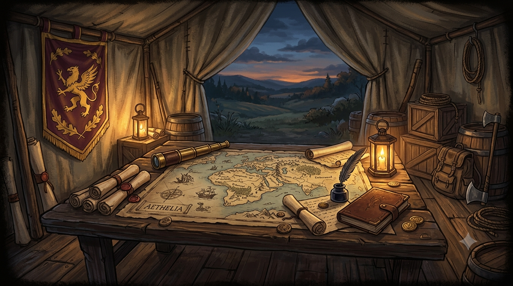
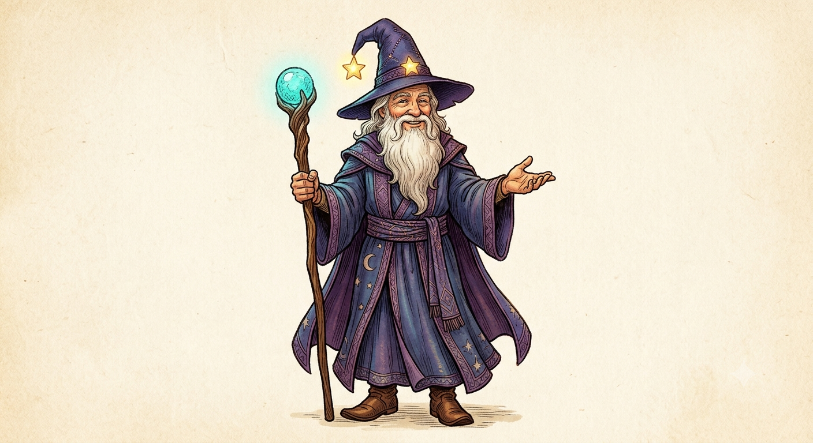

<!doctype html>
<html lang="en">
  <head>
    <meta charset="UTF-8" />
    <meta name="viewport" content="width=device-width, initial-scale=1.0, viewport-fit=cover" />
    <meta name="theme-color" content="#0b0620" />
    <meta name="apple-mobile-web-app-capable" content="yes" />
    <meta name="mobile-web-app-capable" content="yes" />
    <meta name="apple-mobile-web-app-status-bar-style" content="black-translucent" />
    <meta name="apple-mobile-web-app-title" content="ACT Command" />
    <link rel="apple-touch-icon" href="data:image/svg+xml,%3Csvg xmlns='http://www.w3.org/2000/svg' viewBox='0 0 512 512'%3E%3Crect width='512' height='512' rx='96' fill='%236a4ff0'/%3E%3Cpolygon points='256,120 300,210 400,224 328,294 346,394 256,346 166,394 184,294 112,224 212,210' fill='%23ffd23e'/%3E%3C/svg%3E" />
    <link rel="icon" href="data:image/svg+xml,%3Csvg xmlns='http://www.w3.org/2000/svg' viewBox='0 0 512 512'%3E%3Crect width='512' height='512' rx='96' fill='%236a4ff0'/%3E%3Cpolygon points='256,120 300,210 400,224 328,294 346,394 256,346 166,394 184,294 112,224 212,210' fill='%23ffd23e'/%3E%3C/svg%3E" />
    <link rel="manifest" href="data:application/manifest+json,%7B%22name%22%3A%22ACT%20Command%22%2C%22short_name%22%3A%22ACT%20Command%22%2C%22start_url%22%3A%22.%22%2C%22display%22%3A%22standalone%22%2C%22background_color%22%3A%22%230b0620%22%2C%22theme_color%22%3A%22%236a4ff0%22%2C%22icons%22%3A%5B%7B%22src%22%3A%22data:image/svg+xml,%253Csvg xmlns='http://www.w3.org/2000/svg' viewBox='0 0 512 512'%253E%253Crect width='512' height='512' rx='96' fill='%25236a4ff0'/%253E%253Cpolygon points='256,120 300,210 400,224 328,294 346,394 256,346 166,394 184,294 112,224 212,210' fill='%2523ffd23e'/%253E%253C/svg%253E%22%2C%22sizes%22%3A%22any%22%2C%22type%22%3A%22image%2Fsvg%2Bxml%22%7D%5D%7D" />

    <meta name="description" content="Complete ACT prep — study notes, adaptive drills, full-length practice tests, and gamified progress tracking for the 2025+ Enhanced ACT." />
    <title>ACT Command — Enhanced ACT Prep</title>
    <link rel="preconnect" href="https://fonts.googleapis.com" />
    <link rel="preconnect" href="https://fonts.gstatic.com" crossorigin />
    <link href="https://fonts.googleapis.com/css2?family=Nunito:wght@400;600;700;800;900&family=Newsreader:opsz,wght@6..72,400;6..72,500;6..72,600&display=swap" rel="stylesheet" />
    
    
  <style>*,:before,:after{--tw-border-spacing-x: 0;--tw-border-spacing-y: 0;--tw-translate-x: 0;--tw-translate-y: 0;--tw-rotate: 0;--tw-skew-x: 0;--tw-skew-y: 0;--tw-scale-x: 1;--tw-scale-y: 1;--tw-pan-x: ;--tw-pan-y: ;--tw-pinch-zoom: ;--tw-scroll-snap-strictness: proximity;--tw-gradient-from-position: ;--tw-gradient-via-position: ;--tw-gradient-to-position: ;--tw-ordinal: ;--tw-slashed-zero: ;--tw-numeric-figure: ;--tw-numeric-spacing: ;--tw-numeric-fraction: ;--tw-ring-inset: ;--tw-ring-offset-width: 0px;--tw-ring-offset-color: #fff;--tw-ring-color: rgb(59 130 246 / .5);--tw-ring-offset-shadow: 0 0 #0000;--tw-ring-shadow: 0 0 #0000;--tw-shadow: 0 0 #0000;--tw-shadow-colored: 0 0 #0000;--tw-blur: ;--tw-brightness: ;--tw-contrast: ;--tw-grayscale: ;--tw-hue-rotate: ;--tw-invert: ;--tw-saturate: ;--tw-sepia: ;--tw-drop-shadow: ;--tw-backdrop-blur: ;--tw-backdrop-brightness: ;--tw-backdrop-contrast: ;--tw-backdrop-grayscale: ;--tw-backdrop-hue-rotate: ;--tw-backdrop-invert: ;--tw-backdrop-opacity: ;--tw-backdrop-saturate: ;--tw-backdrop-sepia: ;--tw-contain-size: ;--tw-contain-layout: ;--tw-contain-paint: ;--tw-contain-style: }::backdrop{--tw-border-spacing-x: 0;--tw-border-spacing-y: 0;--tw-translate-x: 0;--tw-translate-y: 0;--tw-rotate: 0;--tw-skew-x: 0;--tw-skew-y: 0;--tw-scale-x: 1;--tw-scale-y: 1;--tw-pan-x: ;--tw-pan-y: ;--tw-pinch-zoom: ;--tw-scroll-snap-strictness: proximity;--tw-gradient-from-position: ;--tw-gradient-via-position: ;--tw-gradient-to-position: ;--tw-ordinal: ;--tw-slashed-zero: ;--tw-numeric-figure: ;--tw-numeric-spacing: ;--tw-numeric-fraction: ;--tw-ring-inset: ;--tw-ring-offset-width: 0px;--tw-ring-offset-color: #fff;--tw-ring-color: rgb(59 130 246 / .5);--tw-ring-offset-shadow: 0 0 #0000;--tw-ring-shadow: 0 0 #0000;--tw-shadow: 0 0 #0000;--tw-shadow-colored: 0 0 #0000;--tw-blur: ;--tw-brightness: ;--tw-contrast: ;--tw-grayscale: ;--tw-hue-rotate: ;--tw-invert: ;--tw-saturate: ;--tw-sepia: ;--tw-drop-shadow: ;--tw-backdrop-blur: ;--tw-backdrop-brightness: ;--tw-backdrop-contrast: ;--tw-backdrop-grayscale: ;--tw-backdrop-hue-rotate: ;--tw-backdrop-invert: ;--tw-backdrop-opacity: ;--tw-backdrop-saturate: ;--tw-backdrop-sepia: ;--tw-contain-size: ;--tw-contain-layout: ;--tw-contain-paint: ;--tw-contain-style: }*,:before,:after{box-sizing:border-box;border-width:0;border-style:solid;border-color:#e5e7eb}:before,:after{--tw-content: ""}html,:host{line-height:1.5;-webkit-text-size-adjust:100%;-moz-tab-size:4;-o-tab-size:4;tab-size:4;font-family:Nunito,ui-sans-serif,system-ui,-apple-system,Segoe UI,sans-serif;font-feature-settings:normal;font-variation-settings:normal;-webkit-tap-highlight-color:transparent}body{margin:0;line-height:inherit}hr{height:0;color:inherit;border-top-width:1px}abbr:where([title]){-webkit-text-decoration:underline dotted;text-decoration:underline dotted}h1,h2,h3,h4,h5,h6{font-size:inherit;font-weight:inherit}a{color:inherit;text-decoration:inherit}b,strong{font-weight:bolder}code,kbd,samp,pre{font-family:ui-monospace,SFMono-Regular,Menlo,monospace;font-feature-settings:normal;font-variation-settings:normal;font-size:1em}small{font-size:80%}sub,sup{font-size:75%;line-height:0;position:relative;vertical-align:baseline}sub{bottom:-.25em}sup{top:-.5em}table{text-indent:0;border-color:inherit;border-collapse:collapse}button,input,optgroup,select,textarea{font-family:inherit;font-feature-settings:inherit;font-variation-settings:inherit;font-size:100%;font-weight:inherit;line-height:inherit;letter-spacing:inherit;color:inherit;margin:0;padding:0}button,select{text-transform:none}button,input:where([type=button]),input:where([type=reset]),input:where([type=submit]){-webkit-appearance:button;background-color:transparent;background-image:none}:-moz-focusring{outline:auto}:-moz-ui-invalid{box-shadow:none}progress{vertical-align:baseline}::-webkit-inner-spin-button,::-webkit-outer-spin-button{height:auto}[type=search]{-webkit-appearance:textfield;outline-offset:-2px}::-webkit-search-decoration{-webkit-appearance:none}::-webkit-file-upload-button{-webkit-appearance:button;font:inherit}summary{display:list-item}blockquote,dl,dd,h1,h2,h3,h4,h5,h6,hr,figure,p,pre{margin:0}fieldset{margin:0;padding:0}legend{padding:0}ol,ul,menu{list-style:none;margin:0;padding:0}dialog{padding:0}textarea{resize:vertical}input::-moz-placeholder,textarea::-moz-placeholder{opacity:1;color:#9ca3af}input::placeholder,textarea::placeholder{opacity:1;color:#9ca3af}button,[role=button]{cursor:pointer}:disabled{cursor:default}img,svg,video,canvas,audio,iframe,embed,object{display:block;vertical-align:middle}img,video{max-width:100%;height:auto}[hidden]:where(:not([hidden=until-found])){display:none}:root{color-scheme:light}html,body,#root{height:100%}body{--tw-bg-opacity: 1;background-color:rgb(244 246 251 / var(--tw-bg-opacity, 1));font-family:Nunito,ui-sans-serif,system-ui,-apple-system,Segoe UI,sans-serif;--tw-text-opacity: 1;color:rgb(30 41 59 / var(--tw-text-opacity, 1));-webkit-font-smoothing:antialiased;-moz-osx-font-smoothing:grayscale}::-moz-selection{background:#22c55e38}::selection{background:#22c55e38}h1,h2,h3,h4{letter-spacing:-.025em;--tw-text-opacity: 1;color:rgb(15 23 42 / var(--tw-text-opacity, 1))}.container{width:100%}@media (min-width: 640px){.container{max-width:640px}}@media (min-width: 768px){.container{max-width:768px}}@media (min-width: 1024px){.container{max-width:1024px}}@media (min-width: 1280px){.container{max-width:1280px}}@media (min-width: 1536px){.container{max-width:1536px}}.card{border-radius:1rem;border-width:2px;--tw-border-opacity: 1;border-color:rgb(226 232 240 / var(--tw-border-opacity, 1));--tw-bg-opacity: 1;background-color:rgb(255 255 255 / var(--tw-bg-opacity, 1));--tw-shadow: 0 3px 0 #e2e8f0;--tw-shadow-colored: 0 3px 0 var(--tw-shadow-color);box-shadow:var(--tw-ring-offset-shadow, 0 0 #0000),var(--tw-ring-shadow, 0 0 #0000),var(--tw-shadow)}.card-hover{transition-property:all;transition-timing-function:cubic-bezier(.4,0,.2,1);transition-duration:.2s}.card-hover:hover{--tw-translate-y: -.125rem;transform:translate(var(--tw-translate-x),var(--tw-translate-y)) rotate(var(--tw-rotate)) skew(var(--tw-skew-x)) skewY(var(--tw-skew-y)) scaleX(var(--tw-scale-x)) scaleY(var(--tw-scale-y));--tw-border-opacity: 1;border-color:rgb(203 213 225 / var(--tw-border-opacity, 1));--tw-shadow: 0 5px 0 #e2e8f0;--tw-shadow-colored: 0 5px 0 var(--tw-shadow-color);box-shadow:var(--tw-ring-offset-shadow, 0 0 #0000),var(--tw-ring-shadow, 0 0 #0000),var(--tw-shadow)}.btn{display:inline-flex;-webkit-user-select:none;-moz-user-select:none;user-select:none;align-items:center;justify-content:center;gap:.5rem;border-radius:1rem;padding:.625rem 1rem;font-size:.875rem;line-height:1.25rem;font-weight:800;letter-spacing:.025em;transition-property:all;transition-timing-function:cubic-bezier(.4,0,.2,1);transition-duration:.15s}.btn:focus{outline:2px solid transparent;outline-offset:2px}.btn:focus-visible{--tw-ring-offset-shadow: var(--tw-ring-inset) 0 0 0 var(--tw-ring-offset-width) var(--tw-ring-offset-color);--tw-ring-shadow: var(--tw-ring-inset) 0 0 0 calc(2px + var(--tw-ring-offset-width)) var(--tw-ring-color);box-shadow:var(--tw-ring-offset-shadow),var(--tw-ring-shadow),var(--tw-shadow, 0 0 #0000);--tw-ring-opacity: 1;--tw-ring-color: rgb(134 239 172 / var(--tw-ring-opacity, 1))}.btn:disabled{pointer-events:none;opacity:.4}.btn-primary{display:inline-flex;-webkit-user-select:none;-moz-user-select:none;user-select:none;align-items:center;justify-content:center;gap:.5rem;border-radius:1rem;padding:.625rem 1rem;font-size:.875rem;line-height:1.25rem;font-weight:800;letter-spacing:.025em;transition-property:all;transition-timing-function:cubic-bezier(.4,0,.2,1);transition-duration:.15s}.btn-primary:focus{outline:2px solid transparent;outline-offset:2px}.btn-primary:focus-visible{--tw-ring-offset-shadow: var(--tw-ring-inset) 0 0 0 var(--tw-ring-offset-width) var(--tw-ring-offset-color);--tw-ring-shadow: var(--tw-ring-inset) 0 0 0 calc(2px + var(--tw-ring-offset-width)) var(--tw-ring-color);box-shadow:var(--tw-ring-offset-shadow),var(--tw-ring-shadow),var(--tw-shadow, 0 0 #0000);--tw-ring-opacity: 1;--tw-ring-color: rgb(134 239 172 / var(--tw-ring-opacity, 1))}.btn-primary:disabled{pointer-events:none;opacity:.4}.btn-primary{border-bottom-width:4px;--tw-border-opacity: 1;border-color:rgb(22 163 74 / var(--tw-border-opacity, 1));--tw-bg-opacity: 1;background-color:rgb(34 197 94 / var(--tw-bg-opacity, 1));--tw-text-opacity: 1;color:rgb(255 255 255 / var(--tw-text-opacity, 1))}.btn-primary:hover{--tw-border-opacity: 1;border-color:rgb(34 197 94 / var(--tw-border-opacity, 1));--tw-bg-opacity: 1;background-color:rgb(74 222 128 / var(--tw-bg-opacity, 1))}.btn-primary:active{--tw-translate-y: 2px;transform:translate(var(--tw-translate-x),var(--tw-translate-y)) rotate(var(--tw-rotate)) skew(var(--tw-skew-x)) skewY(var(--tw-skew-y)) scaleX(var(--tw-scale-x)) scaleY(var(--tw-scale-y));border-bottom-width:2px}.btn-ghost{display:inline-flex;-webkit-user-select:none;-moz-user-select:none;user-select:none;align-items:center;justify-content:center;gap:.5rem;border-radius:1rem;padding:.625rem 1rem;font-size:.875rem;line-height:1.25rem;font-weight:800;letter-spacing:.025em;transition-property:all;transition-timing-function:cubic-bezier(.4,0,.2,1);transition-duration:.15s}.btn-ghost:focus{outline:2px solid transparent;outline-offset:2px}.btn-ghost:focus-visible{--tw-ring-offset-shadow: var(--tw-ring-inset) 0 0 0 var(--tw-ring-offset-width) var(--tw-ring-offset-color);--tw-ring-shadow: var(--tw-ring-inset) 0 0 0 calc(2px + var(--tw-ring-offset-width)) var(--tw-ring-color);box-shadow:var(--tw-ring-offset-shadow),var(--tw-ring-shadow),var(--tw-shadow, 0 0 #0000);--tw-ring-opacity: 1;--tw-ring-color: rgb(134 239 172 / var(--tw-ring-opacity, 1))}.btn-ghost:disabled{pointer-events:none;opacity:.4}.btn-ghost{border-width:2px;border-bottom-width:4px;--tw-border-opacity: 1;border-color:rgb(226 232 240 / var(--tw-border-opacity, 1));--tw-bg-opacity: 1;background-color:rgb(255 255 255 / var(--tw-bg-opacity, 1));--tw-text-opacity: 1;color:rgb(71 85 105 / var(--tw-text-opacity, 1))}.btn-ghost:hover{--tw-bg-opacity: 1;background-color:rgb(248 250 252 / var(--tw-bg-opacity, 1));--tw-text-opacity: 1;color:rgb(15 23 42 / var(--tw-text-opacity, 1))}.btn-ghost:active{--tw-translate-y: 2px;transform:translate(var(--tw-translate-x),var(--tw-translate-y)) rotate(var(--tw-rotate)) skew(var(--tw-skew-x)) skewY(var(--tw-skew-y)) scaleX(var(--tw-scale-x)) scaleY(var(--tw-scale-y));border-bottom-width:2px}.btn-sm{border-radius:.75rem;padding:.375rem .75rem;font-size:13px}.chip{display:inline-flex;align-items:center;gap:.375rem;border-radius:9999px;padding:.25rem .625rem;font-size:11px;font-weight:600;text-transform:uppercase;letter-spacing:.05em;--tw-ring-offset-shadow: var(--tw-ring-inset) 0 0 0 var(--tw-ring-offset-width) var(--tw-ring-offset-color);--tw-ring-shadow: var(--tw-ring-inset) 0 0 0 calc(1px + var(--tw-ring-offset-width)) var(--tw-ring-color);box-shadow:var(--tw-ring-offset-shadow),var(--tw-ring-shadow),var(--tw-shadow, 0 0 #0000);--tw-ring-inset: inset}.prose-note{font-size:15px;line-height:1.75;--tw-text-opacity: 1;color:rgb(51 65 85 / var(--tw-text-opacity, 1))}.prose-note strong{font-weight:600;--tw-text-opacity: 1;color:rgb(15 23 42 / var(--tw-text-opacity, 1))}.prose-note em{font-weight:600;font-style:normal;--tw-text-opacity: 1;color:rgb(21 128 61 / var(--tw-text-opacity, 1))}.scroll-thin{scrollbar-width:thin;scrollbar-color:rgba(15,23,42,.18) transparent}.scroll-thin::-webkit-scrollbar{width:9px;height:9px}.scroll-thin::-webkit-scrollbar-thumb{background:#0f172a29;border-radius:99px;border:2px solid transparent;background-clip:content-box}.scroll-thin::-webkit-scrollbar-thumb:hover{background:#0f172a4d;background-clip:content-box}.scroll-thin::-webkit-scrollbar-track{background:transparent}.xp-stripes{background-image:linear-gradient(45deg,rgba(255,255,255,.3) 25%,transparent 25%,transparent 50%,rgba(255,255,255,.3) 50%,rgba(255,255,255,.3) 75%,transparent 75%,transparent);background-size:1rem 1rem;animation:stripeMove 1s linear infinite}.pointer-events-none{pointer-events:none}.pointer-events-auto{pointer-events:auto}.visible{visibility:visible}.collapse{visibility:collapse}.fixed{position:fixed}.absolute{position:absolute}.relative{position:relative}.sticky{position:sticky}.-inset-3{top:-.75rem;right:-.75rem;bottom:-.75rem;left:-.75rem}.inset-0{top:0;right:0;bottom:0;left:0}.inset-y-0{top:0;bottom:0}.-bottom-2{bottom:-.5rem}.-top-1{top:-.25rem}.-top-2{top:-.5rem}.bottom-4{bottom:1rem}.left-0{left:0}.left-1\/2{left:50%}.left-3{left:.75rem}.right-2\.5{right:.625rem}.right-4{right:1rem}.top-0{top:0}.top-1\/2{top:50%}.top-2{top:.5rem}.isolate{isolation:isolate}.z-10{z-index:10}.z-20{z-index:20}.z-30{z-index:30}.z-40{z-index:40}.z-50{z-index:50}.z-\[60\]{z-index:60}.mx-auto{margin-left:auto;margin-right:auto}.mb-1{margin-bottom:.25rem}.mb-1\.5{margin-bottom:.375rem}.mb-2{margin-bottom:.5rem}.mb-2\.5{margin-bottom:.625rem}.mb-3{margin-bottom:.75rem}.mb-4{margin-bottom:1rem}.mb-5{margin-bottom:1.25rem}.ml-1{margin-left:.25rem}.ml-2{margin-left:.5rem}.ml-auto{margin-left:auto}.mt-0\.5{margin-top:.125rem}.mt-1{margin-top:.25rem}.mt-1\.5{margin-top:.375rem}.mt-2{margin-top:.5rem}.mt-2\.5{margin-top:.625rem}.mt-3{margin-top:.75rem}.mt-4{margin-top:1rem}.mt-5{margin-top:1.25rem}.mt-6{margin-top:1.5rem}.mt-7{margin-top:1.75rem}.mt-8{margin-top:2rem}.mt-\[7px\]{margin-top:7px}.mt-\[9px\]{margin-top:9px}.mt-px{margin-top:1px}.line-clamp-1{overflow:hidden;display:-webkit-box;-webkit-box-orient:vertical;-webkit-line-clamp:1}.line-clamp-2{overflow:hidden;display:-webkit-box;-webkit-box-orient:vertical;-webkit-line-clamp:2}.block{display:block}.inline{display:inline}.flex{display:flex}.inline-flex{display:inline-flex}.\!table{display:table!important}.table{display:table}.grid{display:grid}.contents{display:contents}.hidden{display:none}.h-1{height:.25rem}.h-1\.5{height:.375rem}.h-10{height:2.5rem}.h-11{height:2.75rem}.h-12{height:3rem}.h-14{height:3.5rem}.h-16{height:4rem}.h-2{height:.5rem}.h-24{height:6rem}.h-28{height:7rem}.h-3{height:.75rem}.h-3\.5{height:.875rem}.h-4{height:1rem}.h-5{height:1.25rem}.h-6{height:1.5rem}.h-7{height:1.75rem}.h-8{height:2rem}.h-9{height:2.25rem}.h-\[calc\(100vh-8\.5rem\)\]{height:calc(100vh - 8.5rem)}.h-full{height:100%}.max-h-56{max-height:14rem}.max-h-\[46vh\]{max-height:46vh}.max-h-\[85vh\]{max-height:85vh}.min-h-screen{min-height:100vh}.w-1{width:.25rem}.w-1\.5{width:.375rem}.w-10{width:2.5rem}.w-11{width:2.75rem}.w-12{width:3rem}.w-14{width:3.5rem}.w-16{width:4rem}.w-2{width:.5rem}.w-24{width:6rem}.w-28{width:7rem}.w-3{width:.75rem}.w-3\.5{width:.875rem}.w-32{width:8rem}.w-36{width:9rem}.w-4{width:1rem}.w-40{width:10rem}.w-44{width:11rem}.w-5{width:1.25rem}.w-6{width:1.5rem}.w-7{width:1.75rem}.w-72{width:18rem}.w-8{width:2rem}.w-\[85vw\]{width:85vw}.w-\[min\(92vw\,22rem\)\]{width:min(92vw,22rem)}.w-fit{width:-moz-fit-content;width:fit-content}.w-full{width:100%}.min-w-0{min-width:0px}.min-w-2{min-width:.5rem}.min-w-\[12rem\]{min-width:12rem}.min-w-\[14rem\]{min-width:14rem}.min-w-\[7rem\]{min-width:7rem}.min-w-\[8rem\]{min-width:8rem}.min-w-\[9rem\]{min-width:9rem}.max-w-2xl{max-width:42rem}.max-w-3xl{max-width:48rem}.max-w-7xl{max-width:80rem}.max-w-\[45\%\]{max-width:45%}.max-w-lg{max-width:32rem}.max-w-sm{max-width:24rem}.max-w-xs{max-width:20rem}.flex-1{flex:1 1 0%}.shrink{flex-shrink:1}.shrink-0{flex-shrink:0}.grow{flex-grow:1}.-translate-x-1\/2{--tw-translate-x: -50%;transform:translate(var(--tw-translate-x),var(--tw-translate-y)) rotate(var(--tw-rotate)) skew(var(--tw-skew-x)) skewY(var(--tw-skew-y)) scaleX(var(--tw-scale-x)) scaleY(var(--tw-scale-y))}.-translate-y-1\/2{--tw-translate-y: -50%;transform:translate(var(--tw-translate-x),var(--tw-translate-y)) rotate(var(--tw-rotate)) skew(var(--tw-skew-x)) skewY(var(--tw-skew-y)) scaleX(var(--tw-scale-x)) scaleY(var(--tw-scale-y))}.-translate-y-full{--tw-translate-y: -100%;transform:translate(var(--tw-translate-x),var(--tw-translate-y)) rotate(var(--tw-rotate)) skew(var(--tw-skew-x)) skewY(var(--tw-skew-y)) scaleX(var(--tw-scale-x)) scaleY(var(--tw-scale-y))}.-rotate-90{--tw-rotate: -90deg;transform:translate(var(--tw-translate-x),var(--tw-translate-y)) rotate(var(--tw-rotate)) skew(var(--tw-skew-x)) skewY(var(--tw-skew-y)) scaleX(var(--tw-scale-x)) scaleY(var(--tw-scale-y))}.transform{transform:translate(var(--tw-translate-x),var(--tw-translate-y)) rotate(var(--tw-rotate)) skew(var(--tw-skew-x)) skewY(var(--tw-skew-y)) scaleX(var(--tw-scale-x)) scaleY(var(--tw-scale-y))}@keyframes fadeUp{0%{opacity:0;transform:translateY(8px)}to{opacity:1;transform:translateY(0)}}.animate-fadeUp{animation:fadeUp .35s cubic-bezier(.22,1,.36,1) both}@keyframes popIn{0%{opacity:0;transform:scale(.94)}to{opacity:1;transform:scale(1)}}.animate-popIn{animation:popIn .25s cubic-bezier(.22,1,.36,1) both}@keyframes pulseRing{0%{box-shadow:0 0 #22c55e73}70%{box-shadow:0 0 0 14px #22c55e00}to{box-shadow:0 0 #22c55e00}}.animate-pulseRing{animation:pulseRing 2s ease-out infinite}.cursor-default{cursor:default}.cursor-pointer{cursor:pointer}.grid-cols-2{grid-template-columns:repeat(2,minmax(0,1fr))}.grid-cols-3{grid-template-columns:repeat(3,minmax(0,1fr))}.grid-cols-4{grid-template-columns:repeat(4,minmax(0,1fr))}.grid-cols-8{grid-template-columns:repeat(8,minmax(0,1fr))}.flex-col{flex-direction:column}.flex-wrap{flex-wrap:wrap}.items-start{align-items:flex-start}.items-end{align-items:flex-end}.items-center{align-items:center}.items-baseline{align-items:baseline}.justify-end{justify-content:flex-end}.justify-center{justify-content:center}.justify-between{justify-content:space-between}.gap-1{gap:.25rem}.gap-1\.5{gap:.375rem}.gap-2{gap:.5rem}.gap-2\.5{gap:.625rem}.gap-3{gap:.75rem}.gap-4{gap:1rem}.gap-5{gap:1.25rem}.gap-6{gap:1.5rem}.gap-x-3{-moz-column-gap:.75rem;column-gap:.75rem}.gap-y-0\.5{row-gap:.125rem}.space-y-0\.5>:not([hidden])~:not([hidden]){--tw-space-y-reverse: 0;margin-top:calc(.125rem * calc(1 - var(--tw-space-y-reverse)));margin-bottom:calc(.125rem * var(--tw-space-y-reverse))}.space-y-1>:not([hidden])~:not([hidden]){--tw-space-y-reverse: 0;margin-top:calc(.25rem * calc(1 - var(--tw-space-y-reverse)));margin-bottom:calc(.25rem * var(--tw-space-y-reverse))}.space-y-1\.5>:not([hidden])~:not([hidden]){--tw-space-y-reverse: 0;margin-top:calc(.375rem * calc(1 - var(--tw-space-y-reverse)));margin-bottom:calc(.375rem * var(--tw-space-y-reverse))}.space-y-2>:not([hidden])~:not([hidden]){--tw-space-y-reverse: 0;margin-top:calc(.5rem * calc(1 - var(--tw-space-y-reverse)));margin-bottom:calc(.5rem * var(--tw-space-y-reverse))}.space-y-2\.5>:not([hidden])~:not([hidden]){--tw-space-y-reverse: 0;margin-top:calc(.625rem * calc(1 - var(--tw-space-y-reverse)));margin-bottom:calc(.625rem * var(--tw-space-y-reverse))}.space-y-3>:not([hidden])~:not([hidden]){--tw-space-y-reverse: 0;margin-top:calc(.75rem * calc(1 - var(--tw-space-y-reverse)));margin-bottom:calc(.75rem * var(--tw-space-y-reverse))}.space-y-4>:not([hidden])~:not([hidden]){--tw-space-y-reverse: 0;margin-top:calc(1rem * calc(1 - var(--tw-space-y-reverse)));margin-bottom:calc(1rem * var(--tw-space-y-reverse))}.space-y-5>:not([hidden])~:not([hidden]){--tw-space-y-reverse: 0;margin-top:calc(1.25rem * calc(1 - var(--tw-space-y-reverse)));margin-bottom:calc(1.25rem * var(--tw-space-y-reverse))}.space-y-6>:not([hidden])~:not([hidden]){--tw-space-y-reverse: 0;margin-top:calc(1.5rem * calc(1 - var(--tw-space-y-reverse)));margin-bottom:calc(1.5rem * var(--tw-space-y-reverse))}.divide-x>:not([hidden])~:not([hidden]){--tw-divide-x-reverse: 0;border-right-width:calc(1px * var(--tw-divide-x-reverse));border-left-width:calc(1px * calc(1 - var(--tw-divide-x-reverse)))}.divide-y>:not([hidden])~:not([hidden]){--tw-divide-y-reverse: 0;border-top-width:calc(1px * calc(1 - var(--tw-divide-y-reverse)));border-bottom-width:calc(1px * var(--tw-divide-y-reverse))}.divide-slate-200>:not([hidden])~:not([hidden]){--tw-divide-opacity: 1;border-color:rgb(226 232 240 / var(--tw-divide-opacity, 1))}.overflow-hidden{overflow:hidden}.overflow-visible{overflow:visible}.overflow-x-auto{overflow-x:auto}.overflow-y-auto{overflow-y:auto}.truncate{overflow:hidden;text-overflow:ellipsis;white-space:nowrap}.whitespace-nowrap{white-space:nowrap}.whitespace-pre-line{white-space:pre-line}.rounded{border-radius:.25rem}.rounded-2xl{border-radius:1rem}.rounded-\[4px\]{border-radius:4px}.rounded-full{border-radius:9999px}.rounded-lg{border-radius:.5rem}.rounded-md{border-radius:.375rem}.rounded-xl{border-radius:.75rem}.rounded-l-none{border-top-left-radius:0;border-bottom-left-radius:0}.rounded-t-md{border-top-left-radius:.375rem;border-top-right-radius:.375rem}.border{border-width:1px}.border-2{border-width:2px}.border-\[5px\]{border-width:5px}.border-b{border-bottom-width:1px}.border-b-4{border-bottom-width:4px}.border-l-2{border-left-width:2px}.border-l-4{border-left-width:4px}.border-l-\[3px\]{border-left-width:3px}.border-t{border-top-width:1px}.border-t-4{border-top-width:4px}.border-amber-300{--tw-border-opacity: 1;border-color:rgb(252 211 77 / var(--tw-border-opacity, 1))}.border-blue-300{--tw-border-opacity: 1;border-color:rgb(147 197 253 / var(--tw-border-opacity, 1))}.border-emerald-300{--tw-border-opacity: 1;border-color:rgb(110 231 183 / var(--tw-border-opacity, 1))}.border-emerald-400{--tw-border-opacity: 1;border-color:rgb(52 211 153 / var(--tw-border-opacity, 1))}.border-fuchsia-300{--tw-border-opacity: 1;border-color:rgb(240 171 252 / var(--tw-border-opacity, 1))}.border-green-200{--tw-border-opacity: 1;border-color:rgb(187 247 208 / var(--tw-border-opacity, 1))}.border-green-300{--tw-border-opacity: 1;border-color:rgb(134 239 172 / var(--tw-border-opacity, 1))}.border-green-600{--tw-border-opacity: 1;border-color:rgb(22 163 74 / var(--tw-border-opacity, 1))}.border-rose-300{--tw-border-opacity: 1;border-color:rgb(253 164 175 / var(--tw-border-opacity, 1))}.border-rose-400{--tw-border-opacity: 1;border-color:rgb(251 113 133 / var(--tw-border-opacity, 1))}.border-sky-400{--tw-border-opacity: 1;border-color:rgb(56 189 248 / var(--tw-border-opacity, 1))}.border-slate-200{--tw-border-opacity: 1;border-color:rgb(226 232 240 / var(--tw-border-opacity, 1))}.border-transparent{border-color:transparent}.border-violet-300{--tw-border-opacity: 1;border-color:rgb(196 181 253 / var(--tw-border-opacity, 1))}.bg-amber-100{--tw-bg-opacity: 1;background-color:rgb(254 243 199 / var(--tw-bg-opacity, 1))}.bg-amber-300{--tw-bg-opacity: 1;background-color:rgb(252 211 77 / var(--tw-bg-opacity, 1))}.bg-amber-400{--tw-bg-opacity: 1;background-color:rgb(251 191 36 / var(--tw-bg-opacity, 1))}.bg-amber-50{--tw-bg-opacity: 1;background-color:rgb(255 251 235 / var(--tw-bg-opacity, 1))}.bg-blue-100{--tw-bg-opacity: 1;background-color:rgb(219 234 254 / var(--tw-bg-opacity, 1))}.bg-blue-500{--tw-bg-opacity: 1;background-color:rgb(59 130 246 / var(--tw-bg-opacity, 1))}.bg-emerald-100{--tw-bg-opacity: 1;background-color:rgb(209 250 229 / var(--tw-bg-opacity, 1))}.bg-emerald-200{--tw-bg-opacity: 1;background-color:rgb(167 243 208 / var(--tw-bg-opacity, 1))}.bg-emerald-400\/60{background-color:#34d39999}.bg-emerald-500{--tw-bg-opacity: 1;background-color:rgb(16 185 129 / var(--tw-bg-opacity, 1))}.bg-fuchsia-100{--tw-bg-opacity: 1;background-color:rgb(250 232 255 / var(--tw-bg-opacity, 1))}.bg-green-100{--tw-bg-opacity: 1;background-color:rgb(220 252 231 / var(--tw-bg-opacity, 1))}.bg-green-200{--tw-bg-opacity: 1;background-color:rgb(187 247 208 / var(--tw-bg-opacity, 1))}.bg-green-300{--tw-bg-opacity: 1;background-color:rgb(134 239 172 / var(--tw-bg-opacity, 1))}.bg-green-400{--tw-bg-opacity: 1;background-color:rgb(74 222 128 / var(--tw-bg-opacity, 1))}.bg-green-50{--tw-bg-opacity: 1;background-color:rgb(240 253 244 / var(--tw-bg-opacity, 1))}.bg-green-500{--tw-bg-opacity: 1;background-color:rgb(34 197 94 / var(--tw-bg-opacity, 1))}.bg-green-600{--tw-bg-opacity: 1;background-color:rgb(22 163 74 / var(--tw-bg-opacity, 1))}.bg-orange-100{--tw-bg-opacity: 1;background-color:rgb(255 237 213 / var(--tw-bg-opacity, 1))}.bg-rose-100{--tw-bg-opacity: 1;background-color:rgb(255 228 230 / var(--tw-bg-opacity, 1))}.bg-rose-200{--tw-bg-opacity: 1;background-color:rgb(254 205 211 / var(--tw-bg-opacity, 1))}.bg-rose-400\/70{background-color:#fb7185b3}.bg-rose-50{--tw-bg-opacity: 1;background-color:rgb(255 241 242 / var(--tw-bg-opacity, 1))}.bg-rose-500{--tw-bg-opacity: 1;background-color:rgb(244 63 94 / var(--tw-bg-opacity, 1))}.bg-sky-100{--tw-bg-opacity: 1;background-color:rgb(224 242 254 / var(--tw-bg-opacity, 1))}.bg-sky-500{--tw-bg-opacity: 1;background-color:rgb(14 165 233 / var(--tw-bg-opacity, 1))}.bg-slate-100{--tw-bg-opacity: 1;background-color:rgb(241 245 249 / var(--tw-bg-opacity, 1))}.bg-slate-200{--tw-bg-opacity: 1;background-color:rgb(226 232 240 / var(--tw-bg-opacity, 1))}.bg-slate-300{--tw-bg-opacity: 1;background-color:rgb(203 213 225 / var(--tw-bg-opacity, 1))}.bg-slate-50{--tw-bg-opacity: 1;background-color:rgb(248 250 252 / var(--tw-bg-opacity, 1))}.bg-slate-800{--tw-bg-opacity: 1;background-color:rgb(30 41 59 / var(--tw-bg-opacity, 1))}.bg-slate-900\/30{background-color:#0f172a4d}.bg-transparent{background-color:transparent}.bg-violet-100{--tw-bg-opacity: 1;background-color:rgb(237 233 254 / var(--tw-bg-opacity, 1))}.bg-violet-500{--tw-bg-opacity: 1;background-color:rgb(139 92 246 / var(--tw-bg-opacity, 1))}.bg-white{--tw-bg-opacity: 1;background-color:rgb(255 255 255 / var(--tw-bg-opacity, 1))}.bg-white\/90{background-color:#ffffffe6}.bg-gradient-to-br{background-image:linear-gradient(to bottom right,var(--tw-gradient-stops))}.from-amber-400{--tw-gradient-from: #fbbf24 var(--tw-gradient-from-position);--tw-gradient-to: rgb(251 191 36 / 0) var(--tw-gradient-to-position);--tw-gradient-stops: var(--tw-gradient-from), var(--tw-gradient-to)}.from-amber-500{--tw-gradient-from: #f59e0b var(--tw-gradient-from-position);--tw-gradient-to: rgb(245 158 11 / 0) var(--tw-gradient-to-position);--tw-gradient-stops: var(--tw-gradient-from), var(--tw-gradient-to)}.from-amber-700{--tw-gradient-from: #b45309 var(--tw-gradient-from-position);--tw-gradient-to: rgb(180 83 9 / 0) var(--tw-gradient-to-position);--tw-gradient-stops: var(--tw-gradient-from), var(--tw-gradient-to)}.from-blue-500{--tw-gradient-from: #3b82f6 var(--tw-gradient-from-position);--tw-gradient-to: rgb(59 130 246 / 0) var(--tw-gradient-to-position);--tw-gradient-stops: var(--tw-gradient-from), var(--tw-gradient-to)}.from-cyan-400{--tw-gradient-from: #22d3ee var(--tw-gradient-from-position);--tw-gradient-to: rgb(34 211 238 / 0) var(--tw-gradient-to-position);--tw-gradient-stops: var(--tw-gradient-from), var(--tw-gradient-to)}.from-emerald-500{--tw-gradient-from: #10b981 var(--tw-gradient-from-position);--tw-gradient-to: rgb(16 185 129 / 0) var(--tw-gradient-to-position);--tw-gradient-stops: var(--tw-gradient-from), var(--tw-gradient-to)}.from-fuchsia-500{--tw-gradient-from: #d946ef var(--tw-gradient-from-position);--tw-gradient-to: rgb(217 70 239 / 0) var(--tw-gradient-to-position);--tw-gradient-stops: var(--tw-gradient-from), var(--tw-gradient-to)}.from-green-500{--tw-gradient-from: #22c55e var(--tw-gradient-from-position);--tw-gradient-to: rgb(34 197 94 / 0) var(--tw-gradient-to-position);--tw-gradient-stops: var(--tw-gradient-from), var(--tw-gradient-to)}.from-green-500\/20{--tw-gradient-from: rgb(34 197 94 / .2) var(--tw-gradient-from-position);--tw-gradient-to: rgb(34 197 94 / 0) var(--tw-gradient-to-position);--tw-gradient-stops: var(--tw-gradient-from), var(--tw-gradient-to)}.from-rose-500{--tw-gradient-from: #f43f5e var(--tw-gradient-from-position);--tw-gradient-to: rgb(244 63 94 / 0) var(--tw-gradient-to-position);--tw-gradient-stops: var(--tw-gradient-from), var(--tw-gradient-to)}.from-slate-500{--tw-gradient-from: #64748b var(--tw-gradient-from-position);--tw-gradient-to: rgb(100 116 139 / 0) var(--tw-gradient-to-position);--tw-gradient-stops: var(--tw-gradient-from), var(--tw-gradient-to)}.from-violet-400{--tw-gradient-from: #a78bfa var(--tw-gradient-from-position);--tw-gradient-to: rgb(167 139 250 / 0) var(--tw-gradient-to-position);--tw-gradient-stops: var(--tw-gradient-from), var(--tw-gradient-to)}.from-violet-500{--tw-gradient-from: #8b5cf6 var(--tw-gradient-from-position);--tw-gradient-to: rgb(139 92 246 / 0) var(--tw-gradient-to-position);--tw-gradient-stops: var(--tw-gradient-from), var(--tw-gradient-to)}.from-yellow-300{--tw-gradient-from: #fde047 var(--tw-gradient-from-position);--tw-gradient-to: rgb(253 224 71 / 0) var(--tw-gradient-to-position);--tw-gradient-stops: var(--tw-gradient-from), var(--tw-gradient-to)}.via-amber-300{--tw-gradient-to: rgb(252 211 77 / 0) var(--tw-gradient-to-position);--tw-gradient-stops: var(--tw-gradient-from), #fcd34d var(--tw-gradient-via-position), var(--tw-gradient-to)}.to-amber-400{--tw-gradient-to: #fbbf24 var(--tw-gradient-to-position)}.to-amber-500{--tw-gradient-to: #f59e0b var(--tw-gradient-to-position)}.to-blue-500{--tw-gradient-to: #3b82f6 var(--tw-gradient-to-position)}.to-orange-300{--tw-gradient-to: #fdba74 var(--tw-gradient-to-position)}.to-pink-400{--tw-gradient-to: #f472b6 var(--tw-gradient-to-position)}.to-rose-500{--tw-gradient-to: #f43f5e var(--tw-gradient-to-position)}.to-sky-300{--tw-gradient-to: #7dd3fc var(--tw-gradient-to-position)}.to-slate-300{--tw-gradient-to: #cbd5e1 var(--tw-gradient-to-position)}.to-teal-400{--tw-gradient-to: #2dd4bf var(--tw-gradient-to-position)}.to-violet-300{--tw-gradient-to: #c4b5fd var(--tw-gradient-to-position)}.to-violet-500{--tw-gradient-to: #8b5cf6 var(--tw-gradient-to-position)}.to-violet-500\/10{--tw-gradient-to: rgb(139 92 246 / .1) var(--tw-gradient-to-position)}.to-yellow-300{--tw-gradient-to: #fde047 var(--tw-gradient-to-position)}.to-yellow-400{--tw-gradient-to: #facc15 var(--tw-gradient-to-position)}.p-1{padding:.25rem}.p-1\.5{padding:.375rem}.p-2{padding:.5rem}.p-2\.5{padding:.625rem}.p-3{padding:.75rem}.p-3\.5{padding:.875rem}.p-4{padding:1rem}.p-5{padding:1.25rem}.p-6{padding:1.5rem}.p-7{padding:1.75rem}.px-1{padding-left:.25rem;padding-right:.25rem}.px-2{padding-left:.5rem;padding-right:.5rem}.px-2\.5{padding-left:.625rem;padding-right:.625rem}.px-3{padding-left:.75rem;padding-right:.75rem}.px-3\.5{padding-left:.875rem;padding-right:.875rem}.px-4{padding-left:1rem;padding-right:1rem}.px-5{padding-left:1.25rem;padding-right:1.25rem}.py-1{padding-top:.25rem;padding-bottom:.25rem}.py-1\.5{padding-top:.375rem;padding-bottom:.375rem}.py-12{padding-top:3rem;padding-bottom:3rem}.py-2{padding-top:.5rem;padding-bottom:.5rem}.py-2\.5{padding-top:.625rem;padding-bottom:.625rem}.py-3{padding-top:.75rem;padding-bottom:.75rem}.py-4{padding-top:1rem;padding-bottom:1rem}.py-6{padding-top:1.5rem;padding-bottom:1.5rem}.pb-2{padding-bottom:.5rem}.pb-8{padding-bottom:2rem}.pl-3{padding-left:.75rem}.pl-3\.5{padding-left:.875rem}.pl-9{padding-left:2.25rem}.pr-1{padding-right:.25rem}.pr-8{padding-right:2rem}.pt-1{padding-top:.25rem}.pt-2{padding-top:.5rem}.pt-5{padding-top:1.25rem}.pt-6{padding-top:1.5rem}.text-left{text-align:left}.text-center{text-align:center}.text-right{text-align:right}.align-top{vertical-align:top}.font-mono{font-family:ui-monospace,SFMono-Regular,Menlo,monospace}.font-serif{font-family:Newsreader,Georgia,serif}.text-2xl{font-size:1.5rem;line-height:2rem}.text-3xl{font-size:1.875rem;line-height:2.25rem}.text-4xl{font-size:2.25rem;line-height:2.5rem}.text-\[10px\]{font-size:10px}.text-\[11px\]{font-size:11px}.text-\[13\.5px\]{font-size:13.5px}.text-\[13px\]{font-size:13px}.text-\[14px\]{font-size:14px}.text-\[15\.5px\]{font-size:15.5px}.text-\[15px\]{font-size:15px}.text-\[16px\]{font-size:16px}.text-\[26px\]{font-size:26px}.text-\[9px\]{font-size:9px}.text-base{font-size:1rem;line-height:1.5rem}.text-lg{font-size:1.125rem;line-height:1.75rem}.text-sm{font-size:.875rem;line-height:1.25rem}.text-xl{font-size:1.25rem;line-height:1.75rem}.text-xs{font-size:.75rem;line-height:1rem}.font-bold{font-weight:700}.font-extrabold{font-weight:800}.font-medium{font-weight:500}.font-semibold{font-weight:600}.uppercase{text-transform:uppercase}.lowercase{text-transform:lowercase}.italic{font-style:italic}.tabular-nums{--tw-numeric-spacing: tabular-nums;font-variant-numeric:var(--tw-ordinal) var(--tw-slashed-zero) var(--tw-numeric-figure) var(--tw-numeric-spacing) var(--tw-numeric-fraction)}.leading-\[1\.75\]{line-height:1.75}.leading-\[1\.8\]{line-height:1.8}.leading-relaxed{line-height:1.625}.leading-snug{line-height:1.375}.leading-tight{line-height:1.25}.tracking-tight{letter-spacing:-.025em}.tracking-wide{letter-spacing:.025em}.tracking-wider{letter-spacing:.05em}.text-amber-500{--tw-text-opacity: 1;color:rgb(245 158 11 / var(--tw-text-opacity, 1))}.text-amber-600{--tw-text-opacity: 1;color:rgb(217 119 6 / var(--tw-text-opacity, 1))}.text-amber-700{--tw-text-opacity: 1;color:rgb(180 83 9 / var(--tw-text-opacity, 1))}.text-amber-900{--tw-text-opacity: 1;color:rgb(120 53 15 / var(--tw-text-opacity, 1))}.text-amber-950{--tw-text-opacity: 1;color:rgb(69 26 3 / var(--tw-text-opacity, 1))}.text-blue-700{--tw-text-opacity: 1;color:rgb(29 78 216 / var(--tw-text-opacity, 1))}.text-emerald-400{--tw-text-opacity: 1;color:rgb(52 211 153 / var(--tw-text-opacity, 1))}.text-emerald-400\/50{color:#34d39980}.text-emerald-600{--tw-text-opacity: 1;color:rgb(5 150 105 / var(--tw-text-opacity, 1))}.text-emerald-700{--tw-text-opacity: 1;color:rgb(4 120 87 / var(--tw-text-opacity, 1))}.text-emerald-800{--tw-text-opacity: 1;color:rgb(6 95 70 / var(--tw-text-opacity, 1))}.text-fuchsia-600{--tw-text-opacity: 1;color:rgb(192 38 211 / var(--tw-text-opacity, 1))}.text-fuchsia-700{--tw-text-opacity: 1;color:rgb(162 28 175 / var(--tw-text-opacity, 1))}.text-green-100{--tw-text-opacity: 1;color:rgb(220 252 231 / var(--tw-text-opacity, 1))}.text-green-600{--tw-text-opacity: 1;color:rgb(22 163 74 / var(--tw-text-opacity, 1))}.text-green-600\/60{color:#16a34a99}.text-green-700{--tw-text-opacity: 1;color:rgb(21 128 61 / var(--tw-text-opacity, 1))}.text-orange-600{--tw-text-opacity: 1;color:rgb(234 88 12 / var(--tw-text-opacity, 1))}.text-orange-700{--tw-text-opacity: 1;color:rgb(194 65 12 / var(--tw-text-opacity, 1))}.text-rose-400{--tw-text-opacity: 1;color:rgb(251 113 133 / var(--tw-text-opacity, 1))}.text-rose-600{--tw-text-opacity: 1;color:rgb(225 29 72 / var(--tw-text-opacity, 1))}.text-rose-700{--tw-text-opacity: 1;color:rgb(190 18 60 / var(--tw-text-opacity, 1))}.text-rose-800{--tw-text-opacity: 1;color:rgb(159 18 57 / var(--tw-text-opacity, 1))}.text-sky-600{--tw-text-opacity: 1;color:rgb(2 132 199 / var(--tw-text-opacity, 1))}.text-sky-700{--tw-text-opacity: 1;color:rgb(3 105 161 / var(--tw-text-opacity, 1))}.text-slate-400{--tw-text-opacity: 1;color:rgb(148 163 184 / var(--tw-text-opacity, 1))}.text-slate-500{--tw-text-opacity: 1;color:rgb(100 116 139 / var(--tw-text-opacity, 1))}.text-slate-600{--tw-text-opacity: 1;color:rgb(71 85 105 / var(--tw-text-opacity, 1))}.text-slate-700{--tw-text-opacity: 1;color:rgb(51 65 85 / var(--tw-text-opacity, 1))}.text-slate-700\/90{color:#334155e6}.text-slate-800{--tw-text-opacity: 1;color:rgb(30 41 59 / var(--tw-text-opacity, 1))}.text-slate-900{--tw-text-opacity: 1;color:rgb(15 23 42 / var(--tw-text-opacity, 1))}.text-violet-600{--tw-text-opacity: 1;color:rgb(124 58 237 / var(--tw-text-opacity, 1))}.text-violet-700{--tw-text-opacity: 1;color:rgb(109 40 217 / var(--tw-text-opacity, 1))}.text-white{--tw-text-opacity: 1;color:rgb(255 255 255 / var(--tw-text-opacity, 1))}.underline{text-decoration-line:underline}.decoration-green-500{text-decoration-color:#22c55e}.decoration-2{text-decoration-thickness:2px}.underline-offset-4{text-underline-offset:4px}.placeholder-slate-400::-moz-placeholder{--tw-placeholder-opacity: 1;color:rgb(148 163 184 / var(--tw-placeholder-opacity, 1))}.placeholder-slate-400::placeholder{--tw-placeholder-opacity: 1;color:rgb(148 163 184 / var(--tw-placeholder-opacity, 1))}.accent-green-500{accent-color:#22c55e}.opacity-0{opacity:0}.opacity-20{opacity:.2}.opacity-50{opacity:.5}.opacity-55{opacity:.55}.opacity-70{opacity:.7}.shadow-\[0_2px_0_\#16a34a\]{--tw-shadow: 0 2px 0 #16a34a;--tw-shadow-colored: 0 2px 0 var(--tw-shadow-color);box-shadow:var(--tw-ring-offset-shadow, 0 0 #0000),var(--tw-ring-shadow, 0 0 #0000),var(--tw-shadow)}.shadow-lg{--tw-shadow: 0 10px 15px -3px rgb(0 0 0 / .1), 0 4px 6px -4px rgb(0 0 0 / .1);--tw-shadow-colored: 0 10px 15px -3px var(--tw-shadow-color), 0 4px 6px -4px var(--tw-shadow-color);box-shadow:var(--tw-ring-offset-shadow, 0 0 #0000),var(--tw-ring-shadow, 0 0 #0000),var(--tw-shadow)}.shadow-md{--tw-shadow: 0 4px 6px -1px rgb(0 0 0 / .1), 0 2px 4px -2px rgb(0 0 0 / .1);--tw-shadow-colored: 0 4px 6px -1px var(--tw-shadow-color), 0 2px 4px -2px var(--tw-shadow-color);box-shadow:var(--tw-ring-offset-shadow, 0 0 #0000),var(--tw-ring-shadow, 0 0 #0000),var(--tw-shadow)}.shadow-sm{--tw-shadow: 0 1px 2px 0 rgb(0 0 0 / .05);--tw-shadow-colored: 0 1px 2px 0 var(--tw-shadow-color);box-shadow:var(--tw-ring-offset-shadow, 0 0 #0000),var(--tw-ring-shadow, 0 0 #0000),var(--tw-shadow)}.outline-none{outline:2px solid transparent;outline-offset:2px}.ring{--tw-ring-offset-shadow: var(--tw-ring-inset) 0 0 0 var(--tw-ring-offset-width) var(--tw-ring-offset-color);--tw-ring-shadow: var(--tw-ring-inset) 0 0 0 calc(3px + var(--tw-ring-offset-width)) var(--tw-ring-color);box-shadow:var(--tw-ring-offset-shadow),var(--tw-ring-shadow),var(--tw-shadow, 0 0 #0000)}.ring-1{--tw-ring-offset-shadow: var(--tw-ring-inset) 0 0 0 var(--tw-ring-offset-width) var(--tw-ring-offset-color);--tw-ring-shadow: var(--tw-ring-inset) 0 0 0 calc(1px + var(--tw-ring-offset-width)) var(--tw-ring-color);box-shadow:var(--tw-ring-offset-shadow),var(--tw-ring-shadow),var(--tw-shadow, 0 0 #0000)}.ring-2{--tw-ring-offset-shadow: var(--tw-ring-inset) 0 0 0 var(--tw-ring-offset-width) var(--tw-ring-offset-color);--tw-ring-shadow: var(--tw-ring-inset) 0 0 0 calc(2px + var(--tw-ring-offset-width)) var(--tw-ring-color);box-shadow:var(--tw-ring-offset-shadow),var(--tw-ring-shadow),var(--tw-shadow, 0 0 #0000)}.ring-inset{--tw-ring-inset: inset}.ring-amber-200{--tw-ring-opacity: 1;--tw-ring-color: rgb(253 230 138 / var(--tw-ring-opacity, 1))}.ring-blue-200{--tw-ring-opacity: 1;--tw-ring-color: rgb(191 219 254 / var(--tw-ring-opacity, 1))}.ring-emerald-200{--tw-ring-opacity: 1;--tw-ring-color: rgb(167 243 208 / var(--tw-ring-opacity, 1))}.ring-fuchsia-200{--tw-ring-opacity: 1;--tw-ring-color: rgb(245 208 254 / var(--tw-ring-opacity, 1))}.ring-green-200{--tw-ring-opacity: 1;--tw-ring-color: rgb(187 247 208 / var(--tw-ring-opacity, 1))}.ring-green-500{--tw-ring-opacity: 1;--tw-ring-color: rgb(34 197 94 / var(--tw-ring-opacity, 1))}.ring-orange-200{--tw-ring-opacity: 1;--tw-ring-color: rgb(254 215 170 / var(--tw-ring-opacity, 1))}.ring-rose-200{--tw-ring-opacity: 1;--tw-ring-color: rgb(254 205 211 / var(--tw-ring-opacity, 1))}.ring-sky-200{--tw-ring-opacity: 1;--tw-ring-color: rgb(186 230 253 / var(--tw-ring-opacity, 1))}.ring-slate-200{--tw-ring-opacity: 1;--tw-ring-color: rgb(226 232 240 / var(--tw-ring-opacity, 1))}.ring-violet-200{--tw-ring-opacity: 1;--tw-ring-color: rgb(221 214 254 / var(--tw-ring-opacity, 1))}.blur{--tw-blur: blur(8px);filter:var(--tw-blur) var(--tw-brightness) var(--tw-contrast) var(--tw-grayscale) var(--tw-hue-rotate) var(--tw-invert) var(--tw-saturate) var(--tw-sepia) var(--tw-drop-shadow)}.blur-2xl{--tw-blur: blur(40px);filter:var(--tw-blur) var(--tw-brightness) var(--tw-contrast) var(--tw-grayscale) var(--tw-hue-rotate) var(--tw-invert) var(--tw-saturate) var(--tw-sepia) var(--tw-drop-shadow)}.drop-shadow-sm{--tw-drop-shadow: drop-shadow(0 1px 1px rgb(0 0 0 / .05));filter:var(--tw-blur) var(--tw-brightness) var(--tw-contrast) var(--tw-grayscale) var(--tw-hue-rotate) var(--tw-invert) var(--tw-saturate) var(--tw-sepia) var(--tw-drop-shadow)}.invert{--tw-invert: invert(100%);filter:var(--tw-blur) var(--tw-brightness) var(--tw-contrast) var(--tw-grayscale) var(--tw-hue-rotate) var(--tw-invert) var(--tw-saturate) var(--tw-sepia) var(--tw-drop-shadow)}.filter{filter:var(--tw-blur) var(--tw-brightness) var(--tw-contrast) var(--tw-grayscale) var(--tw-hue-rotate) var(--tw-invert) var(--tw-saturate) var(--tw-sepia) var(--tw-drop-shadow)}.backdrop-blur-sm{--tw-backdrop-blur: blur(4px);-webkit-backdrop-filter:var(--tw-backdrop-blur) var(--tw-backdrop-brightness) var(--tw-backdrop-contrast) var(--tw-backdrop-grayscale) var(--tw-backdrop-hue-rotate) var(--tw-backdrop-invert) var(--tw-backdrop-opacity) var(--tw-backdrop-saturate) var(--tw-backdrop-sepia);backdrop-filter:var(--tw-backdrop-blur) var(--tw-backdrop-brightness) var(--tw-backdrop-contrast) var(--tw-backdrop-grayscale) var(--tw-backdrop-hue-rotate) var(--tw-backdrop-invert) var(--tw-backdrop-opacity) var(--tw-backdrop-saturate) var(--tw-backdrop-sepia)}.backdrop-blur-xl{--tw-backdrop-blur: blur(24px);-webkit-backdrop-filter:var(--tw-backdrop-blur) var(--tw-backdrop-brightness) var(--tw-backdrop-contrast) var(--tw-backdrop-grayscale) var(--tw-backdrop-hue-rotate) var(--tw-backdrop-invert) var(--tw-backdrop-opacity) var(--tw-backdrop-saturate) var(--tw-backdrop-sepia);backdrop-filter:var(--tw-backdrop-blur) var(--tw-backdrop-brightness) var(--tw-backdrop-contrast) var(--tw-backdrop-grayscale) var(--tw-backdrop-hue-rotate) var(--tw-backdrop-invert) var(--tw-backdrop-opacity) var(--tw-backdrop-saturate) var(--tw-backdrop-sepia)}.transition{transition-property:color,background-color,border-color,text-decoration-color,fill,stroke,opacity,box-shadow,transform,filter,backdrop-filter;transition-timing-function:cubic-bezier(.4,0,.2,1);transition-duration:.15s}.transition-\[width\]{transition-property:width;transition-timing-function:cubic-bezier(.4,0,.2,1);transition-duration:.15s}.transition-all{transition-property:all;transition-timing-function:cubic-bezier(.4,0,.2,1);transition-duration:.15s}.duration-150{transition-duration:.15s}.duration-200{transition-duration:.2s}.duration-300{transition-duration:.3s}.duration-500{transition-duration:.5s}.duration-700{transition-duration:.7s}.ease-out{transition-timing-function:cubic-bezier(0,0,.2,1)}@keyframes stripeMove{0%{background-position:0 0}to{background-position:1rem 0}}@media (prefers-reduced-motion: reduce){*,*:before,*:after{animation-duration:.001ms!important;transition-duration:.001ms!important}}.hover\:border-slate-300:hover{--tw-border-opacity: 1;border-color:rgb(203 213 225 / var(--tw-border-opacity, 1))}.hover\:bg-rose-400:hover{--tw-bg-opacity: 1;background-color:rgb(251 113 133 / var(--tw-bg-opacity, 1))}.hover\:bg-slate-200:hover{--tw-bg-opacity: 1;background-color:rgb(226 232 240 / var(--tw-bg-opacity, 1))}.hover\:text-emerald-600:hover{--tw-text-opacity: 1;color:rgb(5 150 105 / var(--tw-text-opacity, 1))}.hover\:text-green-600:hover{--tw-text-opacity: 1;color:rgb(22 163 74 / var(--tw-text-opacity, 1))}.hover\:text-slate-700:hover{--tw-text-opacity: 1;color:rgb(51 65 85 / var(--tw-text-opacity, 1))}.hover\:text-slate-800:hover{--tw-text-opacity: 1;color:rgb(30 41 59 / var(--tw-text-opacity, 1))}.hover\:text-white:hover{--tw-text-opacity: 1;color:rgb(255 255 255 / var(--tw-text-opacity, 1))}.hover\:opacity-90:hover{opacity:.9}.focus\:border-green-300:focus{--tw-border-opacity: 1;border-color:rgb(134 239 172 / var(--tw-border-opacity, 1))}.focus\:ring-2:focus{--tw-ring-offset-shadow: var(--tw-ring-inset) 0 0 0 var(--tw-ring-offset-width) var(--tw-ring-offset-color);--tw-ring-shadow: var(--tw-ring-inset) 0 0 0 calc(2px + var(--tw-ring-offset-width)) var(--tw-ring-color);box-shadow:var(--tw-ring-offset-shadow),var(--tw-ring-shadow),var(--tw-shadow, 0 0 #0000)}.focus\:ring-green-200:focus{--tw-ring-opacity: 1;--tw-ring-color: rgb(187 247 208 / var(--tw-ring-opacity, 1))}.active\:translate-y-\[2px\]:active{--tw-translate-y: 2px;transform:translate(var(--tw-translate-x),var(--tw-translate-y)) rotate(var(--tw-rotate)) skew(var(--tw-skew-x)) skewY(var(--tw-skew-y)) scaleX(var(--tw-scale-x)) scaleY(var(--tw-scale-y))}.active\:border-b-2:active{border-bottom-width:2px}.group:hover .group-hover\:opacity-100{opacity:1}@media (min-width: 640px){.sm\:block{display:block}.sm\:inline{display:inline}.sm\:grid-cols-10{grid-template-columns:repeat(10,minmax(0,1fr))}.sm\:grid-cols-2{grid-template-columns:repeat(2,minmax(0,1fr))}.sm\:grid-cols-3{grid-template-columns:repeat(3,minmax(0,1fr))}.sm\:grid-cols-4{grid-template-columns:repeat(4,minmax(0,1fr))}.sm\:flex-row{flex-direction:row}.sm\:items-center{align-items:center}.sm\:p-6{padding:1.5rem}.sm\:px-3\.5{padding-left:.875rem;padding-right:.875rem}.sm\:px-6{padding-left:1.5rem;padding-right:1.5rem}.sm\:px-8{padding-left:2rem;padding-right:2rem}.sm\:py-8{padding-top:2rem;padding-bottom:2rem}.sm\:text-3xl{font-size:1.875rem;line-height:2.25rem}}@media (min-width: 768px){.md\:inline{display:inline}}@media (min-width: 1024px){.lg\:col-span-2{grid-column:span 2 / span 2}.lg\:block{display:block}.lg\:flex{display:flex}.lg\:hidden{display:none}.lg\:h-\[calc\(100vh-9rem\)\]{height:calc(100vh - 9rem)}.lg\:grid-cols-2{grid-template-columns:repeat(2,minmax(0,1fr))}.lg\:grid-cols-3{grid-template-columns:repeat(3,minmax(0,1fr))}.lg\:grid-cols-4{grid-template-columns:repeat(4,minmax(0,1fr))}}
</style><style id="night-theme">
:root{color-scheme:dark}
html,body{background:#0b0620!important;color:#e8def5}
.bg-white,.bg-slate-50{background-color:#171030!important}
.bg-slate-100,.bg-\[\#f4f6fb\]{background-color:#130c2e!important}
.bg-slate-200{background-color:#251a4e!important}
.text-slate-900,.text-slate-800,.text-slate-700{color:#efe6fb!important}
.text-slate-600,.text-slate-500{color:#b3a3d1!important}
.text-slate-400{color:#8d7cb0!important}
.border-slate-100,.border-slate-200,.border-slate-300{border-color:#31235c!important}
.divide-slate-100>*+*,.divide-slate-200>*+*{border-color:#31235c!important}
.bg-green-50,.bg-emerald-50{background-color:#2e1a14!important}
.bg-green-100,.bg-emerald-100{background-color:#3d2418!important}
.text-green-600,.text-green-700,.text-emerald-600,.text-emerald-700{color:#ff9d5c!important}
.bg-green-500,.bg-green-600,.bg-emerald-500{background-color:#e0693f!important}
.hover\:bg-green-600:hover,.hover\:text-green-600:hover,.hover\:text-emerald-600:hover{color:#ffb173!important}
.border-green-200,.border-emerald-200,.focus\:border-green-300:focus{border-color:#b0472e!important}
.focus\:ring-green-200:focus{--tw-ring-color:rgba(224,105,63,.35)!important}
.ring-green-500,.ring-green-400{--tw-ring-color:#e0693f!important}
.shadow,.shadow-sm,.shadow-md,.shadow-lg,.shadow-xl{--tw-shadow-color:rgba(0,0,0,.55)}
</style>
</head>
  <body>
    <div id="root"></div>
  <script type="module">(function(){const t=document.createElement("link").relList;if(t&&t.supports&&t.supports("modulepreload"))return;for(const a of document.querySelectorAll('link[rel="modulepreload"]'))i(a);new MutationObserver(a=>{for(const r of a)if(r.type==="childList")for(const o of r.addedNodes)o.tagName==="LINK"&&o.rel==="modulepreload"&&i(o)}).observe(document,{childList:!0,subtree:!0});function n(a){const r={};return a.integrity&&(r.integrity=a.integrity),a.referrerPolicy&&(r.referrerPolicy=a.referrerPolicy),a.crossOrigin==="use-credentials"?r.credentials="include":a.crossOrigin==="anonymous"?r.credentials="omit":r.credentials="same-origin",r}function i(a){if(a.ep)return;a.ep=!0;const r=n(a);fetch(a.href,r)}})();function sh(e){return e&&e.__esModule&&Object.prototype.hasOwnProperty.call(e,"default")?e.default:e}var Ol={exports:{}},Ea={},Rl={exports:{}},z={};/**
 * @license React
 * react.production.min.js
 *
 * Copyright (c) Facebook, Inc. and its affiliates.
 *
 * This source code is licensed under the MIT license found in the
 * LICENSE file in the root directory of this source tree.
 */var wi=Symbol.for("react.element"),rh=Symbol.for("react.portal"),oh=Symbol.for("react.fragment"),lh=Symbol.for("react.strict_mode"),ch=Symbol.for("react.profiler"),dh=Symbol.for("react.provider"),hh=Symbol.for("react.context"),uh=Symbol.for("react.forward_ref"),ph=Symbol.for("react.suspense"),mh=Symbol.for("react.memo"),fh=Symbol.for("react.lazy"),go=Symbol.iterator;function gh(e){return e===null||typeof e!="object"?null:(e=go&&e[go]||e["@@iterator"],typeof e=="function"?e:null)}var Ll={isMounted:function(){return!1},enqueueForceUpdate:function(){},enqueueReplaceState:function(){},enqueueSetState:function(){}},Wl=Object.assign,zl={};function Tn(e,t,n){this.props=e,this.context=t,this.refs=zl,this.updater=n||Ll}Tn.prototype.isReactComponent={};Tn.prototype.setState=function(e,t){if(typeof e!="object"&&typeof e!="function"&&e!=null)throw Error("setState(...): takes an object of state variables to update or a function which returns an object of state variables.");this.updater.enqueueSetState(this,e,t,"setState")};Tn.prototype.forceUpdate=function(e){this.updater.enqueueForceUpdate(this,e,"forceUpdate")};function Fl(){}Fl.prototype=Tn.prototype;function yr(e,t,n){this.props=e,this.context=t,this.refs=zl,this.updater=n||Ll}var wr=yr.prototype=new Fl;wr.constructor=yr;Wl(wr,Tn.prototype);wr.isPureReactComponent=!0;var yo=Array.isArray,Hl=Object.prototype.hasOwnProperty,xr={current:null},_l={key:!0,ref:!0,__self:!0,__source:!0};function $l(e,t,n){var i,a={},r=null,o=null;if(t!=null)for(i in t.ref!==void 0&&(o=t.ref),t.key!==void 0&&(r=""+t.key),t)Hl.call(t,i)&&!_l.hasOwnProperty(i)&&(a[i]=t[i]);var l=arguments.length-2;if(l===1)a.children=n;else if(1<l){for(var c=Array(l),u=0;u<l;u++)c[u]=arguments[u+2];a.children=c}if(e&&e.defaultProps)for(i in l=e.defaultProps,l)a[i]===void 0&&(a[i]=l[i]);return{$typeof:wi,type:e,key:r,ref:o,props:a,_owner:xr.current}}function yh(e,t){return{$typeof:wi,type:e.type,key:t,ref:e.ref,props:e.props,_owner:e._owner}}function vr(e){return typeof e=="object"&&e!==null&&e.$typeof===wi}function wh(e){var t={"=":"=0",":":"=2"};return"$"+e.replace(/[=:]/g,function(n){return t[n]})}var wo=/\/+/g;function Xa(e,t){return typeof e=="object"&&e!==null&&e.key!=null?wh(""+e.key):t.toString(36)}function $i(e,t,n,i,a){var r=typeof e;(r==="undefined"||r==="boolean")&&(e=null);var o=!1;if(e===null)o=!0;else switch(r){case"string":case"number":o=!0;break;case"object":switch(e.$typeof){case wi:case rh:o=!0}}if(o)return o=e,a=a(o),e=i===""?"."+Xa(o,0):i,yo(a)?(n="",e!=null&&(n=e.replace(wo,"</body>/")+"/"),$i(a,t,n,"",function(u){return u})):a!=null&&(vr(a)&&(a=yh(a,n+(!a.key||o&&o.key===a.key?"":(""+a.key).replace(wo,"</body>/")+"/")+e)),t.push(a)),1;if(o=0,i=i===""?".":i+":",yo(e))for(var l=0;l<e.length;l++){r=e[l];var c=i+Xa(r,l);o+=$i(r,t,n,c,a)}else if(c=gh(e),typeof c=="function")for(e=c.call(e),l=0;!(r=e.next()).done;)r=r.value,c=i+Xa(r,l++),o+=$i(r,t,n,c,a);else if(r==="object")throw t=String(e),Error("Objects are not valid as a React child (found: "+(t==="[object Object]"?"object with keys {"+Object.keys(e).join(", ")+"}":t)+"). If you meant to render a collection of children, use an array instead.");return o}function Ni(e,t,n){if(e==null)return e;var i=[],a=0;return $i(e,i,"","",function(r){return t.call(n,r,a++)}),i}function xh(e){if(e._status===-1){var t=e._result;t=t(),t.then(function(n){(e._status===0||e._status===-1)&&(e._status=1,e._result=n)},function(n){(e._status===0||e._status===-1)&&(e._status=2,e._result=n)}),e._status===-1&&(e._status=0,e._result=t)}if(e._status===1)return e._result.default;throw e._result}var ye={current:null},Gi={transition:null},vh={ReactCurrentDispatcher:ye,ReactCurrentBatchConfig:Gi,ReactCurrentOwner:xr};function Gl(){throw Error("act(...) is not supported in production builds of React.")}z.Children={map:Ni,forEach:function(e,t,n){Ni(e,function(){t.apply(this,arguments)},n)},count:function(e){var t=0;return Ni(e,function(){t++}),t},toArray:function(e){return Ni(e,function(t){return t})||[]},only:function(e){if(!vr(e))throw Error("React.Children.only expected to receive a single React element child.");return e}};z.Component=Tn;z.Fragment=oh;z.Profiler=ch;z.PureComponent=yr;z.StrictMode=lh;z.Suspense=ph;z.__SECRET_INTERNALS_DO_NOT_USE_OR_YOU_WILL_BE_FIRED=vh;z.act=Gl;z.cloneElement=function(e,t,n){if(e==null)throw Error("React.cloneElement(...): The argument must be a React element, but you passed "+e+".");var i=Wl({},e.props),a=e.key,r=e.ref,o=e._owner;if(t!=null){if(t.ref!==void 0&&(r=t.ref,o=xr.current),t.key!==void 0&&(a=""+t.key),e.type&&e.type.defaultProps)var l=e.type.defaultProps;for(c in t)Hl.call(t,c)&&!_l.hasOwnProperty(c)&&(i[c]=t[c]===void 0&&l!==void 0?l[c]:t[c])}var c=arguments.length-2;if(c===1)i.children=n;else if(1<c){l=Array(c);for(var u=0;u<c;u++)l[u]=arguments[u+2];i.children=l}return{$typeof:wi,type:e.type,key:a,ref:r,props:i,_owner:o}};z.createContext=function(e){return e={$typeof:hh,_currentValue:e,_currentValue2:e,_threadCount:0,Provider:null,Consumer:null,_defaultValue:null,_globalName:null},e.Provider={$typeof:dh,_context:e},e.Consumer=e};z.createElement=$l;z.createFactory=function(e){var t=$l.bind(null,e);return t.type=e,t};z.createRef=function(){return{current:null}};z.forwardRef=function(e){return{$typeof:uh,render:e}};z.isValidElement=vr;z.lazy=function(e){return{$typeof:fh,_payload:{_status:-1,_result:e},_init:xh}};z.memo=function(e,t){return{$typeof:mh,type:e,compare:t===void 0?null:t}};z.startTransition=function(e){var t=Gi.transition;Gi.transition={};try{e()}finally{Gi.transition=t}};z.unstable_act=Gl;z.useCallback=function(e,t){return ye.current.useCallback(e,t)};z.useContext=function(e){return ye.current.useContext(e)};z.useDebugValue=function(){};z.useDeferredValue=function(e){return ye.current.useDeferredValue(e)};z.useEffect=function(e,t){return ye.current.useEffect(e,t)};z.useId=function(){return ye.current.useId()};z.useImperativeHandle=function(e,t,n){return ye.current.useImperativeHandle(e,t,n)};z.useInsertionEffect=function(e,t){return ye.current.useInsertionEffect(e,t)};z.useLayoutEffect=function(e,t){return ye.current.useLayoutEffect(e,t)};z.useMemo=function(e,t){return ye.current.useMemo(e,t)};z.useReducer=function(e,t,n){return ye.current.useReducer(e,t,n)};z.useRef=function(e){return ye.current.useRef(e)};z.useState=function(e){return ye.current.useState(e)};z.useSyncExternalStore=function(e,t,n){return ye.current.useSyncExternalStore(e,t,n)};z.useTransition=function(){return ye.current.useTransition()};z.version="18.3.1";Rl.exports=z;var T=Rl.exports;const Nn=sh(T);/**
 * @license React
 * react-jsx-runtime.production.min.js
 *
 * Copyright (c) Facebook, Inc. and its affiliates.
 *
 * This source code is licensed under the MIT license found in the
 * LICENSE file in the root directory of this source tree.
 */var bh=T,kh=Symbol.for("react.element"),Ch=Symbol.for("react.fragment"),Ah=Object.prototype.hasOwnProperty,Th=bh.__SECRET_INTERNALS_DO_NOT_USE_OR_YOU_WILL_BE_FIRED.ReactCurrentOwner,Nh={key:!0,ref:!0,__self:!0,__source:!0};function Ul(e,t,n){var i,a={},r=null,o=null;n!==void 0&&(r=""+n),t.key!==void 0&&(r=""+t.key),t.ref!==void 0&&(o=t.ref);for(i in t)Ah.call(t,i)&&!Nh.hasOwnProperty(i)&&(a[i]=t[i]);if(e&&e.defaultProps)for(i in t=e.defaultProps,t)a[i]===void 0&&(a[i]=t[i]);return{$typeof:kh,type:e,key:r,ref:o,props:a,_owner:Th.current}}Ea.Fragment=Ch;Ea.jsx=Ul;Ea.jsxs=Ul;Ol.exports=Ea;var s=Ol.exports,ks={},Vl={exports:{}},De={},Yl={exports:{}},Ql={};/**
 * @license React
 * scheduler.production.min.js
 *
 * Copyright (c) Facebook, Inc. and its affiliates.
 *
 * This source code is licensed under the MIT license found in the
 * LICENSE file in the root directory of this source tree.
 */(function(e){function t(E,M){var W=E.length;E.push(M);e:for(;0<W;){var Y=W-1>>>1,ae=E[Y];if(0<a(ae,M))E[Y]=M,E[W]=ae,W=Y;else break e}}function n(E){return E.length===0?null:E[0]}function i(E){if(E.length===0)return null;var M=E[0],W=E.pop();if(W!==M){E[0]=W;e:for(var Y=0,ae=E.length,Ai=ae>>>1;Y<Ai;){var qt=2*(Y+1)-1,Qa=E[qt],Mt=qt+1,Ti=E[Mt];if(0>a(Qa,W))Mt<ae&&0>a(Ti,Qa)?(E[Y]=Ti,E[Mt]=W,Y=Mt):(E[Y]=Qa,E[qt]=W,Y=qt);else if(Mt<ae&&0>a(Ti,W))E[Y]=Ti,E[Mt]=W,Y=Mt;else break e}}return M}function a(E,M){var W=E.sortIndex-M.sortIndex;return W!==0?W:E.id-M.id}if(typeof performance=="object"&&typeof performance.now=="function"){var r=performance;e.unstable_now=function(){return r.now()}}else{var o=Date,l=o.now();e.unstable_now=function(){return o.now()-l}}var c=[],u=[],m=1,y=null,g=3,w=!1,f=!1,v=!1,P=typeof setTimeout=="function"?setTimeout:null,d=typeof clearTimeout=="function"?clearTimeout:null,h=typeof setImmediate<"u"?setImmediate:null;typeof navigator<"u"&&navigator.scheduling!==void 0&&navigator.scheduling.isInputPending!==void 0&&navigator.scheduling.isInputPending.bind(navigator.scheduling);function p(E){for(var M=n(u);M!==null;){if(M.callback===null)i(u);else if(M.startTime<=E)i(u),M.sortIndex=M.expirationTime,t(c,M);else break;M=n(u)}}function x(E){if(v=!1,p(E),!f)if(n(c)!==null)f=!0,Ve(C);else{var M=n(u);M!==null&&ht(x,M.startTime-E)}}function C(E,M){f=!1,v&&(v=!1,d(q),q=-1),w=!0;var W=g;try{for(p(M),y=n(c);y!==null&&(!(y.expirationTime>M)||E&&!R());){var Y=y.callback;if(typeof Y=="function"){y.callback=null,g=y.priorityLevel;var ae=Y(y.expirationTime<=M);M=e.unstable_now(),typeof ae=="function"?y.callback=ae:y===n(c)&&i(c),p(M)}else i(c);y=n(c)}if(y!==null)var Ai=!0;else{var qt=n(u);qt!==null&&ht(x,qt.startTime-M),Ai=!1}return Ai}finally{y=null,g=W,w=!1}}var j=!1,S=null,q=-1,b=5,k=-1;function R(){return!(e.unstable_now()-k<b)}function D(){if(S!==null){var E=e.unstable_now();k=E;var M=!0;try{M=S(!0,E)}finally{M?L():(j=!1,S=null)}}else j=!1}var L;if(typeof h=="function")L=function(){h(D)};else if(typeof MessageChannel<"u"){var oe=new MessageChannel,ve=oe.port2;oe.port1.onmessage=D,L=function(){ve.postMessage(null)}}else L=function(){P(D,0)};function Ve(E){S=E,j||(j=!0,L())}function ht(E,M){q=P(function(){E(e.unstable_now())},M)}e.unstable_IdlePriority=5,e.unstable_ImmediatePriority=1,e.unstable_LowPriority=4,e.unstable_NormalPriority=3,e.unstable_Profiling=null,e.unstable_UserBlockingPriority=2,e.unstable_cancelCallback=function(E){E.callback=null},e.unstable_continueExecution=function(){f||w||(f=!0,Ve(C))},e.unstable_forceFrameRate=function(E){0>E||125<E?console.error("forceFrameRate takes a positive int between 0 and 125, forcing frame rates higher than 125 fps is not supported"):b=0<E?Math.floor(1e3/E):5},e.unstable_getCurrentPriorityLevel=function(){return g},e.unstable_getFirstCallbackNode=function(){return n(c)},e.unstable_next=function(E){switch(g){case 1:case 2:case 3:var M=3;break;default:M=g}var W=g;g=M;try{return E()}finally{g=W}},e.unstable_pauseExecution=function(){},e.unstable_requestPaint=function(){},e.unstable_runWithPriority=function(E,M){switch(E){case 1:case 2:case 3:case 4:case 5:break;default:E=3}var W=g;g=E;try{return M()}finally{g=W}},e.unstable_scheduleCallback=function(E,M,W){var Y=e.unstable_now();switch(typeof W=="object"&&W!==null?(W=W.delay,W=typeof W=="number"&&0<W?Y+W:Y):W=Y,E){case 1:var ae=-1;break;case 2:ae=250;break;case 5:ae=1073741823;break;case 4:ae=1e4;break;default:ae=5e3}return ae=W+ae,E={id:m++,callback:M,priorityLevel:E,startTime:W,expirationTime:ae,sortIndex:-1},W>Y?(E.sortIndex=W,t(u,E),n(c)===null&&E===n(u)&&(v?(d(q),q=-1):v=!0,ht(x,W-Y))):(E.sortIndex=ae,t(c,E),f||w||(f=!0,Ve(C))),E},e.unstable_shouldYield=R,e.unstable_wrapCallback=function(E){var M=g;return function(){var W=g;g=M;try{return E.apply(this,arguments)}finally{g=W}}}})(Ql);Yl.exports=Ql;var Bh=Yl.exports;/**
 * @license React
 * react-dom.production.min.js
 *
 * Copyright (c) Facebook, Inc. and its affiliates.
 *
 * This source code is licensed under the MIT license found in the
 * LICENSE file in the root directory of this source tree.
 */var jh=T,Se=Bh;function A(e){for(var t="https://reactjs.org/docs/error-decoder.html?invariant="+e,n=1;n<arguments.length;n++)t+="&args[]="+encodeURIComponent(arguments[n]);return"Minified React error #"+e+"; visit "+t+" for the full message or use the non-minified dev environment for full errors and additional helpful warnings."}var Xl=new Set,Zn={};function Yt(e,t){wn(e,t),wn(e+"Capture",t)}function wn(e,t){for(Zn[e]=t,e=0;e<t.length;e++)Xl.add(t[e])}var rt=!(typeof window>"u"||typeof window.document>"u"||typeof window.document.createElement>"u"),Cs=Object.prototype.hasOwnProperty,Sh=/^[:A-Z_a-z\u00C0-\u00D6\u00D8-\u00F6\u00F8-\u02FF\u0370-\u037D\u037F-\u1FFF\u200C-\u200D\u2070-\u218F\u2C00-\u2FEF\u3001-\uD7FF\uF900-\uFDCF\uFDF0-\uFFFD][:A-Z_a-z\u00C0-\u00D6\u00D8-\u00F6\u00F8-\u02FF\u0370-\u037D\u037F-\u1FFF\u200C-\u200D\u2070-\u218F\u2C00-\u2FEF\u3001-\uD7FF\uF900-\uFDCF\uFDF0-\uFFFD\-.0-9\u00B7\u0300-\u036F\u203F-\u2040]*$/,xo={},vo={};function Dh(e){return Cs.call(vo,e)?!0:Cs.call(xo,e)?!1:Sh.test(e)?vo[e]=!0:(xo[e]=!0,!1)}function Eh(e,t,n,i){if(n!==null&&n.type===0)return!1;switch(typeof t){case"function":case"symbol":return!0;case"boolean":return i?!1:n!==null?!n.acceptsBooleans:(e=e.toLowerCase().slice(0,5),e!=="data-"&&e!=="aria-");default:return!1}}function Ih(e,t,n,i){if(t===null||typeof t>"u"||Eh(e,t,n,i))return!0;if(i)return!1;if(n!==null)switch(n.type){case 3:return!t;case 4:return t===!1;case 5:return isNaN(t);case 6:return isNaN(t)||1>t}return!1}function we(e,t,n,i,a,r,o){this.acceptsBooleans=t===2||t===3||t===4,this.attributeName=i,this.attributeNamespace=a,this.mustUseProperty=n,this.propertyName=e,this.type=t,this.sanitizeURL=r,this.removeEmptyString=o}var de={};"children dangerouslySetInnerHTML defaultValue defaultChecked innerHTML suppressContentEditableWarning suppressHydrationWarning style".split(" ").forEach(function(e){de[e]=new we(e,0,!1,e,null,!1,!1)});[["acceptCharset","accept-charset"],["className","class"],["htmlFor","for"],["httpEquiv","http-equiv"]].forEach(function(e){var t=e[0];de[t]=new we(t,1,!1,e[1],null,!1,!1)});["contentEditable","draggable","spellCheck","value"].forEach(function(e){de[e]=new we(e,2,!1,e.toLowerCase(),null,!1,!1)});["autoReverse","externalResourcesRequired","focusable","preserveAlpha"].forEach(function(e){de[e]=new we(e,2,!1,e,null,!1,!1)});"allowFullScreen async autoFocus autoPlay controls default defer disabled disablePictureInPicture disableRemotePlayback formNoValidate hidden loop noModule noValidate open playsInline readOnly required reversed scoped seamless itemScope".split(" ").forEach(function(e){de[e]=new we(e,3,!1,e.toLowerCase(),null,!1,!1)});["checked","multiple","muted","selected"].forEach(function(e){de[e]=new we(e,3,!0,e,null,!1,!1)});["capture","download"].forEach(function(e){de[e]=new we(e,4,!1,e,null,!1,!1)});["cols","rows","size","span"].forEach(function(e){de[e]=new we(e,6,!1,e,null,!1,!1)});["rowSpan","start"].forEach(function(e){de[e]=new we(e,5,!1,e.toLowerCase(),null,!1,!1)});var br=/[\-:]([a-z])/g;function kr(e){return e[1].toUpperCase()}"accent-height alignment-baseline arabic-form baseline-shift cap-height clip-path clip-rule color-interpolation color-interpolation-filters color-profile color-rendering dominant-baseline enable-background fill-opacity fill-rule flood-color flood-opacity font-family font-size font-size-adjust font-stretch font-style font-variant font-weight glyph-name glyph-orientation-horizontal glyph-orientation-vertical horiz-adv-x horiz-origin-x image-rendering letter-spacing lighting-color marker-end marker-mid marker-start overline-position overline-thickness paint-order panose-1 pointer-events rendering-intent shape-rendering stop-color stop-opacity strikethrough-position strikethrough-thickness stroke-dasharray stroke-dashoffset stroke-linecap stroke-linejoin stroke-miterlimit stroke-opacity stroke-width text-anchor text-decoration text-rendering underline-position underline-thickness unicode-bidi unicode-range units-per-em v-alphabetic v-hanging v-ideographic v-mathematical vector-effect vert-adv-y vert-origin-x vert-origin-y word-spacing writing-mode xmlns:xlink x-height".split(" ").forEach(function(e){var t=e.replace(br,kr);de[t]=new we(t,1,!1,e,null,!1,!1)});"xlink:actuate xlink:arcrole xlink:role xlink:show xlink:title xlink:type".split(" ").forEach(function(e){var t=e.replace(br,kr);de[t]=new we(t,1,!1,e,"http://www.w3.org/1999/xlink",!1,!1)});["xml:base","xml:lang","xml:space"].forEach(function(e){var t=e.replace(br,kr);de[t]=new we(t,1,!1,e,"http://www.w3.org/XML/1998/namespace",!1,!1)});["tabIndex","crossOrigin"].forEach(function(e){de[e]=new we(e,1,!1,e.toLowerCase(),null,!1,!1)});de.xlinkHref=new we("xlinkHref",1,!1,"xlink:href","http://www.w3.org/1999/xlink",!0,!1);["src","href","action","formAction"].forEach(function(e){de[e]=new we(e,1,!1,e.toLowerCase(),null,!0,!0)});function Cr(e,t,n,i){var a=de.hasOwnProperty(t)?de[t]:null;(a!==null?a.type!==0:i||!(2<t.length)||t[0]!=="o"&&t[0]!=="O"||t[1]!=="n"&&t[1]!=="N")&&(Ih(t,n,a,i)&&(n=null),i||a===null?Dh(t)&&(n===null?e.removeAttribute(t):e.setAttribute(t,""+n)):a.mustUseProperty?e[a.propertyName]=n===null?a.type===3?!1:"":n:(t=a.attributeName,i=a.attributeNamespace,n===null?e.removeAttribute(t):(a=a.type,n=a===3||a===4&&n===!0?"":""+n,i?e.setAttributeNS(i,t,n):e.setAttribute(t,n))))}var dt=jh.__SECRET_INTERNALS_DO_NOT_USE_OR_YOU_WILL_BE_FIRED,Bi=Symbol.for("react.element"),Zt=Symbol.for("react.portal"),en=Symbol.for("react.fragment"),Ar=Symbol.for("react.strict_mode"),As=Symbol.for("react.profiler"),Kl=Symbol.for("react.provider"),Jl=Symbol.for("react.context"),Tr=Symbol.for("react.forward_ref"),Ts=Symbol.for("react.suspense"),Ns=Symbol.for("react.suspense_list"),Nr=Symbol.for("react.memo"),pt=Symbol.for("react.lazy"),Zl=Symbol.for("react.offscreen"),bo=Symbol.iterator;function Sn(e){return e===null||typeof e!="object"?null:(e=bo&&e[bo]||e["@@iterator"],typeof e=="function"?e:null)}var J=Object.assign,Ka;function Rn(e){if(Ka===void 0)try{throw Error()}catch(n){var t=n.stack.trim().match(/\n( *(at )?)/);Ka=t&&t[1]||""}return`
`+Ka+e}var Ja=!1;function Za(e,t){if(!e||Ja)return"";Ja=!0;var n=Error.prepareStackTrace;Error.prepareStackTrace=void 0;try{if(t)if(t=function(){throw Error()},Object.defineProperty(t.prototype,"props",{set:function(){throw Error()}}),typeof Reflect=="object"&&Reflect.construct){try{Reflect.construct(t,[])}catch(u){var i=u}Reflect.construct(e,[],t)}else{try{t.call()}catch(u){i=u}e.call(t.prototype)}else{try{throw Error()}catch(u){i=u}e()}}catch(u){if(u&&i&&typeof u.stack=="string"){for(var a=u.stack.split(`
`),r=i.stack.split(`
`),o=a.length-1,l=r.length-1;1<=o&&0<=l&&a[o]!==r[l];)l--;for(;1<=o&&0<=l;o--,l--)if(a[o]!==r[l]){if(o!==1||l!==1)do if(o--,l--,0>l||a[o]!==r[l]){var c=`
`+a[o].replace(" at new "," at ");return e.displayName&&c.includes("<anonymous>")&&(c=c.replace("<anonymous>",e.displayName)),c}while(1<=o&&0<=l);break}}}finally{Ja=!1,Error.prepareStackTrace=n}return(e=e?e.displayName||e.name:"")?Rn(e):""}function qh(e){switch(e.tag){case 5:return Rn(e.type);case 16:return Rn("Lazy");case 13:return Rn("Suspense");case 19:return Rn("SuspenseList");case 0:case 2:case 15:return e=Za(e.type,!1),e;case 11:return e=Za(e.type.render,!1),e;case 1:return e=Za(e.type,!0),e;default:return""}}function Bs(e){if(e==null)return null;if(typeof e=="function")return e.displayName||e.name||null;if(typeof e=="string")return e;switch(e){case en:return"Fragment";case Zt:return"Portal";case As:return"Profiler";case Ar:return"StrictMode";case Ts:return"Suspense";case Ns:return"SuspenseList"}if(typeof e=="object")switch(e.$typeof){case Jl:return(e.displayName||"Context")+".Consumer";case Kl:return(e._context.displayName||"Context")+".Provider";case Tr:var t=e.render;return e=e.displayName,e||(e=t.displayName||t.name||"",e=e!==""?"ForwardRef("+e+")":"ForwardRef"),e;case Nr:return t=e.displayName||null,t!==null?t:Bs(e.type)||"Memo";case pt:t=e._payload,e=e._init;try{return Bs(e(t))}catch{}}return null}function Mh(e){var t=e.type;switch(e.tag){case 24:return"Cache";case 9:return(t.displayName||"Context")+".Consumer";case 10:return(t._context.displayName||"Context")+".Provider";case 18:return"DehydratedFragment";case 11:return e=t.render,e=e.displayName||e.name||"",t.displayName||(e!==""?"ForwardRef("+e+")":"ForwardRef");case 7:return"Fragment";case 5:return t;case 4:return"Portal";case 3:return"Root";case 6:return"Text";case 16:return Bs(t);case 8:return t===Ar?"StrictMode":"Mode";case 22:return"Offscreen";case 12:return"Profiler";case 21:return"Scope";case 13:return"Suspense";case 19:return"SuspenseList";case 25:return"TracingMarker";case 1:case 0:case 17:case 2:case 14:case 15:if(typeof t=="function")return t.displayName||t.name||null;if(typeof t=="string")return t}return null}function Bt(e){switch(typeof e){case"boolean":case"number":case"string":case"undefined":return e;case"object":return e;default:return""}}function ec(e){var t=e.type;return(e=e.nodeName)&&e.toLowerCase()==="input"&&(t==="checkbox"||t==="radio")}function Ph(e){var t=ec(e)?"checked":"value",n=Object.getOwnPropertyDescriptor(e.constructor.prototype,t),i=""+e[t];if(!e.hasOwnProperty(t)&&typeof n<"u"&&typeof n.get=="function"&&typeof n.set=="function"){var a=n.get,r=n.set;return Object.defineProperty(e,t,{configurable:!0,get:function(){return a.call(this)},set:function(o){i=""+o,r.call(this,o)}}),Object.defineProperty(e,t,{enumerable:n.enumerable}),{getValue:function(){return i},setValue:function(o){i=""+o},stopTracking:function(){e._valueTracker=null,delete e[t]}}}}function ji(e){e._valueTracker||(e._valueTracker=Ph(e))}function tc(e){if(!e)return!1;var t=e._valueTracker;if(!t)return!0;var n=t.getValue(),i="";return e&&(i=ec(e)?e.checked?"true":"false":e.value),e=i,e!==n?(t.setValue(e),!0):!1}function aa(e){if(e=e||(typeof document<"u"?document:void 0),typeof e>"u")return null;try{return e.activeElement||e.body}catch{return e.body}}function js(e,t){var n=t.checked;return J({},t,{defaultChecked:void 0,defaultValue:void 0,value:void 0,checked:n??e._wrapperState.initialChecked})}function ko(e,t){var n=t.defaultValue==null?"":t.defaultValue,i=t.checked!=null?t.checked:t.defaultChecked;n=Bt(t.value!=null?t.value:n),e._wrapperState={initialChecked:i,initialValue:n,controlled:t.type==="checkbox"||t.type==="radio"?t.checked!=null:t.value!=null}}function nc(e,t){t=t.checked,t!=null&&Cr(e,"checked",t,!1)}function Ss(e,t){nc(e,t);var n=Bt(t.value),i=t.type;if(n!=null)i==="number"?(n===0&&e.value===""||e.value!=n)&&(e.value=""+n):e.value!==""+n&&(e.value=""+n);else if(i==="submit"||i==="reset"){e.removeAttribute("value");return}t.hasOwnProperty("value")?Ds(e,t.type,n):t.hasOwnProperty("defaultValue")&&Ds(e,t.type,Bt(t.defaultValue)),t.checked==null&&t.defaultChecked!=null&&(e.defaultChecked=!!t.defaultChecked)}function Co(e,t,n){if(t.hasOwnProperty("value")||t.hasOwnProperty("defaultValue")){var i=t.type;if(!(i!=="submit"&&i!=="reset"||t.value!==void 0&&t.value!==null))return;t=""+e._wrapperState.initialValue,n||t===e.value||(e.value=t),e.defaultValue=t}n=e.name,n!==""&&(e.name=""),e.defaultChecked=!!e._wrapperState.initialChecked,n!==""&&(e.name=n)}function Ds(e,t,n){(t!=="number"||aa(e.ownerDocument)!==e)&&(n==null?e.defaultValue=""+e._wrapperState.initialValue:e.defaultValue!==""+n&&(e.defaultValue=""+n))}var Ln=Array.isArray;function un(e,t,n,i){if(e=e.options,t){t={};for(var a=0;a<n.length;a++)t["$"+n[a]]=!0;for(n=0;n<e.length;n++)a=t.hasOwnProperty("$"+e[n].value),e[n].selected!==a&&(e[n].selected=a),a&&i&&(e[n].defaultSelected=!0)}else{for(n=""+Bt(n),t=null,a=0;a<e.length;a++){if(e[a].value===n){e[a].selected=!0,i&&(e[a].defaultSelected=!0);return}t!==null||e[a].disabled||(t=e[a])}t!==null&&(t.selected=!0)}}function Es(e,t){if(t.dangerouslySetInnerHTML!=null)throw Error(A(91));return J({},t,{value:void 0,defaultValue:void 0,children:""+e._wrapperState.initialValue})}function Ao(e,t){var n=t.value;if(n==null){if(n=t.children,t=t.defaultValue,n!=null){if(t!=null)throw Error(A(92));if(Ln(n)){if(1<n.length)throw Error(A(93));n=n[0]}t=n}t==null&&(t=""),n=t}e._wrapperState={initialValue:Bt(n)}}function ic(e,t){var n=Bt(t.value),i=Bt(t.defaultValue);n!=null&&(n=""+n,n!==e.value&&(e.value=n),t.defaultValue==null&&e.defaultValue!==n&&(e.defaultValue=n)),i!=null&&(e.defaultValue=""+i)}function To(e){var t=e.textContent;t===e._wrapperState.initialValue&&t!==""&&t!==null&&(e.value=t)}function ac(e){switch(e){case"svg":return"http://www.w3.org/2000/svg";case"math":return"http://www.w3.org/1998/Math/MathML";default:return"http://www.w3.org/1999/xhtml"}}function Is(e,t){return e==null||e==="http://www.w3.org/1999/xhtml"?ac(t):e==="http://www.w3.org/2000/svg"&&t==="foreignObject"?"http://www.w3.org/1999/xhtml":e}var Si,sc=function(e){return typeof MSApp<"u"&&MSApp.execUnsafeLocalFunction?function(t,n,i,a){MSApp.execUnsafeLocalFunction(function(){return e(t,n,i,a)})}:e}(function(e,t){if(e.namespaceURI!=="http://www.w3.org/2000/svg"||"innerHTML"in e)e.innerHTML=t;else{for(Si=Si||document.createElement("div"),Si.innerHTML="<svg>"+t.valueOf().toString()+"</svg>",t=Si.firstChild;e.firstChild;)e.removeChild(e.firstChild);for(;t.firstChild;)e.appendChild(t.firstChild)}});function ei(e,t){if(t){var n=e.firstChild;if(n&&n===e.lastChild&&n.nodeType===3){n.nodeValue=t;return}}e.textContent=t}var Hn={animationIterationCount:!0,aspectRatio:!0,borderImageOutset:!0,borderImageSlice:!0,borderImageWidth:!0,boxFlex:!0,boxFlexGroup:!0,boxOrdinalGroup:!0,columnCount:!0,columns:!0,flex:!0,flexGrow:!0,flexPositive:!0,flexShrink:!0,flexNegative:!0,flexOrder:!0,gridArea:!0,gridRow:!0,gridRowEnd:!0,gridRowSpan:!0,gridRowStart:!0,gridColumn:!0,gridColumnEnd:!0,gridColumnSpan:!0,gridColumnStart:!0,fontWeight:!0,lineClamp:!0,lineHeight:!0,opacity:!0,order:!0,orphans:!0,tabSize:!0,widows:!0,zIndex:!0,zoom:!0,fillOpacity:!0,floodOpacity:!0,stopOpacity:!0,strokeDasharray:!0,strokeDashoffset:!0,strokeMiterlimit:!0,strokeOpacity:!0,strokeWidth:!0},Oh=["Webkit","ms","Moz","O"];Object.keys(Hn).forEach(function(e){Oh.forEach(function(t){t=t+e.charAt(0).toUpperCase()+e.substring(1),Hn[t]=Hn[e]})});function rc(e,t,n){return t==null||typeof t=="boolean"||t===""?"":n||typeof t!="number"||t===0||Hn.hasOwnProperty(e)&&Hn[e]?(""+t).trim():t+"px"}function oc(e,t){e=e.style;for(var n in t)if(t.hasOwnProperty(n)){var i=n.indexOf("--")===0,a=rc(n,t[n],i);n==="float"&&(n="cssFloat"),i?e.setProperty(n,a):e[n]=a}}var Rh=J({menuitem:!0},{area:!0,base:!0,br:!0,col:!0,embed:!0,hr:!0,img:!0,input:!0,keygen:!0,link:!0,meta:!0,param:!0,source:!0,track:!0,wbr:!0});function qs(e,t){if(t){if(Rh[e]&&(t.children!=null||t.dangerouslySetInnerHTML!=null))throw Error(A(137,e));if(t.dangerouslySetInnerHTML!=null){if(t.children!=null)throw Error(A(60));if(typeof t.dangerouslySetInnerHTML!="object"||!("__html"in t.dangerouslySetInnerHTML))throw Error(A(61))}if(t.style!=null&&typeof t.style!="object")throw Error(A(62))}}function Ms(e,t){if(e.indexOf("-")===-1)return typeof t.is=="string";switch(e){case"annotation-xml":case"color-profile":case"font-face":case"font-face-src":case"font-face-uri":case"font-face-format":case"font-face-name":case"missing-glyph":return!1;default:return!0}}var Ps=null;function Br(e){return e=e.target||e.srcElement||window,e.correspondingUseElement&&(e=e.correspondingUseElement),e.nodeType===3?e.parentNode:e}var Os=null,pn=null,mn=null;function No(e){if(e=bi(e)){if(typeof Os!="function")throw Error(A(280));var t=e.stateNode;t&&(t=Oa(t),Os(e.stateNode,e.type,t))}}function lc(e){pn?mn?mn.push(e):mn=[e]:pn=e}function cc(){if(pn){var e=pn,t=mn;if(mn=pn=null,No(e),t)for(e=0;e<t.length;e++)No(t[e])}}function dc(e,t){return e(t)}function hc(){}var es=!1;function uc(e,t,n){if(es)return e(t,n);es=!0;try{return dc(e,t,n)}finally{es=!1,(pn!==null||mn!==null)&&(hc(),cc())}}function ti(e,t){var n=e.stateNode;if(n===null)return null;var i=Oa(n);if(i===null)return null;n=i[t];e:switch(t){case"onClick":case"onClickCapture":case"onDoubleClick":case"onDoubleClickCapture":case"onMouseDown":case"onMouseDownCapture":case"onMouseMove":case"onMouseMoveCapture":case"onMouseUp":case"onMouseUpCapture":case"onMouseEnter":(i=!i.disabled)||(e=e.type,i=!(e==="button"||e==="input"||e==="select"||e==="textarea")),e=!i;break e;default:e=!1}if(e)return null;if(n&&typeof n!="function")throw Error(A(231,t,typeof n));return n}var Rs=!1;if(rt)try{var Dn={};Object.defineProperty(Dn,"passive",{get:function(){Rs=!0}}),window.addEventListener("test",Dn,Dn),window.removeEventListener("test",Dn,Dn)}catch{Rs=!1}function Lh(e,t,n,i,a,r,o,l,c){var u=Array.prototype.slice.call(arguments,3);try{t.apply(n,u)}catch(m){this.onError(m)}}var _n=!1,sa=null,ra=!1,Ls=null,Wh={onError:function(e){_n=!0,sa=e}};function zh(e,t,n,i,a,r,o,l,c){_n=!1,sa=null,Lh.apply(Wh,arguments)}function Fh(e,t,n,i,a,r,o,l,c){if(zh.apply(this,arguments),_n){if(_n){var u=sa;_n=!1,sa=null}else throw Error(A(198));ra||(ra=!0,Ls=u)}}function Qt(e){var t=e,n=e;if(e.alternate)for(;t.return;)t=t.return;else{e=t;do t=e,t.flags&4098&&(n=t.return),e=t.return;while(e)}return t.tag===3?n:null}function pc(e){if(e.tag===13){var t=e.memoizedState;if(t===null&&(e=e.alternate,e!==null&&(t=e.memoizedState)),t!==null)return t.dehydrated}return null}function Bo(e){if(Qt(e)!==e)throw Error(A(188))}function Hh(e){var t=e.alternate;if(!t){if(t=Qt(e),t===null)throw Error(A(188));return t!==e?null:e}for(var n=e,i=t;;){var a=n.return;if(a===null)break;var r=a.alternate;if(r===null){if(i=a.return,i!==null){n=i;continue}break}if(a.child===r.child){for(r=a.child;r;){if(r===n)return Bo(a),e;if(r===i)return Bo(a),t;r=r.sibling}throw Error(A(188))}if(n.return!==i.return)n=a,i=r;else{for(var o=!1,l=a.child;l;){if(l===n){o=!0,n=a,i=r;break}if(l===i){o=!0,i=a,n=r;break}l=l.sibling}if(!o){for(l=r.child;l;){if(l===n){o=!0,n=r,i=a;break}if(l===i){o=!0,i=r,n=a;break}l=l.sibling}if(!o)throw Error(A(189))}}if(n.alternate!==i)throw Error(A(190))}if(n.tag!==3)throw Error(A(188));return n.stateNode.current===n?e:t}function mc(e){return e=Hh(e),e!==null?fc(e):null}function fc(e){if(e.tag===5||e.tag===6)return e;for(e=e.child;e!==null;){var t=fc(e);if(t!==null)return t;e=e.sibling}return null}var gc=Se.unstable_scheduleCallback,jo=Se.unstable_cancelCallback,_h=Se.unstable_shouldYield,$h=Se.unstable_requestPaint,ee=Se.unstable_now,Gh=Se.unstable_getCurrentPriorityLevel,jr=Se.unstable_ImmediatePriority,yc=Se.unstable_UserBlockingPriority,oa=Se.unstable_NormalPriority,Uh=Se.unstable_LowPriority,wc=Se.unstable_IdlePriority,Ia=null,Ke=null;function Vh(e){if(Ke&&typeof Ke.onCommitFiberRoot=="function")try{Ke.onCommitFiberRoot(Ia,e,void 0,(e.current.flags&128)===128)}catch{}}var $e=Math.clz32?Math.clz32:Xh,Yh=Math.log,Qh=Math.LN2;function Xh(e){return e>>>=0,e===0?32:31-(Yh(e)/Qh|0)|0}var Di=64,Ei=4194304;function Wn(e){switch(e&-e){case 1:return 1;case 2:return 2;case 4:return 4;case 8:return 8;case 16:return 16;case 32:return 32;case 64:case 128:case 256:case 512:case 1024:case 2048:case 4096:case 8192:case 16384:case 32768:case 65536:case 131072:case 262144:case 524288:case 1048576:case 2097152:return e&4194240;case 4194304:case 8388608:case 16777216:case 33554432:case 67108864:return e&130023424;case 134217728:return 134217728;case 268435456:return 268435456;case 536870912:return 536870912;case 1073741824:return 1073741824;default:return e}}function la(e,t){var n=e.pendingLanes;if(n===0)return 0;var i=0,a=e.suspendedLanes,r=e.pingedLanes,o=n&268435455;if(o!==0){var l=o&~a;l!==0?i=Wn(l):(r&=o,r!==0&&(i=Wn(r)))}else o=n&~a,o!==0?i=Wn(o):r!==0&&(i=Wn(r));if(i===0)return 0;if(t!==0&&t!==i&&!(t&a)&&(a=i&-i,r=t&-t,a>=r||a===16&&(r&4194240)!==0))return t;if(i&4&&(i|=n&16),t=e.entangledLanes,t!==0)for(e=e.entanglements,t&=i;0<t;)n=31-$e(t),a=1<<n,i|=e[n],t&=~a;return i}function Kh(e,t){switch(e){case 1:case 2:case 4:return t+250;case 8:case 16:case 32:case 64:case 128:case 256:case 512:case 1024:case 2048:case 4096:case 8192:case 16384:case 32768:case 65536:case 131072:case 262144:case 524288:case 1048576:case 2097152:return t+5e3;case 4194304:case 8388608:case 16777216:case 33554432:case 67108864:return-1;case 134217728:case 268435456:case 536870912:case 1073741824:return-1;default:return-1}}function Jh(e,t){for(var n=e.suspendedLanes,i=e.pingedLanes,a=e.expirationTimes,r=e.pendingLanes;0<r;){var o=31-$e(r),l=1<<o,c=a[o];c===-1?(!(l&n)||l&i)&&(a[o]=Kh(l,t)):c<=t&&(e.expiredLanes|=l),r&=~l}}function Ws(e){return e=e.pendingLanes&-1073741825,e!==0?e:e&1073741824?1073741824:0}function xc(){var e=Di;return Di<<=1,!(Di&4194240)&&(Di=64),e}function ts(e){for(var t=[],n=0;31>n;n++)t.push(e);return t}function xi(e,t,n){e.pendingLanes|=t,t!==536870912&&(e.suspendedLanes=0,e.pingedLanes=0),e=e.eventTimes,t=31-$e(t),e[t]=n}function Zh(e,t){var n=e.pendingLanes&~t;e.pendingLanes=t,e.suspendedLanes=0,e.pingedLanes=0,e.expiredLanes&=t,e.mutableReadLanes&=t,e.entangledLanes&=t,t=e.entanglements;var i=e.eventTimes;for(e=e.expirationTimes;0<n;){var a=31-$e(n),r=1<<a;t[a]=0,i[a]=-1,e[a]=-1,n&=~r}}function Sr(e,t){var n=e.entangledLanes|=t;for(e=e.entanglements;n;){var i=31-$e(n),a=1<<i;a&t|e[i]&t&&(e[i]|=t),n&=~a}}var $=0;function vc(e){return e&=-e,1<e?4<e?e&268435455?16:536870912:4:1}var bc,Dr,kc,Cc,Ac,zs=!1,Ii=[],xt=null,vt=null,bt=null,ni=new Map,ii=new Map,ft=[],eu="mousedown mouseup touchcancel touchend touchstart auxclick dblclick pointercancel pointerdown pointerup dragend dragstart drop compositionend compositionstart keydown keypress keyup input textInput copy cut paste click change contextmenu reset submit".split(" ");function So(e,t){switch(e){case"focusin":case"focusout":xt=null;break;case"dragenter":case"dragleave":vt=null;break;case"mouseover":case"mouseout":bt=null;break;case"pointerover":case"pointerout":ni.delete(t.pointerId);break;case"gotpointercapture":case"lostpointercapture":ii.delete(t.pointerId)}}function En(e,t,n,i,a,r){return e===null||e.nativeEvent!==r?(e={blockedOn:t,domEventName:n,eventSystemFlags:i,nativeEvent:r,targetContainers:[a]},t!==null&&(t=bi(t),t!==null&&Dr(t)),e):(e.eventSystemFlags|=i,t=e.targetContainers,a!==null&&t.indexOf(a)===-1&&t.push(a),e)}function tu(e,t,n,i,a){switch(t){case"focusin":return xt=En(xt,e,t,n,i,a),!0;case"dragenter":return vt=En(vt,e,t,n,i,a),!0;case"mouseover":return bt=En(bt,e,t,n,i,a),!0;case"pointerover":var r=a.pointerId;return ni.set(r,En(ni.get(r)||null,e,t,n,i,a)),!0;case"gotpointercapture":return r=a.pointerId,ii.set(r,En(ii.get(r)||null,e,t,n,i,a)),!0}return!1}function Tc(e){var t=Rt(e.target);if(t!==null){var n=Qt(t);if(n!==null){if(t=n.tag,t===13){if(t=pc(n),t!==null){e.blockedOn=t,Ac(e.priority,function(){kc(n)});return}}else if(t===3&&n.stateNode.current.memoizedState.isDehydrated){e.blockedOn=n.tag===3?n.stateNode.containerInfo:null;return}}}e.blockedOn=null}function Ui(e){if(e.blockedOn!==null)return!1;for(var t=e.targetContainers;0<t.length;){var n=Fs(e.domEventName,e.eventSystemFlags,t[0],e.nativeEvent);if(n===null){n=e.nativeEvent;var i=new n.constructor(n.type,n);Ps=i,n.target.dispatchEvent(i),Ps=null}else return t=bi(n),t!==null&&Dr(t),e.blockedOn=n,!1;t.shift()}return!0}function Do(e,t,n){Ui(e)&&n.delete(t)}function nu(){zs=!1,xt!==null&&Ui(xt)&&(xt=null),vt!==null&&Ui(vt)&&(vt=null),bt!==null&&Ui(bt)&&(bt=null),ni.forEach(Do),ii.forEach(Do)}function In(e,t){e.blockedOn===t&&(e.blockedOn=null,zs||(zs=!0,Se.unstable_scheduleCallback(Se.unstable_NormalPriority,nu)))}function ai(e){function t(a){return In(a,e)}if(0<Ii.length){In(Ii[0],e);for(var n=1;n<Ii.length;n++){var i=Ii[n];i.blockedOn===e&&(i.blockedOn=null)}}for(xt!==null&&In(xt,e),vt!==null&&In(vt,e),bt!==null&&In(bt,e),ni.forEach(t),ii.forEach(t),n=0;n<ft.length;n++)i=ft[n],i.blockedOn===e&&(i.blockedOn=null);for(;0<ft.length&&(n=ft[0],n.blockedOn===null);)Tc(n),n.blockedOn===null&&ft.shift()}var fn=dt.ReactCurrentBatchConfig,ca=!0;function iu(e,t,n,i){var a=$,r=fn.transition;fn.transition=null;try{$=1,Er(e,t,n,i)}finally{$=a,fn.transition=r}}function au(e,t,n,i){var a=$,r=fn.transition;fn.transition=null;try{$=4,Er(e,t,n,i)}finally{$=a,fn.transition=r}}function Er(e,t,n,i){if(ca){var a=Fs(e,t,n,i);if(a===null)hs(e,t,i,da,n),So(e,i);else if(tu(a,e,t,n,i))i.stopPropagation();else if(So(e,i),t&4&&-1<eu.indexOf(e)){for(;a!==null;){var r=bi(a);if(r!==null&&bc(r),r=Fs(e,t,n,i),r===null&&hs(e,t,i,da,n),r===a)break;a=r}a!==null&&i.stopPropagation()}else hs(e,t,i,null,n)}}var da=null;function Fs(e,t,n,i){if(da=null,e=Br(i),e=Rt(e),e!==null)if(t=Qt(e),t===null)e=null;else if(n=t.tag,n===13){if(e=pc(t),e!==null)return e;e=null}else if(n===3){if(t.stateNode.current.memoizedState.isDehydrated)return t.tag===3?t.stateNode.containerInfo:null;e=null}else t!==e&&(e=null);return da=e,null}function Nc(e){switch(e){case"cancel":case"click":case"close":case"contextmenu":case"copy":case"cut":case"auxclick":case"dblclick":case"dragend":case"dragstart":case"drop":case"focusin":case"focusout":case"input":case"invalid":case"keydown":case"keypress":case"keyup":case"mousedown":case"mouseup":case"paste":case"pause":case"play":case"pointercancel":case"pointerdown":case"pointerup":case"ratechange":case"reset":case"resize":case"seeked":case"submit":case"touchcancel":case"touchend":case"touchstart":case"volumechange":case"change":case"selectionchange":case"textInput":case"compositionstart":case"compositionend":case"compositionupdate":case"beforeblur":case"afterblur":case"beforeinput":case"blur":case"fullscreenchange":case"focus":case"hashchange":case"popstate":case"select":case"selectstart":return 1;case"drag":case"dragenter":case"dragexit":case"dragleave":case"dragover":case"mousemove":case"mouseout":case"mouseover":case"pointermove":case"pointerout":case"pointerover":case"scroll":case"toggle":case"touchmove":case"wheel":case"mouseenter":case"mouseleave":case"pointerenter":case"pointerleave":return 4;case"message":switch(Gh()){case jr:return 1;case yc:return 4;case oa:case Uh:return 16;case wc:return 536870912;default:return 16}default:return 16}}var yt=null,Ir=null,Vi=null;function Bc(){if(Vi)return Vi;var e,t=Ir,n=t.length,i,a="value"in yt?yt.value:yt.textContent,r=a.length;for(e=0;e<n&&t[e]===a[e];e++);var o=n-e;for(i=1;i<=o&&t[n-i]===a[r-i];i++);return Vi=a.slice(e,1<i?1-i:void 0)}function Yi(e){var t=e.keyCode;return"charCode"in e?(e=e.charCode,e===0&&t===13&&(e=13)):e=t,e===10&&(e=13),32<=e||e===13?e:0}function qi(){return!0}function Eo(){return!1}function Ee(e){function t(n,i,a,r,o){this._reactName=n,this._targetInst=a,this.type=i,this.nativeEvent=r,this.target=o,this.currentTarget=null;for(var l in e)e.hasOwnProperty(l)&&(n=e[l],this[l]=n?n(r):r[l]);return this.isDefaultPrevented=(r.defaultPrevented!=null?r.defaultPrevented:r.returnValue===!1)?qi:Eo,this.isPropagationStopped=Eo,this}return J(t.prototype,{preventDefault:function(){this.defaultPrevented=!0;var n=this.nativeEvent;n&&(n.preventDefault?n.preventDefault():typeof n.returnValue!="unknown"&&(n.returnValue=!1),this.isDefaultPrevented=qi)},stopPropagation:function(){var n=this.nativeEvent;n&&(n.stopPropagation?n.stopPropagation():typeof n.cancelBubble!="unknown"&&(n.cancelBubble=!0),this.isPropagationStopped=qi)},persist:function(){},isPersistent:qi}),t}var Bn={eventPhase:0,bubbles:0,cancelable:0,timeStamp:function(e){return e.timeStamp||Date.now()},defaultPrevented:0,isTrusted:0},qr=Ee(Bn),vi=J({},Bn,{view:0,detail:0}),su=Ee(vi),ns,is,qn,qa=J({},vi,{screenX:0,screenY:0,clientX:0,clientY:0,pageX:0,pageY:0,ctrlKey:0,shiftKey:0,altKey:0,metaKey:0,getModifierState:Mr,button:0,buttons:0,relatedTarget:function(e){return e.relatedTarget===void 0?e.fromElement===e.srcElement?e.toElement:e.fromElement:e.relatedTarget},movementX:function(e){return"movementX"in e?e.movementX:(e!==qn&&(qn&&e.type==="mousemove"?(ns=e.screenX-qn.screenX,is=e.screenY-qn.screenY):is=ns=0,qn=e),ns)},movementY:function(e){return"movementY"in e?e.movementY:is}}),Io=Ee(qa),ru=J({},qa,{dataTransfer:0}),ou=Ee(ru),lu=J({},vi,{relatedTarget:0}),as=Ee(lu),cu=J({},Bn,{animationName:0,elapsedTime:0,pseudoElement:0}),du=Ee(cu),hu=J({},Bn,{clipboardData:function(e){return"clipboardData"in e?e.clipboardData:window.clipboardData}}),uu=Ee(hu),pu=J({},Bn,{data:0}),qo=Ee(pu),mu={Esc:"Escape",Spacebar:" ",Left:"ArrowLeft",Up:"ArrowUp",Right:"ArrowRight",Down:"ArrowDown",Del:"Delete",Win:"OS",Menu:"ContextMenu",Apps:"ContextMenu",Scroll:"ScrollLock",MozPrintableKey:"Unidentified"},fu={8:"Backspace",9:"Tab",12:"Clear",13:"Enter",16:"Shift",17:"Control",18:"Alt",19:"Pause",20:"CapsLock",27:"Escape",32:" ",33:"PageUp",34:"PageDown",35:"End",36:"Home",37:"ArrowLeft",38:"ArrowUp",39:"ArrowRight",40:"ArrowDown",45:"Insert",46:"Delete",112:"F1",113:"F2",114:"F3",115:"F4",116:"F5",117:"F6",118:"F7",119:"F8",120:"F9",121:"F10",122:"F11",123:"F12",144:"NumLock",145:"ScrollLock",224:"Meta"},gu={Alt:"altKey",Control:"ctrlKey",Meta:"metaKey",Shift:"shiftKey"};function yu(e){var t=this.nativeEvent;return t.getModifierState?t.getModifierState(e):(e=gu[e])?!!t[e]:!1}function Mr(){return yu}var wu=J({},vi,{key:function(e){if(e.key){var t=mu[e.key]||e.key;if(t!=="Unidentified")return t}return e.type==="keypress"?(e=Yi(e),e===13?"Enter":String.fromCharCode(e)):e.type==="keydown"||e.type==="keyup"?fu[e.keyCode]||"Unidentified":""},code:0,location:0,ctrlKey:0,shiftKey:0,altKey:0,metaKey:0,repeat:0,locale:0,getModifierState:Mr,charCode:function(e){return e.type==="keypress"?Yi(e):0},keyCode:function(e){return e.type==="keydown"||e.type==="keyup"?e.keyCode:0},which:function(e){return e.type==="keypress"?Yi(e):e.type==="keydown"||e.type==="keyup"?e.keyCode:0}}),xu=Ee(wu),vu=J({},qa,{pointerId:0,width:0,height:0,pressure:0,tangentialPressure:0,tiltX:0,tiltY:0,twist:0,pointerType:0,isPrimary:0}),Mo=Ee(vu),bu=J({},vi,{touches:0,targetTouches:0,changedTouches:0,altKey:0,metaKey:0,ctrlKey:0,shiftKey:0,getModifierState:Mr}),ku=Ee(bu),Cu=J({},Bn,{propertyName:0,elapsedTime:0,pseudoElement:0}),Au=Ee(Cu),Tu=J({},qa,{deltaX:function(e){return"deltaX"in e?e.deltaX:"wheelDeltaX"in e?-e.wheelDeltaX:0},deltaY:function(e){return"deltaY"in e?e.deltaY:"wheelDeltaY"in e?-e.wheelDeltaY:"wheelDelta"in e?-e.wheelDelta:0},deltaZ:0,deltaMode:0}),Nu=Ee(Tu),Bu=[9,13,27,32],Pr=rt&&"CompositionEvent"in window,$n=null;rt&&"documentMode"in document&&($n=document.documentMode);var ju=rt&&"TextEvent"in window&&!$n,jc=rt&&(!Pr||$n&&8<$n&&11>=$n),Po=" ",Oo=!1;function Sc(e,t){switch(e){case"keyup":return Bu.indexOf(t.keyCode)!==-1;case"keydown":return t.keyCode!==229;case"keypress":case"mousedown":case"focusout":return!0;default:return!1}}function Dc(e){return e=e.detail,typeof e=="object"&&"data"in e?e.data:null}var tn=!1;function Su(e,t){switch(e){case"compositionend":return Dc(t);case"keypress":return t.which!==32?null:(Oo=!0,Po);case"textInput":return e=t.data,e===Po&&Oo?null:e;default:return null}}function Du(e,t){if(tn)return e==="compositionend"||!Pr&&Sc(e,t)?(e=Bc(),Vi=Ir=yt=null,tn=!1,e):null;switch(e){case"paste":return null;case"keypress":if(!(t.ctrlKey||t.altKey||t.metaKey)||t.ctrlKey&&t.altKey){if(t.char&&1<t.char.length)return t.char;if(t.which)return String.fromCharCode(t.which)}return null;case"compositionend":return jc&&t.locale!=="ko"?null:t.data;default:return null}}var Eu={color:!0,date:!0,datetime:!0,"datetime-local":!0,email:!0,month:!0,number:!0,password:!0,range:!0,search:!0,tel:!0,text:!0,time:!0,url:!0,week:!0};function Ro(e){var t=e&&e.nodeName&&e.nodeName.toLowerCase();return t==="input"?!!Eu[e.type]:t==="textarea"}function Ec(e,t,n,i){lc(i),t=ha(t,"onChange"),0<t.length&&(n=new qr("onChange","change",null,n,i),e.push({event:n,listeners:t}))}var Gn=null,si=null;function Iu(e){Hc(e,0)}function Ma(e){var t=sn(e);if(tc(t))return e}function qu(e,t){if(e==="change")return t}var Ic=!1;if(rt){var ss;if(rt){var rs="oninput"in document;if(!rs){var Lo=document.createElement("div");Lo.setAttribute("oninput","return;"),rs=typeof Lo.oninput=="function"}ss=rs}else ss=!1;Ic=ss&&(!document.documentMode||9<document.documentMode)}function Wo(){Gn&&(Gn.detachEvent("onpropertychange",qc),si=Gn=null)}function qc(e){if(e.propertyName==="value"&&Ma(si)){var t=[];Ec(t,si,e,Br(e)),uc(Iu,t)}}function Mu(e,t,n){e==="focusin"?(Wo(),Gn=t,si=n,Gn.attachEvent("onpropertychange",qc)):e==="focusout"&&Wo()}function Pu(e){if(e==="selectionchange"||e==="keyup"||e==="keydown")return Ma(si)}function Ou(e,t){if(e==="click")return Ma(t)}function Ru(e,t){if(e==="input"||e==="change")return Ma(t)}function Lu(e,t){return e===t&&(e!==0||1/e===1/t)||e!==e&&t!==t}var Ue=typeof Object.is=="function"?Object.is:Lu;function ri(e,t){if(Ue(e,t))return!0;if(typeof e!="object"||e===null||typeof t!="object"||t===null)return!1;var n=Object.keys(e),i=Object.keys(t);if(n.length!==i.length)return!1;for(i=0;i<n.length;i++){var a=n[i];if(!Cs.call(t,a)||!Ue(e[a],t[a]))return!1}return!0}function zo(e){for(;e&&e.firstChild;)e=e.firstChild;return e}function Fo(e,t){var n=zo(e);e=0;for(var i;n;){if(n.nodeType===3){if(i=e+n.textContent.length,e<=t&&i>=t)return{node:n,offset:t-e};e=i}e:{for(;n;){if(n.nextSibling){n=n.nextSibling;break e}n=n.parentNode}n=void 0}n=zo(n)}}function Mc(e,t){return e&&t?e===t?!0:e&&e.nodeType===3?!1:t&&t.nodeType===3?Mc(e,t.parentNode):"contains"in e?e.contains(t):e.compareDocumentPosition?!!(e.compareDocumentPosition(t)&16):!1:!1}function Pc(){for(var e=window,t=aa();t instanceof e.HTMLIFrameElement;){try{var n=typeof t.contentWindow.location.href=="string"}catch{n=!1}if(n)e=t.contentWindow;else break;t=aa(e.document)}return t}function Or(e){var t=e&&e.nodeName&&e.nodeName.toLowerCase();return t&&(t==="input"&&(e.type==="text"||e.type==="search"||e.type==="tel"||e.type==="url"||e.type==="password")||t==="textarea"||e.contentEditable==="true")}function Wu(e){var t=Pc(),n=e.focusedElem,i=e.selectionRange;if(t!==n&&n&&n.ownerDocument&&Mc(n.ownerDocument.documentElement,n)){if(i!==null&&Or(n)){if(t=i.start,e=i.end,e===void 0&&(e=t),"selectionStart"in n)n.selectionStart=t,n.selectionEnd=Math.min(e,n.value.length);else if(e=(t=n.ownerDocument||document)&&t.defaultView||window,e.getSelection){e=e.getSelection();var a=n.textContent.length,r=Math.min(i.start,a);i=i.end===void 0?r:Math.min(i.end,a),!e.extend&&r>i&&(a=i,i=r,r=a),a=Fo(n,r);var o=Fo(n,i);a&&o&&(e.rangeCount!==1||e.anchorNode!==a.node||e.anchorOffset!==a.offset||e.focusNode!==o.node||e.focusOffset!==o.offset)&&(t=t.createRange(),t.setStart(a.node,a.offset),e.removeAllRanges(),r>i?(e.addRange(t),e.extend(o.node,o.offset)):(t.setEnd(o.node,o.offset),e.addRange(t)))}}for(t=[],e=n;e=e.parentNode;)e.nodeType===1&&t.push({element:e,left:e.scrollLeft,top:e.scrollTop});for(typeof n.focus=="function"&&n.focus(),n=0;n<t.length;n++)e=t[n],e.element.scrollLeft=e.left,e.element.scrollTop=e.top}}var zu=rt&&"documentMode"in document&&11>=document.documentMode,nn=null,Hs=null,Un=null,_s=!1;function Ho(e,t,n){var i=n.window===n?n.document:n.nodeType===9?n:n.ownerDocument;_s||nn==null||nn!==aa(i)||(i=nn,"selectionStart"in i&&Or(i)?i={start:i.selectionStart,end:i.selectionEnd}:(i=(i.ownerDocument&&i.ownerDocument.defaultView||window).getSelection(),i={anchorNode:i.anchorNode,anchorOffset:i.anchorOffset,focusNode:i.focusNode,focusOffset:i.focusOffset}),Un&&ri(Un,i)||(Un=i,i=ha(Hs,"onSelect"),0<i.length&&(t=new qr("onSelect","select",null,t,n),e.push({event:t,listeners:i}),t.target=nn)))}function Mi(e,t){var n={};return n[e.toLowerCase()]=t.toLowerCase(),n["Webkit"+e]="webkit"+t,n["Moz"+e]="moz"+t,n}var an={animationend:Mi("Animation","AnimationEnd"),animationiteration:Mi("Animation","AnimationIteration"),animationstart:Mi("Animation","AnimationStart"),transitionend:Mi("Transition","TransitionEnd")},os={},Oc={};rt&&(Oc=document.createElement("div").style,"AnimationEvent"in window||(delete an.animationend.animation,delete an.animationiteration.animation,delete an.animationstart.animation),"TransitionEvent"in window||delete an.transitionend.transition);function Pa(e){if(os[e])return os[e];if(!an[e])return e;var t=an[e],n;for(n in t)if(t.hasOwnProperty(n)&&n in Oc)return os[e]=t[n];return e}var Rc=Pa("animationend"),Lc=Pa("animationiteration"),Wc=Pa("animationstart"),zc=Pa("transitionend"),Fc=new Map,_o="abort auxClick cancel canPlay canPlayThrough click close contextMenu copy cut drag dragEnd dragEnter dragExit dragLeave dragOver dragStart drop durationChange emptied encrypted ended error gotPointerCapture input invalid keyDown keyPress keyUp load loadedData loadedMetadata loadStart lostPointerCapture mouseDown mouseMove mouseOut mouseOver mouseUp paste pause play playing pointerCancel pointerDown pointerMove pointerOut pointerOver pointerUp progress rateChange reset resize seeked seeking stalled submit suspend timeUpdate touchCancel touchEnd touchStart volumeChange scroll toggle touchMove waiting wheel".split(" ");function St(e,t){Fc.set(e,t),Yt(t,[e])}for(var ls=0;ls<_o.length;ls++){var cs=_o[ls],Fu=cs.toLowerCase(),Hu=cs[0].toUpperCase()+cs.slice(1);St(Fu,"on"+Hu)}St(Rc,"onAnimationEnd");St(Lc,"onAnimationIteration");St(Wc,"onAnimationStart");St("dblclick","onDoubleClick");St("focusin","onFocus");St("focusout","onBlur");St(zc,"onTransitionEnd");wn("onMouseEnter",["mouseout","mouseover"]);wn("onMouseLeave",["mouseout","mouseover"]);wn("onPointerEnter",["pointerout","pointerover"]);wn("onPointerLeave",["pointerout","pointerover"]);Yt("onChange","change click focusin focusout input keydown keyup selectionchange".split(" "));Yt("onSelect","focusout contextmenu dragend focusin keydown keyup mousedown mouseup selectionchange".split(" "));Yt("onBeforeInput",["compositionend","keypress","textInput","paste"]);Yt("onCompositionEnd","compositionend focusout keydown keypress keyup mousedown".split(" "));Yt("onCompositionStart","compositionstart focusout keydown keypress keyup mousedown".split(" "));Yt("onCompositionUpdate","compositionupdate focusout keydown keypress keyup mousedown".split(" "));var zn="abort canplay canplaythrough durationchange emptied encrypted ended error loadeddata loadedmetadata loadstart pause play playing progress ratechange resize seeked seeking stalled suspend timeupdate volumechange waiting".split(" "),_u=new Set("cancel close invalid load scroll toggle".split(" ").concat(zn));function $o(e,t,n){var i=e.type||"unknown-event";e.currentTarget=n,Fh(i,t,void 0,e),e.currentTarget=null}function Hc(e,t){t=(t&4)!==0;for(var n=0;n<e.length;n++){var i=e[n],a=i.event;i=i.listeners;e:{var r=void 0;if(t)for(var o=i.length-1;0<=o;o--){var l=i[o],c=l.instance,u=l.currentTarget;if(l=l.listener,c!==r&&a.isPropagationStopped())break e;$o(a,l,u),r=c}else for(o=0;o<i.length;o++){if(l=i[o],c=l.instance,u=l.currentTarget,l=l.listener,c!==r&&a.isPropagationStopped())break e;$o(a,l,u),r=c}}}if(ra)throw e=Ls,ra=!1,Ls=null,e}function U(e,t){var n=t[Ys];n===void 0&&(n=t[Ys]=new Set);var i=e+"__bubble";n.has(i)||(_c(t,e,2,!1),n.add(i))}function ds(e,t,n){var i=0;t&&(i|=4),_c(n,e,i,t)}var Pi="_reactListening"+Math.random().toString(36).slice(2);function oi(e){if(!e[Pi]){e[Pi]=!0,Xl.forEach(function(n){n!=="selectionchange"&&(_u.has(n)||ds(n,!1,e),ds(n,!0,e))});var t=e.nodeType===9?e:e.ownerDocument;t===null||t[Pi]||(t[Pi]=!0,ds("selectionchange",!1,t))}}function _c(e,t,n,i){switch(Nc(t)){case 1:var a=iu;break;case 4:a=au;break;default:a=Er}n=a.bind(null,t,n,e),a=void 0,!Rs||t!=="touchstart"&&t!=="touchmove"&&t!=="wheel"||(a=!0),i?a!==void 0?e.addEventListener(t,n,{capture:!0,passive:a}):e.addEventListener(t,n,!0):a!==void 0?e.addEventListener(t,n,{passive:a}):e.addEventListener(t,n,!1)}function hs(e,t,n,i,a){var r=i;if(!(t&1)&&!(t&2)&&i!==null)e:for(;;){if(i===null)return;var o=i.tag;if(o===3||o===4){var l=i.stateNode.containerInfo;if(l===a||l.nodeType===8&&l.parentNode===a)break;if(o===4)for(o=i.return;o!==null;){var c=o.tag;if((c===3||c===4)&&(c=o.stateNode.containerInfo,c===a||c.nodeType===8&&c.parentNode===a))return;o=o.return}for(;l!==null;){if(o=Rt(l),o===null)return;if(c=o.tag,c===5||c===6){i=r=o;continue e}l=l.parentNode}}i=i.return}uc(function(){var u=r,m=Br(n),y=[];e:{var g=Fc.get(e);if(g!==void 0){var w=qr,f=e;switch(e){case"keypress":if(Yi(n)===0)break e;case"keydown":case"keyup":w=xu;break;case"focusin":f="focus",w=as;break;case"focusout":f="blur",w=as;break;case"beforeblur":case"afterblur":w=as;break;case"click":if(n.button===2)break e;case"auxclick":case"dblclick":case"mousedown":case"mousemove":case"mouseup":case"mouseout":case"mouseover":case"contextmenu":w=Io;break;case"drag":case"dragend":case"dragenter":case"dragexit":case"dragleave":case"dragover":case"dragstart":case"drop":w=ou;break;case"touchcancel":case"touchend":case"touchmove":case"touchstart":w=ku;break;case Rc:case Lc:case Wc:w=du;break;case zc:w=Au;break;case"scroll":w=su;break;case"wheel":w=Nu;break;case"copy":case"cut":case"paste":w=uu;break;case"gotpointercapture":case"lostpointercapture":case"pointercancel":case"pointerdown":case"pointermove":case"pointerout":case"pointerover":case"pointerup":w=Mo}var v=(t&4)!==0,P=!v&&e==="scroll",d=v?g!==null?g+"Capture":null:g;v=[];for(var h=u,p;h!==null;){p=h;var x=p.stateNode;if(p.tag===5&&x!==null&&(p=x,d!==null&&(x=ti(h,d),x!=null&&v.push(li(h,x,p)))),P)break;h=h.return}0<v.length&&(g=new w(g,f,null,n,m),y.push({event:g,listeners:v}))}}if(!(t&7)){e:{if(g=e==="mouseover"||e==="pointerover",w=e==="mouseout"||e==="pointerout",g&&n!==Ps&&(f=n.relatedTarget||n.fromElement)&&(Rt(f)||f[ot]))break e;if((w||g)&&(g=m.window===m?m:(g=m.ownerDocument)?g.defaultView||g.parentWindow:window,w?(f=n.relatedTarget||n.toElement,w=u,f=f?Rt(f):null,f!==null&&(P=Qt(f),f!==P||f.tag!==5&&f.tag!==6)&&(f=null)):(w=null,f=u),w!==f)){if(v=Io,x="onMouseLeave",d="onMouseEnter",h="mouse",(e==="pointerout"||e==="pointerover")&&(v=Mo,x="onPointerLeave",d="onPointerEnter",h="pointer"),P=w==null?g:sn(w),p=f==null?g:sn(f),g=new v(x,h+"leave",w,n,m),g.target=P,g.relatedTarget=p,x=null,Rt(m)===u&&(v=new v(d,h+"enter",f,n,m),v.target=p,v.relatedTarget=P,x=v),P=x,w&&f)t:{for(v=w,d=f,h=0,p=v;p;p=Kt(p))h++;for(p=0,x=d;x;x=Kt(x))p++;for(;0<h-p;)v=Kt(v),h--;for(;0<p-h;)d=Kt(d),p--;for(;h--;){if(v===d||d!==null&&v===d.alternate)break t;v=Kt(v),d=Kt(d)}v=null}else v=null;w!==null&&Go(y,g,w,v,!1),f!==null&&P!==null&&Go(y,P,f,v,!0)}}e:{if(g=u?sn(u):window,w=g.nodeName&&g.nodeName.toLowerCase(),w==="select"||w==="input"&&g.type==="file")var C=qu;else if(Ro(g))if(Ic)C=Ru;else{C=Pu;var j=Mu}else(w=g.nodeName)&&w.toLowerCase()==="input"&&(g.type==="checkbox"||g.type==="radio")&&(C=Ou);if(C&&(C=C(e,u))){Ec(y,C,n,m);break e}j&&j(e,g,u),e==="focusout"&&(j=g._wrapperState)&&j.controlled&&g.type==="number"&&Ds(g,"number",g.value)}switch(j=u?sn(u):window,e){case"focusin":(Ro(j)||j.contentEditable==="true")&&(nn=j,Hs=u,Un=null);break;case"focusout":Un=Hs=nn=null;break;case"mousedown":_s=!0;break;case"contextmenu":case"mouseup":case"dragend":_s=!1,Ho(y,n,m);break;case"selectionchange":if(zu)break;case"keydown":case"keyup":Ho(y,n,m)}var S;if(Pr)e:{switch(e){case"compositionstart":var q="onCompositionStart";break e;case"compositionend":q="onCompositionEnd";break e;case"compositionupdate":q="onCompositionUpdate";break e}q=void 0}else tn?Sc(e,n)&&(q="onCompositionEnd"):e==="keydown"&&n.keyCode===229&&(q="onCompositionStart");q&&(jc&&n.locale!=="ko"&&(tn||q!=="onCompositionStart"?q==="onCompositionEnd"&&tn&&(S=Bc()):(yt=m,Ir="value"in yt?yt.value:yt.textContent,tn=!0)),j=ha(u,q),0<j.length&&(q=new qo(q,e,null,n,m),y.push({event:q,listeners:j}),S?q.data=S:(S=Dc(n),S!==null&&(q.data=S)))),(S=ju?Su(e,n):Du(e,n))&&(u=ha(u,"onBeforeInput"),0<u.length&&(m=new qo("onBeforeInput","beforeinput",null,n,m),y.push({event:m,listeners:u}),m.data=S))}Hc(y,t)})}function li(e,t,n){return{instance:e,listener:t,currentTarget:n}}function ha(e,t){for(var n=t+"Capture",i=[];e!==null;){var a=e,r=a.stateNode;a.tag===5&&r!==null&&(a=r,r=ti(e,n),r!=null&&i.unshift(li(e,r,a)),r=ti(e,t),r!=null&&i.push(li(e,r,a))),e=e.return}return i}function Kt(e){if(e===null)return null;do e=e.return;while(e&&e.tag!==5);return e||null}function Go(e,t,n,i,a){for(var r=t._reactName,o=[];n!==null&&n!==i;){var l=n,c=l.alternate,u=l.stateNode;if(c!==null&&c===i)break;l.tag===5&&u!==null&&(l=u,a?(c=ti(n,r),c!=null&&o.unshift(li(n,c,l))):a||(c=ti(n,r),c!=null&&o.push(li(n,c,l)))),n=n.return}o.length!==0&&e.push({event:t,listeners:o})}var $u=/\r\n?/g,Gu=/\u0000|\uFFFD/g;function Uo(e){return(typeof e=="string"?e:""+e).replace($u,`
`).replace(Gu,"")}function Oi(e,t,n){if(t=Uo(t),Uo(e)!==t&&n)throw Error(A(425))}function ua(){}var $s=null,Gs=null;function Us(e,t){return e==="textarea"||e==="noscript"||typeof t.children=="string"||typeof t.children=="number"||typeof t.dangerouslySetInnerHTML=="object"&&t.dangerouslySetInnerHTML!==null&&t.dangerouslySetInnerHTML.__html!=null}var Vs=typeof setTimeout=="function"?setTimeout:void 0,Uu=typeof clearTimeout=="function"?clearTimeout:void 0,Vo=typeof Promise=="function"?Promise:void 0,Vu=typeof queueMicrotask=="function"?queueMicrotask:typeof Vo<"u"?function(e){return Vo.resolve(null).then(e).catch(Yu)}:Vs;function Yu(e){setTimeout(function(){throw e})}function us(e,t){var n=t,i=0;do{var a=n.nextSibling;if(e.removeChild(n),a&&a.nodeType===8)if(n=a.data,n==="/$"){if(i===0){e.removeChild(a),ai(t);return}i--}else n!=="$"&&n!=="$?"&&n!=="$!"||i++;n=a}while(n);ai(t)}function kt(e){for(;e!=null;e=e.nextSibling){var t=e.nodeType;if(t===1||t===3)break;if(t===8){if(t=e.data,t==="$"||t==="$!"||t==="$?")break;if(t==="/$")return null}}return e}function Yo(e){e=e.previousSibling;for(var t=0;e;){if(e.nodeType===8){var n=e.data;if(n==="$"||n==="$!"||n==="$?"){if(t===0)return e;t--}else n==="/$"&&t++}e=e.previousSibling}return null}var jn=Math.random().toString(36).slice(2),Xe="__reactFiber$"+jn,ci="__reactProps$"+jn,ot="__reactContainer$"+jn,Ys="__reactEvents$"+jn,Qu="__reactListeners$"+jn,Xu="__reactHandles$"+jn;function Rt(e){var t=e[Xe];if(t)return t;for(var n=e.parentNode;n;){if(t=n[ot]||n[Xe]){if(n=t.alternate,t.child!==null||n!==null&&n.child!==null)for(e=Yo(e);e!==null;){if(n=e[Xe])return n;e=Yo(e)}return t}e=n,n=e.parentNode}return null}function bi(e){return e=e[Xe]||e[ot],!e||e.tag!==5&&e.tag!==6&&e.tag!==13&&e.tag!==3?null:e}function sn(e){if(e.tag===5||e.tag===6)return e.stateNode;throw Error(A(33))}function Oa(e){return e[ci]||null}var Qs=[],rn=-1;function Dt(e){return{current:e}}function V(e){0>rn||(e.current=Qs[rn],Qs[rn]=null,rn--)}function G(e,t){rn++,Qs[rn]=e.current,e.current=t}var jt={},me=Dt(jt),Ce=Dt(!1),_t=jt;function xn(e,t){var n=e.type.contextTypes;if(!n)return jt;var i=e.stateNode;if(i&&i.__reactInternalMemoizedUnmaskedChildContext===t)return i.__reactInternalMemoizedMaskedChildContext;var a={},r;for(r in n)a[r]=t[r];return i&&(e=e.stateNode,e.__reactInternalMemoizedUnmaskedChildContext=t,e.__reactInternalMemoizedMaskedChildContext=a),a}function Ae(e){return e=e.childContextTypes,e!=null}function pa(){V(Ce),V(me)}function Qo(e,t,n){if(me.current!==jt)throw Error(A(168));G(me,t),G(Ce,n)}function $c(e,t,n){var i=e.stateNode;if(t=t.childContextTypes,typeof i.getChildContext!="function")return n;i=i.getChildContext();for(var a in i)if(!(a in t))throw Error(A(108,Mh(e)||"Unknown",a));return J({},n,i)}function ma(e){return e=(e=e.stateNode)&&e.__reactInternalMemoizedMergedChildContext||jt,_t=me.current,G(me,e),G(Ce,Ce.current),!0}function Xo(e,t,n){var i=e.stateNode;if(!i)throw Error(A(169));n?(e=$c(e,t,_t),i.__reactInternalMemoizedMergedChildContext=e,V(Ce),V(me),G(me,e)):V(Ce),G(Ce,n)}var nt=null,Ra=!1,ps=!1;function Gc(e){nt===null?nt=[e]:nt.push(e)}function Ku(e){Ra=!0,Gc(e)}function Et(){if(!ps&&nt!==null){ps=!0;var e=0,t=$;try{var n=nt;for($=1;e<n.length;e++){var i=n[e];do i=i(!0);while(i!==null)}nt=null,Ra=!1}catch(a){throw nt!==null&&(nt=nt.slice(e+1)),gc(jr,Et),a}finally{$=t,ps=!1}}return null}var on=[],ln=0,fa=null,ga=0,Ie=[],qe=0,$t=null,it=1,at="";function Pt(e,t){on[ln++]=ga,on[ln++]=fa,fa=e,ga=t}function Uc(e,t,n){Ie[qe++]=it,Ie[qe++]=at,Ie[qe++]=$t,$t=e;var i=it;e=at;var a=32-$e(i)-1;i&=~(1<<a),n+=1;var r=32-$e(t)+a;if(30<r){var o=a-a%5;r=(i&(1<<o)-1).toString(32),i>>=o,a-=o,it=1<<32-$e(t)+a|n<<a|i,at=r+e}else it=1<<r|n<<a|i,at=e}function Rr(e){e.return!==null&&(Pt(e,1),Uc(e,1,0))}function Lr(e){for(;e===fa;)fa=on[--ln],on[ln]=null,ga=on[--ln],on[ln]=null;for(;e===$t;)$t=Ie[--qe],Ie[qe]=null,at=Ie[--qe],Ie[qe]=null,it=Ie[--qe],Ie[qe]=null}var je=null,Be=null,Q=!1,_e=null;function Vc(e,t){var n=Pe(5,null,null,0);n.elementType="DELETED",n.stateNode=t,n.return=e,t=e.deletions,t===null?(e.deletions=[n],e.flags|=16):t.push(n)}function Ko(e,t){switch(e.tag){case 5:var n=e.type;return t=t.nodeType!==1||n.toLowerCase()!==t.nodeName.toLowerCase()?null:t,t!==null?(e.stateNode=t,je=e,Be=kt(t.firstChild),!0):!1;case 6:return t=e.pendingProps===""||t.nodeType!==3?null:t,t!==null?(e.stateNode=t,je=e,Be=null,!0):!1;case 13:return t=t.nodeType!==8?null:t,t!==null?(n=$t!==null?{id:it,overflow:at}:null,e.memoizedState={dehydrated:t,treeContext:n,retryLane:1073741824},n=Pe(18,null,null,0),n.stateNode=t,n.return=e,e.child=n,je=e,Be=null,!0):!1;default:return!1}}function Xs(e){return(e.mode&1)!==0&&(e.flags&128)===0}function Ks(e){if(Q){var t=Be;if(t){var n=t;if(!Ko(e,t)){if(Xs(e))throw Error(A(418));t=kt(n.nextSibling);var i=je;t&&Ko(e,t)?Vc(i,n):(e.flags=e.flags&-4097|2,Q=!1,je=e)}}else{if(Xs(e))throw Error(A(418));e.flags=e.flags&-4097|2,Q=!1,je=e}}}function Jo(e){for(e=e.return;e!==null&&e.tag!==5&&e.tag!==3&&e.tag!==13;)e=e.return;je=e}function Ri(e){if(e!==je)return!1;if(!Q)return Jo(e),Q=!0,!1;var t;if((t=e.tag!==3)&&!(t=e.tag!==5)&&(t=e.type,t=t!=="head"&&t!=="body"&&!Us(e.type,e.memoizedProps)),t&&(t=Be)){if(Xs(e))throw Yc(),Error(A(418));for(;t;)Vc(e,t),t=kt(t.nextSibling)}if(Jo(e),e.tag===13){if(e=e.memoizedState,e=e!==null?e.dehydrated:null,!e)throw Error(A(317));e:{for(e=e.nextSibling,t=0;e;){if(e.nodeType===8){var n=e.data;if(n==="/$"){if(t===0){Be=kt(e.nextSibling);break e}t--}else n!=="$"&&n!=="$!"&&n!=="$?"||t++}e=e.nextSibling}Be=null}}else Be=je?kt(e.stateNode.nextSibling):null;return!0}function Yc(){for(var e=Be;e;)e=kt(e.nextSibling)}function vn(){Be=je=null,Q=!1}function Wr(e){_e===null?_e=[e]:_e.push(e)}var Ju=dt.ReactCurrentBatchConfig;function Mn(e,t,n){if(e=n.ref,e!==null&&typeof e!="function"&&typeof e!="object"){if(n._owner){if(n=n._owner,n){if(n.tag!==1)throw Error(A(309));var i=n.stateNode}if(!i)throw Error(A(147,e));var a=i,r=""+e;return t!==null&&t.ref!==null&&typeof t.ref=="function"&&t.ref._stringRef===r?t.ref:(t=function(o){var l=a.refs;o===null?delete l[r]:l[r]=o},t._stringRef=r,t)}if(typeof e!="string")throw Error(A(284));if(!n._owner)throw Error(A(290,e))}return e}function Li(e,t){throw e=Object.prototype.toString.call(t),Error(A(31,e==="[object Object]"?"object with keys {"+Object.keys(t).join(", ")+"}":e))}function Zo(e){var t=e._init;return t(e._payload)}function Qc(e){function t(d,h){if(e){var p=d.deletions;p===null?(d.deletions=[h],d.flags|=16):p.push(h)}}function n(d,h){if(!e)return null;for(;h!==null;)t(d,h),h=h.sibling;return null}function i(d,h){for(d=new Map;h!==null;)h.key!==null?d.set(h.key,h):d.set(h.index,h),h=h.sibling;return d}function a(d,h){return d=Nt(d,h),d.index=0,d.sibling=null,d}function r(d,h,p){return d.index=p,e?(p=d.alternate,p!==null?(p=p.index,p<h?(d.flags|=2,h):p):(d.flags|=2,h)):(d.flags|=1048576,h)}function o(d){return e&&d.alternate===null&&(d.flags|=2),d}function l(d,h,p,x){return h===null||h.tag!==6?(h=vs(p,d.mode,x),h.return=d,h):(h=a(h,p),h.return=d,h)}function c(d,h,p,x){var C=p.type;return C===en?m(d,h,p.props.children,x,p.key):h!==null&&(h.elementType===C||typeof C=="object"&&C!==null&&C.$typeof===pt&&Zo(C)===h.type)?(x=a(h,p.props),x.ref=Mn(d,h,p),x.return=d,x):(x=ta(p.type,p.key,p.props,null,d.mode,x),x.ref=Mn(d,h,p),x.return=d,x)}function u(d,h,p,x){return h===null||h.tag!==4||h.stateNode.containerInfo!==p.containerInfo||h.stateNode.implementation!==p.implementation?(h=bs(p,d.mode,x),h.return=d,h):(h=a(h,p.children||[]),h.return=d,h)}function m(d,h,p,x,C){return h===null||h.tag!==7?(h=Ht(p,d.mode,x,C),h.return=d,h):(h=a(h,p),h.return=d,h)}function y(d,h,p){if(typeof h=="string"&&h!==""||typeof h=="number")return h=vs(""+h,d.mode,p),h.return=d,h;if(typeof h=="object"&&h!==null){switch(h.$typeof){case Bi:return p=ta(h.type,h.key,h.props,null,d.mode,p),p.ref=Mn(d,null,h),p.return=d,p;case Zt:return h=bs(h,d.mode,p),h.return=d,h;case pt:var x=h._init;return y(d,x(h._payload),p)}if(Ln(h)||Sn(h))return h=Ht(h,d.mode,p,null),h.return=d,h;Li(d,h)}return null}function g(d,h,p,x){var C=h!==null?h.key:null;if(typeof p=="string"&&p!==""||typeof p=="number")return C!==null?null:l(d,h,""+p,x);if(typeof p=="object"&&p!==null){switch(p.$typeof){case Bi:return p.key===C?c(d,h,p,x):null;case Zt:return p.key===C?u(d,h,p,x):null;case pt:return C=p._init,g(d,h,C(p._payload),x)}if(Ln(p)||Sn(p))return C!==null?null:m(d,h,p,x,null);Li(d,p)}return null}function w(d,h,p,x,C){if(typeof x=="string"&&x!==""||typeof x=="number")return d=d.get(p)||null,l(h,d,""+x,C);if(typeof x=="object"&&x!==null){switch(x.$typeof){case Bi:return d=d.get(x.key===null?p:x.key)||null,c(h,d,x,C);case Zt:return d=d.get(x.key===null?p:x.key)||null,u(h,d,x,C);case pt:var j=x._init;return w(d,h,p,j(x._payload),C)}if(Ln(x)||Sn(x))return d=d.get(p)||null,m(h,d,x,C,null);Li(h,x)}return null}function f(d,h,p,x){for(var C=null,j=null,S=h,q=h=0,b=null;S!==null&&q<p.length;q++){S.index>q?(b=S,S=null):b=S.sibling;var k=g(d,S,p[q],x);if(k===null){S===null&&(S=b);break}e&&S&&k.alternate===null&&t(d,S),h=r(k,h,q),j===null?C=k:j.sibling=k,j=k,S=b}if(q===p.length)return n(d,S),Q&&Pt(d,q),C;if(S===null){for(;q<p.length;q++)S=y(d,p[q],x),S!==null&&(h=r(S,h,q),j===null?C=S:j.sibling=S,j=S);return Q&&Pt(d,q),C}for(S=i(d,S);q<p.length;q++)b=w(S,d,q,p[q],x),b!==null&&(e&&b.alternate!==null&&S.delete(b.key===null?q:b.key),h=r(b,h,q),j===null?C=b:j.sibling=b,j=b);return e&&S.forEach(function(R){return t(d,R)}),Q&&Pt(d,q),C}function v(d,h,p,x){var C=Sn(p);if(typeof C!="function")throw Error(A(150));if(p=C.call(p),p==null)throw Error(A(151));for(var j=C=null,S=h,q=h=0,b=null,k=p.next();S!==null&&!k.done;q++,k=p.next()){S.index>q?(b=S,S=null):b=S.sibling;var R=g(d,S,k.value,x);if(R===null){S===null&&(S=b);break}e&&S&&R.alternate===null&&t(d,S),h=r(R,h,q),j===null?C=R:j.sibling=R,j=R,S=b}if(k.done)return n(d,S),Q&&Pt(d,q),C;if(S===null){for(;!k.done;q++,k=p.next())k=y(d,k.value,x),k!==null&&(h=r(k,h,q),j===null?C=k:j.sibling=k,j=k);return Q&&Pt(d,q),C}for(S=i(d,S);!k.done;q++,k=p.next())k=w(S,d,q,k.value,x),k!==null&&(e&&k.alternate!==null&&S.delete(k.key===null?q:k.key),h=r(k,h,q),j===null?C=k:j.sibling=k,j=k);return e&&S.forEach(function(D){return t(d,D)}),Q&&Pt(d,q),C}function P(d,h,p,x){if(typeof p=="object"&&p!==null&&p.type===en&&p.key===null&&(p=p.props.children),typeof p=="object"&&p!==null){switch(p.$typeof){case Bi:e:{for(var C=p.key,j=h;j!==null;){if(j.key===C){if(C=p.type,C===en){if(j.tag===7){n(d,j.sibling),h=a(j,p.props.children),h.return=d,d=h;break e}}else if(j.elementType===C||typeof C=="object"&&C!==null&&C.$typeof===pt&&Zo(C)===j.type){n(d,j.sibling),h=a(j,p.props),h.ref=Mn(d,j,p),h.return=d,d=h;break e}n(d,j);break}else t(d,j);j=j.sibling}p.type===en?(h=Ht(p.props.children,d.mode,x,p.key),h.return=d,d=h):(x=ta(p.type,p.key,p.props,null,d.mode,x),x.ref=Mn(d,h,p),x.return=d,d=x)}return o(d);case Zt:e:{for(j=p.key;h!==null;){if(h.key===j)if(h.tag===4&&h.stateNode.containerInfo===p.containerInfo&&h.stateNode.implementation===p.implementation){n(d,h.sibling),h=a(h,p.children||[]),h.return=d,d=h;break e}else{n(d,h);break}else t(d,h);h=h.sibling}h=bs(p,d.mode,x),h.return=d,d=h}return o(d);case pt:return j=p._init,P(d,h,j(p._payload),x)}if(Ln(p))return f(d,h,p,x);if(Sn(p))return v(d,h,p,x);Li(d,p)}return typeof p=="string"&&p!==""||typeof p=="number"?(p=""+p,h!==null&&h.tag===6?(n(d,h.sibling),h=a(h,p),h.return=d,d=h):(n(d,h),h=vs(p,d.mode,x),h.return=d,d=h),o(d)):n(d,h)}return P}var bn=Qc(!0),Xc=Qc(!1),ya=Dt(null),wa=null,cn=null,zr=null;function Fr(){zr=cn=wa=null}function Hr(e){var t=ya.current;V(ya),e._currentValue=t}function Js(e,t,n){for(;e!==null;){var i=e.alternate;if((e.childLanes&t)!==t?(e.childLanes|=t,i!==null&&(i.childLanes|=t)):i!==null&&(i.childLanes&t)!==t&&(i.childLanes|=t),e===n)break;e=e.return}}function gn(e,t){wa=e,zr=cn=null,e=e.dependencies,e!==null&&e.firstContext!==null&&(e.lanes&t&&(ke=!0),e.firstContext=null)}function Re(e){var t=e._currentValue;if(zr!==e)if(e={context:e,memoizedValue:t,next:null},cn===null){if(wa===null)throw Error(A(308));cn=e,wa.dependencies={lanes:0,firstContext:e}}else cn=cn.next=e;return t}var Lt=null;function _r(e){Lt===null?Lt=[e]:Lt.push(e)}function Kc(e,t,n,i){var a=t.interleaved;return a===null?(n.next=n,_r(t)):(n.next=a.next,a.next=n),t.interleaved=n,lt(e,i)}function lt(e,t){e.lanes|=t;var n=e.alternate;for(n!==null&&(n.lanes|=t),n=e,e=e.return;e!==null;)e.childLanes|=t,n=e.alternate,n!==null&&(n.childLanes|=t),n=e,e=e.return;return n.tag===3?n.stateNode:null}var mt=!1;function $r(e){e.updateQueue={baseState:e.memoizedState,firstBaseUpdate:null,lastBaseUpdate:null,shared:{pending:null,interleaved:null,lanes:0},effects:null}}function Jc(e,t){e=e.updateQueue,t.updateQueue===e&&(t.updateQueue={baseState:e.baseState,firstBaseUpdate:e.firstBaseUpdate,lastBaseUpdate:e.lastBaseUpdate,shared:e.shared,effects:e.effects})}function st(e,t){return{eventTime:e,lane:t,tag:0,payload:null,callback:null,next:null}}function Ct(e,t,n){var i=e.updateQueue;if(i===null)return null;if(i=i.shared,F&2){var a=i.pending;return a===null?t.next=t:(t.next=a.next,a.next=t),i.pending=t,lt(e,n)}return a=i.interleaved,a===null?(t.next=t,_r(i)):(t.next=a.next,a.next=t),i.interleaved=t,lt(e,n)}function Qi(e,t,n){if(t=t.updateQueue,t!==null&&(t=t.shared,(n&4194240)!==0)){var i=t.lanes;i&=e.pendingLanes,n|=i,t.lanes=n,Sr(e,n)}}function el(e,t){var n=e.updateQueue,i=e.alternate;if(i!==null&&(i=i.updateQueue,n===i)){var a=null,r=null;if(n=n.firstBaseUpdate,n!==null){do{var o={eventTime:n.eventTime,lane:n.lane,tag:n.tag,payload:n.payload,callback:n.callback,next:null};r===null?a=r=o:r=r.next=o,n=n.next}while(n!==null);r===null?a=r=t:r=r.next=t}else a=r=t;n={baseState:i.baseState,firstBaseUpdate:a,lastBaseUpdate:r,shared:i.shared,effects:i.effects},e.updateQueue=n;return}e=n.lastBaseUpdate,e===null?n.firstBaseUpdate=t:e.next=t,n.lastBaseUpdate=t}function xa(e,t,n,i){var a=e.updateQueue;mt=!1;var r=a.firstBaseUpdate,o=a.lastBaseUpdate,l=a.shared.pending;if(l!==null){a.shared.pending=null;var c=l,u=c.next;c.next=null,o===null?r=u:o.next=u,o=c;var m=e.alternate;m!==null&&(m=m.updateQueue,l=m.lastBaseUpdate,l!==o&&(l===null?m.firstBaseUpdate=u:l.next=u,m.lastBaseUpdate=c))}if(r!==null){var y=a.baseState;o=0,m=u=c=null,l=r;do{var g=l.lane,w=l.eventTime;if((i&g)===g){m!==null&&(m=m.next={eventTime:w,lane:0,tag:l.tag,payload:l.payload,callback:l.callback,next:null});e:{var f=e,v=l;switch(g=t,w=n,v.tag){case 1:if(f=v.payload,typeof f=="function"){y=f.call(w,y,g);break e}y=f;break e;case 3:f.flags=f.flags&-65537|128;case 0:if(f=v.payload,g=typeof f=="function"?f.call(w,y,g):f,g==null)break e;y=J({},y,g);break e;case 2:mt=!0}}l.callback!==null&&l.lane!==0&&(e.flags|=64,g=a.effects,g===null?a.effects=[l]:g.push(l))}else w={eventTime:w,lane:g,tag:l.tag,payload:l.payload,callback:l.callback,next:null},m===null?(u=m=w,c=y):m=m.next=w,o|=g;if(l=l.next,l===null){if(l=a.shared.pending,l===null)break;g=l,l=g.next,g.next=null,a.lastBaseUpdate=g,a.shared.pending=null}}while(!0);if(m===null&&(c=y),a.baseState=c,a.firstBaseUpdate=u,a.lastBaseUpdate=m,t=a.shared.interleaved,t!==null){a=t;do o|=a.lane,a=a.next;while(a!==t)}else r===null&&(a.shared.lanes=0);Ut|=o,e.lanes=o,e.memoizedState=y}}function tl(e,t,n){if(e=t.effects,t.effects=null,e!==null)for(t=0;t<e.length;t++){var i=e[t],a=i.callback;if(a!==null){if(i.callback=null,i=n,typeof a!="function")throw Error(A(191,a));a.call(i)}}}var ki={},Je=Dt(ki),di=Dt(ki),hi=Dt(ki);function Wt(e){if(e===ki)throw Error(A(174));return e}function Gr(e,t){switch(G(hi,t),G(di,e),G(Je,ki),e=t.nodeType,e){case 9:case 11:t=(t=t.documentElement)?t.namespaceURI:Is(null,"");break;default:e=e===8?t.parentNode:t,t=e.namespaceURI||null,e=e.tagName,t=Is(t,e)}V(Je),G(Je,t)}function kn(){V(Je),V(di),V(hi)}function Zc(e){Wt(hi.current);var t=Wt(Je.current),n=Is(t,e.type);t!==n&&(G(di,e),G(Je,n))}function Ur(e){di.current===e&&(V(Je),V(di))}var X=Dt(0);function va(e){for(var t=e;t!==null;){if(t.tag===13){var n=t.memoizedState;if(n!==null&&(n=n.dehydrated,n===null||n.data==="$?"||n.data==="$!"))return t}else if(t.tag===19&&t.memoizedProps.revealOrder!==void 0){if(t.flags&128)return t}else if(t.child!==null){t.child.return=t,t=t.child;continue}if(t===e)break;for(;t.sibling===null;){if(t.return===null||t.return===e)return null;t=t.return}t.sibling.return=t.return,t=t.sibling}return null}var ms=[];function Vr(){for(var e=0;e<ms.length;e++)ms[e]._workInProgressVersionPrimary=null;ms.length=0}var Xi=dt.ReactCurrentDispatcher,fs=dt.ReactCurrentBatchConfig,Gt=0,K=null,ne=null,se=null,ba=!1,Vn=!1,ui=0,Zu=0;function he(){throw Error(A(321))}function Yr(e,t){if(t===null)return!1;for(var n=0;n<t.length&&n<e.length;n++)if(!Ue(e[n],t[n]))return!1;return!0}function Qr(e,t,n,i,a,r){if(Gt=r,K=t,t.memoizedState=null,t.updateQueue=null,t.lanes=0,Xi.current=e===null||e.memoizedState===null?ip:ap,e=n(i,a),Vn){r=0;do{if(Vn=!1,ui=0,25<=r)throw Error(A(301));r+=1,se=ne=null,t.updateQueue=null,Xi.current=sp,e=n(i,a)}while(Vn)}if(Xi.current=ka,t=ne!==null&&ne.next!==null,Gt=0,se=ne=K=null,ba=!1,t)throw Error(A(300));return e}function Xr(){var e=ui!==0;return ui=0,e}function Qe(){var e={memoizedState:null,baseState:null,baseQueue:null,queue:null,next:null};return se===null?K.memoizedState=se=e:se=se.next=e,se}function Le(){if(ne===null){var e=K.alternate;e=e!==null?e.memoizedState:null}else e=ne.next;var t=se===null?K.memoizedState:se.next;if(t!==null)se=t,ne=e;else{if(e===null)throw Error(A(310));ne=e,e={memoizedState:ne.memoizedState,baseState:ne.baseState,baseQueue:ne.baseQueue,queue:ne.queue,next:null},se===null?K.memoizedState=se=e:se=se.next=e}return se}function pi(e,t){return typeof t=="function"?t(e):t}function gs(e){var t=Le(),n=t.queue;if(n===null)throw Error(A(311));n.lastRenderedReducer=e;var i=ne,a=i.baseQueue,r=n.pending;if(r!==null){if(a!==null){var o=a.next;a.next=r.next,r.next=o}i.baseQueue=a=r,n.pending=null}if(a!==null){r=a.next,i=i.baseState;var l=o=null,c=null,u=r;do{var m=u.lane;if((Gt&m)===m)c!==null&&(c=c.next={lane:0,action:u.action,hasEagerState:u.hasEagerState,eagerState:u.eagerState,next:null}),i=u.hasEagerState?u.eagerState:e(i,u.action);else{var y={lane:m,action:u.action,hasEagerState:u.hasEagerState,eagerState:u.eagerState,next:null};c===null?(l=c=y,o=i):c=c.next=y,K.lanes|=m,Ut|=m}u=u.next}while(u!==null&&u!==r);c===null?o=i:c.next=l,Ue(i,t.memoizedState)||(ke=!0),t.memoizedState=i,t.baseState=o,t.baseQueue=c,n.lastRenderedState=i}if(e=n.interleaved,e!==null){a=e;do r=a.lane,K.lanes|=r,Ut|=r,a=a.next;while(a!==e)}else a===null&&(n.lanes=0);return[t.memoizedState,n.dispatch]}function ys(e){var t=Le(),n=t.queue;if(n===null)throw Error(A(311));n.lastRenderedReducer=e;var i=n.dispatch,a=n.pending,r=t.memoizedState;if(a!==null){n.pending=null;var o=a=a.next;do r=e(r,o.action),o=o.next;while(o!==a);Ue(r,t.memoizedState)||(ke=!0),t.memoizedState=r,t.baseQueue===null&&(t.baseState=r),n.lastRenderedState=r}return[r,i]}function ed(){}function td(e,t){var n=K,i=Le(),a=t(),r=!Ue(i.memoizedState,a);if(r&&(i.memoizedState=a,ke=!0),i=i.queue,Kr(ad.bind(null,n,i,e),[e]),i.getSnapshot!==t||r||se!==null&&se.memoizedState.tag&1){if(n.flags|=2048,mi(9,id.bind(null,n,i,a,t),void 0,null),re===null)throw Error(A(349));Gt&30||nd(n,t,a)}return a}function nd(e,t,n){e.flags|=16384,e={getSnapshot:t,value:n},t=K.updateQueue,t===null?(t={lastEffect:null,stores:null},K.updateQueue=t,t.stores=[e]):(n=t.stores,n===null?t.stores=[e]:n.push(e))}function id(e,t,n,i){t.value=n,t.getSnapshot=i,sd(t)&&rd(e)}function ad(e,t,n){return n(function(){sd(t)&&rd(e)})}function sd(e){var t=e.getSnapshot;e=e.value;try{var n=t();return!Ue(e,n)}catch{return!0}}function rd(e){var t=lt(e,1);t!==null&&Ge(t,e,1,-1)}function nl(e){var t=Qe();return typeof e=="function"&&(e=e()),t.memoizedState=t.baseState=e,e={pending:null,interleaved:null,lanes:0,dispatch:null,lastRenderedReducer:pi,lastRenderedState:e},t.queue=e,e=e.dispatch=np.bind(null,K,e),[t.memoizedState,e]}function mi(e,t,n,i){return e={tag:e,create:t,destroy:n,deps:i,next:null},t=K.updateQueue,t===null?(t={lastEffect:null,stores:null},K.updateQueue=t,t.lastEffect=e.next=e):(n=t.lastEffect,n===null?t.lastEffect=e.next=e:(i=n.next,n.next=e,e.next=i,t.lastEffect=e)),e}function od(){return Le().memoizedState}function Ki(e,t,n,i){var a=Qe();K.flags|=e,a.memoizedState=mi(1|t,n,void 0,i===void 0?null:i)}function La(e,t,n,i){var a=Le();i=i===void 0?null:i;var r=void 0;if(ne!==null){var o=ne.memoizedState;if(r=o.destroy,i!==null&&Yr(i,o.deps)){a.memoizedState=mi(t,n,r,i);return}}K.flags|=e,a.memoizedState=mi(1|t,n,r,i)}function il(e,t){return Ki(8390656,8,e,t)}function Kr(e,t){return La(2048,8,e,t)}function ld(e,t){return La(4,2,e,t)}function cd(e,t){return La(4,4,e,t)}function dd(e,t){if(typeof t=="function")return e=e(),t(e),function(){t(null)};if(t!=null)return e=e(),t.current=e,function(){t.current=null}}function hd(e,t,n){return n=n!=null?n.concat([e]):null,La(4,4,dd.bind(null,t,e),n)}function Jr(){}function ud(e,t){var n=Le();t=t===void 0?null:t;var i=n.memoizedState;return i!==null&&t!==null&&Yr(t,i[1])?i[0]:(n.memoizedState=[e,t],e)}function pd(e,t){var n=Le();t=t===void 0?null:t;var i=n.memoizedState;return i!==null&&t!==null&&Yr(t,i[1])?i[0]:(e=e(),n.memoizedState=[e,t],e)}function md(e,t,n){return Gt&21?(Ue(n,t)||(n=xc(),K.lanes|=n,Ut|=n,e.baseState=!0),t):(e.baseState&&(e.baseState=!1,ke=!0),e.memoizedState=n)}function ep(e,t){var n=$;$=n!==0&&4>n?n:4,e(!0);var i=fs.transition;fs.transition={};try{e(!1),t()}finally{$=n,fs.transition=i}}function fd(){return Le().memoizedState}function tp(e,t,n){var i=Tt(e);if(n={lane:i,action:n,hasEagerState:!1,eagerState:null,next:null},gd(e))yd(t,n);else if(n=Kc(e,t,n,i),n!==null){var a=ge();Ge(n,e,i,a),wd(n,t,i)}}function np(e,t,n){var i=Tt(e),a={lane:i,action:n,hasEagerState:!1,eagerState:null,next:null};if(gd(e))yd(t,a);else{var r=e.alternate;if(e.lanes===0&&(r===null||r.lanes===0)&&(r=t.lastRenderedReducer,r!==null))try{var o=t.lastRenderedState,l=r(o,n);if(a.hasEagerState=!0,a.eagerState=l,Ue(l,o)){var c=t.interleaved;c===null?(a.next=a,_r(t)):(a.next=c.next,c.next=a),t.interleaved=a;return}}catch{}finally{}n=Kc(e,t,a,i),n!==null&&(a=ge(),Ge(n,e,i,a),wd(n,t,i))}}function gd(e){var t=e.alternate;return e===K||t!==null&&t===K}function yd(e,t){Vn=ba=!0;var n=e.pending;n===null?t.next=t:(t.next=n.next,n.next=t),e.pending=t}function wd(e,t,n){if(n&4194240){var i=t.lanes;i&=e.pendingLanes,n|=i,t.lanes=n,Sr(e,n)}}var ka={readContext:Re,useCallback:he,useContext:he,useEffect:he,useImperativeHandle:he,useInsertionEffect:he,useLayoutEffect:he,useMemo:he,useReducer:he,useRef:he,useState:he,useDebugValue:he,useDeferredValue:he,useTransition:he,useMutableSource:he,useSyncExternalStore:he,useId:he,unstable_isNewReconciler:!1},ip={readContext:Re,useCallback:function(e,t){return Qe().memoizedState=[e,t===void 0?null:t],e},useContext:Re,useEffect:il,useImperativeHandle:function(e,t,n){return n=n!=null?n.concat([e]):null,Ki(4194308,4,dd.bind(null,t,e),n)},useLayoutEffect:function(e,t){return Ki(4194308,4,e,t)},useInsertionEffect:function(e,t){return Ki(4,2,e,t)},useMemo:function(e,t){var n=Qe();return t=t===void 0?null:t,e=e(),n.memoizedState=[e,t],e},useReducer:function(e,t,n){var i=Qe();return t=n!==void 0?n(t):t,i.memoizedState=i.baseState=t,e={pending:null,interleaved:null,lanes:0,dispatch:null,lastRenderedReducer:e,lastRenderedState:t},i.queue=e,e=e.dispatch=tp.bind(null,K,e),[i.memoizedState,e]},useRef:function(e){var t=Qe();return e={current:e},t.memoizedState=e},useState:nl,useDebugValue:Jr,useDeferredValue:function(e){return Qe().memoizedState=e},useTransition:function(){var e=nl(!1),t=e[0];return e=ep.bind(null,e[1]),Qe().memoizedState=e,[t,e]},useMutableSource:function(){},useSyncExternalStore:function(e,t,n){var i=K,a=Qe();if(Q){if(n===void 0)throw Error(A(407));n=n()}else{if(n=t(),re===null)throw Error(A(349));Gt&30||nd(i,t,n)}a.memoizedState=n;var r={value:n,getSnapshot:t};return a.queue=r,il(ad.bind(null,i,r,e),[e]),i.flags|=2048,mi(9,id.bind(null,i,r,n,t),void 0,null),n},useId:function(){var e=Qe(),t=re.identifierPrefix;if(Q){var n=at,i=it;n=(i&~(1<<32-$e(i)-1)).toString(32)+n,t=":"+t+"R"+n,n=ui++,0<n&&(t+="H"+n.toString(32)),t+=":"}else n=Zu++,t=":"+t+"r"+n.toString(32)+":";return e.memoizedState=t},unstable_isNewReconciler:!1},ap={readContext:Re,useCallback:ud,useContext:Re,useEffect:Kr,useImperativeHandle:hd,useInsertionEffect:ld,useLayoutEffect:cd,useMemo:pd,useReducer:gs,useRef:od,useState:function(){return gs(pi)},useDebugValue:Jr,useDeferredValue:function(e){var t=Le();return md(t,ne.memoizedState,e)},useTransition:function(){var e=gs(pi)[0],t=Le().memoizedState;return[e,t]},useMutableSource:ed,useSyncExternalStore:td,useId:fd,unstable_isNewReconciler:!1},sp={readContext:Re,useCallback:ud,useContext:Re,useEffect:Kr,useImperativeHandle:hd,useInsertionEffect:ld,useLayoutEffect:cd,useMemo:pd,useReducer:ys,useRef:od,useState:function(){return ys(pi)},useDebugValue:Jr,useDeferredValue:function(e){var t=Le();return ne===null?t.memoizedState=e:md(t,ne.memoizedState,e)},useTransition:function(){var e=ys(pi)[0],t=Le().memoizedState;return[e,t]},useMutableSource:ed,useSyncExternalStore:td,useId:fd,unstable_isNewReconciler:!1};function ze(e,t){if(e&&e.defaultProps){t=J({},t),e=e.defaultProps;for(var n in e)t[n]===void 0&&(t[n]=e[n]);return t}return t}function Zs(e,t,n,i){t=e.memoizedState,n=n(i,t),n=n==null?t:J({},t,n),e.memoizedState=n,e.lanes===0&&(e.updateQueue.baseState=n)}var Wa={isMounted:function(e){return(e=e._reactInternals)?Qt(e)===e:!1},enqueueSetState:function(e,t,n){e=e._reactInternals;var i=ge(),a=Tt(e),r=st(i,a);r.payload=t,n!=null&&(r.callback=n),t=Ct(e,r,a),t!==null&&(Ge(t,e,a,i),Qi(t,e,a))},enqueueReplaceState:function(e,t,n){e=e._reactInternals;var i=ge(),a=Tt(e),r=st(i,a);r.tag=1,r.payload=t,n!=null&&(r.callback=n),t=Ct(e,r,a),t!==null&&(Ge(t,e,a,i),Qi(t,e,a))},enqueueForceUpdate:function(e,t){e=e._reactInternals;var n=ge(),i=Tt(e),a=st(n,i);a.tag=2,t!=null&&(a.callback=t),t=Ct(e,a,i),t!==null&&(Ge(t,e,i,n),Qi(t,e,i))}};function al(e,t,n,i,a,r,o){return e=e.stateNode,typeof e.shouldComponentUpdate=="function"?e.shouldComponentUpdate(i,r,o):t.prototype&&t.prototype.isPureReactComponent?!ri(n,i)||!ri(a,r):!0}function xd(e,t,n){var i=!1,a=jt,r=t.contextType;return typeof r=="object"&&r!==null?r=Re(r):(a=Ae(t)?_t:me.current,i=t.contextTypes,r=(i=i!=null)?xn(e,a):jt),t=new t(n,r),e.memoizedState=t.state!==null&&t.state!==void 0?t.state:null,t.updater=Wa,e.stateNode=t,t._reactInternals=e,i&&(e=e.stateNode,e.__reactInternalMemoizedUnmaskedChildContext=a,e.__reactInternalMemoizedMaskedChildContext=r),t}function sl(e,t,n,i){e=t.state,typeof t.componentWillReceiveProps=="function"&&t.componentWillReceiveProps(n,i),typeof t.UNSAFE_componentWillReceiveProps=="function"&&t.UNSAFE_componentWillReceiveProps(n,i),t.state!==e&&Wa.enqueueReplaceState(t,t.state,null)}function er(e,t,n,i){var a=e.stateNode;a.props=n,a.state=e.memoizedState,a.refs={},$r(e);var r=t.contextType;typeof r=="object"&&r!==null?a.context=Re(r):(r=Ae(t)?_t:me.current,a.context=xn(e,r)),a.state=e.memoizedState,r=t.getDerivedStateFromProps,typeof r=="function"&&(Zs(e,t,r,n),a.state=e.memoizedState),typeof t.getDerivedStateFromProps=="function"||typeof a.getSnapshotBeforeUpdate=="function"||typeof a.UNSAFE_componentWillMount!="function"&&typeof a.componentWillMount!="function"||(t=a.state,typeof a.componentWillMount=="function"&&a.componentWillMount(),typeof a.UNSAFE_componentWillMount=="function"&&a.UNSAFE_componentWillMount(),t!==a.state&&Wa.enqueueReplaceState(a,a.state,null),xa(e,n,a,i),a.state=e.memoizedState),typeof a.componentDidMount=="function"&&(e.flags|=4194308)}function Cn(e,t){try{var n="",i=t;do n+=qh(i),i=i.return;while(i);var a=n}catch(r){a=`
Error generating stack: `+r.message+`
`+r.stack}return{value:e,source:t,stack:a,digest:null}}function ws(e,t,n){return{value:e,source:null,stack:n??null,digest:t??null}}function tr(e,t){try{console.error(t.value)}catch(n){setTimeout(function(){throw n})}}var rp=typeof WeakMap=="function"?WeakMap:Map;function vd(e,t,n){n=st(-1,n),n.tag=3,n.payload={element:null};var i=t.value;return n.callback=function(){Aa||(Aa=!0,hr=i),tr(e,t)},n}function bd(e,t,n){n=st(-1,n),n.tag=3;var i=e.type.getDerivedStateFromError;if(typeof i=="function"){var a=t.value;n.payload=function(){return i(a)},n.callback=function(){tr(e,t)}}var r=e.stateNode;return r!==null&&typeof r.componentDidCatch=="function"&&(n.callback=function(){tr(e,t),typeof i!="function"&&(At===null?At=new Set([this]):At.add(this));var o=t.stack;this.componentDidCatch(t.value,{componentStack:o!==null?o:""})}),n}function rl(e,t,n){var i=e.pingCache;if(i===null){i=e.pingCache=new rp;var a=new Set;i.set(t,a)}else a=i.get(t),a===void 0&&(a=new Set,i.set(t,a));a.has(n)||(a.add(n),e=vp.bind(null,e,t,n),t.then(e,e))}function ol(e){do{var t;if((t=e.tag===13)&&(t=e.memoizedState,t=t!==null?t.dehydrated!==null:!0),t)return e;e=e.return}while(e!==null);return null}function ll(e,t,n,i,a){return e.mode&1?(e.flags|=65536,e.lanes=a,e):(e===t?e.flags|=65536:(e.flags|=128,n.flags|=131072,n.flags&=-52805,n.tag===1&&(n.alternate===null?n.tag=17:(t=st(-1,1),t.tag=2,Ct(n,t,1))),n.lanes|=1),e)}var op=dt.ReactCurrentOwner,ke=!1;function fe(e,t,n,i){t.child=e===null?Xc(t,null,n,i):bn(t,e.child,n,i)}function cl(e,t,n,i,a){n=n.render;var r=t.ref;return gn(t,a),i=Qr(e,t,n,i,r,a),n=Xr(),e!==null&&!ke?(t.updateQueue=e.updateQueue,t.flags&=-2053,e.lanes&=~a,ct(e,t,a)):(Q&&n&&Rr(t),t.flags|=1,fe(e,t,i,a),t.child)}function dl(e,t,n,i,a){if(e===null){var r=n.type;return typeof r=="function"&&!ro(r)&&r.defaultProps===void 0&&n.compare===null&&n.defaultProps===void 0?(t.tag=15,t.type=r,kd(e,t,r,i,a)):(e=ta(n.type,null,i,t,t.mode,a),e.ref=t.ref,e.return=t,t.child=e)}if(r=e.child,!(e.lanes&a)){var o=r.memoizedProps;if(n=n.compare,n=n!==null?n:ri,n(o,i)&&e.ref===t.ref)return ct(e,t,a)}return t.flags|=1,e=Nt(r,i),e.ref=t.ref,e.return=t,t.child=e}function kd(e,t,n,i,a){if(e!==null){var r=e.memoizedProps;if(ri(r,i)&&e.ref===t.ref)if(ke=!1,t.pendingProps=i=r,(e.lanes&a)!==0)e.flags&131072&&(ke=!0);else return t.lanes=e.lanes,ct(e,t,a)}return nr(e,t,n,i,a)}function Cd(e,t,n){var i=t.pendingProps,a=i.children,r=e!==null?e.memoizedState:null;if(i.mode==="hidden")if(!(t.mode&1))t.memoizedState={baseLanes:0,cachePool:null,transitions:null},G(hn,Ne),Ne|=n;else{if(!(n&1073741824))return e=r!==null?r.baseLanes|n:n,t.lanes=t.childLanes=1073741824,t.memoizedState={baseLanes:e,cachePool:null,transitions:null},t.updateQueue=null,G(hn,Ne),Ne|=e,null;t.memoizedState={baseLanes:0,cachePool:null,transitions:null},i=r!==null?r.baseLanes:n,G(hn,Ne),Ne|=i}else r!==null?(i=r.baseLanes|n,t.memoizedState=null):i=n,G(hn,Ne),Ne|=i;return fe(e,t,a,n),t.child}function Ad(e,t){var n=t.ref;(e===null&&n!==null||e!==null&&e.ref!==n)&&(t.flags|=512,t.flags|=2097152)}function nr(e,t,n,i,a){var r=Ae(n)?_t:me.current;return r=xn(t,r),gn(t,a),n=Qr(e,t,n,i,r,a),i=Xr(),e!==null&&!ke?(t.updateQueue=e.updateQueue,t.flags&=-2053,e.lanes&=~a,ct(e,t,a)):(Q&&i&&Rr(t),t.flags|=1,fe(e,t,n,a),t.child)}function hl(e,t,n,i,a){if(Ae(n)){var r=!0;ma(t)}else r=!1;if(gn(t,a),t.stateNode===null)Ji(e,t),xd(t,n,i),er(t,n,i,a),i=!0;else if(e===null){var o=t.stateNode,l=t.memoizedProps;o.props=l;var c=o.context,u=n.contextType;typeof u=="object"&&u!==null?u=Re(u):(u=Ae(n)?_t:me.current,u=xn(t,u));var m=n.getDerivedStateFromProps,y=typeof m=="function"||typeof o.getSnapshotBeforeUpdate=="function";y||typeof o.UNSAFE_componentWillReceiveProps!="function"&&typeof o.componentWillReceiveProps!="function"||(l!==i||c!==u)&&sl(t,o,i,u),mt=!1;var g=t.memoizedState;o.state=g,xa(t,i,o,a),c=t.memoizedState,l!==i||g!==c||Ce.current||mt?(typeof m=="function"&&(Zs(t,n,m,i),c=t.memoizedState),(l=mt||al(t,n,l,i,g,c,u))?(y||typeof o.UNSAFE_componentWillMount!="function"&&typeof o.componentWillMount!="function"||(typeof o.componentWillMount=="function"&&o.componentWillMount(),typeof o.UNSAFE_componentWillMount=="function"&&o.UNSAFE_componentWillMount()),typeof o.componentDidMount=="function"&&(t.flags|=4194308)):(typeof o.componentDidMount=="function"&&(t.flags|=4194308),t.memoizedProps=i,t.memoizedState=c),o.props=i,o.state=c,o.context=u,i=l):(typeof o.componentDidMount=="function"&&(t.flags|=4194308),i=!1)}else{o=t.stateNode,Jc(e,t),l=t.memoizedProps,u=t.type===t.elementType?l:ze(t.type,l),o.props=u,y=t.pendingProps,g=o.context,c=n.contextType,typeof c=="object"&&c!==null?c=Re(c):(c=Ae(n)?_t:me.current,c=xn(t,c));var w=n.getDerivedStateFromProps;(m=typeof w=="function"||typeof o.getSnapshotBeforeUpdate=="function")||typeof o.UNSAFE_componentWillReceiveProps!="function"&&typeof o.componentWillReceiveProps!="function"||(l!==y||g!==c)&&sl(t,o,i,c),mt=!1,g=t.memoizedState,o.state=g,xa(t,i,o,a);var f=t.memoizedState;l!==y||g!==f||Ce.current||mt?(typeof w=="function"&&(Zs(t,n,w,i),f=t.memoizedState),(u=mt||al(t,n,u,i,g,f,c)||!1)?(m||typeof o.UNSAFE_componentWillUpdate!="function"&&typeof o.componentWillUpdate!="function"||(typeof o.componentWillUpdate=="function"&&o.componentWillUpdate(i,f,c),typeof o.UNSAFE_componentWillUpdate=="function"&&o.UNSAFE_componentWillUpdate(i,f,c)),typeof o.componentDidUpdate=="function"&&(t.flags|=4),typeof o.getSnapshotBeforeUpdate=="function"&&(t.flags|=1024)):(typeof o.componentDidUpdate!="function"||l===e.memoizedProps&&g===e.memoizedState||(t.flags|=4),typeof o.getSnapshotBeforeUpdate!="function"||l===e.memoizedProps&&g===e.memoizedState||(t.flags|=1024),t.memoizedProps=i,t.memoizedState=f),o.props=i,o.state=f,o.context=c,i=u):(typeof o.componentDidUpdate!="function"||l===e.memoizedProps&&g===e.memoizedState||(t.flags|=4),typeof o.getSnapshotBeforeUpdate!="function"||l===e.memoizedProps&&g===e.memoizedState||(t.flags|=1024),i=!1)}return ir(e,t,n,i,r,a)}function ir(e,t,n,i,a,r){Ad(e,t);var o=(t.flags&128)!==0;if(!i&&!o)return a&&Xo(t,n,!1),ct(e,t,r);i=t.stateNode,op.current=t;var l=o&&typeof n.getDerivedStateFromError!="function"?null:i.render();return t.flags|=1,e!==null&&o?(t.child=bn(t,e.child,null,r),t.child=bn(t,null,l,r)):fe(e,t,l,r),t.memoizedState=i.state,a&&Xo(t,n,!0),t.child}function Td(e){var t=e.stateNode;t.pendingContext?Qo(e,t.pendingContext,t.pendingContext!==t.context):t.context&&Qo(e,t.context,!1),Gr(e,t.containerInfo)}function ul(e,t,n,i,a){return vn(),Wr(a),t.flags|=256,fe(e,t,n,i),t.child}var ar={dehydrated:null,treeContext:null,retryLane:0};function sr(e){return{baseLanes:e,cachePool:null,transitions:null}}function Nd(e,t,n){var i=t.pendingProps,a=X.current,r=!1,o=(t.flags&128)!==0,l;if((l=o)||(l=e!==null&&e.memoizedState===null?!1:(a&2)!==0),l?(r=!0,t.flags&=-129):(e===null||e.memoizedState!==null)&&(a|=1),G(X,a&1),e===null)return Ks(t),e=t.memoizedState,e!==null&&(e=e.dehydrated,e!==null)?(t.mode&1?e.data==="$!"?t.lanes=8:t.lanes=1073741824:t.lanes=1,null):(o=i.children,e=i.fallback,r?(i=t.mode,r=t.child,o={mode:"hidden",children:o},!(i&1)&&r!==null?(r.childLanes=0,r.pendingProps=o):r=Ha(o,i,0,null),e=Ht(e,i,n,null),r.return=t,e.return=t,r.sibling=e,t.child=r,t.child.memoizedState=sr(n),t.memoizedState=ar,e):Zr(t,o));if(a=e.memoizedState,a!==null&&(l=a.dehydrated,l!==null))return lp(e,t,o,i,l,a,n);if(r){r=i.fallback,o=t.mode,a=e.child,l=a.sibling;var c={mode:"hidden",children:i.children};return!(o&1)&&t.child!==a?(i=t.child,i.childLanes=0,i.pendingProps=c,t.deletions=null):(i=Nt(a,c),i.subtreeFlags=a.subtreeFlags&14680064),l!==null?r=Nt(l,r):(r=Ht(r,o,n,null),r.flags|=2),r.return=t,i.return=t,i.sibling=r,t.child=i,i=r,r=t.child,o=e.child.memoizedState,o=o===null?sr(n):{baseLanes:o.baseLanes|n,cachePool:null,transitions:o.transitions},r.memoizedState=o,r.childLanes=e.childLanes&~n,t.memoizedState=ar,i}return r=e.child,e=r.sibling,i=Nt(r,{mode:"visible",children:i.children}),!(t.mode&1)&&(i.lanes=n),i.return=t,i.sibling=null,e!==null&&(n=t.deletions,n===null?(t.deletions=[e],t.flags|=16):n.push(e)),t.child=i,t.memoizedState=null,i}function Zr(e,t){return t=Ha({mode:"visible",children:t},e.mode,0,null),t.return=e,e.child=t}function Wi(e,t,n,i){return i!==null&&Wr(i),bn(t,e.child,null,n),e=Zr(t,t.pendingProps.children),e.flags|=2,t.memoizedState=null,e}function lp(e,t,n,i,a,r,o){if(n)return t.flags&256?(t.flags&=-257,i=ws(Error(A(422))),Wi(e,t,o,i)):t.memoizedState!==null?(t.child=e.child,t.flags|=128,null):(r=i.fallback,a=t.mode,i=Ha({mode:"visible",children:i.children},a,0,null),r=Ht(r,a,o,null),r.flags|=2,i.return=t,r.return=t,i.sibling=r,t.child=i,t.mode&1&&bn(t,e.child,null,o),t.child.memoizedState=sr(o),t.memoizedState=ar,r);if(!(t.mode&1))return Wi(e,t,o,null);if(a.data==="$!"){if(i=a.nextSibling&&a.nextSibling.dataset,i)var l=i.dgst;return i=l,r=Error(A(419)),i=ws(r,i,void 0),Wi(e,t,o,i)}if(l=(o&e.childLanes)!==0,ke||l){if(i=re,i!==null){switch(o&-o){case 4:a=2;break;case 16:a=8;break;case 64:case 128:case 256:case 512:case 1024:case 2048:case 4096:case 8192:case 16384:case 32768:case 65536:case 131072:case 262144:case 524288:case 1048576:case 2097152:case 4194304:case 8388608:case 16777216:case 33554432:case 67108864:a=32;break;case 536870912:a=268435456;break;default:a=0}a=a&(i.suspendedLanes|o)?0:a,a!==0&&a!==r.retryLane&&(r.retryLane=a,lt(e,a),Ge(i,e,a,-1))}return so(),i=ws(Error(A(421))),Wi(e,t,o,i)}return a.data==="$?"?(t.flags|=128,t.child=e.child,t=bp.bind(null,e),a._reactRetry=t,null):(e=r.treeContext,Be=kt(a.nextSibling),je=t,Q=!0,_e=null,e!==null&&(Ie[qe++]=it,Ie[qe++]=at,Ie[qe++]=$t,it=e.id,at=e.overflow,$t=t),t=Zr(t,i.children),t.flags|=4096,t)}function pl(e,t,n){e.lanes|=t;var i=e.alternate;i!==null&&(i.lanes|=t),Js(e.return,t,n)}function xs(e,t,n,i,a){var r=e.memoizedState;r===null?e.memoizedState={isBackwards:t,rendering:null,renderingStartTime:0,last:i,tail:n,tailMode:a}:(r.isBackwards=t,r.rendering=null,r.renderingStartTime=0,r.last=i,r.tail=n,r.tailMode=a)}function Bd(e,t,n){var i=t.pendingProps,a=i.revealOrder,r=i.tail;if(fe(e,t,i.children,n),i=X.current,i&2)i=i&1|2,t.flags|=128;else{if(e!==null&&e.flags&128)e:for(e=t.child;e!==null;){if(e.tag===13)e.memoizedState!==null&&pl(e,n,t);else if(e.tag===19)pl(e,n,t);else if(e.child!==null){e.child.return=e,e=e.child;continue}if(e===t)break e;for(;e.sibling===null;){if(e.return===null||e.return===t)break e;e=e.return}e.sibling.return=e.return,e=e.sibling}i&=1}if(G(X,i),!(t.mode&1))t.memoizedState=null;else switch(a){case"forwards":for(n=t.child,a=null;n!==null;)e=n.alternate,e!==null&&va(e)===null&&(a=n),n=n.sibling;n=a,n===null?(a=t.child,t.child=null):(a=n.sibling,n.sibling=null),xs(t,!1,a,n,r);break;case"backwards":for(n=null,a=t.child,t.child=null;a!==null;){if(e=a.alternate,e!==null&&va(e)===null){t.child=a;break}e=a.sibling,a.sibling=n,n=a,a=e}xs(t,!0,n,null,r);break;case"together":xs(t,!1,null,null,void 0);break;default:t.memoizedState=null}return t.child}function Ji(e,t){!(t.mode&1)&&e!==null&&(e.alternate=null,t.alternate=null,t.flags|=2)}function ct(e,t,n){if(e!==null&&(t.dependencies=e.dependencies),Ut|=t.lanes,!(n&t.childLanes))return null;if(e!==null&&t.child!==e.child)throw Error(A(153));if(t.child!==null){for(e=t.child,n=Nt(e,e.pendingProps),t.child=n,n.return=t;e.sibling!==null;)e=e.sibling,n=n.sibling=Nt(e,e.pendingProps),n.return=t;n.sibling=null}return t.child}function cp(e,t,n){switch(t.tag){case 3:Td(t),vn();break;case 5:Zc(t);break;case 1:Ae(t.type)&&ma(t);break;case 4:Gr(t,t.stateNode.containerInfo);break;case 10:var i=t.type._context,a=t.memoizedProps.value;G(ya,i._currentValue),i._currentValue=a;break;case 13:if(i=t.memoizedState,i!==null)return i.dehydrated!==null?(G(X,X.current&1),t.flags|=128,null):n&t.child.childLanes?Nd(e,t,n):(G(X,X.current&1),e=ct(e,t,n),e!==null?e.sibling:null);G(X,X.current&1);break;case 19:if(i=(n&t.childLanes)!==0,e.flags&128){if(i)return Bd(e,t,n);t.flags|=128}if(a=t.memoizedState,a!==null&&(a.rendering=null,a.tail=null,a.lastEffect=null),G(X,X.current),i)break;return null;case 22:case 23:return t.lanes=0,Cd(e,t,n)}return ct(e,t,n)}var jd,rr,Sd,Dd;jd=function(e,t){for(var n=t.child;n!==null;){if(n.tag===5||n.tag===6)e.appendChild(n.stateNode);else if(n.tag!==4&&n.child!==null){n.child.return=n,n=n.child;continue}if(n===t)break;for(;n.sibling===null;){if(n.return===null||n.return===t)return;n=n.return}n.sibling.return=n.return,n=n.sibling}};rr=function(){};Sd=function(e,t,n,i){var a=e.memoizedProps;if(a!==i){e=t.stateNode,Wt(Je.current);var r=null;switch(n){case"input":a=js(e,a),i=js(e,i),r=[];break;case"select":a=J({},a,{value:void 0}),i=J({},i,{value:void 0}),r=[];break;case"textarea":a=Es(e,a),i=Es(e,i),r=[];break;default:typeof a.onClick!="function"&&typeof i.onClick=="function"&&(e.onclick=ua)}qs(n,i);var o;n=null;for(u in a)if(!i.hasOwnProperty(u)&&a.hasOwnProperty(u)&&a[u]!=null)if(u==="style"){var l=a[u];for(o in l)l.hasOwnProperty(o)&&(n||(n={}),n[o]="")}else u!=="dangerouslySetInnerHTML"&&u!=="children"&&u!=="suppressContentEditableWarning"&&u!=="suppressHydrationWarning"&&u!=="autoFocus"&&(Zn.hasOwnProperty(u)?r||(r=[]):(r=r||[]).push(u,null));for(u in i){var c=i[u];if(l=a!=null?a[u]:void 0,i.hasOwnProperty(u)&&c!==l&&(c!=null||l!=null))if(u==="style")if(l){for(o in l)!l.hasOwnProperty(o)||c&&c.hasOwnProperty(o)||(n||(n={}),n[o]="");for(o in c)c.hasOwnProperty(o)&&l[o]!==c[o]&&(n||(n={}),n[o]=c[o])}else n||(r||(r=[]),r.push(u,n)),n=c;else u==="dangerouslySetInnerHTML"?(c=c?c.__html:void 0,l=l?l.__html:void 0,c!=null&&l!==c&&(r=r||[]).push(u,c)):u==="children"?typeof c!="string"&&typeof c!="number"||(r=r||[]).push(u,""+c):u!=="suppressContentEditableWarning"&&u!=="suppressHydrationWarning"&&(Zn.hasOwnProperty(u)?(c!=null&&u==="onScroll"&&U("scroll",e),r||l===c||(r=[])):(r=r||[]).push(u,c))}n&&(r=r||[]).push("style",n);var u=r;(t.updateQueue=u)&&(t.flags|=4)}};Dd=function(e,t,n,i){n!==i&&(t.flags|=4)};function Pn(e,t){if(!Q)switch(e.tailMode){case"hidden":t=e.tail;for(var n=null;t!==null;)t.alternate!==null&&(n=t),t=t.sibling;n===null?e.tail=null:n.sibling=null;break;case"collapsed":n=e.tail;for(var i=null;n!==null;)n.alternate!==null&&(i=n),n=n.sibling;i===null?t||e.tail===null?e.tail=null:e.tail.sibling=null:i.sibling=null}}function ue(e){var t=e.alternate!==null&&e.alternate.child===e.child,n=0,i=0;if(t)for(var a=e.child;a!==null;)n|=a.lanes|a.childLanes,i|=a.subtreeFlags&14680064,i|=a.flags&14680064,a.return=e,a=a.sibling;else for(a=e.child;a!==null;)n|=a.lanes|a.childLanes,i|=a.subtreeFlags,i|=a.flags,a.return=e,a=a.sibling;return e.subtreeFlags|=i,e.childLanes=n,t}function dp(e,t,n){var i=t.pendingProps;switch(Lr(t),t.tag){case 2:case 16:case 15:case 0:case 11:case 7:case 8:case 12:case 9:case 14:return ue(t),null;case 1:return Ae(t.type)&&pa(),ue(t),null;case 3:return i=t.stateNode,kn(),V(Ce),V(me),Vr(),i.pendingContext&&(i.context=i.pendingContext,i.pendingContext=null),(e===null||e.child===null)&&(Ri(t)?t.flags|=4:e===null||e.memoizedState.isDehydrated&&!(t.flags&256)||(t.flags|=1024,_e!==null&&(mr(_e),_e=null))),rr(e,t),ue(t),null;case 5:Ur(t);var a=Wt(hi.current);if(n=t.type,e!==null&&t.stateNode!=null)Sd(e,t,n,i,a),e.ref!==t.ref&&(t.flags|=512,t.flags|=2097152);else{if(!i){if(t.stateNode===null)throw Error(A(166));return ue(t),null}if(e=Wt(Je.current),Ri(t)){i=t.stateNode,n=t.type;var r=t.memoizedProps;switch(i[Xe]=t,i[ci]=r,e=(t.mode&1)!==0,n){case"dialog":U("cancel",i),U("close",i);break;case"iframe":case"object":case"embed":U("load",i);break;case"video":case"audio":for(a=0;a<zn.length;a++)U(zn[a],i);break;case"source":U("error",i);break;case"img":case"image":case"link":U("error",i),U("load",i);break;case"details":U("toggle",i);break;case"input":ko(i,r),U("invalid",i);break;case"select":i._wrapperState={wasMultiple:!!r.multiple},U("invalid",i);break;case"textarea":Ao(i,r),U("invalid",i)}qs(n,r),a=null;for(var o in r)if(r.hasOwnProperty(o)){var l=r[o];o==="children"?typeof l=="string"?i.textContent!==l&&(r.suppressHydrationWarning!==!0&&Oi(i.textContent,l,e),a=["children",l]):typeof l=="number"&&i.textContent!==""+l&&(r.suppressHydrationWarning!==!0&&Oi(i.textContent,l,e),a=["children",""+l]):Zn.hasOwnProperty(o)&&l!=null&&o==="onScroll"&&U("scroll",i)}switch(n){case"input":ji(i),Co(i,r,!0);break;case"textarea":ji(i),To(i);break;case"select":case"option":break;default:typeof r.onClick=="function"&&(i.onclick=ua)}i=a,t.updateQueue=i,i!==null&&(t.flags|=4)}else{o=a.nodeType===9?a:a.ownerDocument,e==="http://www.w3.org/1999/xhtml"&&(e=ac(n)),e==="http://www.w3.org/1999/xhtml"?n==="script"?(e=o.createElement("div"),e.innerHTML="<script><\/script>",e=e.removeChild(e.firstChild)):typeof i.is=="string"?e=o.createElement(n,{is:i.is}):(e=o.createElement(n),n==="select"&&(o=e,i.multiple?o.multiple=!0:i.size&&(o.size=i.size))):e=o.createElementNS(e,n),e[Xe]=t,e[ci]=i,jd(e,t,!1,!1),t.stateNode=e;e:{switch(o=Ms(n,i),n){case"dialog":U("cancel",e),U("close",e),a=i;break;case"iframe":case"object":case"embed":U("load",e),a=i;break;case"video":case"audio":for(a=0;a<zn.length;a++)U(zn[a],e);a=i;break;case"source":U("error",e),a=i;break;case"img":case"image":case"link":U("error",e),U("load",e),a=i;break;case"details":U("toggle",e),a=i;break;case"input":ko(e,i),a=js(e,i),U("invalid",e);break;case"option":a=i;break;case"select":e._wrapperState={wasMultiple:!!i.multiple},a=J({},i,{value:void 0}),U("invalid",e);break;case"textarea":Ao(e,i),a=Es(e,i),U("invalid",e);break;default:a=i}qs(n,a),l=a;for(r in l)if(l.hasOwnProperty(r)){var c=l[r];r==="style"?oc(e,c):r==="dangerouslySetInnerHTML"?(c=c?c.__html:void 0,c!=null&&sc(e,c)):r==="children"?typeof c=="string"?(n!=="textarea"||c!=="")&&ei(e,c):typeof c=="number"&&ei(e,""+c):r!=="suppressContentEditableWarning"&&r!=="suppressHydrationWarning"&&r!=="autoFocus"&&(Zn.hasOwnProperty(r)?c!=null&&r==="onScroll"&&U("scroll",e):c!=null&&Cr(e,r,c,o))}switch(n){case"input":ji(e),Co(e,i,!1);break;case"textarea":ji(e),To(e);break;case"option":i.value!=null&&e.setAttribute("value",""+Bt(i.value));break;case"select":e.multiple=!!i.multiple,r=i.value,r!=null?un(e,!!i.multiple,r,!1):i.defaultValue!=null&&un(e,!!i.multiple,i.defaultValue,!0);break;default:typeof a.onClick=="function"&&(e.onclick=ua)}switch(n){case"button":case"input":case"select":case"textarea":i=!!i.autoFocus;break e;case"img":i=!0;break e;default:i=!1}}i&&(t.flags|=4)}t.ref!==null&&(t.flags|=512,t.flags|=2097152)}return ue(t),null;case 6:if(e&&t.stateNode!=null)Dd(e,t,e.memoizedProps,i);else{if(typeof i!="string"&&t.stateNode===null)throw Error(A(166));if(n=Wt(hi.current),Wt(Je.current),Ri(t)){if(i=t.stateNode,n=t.memoizedProps,i[Xe]=t,(r=i.nodeValue!==n)&&(e=je,e!==null))switch(e.tag){case 3:Oi(i.nodeValue,n,(e.mode&1)!==0);break;case 5:e.memoizedProps.suppressHydrationWarning!==!0&&Oi(i.nodeValue,n,(e.mode&1)!==0)}r&&(t.flags|=4)}else i=(n.nodeType===9?n:n.ownerDocument).createTextNode(i),i[Xe]=t,t.stateNode=i}return ue(t),null;case 13:if(V(X),i=t.memoizedState,e===null||e.memoizedState!==null&&e.memoizedState.dehydrated!==null){if(Q&&Be!==null&&t.mode&1&&!(t.flags&128))Yc(),vn(),t.flags|=98560,r=!1;else if(r=Ri(t),i!==null&&i.dehydrated!==null){if(e===null){if(!r)throw Error(A(318));if(r=t.memoizedState,r=r!==null?r.dehydrated:null,!r)throw Error(A(317));r[Xe]=t}else vn(),!(t.flags&128)&&(t.memoizedState=null),t.flags|=4;ue(t),r=!1}else _e!==null&&(mr(_e),_e=null),r=!0;if(!r)return t.flags&65536?t:null}return t.flags&128?(t.lanes=n,t):(i=i!==null,i!==(e!==null&&e.memoizedState!==null)&&i&&(t.child.flags|=8192,t.mode&1&&(e===null||X.current&1?ie===0&&(ie=3):so())),t.updateQueue!==null&&(t.flags|=4),ue(t),null);case 4:return kn(),rr(e,t),e===null&&oi(t.stateNode.containerInfo),ue(t),null;case 10:return Hr(t.type._context),ue(t),null;case 17:return Ae(t.type)&&pa(),ue(t),null;case 19:if(V(X),r=t.memoizedState,r===null)return ue(t),null;if(i=(t.flags&128)!==0,o=r.rendering,o===null)if(i)Pn(r,!1);else{if(ie!==0||e!==null&&e.flags&128)for(e=t.child;e!==null;){if(o=va(e),o!==null){for(t.flags|=128,Pn(r,!1),i=o.updateQueue,i!==null&&(t.updateQueue=i,t.flags|=4),t.subtreeFlags=0,i=n,n=t.child;n!==null;)r=n,e=i,r.flags&=14680066,o=r.alternate,o===null?(r.childLanes=0,r.lanes=e,r.child=null,r.subtreeFlags=0,r.memoizedProps=null,r.memoizedState=null,r.updateQueue=null,r.dependencies=null,r.stateNode=null):(r.childLanes=o.childLanes,r.lanes=o.lanes,r.child=o.child,r.subtreeFlags=0,r.deletions=null,r.memoizedProps=o.memoizedProps,r.memoizedState=o.memoizedState,r.updateQueue=o.updateQueue,r.type=o.type,e=o.dependencies,r.dependencies=e===null?null:{lanes:e.lanes,firstContext:e.firstContext}),n=n.sibling;return G(X,X.current&1|2),t.child}e=e.sibling}r.tail!==null&&ee()>An&&(t.flags|=128,i=!0,Pn(r,!1),t.lanes=4194304)}else{if(!i)if(e=va(o),e!==null){if(t.flags|=128,i=!0,n=e.updateQueue,n!==null&&(t.updateQueue=n,t.flags|=4),Pn(r,!0),r.tail===null&&r.tailMode==="hidden"&&!o.alternate&&!Q)return ue(t),null}else 2*ee()-r.renderingStartTime>An&&n!==1073741824&&(t.flags|=128,i=!0,Pn(r,!1),t.lanes=4194304);r.isBackwards?(o.sibling=t.child,t.child=o):(n=r.last,n!==null?n.sibling=o:t.child=o,r.last=o)}return r.tail!==null?(t=r.tail,r.rendering=t,r.tail=t.sibling,r.renderingStartTime=ee(),t.sibling=null,n=X.current,G(X,i?n&1|2:n&1),t):(ue(t),null);case 22:case 23:return ao(),i=t.memoizedState!==null,e!==null&&e.memoizedState!==null!==i&&(t.flags|=8192),i&&t.mode&1?Ne&1073741824&&(ue(t),t.subtreeFlags&6&&(t.flags|=8192)):ue(t),null;case 24:return null;case 25:return null}throw Error(A(156,t.tag))}function hp(e,t){switch(Lr(t),t.tag){case 1:return Ae(t.type)&&pa(),e=t.flags,e&65536?(t.flags=e&-65537|128,t):null;case 3:return kn(),V(Ce),V(me),Vr(),e=t.flags,e&65536&&!(e&128)?(t.flags=e&-65537|128,t):null;case 5:return Ur(t),null;case 13:if(V(X),e=t.memoizedState,e!==null&&e.dehydrated!==null){if(t.alternate===null)throw Error(A(340));vn()}return e=t.flags,e&65536?(t.flags=e&-65537|128,t):null;case 19:return V(X),null;case 4:return kn(),null;case 10:return Hr(t.type._context),null;case 22:case 23:return ao(),null;case 24:return null;default:return null}}var zi=!1,pe=!1,up=typeof WeakSet=="function"?WeakSet:Set,I=null;function dn(e,t){var n=e.ref;if(n!==null)if(typeof n=="function")try{n(null)}catch(i){Z(e,t,i)}else n.current=null}function or(e,t,n){try{n()}catch(i){Z(e,t,i)}}var ml=!1;function pp(e,t){if($s=ca,e=Pc(),Or(e)){if("selectionStart"in e)var n={start:e.selectionStart,end:e.selectionEnd};else e:{n=(n=e.ownerDocument)&&n.defaultView||window;var i=n.getSelection&&n.getSelection();if(i&&i.rangeCount!==0){n=i.anchorNode;var a=i.anchorOffset,r=i.focusNode;i=i.focusOffset;try{n.nodeType,r.nodeType}catch{n=null;break e}var o=0,l=-1,c=-1,u=0,m=0,y=e,g=null;t:for(;;){for(var w;y!==n||a!==0&&y.nodeType!==3||(l=o+a),y!==r||i!==0&&y.nodeType!==3||(c=o+i),y.nodeType===3&&(o+=y.nodeValue.length),(w=y.firstChild)!==null;)g=y,y=w;for(;;){if(y===e)break t;if(g===n&&++u===a&&(l=o),g===r&&++m===i&&(c=o),(w=y.nextSibling)!==null)break;y=g,g=y.parentNode}y=w}n=l===-1||c===-1?null:{start:l,end:c}}else n=null}n=n||{start:0,end:0}}else n=null;for(Gs={focusedElem:e,selectionRange:n},ca=!1,I=t;I!==null;)if(t=I,e=t.child,(t.subtreeFlags&1028)!==0&&e!==null)e.return=t,I=e;else for(;I!==null;){t=I;try{var f=t.alternate;if(t.flags&1024)switch(t.tag){case 0:case 11:case 15:break;case 1:if(f!==null){var v=f.memoizedProps,P=f.memoizedState,d=t.stateNode,h=d.getSnapshotBeforeUpdate(t.elementType===t.type?v:ze(t.type,v),P);d.__reactInternalSnapshotBeforeUpdate=h}break;case 3:var p=t.stateNode.containerInfo;p.nodeType===1?p.textContent="":p.nodeType===9&&p.documentElement&&p.removeChild(p.documentElement);break;case 5:case 6:case 4:case 17:break;default:throw Error(A(163))}}catch(x){Z(t,t.return,x)}if(e=t.sibling,e!==null){e.return=t.return,I=e;break}I=t.return}return f=ml,ml=!1,f}function Yn(e,t,n){var i=t.updateQueue;if(i=i!==null?i.lastEffect:null,i!==null){var a=i=i.next;do{if((a.tag&e)===e){var r=a.destroy;a.destroy=void 0,r!==void 0&&or(t,n,r)}a=a.next}while(a!==i)}}function za(e,t){if(t=t.updateQueue,t=t!==null?t.lastEffect:null,t!==null){var n=t=t.next;do{if((n.tag&e)===e){var i=n.create;n.destroy=i()}n=n.next}while(n!==t)}}function lr(e){var t=e.ref;if(t!==null){var n=e.stateNode;switch(e.tag){case 5:e=n;break;default:e=n}typeof t=="function"?t(e):t.current=e}}function Ed(e){var t=e.alternate;t!==null&&(e.alternate=null,Ed(t)),e.child=null,e.deletions=null,e.sibling=null,e.tag===5&&(t=e.stateNode,t!==null&&(delete t[Xe],delete t[ci],delete t[Ys],delete t[Qu],delete t[Xu])),e.stateNode=null,e.return=null,e.dependencies=null,e.memoizedProps=null,e.memoizedState=null,e.pendingProps=null,e.stateNode=null,e.updateQueue=null}function Id(e){return e.tag===5||e.tag===3||e.tag===4}function fl(e){e:for(;;){for(;e.sibling===null;){if(e.return===null||Id(e.return))return null;e=e.return}for(e.sibling.return=e.return,e=e.sibling;e.tag!==5&&e.tag!==6&&e.tag!==18;){if(e.flags&2||e.child===null||e.tag===4)continue e;e.child.return=e,e=e.child}if(!(e.flags&2))return e.stateNode}}function cr(e,t,n){var i=e.tag;if(i===5||i===6)e=e.stateNode,t?n.nodeType===8?n.parentNode.insertBefore(e,t):n.insertBefore(e,t):(n.nodeType===8?(t=n.parentNode,t.insertBefore(e,n)):(t=n,t.appendChild(e)),n=n._reactRootContainer,n!=null||t.onclick!==null||(t.onclick=ua));else if(i!==4&&(e=e.child,e!==null))for(cr(e,t,n),e=e.sibling;e!==null;)cr(e,t,n),e=e.sibling}function dr(e,t,n){var i=e.tag;if(i===5||i===6)e=e.stateNode,t?n.insertBefore(e,t):n.appendChild(e);else if(i!==4&&(e=e.child,e!==null))for(dr(e,t,n),e=e.sibling;e!==null;)dr(e,t,n),e=e.sibling}var le=null,He=!1;function ut(e,t,n){for(n=n.child;n!==null;)qd(e,t,n),n=n.sibling}function qd(e,t,n){if(Ke&&typeof Ke.onCommitFiberUnmount=="function")try{Ke.onCommitFiberUnmount(Ia,n)}catch{}switch(n.tag){case 5:pe||dn(n,t);case 6:var i=le,a=He;le=null,ut(e,t,n),le=i,He=a,le!==null&&(He?(e=le,n=n.stateNode,e.nodeType===8?e.parentNode.removeChild(n):e.removeChild(n)):le.removeChild(n.stateNode));break;case 18:le!==null&&(He?(e=le,n=n.stateNode,e.nodeType===8?us(e.parentNode,n):e.nodeType===1&&us(e,n),ai(e)):us(le,n.stateNode));break;case 4:i=le,a=He,le=n.stateNode.containerInfo,He=!0,ut(e,t,n),le=i,He=a;break;case 0:case 11:case 14:case 15:if(!pe&&(i=n.updateQueue,i!==null&&(i=i.lastEffect,i!==null))){a=i=i.next;do{var r=a,o=r.destroy;r=r.tag,o!==void 0&&(r&2||r&4)&&or(n,t,o),a=a.next}while(a!==i)}ut(e,t,n);break;case 1:if(!pe&&(dn(n,t),i=n.stateNode,typeof i.componentWillUnmount=="function"))try{i.props=n.memoizedProps,i.state=n.memoizedState,i.componentWillUnmount()}catch(l){Z(n,t,l)}ut(e,t,n);break;case 21:ut(e,t,n);break;case 22:n.mode&1?(pe=(i=pe)||n.memoizedState!==null,ut(e,t,n),pe=i):ut(e,t,n);break;default:ut(e,t,n)}}function gl(e){var t=e.updateQueue;if(t!==null){e.updateQueue=null;var n=e.stateNode;n===null&&(n=e.stateNode=new up),t.forEach(function(i){var a=kp.bind(null,e,i);n.has(i)||(n.add(i),i.then(a,a))})}}function We(e,t){var n=t.deletions;if(n!==null)for(var i=0;i<n.length;i++){var a=n[i];try{var r=e,o=t,l=o;e:for(;l!==null;){switch(l.tag){case 5:le=l.stateNode,He=!1;break e;case 3:le=l.stateNode.containerInfo,He=!0;break e;case 4:le=l.stateNode.containerInfo,He=!0;break e}l=l.return}if(le===null)throw Error(A(160));qd(r,o,a),le=null,He=!1;var c=a.alternate;c!==null&&(c.return=null),a.return=null}catch(u){Z(a,t,u)}}if(t.subtreeFlags&12854)for(t=t.child;t!==null;)Md(t,e),t=t.sibling}function Md(e,t){var n=e.alternate,i=e.flags;switch(e.tag){case 0:case 11:case 14:case 15:if(We(t,e),Ye(e),i&4){try{Yn(3,e,e.return),za(3,e)}catch(v){Z(e,e.return,v)}try{Yn(5,e,e.return)}catch(v){Z(e,e.return,v)}}break;case 1:We(t,e),Ye(e),i&512&&n!==null&&dn(n,n.return);break;case 5:if(We(t,e),Ye(e),i&512&&n!==null&&dn(n,n.return),e.flags&32){var a=e.stateNode;try{ei(a,"")}catch(v){Z(e,e.return,v)}}if(i&4&&(a=e.stateNode,a!=null)){var r=e.memoizedProps,o=n!==null?n.memoizedProps:r,l=e.type,c=e.updateQueue;if(e.updateQueue=null,c!==null)try{l==="input"&&r.type==="radio"&&r.name!=null&&nc(a,r),Ms(l,o);var u=Ms(l,r);for(o=0;o<c.length;o+=2){var m=c[o],y=c[o+1];m==="style"?oc(a,y):m==="dangerouslySetInnerHTML"?sc(a,y):m==="children"?ei(a,y):Cr(a,m,y,u)}switch(l){case"input":Ss(a,r);break;case"textarea":ic(a,r);break;case"select":var g=a._wrapperState.wasMultiple;a._wrapperState.wasMultiple=!!r.multiple;var w=r.value;w!=null?un(a,!!r.multiple,w,!1):g!==!!r.multiple&&(r.defaultValue!=null?un(a,!!r.multiple,r.defaultValue,!0):un(a,!!r.multiple,r.multiple?[]:"",!1))}a[ci]=r}catch(v){Z(e,e.return,v)}}break;case 6:if(We(t,e),Ye(e),i&4){if(e.stateNode===null)throw Error(A(162));a=e.stateNode,r=e.memoizedProps;try{a.nodeValue=r}catch(v){Z(e,e.return,v)}}break;case 3:if(We(t,e),Ye(e),i&4&&n!==null&&n.memoizedState.isDehydrated)try{ai(t.containerInfo)}catch(v){Z(e,e.return,v)}break;case 4:We(t,e),Ye(e);break;case 13:We(t,e),Ye(e),a=e.child,a.flags&8192&&(r=a.memoizedState!==null,a.stateNode.isHidden=r,!r||a.alternate!==null&&a.alternate.memoizedState!==null||(no=ee())),i&4&&gl(e);break;case 22:if(m=n!==null&&n.memoizedState!==null,e.mode&1?(pe=(u=pe)||m,We(t,e),pe=u):We(t,e),Ye(e),i&8192){if(u=e.memoizedState!==null,(e.stateNode.isHidden=u)&&!m&&e.mode&1)for(I=e,m=e.child;m!==null;){for(y=I=m;I!==null;){switch(g=I,w=g.child,g.tag){case 0:case 11:case 14:case 15:Yn(4,g,g.return);break;case 1:dn(g,g.return);var f=g.stateNode;if(typeof f.componentWillUnmount=="function"){i=g,n=g.return;try{t=i,f.props=t.memoizedProps,f.state=t.memoizedState,f.componentWillUnmount()}catch(v){Z(i,n,v)}}break;case 5:dn(g,g.return);break;case 22:if(g.memoizedState!==null){wl(y);continue}}w!==null?(w.return=g,I=w):wl(y)}m=m.sibling}e:for(m=null,y=e;;){if(y.tag===5){if(m===null){m=y;try{a=y.stateNode,u?(r=a.style,typeof r.setProperty=="function"?r.setProperty("display","none","important"):r.display="none"):(l=y.stateNode,c=y.memoizedProps.style,o=c!=null&&c.hasOwnProperty("display")?c.display:null,l.style.display=rc("display",o))}catch(v){Z(e,e.return,v)}}}else if(y.tag===6){if(m===null)try{y.stateNode.nodeValue=u?"":y.memoizedProps}catch(v){Z(e,e.return,v)}}else if((y.tag!==22&&y.tag!==23||y.memoizedState===null||y===e)&&y.child!==null){y.child.return=y,y=y.child;continue}if(y===e)break e;for(;y.sibling===null;){if(y.return===null||y.return===e)break e;m===y&&(m=null),y=y.return}m===y&&(m=null),y.sibling.return=y.return,y=y.sibling}}break;case 19:We(t,e),Ye(e),i&4&&gl(e);break;case 21:break;default:We(t,e),Ye(e)}}function Ye(e){var t=e.flags;if(t&2){try{e:{for(var n=e.return;n!==null;){if(Id(n)){var i=n;break e}n=n.return}throw Error(A(160))}switch(i.tag){case 5:var a=i.stateNode;i.flags&32&&(ei(a,""),i.flags&=-33);var r=fl(e);dr(e,r,a);break;case 3:case 4:var o=i.stateNode.containerInfo,l=fl(e);cr(e,l,o);break;default:throw Error(A(161))}}catch(c){Z(e,e.return,c)}e.flags&=-3}t&4096&&(e.flags&=-4097)}function mp(e,t,n){I=e,Pd(e)}function Pd(e,t,n){for(var i=(e.mode&1)!==0;I!==null;){var a=I,r=a.child;if(a.tag===22&&i){var o=a.memoizedState!==null||zi;if(!o){var l=a.alternate,c=l!==null&&l.memoizedState!==null||pe;l=zi;var u=pe;if(zi=o,(pe=c)&&!u)for(I=a;I!==null;)o=I,c=o.child,o.tag===22&&o.memoizedState!==null?xl(a):c!==null?(c.return=o,I=c):xl(a);for(;r!==null;)I=r,Pd(r),r=r.sibling;I=a,zi=l,pe=u}yl(e)}else a.subtreeFlags&8772&&r!==null?(r.return=a,I=r):yl(e)}}function yl(e){for(;I!==null;){var t=I;if(t.flags&8772){var n=t.alternate;try{if(t.flags&8772)switch(t.tag){case 0:case 11:case 15:pe||za(5,t);break;case 1:var i=t.stateNode;if(t.flags&4&&!pe)if(n===null)i.componentDidMount();else{var a=t.elementType===t.type?n.memoizedProps:ze(t.type,n.memoizedProps);i.componentDidUpdate(a,n.memoizedState,i.__reactInternalSnapshotBeforeUpdate)}var r=t.updateQueue;r!==null&&tl(t,r,i);break;case 3:var o=t.updateQueue;if(o!==null){if(n=null,t.child!==null)switch(t.child.tag){case 5:n=t.child.stateNode;break;case 1:n=t.child.stateNode}tl(t,o,n)}break;case 5:var l=t.stateNode;if(n===null&&t.flags&4){n=l;var c=t.memoizedProps;switch(t.type){case"button":case"input":case"select":case"textarea":c.autoFocus&&n.focus();break;case"img":c.src&&(n.src=c.src)}}break;case 6:break;case 4:break;case 12:break;case 13:if(t.memoizedState===null){var u=t.alternate;if(u!==null){var m=u.memoizedState;if(m!==null){var y=m.dehydrated;y!==null&&ai(y)}}}break;case 19:case 17:case 21:case 22:case 23:case 25:break;default:throw Error(A(163))}pe||t.flags&512&&lr(t)}catch(g){Z(t,t.return,g)}}if(t===e){I=null;break}if(n=t.sibling,n!==null){n.return=t.return,I=n;break}I=t.return}}function wl(e){for(;I!==null;){var t=I;if(t===e){I=null;break}var n=t.sibling;if(n!==null){n.return=t.return,I=n;break}I=t.return}}function xl(e){for(;I!==null;){var t=I;try{switch(t.tag){case 0:case 11:case 15:var n=t.return;try{za(4,t)}catch(c){Z(t,n,c)}break;case 1:var i=t.stateNode;if(typeof i.componentDidMount=="function"){var a=t.return;try{i.componentDidMount()}catch(c){Z(t,a,c)}}var r=t.return;try{lr(t)}catch(c){Z(t,r,c)}break;case 5:var o=t.return;try{lr(t)}catch(c){Z(t,o,c)}}}catch(c){Z(t,t.return,c)}if(t===e){I=null;break}var l=t.sibling;if(l!==null){l.return=t.return,I=l;break}I=t.return}}var fp=Math.ceil,Ca=dt.ReactCurrentDispatcher,eo=dt.ReactCurrentOwner,Oe=dt.ReactCurrentBatchConfig,F=0,re=null,te=null,ce=0,Ne=0,hn=Dt(0),ie=0,fi=null,Ut=0,Fa=0,to=0,Qn=null,be=null,no=0,An=1/0,tt=null,Aa=!1,hr=null,At=null,Fi=!1,wt=null,Ta=0,Xn=0,ur=null,Zi=-1,ea=0;function ge(){return F&6?ee():Zi!==-1?Zi:Zi=ee()}function Tt(e){return e.mode&1?F&2&&ce!==0?ce&-ce:Ju.transition!==null?(ea===0&&(ea=xc()),ea):(e=$,e!==0||(e=window.event,e=e===void 0?16:Nc(e.type)),e):1}function Ge(e,t,n,i){if(50<Xn)throw Xn=0,ur=null,Error(A(185));xi(e,n,i),(!(F&2)||e!==re)&&(e===re&&(!(F&2)&&(Fa|=n),ie===4&&gt(e,ce)),Te(e,i),n===1&&F===0&&!(t.mode&1)&&(An=ee()+500,Ra&&Et()))}function Te(e,t){var n=e.callbackNode;Jh(e,t);var i=la(e,e===re?ce:0);if(i===0)n!==null&&jo(n),e.callbackNode=null,e.callbackPriority=0;else if(t=i&-i,e.callbackPriority!==t){if(n!=null&&jo(n),t===1)e.tag===0?Ku(vl.bind(null,e)):Gc(vl.bind(null,e)),Vu(function(){!(F&6)&&Et()}),n=null;else{switch(vc(i)){case 1:n=jr;break;case 4:n=yc;break;case 16:n=oa;break;case 536870912:n=wc;break;default:n=oa}n=_d(n,Od.bind(null,e))}e.callbackPriority=t,e.callbackNode=n}}function Od(e,t){if(Zi=-1,ea=0,F&6)throw Error(A(327));var n=e.callbackNode;if(yn()&&e.callbackNode!==n)return null;var i=la(e,e===re?ce:0);if(i===0)return null;if(i&30||i&e.expiredLanes||t)t=Na(e,i);else{t=i;var a=F;F|=2;var r=Ld();(re!==e||ce!==t)&&(tt=null,An=ee()+500,Ft(e,t));do try{wp();break}catch(l){Rd(e,l)}while(!0);Fr(),Ca.current=r,F=a,te!==null?t=0:(re=null,ce=0,t=ie)}if(t!==0){if(t===2&&(a=Ws(e),a!==0&&(i=a,t=pr(e,a))),t===1)throw n=fi,Ft(e,0),gt(e,i),Te(e,ee()),n;if(t===6)gt(e,i);else{if(a=e.current.alternate,!(i&30)&&!gp(a)&&(t=Na(e,i),t===2&&(r=Ws(e),r!==0&&(i=r,t=pr(e,r))),t===1))throw n=fi,Ft(e,0),gt(e,i),Te(e,ee()),n;switch(e.finishedWork=a,e.finishedLanes=i,t){case 0:case 1:throw Error(A(345));case 2:Ot(e,be,tt);break;case 3:if(gt(e,i),(i&130023424)===i&&(t=no+500-ee(),10<t)){if(la(e,0)!==0)break;if(a=e.suspendedLanes,(a&i)!==i){ge(),e.pingedLanes|=e.suspendedLanes&a;break}e.timeoutHandle=Vs(Ot.bind(null,e,be,tt),t);break}Ot(e,be,tt);break;case 4:if(gt(e,i),(i&4194240)===i)break;for(t=e.eventTimes,a=-1;0<i;){var o=31-$e(i);r=1<<o,o=t[o],o>a&&(a=o),i&=~r}if(i=a,i=ee()-i,i=(120>i?120:480>i?480:1080>i?1080:1920>i?1920:3e3>i?3e3:4320>i?4320:1960*fp(i/1960))-i,10<i){e.timeoutHandle=Vs(Ot.bind(null,e,be,tt),i);break}Ot(e,be,tt);break;case 5:Ot(e,be,tt);break;default:throw Error(A(329))}}}return Te(e,ee()),e.callbackNode===n?Od.bind(null,e):null}function pr(e,t){var n=Qn;return e.current.memoizedState.isDehydrated&&(Ft(e,t).flags|=256),e=Na(e,t),e!==2&&(t=be,be=n,t!==null&&mr(t)),e}function mr(e){be===null?be=e:be.push.apply(be,e)}function gp(e){for(var t=e;;){if(t.flags&16384){var n=t.updateQueue;if(n!==null&&(n=n.stores,n!==null))for(var i=0;i<n.length;i++){var a=n[i],r=a.getSnapshot;a=a.value;try{if(!Ue(r(),a))return!1}catch{return!1}}}if(n=t.child,t.subtreeFlags&16384&&n!==null)n.return=t,t=n;else{if(t===e)break;for(;t.sibling===null;){if(t.return===null||t.return===e)return!0;t=t.return}t.sibling.return=t.return,t=t.sibling}}return!0}function gt(e,t){for(t&=~to,t&=~Fa,e.suspendedLanes|=t,e.pingedLanes&=~t,e=e.expirationTimes;0<t;){var n=31-$e(t),i=1<<n;e[n]=-1,t&=~i}}function vl(e){if(F&6)throw Error(A(327));yn();var t=la(e,0);if(!(t&1))return Te(e,ee()),null;var n=Na(e,t);if(e.tag!==0&&n===2){var i=Ws(e);i!==0&&(t=i,n=pr(e,i))}if(n===1)throw n=fi,Ft(e,0),gt(e,t),Te(e,ee()),n;if(n===6)throw Error(A(345));return e.finishedWork=e.current.alternate,e.finishedLanes=t,Ot(e,be,tt),Te(e,ee()),null}function io(e,t){var n=F;F|=1;try{return e(t)}finally{F=n,F===0&&(An=ee()+500,Ra&&Et())}}function Vt(e){wt!==null&&wt.tag===0&&!(F&6)&&yn();var t=F;F|=1;var n=Oe.transition,i=$;try{if(Oe.transition=null,$=1,e)return e()}finally{$=i,Oe.transition=n,F=t,!(F&6)&&Et()}}function ao(){Ne=hn.current,V(hn)}function Ft(e,t){e.finishedWork=null,e.finishedLanes=0;var n=e.timeoutHandle;if(n!==-1&&(e.timeoutHandle=-1,Uu(n)),te!==null)for(n=te.return;n!==null;){var i=n;switch(Lr(i),i.tag){case 1:i=i.type.childContextTypes,i!=null&&pa();break;case 3:kn(),V(Ce),V(me),Vr();break;case 5:Ur(i);break;case 4:kn();break;case 13:V(X);break;case 19:V(X);break;case 10:Hr(i.type._context);break;case 22:case 23:ao()}n=n.return}if(re=e,te=e=Nt(e.current,null),ce=Ne=t,ie=0,fi=null,to=Fa=Ut=0,be=Qn=null,Lt!==null){for(t=0;t<Lt.length;t++)if(n=Lt[t],i=n.interleaved,i!==null){n.interleaved=null;var a=i.next,r=n.pending;if(r!==null){var o=r.next;r.next=a,i.next=o}n.pending=i}Lt=null}return e}function Rd(e,t){do{var n=te;try{if(Fr(),Xi.current=ka,ba){for(var i=K.memoizedState;i!==null;){var a=i.queue;a!==null&&(a.pending=null),i=i.next}ba=!1}if(Gt=0,se=ne=K=null,Vn=!1,ui=0,eo.current=null,n===null||n.return===null){ie=1,fi=t,te=null;break}e:{var r=e,o=n.return,l=n,c=t;if(t=ce,l.flags|=32768,c!==null&&typeof c=="object"&&typeof c.then=="function"){var u=c,m=l,y=m.tag;if(!(m.mode&1)&&(y===0||y===11||y===15)){var g=m.alternate;g?(m.updateQueue=g.updateQueue,m.memoizedState=g.memoizedState,m.lanes=g.lanes):(m.updateQueue=null,m.memoizedState=null)}var w=ol(o);if(w!==null){w.flags&=-257,ll(w,o,l,r,t),w.mode&1&&rl(r,u,t),t=w,c=u;var f=t.updateQueue;if(f===null){var v=new Set;v.add(c),t.updateQueue=v}else f.add(c);break e}else{if(!(t&1)){rl(r,u,t),so();break e}c=Error(A(426))}}else if(Q&&l.mode&1){var P=ol(o);if(P!==null){!(P.flags&65536)&&(P.flags|=256),ll(P,o,l,r,t),Wr(Cn(c,l));break e}}r=c=Cn(c,l),ie!==4&&(ie=2),Qn===null?Qn=[r]:Qn.push(r),r=o;do{switch(r.tag){case 3:r.flags|=65536,t&=-t,r.lanes|=t;var d=vd(r,c,t);el(r,d);break e;case 1:l=c;var h=r.type,p=r.stateNode;if(!(r.flags&128)&&(typeof h.getDerivedStateFromError=="function"||p!==null&&typeof p.componentDidCatch=="function"&&(At===null||!At.has(p)))){r.flags|=65536,t&=-t,r.lanes|=t;var x=bd(r,l,t);el(r,x);break e}}r=r.return}while(r!==null)}zd(n)}catch(C){t=C,te===n&&n!==null&&(te=n=n.return);continue}break}while(!0)}function Ld(){var e=Ca.current;return Ca.current=ka,e===null?ka:e}function so(){(ie===0||ie===3||ie===2)&&(ie=4),re===null||!(Ut&268435455)&&!(Fa&268435455)||gt(re,ce)}function Na(e,t){var n=F;F|=2;var i=Ld();(re!==e||ce!==t)&&(tt=null,Ft(e,t));do try{yp();break}catch(a){Rd(e,a)}while(!0);if(Fr(),F=n,Ca.current=i,te!==null)throw Error(A(261));return re=null,ce=0,ie}function yp(){for(;te!==null;)Wd(te)}function wp(){for(;te!==null&&!_h();)Wd(te)}function Wd(e){var t=Hd(e.alternate,e,Ne);e.memoizedProps=e.pendingProps,t===null?zd(e):te=t,eo.current=null}function zd(e){var t=e;do{var n=t.alternate;if(e=t.return,t.flags&32768){if(n=hp(n,t),n!==null){n.flags&=32767,te=n;return}if(e!==null)e.flags|=32768,e.subtreeFlags=0,e.deletions=null;else{ie=6,te=null;return}}else if(n=dp(n,t,Ne),n!==null){te=n;return}if(t=t.sibling,t!==null){te=t;return}te=t=e}while(t!==null);ie===0&&(ie=5)}function Ot(e,t,n){var i=$,a=Oe.transition;try{Oe.transition=null,$=1,xp(e,t,n,i)}finally{Oe.transition=a,$=i}return null}function xp(e,t,n,i){do yn();while(wt!==null);if(F&6)throw Error(A(327));n=e.finishedWork;var a=e.finishedLanes;if(n===null)return null;if(e.finishedWork=null,e.finishedLanes=0,n===e.current)throw Error(A(177));e.callbackNode=null,e.callbackPriority=0;var r=n.lanes|n.childLanes;if(Zh(e,r),e===re&&(te=re=null,ce=0),!(n.subtreeFlags&2064)&&!(n.flags&2064)||Fi||(Fi=!0,_d(oa,function(){return yn(),null})),r=(n.flags&15990)!==0,n.subtreeFlags&15990||r){r=Oe.transition,Oe.transition=null;var o=$;$=1;var l=F;F|=4,eo.current=null,pp(e,n),Md(n,e),Wu(Gs),ca=!!$s,Gs=$s=null,e.current=n,mp(n),$h(),F=l,$=o,Oe.transition=r}else e.current=n;if(Fi&&(Fi=!1,wt=e,Ta=a),r=e.pendingLanes,r===0&&(At=null),Vh(n.stateNode),Te(e,ee()),t!==null)for(i=e.onRecoverableError,n=0;n<t.length;n++)a=t[n],i(a.value,{componentStack:a.stack,digest:a.digest});if(Aa)throw Aa=!1,e=hr,hr=null,e;return Ta&1&&e.tag!==0&&yn(),r=e.pendingLanes,r&1?e===ur?Xn++:(Xn=0,ur=e):Xn=0,Et(),null}function yn(){if(wt!==null){var e=vc(Ta),t=Oe.transition,n=$;try{if(Oe.transition=null,$=16>e?16:e,wt===null)var i=!1;else{if(e=wt,wt=null,Ta=0,F&6)throw Error(A(331));var a=F;for(F|=4,I=e.current;I!==null;){var r=I,o=r.child;if(I.flags&16){var l=r.deletions;if(l!==null){for(var c=0;c<l.length;c++){var u=l[c];for(I=u;I!==null;){var m=I;switch(m.tag){case 0:case 11:case 15:Yn(8,m,r)}var y=m.child;if(y!==null)y.return=m,I=y;else for(;I!==null;){m=I;var g=m.sibling,w=m.return;if(Ed(m),m===u){I=null;break}if(g!==null){g.return=w,I=g;break}I=w}}}var f=r.alternate;if(f!==null){var v=f.child;if(v!==null){f.child=null;do{var P=v.sibling;v.sibling=null,v=P}while(v!==null)}}I=r}}if(r.subtreeFlags&2064&&o!==null)o.return=r,I=o;else e:for(;I!==null;){if(r=I,r.flags&2048)switch(r.tag){case 0:case 11:case 15:Yn(9,r,r.return)}var d=r.sibling;if(d!==null){d.return=r.return,I=d;break e}I=r.return}}var h=e.current;for(I=h;I!==null;){o=I;var p=o.child;if(o.subtreeFlags&2064&&p!==null)p.return=o,I=p;else e:for(o=h;I!==null;){if(l=I,l.flags&2048)try{switch(l.tag){case 0:case 11:case 15:za(9,l)}}catch(C){Z(l,l.return,C)}if(l===o){I=null;break e}var x=l.sibling;if(x!==null){x.return=l.return,I=x;break e}I=l.return}}if(F=a,Et(),Ke&&typeof Ke.onPostCommitFiberRoot=="function")try{Ke.onPostCommitFiberRoot(Ia,e)}catch{}i=!0}return i}finally{$=n,Oe.transition=t}}return!1}function bl(e,t,n){t=Cn(n,t),t=vd(e,t,1),e=Ct(e,t,1),t=ge(),e!==null&&(xi(e,1,t),Te(e,t))}function Z(e,t,n){if(e.tag===3)bl(e,e,n);else for(;t!==null;){if(t.tag===3){bl(t,e,n);break}else if(t.tag===1){var i=t.stateNode;if(typeof t.type.getDerivedStateFromError=="function"||typeof i.componentDidCatch=="function"&&(At===null||!At.has(i))){e=Cn(n,e),e=bd(t,e,1),t=Ct(t,e,1),e=ge(),t!==null&&(xi(t,1,e),Te(t,e));break}}t=t.return}}function vp(e,t,n){var i=e.pingCache;i!==null&&i.delete(t),t=ge(),e.pingedLanes|=e.suspendedLanes&n,re===e&&(ce&n)===n&&(ie===4||ie===3&&(ce&130023424)===ce&&500>ee()-no?Ft(e,0):to|=n),Te(e,t)}function Fd(e,t){t===0&&(e.mode&1?(t=Ei,Ei<<=1,!(Ei&130023424)&&(Ei=4194304)):t=1);var n=ge();e=lt(e,t),e!==null&&(xi(e,t,n),Te(e,n))}function bp(e){var t=e.memoizedState,n=0;t!==null&&(n=t.retryLane),Fd(e,n)}function kp(e,t){var n=0;switch(e.tag){case 13:var i=e.stateNode,a=e.memoizedState;a!==null&&(n=a.retryLane);break;case 19:i=e.stateNode;break;default:throw Error(A(314))}i!==null&&i.delete(t),Fd(e,n)}var Hd;Hd=function(e,t,n){if(e!==null)if(e.memoizedProps!==t.pendingProps||Ce.current)ke=!0;else{if(!(e.lanes&n)&&!(t.flags&128))return ke=!1,cp(e,t,n);ke=!!(e.flags&131072)}else ke=!1,Q&&t.flags&1048576&&Uc(t,ga,t.index);switch(t.lanes=0,t.tag){case 2:var i=t.type;Ji(e,t),e=t.pendingProps;var a=xn(t,me.current);gn(t,n),a=Qr(null,t,i,e,a,n);var r=Xr();return t.flags|=1,typeof a=="object"&&a!==null&&typeof a.render=="function"&&a.$typeof===void 0?(t.tag=1,t.memoizedState=null,t.updateQueue=null,Ae(i)?(r=!0,ma(t)):r=!1,t.memoizedState=a.state!==null&&a.state!==void 0?a.state:null,$r(t),a.updater=Wa,t.stateNode=a,a._reactInternals=t,er(t,i,e,n),t=ir(null,t,i,!0,r,n)):(t.tag=0,Q&&r&&Rr(t),fe(null,t,a,n),t=t.child),t;case 16:i=t.elementType;e:{switch(Ji(e,t),e=t.pendingProps,a=i._init,i=a(i._payload),t.type=i,a=t.tag=Ap(i),e=ze(i,e),a){case 0:t=nr(null,t,i,e,n);break e;case 1:t=hl(null,t,i,e,n);break e;case 11:t=cl(null,t,i,e,n);break e;case 14:t=dl(null,t,i,ze(i.type,e),n);break e}throw Error(A(306,i,""))}return t;case 0:return i=t.type,a=t.pendingProps,a=t.elementType===i?a:ze(i,a),nr(e,t,i,a,n);case 1:return i=t.type,a=t.pendingProps,a=t.elementType===i?a:ze(i,a),hl(e,t,i,a,n);case 3:e:{if(Td(t),e===null)throw Error(A(387));i=t.pendingProps,r=t.memoizedState,a=r.element,Jc(e,t),xa(t,i,null,n);var o=t.memoizedState;if(i=o.element,r.isDehydrated)if(r={element:i,isDehydrated:!1,cache:o.cache,pendingSuspenseBoundaries:o.pendingSuspenseBoundaries,transitions:o.transitions},t.updateQueue.baseState=r,t.memoizedState=r,t.flags&256){a=Cn(Error(A(423)),t),t=ul(e,t,i,n,a);break e}else if(i!==a){a=Cn(Error(A(424)),t),t=ul(e,t,i,n,a);break e}else for(Be=kt(t.stateNode.containerInfo.firstChild),je=t,Q=!0,_e=null,n=Xc(t,null,i,n),t.child=n;n;)n.flags=n.flags&-3|4096,n=n.sibling;else{if(vn(),i===a){t=ct(e,t,n);break e}fe(e,t,i,n)}t=t.child}return t;case 5:return Zc(t),e===null&&Ks(t),i=t.type,a=t.pendingProps,r=e!==null?e.memoizedProps:null,o=a.children,Us(i,a)?o=null:r!==null&&Us(i,r)&&(t.flags|=32),Ad(e,t),fe(e,t,o,n),t.child;case 6:return e===null&&Ks(t),null;case 13:return Nd(e,t,n);case 4:return Gr(t,t.stateNode.containerInfo),i=t.pendingProps,e===null?t.child=bn(t,null,i,n):fe(e,t,i,n),t.child;case 11:return i=t.type,a=t.pendingProps,a=t.elementType===i?a:ze(i,a),cl(e,t,i,a,n);case 7:return fe(e,t,t.pendingProps,n),t.child;case 8:return fe(e,t,t.pendingProps.children,n),t.child;case 12:return fe(e,t,t.pendingProps.children,n),t.child;case 10:e:{if(i=t.type._context,a=t.pendingProps,r=t.memoizedProps,o=a.value,G(ya,i._currentValue),i._currentValue=o,r!==null)if(Ue(r.value,o)){if(r.children===a.children&&!Ce.current){t=ct(e,t,n);break e}}else for(r=t.child,r!==null&&(r.return=t);r!==null;){var l=r.dependencies;if(l!==null){o=r.child;for(var c=l.firstContext;c!==null;){if(c.context===i){if(r.tag===1){c=st(-1,n&-n),c.tag=2;var u=r.updateQueue;if(u!==null){u=u.shared;var m=u.pending;m===null?c.next=c:(c.next=m.next,m.next=c),u.pending=c}}r.lanes|=n,c=r.alternate,c!==null&&(c.lanes|=n),Js(r.return,n,t),l.lanes|=n;break}c=c.next}}else if(r.tag===10)o=r.type===t.type?null:r.child;else if(r.tag===18){if(o=r.return,o===null)throw Error(A(341));o.lanes|=n,l=o.alternate,l!==null&&(l.lanes|=n),Js(o,n,t),o=r.sibling}else o=r.child;if(o!==null)o.return=r;else for(o=r;o!==null;){if(o===t){o=null;break}if(r=o.sibling,r!==null){r.return=o.return,o=r;break}o=o.return}r=o}fe(e,t,a.children,n),t=t.child}return t;case 9:return a=t.type,i=t.pendingProps.children,gn(t,n),a=Re(a),i=i(a),t.flags|=1,fe(e,t,i,n),t.child;case 14:return i=t.type,a=ze(i,t.pendingProps),a=ze(i.type,a),dl(e,t,i,a,n);case 15:return kd(e,t,t.type,t.pendingProps,n);case 17:return i=t.type,a=t.pendingProps,a=t.elementType===i?a:ze(i,a),Ji(e,t),t.tag=1,Ae(i)?(e=!0,ma(t)):e=!1,gn(t,n),xd(t,i,a),er(t,i,a,n),ir(null,t,i,!0,e,n);case 19:return Bd(e,t,n);case 22:return Cd(e,t,n)}throw Error(A(156,t.tag))};function _d(e,t){return gc(e,t)}function Cp(e,t,n,i){this.tag=e,this.key=n,this.sibling=this.child=this.return=this.stateNode=this.type=this.elementType=null,this.index=0,this.ref=null,this.pendingProps=t,this.dependencies=this.memoizedState=this.updateQueue=this.memoizedProps=null,this.mode=i,this.subtreeFlags=this.flags=0,this.deletions=null,this.childLanes=this.lanes=0,this.alternate=null}function Pe(e,t,n,i){return new Cp(e,t,n,i)}function ro(e){return e=e.prototype,!(!e||!e.isReactComponent)}function Ap(e){if(typeof e=="function")return ro(e)?1:0;if(e!=null){if(e=e.$typeof,e===Tr)return 11;if(e===Nr)return 14}return 2}function Nt(e,t){var n=e.alternate;return n===null?(n=Pe(e.tag,t,e.key,e.mode),n.elementType=e.elementType,n.type=e.type,n.stateNode=e.stateNode,n.alternate=e,e.alternate=n):(n.pendingProps=t,n.type=e.type,n.flags=0,n.subtreeFlags=0,n.deletions=null),n.flags=e.flags&14680064,n.childLanes=e.childLanes,n.lanes=e.lanes,n.child=e.child,n.memoizedProps=e.memoizedProps,n.memoizedState=e.memoizedState,n.updateQueue=e.updateQueue,t=e.dependencies,n.dependencies=t===null?null:{lanes:t.lanes,firstContext:t.firstContext},n.sibling=e.sibling,n.index=e.index,n.ref=e.ref,n}function ta(e,t,n,i,a,r){var o=2;if(i=e,typeof e=="function")ro(e)&&(o=1);else if(typeof e=="string")o=5;else e:switch(e){case en:return Ht(n.children,a,r,t);case Ar:o=8,a|=8;break;case As:return e=Pe(12,n,t,a|2),e.elementType=As,e.lanes=r,e;case Ts:return e=Pe(13,n,t,a),e.elementType=Ts,e.lanes=r,e;case Ns:return e=Pe(19,n,t,a),e.elementType=Ns,e.lanes=r,e;case Zl:return Ha(n,a,r,t);default:if(typeof e=="object"&&e!==null)switch(e.$typeof){case Kl:o=10;break e;case Jl:o=9;break e;case Tr:o=11;break e;case Nr:o=14;break e;case pt:o=16,i=null;break e}throw Error(A(130,e==null?e:typeof e,""))}return t=Pe(o,n,t,a),t.elementType=e,t.type=i,t.lanes=r,t}function Ht(e,t,n,i){return e=Pe(7,e,i,t),e.lanes=n,e}function Ha(e,t,n,i){return e=Pe(22,e,i,t),e.elementType=Zl,e.lanes=n,e.stateNode={isHidden:!1},e}function vs(e,t,n){return e=Pe(6,e,null,t),e.lanes=n,e}function bs(e,t,n){return t=Pe(4,e.children!==null?e.children:[],e.key,t),t.lanes=n,t.stateNode={containerInfo:e.containerInfo,pendingChildren:null,implementation:e.implementation},t}function Tp(e,t,n,i,a){this.tag=t,this.containerInfo=e,this.finishedWork=this.pingCache=this.current=this.pendingChildren=null,this.timeoutHandle=-1,this.callbackNode=this.pendingContext=this.context=null,this.callbackPriority=0,this.eventTimes=ts(0),this.expirationTimes=ts(-1),this.entangledLanes=this.finishedLanes=this.mutableReadLanes=this.expiredLanes=this.pingedLanes=this.suspendedLanes=this.pendingLanes=0,this.entanglements=ts(0),this.identifierPrefix=i,this.onRecoverableError=a,this.mutableSourceEagerHydrationData=null}function oo(e,t,n,i,a,r,o,l,c){return e=new Tp(e,t,n,l,c),t===1?(t=1,r===!0&&(t|=8)):t=0,r=Pe(3,null,null,t),e.current=r,r.stateNode=e,r.memoizedState={element:i,isDehydrated:n,cache:null,transitions:null,pendingSuspenseBoundaries:null},$r(r),e}function Np(e,t,n){var i=3<arguments.length&&arguments[3]!==void 0?arguments[3]:null;return{$typeof:Zt,key:i==null?null:""+i,children:e,containerInfo:t,implementation:n}}function $d(e){if(!e)return jt;e=e._reactInternals;e:{if(Qt(e)!==e||e.tag!==1)throw Error(A(170));var t=e;do{switch(t.tag){case 3:t=t.stateNode.context;break e;case 1:if(Ae(t.type)){t=t.stateNode.__reactInternalMemoizedMergedChildContext;break e}}t=t.return}while(t!==null);throw Error(A(171))}if(e.tag===1){var n=e.type;if(Ae(n))return $c(e,n,t)}return t}function Gd(e,t,n,i,a,r,o,l,c){return e=oo(n,i,!0,e,a,r,o,l,c),e.context=$d(null),n=e.current,i=ge(),a=Tt(n),r=st(i,a),r.callback=t??null,Ct(n,r,a),e.current.lanes=a,xi(e,a,i),Te(e,i),e}function _a(e,t,n,i){var a=t.current,r=ge(),o=Tt(a);return n=$d(n),t.context===null?t.context=n:t.pendingContext=n,t=st(r,o),t.payload={element:e},i=i===void 0?null:i,i!==null&&(t.callback=i),e=Ct(a,t,o),e!==null&&(Ge(e,a,o,r),Qi(e,a,o)),o}function Ba(e){if(e=e.current,!e.child)return null;switch(e.child.tag){case 5:return e.child.stateNode;default:return e.child.stateNode}}function kl(e,t){if(e=e.memoizedState,e!==null&&e.dehydrated!==null){var n=e.retryLane;e.retryLane=n!==0&&n<t?n:t}}function lo(e,t){kl(e,t),(e=e.alternate)&&kl(e,t)}function Bp(){return null}var Ud=typeof reportError=="function"?reportError:function(e){console.error(e)};function co(e){this._internalRoot=e}$a.prototype.render=co.prototype.render=function(e){var t=this._internalRoot;if(t===null)throw Error(A(409));_a(e,t,null,null)};$a.prototype.unmount=co.prototype.unmount=function(){var e=this._internalRoot;if(e!==null){this._internalRoot=null;var t=e.containerInfo;Vt(function(){_a(null,e,null,null)}),t[ot]=null}};function $a(e){this._internalRoot=e}$a.prototype.unstable_scheduleHydration=function(e){if(e){var t=Cc();e={blockedOn:null,target:e,priority:t};for(var n=0;n<ft.length&&t!==0&&t<ft[n].priority;n++);ft.splice(n,0,e),n===0&&Tc(e)}};function ho(e){return!(!e||e.nodeType!==1&&e.nodeType!==9&&e.nodeType!==11)}function Ga(e){return!(!e||e.nodeType!==1&&e.nodeType!==9&&e.nodeType!==11&&(e.nodeType!==8||e.nodeValue!==" react-mount-point-unstable "))}function Cl(){}function jp(e,t,n,i,a){if(a){if(typeof i=="function"){var r=i;i=function(){var u=Ba(o);r.call(u)}}var o=Gd(t,i,e,0,null,!1,!1,"",Cl);return e._reactRootContainer=o,e[ot]=o.current,oi(e.nodeType===8?e.parentNode:e),Vt(),o}for(;a=e.lastChild;)e.removeChild(a);if(typeof i=="function"){var l=i;i=function(){var u=Ba(c);l.call(u)}}var c=oo(e,0,!1,null,null,!1,!1,"",Cl);return e._reactRootContainer=c,e[ot]=c.current,oi(e.nodeType===8?e.parentNode:e),Vt(function(){_a(t,c,n,i)}),c}function Ua(e,t,n,i,a){var r=n._reactRootContainer;if(r){var o=r;if(typeof a=="function"){var l=a;a=function(){var c=Ba(o);l.call(c)}}_a(t,o,e,a)}else o=jp(n,t,e,a,i);return Ba(o)}bc=function(e){switch(e.tag){case 3:var t=e.stateNode;if(t.current.memoizedState.isDehydrated){var n=Wn(t.pendingLanes);n!==0&&(Sr(t,n|1),Te(t,ee()),!(F&6)&&(An=ee()+500,Et()))}break;case 13:Vt(function(){var i=lt(e,1);if(i!==null){var a=ge();Ge(i,e,1,a)}}),lo(e,1)}};Dr=function(e){if(e.tag===13){var t=lt(e,134217728);if(t!==null){var n=ge();Ge(t,e,134217728,n)}lo(e,134217728)}};kc=function(e){if(e.tag===13){var t=Tt(e),n=lt(e,t);if(n!==null){var i=ge();Ge(n,e,t,i)}lo(e,t)}};Cc=function(){return $};Ac=function(e,t){var n=$;try{return $=e,t()}finally{$=n}};Os=function(e,t,n){switch(t){case"input":if(Ss(e,n),t=n.name,n.type==="radio"&&t!=null){for(n=e;n.parentNode;)n=n.parentNode;for(n=n.querySelectorAll("input[name="+JSON.stringify(""+t)+'][type="radio"]'),t=0;t<n.length;t++){var i=n[t];if(i!==e&&i.form===e.form){var a=Oa(i);if(!a)throw Error(A(90));tc(i),Ss(i,a)}}}break;case"textarea":ic(e,n);break;case"select":t=n.value,t!=null&&un(e,!!n.multiple,t,!1)}};dc=io;hc=Vt;var Sp={usingClientEntryPoint:!1,Events:[bi,sn,Oa,lc,cc,io]},On={findFiberByHostInstance:Rt,bundleType:0,version:"18.3.1",rendererPackageName:"react-dom"},Dp={bundleType:On.bundleType,version:On.version,rendererPackageName:On.rendererPackageName,rendererConfig:On.rendererConfig,overrideHookState:null,overrideHookStateDeletePath:null,overrideHookStateRenamePath:null,overrideProps:null,overridePropsDeletePath:null,overridePropsRenamePath:null,setErrorHandler:null,setSuspenseHandler:null,scheduleUpdate:null,currentDispatcherRef:dt.ReactCurrentDispatcher,findHostInstanceByFiber:function(e){return e=mc(e),e===null?null:e.stateNode},findFiberByHostInstance:On.findFiberByHostInstance||Bp,findHostInstancesForRefresh:null,scheduleRefresh:null,scheduleRoot:null,setRefreshHandler:null,getCurrentFiber:null,reconcilerVersion:"18.3.1-next-f1338f8080-20240426"};if(typeof __REACT_DEVTOOLS_GLOBAL_HOOK__<"u"){var Hi=__REACT_DEVTOOLS_GLOBAL_HOOK__;if(!Hi.isDisabled&&Hi.supportsFiber)try{Ia=Hi.inject(Dp),Ke=Hi}catch{}}De.__SECRET_INTERNALS_DO_NOT_USE_OR_YOU_WILL_BE_FIRED=Sp;De.createPortal=function(e,t){var n=2<arguments.length&&arguments[2]!==void 0?arguments[2]:null;if(!ho(t))throw Error(A(200));return Np(e,t,null,n)};De.createRoot=function(e,t){if(!ho(e))throw Error(A(299));var n=!1,i="",a=Ud;return t!=null&&(t.unstable_strictMode===!0&&(n=!0),t.identifierPrefix!==void 0&&(i=t.identifierPrefix),t.onRecoverableError!==void 0&&(a=t.onRecoverableError)),t=oo(e,1,!1,null,null,n,!1,i,a),e[ot]=t.current,oi(e.nodeType===8?e.parentNode:e),new co(t)};De.findDOMNode=function(e){if(e==null)return null;if(e.nodeType===1)return e;var t=e._reactInternals;if(t===void 0)throw typeof e.render=="function"?Error(A(188)):(e=Object.keys(e).join(","),Error(A(268,e)));return e=mc(t),e=e===null?null:e.stateNode,e};De.flushSync=function(e){return Vt(e)};De.hydrate=function(e,t,n){if(!Ga(t))throw Error(A(200));return Ua(null,e,t,!0,n)};De.hydrateRoot=function(e,t,n){if(!ho(e))throw Error(A(405));var i=n!=null&&n.hydratedSources||null,a=!1,r="",o=Ud;if(n!=null&&(n.unstable_strictMode===!0&&(a=!0),n.identifierPrefix!==void 0&&(r=n.identifierPrefix),n.onRecoverableError!==void 0&&(o=n.onRecoverableError)),t=Gd(t,null,e,1,n??null,a,!1,r,o),e[ot]=t.current,oi(e),i)for(e=0;e<i.length;e++)n=i[e],a=n._getVersion,a=a(n._source),t.mutableSourceEagerHydrationData==null?t.mutableSourceEagerHydrationData=[n,a]:t.mutableSourceEagerHydrationData.push(n,a);return new $a(t)};De.render=function(e,t,n){if(!Ga(t))throw Error(A(200));return Ua(null,e,t,!1,n)};De.unmountComponentAtNode=function(e){if(!Ga(e))throw Error(A(40));return e._reactRootContainer?(Vt(function(){Ua(null,null,e,!1,function(){e._reactRootContainer=null,e[ot]=null})}),!0):!1};De.unstable_batchedUpdates=io;De.unstable_renderSubtreeIntoContainer=function(e,t,n,i){if(!Ga(n))throw Error(A(200));if(e==null||e._reactInternals===void 0)throw Error(A(38));return Ua(e,t,n,!1,i)};De.version="18.3.1-next-f1338f8080-20240426";function Vd(){if(!(typeof __REACT_DEVTOOLS_GLOBAL_HOOK__>"u"||typeof __REACT_DEVTOOLS_GLOBAL_HOOK__.checkDCE!="function"))try{__REACT_DEVTOOLS_GLOBAL_HOOK__.checkDCE(Vd)}catch(e){console.error(e)}}Vd(),Vl.exports=De;var Ep=Vl.exports,Al=Ep;ks.createRoot=Al.createRoot,ks.hydrateRoot=Al.hydrateRoot;const _={english:{id:"english",label:"English",short:"ENG",questions:50,minutes:35,accent:"amber",text:"text-amber-700",bg:"bg-amber-400",bgSoft:"bg-amber-100",ring:"ring-amber-200",border:"border-amber-300",solid:"bg-amber-400",solidText:"text-amber-950",grad:"from-amber-400 to-amber-400",hex:"#f59e0b",hexDim:"rgba(245,158,11,.16)",blurb:"Grammar, punctuation, and rhetorical skill across 5 passages."},math:{id:"math",label:"Math",short:"MATH",questions:45,minutes:50,accent:"blue",text:"text-blue-700",bg:"bg-blue-500",bgSoft:"bg-blue-100",ring:"ring-blue-200",border:"border-blue-300",solid:"bg-blue-500",solidText:"text-white",grad:"from-blue-500 to-blue-500",hex:"#1cb0f6",hexDim:"rgba(28,176,246,.16)",blurb:"Algebra through trig, 4 answer choices, calculator allowed."},reading:{id:"reading",label:"Reading",short:"READ",questions:36,minutes:40,accent:"rose",text:"text-rose-700",bg:"bg-rose-500",bgSoft:"bg-rose-100",ring:"ring-rose-200",border:"border-rose-300",solid:"bg-rose-500",solidText:"text-white",grad:"from-rose-500 to-rose-500",hex:"#f43f5e",hexDim:"rgba(244,63,94,.16)",blurb:"4 passages: Literary Narrative, Social Science, Humanities, Natural Science."},science:{id:"science",label:"Science",short:"SCI",questions:40,minutes:40,accent:"violet",text:"text-violet-700",bg:"bg-violet-500",bgSoft:"bg-violet-100",ring:"ring-violet-200",border:"border-violet-300",solid:"bg-violet-500",solidText:"text-white",grad:"from-violet-500 to-violet-500",hex:"#a855f7",hexDim:"rgba(168,85,247,.16)",blurb:"Optional section. Data Representation, Research Summaries, Conflicting Viewpoints."}},Ze=["english","math","reading","science"],Yd=["english","math","reading"],uo={easy:{id:"easy",label:"Easy",text:"text-emerald-700",bg:"bg-emerald-100",ring:"ring-emerald-200",xp:1},medium:{id:"medium",label:"Medium",text:"text-amber-700",bg:"bg-amber-100",ring:"ring-amber-200",xp:1.3},hard:{id:"hard",label:"Hard",text:"text-rose-700",bg:"bg-rose-100",ring:"ring-rose-200",xp:1.7}},Ip=["easy","medium","hard"],Fn=[{id:"bronze",name:"Bronze Scholar",xp:0,icon:"Shield",color:"#b45309",grad:"from-amber-700 to-amber-500",tagline:"Every 36 starts here."},{id:"silver",name:"Silver Scholar",xp:1200,icon:"ShieldHalf",color:"#64748b",grad:"from-slate-500 to-slate-300",tagline:"The habit is forming."},{id:"gold",name:"Gold Scholar",xp:3200,icon:"Medal",color:"#eab308",grad:"from-amber-500 to-yellow-300",tagline:"Consistency is your edge."},{id:"platinum",name:"Platinum Scholar",xp:6500,icon:"Gem",color:"#0891b2",grad:"from-cyan-400 to-sky-300",tagline:"Precision under pressure."},{id:"diamond",name:"Diamond Scholar",xp:11e3,icon:"Diamond",color:"#7c3aed",grad:"from-violet-400 to-violet-300",tagline:"Few make it this far."},{id:"elite30",name:"Elite 30+",xp:17e3,icon:"Crown",color:"#c026d3",grad:"from-fuchsia-500 to-pink-400",tagline:"Top-decile territory."},{id:"perfect",name:"Perfect 36",xp:26e3,icon:"Sparkles",color:"#f97316",grad:"from-yellow-300 via-amber-300 to-orange-300",tagline:"Nothing left to miss."}];function Tl(e){let t=0;for(let o=0;o<Fn.length;o++)e>=Fn[o].xp&&(t=o);const n=Fn[t],i=Fn[t+1]??null,a=i?i.xp-n.xp:1,r=e-n.xp;return{current:n,next:i,index:t,progress:i?Math.max(0,Math.min(1,r/a)):1,xpIntoRank:r,xpForRank:i?a:r,xpToNext:i?Math.max(0,i.xp-e):0}}const qp=8,Mp=14;function Pp({correct:e,difficulty:t="medium",streak:n=0,isTest:i=!1}){var o;const a=((o=uo[t])==null?void 0:o.xp)??1.3;let r=qp;return e&&(r+=Mp),r=r*a,e&&n>=3&&(r+=Math.min(20,(n-2)*2)),i&&(r*=1.25),Math.round(r)}const na=[{id:"first_drill",name:"First Steps",desc:"Complete your first drill.",icon:"Footprints",xp:50},{id:"q25",name:"Warmed Up",desc:"Answer 25 questions.",icon:"Flame",xp:60},{id:"q100",name:"Century",desc:"Answer 100 questions.",icon:"Hash",xp:150},{id:"q250",name:"Grinder",desc:"Answer 250 questions.",icon:"Hammer",xp:300},{id:"q500",name:"Iron Will",desc:"Answer 500 questions.",icon:"Anvil",xp:600},{id:"streak3",name:"Three in a Row",desc:"Study 3 days in a row.",icon:"CalendarCheck",xp:80},{id:"streak7",name:"Week Warrior",desc:"Study 7 days in a row.",icon:"CalendarHeart",xp:200},{id:"streak30",name:"Unbreakable",desc:"Study 30 days in a row.",icon:"Infinity",xp:800},{id:"hot10",name:"On Fire",desc:"Get 10 questions correct in a row.",icon:"Zap",xp:120},{id:"hot25",name:"Untouchable",desc:"Get 25 questions correct in a row.",icon:"Rocket",xp:350},{id:"topic90",name:"Topic Master",desc:"Hit 90%+ accuracy on a topic (8+ questions).",icon:"Target",xp:180},{id:"topic5x90",name:"Polymath",desc:"Master 5 different topics at 90%+.",icon:"BrainCircuit",xp:400},{id:"perfect_drill",name:"Flawless",desc:"Score 100% on a drill of 10+ questions.",icon:"CircleCheckBig",xp:200},{id:"hard_mode",name:"No Easy Way",desc:"Complete a 15-question all-hard drill.",icon:"Mountain",xp:250},{id:"first_test",name:"Test Day Rehearsal",desc:"Finish a full-length practice test.",icon:"ClipboardCheck",xp:400},{id:"test_two",name:"Double Down",desc:"Finish two full-length practice tests.",icon:"Layers",xp:500},{id:"comp24",name:"Above the Curve",desc:"Earn a composite of 24 or higher.",icon:"TrendingUp",xp:300},{id:"comp30",name:"Thirty Club",desc:"Earn a composite of 30 or higher.",icon:"Crown",xp:700},{id:"comp36",name:"Perfect Score",desc:"Earn a composite of 36.",icon:"Sparkles",xp:1500},{id:"notes25",name:"Bookworm",desc:"Read 25 concept pages.",icon:"BookOpen",xp:150},{id:"all_sections",name:"Well Rounded",desc:"Drill all four sections.",icon:"Compass",xp:160},{id:"goal_hit",name:"Goal Getter",desc:"Hit your weekly XP goal.",icon:"Trophy",xp:220}],Nl=Object.fromEntries(na.map(e=>[e.id,e]));function Op(e,t){var l;const n=new Set(e.achievements??[]),i=c=>n.add(c);(l=e.drillHistory)!=null&&l.length&&i("first_drill"),t.totalAnswered>=25&&i("q25"),t.totalAnswered>=100&&i("q100"),t.totalAnswered>=250&&i("q250"),t.totalAnswered>=500&&i("q500"),(e.longestDayStreak??0)>=3&&i("streak3"),(e.longestDayStreak??0)>=7&&i("streak7"),(e.longestDayStreak??0)>=30&&i("streak30"),(e.bestCorrectStreak??0)>=10&&i("hot10"),(e.bestCorrectStreak??0)>=25&&i("hot25");const a=t.topicRows.filter(c=>c.total>=8&&c.accuracy>=.9);a.length>=1&&i("topic90"),a.length>=5&&i("topic5x90"),(e.drillHistory??[]).some(c=>c.total>=10&&c.correct===c.total)&&i("perfect_drill"),(e.drillHistory??[]).some(c=>c.total>=15&&c.difficulty==="hard")&&i("hard_mode");const r=e.testHistory??[];r.length>=1&&i("first_test"),r.length>=2&&i("test_two");const o=r.reduce((c,u)=>Math.max(c,u.composite??0),0);return o>=24&&i("comp24"),o>=30&&i("comp30"),o>=36&&i("comp36"),(e.notesRead??[]).length>=25&&i("notes25"),["english","math","reading","science"].every(c=>{var u;return(((u=t.sectionRows.find(m=>m.id===c))==null?void 0:u.total)??0)>0})&&i("all_sections"),t.weekXp>=(e.weeklyGoal??1e3)&&i("goal_hit"),[...n]}const fr="act-command:v1",Bl=6e3,Kn=(e=new Date)=>{const t=new Date(e);return`${t.getFullYear()}-${String(t.getMonth()+1).padStart(2,"0")}-${String(t.getDate()).padStart(2,"0")}`},Rp=(e,t)=>Math.round((new Date(t+"T00:00:00")-new Date(e+"T00:00:00"))/864e5),Jn=()=>({version:1,createdAt:Date.now(),xp:0,attempts:[],answers:{},dailyXp:{},dayStreak:0,longestDayStreak:0,lastStudyDay:null,currentCorrectStreak:0,bestCorrectStreak:0,drillHistory:[],testHistory:[],achievements:[],notesRead:[],bookmarks:[],weeklyGoal:1200,targetScore:30,activeTest:null});function Lp(){try{const e=localStorage.getItem(fr);if(!e)return Jn();const t=JSON.parse(e);return{...Jn(),...t}}catch{return Jn()}}const Qd=T.createContext(null);function Wp({children:e}){const[t,n]=T.useState(Lp),[i,a]=T.useState([]),r=T.useRef(0),o=T.useRef(null);T.useEffect(()=>(clearTimeout(o.current),o.current=setTimeout(()=>{try{localStorage.setItem(fr,JSON.stringify(t))}catch{}},180),()=>clearTimeout(o.current)),[t]);const l=T.useCallback(b=>{const k=++r.current;a(R=>[...R,{...b,id:k}]),setTimeout(()=>a(R=>R.filter(D=>D.id!==k)),b.duration??4200)},[]),c=T.useCallback(b=>a(k=>k.filter(R=>R.id!==b)),[]),u=T.useCallback((b,{isTest:k=!1}={})=>{if(!b.length)return{xpGained:0};let R=0;return n(D=>{const L={...D},oe=Kn();let ve=D.currentCorrectStreak,Ve=D.bestCorrectStreak;const ht=[...D.attempts],E={...D.answers};for(const M of b){ve=M.correct?ve+1:0,Ve=Math.max(Ve,ve);const W=Pp({correct:M.correct,difficulty:M.difficulty,streak:ve,isTest:k});R+=W;const Y={q:M.questionId,s:M.section,t:M.topic,d:M.difficulty,c:M.correct?1:0,at:M.at??Date.now(),m:k?"test":"drill"};ht.push(Y),E[M.questionId]={correct:M.correct,choice:M.choice,at:Y.at}}if(L.attempts=ht.length>Bl?ht.slice(-Bl):ht,L.answers=E,L.currentCorrectStreak=ve,L.bestCorrectStreak=Ve,L.xp=D.xp+R,L.dailyXp={...D.dailyXp,[oe]:(D.dailyXp[oe]??0)+R},D.lastStudyDay!==oe){const M=D.lastStudyDay?Rp(D.lastStudyDay,oe):null;L.dayStreak=M===1?D.dayStreak+1:1,L.longestDayStreak=Math.max(D.longestDayStreak,L.dayStreak),L.lastStudyDay=oe}return L}),{xpGained:R}},[]),m=T.useCallback(b=>{n(k=>({...k,drillHistory:[...k.drillHistory,{id:`d${Date.now()}`,at:Date.now(),...b}].slice(-300)}))},[]),y=T.useCallback(b=>{n(k=>({...k,activeTest:null,testHistory:[...k.testHistory,{id:`t${Date.now()}`,at:Date.now(),...b}].slice(-60)}))},[]),g=T.useCallback(b=>n(k=>({...k,activeTest:b})),[]),w=T.useCallback(()=>n(b=>({...b,activeTest:null})),[]),f=T.useCallback(b=>{n(k=>k.notesRead.includes(b)?k:{...k,notesRead:[...k.notesRead,b]})},[]),v=T.useCallback(b=>{n(k=>({...k,bookmarks:k.bookmarks.includes(b)?k.bookmarks.filter(R=>R!==b):[...k.bookmarks,b]}))},[]),P=T.useCallback(b=>n(k=>({...k,weeklyGoal:b})),[]),d=T.useCallback(b=>n(k=>({...k,targetScore:b})),[]),h=T.useCallback(()=>{localStorage.removeItem(fr),n(Jn())},[]),p=T.useCallback(()=>JSON.stringify(t,null,2),[t]),x=T.useCallback(b=>{try{const k=JSON.parse(b);if(typeof k!="object"||k===null)throw new Error("bad");return n({...Jn(),...k}),!0}catch{return!1}},[]),C=T.useMemo(()=>zp(t),[t]),j=T.useRef(null);T.useEffect(()=>{const b=Op(t,C);if(b.length!==t.achievements.length){const k=b.filter(D=>!t.achievements.includes(D)),R=k.reduce((D,L)=>{var oe;return D+(((oe=Nl[L])==null?void 0:oe.xp)??0)},0);n(D=>({...D,achievements:b,xp:D.xp+R})),j.current!==null&&k.forEach(D=>{const L=Nl[D];L&&l({kind:"achievement",title:L.name,body:L.desc,icon:L.icon,xp:L.xp})})}j.current=b},[t,C,l]);const S=T.useRef(null);T.useEffect(()=>{const b=Tl(t.xp);S.current&&S.current!==b.current.id&&l({kind:"rank",title:`Rank up — ${b.current.name}`,body:b.current.tagline,icon:b.current.icon,duration:6e3}),S.current=b.current.id},[t.xp,l]);const q=T.useMemo(()=>({state:t,stats:C,rank:Tl(t.xp),recordAnswers:u,finishDrill:m,finishTest:y,saveActiveTest:g,clearActiveTest:w,markNoteRead:f,toggleBookmark:v,setGoal:P,setTarget:d,resetAll:h,exportData:p,importData:x,toasts:i,pushToast:l,dismissToast:c}),[t,C,u,m,y,g,w,f,v,P,d,h,p,x,i,l,c]);return Nn.createElement(Qd.Provider,{value:q},e)}function xe(){const e=T.useContext(Qd);if(!e)throw new Error("useProgress must be used inside <ProgressProvider>");return e}function zp(e){var h,p,x,C,j,S,q;const t=e.attempts??[],n=t.length,i=t.reduce((b,k)=>b+k.c,0),a={},r={};for(const b of t){const k=a[h=b.s]??(a[h]={id:b.s,total:0,correct:0});k.total++,k.correct+=b.c;const R=`${b.s}::${b.t}`,D=r[R]??(r[R]={key:R,section:b.s,topic:b.t,total:0,correct:0});D.total++,D.correct+=b.c}const o=Ze.map(b=>{const k=a[b]??{id:b,total:0,correct:0};return{...k,accuracy:k.total?k.correct/k.total:0}}),l=Object.values(r).map(b=>({...b,accuracy:b.total?b.correct/b.total:0})).sort((b,k)=>k.total-b.total),c=l.filter(b=>b.total>=3).sort((b,k)=>b.accuracy-k.accuracy||k.total-b.total).slice(0,6),u=l.filter(b=>b.total>=3).sort((b,k)=>k.accuracy-b.accuracy||k.total-b.total).slice(0,5),m=[];for(let b=6;b>=0;b--){const k=new Date;k.setDate(k.getDate()-b);const R=Kn(k);m.push({key:R,label:k.toLocaleDateString(void 0,{weekday:"short"})[0],xp:((p=e.dailyXp)==null?void 0:p[R])??0})}const y=m.reduce((b,k)=>b+k.xp,0),g=[];for(let b=29;b>=0;b--){const k=new Date;k.setDate(k.getDate()-b);const R=Kn(k);g.push({key:R,xp:((x=e.dailyXp)==null?void 0:x[R])??0,date:k})}const w=(e.testHistory??[]).map(b=>({at:b.at,composite:b.composite,scaled:b.scaled,label:new Date(b.at).toLocaleDateString(void 0,{month:"short",day:"numeric"})})),f=(e.testHistory??[]).reduce((b,k)=>Math.max(b,k.composite??0),0)||null,v=(C=e.testHistory)!=null&&C.length?e.testHistory[e.testHistory.length-1].composite:null,P=((j=e.dailyXp)==null?void 0:j[Kn()])??0,d=P>0;return{totalAnswered:n,totalCorrect:i,accuracy:n?i/n:0,sectionRows:o,topicRows:l,weakest:c,strongest:u,days:m,weekXp:y,activity:g,scoreTrend:w,bestComposite:f,latestComposite:v,todayXp:P,studiedToday:d,drills:((S=e.drillHistory)==null?void 0:S.length)??0,tests:((q=e.testHistory)==null?void 0:q.length)??0}}/**
 * @license lucide-react v0.454.0 - ISC
 *
 * This source code is licensed under the ISC license.
 * See the LICENSE file in the root directory of this source tree.
 */const Fp=e=>e.replace(/([a-z0-9])([A-Z])/g,"$1-$2").toLowerCase(),Xd=(...e)=>e.filter((t,n,i)=>!!t&&t.trim()!==""&&i.indexOf(t)===n).join(" ").trim();/**
 * @license lucide-react v0.454.0 - ISC
 *
 * This source code is licensed under the ISC license.
 * See the LICENSE file in the root directory of this source tree.
 */var Hp={xmlns:"http://www.w3.org/2000/svg",width:24,height:24,viewBox:"0 0 24 24",fill:"none",stroke:"currentColor",strokeWidth:2,strokeLinecap:"round",strokeLinejoin:"round"};/**
 * @license lucide-react v0.454.0 - ISC
 *
 * This source code is licensed under the ISC license.
 * See the LICENSE file in the root directory of this source tree.
 */const _p=T.forwardRef(({color:e="currentColor",size:t=24,strokeWidth:n=2,absoluteStrokeWidth:i,className:a="",children:r,iconNode:o,...l},c)=>T.createElement("svg",{ref:c,...Hp,width:t,height:t,stroke:e,strokeWidth:i?Number(n)*24/Number(t):n,className:Xd("lucide",a),...l},[...o.map(([u,m])=>T.createElement(u,m)),...Array.isArray(r)?r:[r]]));/**
 * @license lucide-react v0.454.0 - ISC
 *
 * This source code is licensed under the ISC license.
 * See the LICENSE file in the root directory of this source tree.
 */const B=(e,t)=>{const n=T.forwardRef(({className:i,...a},r)=>T.createElement(_p,{ref:r,iconNode:t,className:Xd(`lucide-${Fp(e)}`,i),...a}));return n.displayName=`${e}`,n};/**
 * @license lucide-react v0.454.0 - ISC
 *
 * This source code is licensed under the ISC license.
 * See the LICENSE file in the root directory of this source tree.
 */const $p=B("Activity",[["path",{d:"M22 12h-2.48a2 2 0 0 0-1.93 1.46l-2.35 8.36a.25.25 0 0 1-.48 0L9.24 2.18a.25.25 0 0 0-.48 0l-2.35 8.36A2 2 0 0 1 4.49 12H2",key:"169zse"}]]);/**
 * @license lucide-react v0.454.0 - ISC
 *
 * This source code is licensed under the ISC license.
 * See the LICENSE file in the root directory of this source tree.
 */const Gp=B("ArrowLeft",[["path",{d:"m12 19-7-7 7-7",key:"1l729n"}],["path",{d:"M19 12H5",key:"x3x0zl"}]]);/**
 * @license lucide-react v0.454.0 - ISC
 *
 * This source code is licensed under the ISC license.
 * See the LICENSE file in the root directory of this source tree.
 */const Up=B("ArrowRight",[["path",{d:"M5 12h14",key:"1ays0h"}],["path",{d:"m12 5 7 7-7 7",key:"xquz4c"}]]);/**
 * @license lucide-react v0.454.0 - ISC
 *
 * This source code is licensed under the ISC license.
 * See the LICENSE file in the root directory of this source tree.
 */const Vp=B("Award",[["path",{d:"m15.477 12.89 1.515 8.526a.5.5 0 0 1-.81.47l-3.58-2.687a1 1 0 0 0-1.197 0l-3.586 2.686a.5.5 0 0 1-.81-.469l1.514-8.526",key:"1yiouv"}],["circle",{cx:"12",cy:"8",r:"6",key:"1vp47v"}]]);/**
 * @license lucide-react v0.454.0 - ISC
 *
 * This source code is licensed under the ISC license.
 * See the LICENSE file in the root directory of this source tree.
 */const Yp=B("Blocks",[["rect",{width:"7",height:"7",x:"14",y:"3",rx:"1",key:"6d4xhi"}],["path",{d:"M10 21V8a1 1 0 0 0-1-1H4a1 1 0 0 0-1 1v12a1 1 0 0 0 1 1h12a1 1 0 0 0 1-1v-5a1 1 0 0 0-1-1H3",key:"1fpvtg"}]]);/**
 * @license lucide-react v0.454.0 - ISC
 *
 * This source code is licensed under the ISC license.
 * See the LICENSE file in the root directory of this source tree.
 */const Qp=B("BookMarked",[["path",{d:"M10 2v8l3-3 3 3V2",key:"sqw3rj"}],["path",{d:"M4 19.5v-15A2.5 2.5 0 0 1 6.5 2H19a1 1 0 0 1 1 1v18a1 1 0 0 1-1 1H6.5a1 1 0 0 1 0-5H20",key:"k3hazp"}]]);/**
 * @license lucide-react v0.454.0 - ISC
 *
 * This source code is licensed under the ISC license.
 * See the LICENSE file in the root directory of this source tree.
 */const Xp=B("BookOpen",[["path",{d:"M12 7v14",key:"1akyts"}],["path",{d:"M3 18a1 1 0 0 1-1-1V4a1 1 0 0 1 1-1h5a4 4 0 0 1 4 4 4 4 0 0 1 4-4h5a1 1 0 0 1 1 1v13a1 1 0 0 1-1 1h-6a3 3 0 0 0-3 3 3 3 0 0 0-3-3z",key:"ruj8y"}]]);/**
 * @license lucide-react v0.454.0 - ISC
 *
 * This source code is licensed under the ISC license.
 * See the LICENSE file in the root directory of this source tree.
 */const Kp=B("Bookmark",[["path",{d:"m19 21-7-4-7 4V5a2 2 0 0 1 2-2h10a2 2 0 0 1 2 2v16z",key:"1fy3hk"}]]);/**
 * @license lucide-react v0.454.0 - ISC
 *
 * This source code is licensed under the ISC license.
 * See the LICENSE file in the root directory of this source tree.
 */const jl=B("Brain",[["path",{d:"M12 5a3 3 0 1 0-5.997.125 4 4 0 0 0-2.526 5.77 4 4 0 0 0 .556 6.588A4 4 0 1 0 12 18Z",key:"l5xja"}],["path",{d:"M12 5a3 3 0 1 1 5.997.125 4 4 0 0 1 2.526 5.77 4 4 0 0 1-.556 6.588A4 4 0 1 1 12 18Z",key:"ep3f8r"}],["path",{d:"M15 13a4.5 4.5 0 0 1-3-4 4.5 4.5 0 0 1-3 4",key:"1p4c4q"}],["path",{d:"M17.599 6.5a3 3 0 0 0 .399-1.375",key:"tmeiqw"}],["path",{d:"M6.003 5.125A3 3 0 0 0 6.401 6.5",key:"105sqy"}],["path",{d:"M3.477 10.896a4 4 0 0 1 .585-.396",key:"ql3yin"}],["path",{d:"M19.938 10.5a4 4 0 0 1 .585.396",key:"1qfode"}],["path",{d:"M6 18a4 4 0 0 1-1.967-.516",key:"2e4loj"}],["path",{d:"M19.967 17.484A4 4 0 0 1 18 18",key:"159ez6"}]]);/**
 * @license lucide-react v0.454.0 - ISC
 *
 * This source code is licensed under the ISC license.
 * See the LICENSE file in the root directory of this source tree.
 */const Jp=B("CalendarCheck",[["path",{d:"M8 2v4",key:"1cmpym"}],["path",{d:"M16 2v4",key:"4m81vk"}],["rect",{width:"18",height:"18",x:"3",y:"4",rx:"2",key:"1hopcy"}],["path",{d:"M3 10h18",key:"8toen8"}],["path",{d:"m9 16 2 2 4-4",key:"19s6y9"}]]);/**
 * @license lucide-react v0.454.0 - ISC
 *
 * This source code is licensed under the ISC license.
 * See the LICENSE file in the root directory of this source tree.
 */const Zp=B("CalendarDays",[["path",{d:"M8 2v4",key:"1cmpym"}],["path",{d:"M16 2v4",key:"4m81vk"}],["rect",{width:"18",height:"18",x:"3",y:"4",rx:"2",key:"1hopcy"}],["path",{d:"M3 10h18",key:"8toen8"}],["path",{d:"M8 14h.01",key:"6423bh"}],["path",{d:"M12 14h.01",key:"1etili"}],["path",{d:"M16 14h.01",key:"1gbofw"}],["path",{d:"M8 18h.01",key:"lrp35t"}],["path",{d:"M12 18h.01",key:"mhygvu"}],["path",{d:"M16 18h.01",key:"kzsmim"}]]);/**
 * @license lucide-react v0.454.0 - ISC
 *
 * This source code is licensed under the ISC license.
 * See the LICENSE file in the root directory of this source tree.
 */const Sl=B("CalendarRange",[["rect",{width:"18",height:"18",x:"3",y:"4",rx:"2",key:"1hopcy"}],["path",{d:"M16 2v4",key:"4m81vk"}],["path",{d:"M3 10h18",key:"8toen8"}],["path",{d:"M8 2v4",key:"1cmpym"}],["path",{d:"M17 14h-6",key:"bkmgh3"}],["path",{d:"M13 18H7",key:"bb0bb7"}],["path",{d:"M7 14h.01",key:"1qa3f1"}],["path",{d:"M17 18h.01",key:"1bdyru"}]]);/**
 * @license lucide-react v0.454.0 - ISC
 *
 * This source code is licensed under the ISC license.
 * See the LICENSE file in the root directory of this source tree.
 */const em=B("ChartColumn",[["path",{d:"M3 3v16a2 2 0 0 0 2 2h16",key:"c24i48"}],["path",{d:"M18 17V9",key:"2bz60n"}],["path",{d:"M13 17V5",key:"1frdt8"}],["path",{d:"M8 17v-3",key:"17ska0"}]]);/**
 * @license lucide-react v0.454.0 - ISC
 *
 * This source code is licensed under the ISC license.
 * See the LICENSE file in the root directory of this source tree.
 */const tm=B("Check",[["path",{d:"M20 6 9 17l-5-5",key:"1gmf2c"}]]);/**
 * @license lucide-react v0.454.0 - ISC
 *
 * This source code is licensed under the ISC license.
 * See the LICENSE file in the root directory of this source tree.
 */const nm=B("ChevronDown",[["path",{d:"m6 9 6 6 6-6",key:"qrunsl"}]]);/**
 * @license lucide-react v0.454.0 - ISC
 *
 * This source code is licensed under the ISC license.
 * See the LICENSE file in the root directory of this source tree.
 */const im=B("ChevronLeft",[["path",{d:"m15 18-6-6 6-6",key:"1wnfg3"}]]);/**
 * @license lucide-react v0.454.0 - ISC
 *
 * This source code is licensed under the ISC license.
 * See the LICENSE file in the root directory of this source tree.
 */const am=B("ChevronRight",[["path",{d:"m9 18 6-6-6-6",key:"mthhwq"}]]);/**
 * @license lucide-react v0.454.0 - ISC
 *
 * This source code is licensed under the ISC license.
 * See the LICENSE file in the root directory of this source tree.
 */const sm=B("ChevronsRight",[["path",{d:"m6 17 5-5-5-5",key:"xnjwq"}],["path",{d:"m13 17 5-5-5-5",key:"17xmmf"}]]);/**
 * @license lucide-react v0.454.0 - ISC
 *
 * This source code is licensed under the ISC license.
 * See the LICENSE file in the root directory of this source tree.
 */const Dl=B("CircleCheck",[["circle",{cx:"12",cy:"12",r:"10",key:"1mglay"}],["path",{d:"m9 12 2 2 4-4",key:"dzmm74"}]]);/**
 * @license lucide-react v0.454.0 - ISC
 *
 * This source code is licensed under the ISC license.
 * See the LICENSE file in the root directory of this source tree.
 */const rm=B("CircleHelp",[["circle",{cx:"12",cy:"12",r:"10",key:"1mglay"}],["path",{d:"M9.09 9a3 3 0 0 1 5.83 1c0 2-3 3-3 3",key:"1u773s"}],["path",{d:"M12 17h.01",key:"p32p05"}]]);/**
 * @license lucide-react v0.454.0 - ISC
 *
 * This source code is licensed under the ISC license.
 * See the LICENSE file in the root directory of this source tree.
 */const om=B("CircleX",[["circle",{cx:"12",cy:"12",r:"10",key:"1mglay"}],["path",{d:"m15 9-6 6",key:"1uzhvr"}],["path",{d:"m9 9 6 6",key:"z0biqf"}]]);/**
 * @license lucide-react v0.454.0 - ISC
 *
 * This source code is licensed under the ISC license.
 * See the LICENSE file in the root directory of this source tree.
 */const Kd=B("Circle",[["circle",{cx:"12",cy:"12",r:"10",key:"1mglay"}]]);/**
 * @license lucide-react v0.454.0 - ISC
 *
 * This source code is licensed under the ISC license.
 * See the LICENSE file in the root directory of this source tree.
 */const lm=B("ClipboardCheck",[["rect",{width:"8",height:"4",x:"8",y:"2",rx:"1",ry:"1",key:"tgr4d6"}],["path",{d:"M16 4h2a2 2 0 0 1 2 2v14a2 2 0 0 1-2 2H6a2 2 0 0 1-2-2V6a2 2 0 0 1 2-2h2",key:"116196"}],["path",{d:"m9 14 2 2 4-4",key:"df797q"}]]);/**
 * @license lucide-react v0.454.0 - ISC
 *
 * This source code is licensed under the ISC license.
 * See the LICENSE file in the root directory of this source tree.
 */const cm=B("ClipboardList",[["rect",{width:"8",height:"4",x:"8",y:"2",rx:"1",ry:"1",key:"tgr4d6"}],["path",{d:"M16 4h2a2 2 0 0 1 2 2v14a2 2 0 0 1-2 2H6a2 2 0 0 1-2-2V6a2 2 0 0 1 2-2h2",key:"116196"}],["path",{d:"M12 11h4",key:"1jrz19"}],["path",{d:"M12 16h4",key:"n85exb"}],["path",{d:"M8 11h.01",key:"1dfujw"}],["path",{d:"M8 16h.01",key:"18s6g9"}]]);/**
 * @license lucide-react v0.454.0 - ISC
 *
 * This source code is licensed under the ISC license.
 * See the LICENSE file in the root directory of this source tree.
 */const dm=B("Clock",[["circle",{cx:"12",cy:"12",r:"10",key:"1mglay"}],["polyline",{points:"12 6 12 12 16 14",key:"68esgv"}]]);/**
 * @license lucide-react v0.454.0 - ISC
 *
 * This source code is licensed under the ISC license.
 * See the LICENSE file in the root directory of this source tree.
 */const hm=B("Compass",[["path",{d:"m16.24 7.76-1.804 5.411a2 2 0 0 1-1.265 1.265L7.76 16.24l1.804-5.411a2 2 0 0 1 1.265-1.265z",key:"9ktpf1"}],["circle",{cx:"12",cy:"12",r:"10",key:"1mglay"}]]);/**
 * @license lucide-react v0.454.0 - ISC
 *
 * This source code is licensed under the ISC license.
 * See the LICENSE file in the root directory of this source tree.
 */const um=B("Crown",[["path",{d:"M11.562 3.266a.5.5 0 0 1 .876 0L15.39 8.87a1 1 0 0 0 1.516.294L21.183 5.5a.5.5 0 0 1 .798.519l-2.834 10.246a1 1 0 0 1-.956.734H5.81a1 1 0 0 1-.957-.734L2.02 6.02a.5.5 0 0 1 .798-.519l4.276 3.664a1 1 0 0 0 1.516-.294z",key:"1vdc57"}],["path",{d:"M5 21h14",key:"11awu3"}]]);/**
 * @license lucide-react v0.454.0 - ISC
 *
 * This source code is licensed under the ISC license.
 * See the LICENSE file in the root directory of this source tree.
 */const pm=B("Diamond",[["path",{d:"M2.7 10.3a2.41 2.41 0 0 0 0 3.41l7.59 7.59a2.41 2.41 0 0 0 3.41 0l7.59-7.59a2.41 2.41 0 0 0 0-3.41l-7.59-7.59a2.41 2.41 0 0 0-3.41 0Z",key:"1f1r0c"}]]);/**
 * @license lucide-react v0.454.0 - ISC
 *
 * This source code is licensed under the ISC license.
 * See the LICENSE file in the root directory of this source tree.
 */const mm=B("Download",[["path",{d:"M21 15v4a2 2 0 0 1-2 2H5a2 2 0 0 1-2-2v-4",key:"ih7n3h"}],["polyline",{points:"7 10 12 15 17 10",key:"2ggqvy"}],["line",{x1:"12",x2:"12",y1:"15",y2:"3",key:"1vk2je"}]]);/**
 * @license lucide-react v0.454.0 - ISC
 *
 * This source code is licensed under the ISC license.
 * See the LICENSE file in the root directory of this source tree.
 */const fm=B("Dumbbell",[["path",{d:"M14.4 14.4 9.6 9.6",key:"ic80wn"}],["path",{d:"M18.657 21.485a2 2 0 1 1-2.829-2.828l-1.767 1.768a2 2 0 1 1-2.829-2.829l6.364-6.364a2 2 0 1 1 2.829 2.829l-1.768 1.767a2 2 0 1 1 2.828 2.829z",key:"nnl7wr"}],["path",{d:"m21.5 21.5-1.4-1.4",key:"1f1ice"}],["path",{d:"M3.9 3.9 2.5 2.5",key:"1evmna"}],["path",{d:"M6.404 12.768a2 2 0 1 1-2.829-2.829l1.768-1.767a2 2 0 1 1-2.828-2.829l2.828-2.828a2 2 0 1 1 2.829 2.828l1.767-1.768a2 2 0 1 1 2.829 2.829z",key:"yhosts"}]]);/**
 * @license lucide-react v0.454.0 - ISC
 *
 * This source code is licensed under the ISC license.
 * See the LICENSE file in the root directory of this source tree.
 */const gm=B("EyeOff",[["path",{d:"M10.733 5.076a10.744 10.744 0 0 1 11.205 6.575 1 1 0 0 1 0 .696 10.747 10.747 0 0 1-1.444 2.49",key:"ct8e1f"}],["path",{d:"M14.084 14.158a3 3 0 0 1-4.242-4.242",key:"151rxh"}],["path",{d:"M17.479 17.499a10.75 10.75 0 0 1-15.417-5.151 1 1 0 0 1 0-.696 10.75 10.75 0 0 1 4.446-5.143",key:"13bj9a"}],["path",{d:"m2 2 20 20",key:"1ooewy"}]]);/**
 * @license lucide-react v0.454.0 - ISC
 *
 * This source code is licensed under the ISC license.
 * See the LICENSE file in the root directory of this source tree.
 */const ym=B("Eye",[["path",{d:"M2.062 12.348a1 1 0 0 1 0-.696 10.75 10.75 0 0 1 19.876 0 1 1 0 0 1 0 .696 10.75 10.75 0 0 1-19.876 0",key:"1nclc0"}],["circle",{cx:"12",cy:"12",r:"3",key:"1v7zrd"}]]);/**
 * @license lucide-react v0.454.0 - ISC
 *
 * This source code is licensed under the ISC license.
 * See the LICENSE file in the root directory of this source tree.
 */const wm=B("Filter",[["polygon",{points:"22 3 2 3 10 12.46 10 19 14 21 14 12.46 22 3",key:"1yg77f"}]]);/**
 * @license lucide-react v0.454.0 - ISC
 *
 * This source code is licensed under the ISC license.
 * See the LICENSE file in the root directory of this source tree.
 */const xm=B("Flag",[["path",{d:"M4 15s1-1 4-1 5 2 8 2 4-1 4-1V3s-1 1-4 1-5-2-8-2-4 1-4 1z",key:"i9b6wo"}],["line",{x1:"4",x2:"4",y1:"22",y2:"15",key:"1cm3nv"}]]);/**
 * @license lucide-react v0.454.0 - ISC
 *
 * This source code is licensed under the ISC license.
 * See the LICENSE file in the root directory of this source tree.
 */const vm=B("Flame",[["path",{d:"M8.5 14.5A2.5 2.5 0 0 0 11 12c0-1.38-.5-2-1-3-1.072-2.143-.224-4.054 2-6 .5 2.5 2 4.9 4 6.5 2 1.6 3 3.5 3 5.5a7 7 0 1 1-14 0c0-1.153.433-2.294 1-3a2.5 2.5 0 0 0 2.5 2.5z",key:"96xj49"}]]);/**
 * @license lucide-react v0.454.0 - ISC
 *
 * This source code is licensed under the ISC license.
 * See the LICENSE file in the root directory of this source tree.
 */const bm=B("FlaskConical",[["path",{d:"M10 2v7.527a2 2 0 0 1-.211.896L4.72 20.55a1 1 0 0 0 .9 1.45h12.76a1 1 0 0 0 .9-1.45l-5.069-10.127A2 2 0 0 1 14 9.527V2",key:"pzvekw"}],["path",{d:"M8.5 2h7",key:"csnxdl"}],["path",{d:"M7 16h10",key:"wp8him"}]]);/**
 * @license lucide-react v0.454.0 - ISC
 *
 * This source code is licensed under the ISC license.
 * See the LICENSE file in the root directory of this source tree.
 */const km=B("Footprints",[["path",{d:"M4 16v-2.38C4 11.5 2.97 10.5 3 8c.03-2.72 1.49-6 4.5-6C9.37 2 10 3.8 10 5.5c0 3.11-2 5.66-2 8.68V16a2 2 0 1 1-4 0Z",key:"1dudjm"}],["path",{d:"M20 20v-2.38c0-2.12 1.03-3.12 1-5.62-.03-2.72-1.49-6-4.5-6C14.63 6 14 7.8 14 9.5c0 3.11 2 5.66 2 8.68V20a2 2 0 1 0 4 0Z",key:"l2t8xc"}],["path",{d:"M16 17h4",key:"1dejxt"}],["path",{d:"M4 13h4",key:"1bwh8b"}]]);/**
 * @license lucide-react v0.454.0 - ISC
 *
 * This source code is licensed under the ISC license.
 * See the LICENSE file in the root directory of this source tree.
 */const Cm=B("Gem",[["path",{d:"M6 3h12l4 6-10 13L2 9Z",key:"1pcd5k"}],["path",{d:"M11 3 8 9l4 13 4-13-3-6",key:"1fcu3u"}],["path",{d:"M2 9h20",key:"16fsjt"}]]);/**
 * @license lucide-react v0.454.0 - ISC
 *
 * This source code is licensed under the ISC license.
 * See the LICENSE file in the root directory of this source tree.
 */const Am=B("GraduationCap",[["path",{d:"M21.42 10.922a1 1 0 0 0-.019-1.838L12.83 5.18a2 2 0 0 0-1.66 0L2.6 9.08a1 1 0 0 0 0 1.832l8.57 3.908a2 2 0 0 0 1.66 0z",key:"j76jl0"}],["path",{d:"M22 10v6",key:"1lu8f3"}],["path",{d:"M6 12.5V16a6 3 0 0 0 12 0v-3.5",key:"1r8lef"}]]);/**
 * @license lucide-react v0.454.0 - ISC
 *
 * This source code is licensed under the ISC license.
 * See the LICENSE file in the root directory of this source tree.
 */const Tm=B("Grid3x3",[["rect",{width:"18",height:"18",x:"3",y:"3",rx:"2",key:"afitv7"}],["path",{d:"M3 9h18",key:"1pudct"}],["path",{d:"M3 15h18",key:"5xshup"}],["path",{d:"M9 3v18",key:"fh3hqa"}],["path",{d:"M15 3v18",key:"14nvp0"}]]);/**
 * @license lucide-react v0.454.0 - ISC
 *
 * This source code is licensed under the ISC license.
 * See the LICENSE file in the root directory of this source tree.
 */const Nm=B("Hammer",[["path",{d:"m15 12-8.373 8.373a1 1 0 1 1-3-3L12 9",key:"eefl8a"}],["path",{d:"m18 15 4-4",key:"16gjal"}],["path",{d:"m21.5 11.5-1.914-1.914A2 2 0 0 1 19 8.172V7l-2.26-2.26a6 6 0 0 0-4.202-1.756L9 2.96l.92.82A6.18 6.18 0 0 1 12 8.4V10l2 2h1.172a2 2 0 0 1 1.414.586L18.5 14.5",key:"b7pghm"}]]);/**
 * @license lucide-react v0.454.0 - ISC
 *
 * This source code is licensed under the ISC license.
 * See the LICENSE file in the root directory of this source tree.
 */const Bm=B("Hash",[["line",{x1:"4",x2:"20",y1:"9",y2:"9",key:"4lhtct"}],["line",{x1:"4",x2:"20",y1:"15",y2:"15",key:"vyu0kd"}],["line",{x1:"10",x2:"8",y1:"3",y2:"21",key:"1ggp8o"}],["line",{x1:"16",x2:"14",y1:"3",y2:"21",key:"weycgp"}]]);/**
 * @license lucide-react v0.454.0 - ISC
 *
 * This source code is licensed under the ISC license.
 * See the LICENSE file in the root directory of this source tree.
 */const jm=B("Info",[["circle",{cx:"12",cy:"12",r:"10",key:"1mglay"}],["path",{d:"M12 16v-4",key:"1dtifu"}],["path",{d:"M12 8h.01",key:"e9boi3"}]]);/**
 * @license lucide-react v0.454.0 - ISC
 *
 * This source code is licensed under the ISC license.
 * See the LICENSE file in the root directory of this source tree.
 */const Sm=B("Layers",[["path",{d:"m12.83 2.18a2 2 0 0 0-1.66 0L2.6 6.08a1 1 0 0 0 0 1.83l8.58 3.91a2 2 0 0 0 1.66 0l8.58-3.9a1 1 0 0 0 0-1.83Z",key:"8b97xw"}],["path",{d:"m22 17.65-9.17 4.16a2 2 0 0 1-1.66 0L2 17.65",key:"dd6zsq"}],["path",{d:"m22 12.65-9.17 4.16a2 2 0 0 1-1.66 0L2 12.65",key:"ep9fru"}]]);/**
 * @license lucide-react v0.454.0 - ISC
 *
 * This source code is licensed under the ISC license.
 * See the LICENSE file in the root directory of this source tree.
 */const Dm=B("LayoutDashboard",[["rect",{width:"7",height:"9",x:"3",y:"3",rx:"1",key:"10lvy0"}],["rect",{width:"7",height:"5",x:"14",y:"3",rx:"1",key:"16une8"}],["rect",{width:"7",height:"9",x:"14",y:"12",rx:"1",key:"1hutg5"}],["rect",{width:"7",height:"5",x:"3",y:"16",rx:"1",key:"ldoo1y"}]]);/**
 * @license lucide-react v0.454.0 - ISC
 *
 * This source code is licensed under the ISC license.
 * See the LICENSE file in the root directory of this source tree.
 */const Em=B("Lightbulb",[["path",{d:"M15 14c.2-1 .7-1.7 1.5-2.5 1-.9 1.5-2.2 1.5-3.5A6 6 0 0 0 6 8c0 1 .2 2.2 1.5 3.5.7.7 1.3 1.5 1.5 2.5",key:"1gvzjb"}],["path",{d:"M9 18h6",key:"x1upvd"}],["path",{d:"M10 22h4",key:"ceow96"}]]);/**
 * @license lucide-react v0.454.0 - ISC
 *
 * This source code is licensed under the ISC license.
 * See the LICENSE file in the root directory of this source tree.
 */const Im=B("ListChecks",[["path",{d:"m3 17 2 2 4-4",key:"1jhpwq"}],["path",{d:"m3 7 2 2 4-4",key:"1obspn"}],["path",{d:"M13 6h8",key:"15sg57"}],["path",{d:"M13 12h8",key:"h98zly"}],["path",{d:"M13 18h8",key:"oe0vm4"}]]);/**
 * @license lucide-react v0.454.0 - ISC
 *
 * This source code is licensed under the ISC license.
 * See the LICENSE file in the root directory of this source tree.
 */const qm=B("Lock",[["rect",{width:"18",height:"11",x:"3",y:"11",rx:"2",ry:"2",key:"1w4ew1"}],["path",{d:"M7 11V7a5 5 0 0 1 10 0v4",key:"fwvmzm"}]]);/**
 * @license lucide-react v0.454.0 - ISC
 *
 * This source code is licensed under the ISC license.
 * See the LICENSE file in the root directory of this source tree.
 */const Mm=B("Medal",[["path",{d:"M7.21 15 2.66 7.14a2 2 0 0 1 .13-2.2L4.4 2.8A2 2 0 0 1 6 2h12a2 2 0 0 1 1.6.8l1.6 2.14a2 2 0 0 1 .14 2.2L16.79 15",key:"143lza"}],["path",{d:"M11 12 5.12 2.2",key:"qhuxz6"}],["path",{d:"m13 12 5.88-9.8",key:"hbye0f"}],["path",{d:"M8 7h8",key:"i86dvs"}],["circle",{cx:"12",cy:"17",r:"5",key:"qbz8iq"}],["path",{d:"M12 18v-2h-.5",key:"fawc4q"}]]);/**
 * @license lucide-react v0.454.0 - ISC
 *
 * This source code is licensed under the ISC license.
 * See the LICENSE file in the root directory of this source tree.
 */const Pm=B("Menu",[["line",{x1:"4",x2:"20",y1:"12",y2:"12",key:"1e0a9i"}],["line",{x1:"4",x2:"20",y1:"6",y2:"6",key:"1owob3"}],["line",{x1:"4",x2:"20",y1:"18",y2:"18",key:"yk5zj1"}]]);/**
 * @license lucide-react v0.454.0 - ISC
 *
 * This source code is licensed under the ISC license.
 * See the LICENSE file in the root directory of this source tree.
 */const Om=B("Minus",[["path",{d:"M5 12h14",key:"1ays0h"}]]);/**
 * @license lucide-react v0.454.0 - ISC
 *
 * This source code is licensed under the ISC license.
 * See the LICENSE file in the root directory of this source tree.
 */const Rm=B("Mountain",[["path",{d:"m8 3 4 8 5-5 5 15H2L8 3z",key:"otkl63"}]]);/**
 * @license lucide-react v0.454.0 - ISC
 *
 * This source code is licensed under the ISC license.
 * See the LICENSE file in the root directory of this source tree.
 */const Lm=B("PenLine",[["path",{d:"M12 20h9",key:"t2du7b"}],["path",{d:"M16.376 3.622a1 1 0 0 1 3.002 3.002L7.368 18.635a2 2 0 0 1-.855.506l-2.872.838a.5.5 0 0 1-.62-.62l.838-2.872a2 2 0 0 1 .506-.854z",key:"1ykcvy"}]]);/**
 * @license lucide-react v0.454.0 - ISC
 *
 * This source code is licensed under the ISC license.
 * See the LICENSE file in the root directory of this source tree.
 */const Wm=B("Percent",[["line",{x1:"19",x2:"5",y1:"5",y2:"19",key:"1x9vlm"}],["circle",{cx:"6.5",cy:"6.5",r:"2.5",key:"4mh3h7"}],["circle",{cx:"17.5",cy:"17.5",r:"2.5",key:"1mdrzq"}]]);/**
 * @license lucide-react v0.454.0 - ISC
 *
 * This source code is licensed under the ISC license.
 * See the LICENSE file in the root directory of this source tree.
 */const zm=B("Pilcrow",[["path",{d:"M13 4v16",key:"8vvj80"}],["path",{d:"M17 4v16",key:"7dpous"}],["path",{d:"M19 4H9.5a4.5 4.5 0 0 0 0 9H13",key:"sh4n9v"}]]);/**
 * @license lucide-react v0.454.0 - ISC
 *
 * This source code is licensed under the ISC license.
 * See the LICENSE file in the root directory of this source tree.
 */const Fm=B("Play",[["polygon",{points:"6 3 20 12 6 21 6 3",key:"1oa8hb"}]]);/**
 * @license lucide-react v0.454.0 - ISC
 *
 * This source code is licensed under the ISC license.
 * See the LICENSE file in the root directory of this source tree.
 */const Hm=B("Plus",[["path",{d:"M5 12h14",key:"1ays0h"}],["path",{d:"M12 5v14",key:"s699le"}]]);/**
 * @license lucide-react v0.454.0 - ISC
 *
 * This source code is licensed under the ISC license.
 * See the LICENSE file in the root directory of this source tree.
 */const El=B("Repeat",[["path",{d:"m17 2 4 4-4 4",key:"nntrym"}],["path",{d:"M3 11v-1a4 4 0 0 1 4-4h14",key:"84bu3i"}],["path",{d:"m7 22-4-4 4-4",key:"1wqhfi"}],["path",{d:"M21 13v1a4 4 0 0 1-4 4H3",key:"1rx37r"}]]);/**
 * @license lucide-react v0.454.0 - ISC
 *
 * This source code is licensed under the ISC license.
 * See the LICENSE file in the root directory of this source tree.
 */const _m=B("Rocket",[["path",{d:"M4.5 16.5c-1.5 1.26-2 5-2 5s3.74-.5 5-2c.71-.84.7-2.13-.09-2.91a2.18 2.18 0 0 0-2.91-.09z",key:"m3kijz"}],["path",{d:"m12 15-3-3a22 22 0 0 1 2-3.95A12.88 12.88 0 0 1 22 2c0 2.72-.78 7.5-6 11a22.35 22.35 0 0 1-4 2z",key:"1fmvmk"}],["path",{d:"M9 12H4s.55-3.03 2-4c1.62-1.08 5 0 5 0",key:"1f8sc4"}],["path",{d:"M12 15v5s3.03-.55 4-2c1.08-1.62 0-5 0-5",key:"qeys4"}]]);/**
 * @license lucide-react v0.454.0 - ISC
 *
 * This source code is licensed under the ISC license.
 * See the LICENSE file in the root directory of this source tree.
 */const $m=B("RotateCcw",[["path",{d:"M3 12a9 9 0 1 0 9-9 9.75 9.75 0 0 0-6.74 2.74L3 8",key:"1357e3"}],["path",{d:"M3 3v5h5",key:"1xhq8a"}]]);/**
 * @license lucide-react v0.454.0 - ISC
 *
 * This source code is licensed under the ISC license.
 * See the LICENSE file in the root directory of this source tree.
 */const Gm=B("Search",[["circle",{cx:"11",cy:"11",r:"8",key:"4ej97u"}],["path",{d:"m21 21-4.3-4.3",key:"1qie3q"}]]);/**
 * @license lucide-react v0.454.0 - ISC
 *
 * This source code is licensed under the ISC license.
 * See the LICENSE file in the root directory of this source tree.
 */const Um=B("Settings",[["path",{d:"M12.22 2h-.44a2 2 0 0 0-2 2v.18a2 2 0 0 1-1 1.73l-.43.25a2 2 0 0 1-2 0l-.15-.08a2 2 0 0 0-2.73.73l-.22.38a2 2 0 0 0 .73 2.73l.15.1a2 2 0 0 1 1 1.72v.51a2 2 0 0 1-1 1.74l-.15.09a2 2 0 0 0-.73 2.73l.22.38a2 2 0 0 0 2.73.73l.15-.08a2 2 0 0 1 2 0l.43.25a2 2 0 0 1 1 1.73V20a2 2 0 0 0 2 2h.44a2 2 0 0 0 2-2v-.18a2 2 0 0 1 1-1.73l.43-.25a2 2 0 0 1 2 0l.15.08a2 2 0 0 0 2.73-.73l.22-.39a2 2 0 0 0-.73-2.73l-.15-.08a2 2 0 0 1-1-1.74v-.5a2 2 0 0 1 1-1.74l.15-.09a2 2 0 0 0 .73-2.73l-.22-.38a2 2 0 0 0-2.73-.73l-.15.08a2 2 0 0 1-2 0l-.43-.25a2 2 0 0 1-1-1.73V4a2 2 0 0 0-2-2z",key:"1qme2f"}],["circle",{cx:"12",cy:"12",r:"3",key:"1v7zrd"}]]);/**
 * @license lucide-react v0.454.0 - ISC
 *
 * This source code is licensed under the ISC license.
 * See the LICENSE file in the root directory of this source tree.
 */const Il=B("ShieldCheck",[["path",{d:"M20 13c0 5-3.5 7.5-7.66 8.95a1 1 0 0 1-.67-.01C7.5 20.5 4 18 4 13V6a1 1 0 0 1 1-1c2 0 4.5-1.2 6.24-2.72a1.17 1.17 0 0 1 1.52 0C14.51 3.81 17 5 19 5a1 1 0 0 1 1 1z",key:"oel41y"}],["path",{d:"m9 12 2 2 4-4",key:"dzmm74"}]]);/**
 * @license lucide-react v0.454.0 - ISC
 *
 * This source code is licensed under the ISC license.
 * See the LICENSE file in the root directory of this source tree.
 */const Vm=B("Shield",[["path",{d:"M20 13c0 5-3.5 7.5-7.66 8.95a1 1 0 0 1-.67-.01C7.5 20.5 4 18 4 13V6a1 1 0 0 1 1-1c2 0 4.5-1.2 6.24-2.72a1.17 1.17 0 0 1 1.52 0C14.51 3.81 17 5 19 5a1 1 0 0 1 1 1z",key:"oel41y"}]]);/**
 * @license lucide-react v0.454.0 - ISC
 *
 * This source code is licensed under the ISC license.
 * See the LICENSE file in the root directory of this source tree.
 */const Ym=B("Shuffle",[["path",{d:"M2 18h1.4c1.3 0 2.5-.6 3.3-1.7l6.1-8.6c.7-1.1 2-1.7 3.3-1.7H22",key:"1wmou1"}],["path",{d:"m18 2 4 4-4 4",key:"pucp1d"}],["path",{d:"M2 6h1.9c1.5 0 2.9.9 3.6 2.2",key:"10bdb2"}],["path",{d:"M22 18h-5.9c-1.3 0-2.6-.7-3.3-1.8l-.5-.8",key:"vgxac0"}],["path",{d:"m18 14 4 4-4 4",key:"10pe0f"}]]);/**
 * @license lucide-react v0.454.0 - ISC
 *
 * This source code is licensed under the ISC license.
 * See the LICENSE file in the root directory of this source tree.
 */const Qm=B("SkipForward",[["polygon",{points:"5 4 15 12 5 20 5 4",key:"16p6eg"}],["line",{x1:"19",x2:"19",y1:"5",y2:"19",key:"futhcm"}]]);/**
 * @license lucide-react v0.454.0 - ISC
 *
 * This source code is licensed under the ISC license.
 * See the LICENSE file in the root directory of this source tree.
 */const Xm=B("Sparkles",[["path",{d:"M9.937 15.5A2 2 0 0 0 8.5 14.063l-6.135-1.582a.5.5 0 0 1 0-.962L8.5 9.936A2 2 0 0 0 9.937 8.5l1.582-6.135a.5.5 0 0 1 .963 0L14.063 8.5A2 2 0 0 0 15.5 9.937l6.135 1.581a.5.5 0 0 1 0 .964L15.5 14.063a2 2 0 0 0-1.437 1.437l-1.582 6.135a.5.5 0 0 1-.963 0z",key:"4pj2yx"}],["path",{d:"M20 3v4",key:"1olli1"}],["path",{d:"M22 5h-4",key:"1gvqau"}],["path",{d:"M4 17v2",key:"vumght"}],["path",{d:"M5 18H3",key:"zchphs"}]]);/**
 * @license lucide-react v0.454.0 - ISC
 *
 * This source code is licensed under the ISC license.
 * See the LICENSE file in the root directory of this source tree.
 */const Km=B("Star",[["path",{d:"M11.525 2.295a.53.53 0 0 1 .95 0l2.31 4.679a2.123 2.123 0 0 0 1.595 1.16l5.166.756a.53.53 0 0 1 .294.904l-3.736 3.638a2.123 2.123 0 0 0-.611 1.878l.882 5.14a.53.53 0 0 1-.771.56l-4.618-2.428a2.122 2.122 0 0 0-1.973 0L6.396 21.01a.53.53 0 0 1-.77-.56l.881-5.139a2.122 2.122 0 0 0-.611-1.879L2.16 9.795a.53.53 0 0 1 .294-.906l5.165-.755a2.122 2.122 0 0 0 1.597-1.16z",key:"r04s7s"}]]);/**
 * @license lucide-react v0.454.0 - ISC
 *
 * This source code is licensed under the ISC license.
 * See the LICENSE file in the root directory of this source tree.
 */const Jm=B("Target",[["circle",{cx:"12",cy:"12",r:"10",key:"1mglay"}],["circle",{cx:"12",cy:"12",r:"6",key:"1vlfrh"}],["circle",{cx:"12",cy:"12",r:"2",key:"1c9p78"}]]);/**
 * @license lucide-react v0.454.0 - ISC
 *
 * This source code is licensed under the ISC license.
 * See the LICENSE file in the root directory of this source tree.
 */const Zm=B("Timer",[["line",{x1:"10",x2:"14",y1:"2",y2:"2",key:"14vaq8"}],["line",{x1:"12",x2:"15",y1:"14",y2:"11",key:"17fdiu"}],["circle",{cx:"12",cy:"14",r:"8",key:"1e1u0o"}]]);/**
 * @license lucide-react v0.454.0 - ISC
 *
 * This source code is licensed under the ISC license.
 * See the LICENSE file in the root directory of this source tree.
 */const ef=B("Trash2",[["path",{d:"M3 6h18",key:"d0wm0j"}],["path",{d:"M19 6v14c0 1-1 2-2 2H7c-1 0-2-1-2-2V6",key:"4alrt4"}],["path",{d:"M8 6V4c0-1 1-2 2-2h4c1 0 2 1 2 2v2",key:"v07s0e"}],["line",{x1:"10",x2:"10",y1:"11",y2:"17",key:"1uufr5"}],["line",{x1:"14",x2:"14",y1:"11",y2:"17",key:"xtxkd"}]]);/**
 * @license lucide-react v0.454.0 - ISC
 *
 * This source code is licensed under the ISC license.
 * See the LICENSE file in the root directory of this source tree.
 */const tf=B("TrendingUp",[["polyline",{points:"22 7 13.5 15.5 8.5 10.5 2 17",key:"126l90"}],["polyline",{points:"16 7 22 7 22 13",key:"kwv8wd"}]]);/**
 * @license lucide-react v0.454.0 - ISC
 *
 * This source code is licensed under the ISC license.
 * See the LICENSE file in the root directory of this source tree.
 */const nf=B("TriangleAlert",[["path",{d:"m21.73 18-8-14a2 2 0 0 0-3.48 0l-8 14A2 2 0 0 0 4 21h16a2 2 0 0 0 1.73-3",key:"wmoenq"}],["path",{d:"M12 9v4",key:"juzpu7"}],["path",{d:"M12 17h.01",key:"p32p05"}]]);/**
 * @license lucide-react v0.454.0 - ISC
 *
 * This source code is licensed under the ISC license.
 * See the LICENSE file in the root directory of this source tree.
 */const af=B("Triangle",[["path",{d:"M13.73 4a2 2 0 0 0-3.46 0l-8 14A2 2 0 0 0 4 21h16a2 2 0 0 0 1.73-3Z",key:"14u9p9"}]]);/**
 * @license lucide-react v0.454.0 - ISC
 *
 * This source code is licensed under the ISC license.
 * See the LICENSE file in the root directory of this source tree.
 */const sf=B("Trophy",[["path",{d:"M6 9H4.5a2.5 2.5 0 0 1 0-5H6",key:"17hqa7"}],["path",{d:"M18 9h1.5a2.5 2.5 0 0 0 0-5H18",key:"lmptdp"}],["path",{d:"M4 22h16",key:"57wxv0"}],["path",{d:"M10 14.66V17c0 .55-.47.98-.97 1.21C7.85 18.75 7 20.24 7 22",key:"1nw9bq"}],["path",{d:"M14 14.66V17c0 .55.47.98.97 1.21C16.15 18.75 17 20.24 17 22",key:"1np0yb"}],["path",{d:"M18 2H6v7a6 6 0 0 0 12 0V2Z",key:"u46fv3"}]]);/**
 * @license lucide-react v0.454.0 - ISC
 *
 * This source code is licensed under the ISC license.
 * See the LICENSE file in the root directory of this source tree.
 */const rf=B("Upload",[["path",{d:"M21 15v4a2 2 0 0 1-2 2H5a2 2 0 0 1-2-2v-4",key:"ih7n3h"}],["polyline",{points:"17 8 12 3 7 8",key:"t8dd8p"}],["line",{x1:"12",x2:"12",y1:"3",y2:"15",key:"widbto"}]]);/**
 * @license lucide-react v0.454.0 - ISC
 *
 * This source code is licensed under the ISC license.
 * See the LICENSE file in the root directory of this source tree.
 */const of=B("Variable",[["path",{d:"M8 21s-4-3-4-9 4-9 4-9",key:"uto9ud"}],["path",{d:"M16 3s4 3 4 9-4 9-4 9",key:"4w2vsq"}],["line",{x1:"15",x2:"9",y1:"9",y2:"15",key:"f7djnv"}],["line",{x1:"9",x2:"15",y1:"9",y2:"15",key:"1shsy8"}]]);/**
 * @license lucide-react v0.454.0 - ISC
 *
 * This source code is licensed under the ISC license.
 * See the LICENSE file in the root directory of this source tree.
 */const lf=B("Waves",[["path",{d:"M2 6c.6.5 1.2 1 2.5 1C7 7 7 5 9.5 5c2.6 0 2.4 2 5 2 2.5 0 2.5-2 5-2 1.3 0 1.9.5 2.5 1",key:"knzxuh"}],["path",{d:"M2 12c.6.5 1.2 1 2.5 1 2.5 0 2.5-2 5-2 2.6 0 2.4 2 5 2 2.5 0 2.5-2 5-2 1.3 0 1.9.5 2.5 1",key:"2jd2cc"}],["path",{d:"M2 18c.6.5 1.2 1 2.5 1 2.5 0 2.5-2 5-2 2.6 0 2.4 2 5 2 2.5 0 2.5-2 5-2 1.3 0 1.9.5 2.5 1",key:"rd2r6e"}]]);/**
 * @license lucide-react v0.454.0 - ISC
 *
 * This source code is licensed under the ISC license.
 * See the LICENSE file in the root directory of this source tree.
 */const ql=B("Wrench",[["path",{d:"M14.7 6.3a1 1 0 0 0 0 1.4l1.6 1.6a1 1 0 0 0 1.4 0l3.77-3.77a6 6 0 0 1-7.94 7.94l-6.91 6.91a2.12 2.12 0 0 1-3-3l6.91-6.91a6 6 0 0 1 7.94-7.94l-3.76 3.76z",key:"cbrjhi"}]]);/**
 * @license lucide-react v0.454.0 - ISC
 *
 * This source code is licensed under the ISC license.
 * See the LICENSE file in the root directory of this source tree.
 */const cf=B("X",[["path",{d:"M18 6 6 18",key:"1bl5f8"}],["path",{d:"m6 6 12 12",key:"d8bk6v"}]]);/**
 * @license lucide-react v0.454.0 - ISC
 *
 * This source code is licensed under the ISC license.
 * See the LICENSE file in the root directory of this source tree.
 */const df=B("Zap",[["path",{d:"M4 14a1 1 0 0 1-.78-1.63l9.9-10.2a.5.5 0 0 1 .86.46l-1.92 6.02A1 1 0 0 0 13 10h7a1 1 0 0 1 .78 1.63l-9.9 10.2a.5.5 0 0 1-.86-.46l1.92-6.02A1 1 0 0 0 11 14z",key:"1xq2db"}]]),hf={LayoutDashboard:Dm,BookOpen:Xp,Dumbbell:fm,ClipboardList:cm,Shield:Vm,ShieldHalf:Il,ShieldCheck:Il,Medal:Mm,Gem:Cm,Diamond:pm,Crown:um,Sparkles:Xm,Footprints:km,Flame:vm,Hash:Bm,Hammer:Nm,Anvil:ql,Wrench:ql,CalendarCheck:Jp,CalendarHeart:Sl,CalendarRange:Sl,Infinity:El,Repeat:El,Zap:df,Rocket:_m,Target:Jm,BrainCircuit:jl,Brain:jl,CircleCheckBig:Dl,CheckCircle2:Dl,Mountain:Rm,ClipboardCheck:lm,Layers:Sm,TrendingUp:tf,Compass:hm,Trophy:sf,Pilcrow:zm,Blocks:Yp,PenLine:Lm,Lightbulb:Em,Variable:of,Triangle:af,Waves:lf,ListChecks:Im,FlaskConical:bm,Search:Gm,ChevronRight:am,ChevronLeft:im,ChevronDown:nm,X:cf,Check:tm,Circle:Kd,Clock:dm,Play:Fm,RotateCcw:$m,Flag:xm,ArrowRight:Up,ArrowLeft:Gp,Settings:Um,Download:mm,Upload:rf,Trash2:ef,AlertTriangle:nf,Info:jm,XCircle:om,Timer:Zm,BarChart3:em,Award:Vp,Star:Km,Filter:wm,Shuffle:Ym,GraduationCap:Am,Bookmark:Kp,BookMarked:Qp,Eye:ym,EyeOff:gm,HelpCircle:rm,Percent:Wm,Activity:$p,CalendarDays:Zp,ChevronsRight:sm,SkipForward:Qm,Menu:Pm,Lock:qm,Grid3x3:Tm,Minus:Om,Plus:Hm};function N({name:e,className:t="w-4 h-4",...n}){const i=hf[e]??Kd;return s.jsx(i,{className:t,...n})}const O=Nn.forwardRef(function({className:t="",hover:n=!1,children:i,...a},r){return s.jsx("div",{ref:r,className:`card ${n?"card-hover":""} ${t}`,...a,children:i})});function et({tone:e="slate",className:t="",children:n}){const i={slate:"bg-slate-100 text-slate-400 ring-slate-200",blue:"bg-blue-100 text-blue-700 ring-blue-200",emerald:"bg-emerald-100 text-emerald-700 ring-emerald-200",amber:"bg-amber-100 text-amber-700 ring-amber-200",sky:"bg-sky-100 text-sky-700 ring-sky-200",rose:"bg-rose-100 text-rose-700 ring-rose-200",fuchsia:"bg-fuchsia-100 text-fuchsia-700 ring-fuchsia-200",violet:"bg-violet-100 text-violet-700 ring-violet-200",green:"bg-green-100 text-green-700 ring-green-200"};return s.jsx("span",{className:`chip ${i[e]??i.slate} ${t}`,children:n})}function It({value:e,className:t="",gradient:n="from-green-500 to-violet-500",height:i="h-2"}){const a=Math.max(0,Math.min(100,e*100));return s.jsx("div",{className:`w-full ${i} rounded-full bg-slate-100 overflow-hidden ${t}`,children:s.jsx("div",{className:`h-full rounded-full ${n.split(" ")[0].replace("from-","bg-")} transition-[width] duration-700 ease-out`,style:{width:`${a}%`}})})}function _i({label:e,value:t,sub:n,icon:i,tone:a="slate"}){const r={slate:["bg-slate-100","text-slate-500"],green:["bg-green-100","text-green-600"],emerald:["bg-emerald-100","text-emerald-600"],amber:["bg-amber-100","text-amber-600"],sky:["bg-sky-100","text-sky-600"],violet:["bg-violet-100","text-violet-600"],fuchsia:["bg-fuchsia-100","text-fuchsia-600"]},[o,l]=r[a]??r.slate;return s.jsx(O,{hover:!0,className:"p-4",children:s.jsxs("div",{className:"flex items-center gap-3",children:[s.jsx("div",{className:`shrink-0 rounded-2xl p-3 ${o}`,children:s.jsx(N,{name:i,className:`w-6 h-6 ${l}`})}),s.jsxs("div",{className:"min-w-0",children:[s.jsx("div",{className:"text-2xl font-extrabold tabular-nums leading-tight text-slate-900",children:t}),s.jsx("div",{className:"truncate text-[11px] font-bold uppercase tracking-wider text-slate-400",children:e}),n&&s.jsx("div",{className:"truncate text-xs text-slate-400",children:n})]})]})})}function Xt({icon:e="Info",art:t,title:n,body:i,action:a}){return s.jsxs("div",{className:"flex flex-col items-center justify-center py-12 text-center animate-fadeUp",children:[t?s.jsx(t,{className:"w-36 h-28"}):s.jsx("div",{className:"rounded-2xl bg-slate-100 p-4 text-slate-400",children:s.jsx(N,{name:e,className:"w-7 h-7"})}),s.jsx("h3",{className:"mt-4 text-base font-extrabold text-slate-800",children:n}),i&&s.jsx("p",{className:"mt-1.5 max-w-sm text-sm leading-relaxed text-slate-500",children:i}),a&&s.jsx("div",{className:"mt-5",children:a})]})}function gi({open:e,onClose:t,title:n,children:i,wide:a=!1}){return T.useEffect(()=>{if(!e)return;const r=o=>{o.key==="Escape"&&t()};return window.addEventListener("keydown",r),document.body.style.overflow="hidden",()=>{window.removeEventListener("keydown",r),document.body.style.overflow=""}},[e,t]),e?s.jsxs("div",{className:"fixed inset-0 z-50 flex items-center justify-center p-4",children:[s.jsx("div",{className:"absolute inset-0 bg-slate-900/30 backdrop-blur-sm animate-fadeUp",onClick:t}),s.jsxs(O,{className:`relative w-full ${a?"max-w-3xl":"max-w-lg"} max-h-[85vh] overflow-y-auto scroll-thin p-5 animate-popIn`,children:[s.jsxs("div",{className:"mb-4 flex items-center justify-between gap-4",children:[s.jsx("h3",{className:"text-lg font-bold",children:n}),s.jsx("button",{onClick:t,className:"rounded-lg p-1.5 text-slate-500 hover:bg-slate-200 hover:text-white transition",children:s.jsx(N,{name:"X",className:"w-4 h-4"})})]}),i]})]}):null}function uf({toasts:e,onDismiss:t}){return s.jsx("div",{className:"pointer-events-none fixed bottom-4 right-4 z-[60] flex w-[min(92vw,22rem)] flex-col gap-2",children:e.map(n=>s.jsxs(O,{className:"pointer-events-auto flex items-start gap-3 p-3.5 animate-popIn border-green-200 bg-white",children:[s.jsx("div",{className:`shrink-0 rounded-lg p-2 ${n.kind==="rank"?"bg-fuchsia-100 text-fuchsia-600":"bg-amber-100 text-amber-600"}`,children:s.jsx(N,{name:n.icon??"Award",className:"w-4 h-4"})}),s.jsxs("div",{className:"min-w-0 flex-1",children:[s.jsxs("div",{className:"flex items-center gap-2",children:[s.jsx("p",{className:"text-sm font-bold text-slate-900 truncate",children:n.title}),n.xp?s.jsxs(et,{tone:"amber",children:["+",n.xp," XP"]}):null]}),s.jsx("p",{className:"mt-0.5 text-xs leading-relaxed text-slate-500",children:n.body})]}),s.jsx("button",{onClick:()=>t(n.id),className:"shrink-0 rounded p-1 text-slate-500 hover:text-white transition",children:s.jsx(N,{name:"X",className:"w-3.5 h-3.5"})})]},n.id))})}function pf({data:e,height:t=140,format:n=a=>a,gradientId:i="barGrad"}){const a=Math.max(1,...e.map(r=>r.value));return s.jsxs("div",{className:"w-full",children:[s.jsx("div",{className:"flex items-end gap-1.5",style:{height:t},children:e.map((r,o)=>s.jsxs("div",{className:"group relative flex flex-1 flex-col items-center justify-end gap-1.5 h-full",children:[s.jsx("div",{className:"pointer-events-none absolute -top-1 left-1/2 z-10 -translate-x-1/2 -translate-y-full whitespace-nowrap rounded-md bg-slate-800 px-2 py-1 text-[11px] font-medium text-white opacity-0 shadow-lg ring-1 ring-slate-200 transition group-hover:opacity-100",children:n(r.value)}),s.jsx("div",{className:"w-full rounded-t-md transition-all duration-500 ease-out",style:{height:`${Math.max(2,r.value/a*100)}%`,background:r.color??"#22c55e"}})]},o))}),s.jsx("div",{className:"mt-2 flex gap-1.5",children:e.map((r,o)=>s.jsx("div",{className:"flex-1 text-center text-[10px] font-medium text-slate-500 truncate",children:r.label},o))})]})}function Jd({points:e,height:t=160,min:n=1,max:i=36,color:a="#22c55e",label:r=o=>o}){if(!e.length)return null;const o=100,l=100,c=e.length,u=w=>c===1?o/2:w/(c-1)*o,m=w=>l-(w-n)/(i-n)*l,y=e.map((w,f)=>`${f===0?"M":"L"} ${u(f).toFixed(2)} ${m(w.value).toFixed(2)}`).join(" "),g=`${y} L ${u(c-1).toFixed(2)} ${l} L ${u(0).toFixed(2)} ${l} Z`;return s.jsxs("div",{className:"w-full",children:[s.jsxs("svg",{viewBox:`0 0 ${o} ${l}`,preserveAspectRatio:"none",style:{height:t},className:"w-full overflow-visible",children:[s.jsx("defs",{children:s.jsxs("linearGradient",{id:"lcArea",x1:"0",y1:"0",x2:"0",y2:"1",children:[s.jsx("stop",{offset:"0%",stopColor:a,stopOpacity:"0.32"}),s.jsx("stop",{offset:"100%",stopColor:a,stopOpacity:"0"})]})}),[0,25,50,75,100].map(w=>s.jsx("line",{x1:"0",y1:w,x2:o,y2:w,stroke:"rgba(15,23,42,.08)",strokeWidth:"0.4",vectorEffect:"non-scaling-stroke"},w)),s.jsx("path",{d:g,fill:"url(#lcArea)"}),s.jsx("path",{d:y,fill:"none",stroke:a,strokeWidth:"2",vectorEffect:"non-scaling-stroke",strokeLinecap:"round",strokeLinejoin:"round"}),e.map((w,f)=>s.jsx("circle",{cx:u(f),cy:m(w.value),r:"2.5",fill:"#ffffff",stroke:a,strokeWidth:"2",vectorEffect:"non-scaling-stroke"},f))]}),s.jsx("div",{className:"mt-2 flex justify-between text-[10px] font-medium text-slate-500",children:e.map((w,f)=>s.jsx("span",{className:"truncate",children:w.label},f))})]})}function po({value:e,size:t=96,stroke:n=9,color:i="#22c55e",trackColor:a="rgba(15,23,42,.08)",children:r}){const o=(t-n)/2,l=2*Math.PI*o,c=Math.max(0,Math.min(1,e));return s.jsxs("div",{className:"relative inline-flex items-center justify-center",style:{width:t,height:t},children:[s.jsxs("svg",{width:t,height:t,className:"-rotate-90",children:[s.jsx("circle",{cx:t/2,cy:t/2,r:o,fill:"none",stroke:a,strokeWidth:n}),s.jsx("circle",{cx:t/2,cy:t/2,r:o,fill:"none",stroke:i,strokeWidth:n,strokeLinecap:"round",strokeDasharray:l,strokeDashoffset:l*(1-c),style:{transition:"stroke-dashoffset .8s cubic-bezier(.22,1,.36,1)"}})]}),s.jsx("div",{className:"absolute inset-0 flex flex-col items-center justify-center",children:r})]})}const ja=e=>{const t=Math.floor(Math.max(0,e)/60),n=Math.max(0,e)%60;return`${t}:${String(n).padStart(2,"0")}`},zt=e=>`${Math.round(e*100)}%`,mf=[{id:"eng-strategy",label:"How English Works",icon:"Compass",pages:[{id:"eng-overview",topic:"strategy",title:"The English Section, Decoded",summary:"50 questions, 35 minutes, 5 passages. What is actually being tested and how to pace it.",minutes:6,blocks:[{type:"p",text:"The Enhanced ACT English section gives you **50 questions in 35 minutes** spread across **5 passages**. That is about **42 seconds per question**, or roughly **7 minutes per passage**. English is the fastest-moving section on the test, but it is also the most learnable: unlike Reading, where the answer depends on interpretation, English questions have rules behind them. Learn the rules and the section becomes nearly mechanical."},{type:"rule",title:"Two question families",text:"Every English question is either a **Conventions of Standard English** question (grammar, punctuation, sentence structure — about 55% of the section) or a **Production of Writing / Knowledge of Language** question (transitions, adding and deleting, order, word choice, conciseness — about 45%). Conventions questions have one grammatically correct answer. Production questions have one answer that best serves the writer’s stated goal."},{type:"p",text:'You can tell them apart instantly. If the question is just a boxed number with four options and no question stem, it is a Conventions question — pick the grammatically correct, most concise option. If there is an actual question written above the choices ("Which choice most effectively...?", "If the writer were to delete...", "The best placement for..."), it is a Production question — the question stem is the instruction, and you must obey it literally.'},{type:"list",title:"The five habits of a high English scorer",items:["**Read the whole sentence, not the underlined phrase.** The error is usually caused by something outside the underline — a mismatched subject, a dangling modifier, a verb tense established two clauses earlier.","**Shortest correct answer wins.** When two choices are both grammatically fine, ACT prefers the concise one. Roughly 15% of the section is decided by this alone.",'**Read the choices vertically, not horizontally.** Scan down the four options and ask "what is changing?" The difference between them tells you which rule is being tested.','**"OMIT the underlined portion" and "DELETE" are correct more often than students expect** — around 40% of the time they appear. ACT loves cutting redundancy.','**Never pick an answer because it "sounds fancy."** ACT English rewards clarity, not sophistication.']},{type:"example",prompt:`The committee, which had been meeting since March, *they voted* to approve the budget.
A. NO CHANGE
B. they had voted
C. voted
D. voting`,work:['Cover the modifier: "The committee ... voted to approve the budget."','The subject "committee" already exists; "they" is a redundant second subject.','D ("voting") makes the sentence a fragment — no main verb.'],answer:"**C.** Concise, no doubled subject, keeps a real main verb. This is the single most common ACT English pattern: an interrupting phrase makes you forget the sentence already had a subject."},{type:"trap",items:["Answering before finishing the sentence. The period is part of the question.",'Choosing the longest choice because it "gives more information." Extra information you were not asked for is a wrong answer, not a bonus.',"Fixing an error that is not underlined. You can only change what is underlined."]},{type:"check",q:"Two answer choices are both fully grammatical. Choice B is 4 words; choice D is 11 words and adds a detail already stated earlier in the paragraph. What does ACT want?",choices:["B, because it is more concise and the detail is redundant","D, because more specific writing is stronger writing","Whichever one matches the sentence’s tone","It is impossible to tell without the passage"],answer:0,explain:"Concision is an explicit ACT scoring value. When two choices are equally correct, the shorter one wins — and repeating information already given is redundancy, which is always an error on this test."}]},{id:"eng-pacing",topic:"strategy",title:"Pacing & the 7-Minute Passage",summary:"A concrete clock plan, plus what to do when you fall behind.",minutes:4,blocks:[{type:"p",text:"English rewards rhythm more than raw speed. The goal is not to rush — it is to never stall. One question you refuse to let go of can cost you three easy questions at the end of the section."},{type:"table",head:["Checkpoint","Clock remaining","You should be on"],rows:[["After passage 1","28:00","Question 11"],["After passage 2","21:00","Question 21"],["After passage 3","14:00","Question 31"],["After passage 4","7:00","Question 41"],["After passage 5","0:00","Done"]]},{type:"rule",title:"The 20-second rule",text:"If you have not identified what is being tested within about 20 seconds, pick the shortest grammatically defensible choice, flag it, and move on. Come back only if time remains. A flagged guess costs you nothing; a stalled minute costs you two questions."},{type:"list",title:"Order of operations inside a passage",items:["Read from the beginning of the paragraph, not from the underline — you need context for tense and pronouns.","Answer inline questions as you reach them.",'Save whole-passage questions (usually the last question, marked with a box or "the essay as a whole") for after you have read the entire passage.',"Do not re-read the passage for the final question if you were reading actively the first time."]},{type:"example",prompt:"You finish passage 3 with 11 minutes left instead of 14. What is the correct adjustment?",work:["You are 3 minutes behind with 20 questions left.","Do not try to make up 3 minutes evenly — that produces careless errors across all 20.",'Instead: on passage 4, immediately guess-and-flag any question that requires re-reading a full paragraph (usually the transition and "add a sentence" questions), and keep every fast punctuation question.'],answer:"Sacrifice the 2–3 slowest questions deliberately rather than degrading accuracy on all 20. Punctuation and agreement questions are worth the same point as the hardest rhetorical question, and take a third of the time."},{type:"trap",items:["Reading the entire passage first before answering anything — costs 2+ minutes per passage with no accuracy gain.","Leaving blanks. There is no wrong-answer penalty. Bubble every question, even the ones you never read.",'Spending your last 90 seconds "double-checking" instead of finishing unanswered questions.']},{type:"check",q:"With 40 seconds left you have 4 questions unanswered. Best move?",choices:["Bubble a letter for all 4 immediately, then read whichever you can","Carefully solve one and leave three blank","Read all four quickly, then bubble","Bubble only the ones you can read in time"],answer:0,explain:"Guessing first guarantees you cannot run out of time with blanks. Four blind guesses average one point; one carefully solved question averages one point — but guessing first lets you also solve some. Always secure the bubbles first."}]}]},{id:"eng-punctuation",label:"Punctuation",icon:"Pilcrow",pages:[{id:"eng-commas-jobs",topic:"commas",title:"Commas: The Only Four Jobs They Have",summary:"ACT tests exactly four legal comma uses. If a comma is not doing one of these, delete it.",minutes:9,blocks:[{type:"p",text:'Students lose more English points to commas than to anything else, because they were taught to "put a comma where you pause." ACT does not test pauses. It tests four specific structural jobs. **If a comma is not performing one of these four jobs, it is wrong.**'},{type:"rule",title:"Job 1 — Separate items in a list of three or more",text:'*I packed shorts, sunscreen, and a paperback.* ACT accepts (and prefers) the Oxford comma before "and." With only two items, no comma: *I packed shorts and sunscreen.*'},{type:"rule",title:"Job 2 — Join two independent clauses with a FANBOYS conjunction",text:"Comma **+** For, And, Nor, But, Or, Yet, So. *The storm knocked out power, so the game was postponed.* Both sides must be complete sentences. If the second half is not a full sentence, no comma: *The storm knocked out power and delayed the game.*"},{type:"rule",title:"Job 3 — Set off nonessential information",text:'Information you could delete without changing what the sentence identifies gets commas on **both** sides. *My oldest brother, a paramedic in Tulsa, drove all night.* Delete "a paramedic in Tulsa" and the sentence still identifies who drove.'},{type:"rule",title:"Job 4 — After an introductory element",text:"*After the recital, we drove to the diner.* / *Exhausted, she fell asleep in the car.* / *However, the data told a different story.* One comma, at the end of the intro, before the main clause begins."},{type:"p",text:"Now the part that actually earns points — **the four places a comma is always wrong**, no matter how much you want to pause there:"},{type:"list",title:"Never put a comma...",items:["**Between a subject and its verb.** ✗ *The runners in the third heat, finished early.* The comma severs the sentence’s spine.","**Between a verb and its object.** ✗ *She admitted, that she had forgotten.*","**Between a preposition and its object.** ✗ *We hiked to, the summit.*",'**Between an adjective and the noun it modifies.** ✗ *a long, difficult, climb.* (The comma between "long" and "difficult" is fine; the one before "climb" is not.)']},{type:"example",prompt:`The novelist *Zadie Smith, who grew up in northwest London,* set her first book there.
A. NO CHANGE
B. Zadie Smith who grew up in northwest London,
C. Zadie Smith, who grew up in northwest London
D. Zadie Smith who grew up in northwest London`,work:['Test whether "who grew up in northwest London" is essential. The sentence already names her — "the novelist Zadie Smith" is fully identified.',"So the clause is nonessential and needs commas on BOTH sides.","B has only a closing comma; C has only an opening comma; D has none."],answer:"**A.** Nonessential clauses take a matched pair of commas. One-sided commas around a nonessential element are the single most common comma error ACT plants."},{type:"example",prompt:`We reached the trailhead at dawn, *and hiked* until the light failed.
A. NO CHANGE
B. and we hiked
C. , we hiked
D. hiked`,work:['Check what follows the comma: "and hiked until the light failed" is not an independent clause (no subject).',"Job 2 requires a full sentence on both sides. So either delete the comma, or add a subject.",'B adds "we," making it a real independent clause — now comma + FANBOYS is legal.',"C creates a comma splice. D leaves a stray comma between compound verbs."],answer:'**B.** Either *"We reached the trailhead at dawn and hiked until the light failed"* (no comma, compound verb) or *"...at dawn, and we hiked..."* (comma + FANBOYS + independent clause). B is the only listed option that is correct.'},{type:"example",prompt:"The old, brick, warehouse on Delancey Street has been converted into apartments.",work:['Test 1: can you insert "and" between the adjectives? "old and brick warehouse" — sounds wrong.','Test 2: can you reverse them? "brick old warehouse" — sounds wrong.',"Both tests fail, so these are cumulative adjectives and take no comma. And a comma never separates the final adjective from its noun."],answer:'**The old brick warehouse on Delancey Street...** — zero commas. Use the "and / reversal" test: if both work (*a cold, cutting wind* → *a cold and cutting wind* ✓, *a cutting, cold wind* ✓), use a comma. If either fails, drop it.'},{type:"trap",items:["A long subject makes the comma feel necessary. It is not. *Everyone who signed up for the early session before the deadline* **[no comma]** *received a refund.*",'"And" alone never requires a comma. Only comma + FANBOYS joining two full sentences.',"Trusting your ear. ACT deliberately writes sentences whose natural speaking rhythm has a pause exactly where a comma is illegal."]},{type:"check",q:"Which sentence is punctuated correctly?",choices:["The chemist adjusted the burner, and recorded the temperature.","The chemist, adjusted the burner and recorded the temperature.","The chemist adjusted the burner and recorded the temperature.","The chemist adjusted the burner and, recorded the temperature."],answer:2,explain:'"recorded the temperature" has no subject, so it is a compound verb, not an independent clause — no comma before "and." Choice A misuses Job 2, B splits subject from verb, D splits the conjunction from its verb.'}]},{id:"eng-commas-essential",topic:"commas",title:"Essential vs. Nonessential: The Deletion Test",summary:"The single highest-yield comma skill. Includes that/which and appositives.",minutes:7,blocks:[{type:"p",text:"Roughly one in six ACT English questions turns on whether a phrase is **essential** (needed to identify what you are talking about — no commas) or **nonessential** (bonus information — commas on both sides). There is one reliable procedure."},{type:"rule",title:"The Deletion Test",text:"Cover the phrase and read the sentence without it. Ask: **does the sentence still point to the same specific thing?** If yes → nonessential → commas. If the sentence becomes vague or identifies the wrong thing → essential → no commas."},{type:"example",prompt:`Compare these two:
(1) *Students who miss the deadline will not be considered.*
(2) *Students, who miss the deadline, will not be considered.*`,work:['Delete the clause from (2): "Students will not be considered." Now it says NO student is considered — a completely different claim.','So the clause is essential; it narrows "students" to a specific subgroup.',"Version (1) — no commas — is correct."],answer:"**(1) is correct.** Punctuation here is not cosmetic; the commas literally change the meaning of the sentence. This is why ACT tests it so heavily."},{type:"rule",title:"That vs. which",text:'**That** introduces essential clauses and takes **no** comma: *The bike that I bought last spring already needs new brakes.* **Which** introduces nonessential clauses and takes **a comma**: *My bike, which I bought last spring, already needs new brakes.* On ACT, a comma before "that" is essentially always wrong.'},{type:"rule",title:"Appositives",text:"An appositive renames the noun beside it. If the noun is already fully identified, the appositive is nonessential and takes commas: *Marie Curie, the first person to win two Nobel Prizes, worked in a converted shed.* If the noun is generic and the appositive does the identifying, no commas: *The physicist Marie Curie worked in a converted shed.*"},{type:"example",prompt:"Her sister *Priya, who lives in Austin,* is flying in for the wedding.",work:['How many sisters does she have? If she has several, "Priya" is doing essential identifying work — but "Priya" is not underlined; the question is about the clause after it.','"who lives in Austin" — delete it: "Her sister Priya is flying in for the wedding." Still perfectly identified by name.',"So the clause is nonessential and needs both commas."],answer:"**Correct as written.** A proper name almost always makes any following descriptive clause nonessential — because a name has already done all the identifying work the sentence needs."},{type:"example",prompt:`Choose the correct punctuation:
A. The documentary, that won the audience award, screens again Friday.
B. The documentary that won the audience award screens again Friday.
C. The documentary that won the audience award, screens again Friday.
D. The documentary, that won the audience award screens again Friday.`,work:['"that" signals an essential clause — it tells us WHICH documentary out of many.',"Essential clauses take no commas at all.","C and D also split subject from verb, an independent error."],answer:'**B.** No commas. Remember the shortcut: **comma + "that" = wrong**, on virtually every ACT.'},{type:"trap",items:["One-sided commas. If you open a nonessential phrase with a comma, you must close it — with a comma, a dash, or the end of the sentence.","Mixing punctuation marks: *Marie Curie, the first person to win two Nobel Prizes — worked in a shed.* You may use two commas or two dashes, but never one of each.",'Assuming "which" always needs a comma even when it follows a preposition: *the shed in which she worked* takes no comma.']},{type:"check",q:"*The recipe **that my grandmother taught me** uses no measuring cups.* Should this clause be set off by commas?",choices:['No — "that" signals an essential clause',"Yes — all descriptive clauses take commas","Yes, but only a closing comma","Only if the grandmother is named"],answer:0,explain:'"that" introduces essential information identifying which recipe. Deleting it leaves "The recipe uses no measuring cups," which no longer specifies which recipe — proof it is essential, so no commas.'}]},{id:"eng-apostrophes",topic:"apostrophes",title:"Apostrophes: Possession vs. Plural vs. Contraction",summary:"Its/it’s, whose/who’s, plural possessives, and the words that never take apostrophes.",minutes:6,blocks:[{type:"rule",title:"The core distinction",text:"An apostrophe does exactly two things: it shows **possession** (*the dog’s leash*) or it marks a **contraction** (*it’s = it is*). It **never** makes a word plural. *Three CDs*, *the 1990s*, *the Wilsons* — no apostrophes."},{type:"table",head:["Form","Means","Example"],rows:[["its",'possessive of "it"',"The theory has its critics."],["it’s",'"it is" or "it has"',"It’s been raining since noon."],["their",'possessive of "they"',"Their car broke down."],["they’re",'"they are"',"They’re stuck on the shoulder."],["there","a place / existence","There are two exits."],["whose",'possessive of "who"',"The artist whose work we saw..."],["who’s",'"who is" or "who has"',"Who’s presenting first?"],["your",'possessive of "you"',"Your essay is due Friday."],["you’re",'"you are"',"You’re going to need more time."]]},{type:"rule",title:"Singular vs. plural possession",text:"Find the owner **first**, then add the apostrophe. One student → *the student’s locker*. Many students → *the students' lockers*. Irregular plurals that do not end in -s take **'s**: *children’s, women’s, men’s, people’s*."},{type:"example",prompt:`The *teachers lounge* was repainted over the summer.
A. NO CHANGE
B. teacher’s lounge
C. teachers' lounge
D. teachers’s lounge`,work:["A lounge belongs to the teachers — this is possession, so an apostrophe is required. Eliminate A.","Is it one teacher or many? A shared lounge implies many teachers.","Plural owner already ending in -s → apostrophe after the s.","D is never a valid form for a regular plural."],answer:"**C — teachers' lounge.** Procedure: (1) Is there possession? (2) Who is the owner, singular or plural? (3) Place the apostrophe after the complete owner word."},{type:"example",prompt:"*Its* remarkable that the bridge survived the flood, given *it’s* age.",work:['First blank: expand to "It is remarkable that..." — works, so it needs the contraction: **It’s**.','Second blank: expand to "given it is age" — nonsense. So it needs the possessive: **its**.'],answer:'**"It’s remarkable... given its age."** The expansion test is 100% reliable: substitute "it is." If the sentence still makes sense, use *it’s*. If not, use *its*.'},{type:"trap",items:["**Its'** is not a word in English. Ever. If you see it, eliminate it immediately.","Possessive pronouns never take apostrophes: *hers, his, its, ours, yours, theirs*.","Decades and acronyms are plural, not possessive: *the 1980s*, *two PhDs*.","Watch for a possessive placed on the wrong noun: *the sales team’s report* (one team) vs. *the sales teams' reports* (several teams)."]},{type:"check",q:"Which is correct?",choices:["The company lost it’s biggest client, whose contract expired in June.","The company lost its biggest client, whose contract expired in June.","The company lost its biggest client, who’s contract expired in June.","The company lost its' biggest client, whose contract expired in June."],answer:1,explain:`"its biggest client" is possessive (not "it is biggest client"). "whose contract" is possessive (not "who is contract"). And "its'" is never a word.`}]},{id:"eng-semicolons",topic:"semicolons",title:"Semicolons: A Period in Disguise",summary:"One rule covers 95% of ACT semicolon questions, plus the list exception.",minutes:5,blocks:[{type:"rule",title:"The rule",text:"A semicolon joins **two independent clauses** — two things that could each stand alone as a complete sentence. Functionally it is a period. If you can replace the semicolon with a period and both halves still work, the semicolon is correct."},{type:"p",text:"This gives you an enormously useful ACT shortcut: **a semicolon and a period are interchangeable.** So if the answer choices offer both a semicolon and a period as separate options, neither can be the answer — ACT never gives two correct choices. Eliminate both and look at the remaining two."},{type:"example",prompt:`The trail was flooded near the creek; *we took the ridge route instead.*
Is the semicolon correct?`,work:['Left side: "The trail was flooded near the creek." Complete. ✓','Right side: "We took the ridge route instead." Complete. ✓',"Swap in a period — both halves still work."],answer:"**Correct.** Two independent clauses, properly joined. Note that a comma here instead would create a comma splice."},{type:"example",prompt:`The museum closed early; *because of the power outage.*
A. NO CHANGE
B. , because of the power outage.
C. because of the power outage.
D. ; the power outage.`,work:['Right side: "because of the power outage" — a fragment, not a sentence. Semicolon fails.','D also fails: "the power outage" is a fragment.','Between B and C: "because of the power outage" is a short essential prepositional phrase attached to the main clause; no comma is needed.'],answer:"**C.** *The museum closed early because of the power outage.* A semicolon cannot precede a fragment, no matter how logically connected the fragment feels."},{type:"rule",title:"Semicolons with conjunctive adverbs",text:"Words like *however, therefore, moreover, nevertheless, consequently, furthermore, instead, thus* are **not** conjunctions. They cannot join sentences with a comma. Correct: *The forecast called for rain; however, the sky stayed clear.* Wrong: *The forecast called for rain, however, the sky stayed clear.* (comma splice)"},{type:"rule",title:"The list exception",text:"Use semicolons to separate items in a list when the items themselves contain commas: *The tour stops in Lima, Peru; Quito, Ecuador; and Bogotá, Colombia.* This is the only time a semicolon may join things that are not full sentences."},{type:"trap",items:["Never use a semicolon before a FANBOYS conjunction: ✗ *She trained hard; but she missed the cut.* Use a comma there.","Never use a semicolon to introduce a list or an explanation — that is the colon’s job.",'"However" at the start of a clause almost always needs a semicolon or period before it, not a comma.']},{type:"check",q:"*The recipe calls for saffron; an expensive spice harvested by hand.* What is wrong?",choices:["Nothing — it is correct","The second half is a fragment, so it needs a colon or comma, not a semicolon","It needs a FANBOYS conjunction after the semicolon",'"an expensive spice" should be plural'],answer:1,explain:'"an expensive spice harvested by hand" is an appositive phrase, not an independent clause. Since it explains what saffron is, a colon (or a comma) is correct: *...calls for saffron, an expensive spice harvested by hand.*'}]},{id:"eng-colons",topic:"colons",title:"Colons: The Announcement Mark",summary:"What must come before a colon, what may come after, and the classic ACT trap.",minutes:5,blocks:[{type:"rule",title:"The rule",text:"A colon must be preceded by a **complete independent clause**. What follows may be a list, a single word, a phrase, or another full sentence — the colon is flexible on the right and strict on the left."},{type:"p",text:'Think of a colon as saying "here it comes." It announces an example, a list, an explanation, or a definition. *She had exactly one requirement: silence.*'},{type:"example",prompt:`The kit contains: a compass, a whistle, and a mylar blanket.
Is this correct?`,work:['Read the left side alone: "The kit contains." That is not a complete sentence — "contains" needs an object.',"A colon cannot follow an incomplete clause."],answer:'**Incorrect.** Fix it either by deleting the colon (*The kit contains a compass, a whistle, and a mylar blanket*) or by completing the clause (*The kit contains three items: a compass, a whistle, and a mylar blanket*). This "verb + colon + list" pattern is the most common colon error on the ACT.'},{type:"example",prompt:"After eight months of testing, the engineers reached a conclusion: *the alloy could not withstand repeated thermal cycling.*",work:['Left of colon: "the engineers reached a conclusion" — complete. ✓',"Right of colon: a full sentence explaining the conclusion — permitted. ✓"],answer:"**Correct.** When a full sentence follows a colon, ACT accepts either a lowercase or capital first letter, so capitalization will never be the deciding difference between two choices."},{type:"rule",title:"Colon vs. semicolon vs. dash",text:"All three can follow a complete clause, but they mean different things. **Semicolon:** the two halves are equal and related. **Colon:** the second half explains, defines, or lists what the first half set up. **Dash:** the second half is an abrupt interruption, amplification, or reversal. When ACT offers all three, look at whether the second half *announces* something (colon) or merely *continues* (semicolon)."},{type:"trap",items:['"such as," "including," and "for example" already introduce a list — adding a colon after them is redundant and wrong.',"Never place a colon between a preposition and its object: ✗ *The team traveled to: Denver, Tulsa, and Reno.*",'A colon after "is" is almost always wrong: ✗ *My favorite season is: autumn.*']},{type:"check",q:"Which sentence uses a colon correctly?",choices:["The syllabus lists three requirements: attendance, a midterm, and a portfolio.","The syllabus requires: attendance, a midterm, and a portfolio.","The syllabus includes several things such as: attendance and a midterm.","The requirements are: attendance, a midterm, and a portfolio."],answer:0,explain:'Only A has a complete independent clause before the colon ("The syllabus lists three requirements"). B ends on a transitive verb needing an object, C doubles up "such as" with a colon, and D places a colon directly after a linking verb.'}]},{id:"eng-dashes",topic:"dashes",title:"Dashes: Flexible but Symmetrical",summary:"Dashes do three jobs, and the pairing rule that ACT tests every single time.",minutes:5,blocks:[{type:"rule",title:"Job 1 — Replace a pair of commas",text:"A pair of dashes can set off nonessential information, usually for extra emphasis or when the interruption already contains commas: *Three of the finalists — Reyna, Devon, and Ify — had never competed before.* Using commas there would be confusing; dashes make the boundaries obvious."},{type:"rule",title:"Job 2 — Replace a colon",text:"A single dash after a complete clause can announce an explanation or a list: *She knew what the silence meant — the vote had failed.*"},{type:"rule",title:"Job 3 — Mark an abrupt break or reversal",text:"*He promised he would be on time — he was forty minutes late.*"},{type:"rule",title:"The pairing rule (tested constantly)",text:"If a nonessential element **opens** with a dash, it must **close** with a dash. You may use two commas or two dashes, but **never one comma and one dash**. ACT plants mismatched pairs in roughly every other punctuation set."},{type:"example",prompt:`The prototype—a squat, wheeled machine barely three feet tall, drew a crowd at the fair.
A. NO CHANGE
B. tall — drew
C. tall, drew
D. tall drew`,work:['The interruption opens with a dash after "prototype."',"Therefore it must close with a dash, not a comma.","C would work only if the opening mark were also a comma — but the opening dash is not underlined, so we cannot change it."],answer:"**B.** Match the marks. Whenever you see a dash on one side of an interruption, check the other side first — that is where the error usually is."},{type:"example",prompt:`Only one thing could explain the readings, *a leak in the seal.*
Should this be a comma or a dash?`,work:['Left side is a complete clause; right side is a noun phrase that explains what "one thing" was.',"Both a comma and a dash are grammatically acceptable here, so ACT would not offer both.","If both appear as choices, the deciding factor is elsewhere in the choices."],answer:"Either **a comma or a dash** is defensible; a dash adds emphasis. This illustrates a key test-taking point: **when two choices are equally correct, neither is the answer** — re-read the choices for a difference you overlooked."},{type:"trap",items:["A dash cannot join two independent clauses in place of a comma + FANBOYS in formal edited English — but ACT does accept dash + independent clause as an abrupt break. Prefer the semicolon if it is offered and the halves are balanced.","Do not use a dash where the sentence needs no punctuation at all. Random dashes between subject and verb are wrong just like random commas.","Hyphens (-) are not dashes (—). ACT does not test hyphenation in compound words."]},{type:"check",q:"*The three candidates, all of them first-time contenders — arrived early.* How should this be fixed?",choices:["Change the dash to a comma","Change the first comma to a dash","Either A or B — both create a matched pair","Delete both marks"],answer:2,explain:"The error is the mismatch, not the choice of mark. Two commas or two dashes both correctly set off the nonessential phrase; mixing one of each is always wrong. On a real ACT only one of the two would be underlined, forcing a single answer."}]}]},{id:"eng-structure",label:"Sentence Structure",icon:"Blocks",pages:[{id:"eng-fragments",topic:"fragments",title:"Sentence Fragments",summary:"How to spot a missing subject, missing verb, or stranded subordinate clause.",minutes:6,blocks:[{type:"rule",title:"A complete sentence needs three things",text:"(1) a **subject**, (2) a **conjugated verb**, and (3) the ability to **stand alone** — meaning it is not opened by a subordinating word. Miss any one and you have a fragment."},{type:"list",title:"The three fragment types ACT uses",items:['**Missing verb:** *The theory, widely accepted for a century and taught in every textbook.* — "widely accepted" and "taught" are participles, not conjugated verbs.',"**Missing subject:** *Ran the entire distance without stopping.* — Who ran?",'**Stranded subordinate clause:** *Because the ferry was delayed by fog.* — Complete subject and verb, but "Because" makes it dependent; it needs a main clause.']},{type:"rule",title:"The -ING trap",text:'An **-ing** word by itself is never a main verb. *The engineers working through the night.* is a fragment. Add a helping verb (*The engineers **were** working through the night*) or change the form (*The engineers **worked** through the night*). ACT plants this constantly, because "-ing" reads fluently and hides the missing verb.'},{type:"list",title:"Subordinating words that create dependent clauses",items:["**Time / condition:** after, before, when, whenever, while, until, since, once, unless, if, as soon as","**Cause / contrast:** because, although, though, even though, whereas, so that, in order that","**Relative pronouns:** who, whom, whose, which, that (when they open a clause)"]},{type:"example",prompt:`*The archivist spending three years cataloguing the collection.*
A. NO CHANGE
B. archivist, spending
C. archivist spent
D. archivist, who spent`,work:['Locate a conjugated verb. "spending" is a participle. No main verb exists.',"B just adds a comma — still no verb.",'D turns it into a relative clause modifying "archivist" — still a fragment.',"C supplies a real past-tense verb."],answer:'**C.** When a choice replaces an "-ing" word with a conjugated verb and the sentence had no other verb, that choice is almost always correct.'},{type:"example",prompt:`*Although the vaccine trial showed promising early results.* Regulators demanded a larger sample.
How should the period be handled?`,work:['The first "sentence" opens with "Although" — a subordinating conjunction — so it is dependent.',"A dependent clause must attach to an independent one.","Replace the period with a comma to join them."],answer:"***Although the vaccine trial showed promising early results, regulators demanded a larger sample.*** Dependent clause first → comma → independent clause. (Reverse order needs no comma: *Regulators demanded a larger sample although the trial showed promising results.*)"},{type:"trap",items:["Length is meaningless. A 30-word fragment is still a fragment; a two-word sentence (*She left.*) is complete.",'A fragment can "sound right" because it follows a sentence that supplies the missing context. Read it in isolation.',"Watch for choices that fix the fragment but introduce a comma splice instead — check the new sentence for both errors."]},{type:"check",q:"Which of the following is a complete sentence?",choices:["Which explains why the readings were inconsistent.","The readings inconsistent across all three trials.","Inconsistent readings across all three trials.","The readings were inconsistent across all three trials."],answer:3,explain:'D has a subject ("readings"), a conjugated verb ("were"), and no subordinating opener. A is a relative clause, B lacks a verb, and C is a noun phrase with no verb at all.'}]},{id:"eng-runons",topic:"run-ons",title:"Run-Ons & Comma Splices",summary:"Two sentences jammed together — and the five legal ways to separate them.",minutes:6,blocks:[{type:"rule",title:"Definitions",text:"A **run-on (fused sentence)** joins two independent clauses with no punctuation: *The lecture ran long we missed the bus.* A **comma splice** joins them with only a comma: *The lecture ran long, we missed the bus.* Both are always wrong on the ACT."},{type:"rule",title:"The five legal fixes",text:`Given two independent clauses A and B:
1. **Period** — *A. B.*
2. **Semicolon** — *A; B.*
3. **Comma + FANBOYS** — *A, so B.*
4. **Subordinate one clause** — *Because A, B.*
5. **Colon or dash** (when B explains A) — *A: B.*`},{type:"p",text:'Notice that fixes 1 and 2 are functionally identical, and 5 overlaps with them. This is why ACT usually offers only one of the "separate them" options — the rest of the choices will be the wrong versions.'},{type:"example",prompt:`The storm intensified overnight, *by morning the highway was closed.*
A. NO CHANGE
B. by morning, the highway was closed.
C. and by morning the highway was closed.
D. by morning the highway, was closed.`,work:['"The storm intensified overnight" ✓ complete. "by morning the highway was closed" ✓ complete.',"A and B are both comma splices (B just moves the comma).","D adds a subject-verb splitting comma.",'C adds "and" after the existing comma → comma + FANBOYS. Legal.'],answer:"**C.** When the underlined portion begins right after a comma and both halves are full sentences, the answer very often adds a FANBOYS conjunction."},{type:"example",prompt:"Marine biologists have tracked the pod for a decade, *however, its migration route has changed twice.*",work:['"however" is a conjunctive adverb, not a FANBOYS conjunction.',"Comma + however = comma splice.",'Fix with a semicolon or period before "however."'],answer:"***...for a decade; however, its migration route has changed twice.*** Memorize the six most-tested conjunctive adverbs — *however, therefore, moreover, nevertheless, consequently, thus* — and the fact that a comma alone can never precede them when joining two sentences."},{type:"rule",title:"The FANBOYS test",text:"Only seven words can join two independent clauses with a comma: **F**or, **A**nd, **N**or, **B**ut, **O**r, **Y**et, **S**o. Everything else — *however, then, also, plus, additionally, in fact, for example* — requires a semicolon or period."},{type:"trap",items:['"then" is not a conjunction: ✗ *She finished the draft, then she deleted it.* Use a semicolon, a period, or "and then."',"Watch for splices hidden by long modifiers, where the second subject is 15 words downstream.","A choice that fixes the splice by creating a fragment is still wrong. Check both halves after your fix."]},{type:"check",q:'Which choice correctly fixes *"The kiln reached temperature at noon, the glaze had not been applied"*?',choices:["The kiln reached temperature at noon the glaze had not been applied.","The kiln reached temperature at noon, but the glaze had not been applied.","The kiln reached temperature at noon, however the glaze had not been applied.","The kiln reached temperature at noon, then the glaze had not been applied."],answer:1,explain:'"but" is a FANBOYS conjunction, so comma + but legally joins two independent clauses — and it captures the contrast. A is a fused run-on; C and D use non-conjunctions after a comma, leaving the splice unfixed.'}]},{id:"eng-sva",topic:"subject-verb agreement",title:"Subject–Verb Agreement",summary:"Find the real subject by deleting everything between it and the verb.",minutes:7,blocks:[{type:"rule",title:"The technique",text:"Singular subjects take singular verbs; plural subjects take plural verbs. The difficulty is never the rule — it is **locating the subject**. ACT buries the subject under prepositional phrases, clauses, and inverted word order. **Cross out every prepositional phrase**, then read subject and verb next to each other."},{type:"example",prompt:"The *stack of weathered field notebooks in the archive’s basement were* donated in 1974.",work:["Cross out prepositional phrases: ~~of weathered field notebooks~~ ~~in the archive’s basement~~",'What remains: "The stack ... were donated."','"Stack" is singular → "was donated."'],answer:"**was donated.** The subject is *stack*, not *notebooks*. A noun inside a prepositional phrase can never be the subject of the sentence — this single fact resolves most agreement questions."},{type:"rule",title:"Indefinite pronouns",text:'Always **singular**: *each, either, neither, everyone, everybody, everything, someone, somebody, anyone, anything, no one, nobody, nothing, one, much, little*. Always **plural**: *both, few, many, several*. Depends on the object of "of": *some, any, none, all, most* — *Most of the cake **is** gone* / *Most of the students **are** here*.'},{type:"rule",title:"Compound and correlative subjects",text:"**And** makes a subject plural: *Rain and wind **were** forecast.* But with **or / nor / either...or / neither...nor**, the verb agrees with the **nearer** subject: *Neither the coaches nor the captain **was** available.* / *Neither the captain nor the coaches **were** available.*"},{type:"rule",title:"Inverted sentences",text:"In sentences beginning with **there is/are**, **here is/are**, or a question, the subject comes **after** the verb. *There **are** three reasons for the delay.* (subject = reasons) Flip it mentally: *Three reasons are there.*"},{type:"example",prompt:`*Neither of the proposed amendments address* the funding shortfall.
A. NO CHANGE
B. addresses
C. have addressed
D. are addressing`,work:['Cross out "of the proposed amendments."','Subject = "Neither," which is always singular.',"C and D are plural forms."],answer:'**B — addresses.** "Neither" and "either" are singular even when the phrase after them is plural. ACT uses this trap in nearly every English section.'},{type:"example",prompt:"Buried in the sediment beneath the lakebed *lie* the remains of a Bronze Age settlement.",work:["The sentence is inverted — it opens with a modifier, then verb, then subject.",'Un-invert: "The remains of a Bronze Age settlement lie buried in the sediment..."','Subject = "remains," plural.'],answer:'**Correct as written — "lie."** When a sentence opens with a long prepositional or participial phrase, always find the subject *after* the verb before deciding.'},{type:"trap",items:["Collective nouns (*team, jury, committee, audience, family, group*) are **singular** on the ACT: *The committee **has** decided.*","Titles, company names, and academic subjects ending in -s are singular: *Physics **is** hard.* / *Sanders & Co. **has** filed.*","Phrases like *along with, as well as, in addition to, together with, including* do **not** make a singular subject plural: *The director, along with the producers, **was** present.*","Units of measurement and amounts are singular: *Ten miles **is** a long walk.*"]},{type:"check",q:"*The list of approved contractors and subcontractors ____ posted online each quarter.*",choices:["are","is","were","have been"],answer:1,explain:'Cross out "of approved contractors and subcontractors." The subject is "list" — singular — so "is posted." The plural nouns inside the prepositional phrase are decoys.'}]},{id:"eng-tense",topic:"verb tense",title:"Verb Tense & Form",summary:"Consistency, the perfect tenses, and irregular past participles.",minutes:7,blocks:[{type:"rule",title:"Default to consistency",text:"The correct tense is almost always the one already established by the surrounding sentences. Look **outside** the underlined portion for a non-underlined verb and match it. Do not change tense unless the passage signals a genuine shift in time."},{type:"example",prompt:"Chen arrived at the site before sunrise. She unpacked her instruments, calibrated the sensors, and *begins* logging data.",work:['Non-underlined verbs: "arrived," "unpacked," "calibrated" — all simple past.',"Nothing in the passage signals a shift to the present."],answer:"**began.** The most common ACT tense question is simply a lone verb that breaks an established pattern. Scan the sentence before and after; match them."},{type:"table",head:["Tense","Use it when","Example"],rows:[["Simple past","A finished action at a definite past time","She submitted the form on Tuesday."],["Present perfect (has/have + past participle)","Started in the past and continues, or happened at an unspecified time","She has submitted three drafts."],["Past perfect (had + past participle)","An action completed BEFORE another past action","She had submitted the form before the office closed."],["Future perfect (will have + past participle)","Will be complete before a future point","By June she will have submitted the final draft."]]},{type:"rule",title:"The past perfect trigger",text:'Use **had + past participle** only when the sentence contains **two** past events and you need to mark which came first. *By the time the inspectors arrived, the crew **had repaired** the valve.* If there is only one past action, "had" is wrong.'},{type:"example",prompt:`The exhibit closed in March. By then, more than 400,000 visitors *saw* the collection.
A. NO CHANGE
B. had seen
C. have seen
D. were seeing`,work:["Two past events: the closing (March) and the visiting.",'The visiting was complete BEFORE the closing — "By then" signals sequence.','C (present perfect) implies visits continue, contradicting "closed."'],answer:"**B — had seen.** Trigger phrases for past perfect: *by then, by the time, before, previously, earlier, already, until then.*"},{type:"table",head:["Base","Simple past","Past participle (use with has/have/had)"],rows:[["begin","began","begun"],["drink","drank","drunk"],["ring","rang","rung"],["swim","swam","swum"],["lie (recline)","lay","lain"],["lay (place)","laid","laid"],["rise","rose","risen"],["raise","raised","raised"],["lead","led","led"],["choose","chose","chosen"]]},{type:"trap",items:["✗ *She had went.* / ✗ *The bell had rang.* A past participle, not a simple past, follows has/have/had.",'"would of," "could of," "should of" — never correct. It is *would have*.','In hypotheticals, use the subjunctive: *If I **were** the coach...* not "was."','Historical or literary present is legitimate: a passage discussing what an author "argues" in a book may stay present throughout. Match the passage, not your instinct.']},{type:"check",q:"*The glacier ____ nearly a mile since researchers first surveyed it in 1912.*",choices:["retreated","has retreated","had retreated","was retreating"],answer:1,explain:'"since [past point]" signals an action that began in the past and continues to now — present perfect. "Had retreated" would require a second, later past event to anchor it.'}]},{id:"eng-pronouns",topic:"pronouns",title:"Pronouns: Agreement, Case, and Ambiguity",summary:"Match the antecedent, pick the right case, and reject vague reference.",minutes:8,blocks:[{type:"rule",title:"Agreement",text:"A pronoun must match its **antecedent** — the noun it replaces — in number. Singular noun → singular pronoun. This is where collective nouns and indefinite pronouns cause trouble."},{type:"example",prompt:"Every applicant must submit *their* transcript by Friday.",work:['Antecedent = "Every applicant," which is singular.','"their" is plural → mismatch on the ACT.','Best fixes: make the noun plural (*All applicants must submit their transcripts*) or use "his or her."'],answer:'On the ACT, prefer ***All applicants must submit their transcripts.*** The test still treats singular "they" with a singular antecedent as an agreement error, and it will always offer a cleaner rewrite among the choices.'},{type:"rule",title:"Case: subject vs. object",text:"Subject pronouns (**I, he, she, we, they, who**) perform the action. Object pronouns (**me, him, her, us, them, whom**) receive it. The reliable test with compounds: **delete the other person**."},{type:"example",prompt:"The grant was awarded to Dr. Ilori and *I*.",work:['Delete "Dr. Ilori and": "The grant was awarded to I." Clearly wrong.','Test the alternative: "The grant was awarded to me." ✓'],answer:'**me.** "Between you and I" and "to X and I" feel formal, which is exactly why they are wrong so often. The deletion test never fails.'},{type:"rule",title:"Who vs. whom",text:'**Who** = he/she (subject). **Whom** = him/her (object). Substitute: *The scientist ____ won the prize...* → "he won the prize" → **who**. *The scientist ____ we interviewed...* → "we interviewed him" → **whom**. Shortcut: if the pronoun is immediately followed by a verb, it is usually *who*; if followed by a subject, usually *whom*.'},{type:"rule",title:"Ambiguous reference",text:"If a pronoun could plausibly refer to more than one noun, the sentence is wrong — even if you can guess the meaning. *When Ravi met Tomas, **he** was nervous.* Who was nervous? ACT will offer a choice that names the person. **Pick the noun.**"},{type:"example",prompt:`The company revised its safety manual after the audit, but *it* was never distributed to staff.
A. NO CHANGE
B. they were
C. the manual was
D. this was`,work:['"it" could refer to the manual, the audit, or the company.',"B introduces a number mismatch.",'D ("this") is even vaguer than "it."',"C names the noun explicitly."],answer:"**C.** When one choice replaces a pronoun with the actual noun and the pronoun had more than one possible antecedent, that choice is correct. Clarity beats concision here."},{type:"rule",title:'Vague "this," "that," "which," "it"',text:"A pronoun cannot refer to an entire preceding idea on the ACT. ✗ *The bridge closed for repairs, which frustrated commuters.* Fix by naming it: *...a closure that frustrated commuters* or *...for repairs, a decision that frustrated commuters.*"},{type:"trap",items:["Reflexives (*myself, himself, themselves*) are only correct when the subject and object are the same person. ✗ *Please contact myself with questions.*",'"Their" for a company or team: a company is singular → *its*.','Consistency of person: do not shift from "one" to "you" to "we" mid-passage.',"Comparisons hide the case: *She is taller than **I** [am].* — the implied verb makes the subject pronoun correct."]},{type:"check",q:"*The senator, along with two aides ____ she had known for years, boarded the plane.*",choices:["who","whom","which","whose"],answer:1,explain:'Substitute into the clause: "she had known them for years" — the pronoun is the object of "known," so use *whom*. "Which" cannot refer to people.'}]},{id:"eng-modifiers",topic:"modifiers",title:"Modifiers: Dangling & Misplaced",summary:"A modifier must sit next to what it describes — no exceptions.",minutes:6,blocks:[{type:"rule",title:"The proximity rule",text:"A descriptive phrase modifies **whatever noun is closest to it**. If the noun immediately after an opening modifier is not the thing being described, the modifier dangles — and the sentence is wrong, however sensible it seems."},{type:"example",prompt:"*Rusted through and missing two hinges, the contractor hauled the gate to the scrapyard.*",work:["The opening modifier describes something rusted and missing hinges.",'The noun right after the comma is "the contractor."',"The sentence literally claims the contractor was rusted through.","Fix: put the gate right after the comma."],answer:"***Rusted through and missing two hinges, the gate was hauled to the scrapyard by the contractor.*** Or: *The contractor hauled the gate, which was rusted through and missing two hinges, to the scrapyard.*"},{type:"rule",title:"How to attack these fast",text:'1. Read the opening phrase and ask **"who or what is this describing?"** 2. Look at the first noun after the comma. 3. If they do not match, the answer must be a choice that puts the right noun there. Because opening modifiers are rarely underlined, **the answer is usually the choice that changes the subject of the main clause.**'},{type:"example",prompt:`Having trained for eighteen months, *the marathon felt almost easy to Deshawn.*
A. NO CHANGE
B. the marathon was almost easy for Deshawn.
C. Deshawn found the marathon almost easy.
D. it was almost easy for Deshawn to run the marathon.`,work:["Who trained for eighteen months? Deshawn.",'A and B put "the marathon" right after the comma — the marathon did not train.','D puts "it," which is not the trainer either.','C puts "Deshawn" immediately after the comma.'],answer:"**C.** With a dangling modifier, ignore style entirely and choose the option whose first word names the actor from the modifier."},{type:"rule",title:"Misplaced limiting words",text:"Words like **only, just, nearly, almost, even, hardly** change meaning depending on placement. *She **only** ate the salad* (did nothing but eat it) vs. *She ate **only** the salad* (nothing else). Place the limiter directly before what it limits."},{type:"example",prompt:"The volunteers handed out flyers to commuters *printed on recycled paper.*",work:['"printed on recycled paper" sits next to "commuters."',"Commuters are not printed. The flyers are.",'Move the modifier beside "flyers."'],answer:"***The volunteers handed out flyers printed on recycled paper to commuters.*** Misplaced modifiers at the END of a sentence are just as common as dangling ones at the start — and easier to miss."},{type:"trap",items:["Passive voice hides the actor and creates dangling modifiers: *After reviewing the data, the conclusion was revised.* Who reviewed? Nobody named.","A modifier is not fixed by adding commas. It must be **moved**, or the main clause’s subject must change.",'"Based on" is a modifier too: ✗ *Based on the survey, the committee’s decision was announced.* The decision was not based on the survey — well, arguably, but ACT wants the actor.']},{type:"check",q:"*Sprinting for the closing doors, ____*",choices:["the subway train pulled away without her.","her backpack caught on the turnstile.","she caught the turnstile with her backpack.","the turnstile snagged her backpack."],answer:2,explain:'Only C places a person — "she" — immediately after the modifier. A train, a backpack, and a turnstile cannot sprint.'}]},{id:"eng-parallelism",topic:"parallelism",title:"Parallel Structure",summary:"Items in a list, comparison, or correlative pair must share grammatical form.",minutes:6,blocks:[{type:"rule",title:"The rule",text:"Elements joined by **and, or, but,** or a correlative pair must be in the **same grammatical form**: all nouns, all -ing words, all infinitives, all prepositional phrases, all clauses. Mixing forms is a parallelism error."},{type:"example",prompt:"The internship involves *drafting memos, client interviews, and to file case documents.*",work:['Item 1: "drafting memos" — gerund phrase.','Item 2: "client interviews" — noun phrase.','Item 3: "to file case documents" — infinitive phrase.',"Three different forms. Pick one and apply it to all three."],answer:"***drafting memos, interviewing clients, and filing case documents.*** Line the items up vertically to see the mismatch — that visual check catches parallelism errors far faster than reading."},{type:"rule",title:"Correlative conjunctions",text:"These come in fixed pairs and demand identical structure after each half: **not only... but also**, **either... or**, **neither... nor**, **both... and**, **not... but**, **whether... or**. *She was not only the youngest applicant but also the most qualified.* (noun phrase / noun phrase ✓)"},{type:"example",prompt:`The policy *not only reduced emissions but it also lowered costs.*
A. NO CHANGE
B. not only reduced emissions but also lowered costs
C. reduced not only emissions but it also lowered costs
D. not only reduced emissions but lowered also costs`,work:['After "not only" comes a verb phrase: "reduced emissions."','So after "but also" we need a verb phrase too: "lowered costs."','A inserts "it," breaking the parallel by starting a new clause.',"C misaligns the pair; D scrambles word order."],answer:'**B.** Test correlatives by covering the pair words: "reduced emissions / lowered costs" — both verb phrases. ✓'},{type:"rule",title:"Parallel comparisons",text:'You must compare like things. ✗ *The population of Lagos is larger than Nairobi.* (compares a population to a city) ✓ *The population of Lagos is larger than **that of** Nairobi.* Look for "than" and "as" and check both sides.'},{type:"example",prompt:"Her paintings sold faster than *the other students in the program.*",work:['Left side of "than": her paintings.',"Right side: the other students — people, not paintings.",'Insert "those of" to compare paintings to paintings.'],answer:'***...faster than those of the other students in the program.*** ACT tests illogical comparison in nearly every English section; scan every "than" and every "compared to."'},{type:"trap",items:["Repeating a preposition: if the first item has one, all items should (*in the lab, in the field, and in the archive*) — or only the first should (*in the lab, field, and archive*). Do not mix.","Long items make mismatches hard to hear. Truncate each item to its first two words to compare forms.","Parallelism also applies across clauses in a sentence: *What she wanted was to travel, and what he wanted was stability* is fine; mixing an infinitive with a noun is the error to watch."]},{type:"check",q:"Which completes the sentence with correct parallelism? *The training emphasized speed, endurance, and ____.*",choices:["how to recover properly","proper recovery","recovering in a proper way","to recover properly"],answer:1,explain:'"speed" and "endurance" are single nouns, so the third item must be a noun phrase: "proper recovery." The other options shift to a clause, a gerund phrase, and an infinitive.'}]}]},{id:"eng-usage",label:"Usage & Style",icon:"PenLine",pages:[{id:"eng-idioms",topic:"idioms",title:"Idioms & Prepositions",summary:"The fixed word pairings ACT tests, plus the ones students miss most.",minutes:6,blocks:[{type:"p",text:"Idiom questions have no underlying rule — the correct preposition is simply the one English uses. ACT tests a predictable set. The good news: you already know most of them by ear, and the wrong choices usually sound audibly off when you isolate the phrase."},{type:"table",head:["Correct","Not","Example"],rows:[["different from","different than","Her method is different from his."],["prefer X to Y","prefer X over/than Y","I prefer prose to poetry."],["comply with","comply to","The lab must comply with new rules."],["consist of","consist in/with","The kit consists of six tools."],["capable of","capable to","The engine is capable of 400 hp."],["insist on","insist to","She insisted on paying."],["independent of","independent from","The finding is independent of sample size."],["preoccupied with","preoccupied by","He was preoccupied with the deadline."],["native to","native of (for species)","The species is native to Borneo."],["in contrast to","in contrast of","In contrast to last year, sales rose."],["agree with (a person)","agree to (a person)","I agree with Dr. Osei."],["agree to (a plan)","agree with (a plan)","They agreed to the terms."],["responsible for","responsible of","She is responsible for scheduling."],["similar to","similar with","This case is similar to the first."],["interested in","interested about","He is interested in geology."]]},{type:"rule",title:"Verb + preposition changes meaning",text:"Some pairs are both real but mean different things — read for sense, not sound. *Wait **for** the bus* (await it) vs. *wait **on** a customer* (serve them). *Talk **to*** (one direction) vs. *talk **with*** (mutual). *Compare **to*** (assert likeness) vs. *compare **with*** (examine differences)."},{type:"example",prompt:`The revised protocol is not much *different than* the original.
A. NO CHANGE
B. different from
C. differing than
D. different to`,work:['Isolate the phrase: "different ___ the original."','Standard written English requires "different from."',"C changes the part of speech and breaks the sentence; D is British/informal usage."],answer:'**B — different from.** "Different than" is common in speech, which is exactly why ACT uses it as the tempting NO CHANGE.'},{type:"rule",title:"Gerund vs. infinitive after a verb",text:"Certain verbs take **-ing**: *enjoy, avoid, consider, finish, deny, suggest, recommend, risk, practice*. Others take **to + verb**: *want, hope, decide, agree, plan, refuse, offer, promise, manage*. ✗ *She avoided to answer.* ✓ *She avoided answering.*"},{type:"trap",items:['Do not "fix" an idiom that is already correct because a different preposition sounds more formal.',"Watch for choices that change the preposition AND something else — check the whole choice, not just the preposition.","Regional usage is not tested. If a phrase is common where you live but not standard written English, ACT counts it wrong."]},{type:"check",q:"Which is standard written English?",choices:["The board complied to the auditor’s recommendations.","The board complied with the auditor’s recommendations.","The board complied for the auditor’s recommendations.","The board complied at the auditor’s recommendations."],answer:1,explain:'"Comply" always takes "with." A useful memory hook: you comply *with* a rule, the way you go *with* someone.'}]},{id:"eng-wordiness",topic:"wordiness",title:"Wordiness & Redundancy",summary:"The most reliable point-scoring pattern on the entire English section.",minutes:6,blocks:[{type:"rule",title:"The default rule",text:"When two or more choices are grammatically correct and convey the same information, **the shortest one is the answer**. ACT states concision as a scoring criterion. This single heuristic resolves a large share of Conventions questions with no analysis at all."},{type:"list",title:"Redundancy — saying the same thing twice",items:["✗ *the reason is because* → ✓ *the reason is that* / *because*","✗ *return back, repeat again, revert back, refer back* → ✓ *return, repeat, revert, refer*","✗ *past history, future plans, end result, final outcome* → ✓ *history, plans, result, outcome*","✗ *each and every, first and foremost, various different, unexpected surprise* → pick one word","✗ *at 3 a.m. in the morning* → ✓ *at 3 a.m.*","✗ *a total of 40 different species in all* → ✓ *40 species*"]},{type:"list",title:"Wordiness — padding that adds nothing",items:["*due to the fact that* → **because**","*in spite of the fact that* → **although**","*at this point in time* → **now**","*in the event that* → **if**","*has the ability to* → **can**","*is in a position to* → **can**","*it is important to note that* → **[delete]**","*there is a possibility that* → **may / might**","*in order to* → **to**"]},{type:"example",prompt:`Because of the fact that the ferry was delayed, we *arrived at the island late, later than we had planned to arrive.*
A. NO CHANGE
B. arrived at the island later than planned.
C. arrived late at the island, behind our planned arrival time.
D. arrived at the island.`,work:['A says "late" and "later than we had planned" — the same idea twice.',"C repeats it too, just with different words.","D deletes meaningful information (that they were late), so it is not equivalent.","B keeps the full meaning in the fewest words."],answer:'**B.** Note that D is the shortest — but "shortest wins" only applies among choices that preserve the **same meaning**. Never delete real content to save words.'},{type:"example",prompt:`The archaeologist, *who was a person that specialized in* Iron Age metallurgy, examined the hoard.
A. NO CHANGE
B. who specialized in
C. specializing in
D. a specialist in`,work:['"a person that" is empty — "archaeologist" already tells us it is a person.',"B, C, and D are all grammatical and equivalent in meaning.","Count words: B = 3, C = 2, D = 3."],answer:"**C — specializing in.** When several correct choices remain, count words. On a real ACT the shorter equivalents would not all appear; here C is the tightest phrasing that keeps the nonessential-modifier structure intact."},{type:"trap",items:['"Shortest wins" applies only when the choices are otherwise equal. A short choice that creates a fragment or drops required information is wrong.',"DELETE / OMIT is a real option and is correct more often than students expect — but only when the deleted words add nothing.",'Beware "fancy" padding: *utilize* is not better than *use*; *in a rapid manner* is not better than *rapidly*.']},{type:"check",q:'Which is the best revision of *"The committee met together in order to discuss the annual yearly budget"*?',choices:["The committee met together to discuss the annual budget.","The committee met to discuss the annual budget.","The committee met in order to discuss the yearly annual budget.","The committee, meeting together, discussed the annual yearly budget."],answer:1,explain:'"met together" is redundant (meeting implies together), "in order to" reduces to "to," and "annual yearly" says the same thing twice. B removes all three redundancies without losing meaning.'}]},{id:"eng-diction",topic:"word choice",title:"Word Choice, Diction & Register",summary:"Commonly confused words and matching tone to the passage.",minutes:5,blocks:[{type:"rule",title:"Register",text:'Match the passage’s formality. A scholarly passage about coral bleaching should not contain *"the reefs got totally wrecked."* A first-person memoir should not suddenly turn bureaucratic. When a question asks which choice "best maintains the tone of the passage," look at the vocabulary in the surrounding non-underlined sentences and match its level.'},{type:"table",head:["Word","Means","Confused with"],rows:[["affect (v.)","to influence","effect (n.) = a result"],["effect (v.)","to bring about","affect"],["than","comparison","then = time/sequence"],["fewer","countable items","less = uncountable amount"],["number","countable","amount = uncountable"],["between","two things","among = three or more"],["accept","to receive","except = excluding"],["principal","chief; a school leader","principle = a rule or belief"],["complement","completes something","compliment = praise"],["cite","to quote a source","site = a place / sight = vision"],["lose","to misplace","loose = not tight"],["imply","the speaker suggests","infer = the listener concludes"],["precede","to come before","proceed = to continue"],["elicit","to draw out","illicit = illegal"],["adapt","to adjust","adopt = to take on"],["ensure","to make certain","insure = to cover financially"]]},{type:"example",prompt:"The new filtration system had a noticeable *affect* on water clarity.",work:['Is the word acting as a noun or a verb? "a noticeable ___" — it follows an article and adjective, so it is a noun.','The noun form is "effect."'],answer:'**effect.** The 95% shortcut: **a**ffect = **a**ction (verb), **e**ffect = **e**nd result (noun). The rare exceptions (*affect* as a noun in psychology, *effect* as a verb meaning "bring about") are not what ACT is testing.'},{type:"example",prompt:"There were *less* volunteers this year than last, though the *amount* of hours donated rose.",work:['Volunteers are countable → "fewer."','Hours are countable → "number of hours."'],answer:"***Fewer volunteers... the number of hours.*** Countable nouns take *fewer* and *number*; mass nouns take *less* and *amount* (*less water*, *the amount of rain*)."},{type:"trap",items:["Do not choose a word because it is more impressive. If the simpler word is accurate, it wins.","Watch for choices that are near-synonyms but carry the wrong connotation: *stubborn* vs. *persistent*, *cheap* vs. *inexpensive*.","Tone questions are about the **passage**, not about what sounds good generally."]},{type:"check",q:"A passage written in formal academic prose describes a research setback. Which underlined replacement best fits?",choices:["The results were a total disaster.","The results were pretty bad, honestly.","The results fell well short of expectations.","The results were a bummer for everybody."],answer:2,explain:"Only C maintains formal academic register. The others use colloquial or conversational phrasing that clashes with the surrounding prose — the exact error ACT tone questions test."}]}]},{id:"eng-rhetoric",label:"Rhetorical Skills",icon:"Lightbulb",pages:[{id:"eng-transitions",topic:"transitions",title:"Transitions: Read Both Sides",summary:"Cover the transition, identify the logical relationship, then choose.",minutes:7,blocks:[{type:"rule",title:"The method",text:"Never evaluate a transition by reading it. **Cover it up.** Read the sentence before and the sentence after, then decide what relationship connects them: same direction, opposite direction, cause, example, sequence, or emphasis. Only then look at the choices."},{type:"table",head:["Relationship","Signal words"],rows:[["Addition / same direction","also, moreover, furthermore, in addition, similarly, likewise"],["Contrast / opposite direction","however, but, yet, nevertheless, nonetheless, on the other hand, conversely, still, instead, although"],["Cause → effect","therefore, thus, consequently, as a result, hence, so, accordingly"],["Effect ← cause","because, since, for"],["Example","for example, for instance, specifically, in particular, notably"],["Sequence / time","first, next, then, meanwhile, subsequently, finally, afterward"],["Concession","admittedly, granted, of course, to be sure"],["Emphasis / restatement","indeed, in fact, that is, in other words"]]},{type:"example",prompt:`Solar installation costs fell 70% between 2010 and 2020. *Therefore,* adoption in rural counties lagged well behind cities.
A. NO CHANGE
B. Consequently,
C. Nevertheless,
D. In addition,`,work:["Cover the transition. Sentence 1: costs dropped sharply. Sentence 2: rural adoption still lagged.","Cheaper solar should have driven adoption up — the second sentence goes AGAINST that expectation.","So we need contrast.","A and B both signal cause-effect; D signals addition. Only C signals contrast."],answer:"**C — Nevertheless.** Note that A and B mean the same thing, so neither can be the answer. **Whenever two choices are synonyms, eliminate both immediately** — a powerful shortcut on transition questions."},{type:"example",prompt:`The vaccine required cold storage at −70°C. *For example,* distribution to remote clinics proved logistically difficult.
Choose: A. NO CHANGE
B. As a result,
C. However,
D. Similarly,`,work:["Sentence 2 is not an example of cold storage — it is what cold storage caused.","The relationship is cause → effect."],answer:'**B — As a result.** Students often pick "For example" whenever the second sentence is more specific. Specificity is not exemplification; ask whether sentence 2 *illustrates* sentence 1 or *follows from* it.'},{type:"rule",title:"DELETE is an option",text:"If the choices include deleting the transition, consider whether any connector is needed at all. If the sentences are simply sequential narration, a transition can be unnecessary padding — and ACT rewards removing it."},{type:"trap",items:["Do not pick a transition because it appeared earlier in the passage. Each one is judged locally.",'"However" is not a general-purpose transition. Use it only for genuine contrast.',"Watch for transitions at the start of a **paragraph** — those must connect to the previous paragraph’s main idea, not just its last sentence."]},{type:"check",q:"Sentence 1: *The mill closed in 1998, eliminating 400 jobs.* Sentence 2: *____ the town’s population fell by nearly a third over the next decade.* Best transition?",choices:["Nevertheless,","For instance,","Consequently,","On the other hand,"],answer:2,explain:'Job losses causing population decline is a cause-effect relationship. "Nevertheless" and "On the other hand" signal contrast; "For instance" would require sentence 2 to be an example of the closure.'}]},{id:"eng-add-delete",topic:"adding/deleting",title:"Adding, Deleting & Revising Sentences",summary:"Relevance is the only criterion. Interesting is not relevant.",minutes:7,blocks:[{type:"rule",title:"The controlling question",text:"For every add/delete question ask: **does this sentence serve the main idea of THIS paragraph?** Not the passage generally, not whether it is true, not whether it is interesting — whether it advances the specific point this paragraph is making."},{type:"p",text:"These questions come with a built-in answer structure: two choices say Yes with reasons, two say No with reasons. Decide **Yes or No first**, which halves the choices instantly. Then pick the reason that is factually accurate about the passage."},{type:"example",prompt:`A paragraph explains how the Dust Bowl drove farmers west. The writer is considering adding: *"Oklahoma became the 46th state in 1907."* Should it be added?
F. Yes, because it provides background on Oklahoma.
G. Yes, because it explains why farmers left.
H. No, because it interrupts the discussion of migration with an unrelated fact.
J. No, because the essay has already stated when Oklahoma became a state.`,work:["Is statehood relevant to why farmers migrated? No.","Eliminate F and G.","Between H and J: J claims the essay already said this. That is a factual claim about the passage — if it did not, J is wrong.","H gives the accurate reason: irrelevance."],answer:'**H.** Wrong "No" answers usually give a *false* reason ("the essay already stated..."). Wrong "Yes" answers usually praise the detail as interesting or informative. The right answer names the actual relationship to the paragraph.'},{type:"rule",title:"Deletion questions",text:'"If the writer were to delete the underlined portion, the essay would primarily lose..." — the answer describes **what specific function** the phrase performed: a detail that illustrates, a comparison that clarifies, a transition that links. If the phrase truly added nothing, the answer will say the essay would lose "nothing of significance" — and that is a real, correct answer sometimes.'},{type:"example",prompt:`Underlined: *"—roughly the weight of a paperclip—"* in a sentence about a hummingbird’s egg. If deleted, the essay would primarily lose:
A. a technical measurement that establishes the writer’s expertise.
B. a comparison that helps readers grasp the egg’s size.
C. an example of another animal’s egg.
D. a transition to the next paragraph.`,work:["What is the phrase doing? Converting an abstract measurement into a familiar object.","C is factually false — a paperclip is not an animal.","D is false — it does not transition.","A misdescribes the purpose: it is not about expertise."],answer:'**B.** Deletion questions test whether you can name a phrase’s **function**, not judge its quality. Answer choices that flatter the writer ("establishes expertise," "demonstrates knowledge") are almost always wrong.'},{type:"rule",title:'"Which choice best..." questions',text:'The stem is a literal instruction. If it says "provides the most specific detail," the answer is the one with numbers, names, or concrete nouns. If it says "most effectively emphasizes the danger," the answer must mention danger. **Underline the key word in the stem and check each choice against it — not against general quality.**'},{type:"trap",items:["Choosing the most interesting or best-written sentence instead of the one that answers the stem.",'Forgetting that "Yes/No" reasons must be **factually accurate about the passage**, not just plausible.',"Adding information that is true but belongs in a different paragraph."]},{type:"check",q:'A question asks: "Which choice most effectively emphasizes the scale of the restoration project?" Which answer is likely correct?',choices:["The project was carefully planned by a dedicated team.","The project restored 12,000 acres across four counties.","The project was widely praised by local residents.","The project began in the spring of that year."],answer:1,explain:"The stem asks for scale, so the answer must contain magnitude — acres and counties. The others describe planning, reception, and timing: all fine sentences, none responsive to the instruction."}]},{id:"eng-order",topic:"sentence order",title:"Sentence & Paragraph Order",summary:"Follow the pronouns, the transitions, and the introduced-then-referenced chain.",minutes:6,blocks:[{type:"rule",title:"The logic-chain method",text:'Correct order is determined by dependencies, not by style. A sentence containing **"this," "these," "such," "the [previously mentioned] X," "he/she/it," "another," "also,"** or **"instead"** must come *after* whatever it refers to. Find those pointer words and you can usually place every sentence.'},{type:"example",prompt:`Order these:
(1) *This shift transformed how the paper covered city hall.*
(2) *In 1994, the Herald hired its first full-time investigative reporter.*
(3) *Within two years, the paper had published three exposés on municipal contracts.*`,work:['Sentence 1 opens with "This shift" — it must follow whatever the shift was.',"Sentence 2 introduces the hiring — that is the shift. So 2 before 1.",'Sentence 3 gives a consequence with a time marker ("Within two years") that depends on the 1994 anchor.'],answer:"**2, 1, 3.** Rule of thumb: the sentence that can be understood with no prior context goes first. Every sentence containing a backward-pointing word goes after its referent."},{type:"rule",title:"Paragraph placement",text:'For "the best placement for Paragraph X," check (a) what the paragraph’s **first sentence** refers back to, and (b) what its **last sentence** sets up. A paragraph opening with "Despite these setbacks" must follow a paragraph describing setbacks. A paragraph ending on a question must be followed by the answer.'},{type:"example",prompt:'Paragraph 4 opens: *"The second method proved far more reliable."* Where should it go?',work:['"The second method" requires a first method to have been described.',"Find the paragraph that introduces method one.","Paragraph 4 goes immediately after it — and before any paragraph that compares both."],answer:'Immediately after the paragraph introducing the first method. **Ordinal language ("the second," "another," "finally") is the single most reliable placement clue on the ACT.**'},{type:"rule",title:"Sentence placement inside a paragraph",text:'When asked where a sentence "would most logically be placed," insert it at each proposed point and read the two sentences around it. The correct spot is where **both** the preceding and following sentences flow. Students often check only the sentence before.'},{type:"trap",items:["Do not reorder based on chronology alone — a passage may deliberately open with a later event.",'"Place before Sentence 1" is a real option and is correct when the sentence provides framing or definition.',"After choosing, quickly re-read the whole paragraph in the new order. A choice that fixes one seam often breaks another."]},{type:"check",q:'A sentence begins *"Neither approach, however, addressed the underlying cost."* Where must it go?',choices:["First in the paragraph, as a topic sentence","After both approaches have been described","Before either approach is described, to preview them",'Anywhere, since "however" works in any position'],answer:1,explain:'"Neither approach" refers back to two things already introduced, and "however" signals a contrast with what preceded. Both pointers require prior context, so the sentence must follow the descriptions of both approaches.'}]},{id:"eng-purpose",topic:"writers purpose",title:"Writer’s Purpose & Whole-Essay Questions",summary:"The last question of a passage: did the essay accomplish a stated goal?",minutes:6,blocks:[{type:"rule",title:"The format",text:'Most passages end with a question like: *"Suppose the writer’s goal had been to write a brief essay explaining how X influenced Y. Would this essay accomplish that goal?"* Two choices say Yes, two say No. Decide **Yes or No first** by comparing the stated goal to the essay’s actual main idea, then verify the reason.'},{type:"p",text:'The trick is that the goal in the stem is often **narrower or different** from what the essay actually did. An essay that describes a scientist’s career does not accomplish the goal of "explaining the chemical mechanism she discovered," even though both concern the same person.'},{type:"example",prompt:`Goal: *"to describe the challenges of restoring a historic theater."* The essay narrated the theater’s history from 1921 to today, mentioning restoration only in the final paragraph. Would it accomplish the goal?
A. Yes, because it discusses the theater in detail.
B. Yes, because it mentions the restoration.
C. No, because it focuses on the theater’s history rather than on restoration challenges.
D. No, because it does not name the restoration architects.`,work:['Does the essay’s MAIN focus match "challenges of restoring"? No — restoration is one paragraph out of several.',"Eliminate A and B.","D gives a reason that is irrelevant — naming architects was never required."],answer:'**C.** The right "No" answer names the **mismatch between the essay’s actual focus and the stated goal**. Wrong "No" answers invent a missing detail that the goal never asked for.'},{type:"rule",title:"How to answer these fast",text:'You do not need to re-read the passage. As you read each paragraph the first time, mentally tag it with two or three words ("theater built 1921," "vaudeville era," "decline," "restoration begins"). At the final question, scan your tags against the stated goal. That takes ten seconds instead of two minutes.'},{type:"example",prompt:'Goal: *"to explain why a scientific consensus shifted."* The essay described the old view, the new evidence, and the debate that followed. Yes or No?',work:["Old view → new evidence → debate → shift. That is a causal explanation of a shift.","The essay’s structure directly matches the goal."],answer:'**Yes** — and the correct reason will describe the structure ("because it traces the evidence that led researchers to revise their earlier position"), not merely assert that the essay is well written or informative.'},{type:"trap",items:["Reasons that are true about the essay but do not address the goal are wrong. Both halves must hold.",'Reasons that praise the writing ("because it is engaging and well organized") are almost never correct.',"Do not answer based on whether the essay is good. Answer based on whether it did the specific job named."]},{type:"check",q:'An essay profiles a chef’s childhood and career. The goal stated is "to explain the techniques behind a regional cuisine." The answer is most likely:',choices:["Yes, because the chef cooks that cuisine","Yes, because the essay is about food","No, because the essay focuses on the chef’s life rather than on culinary techniques","No, because the essay does not include recipes"],answer:2,explain:'The essay’s focus (a biography) does not match the stated goal (explaining techniques). C names that mismatch. D invents a requirement — "recipes" were never part of the goal.'}]}]}],ff=[{id:"math-strategy",label:"Strategy",icon:"Compass",pages:[{id:"math-overview",topic:"strategy",title:"The Math Section, Decoded",summary:"45 questions, 50 minutes, 4 choices each. What is tested and how to pace it.",minutes:6,blocks:[{type:"p",text:"The Enhanced ACT Math section is **45 questions in 50 minutes** — about **66 seconds per question**, the most generous per-question timing on the test. Questions have **4 answer choices** (down from 5 on the old ACT), which meaningfully improves the value of guessing and of elimination strategies. A calculator is permitted throughout."},{type:"table",head:["Content area","Roughly how many questions"],rows:[["Pre-algebra & number properties","7–9"],["Elementary & intermediate algebra","10–13"],["Functions","5–7"],["Coordinate geometry","5–7"],["Plane geometry","7–9"],["Trigonometry","3–5"],["Probability, statistics & counting","4–6"]]},{type:"rule",title:"Difficulty ramps",text:"Questions get harder roughly in order. Questions 1–15 are mostly one-step; 16–30 require two or three steps; 31–45 include the multi-concept problems. **Budget your time backwards**: aim to finish question 15 by minute 12 and question 30 by minute 30, leaving 20 minutes for the last 15."},{type:"list",title:"The four moves that beat algebra",items:['**Backsolve.** When the choices are numbers and the question asks "what is x," plug the choices into the problem. Start with the middle value — if it is too big or too small you eliminate half the choices at once.',"**Plug in numbers.** When the choices contain variables, pick a simple value (avoid 0 and 1), compute the answer, then test which choice matches.","**Draw it.** Any geometry problem without a figure should get a sketch. Label everything given.","**Estimate.** Choices are often far apart. If a triangle’s side must be less than 10 and only one choice is, you are done."]},{type:"example",prompt:`If (3x − 7)/2 + 4 = 12, what is x?
A. 5
B. 7
C. 9
D. 11`,work:["Backsolve with C (x = 9): (27 − 7)/2 + 4 = 20/2 + 4 = 10 + 4 = 14. Too big.","So try a smaller value — B (x = 7): (21 − 7)/2 + 4 = 14/2 + 4 = 7 + 4 = 11. Still not 12, slightly small.","Between 7 and 9, but only integers offered... recheck: the answer must lie between B and C.","Solve directly: (3x − 7)/2 = 8 → 3x − 7 = 16 → 3x = 23 → x = 23/3 ≈ 7.67."],answer:"This illustrates when backsolving **fails**: if no choice works, you made an arithmetic error or the intended answer is not an integer. Backsolving is a checking tool as much as a solving tool — two tests told us the answer sits between 7 and 9, which would immediately flag a mis-transcribed problem on test day."},{type:"rule",title:"No wrong-answer penalty",text:"Never leave a Math question blank. With 4 choices, a blind guess is worth 25%; eliminating even one choice raises it to 33%. Bubble something for every question before time expires."},{type:"trap",items:["Solving for x when the question asks for 2x, x², or x + 3. Circle what is being asked before you start.","Ignoring units. If lengths are in feet and the answer is in inches, someone put ×12 in the wrong choice on purpose.",'Trusting a figure "not drawn to scale." When you see that phrase, redraw it accurately.']},{type:"check",q:"A question asks for the value of x² given that x satisfies an equation, and the choices are 4, 9, 16, 25. What should you do first?",choices:["Solve for x, then square it — and check that you answered x², not x","Backsolve by plugging 4, 9, 16, 25 in for x","Assume the answer is the largest choice","Take the square root of each choice and pick the smallest"],answer:0,explain:'The choices are values of x², not x, so plugging them in as x is a category error. Solve normally, then perform the final operation the question actually asks for. This "answered the wrong quantity" trap costs students more points than any single content gap.'}]},{id:"math-word-problems",topic:"word problems",title:"Word Problem Translation",summary:"Turn English into equations with a fixed vocabulary, plus rate/work/mixture setups.",minutes:7,blocks:[{type:"table",head:["English","Math"],rows:[["is, was, will be, equals","="],["of (with a fraction or percent)","×"],["more than, increased by, sum, total","+"],["less than, decreased by, difference","− (watch the order!)"],["per, for each, out of, ratio of","÷"],["what, a number","x"],["percent","/100"],["twice, doubled","2x"],["consecutive integers","n, n+1, n+2"],["consecutive even/odd integers","n, n+2, n+4"]]},{type:"rule",title:'"Less than" reverses',text:"*7 less than x* is **x − 7**, not 7 − x. Same for *subtracted from*: *5 subtracted from y* is **y − 5**. This reversal is tested every single administration."},{type:"rule",title:"The three core formulas",text:"**Distance = rate × time.** **Work: total = rate × time**, and combined rates add (*1/a + 1/b = 1/t*). **Percent change = (new − old)/old × 100**."},{type:"example",prompt:"A train leaves at 60 mph. Two hours later a second train leaves the same station at 80 mph on the same track. How long after the second train departs do they meet?",work:["Head start: the first train has traveled 60 × 2 = 120 miles when train 2 leaves.","Let t = hours after train 2 departs.","Train 1 distance: 120 + 60t. Train 2 distance: 80t.","Set equal: 80t = 120 + 60t → 20t = 120 → t = 6."],answer:"**6 hours.** The general catch-up shortcut: *time = head start distance ÷ speed difference* = 120 ÷ 20 = 6. Memorize this — chase problems appear regularly."},{type:"example",prompt:"Ana can paint a room in 5 hours; Beto can paint the same room in 3 hours. Working together, how long does it take?",work:["Ana’s rate: 1/5 room per hour. Beto’s: 1/3 room per hour.","Combined: 1/5 + 1/3 = 3/15 + 5/15 = 8/15 room per hour.","Time = 1 ÷ (8/15) = 15/8 = 1.875 hours."],answer:"**15/8 hours = 1 hour 52.5 minutes.** Sanity check: the combined time must be **less than the faster worker alone** (3 hours). If your answer exceeds the fastest individual time, you added times instead of rates."},{type:"example",prompt:"A 40-liter solution is 25% acid. How many liters of pure acid must be added to make it 40% acid?",work:["Current acid: 0.25 × 40 = 10 L. Total volume 40 L.","Add x liters of pure acid: acid becomes 10 + x, total becomes 40 + x.","(10 + x)/(40 + x) = 0.40 → 10 + x = 16 + 0.4x → 0.6x = 6 → x = 10."],answer:"**10 liters.** Mixture template: *(amount of substance) / (total amount) = target percent*. Track the substance and the total separately — both change when you add."},{type:"trap",items:["Percent increase then decrease does not return to the start: 100 → +20% → 120 → −20% → 96.",'"Percent of" vs. "percent greater than": 150 is 50% greater than 100 but is 150% of 100.',"Average speed for a round trip is not the average of the two speeds. Use total distance ÷ total time."]},{type:"check",q:"A jacket is marked down 30%, then an additional 20% off the sale price. What is the total discount from the original price?",choices:["50%","44%","46%","56%"],answer:1,explain:"Multiply the remaining fractions: 0.70 × 0.80 = 0.56, so 56% of the original price remains — a 44% total discount. Successive percentages multiply; they never add."}]}]},{id:"math-prealgebra",label:"Pre-Algebra & Numbers",icon:"Hash",pages:[{id:"math-number-properties",topic:"number properties",title:"Number Properties, Factors & Multiples",summary:"Integers, primes, GCF/LCM, divisibility, absolute value, order of operations.",minutes:7,blocks:[{type:"list",title:"Vocabulary that shows up in question stems",items:["**Integer:** whole numbers and their negatives (…−2, −1, 0, 1, 2…). Not fractions or decimals.","**Prime:** exactly two distinct factors, 1 and itself. **2 is the only even prime.** 1 is not prime.","**Composite:** more than two factors.","**Factor / divisor:** divides evenly into a number. **Multiple:** the result of multiplying by an integer.","**Absolute value:** distance from zero, always ≥ 0. |−7| = 7.","**Real / rational / irrational:** rationals can be written as a fraction of integers; √2 and π cannot."]},{type:"rule",title:"Order of operations — PEMDAS",text:"**P**arentheses, **E**xponents, **M**ultiplication and **D**ivision (left to right), **A**ddition and **S**ubtraction (left to right). Multiplication does not outrank division; whichever comes first, left to right, goes first."},{type:"example",prompt:"Evaluate 24 ÷ 4 × 3 − 2³ + |5 − 9|",work:["Exponent: 2³ = 8. Absolute value: |5 − 9| = |−4| = 4.","Left-to-right for ÷ and ×: 24 ÷ 4 = 6, then 6 × 3 = 18.","Now: 18 − 8 + 4 = 14."],answer:"**14.** The classic error is doing 4 × 3 first (getting 24 ÷ 12 = 2). Division and multiplication have equal precedence — go strictly left to right."},{type:"rule",title:"GCF and LCM via prime factorization",text:"Factor both numbers into primes. **GCF** = product of the primes they share, using the **lowest** exponent. **LCM** = product of all primes present, using the **highest** exponent. Useful check: **GCF × LCM = the product of the two numbers.**"},{type:"example",prompt:"Find the GCF and LCM of 48 and 180.",work:["48 = 2⁴ × 3. 180 = 2² × 3² × 5.","GCF: shared primes 2 and 3, lowest exponents → 2² × 3 = 12.","LCM: all primes, highest exponents → 2⁴ × 3² × 5 = 16 × 9 × 5 = 720.","Check: 12 × 720 = 8640 = 48 × 180. ✓"],answer:'**GCF = 12, LCM = 720.** Word-problem cue: "when will both events happen again together" → **LCM**. "Largest equal groups you can make" → **GCF**.'},{type:"table",head:["Divisible by","Test"],rows:[["2","Last digit is even"],["3","Digit sum divisible by 3"],["4","Last two digits form a multiple of 4"],["5","Ends in 0 or 5"],["6","Passes both the 2 and 3 tests"],["9","Digit sum divisible by 9"],["10","Ends in 0"]]},{type:"rule",title:"Sign and parity rules",text:"Negative × negative = positive. A negative raised to an **even** power is positive; to an **odd** power, negative. **odd × odd = odd**; any product involving an even number is even. **odd ± odd = even**."},{type:"trap",items:["−3² = −9, but (−3)² = 9. The exponent binds tighter than the negative sign unless parentheses say otherwise.","0 is even, is an integer, is neither positive nor negative, and is a multiple of every number.",'"Consecutive integers" includes negatives unless the problem restricts to positive.']},{type:"check",q:"Two lighthouses flash every 12 and 18 seconds respectively. If they flash together now, when do they next flash together?",choices:["6 seconds","30 seconds","36 seconds","216 seconds"],answer:2,explain:'"Both again at the same time" means LCM. 12 = 2²×3, 18 = 2×3², LCM = 2²×3² = 36 seconds. 6 is the GCF and 216 is the product — both are planted distractors.'}]},{id:"math-fractions-percents",topic:"fractions & percents",title:"Fractions, Decimals, Percents & Ratios",summary:"Conversions, proportions, percent change, and ratio-to-total problems.",minutes:7,blocks:[{type:"rule",title:"Percent translation",text:'**"Percent" means /100. "Of" means ×. "Is" means =.** So "What is 15% of 80?" becomes x = 0.15 × 80 = 12. And "12 is what percent of 80?" becomes 12 = (p/100) × 80 → p = 15.'},{type:"example",prompt:"After a 20% raise, Maya earns $52,800. What was her salary before?",work:["New = old × 1.20. So 52,800 = 1.20 × old.","old = 52,800 ÷ 1.20 = 44,000."],answer:"**$44,000.** The trap answer is 52,800 × 0.80 = 42,240 — taking 20% off the new number. Percent change is always computed **relative to the original**, so reverse a percent increase by dividing, not by subtracting."},{type:"rule",title:"Percent change",text:"**Percent change = (new − old) ÷ old × 100.** The denominator is always the starting value. Increase by p% → multiply by (1 + p/100). Decrease by p% → multiply by (1 − p/100)."},{type:"rule",title:"Ratios: parts vs. total",text:"A ratio of 3:5 means **3 parts to 5 parts**, so the total is **8 parts**. To find actual amounts, divide the total by the number of parts to get one part’s value, then multiply."},{type:"example",prompt:"A bag of 96 marbles has red and blue marbles in a 5:7 ratio. How many are blue?",work:["Total parts: 5 + 7 = 12.","One part = 96 ÷ 12 = 8 marbles.","Blue = 7 parts = 7 × 8 = 56."],answer:"**56.** Check: red = 40, and 40 + 56 = 96 ✓, and 40:56 reduces to 5:7 ✓. Always verify by reducing back to the given ratio."},{type:"example",prompt:"If 3 machines produce 450 units in 5 hours, how many units will 7 machines produce in 8 hours?",work:["Rate per machine per hour: 450 ÷ (3 × 5) = 30 units.","7 machines × 8 hours × 30 = 1,680."],answer:'**1,680 units.** For all "if X does Y in Z" problems, reduce to the **unit rate** first (one machine, one hour). It converts every proportion problem into a single multiplication.'},{type:"rule",title:"Direct vs. inverse variation",text:"**Direct:** y = kx — as one grows, the other grows; y/x is constant. **Inverse:** y = k/x — as one grows, the other shrinks; xy is constant. If 4 workers take 6 days, 8 workers take 3 days (inverse: 4×6 = 8×3 = 24)."},{type:"trap",items:["Averaging percentages of different-sized groups. Use weighted averages: total ÷ total.",'"Ratio of red to blue is 3:5" does not mean 3/5 of the marbles are red — 3/8 are.',"Comparing a fraction of one whole to a fraction of a different whole. Convert both to actual amounts first."]},{type:"check",q:"A shirt costs $40 after a 20% discount. What was the original price?",choices:["$48","$50","$52","$60"],answer:1,explain:"40 = 0.80 × original, so original = 40 ÷ 0.80 = $50. Adding 20% to $40 gives $48 — the planted wrong answer that treats the discount as relative to the sale price."}]},{id:"math-exponents",topic:"exponents & radicals",title:"Exponents & Radicals",summary:"Every exponent law, fractional and negative exponents, simplifying radicals.",minutes:7,blocks:[{type:"table",head:["Rule","Form","Example"],rows:[["Product","xᵃ · xᵇ = xᵃ⁺ᵇ","x³·x⁵ = x⁸"],["Quotient","xᵃ / xᵇ = xᵃ⁻ᵇ","x⁷/x² = x⁵"],["Power of a power","(xᵃ)ᵇ = xᵃᵇ","(x³)⁴ = x¹²"],["Power of a product","(xy)ᵃ = xᵃyᵃ","(2x)³ = 8x³"],["Zero exponent","x⁰ = 1 (x ≠ 0)","17⁰ = 1"],["Negative exponent","x⁻ᵃ = 1/xᵃ","2⁻³ = 1/8"],["Fractional exponent","x^(a/b) = ᵇ√(xᵃ)","8^(2/3) = (∛8)² = 4"],["Radical product","√a · √b = √(ab)","√3·√12 = √36 = 6"]]},{type:"rule",title:"The rule students break most",text:"You can only add or subtract terms with **identical bases AND identical exponents**. x³ + x³ = 2x³, but x³ + x⁵ cannot be combined at all. And **(x + y)² ≠ x² + y²** — it equals x² + 2xy + y²."},{type:"example",prompt:"Simplify (3x²y³)³ ÷ (9x⁴y²)",work:["Numerator: (3x²y³)³ = 3³ · x⁶ · y⁹ = 27x⁶y⁹.","Divide: 27/9 = 3; x⁶/x⁴ = x²; y⁹/y² = y⁷."],answer:"**3x²y⁷.** Handle the coefficient, then each variable separately. Distributing the outer exponent to the coefficient (3³ = 27, not 3·3 = 9) is the most common slip."},{type:"example",prompt:"Simplify √72 + √50",work:["Pull out perfect squares: 72 = 36 × 2 → √72 = 6√2.","50 = 25 × 2 → √50 = 5√2.","Same radicand → add coefficients: 6√2 + 5√2 = 11√2."],answer:"**11√2.** Radicals combine like variables: only matching radicands add. √72 + √50 ≠ √122."},{type:"example",prompt:"If 4^(x+1) = 32, what is x?",work:["Rewrite both sides with base 2: 4 = 2², so 4^(x+1) = 2^(2x+2). And 32 = 2⁵.","Same base → set exponents equal: 2x + 2 = 5.","x = 3/2."],answer:"**x = 3/2.** Whenever an equation has variables in the exponent, **convert to a common base**. Powers of 2, 3, and 5 cover nearly every ACT instance."},{type:"rule",title:"Rationalizing a denominator",text:"Multiply top and bottom by the radical: 3/√5 = 3√5/5. With a binomial denominator, multiply by the conjugate: 2/(3 − √2) × (3 + √2)/(3 + √2) = (6 + 2√2)/7."},{type:"trap",items:["√(x²) = |x|, not x, when x could be negative.","(−2)⁴ = 16 but −2⁴ = −16.","x⁻² is not negative — it is 1/x², a positive value for any nonzero x."]},{type:"check",q:"Simplify (2x³)⁴ · x⁻⁵",choices:["16x⁷","8x⁷","16x¹²","2x⁷"],answer:0,explain:"(2x³)⁴ = 2⁴·x¹² = 16x¹². Then 16x¹² · x⁻⁵ = 16x⁷. Choice B forgets to raise the coefficient to the 4th power; choice C ignores the negative exponent entirely."}]}]},{id:"math-algebra",label:"Algebra",icon:"Variable",pages:[{id:"math-linear",topic:"linear equations",title:"Linear Equations & Inequalities",summary:"Solving, absolute value equations, and the inequality sign-flip rule.",minutes:6,blocks:[{type:"rule",title:"Solving procedure",text:"Distribute → combine like terms on each side → move variables to one side and constants to the other → divide. Whatever you do to one side, do to the other."},{type:"example",prompt:"Solve 5(x − 3) − 2x = 4(x + 1) − 11",work:["Distribute: 5x − 15 − 2x = 4x + 4 − 11","Combine: 3x − 15 = 4x − 7","Subtract 3x: −15 = x − 7","Add 7: x = −8"],answer:"**x = −8.** Verify by substituting: left = 5(−11) − (−16) = −55 + 16 = −39; right = 4(−7) − 11 = −28 − 11 = −39 ✓. On the ACT, one 10-second substitution check is worth more than re-reading your algebra."},{type:"rule",title:"The inequality sign flip",text:"Multiplying or dividing an inequality by a **negative** number reverses the direction. −3x > 12 → x < −4. Adding or subtracting never flips the sign."},{type:"example",prompt:"Solve and graph: −2 ≤ 3x + 4 < 13",work:["Subtract 4 from all three parts: −6 ≤ 3x < 9","Divide all three by 3 (positive, no flip): −2 ≤ x < 3"],answer:"**−2 ≤ x < 3**, a closed circle at −2 and an open circle at 3. In compound inequalities, apply every operation to all three parts simultaneously."},{type:"rule",title:"Absolute value equations",text:"|expression| = k splits into **two** equations: expression = k and expression = −k. If k is negative, there is **no solution** (an absolute value can never be negative)."},{type:"example",prompt:"Solve |2x − 5| = 9",work:["Case 1: 2x − 5 = 9 → 2x = 14 → x = 7","Case 2: 2x − 5 = −9 → 2x = −4 → x = −2"],answer:"**x = 7 or x = −2.** Always produce both cases. ACT frequently asks for the *sum* or *product* of the solutions (here 5 and −14) precisely to catch students who found only one."},{type:"rule",title:"Absolute value inequalities",text:'**|x| < k** means −k < x < k (a single band — think "less thAND"). **|x| > k** means x < −k **or** x > k (two separate rays — think "greatOR").'},{type:"trap",items:["Distributing a negative: −(x − 4) = −x + 4, not −x − 4.","Dividing by a variable can lose solutions or divide by zero. Factor instead.","An equation like 3x + 5 = 3x + 9 has no solution; 3x + 5 = 3x + 5 has infinitely many. ACT tests both."]},{type:"check",q:"Solve −4x + 7 > 19",choices:["x > −3","x < −3","x > 3","x < 3"],answer:1,explain:"−4x > 12, then divide by −4 and flip the inequality: x < −3. Forgetting the flip yields choice A, the most common error on this question type."}]},{id:"math-systems",topic:"systems",title:"Systems of Equations",summary:"Substitution, elimination, and what parallel or identical lines mean.",minutes:6,blocks:[{type:"rule",title:"Pick your method",text:"Use **substitution** when one variable is already isolated (or easy to isolate). Use **elimination** when coefficients line up or can be matched by multiplying one equation. Elimination is usually faster on the ACT."},{type:"example",prompt:"Solve: 3x + 2y = 16 and 5x − 2y = 8",work:["The y-coefficients are already opposites. Add the equations.","8x = 24 → x = 3","Substitute: 3(3) + 2y = 16 → 2y = 7 → y = 3.5"],answer:"**(3, 3.5).** When you see +2y and −2y, add immediately — no multiplication needed. Scan for matching or opposite coefficients before doing any work."},{type:"example",prompt:"Solve: 4x + 3y = 10 and 2x − y = 5",work:["Isolate y in the second equation: y = 2x − 5.","Substitute: 4x + 3(2x − 5) = 10 → 4x + 6x − 15 = 10 → 10x = 25 → x = 2.5","Then y = 2(2.5) − 5 = 0."],answer:"**(2.5, 0).** Alternatively, multiply the second equation by 3 to get 6x − 3y = 15, then add — also clean. Either route works; choose whichever requires fewer fractions."},{type:"rule",title:"Number of solutions",text:"**One solution:** the lines have different slopes and intersect once. **No solution:** same slope, different y-intercept (parallel). **Infinitely many:** the equations are multiples of each other (same line). Algebraically, if the variables cancel and you get a false statement (0 = 5) there is no solution; a true statement (0 = 0) means infinitely many."},{type:"example",prompt:"For what value of k does the system 2x + 3y = 7 and 6x + ky = 21 have infinitely many solutions?",work:["Multiply the first equation by 3: 6x + 9y = 21.","For the systems to be identical, the second must match: 6x + ky = 21.","So k = 9."],answer:"**k = 9.** For infinitely many solutions all three ratios must match: 2/6 = 3/k = 7/21. For **no** solution, the x and y ratios match but the constant does not — here k = 9 with a constant other than 21."},{type:"trap",items:["Answering with x when the question asks for y, or for x + y. Word problems often want the sum.","Sign errors when subtracting equations. Multiply by −1 and add instead — fewer mistakes.","Setting up a word problem with only one equation when two unknowns exist. Two unknowns need two equations."]},{type:"check",q:"The system y = 3x + 2 and y = 3x − 5 has how many solutions?",choices:["Exactly one","Zero","Infinitely many","Exactly two"],answer:1,explain:"Both lines have slope 3 but different y-intercepts, so they are parallel and never intersect. Substituting gives 3x + 2 = 3x − 5 → 2 = −5, a false statement confirming no solution."}]},{id:"math-quadratics",topic:"quadratics",title:"Quadratics: Factoring, Formula & Vertex Form",summary:"Every method for solving, plus what the discriminant tells you.",minutes:8,blocks:[{type:"rule",title:"Standard form and the zero-product property",text:"A quadratic is **ax² + bx + c = 0**. To solve by factoring, get everything on one side equal to zero, factor, then set each factor equal to zero. This only works because if AB = 0, then A = 0 or B = 0."},{type:"list",title:"Factoring patterns worth memorizing",items:["**Difference of squares:** a² − b² = (a + b)(a − b). Example: x² − 49 = (x + 7)(x − 7).","**Perfect square trinomials:** a² + 2ab + b² = (a + b)²; a² − 2ab + b² = (a − b)².","**Simple trinomial (a = 1):** find two numbers that multiply to c and add to b.","**Common factor first:** 3x² − 12 = 3(x² − 4) = 3(x + 2)(x − 2)."]},{type:"example",prompt:"Solve x² − 5x = 14",work:["Set to zero: x² − 5x − 14 = 0","Two numbers multiplying to −14 and adding to −5: −7 and +2.","(x − 7)(x + 2) = 0","x = 7 or x = −2"],answer:"**x = 7 or x = −2.** Never solve by dividing both sides by x — you would lose a root. Always move everything to one side first."},{type:"rule",title:"The quadratic formula",text:"**x = [−b ± √(b² − 4ac)] / (2a)**. It works on every quadratic. Use it when factoring is not obvious — do not spend 90 seconds hunting for factors that do not exist."},{type:"rule",title:"The discriminant",text:"**D = b² − 4ac** tells you the number of real solutions without solving. **D > 0** → two distinct real solutions (the parabola crosses the x-axis twice). **D = 0** → exactly one real solution (vertex touches the axis). **D < 0** → no real solutions (two complex ones)."},{type:"example",prompt:"For what values of k does x² + kx + 9 = 0 have exactly one real solution?",work:["One solution → discriminant = 0.","k² − 4(1)(9) = 0 → k² = 36 → k = ±6."],answer:'**k = 6 or k = −6.** "Exactly one solution," "a double root," and "the parabola is tangent to the x-axis" all mean the same thing: discriminant equals zero.'},{type:"rule",title:"Vertex form",text:"**y = a(x − h)² + k** has vertex **(h, k)** and axis of symmetry **x = h**. Note the sign flip: y = 2(x − 3)² + 5 has vertex (3, 5). From standard form, the vertex x-coordinate is **x = −b/(2a)**; plug it in to get y."},{type:"example",prompt:"Find the vertex and maximum value of y = −2x² + 12x − 7.",work:["x = −b/(2a) = −12/(2·−2) = 3.","y = −2(9) + 36 − 7 = −18 + 29 = 11.","Since a < 0, the parabola opens downward, so the vertex is a maximum."],answer:"**Vertex (3, 11); maximum value 11.** Sign of a determines direction: **a > 0 opens up (minimum), a < 0 opens down (maximum)**. Projectile and profit word problems almost always ask for this."},{type:"rule",title:"Sum and product of roots",text:'For ax² + bx + c = 0: **sum of roots = −b/a**, **product of roots = c/a**. This solves "what is the sum of the solutions" questions in five seconds without finding the roots at all.'},{type:"trap",items:["Forgetting the ± in the quadratic formula — that loses one root.","(x + 3)² = x² + 6x + 9, not x² + 9.","A word problem may reject a negative root as physically impossible (time, length). Check whether both roots make sense."]},{type:"check",q:"What is the sum of the solutions to 2x² − 10x + 3 = 0?",choices:["5","1.5","−5","10"],answer:0,explain:"Sum of roots = −b/a = −(−10)/2 = 5. (Product would be c/a = 1.5, choice B — a deliberately planted near-miss.)"}]},{id:"math-functions",topic:"functions",title:"Functions: Notation, Domain & Transformations",summary:"Evaluating, composing, inverses, domain/range, and graph shifts.",minutes:7,blocks:[{type:"rule",title:"Function notation",text:'**f(x)** does not mean f times x. It means "the output of function f when the input is x." To evaluate f(3), replace every x in the definition with 3.'},{type:"example",prompt:"If f(x) = 2x² − 3x + 1, find f(−2) and f(a + 1).",work:["f(−2) = 2(−2)² − 3(−2) + 1 = 2(4) + 6 + 1 = 15.","f(a + 1) = 2(a + 1)² − 3(a + 1) + 1 = 2(a² + 2a + 1) − 3a − 3 + 1","= 2a² + 4a + 2 − 3a − 2 = 2a² + a."],answer:"**f(−2) = 15; f(a + 1) = 2a² + a.** Use parentheses around the entire substituted expression — that is where sign errors come from."},{type:"rule",title:"Composition",text:"**f(g(x))** means: run x through g first, then feed that result into f. Work from the **inside out**. Order matters: f(g(x)) rarely equals g(f(x))."},{type:"example",prompt:"f(x) = x + 4 and g(x) = x². Find f(g(3)) and g(f(3)).",work:["f(g(3)): g(3) = 9, then f(9) = 13.","g(f(3)): f(3) = 7, then g(7) = 49."],answer:"**f(g(3)) = 13; g(f(3)) = 49.** The dramatic difference is the point — ACT counts on students composing in the wrong order."},{type:"rule",title:"Domain restrictions",text:"Only three things restrict a domain on the ACT: (1) you cannot **divide by zero** — set the denominator ≠ 0; (2) you cannot take an **even root of a negative** — set the radicand ≥ 0; (3) you cannot take a **log of zero or a negative**."},{type:"example",prompt:"Find the domain of f(x) = √(x − 3) / (x − 7).",work:["Radicand ≥ 0: x − 3 ≥ 0 → x ≥ 3.","Denominator ≠ 0: x ≠ 7."],answer:"**x ≥ 3 and x ≠ 7**, i.e. [3, 7) ∪ (7, ∞). When two restrictions apply, both must hold simultaneously."},{type:"table",head:["Transformation","Effect on graph"],rows:[["f(x) + k","Shifts UP k units"],["f(x) − k","Shifts DOWN k units"],["f(x + k)","Shifts LEFT k units (opposite of intuition)"],["f(x − k)","Shifts RIGHT k units"],["−f(x)","Reflects across the x-axis"],["f(−x)","Reflects across the y-axis"],["a·f(x), a > 1","Vertical stretch"],["a·f(x), 0 < a < 1","Vertical compression"]]},{type:"rule",title:"Inverse functions",text:"To find f⁻¹(x): swap x and y, then solve for y. Graphically, the inverse is the reflection across the line y = x. And f(f⁻¹(x)) = x always."},{type:"trap",items:["Inside the parentheses, changes are horizontal and **backwards**. f(x + 3) moves LEFT.","f⁻¹(x) does not mean 1/f(x).","The vertical line test: a graph is a function only if no vertical line crosses it more than once."]},{type:"check",q:"The graph of y = f(x) is shifted 2 units right and 5 units down. The new equation is:",choices:["y = f(x + 2) − 5","y = f(x − 2) − 5","y = f(x − 2) + 5","y = f(x + 2) + 5"],answer:1,explain:"Right 2 requires x − 2 inside the function (horizontal shifts are counterintuitive), and down 5 requires − 5 outside. Choice A is the classic error of matching the sign to the direction."}]},{id:"math-logs",topic:"logarithms",title:"Logarithms",summary:"The definition, the three laws, and change of base.",minutes:5,blocks:[{type:"rule",title:"The definition is the whole game",text:'**log_b(x) = y means b^y = x.** A logarithm answers the question "what exponent turns the base into this number?" log₂(8) = 3 because 2³ = 8. Convert every log question to exponential form and it usually solves itself.'},{type:"table",head:["Law","Form"],rows:[["Product","log(ab) = log a + log b"],["Quotient","log(a/b) = log a − log b"],["Power","log(aⁿ) = n · log a"],["Change of base","log_b(x) = log(x) / log(b)"],["Identities","log_b(1) = 0; log_b(b) = 1; b^(log_b x) = x"]]},{type:"example",prompt:"Solve log₃(x + 1) = 4",work:["Convert to exponential form: 3⁴ = x + 1","81 = x + 1 → x = 80"],answer:"**x = 80.** Always check that the argument is positive: 80 + 1 = 81 > 0 ✓. A solution that makes the log’s argument zero or negative must be discarded."},{type:"example",prompt:"If log 2 ≈ 0.301 and log 3 ≈ 0.477, find log 12.",work:["12 = 4 × 3 = 2² × 3.","log 12 = log(2²) + log 3 = 2 log 2 + log 3","= 2(0.301) + 0.477 = 0.602 + 0.477 = 1.079"],answer:"**≈ 1.079.** Factor the number into pieces whose logs you were given, then apply the product and power laws."},{type:"example",prompt:"Evaluate log₄(64) without a calculator.",work:["Ask: 4 to what power gives 64?","4¹ = 4, 4² = 16, 4³ = 64."],answer:"**3.** Or use change of base: log 64 / log 4 = 1.806/0.602 = 3. Both routes are fast; the exponent question is faster."},{type:"trap",items:["log(a + b) is **not** log a + log b. Only products split into sums.","A log’s argument must be positive, so always check candidate solutions.",'"log" with no base means base 10; "ln" means base e.']},{type:"check",q:"If log₅(x) = 3, what is x?",choices:["15","125","243","8"],answer:1,explain:"Convert: 5³ = x, so x = 125. Choice A multiplies 5 × 3; choice C is 3⁵, reversing base and exponent."}]},{id:"math-matrices",topic:"matrices",title:"Matrices",summary:"Dimensions, addition, scalar and matrix multiplication, determinants.",minutes:5,blocks:[{type:"rule",title:"Dimensions",text:"A matrix is described as **rows × columns**. A 2×3 matrix has 2 rows and 3 columns. Addition and subtraction require **identical dimensions** and are done entry by entry."},{type:"rule",title:"Scalar multiplication",text:"Multiply **every** entry by the scalar. 3 × [[1, 2],[0, −4]] = [[3, 6],[0, −12]]."},{type:"rule",title:"Matrix multiplication",text:"An (m×n) matrix times an (n×p) matrix gives an (m×p) matrix. **The inner dimensions must match.** Entry (i, j) of the product is the dot product of row i of the first matrix with column j of the second."},{type:"example",prompt:"Multiply [[2, 1],[0, 3]] × [[4],[5]]",work:["Dimensions: (2×2) × (2×1) → inner 2s match → result is 2×1.","Row 1 · column: 2(4) + 1(5) = 13.","Row 2 · column: 0(4) + 3(5) = 15."],answer:"**[[13],[15]].** Check dimensions first — many ACT matrix questions only ask whether a product is defined and what size it is."},{type:"rule",title:"Determinant of a 2×2",text:"For [[a, b],[c, d]], **det = ad − bc**. If det = 0 the matrix has no inverse. This appears on the ACT as a direct computation."},{type:"example",prompt:"Find the determinant of [[5, 3],[2, 4]].",work:["det = (5)(4) − (3)(2) = 20 − 6 = 14."],answer:"**14.** Multiply the main diagonal, subtract the anti-diagonal. Order matters: ad − bc, not bc − ad."},{type:"trap",items:["Matrix multiplication is **not commutative**: AB ≠ BA in general.",'You cannot add matrices of different sizes, even if one "fits inside" the other.',"Multiplying entry-by-entry is wrong — that is not how matrix products work."]},{type:"check",q:"If A is 3×2 and B is 2×5, what are the dimensions of AB?",choices:["3×5","2×2","5×3","Undefined"],answer:0,explain:"Inner dimensions (2 and 2) match, so the product is defined, and the result takes the outer dimensions: 3×5. Note BA would be undefined here, since 5 ≠ 3."}]},{id:"math-complex",topic:"complex numbers",title:"Complex Numbers",summary:"i, powers of i, arithmetic, and conjugates.",minutes:4,blocks:[{type:"rule",title:"The definition",text:"**i = √(−1)**, so **i² = −1**. A complex number has the form a + bi, where a is the real part and b is the imaginary part."},{type:"rule",title:"Powers of i cycle every four",text:"i¹ = i, i² = −1, i³ = −i, i⁴ = 1, then it repeats. To find iⁿ, divide n by 4 and use the remainder: remainder 0 → 1, 1 → i, 2 → −1, 3 → −i."},{type:"example",prompt:"Simplify i⁴⁷.",work:["47 ÷ 4 = 11 remainder 3.","Remainder 3 → i³ = −i."],answer:"**−i.** This remainder trick handles any exponent instantly."},{type:"example",prompt:"Multiply (3 + 2i)(4 − 5i).",work:["FOIL: 12 − 15i + 8i − 10i²","Replace i² with −1: −10i² = +10.","Combine: (12 + 10) + (−15i + 8i) = 22 − 7i."],answer:"**22 − 7i.** Multiply exactly like binomials, then substitute i² = −1 at the end. Forgetting that substitution is the only real difficulty here."},{type:"rule",title:"Conjugates and division",text:"The conjugate of a + bi is a − bi. Their product (a + bi)(a − bi) = a² + b², a **real** number. To divide, multiply numerator and denominator by the denominator’s conjugate."},{type:"check",q:"What is (2 + i)(2 − i)?",choices:["3","5","4 + i²","4 − i"],answer:1,explain:"Conjugate pairs multiply to a² + b² = 4 + 1 = 5. Working it out: 4 − 2i + 2i − i² = 4 − (−1) = 5. Choice A comes from treating i² as +1."}]},{id:"math-sequences",topic:"sequences",title:"Sequences & Series",summary:"Arithmetic and geometric formulas, plus how to spot which is which.",minutes:5,blocks:[{type:"rule",title:"Arithmetic sequences",text:"Each term adds a constant **common difference d**. The nth term: **aₙ = a₁ + (n − 1)d**. The sum of the first n terms: **Sₙ = n(a₁ + aₙ)/2** — the average of the first and last term, times how many terms."},{type:"example",prompt:"In the sequence 7, 11, 15, 19, …, what is the 24th term, and what is the sum of the first 24 terms?",work:["d = 4, a₁ = 7.","a₂₄ = 7 + 23(4) = 7 + 92 = 99.","S₂₄ = 24(7 + 99)/2 = 24(106)/2 = 12 × 106 = 1272."],answer:"**a₂₄ = 99; S₂₄ = 1272.** The most common error is using n instead of (n − 1). Test it on term 1: a₁ = 7 + 0(4) = 7 ✓."},{type:"rule",title:"Geometric sequences",text:"Each term multiplies by a constant **common ratio r**. The nth term: **aₙ = a₁ · r^(n−1)**. Sum of the first n terms: **Sₙ = a₁(1 − rⁿ)/(1 − r)**. Infinite sum (only when |r| < 1): **S = a₁/(1 − r)**."},{type:"example",prompt:"Find the 7th term of 3, 6, 12, 24, …",work:["r = 6/3 = 2, a₁ = 3.","a₇ = 3 · 2⁶ = 3 · 64 = 192."],answer:"**192.** Identify type first: subtract consecutive terms (constant → arithmetic) or divide them (constant → geometric)."},{type:"example",prompt:"A ball is dropped from 20 feet and rebounds to 60% of its previous height each bounce. What total vertical distance does it travel before coming to rest?",work:["Initial drop: 20 ft.","Each subsequent bounce is up then down: 2 × the rebound height.","Rebound heights form a geometric series: 12, 7.2, 4.32, … with a₁ = 12, r = 0.6.","Sum of rebounds = 12/(1 − 0.6) = 12/0.4 = 30. Doubled for up-and-down: 60.","Total = 20 + 60 = 80."],answer:"**80 feet.** Infinite geometric series questions almost always involve bouncing balls, repeated fractions of a distance, or repeating decimals."},{type:"trap",items:["A sequence that is neither arithmetic nor geometric (like 1, 4, 9, 16) follows a different pattern — check squares, cubes, and Fibonacci-style rules.","The infinite sum formula requires |r| < 1. If |r| ≥ 1 the series diverges.","Read whether the question wants the nth term or the sum of n terms."]},{type:"check",q:"The first term of an arithmetic sequence is 5 and the 10th term is 41. What is the common difference?",choices:["3.6","4","4.1","36"],answer:1,explain:"a₁₀ = a₁ + 9d → 41 = 5 + 9d → 9d = 36 → d = 4. Dividing 36 by 10 instead of 9 gives 3.6, the planted error."}]}]},{id:"math-geometry",label:"Geometry",icon:"Triangle",pages:[{id:"math-coord-geometry",topic:"coordinate geometry",title:"Coordinate Geometry",summary:"Slope, line equations, distance, midpoint, and circles in the plane.",minutes:7,blocks:[{type:"table",head:["Concept","Formula"],rows:[["Slope","m = (y₂ − y₁)/(x₂ − x₁)"],["Slope-intercept form","y = mx + b"],["Point-slope form","y − y₁ = m(x − x₁)"],["Standard form","Ax + By = C, slope = −A/B"],["Distance","d = √[(x₂−x₁)² + (y₂−y₁)²]"],["Midpoint","M = ((x₁+x₂)/2, (y₁+y₂)/2)"],["Circle","(x − h)² + (y − k)² = r², center (h,k), radius r"]]},{type:"rule",title:"Parallel and perpendicular",text:"**Parallel lines have equal slopes.** **Perpendicular lines have negative reciprocal slopes** — their product is −1. If m = 2/3, the perpendicular slope is −3/2. Horizontal (m = 0) and vertical (undefined slope) lines are perpendicular to each other."},{type:"example",prompt:"Find the equation of the line through (4, −1) that is perpendicular to y = 2x + 7.",work:["Given slope 2 → perpendicular slope = −1/2.","Point-slope: y − (−1) = −½(x − 4) → y + 1 = −½x + 2","y = −½x + 1"],answer:"**y = −½x + 1.** Point-slope form is almost always faster than solving for b, and it eliminates a step where sign errors happen."},{type:"example",prompt:"Find the distance between (−3, 2) and (5, −4).",work:["Δx = 5 − (−3) = 8; Δy = −4 − 2 = −6.","d = √(8² + (−6)²) = √(64 + 36) = √100 = 10."],answer:"**10.** The distance formula is just the Pythagorean theorem on the horizontal and vertical legs. If you forget it, sketch the right triangle."},{type:"rule",title:"Circles from standard form",text:"Given (x − h)² + (y − k)² = r², the center is **(h, k)** — note the sign flip — and the radius is **√(right side)**. (x + 3)² + (y − 5)² = 49 has center (−3, 5) and radius 7, not 49."},{type:"example",prompt:"The endpoints of a circle’s diameter are (1, 2) and (7, 10). Find the center and radius.",work:["Center = midpoint = ((1+7)/2, (2+10)/2) = (4, 6).","Diameter length = √(6² + 8²) = 10, so radius = 5."],answer:'**Center (4, 6), radius 5**, giving (x − 4)² + (y − 6)² = 25. "Endpoints of a diameter" always means midpoint for the center and half the distance for the radius.'},{type:"trap",items:["Slope is rise over run. Reversing it to run over rise is the single most common coordinate-geometry error.","A negative slope falls left-to-right; a positive slope rises. Use this to sanity-check your answer against a sketch.","In the circle equation, the radius is the **square root** of the constant."]},{type:"check",q:"What is the slope of a line perpendicular to the line through (2, 5) and (6, 13)?",choices:["2","−2","1/2","−1/2"],answer:3,explain:"The given slope is (13 − 5)/(6 − 2) = 8/4 = 2. The negative reciprocal is −1/2. Choice B negates without reciprocating; choice C reciprocates without negating."}]},{id:"math-lines-angles",topic:"lines & angles",title:"Lines, Angles & Polygons",summary:"Parallel-line angle rules and interior/exterior angle formulas.",minutes:6,blocks:[{type:"list",title:"Angle basics",items:["Angles on a straight line sum to **180°** (supplementary); angles forming a right angle sum to **90°** (complementary).","**Vertical angles** (opposite each other at an intersection) are **equal**.","Angles around a point sum to **360°**."]},{type:"rule",title:"Parallel lines cut by a transversal",text:"Eight angles form, but only **two distinct values**, and they are supplementary to each other. Corresponding, alternate interior, and alternate exterior angles are **equal**; same-side interior angles are **supplementary**. Practical shortcut: **every acute angle equals every other acute angle, and every obtuse angle equals every other obtuse angle** — and acute + obtuse = 180°."},{type:"example",prompt:"Two parallel lines are cut by a transversal. One angle measures 63°. What are all the other angle measures?",work:["Four angles equal 63°.","The other four are 180 − 63 = 117°."],answer:'**Four 63° angles and four 117° angles.** Rather than memorizing eight angle names, just identify whether each angle "looks" acute or obtuse in the figure and assign accordingly.'},{type:"table",head:["Polygon fact","Formula"],rows:[["Sum of interior angles","(n − 2) × 180°"],["Each interior angle (regular)","(n − 2) × 180° / n"],["Sum of exterior angles","Always 360°, any polygon"],["Each exterior angle (regular)","360° / n"],["Number of diagonals","n(n − 3)/2"]]},{type:"example",prompt:"Each interior angle of a regular polygon measures 156°. How many sides does it have?",work:["Exterior angle = 180 − 156 = 24°.","n = 360 / 24 = 15."],answer:"**15 sides.** Going through the exterior angle is far faster than solving (n − 2)180/n = 156. Whenever a regular polygon’s angle is given, convert to the exterior angle first."},{type:"trap",items:["The exterior angle sum is 360° for **every** polygon, regardless of the number of sides.",'"Regular" means all sides AND all angles equal. Without it, you cannot divide the angle sum evenly.',"Figures may be drawn misleadingly. Trust given measures over appearance."]},{type:"check",q:"What is the sum of the interior angles of a heptagon (7 sides)?",choices:["900°","1080°","1260°","540°"],answer:0,explain:"(7 − 2) × 180° = 5 × 180° = 900°. Choice B is the octagon value and choice D is the pentagon value — both come from an off-by-one in n."}]},{id:"math-triangles",topic:"triangles",title:"Triangles",summary:"Pythagorean triples, special right triangles, similarity, and area.",minutes:8,blocks:[{type:"rule",title:"Fundamentals",text:"Angles sum to **180°**. The **exterior angle** equals the sum of the two remote interior angles. The **triangle inequality**: any side must be less than the sum and greater than the difference of the other two. Area = **½ × base × height**, where the height is perpendicular to the base."},{type:"rule",title:"Pythagorean theorem and triples",text:"**a² + b² = c²** for right triangles, with c the hypotenuse. Memorize these triples and their multiples to skip the arithmetic: **3-4-5** (and 6-8-10, 9-12-15), **5-12-13**, **8-15-17**, **7-24-25**."},{type:"table",head:["Special right triangle","Side ratio"],rows:[["45°-45°-90° (isosceles right)","x : x : x√2"],["30°-60°-90°","x : x√3 : 2x  (short leg : long leg : hypotenuse)"]]},{type:"example",prompt:"In a 30-60-90 triangle the hypotenuse is 14. Find both legs.",work:["Hypotenuse = 2x = 14 → x = 7.","Short leg (opposite 30°) = x = 7.","Long leg (opposite 60°) = x√3 = 7√3 ≈ 12.12."],answer:"**7 and 7√3.** The short leg is always opposite the 30° angle and is exactly half the hypotenuse. That single fact resolves most 30-60-90 questions."},{type:"example",prompt:"A ladder leans against a wall, reaching 12 feet up. Its base is 5 feet from the wall. How long is the ladder?",work:["Legs 5 and 12 → recognize the 5-12-13 triple.","Hypotenuse = 13."],answer:"**13 feet.** Recognizing triples saves 20 seconds per question and eliminates squaring errors. Check for them before reaching for the calculator."},{type:"rule",title:"Similar triangles",text:"Similar triangles have equal angles and **proportional** sides. Set up a proportion matching corresponding sides. If the scale factor of sides is k, then the **area** ratio is **k²** and the volume ratio is k³."},{type:"example",prompt:"Two similar triangles have corresponding sides of 6 and 9. If the smaller has area 24, what is the larger’s area?",work:["Side ratio k = 9/6 = 3/2.","Area ratio = k² = 9/4.","Larger area = 24 × 9/4 = 54."],answer:"**54.** The trap answer is 24 × 3/2 = 36, applying the side ratio to area. **Areas scale by the square of the side ratio** — this appears on nearly every ACT."},{type:"rule",title:"Isosceles and equilateral",text:"In an **isosceles** triangle, angles opposite equal sides are equal. An **equilateral** triangle has all 60° angles, and its area is **(s²√3)/4**. Its height splits it into two 30-60-90 triangles."},{type:"trap",items:["The height for the area formula must be perpendicular to the chosen base — not a slanted side.","Not every triangle with a right angle uses a nice triple. Verify before assuming.","Triangle inequality questions: with sides 4 and 9, the third side must satisfy 5 < s < 13."]},{type:"check",q:"A right triangle has legs of 9 and 12. What is its hypotenuse?",choices:["13","15","21","√21"],answer:1,explain:"9-12-15 is 3× the 3-4-5 triple. Verify: 81 + 144 = 225 = 15². Choice A is the 5-12-13 hypotenuse and choice C simply adds the legs."}]},{id:"math-circles",topic:"circles",title:"Circles",summary:"Circumference, area, arcs, sectors, and inscribed angles.",minutes:6,blocks:[{type:"table",head:["Quantity","Formula"],rows:[["Circumference","C = 2πr = πd"],["Area","A = πr²"],["Arc length","(θ/360) × 2πr"],["Sector area","(θ/360) × πr²"],["Central angle","Equals its intercepted arc"],["Inscribed angle","Half its intercepted arc"]]},{type:"rule",title:"The fraction principle",text:"Every arc and sector question reduces to one idea: **the piece is the same fraction of the whole that its angle is of 360°.** A 90° sector is one quarter of the circle’s area; a 60° arc is one sixth of the circumference. You do not need the formulas if you hold onto the fraction."},{type:"example",prompt:"A circle has radius 6. Find the length of an arc with a central angle of 120° and the area of the corresponding sector.",work:["Fraction: 120/360 = 1/3.","Circumference = 2π(6) = 12π → arc = 12π/3 = 4π.","Area = π(36) = 36π → sector = 36π/3 = 12π."],answer:"**Arc = 4π, sector area = 12π.** Note that arc length uses circumference and sector area uses area — mixing them up is the most common error here."},{type:"rule",title:"Inscribed angles",text:"An inscribed angle is **half** the central angle subtending the same arc. A special case worth memorizing: **an angle inscribed in a semicircle is always 90°** — so any triangle with the diameter as one side and its third vertex on the circle is a right triangle."},{type:"example",prompt:"A circle’s area is 49π. What is its circumference?",work:["πr² = 49π → r² = 49 → r = 7.","C = 2π(7) = 14π."],answer:"**14π.** Every circle question funnels through the radius. If you are given area, circumference, or diameter, get the radius first, then compute what was asked."},{type:"rule",title:"Tangents",text:"A tangent line touches the circle at exactly one point and is **perpendicular to the radius** at that point. This almost always creates a right triangle you can solve with the Pythagorean theorem."},{type:"trap",items:["Confusing radius and diameter. If a problem gives d = 10, r = 5 — half of everything.","Leaving π out of an exact answer, or multiplying it in when choices are written in terms of π.","Area scales with r², so doubling the radius quadruples the area."]},{type:"check",q:"A sector has a central angle of 45° in a circle of radius 8. What is its area?",choices:["8π","4π","16π","2π"],answer:0,explain:"45/360 = 1/8 of the circle. Total area = 64π, so the sector is 64π/8 = 8π. Choice B computes the arc length instead of the area."}]},{id:"math-solids",topic:"area & volume",title:"Area, Perimeter, Volume & Surface Area",summary:"Every formula you need, plus composite-figure strategy.",minutes:6,blocks:[{type:"table",head:["Figure","Area","Perimeter / Circumference"],rows:[["Rectangle","lw","2l + 2w"],["Square","s²","4s"],["Triangle","½bh","sum of sides"],["Parallelogram","bh","2(a + b)"],["Trapezoid","½(b₁ + b₂)h","sum of sides"],["Circle","πr²","2πr"]]},{type:"table",head:["Solid","Volume","Surface area"],rows:[["Rectangular prism","lwh","2(lw + lh + wh)"],["Cube","s³","6s²"],["Cylinder","πr²h","2πr² + 2πrh"],["Cone","⅓πr²h","πr² + πrl"],["Sphere","(4/3)πr³","4πr²"],["Any prism","base area × height","—"]]},{type:"rule",title:"Composite figures",text:'Break the shape into rectangles, triangles, and circle pieces, or subtract a hole from a whole. **Shaded-region problems are almost always "big shape minus small shape."**'},{type:"example",prompt:"A circular garden of radius 5 sits centered inside a 14 × 14 square patio. What is the paved area?",work:["Square area: 14² = 196.","Circle area: π(25) = 25π ≈ 78.54.","Paved = 196 − 25π ≈ 117.46."],answer:"**196 − 25π ≈ 117.5 square units.** Leave π symbolic until the end; ACT frequently lists the exact form as a choice."},{type:"example",prompt:"A cylindrical tank has radius 3 ft and height 10 ft. If water fills it to 6 ft, what volume of water is in the tank?",work:["Volume of water = πr²h where h is the water depth, not the tank height.","= π(9)(6) = 54π ≈ 169.6 ft³."],answer:"**54π ≈ 169.6 ft³.** Read carefully for which height applies. The tank’s full height (10) is a distractor placed in the problem on purpose."},{type:"rule",title:"Scaling",text:"If every linear dimension is multiplied by k, **area multiplies by k²** and **volume multiplies by k³**. Doubling a cube’s side makes its surface area 4× and its volume 8×."},{type:"trap",items:["Perimeter vs. area confusion in word problems: fencing = perimeter, sod = area, paint = surface area.","Units: volume in cubic units, area in square units. Converting feet to inches means ×12 for length, ×144 for area, ×1728 for volume.",'A "slant height" (l) for a cone is not the same as its vertical height (h). They relate by l² = r² + h².']},{type:"check",q:"If a cube’s side length is tripled, its volume becomes:",choices:["3 times as large","9 times as large","27 times as large","6 times as large"],answer:2,explain:"Volume scales by k³ = 3³ = 27. Choice B is the surface-area factor (k² = 9) — the most frequently chosen wrong answer on scaling questions."}]}]},{id:"math-trig-stats",label:"Trig, Probability & Stats",icon:"Waves",pages:[{id:"math-sohcahtoa",topic:"trigonometry",title:"Right-Triangle Trig: SOHCAHTOA",summary:"The six ratios, solving for sides and angles, and angle-of-elevation problems.",minutes:7,blocks:[{type:"rule",title:"SOHCAHTOA",text:'**S**in = **O**pposite / **H**ypotenuse. **C**os = **A**djacent / **H**ypotenuse. **T**an = **O**pposite / **A**djacent. "Opposite" and "adjacent" are always relative to the angle you are working with; the hypotenuse never changes.'},{type:"rule",title:"Reciprocal ratios",text:"**csc θ = 1/sin θ**, **sec θ = 1/cos θ**, **cot θ = 1/tan θ**. Memory hook: each reciprocal starts with a *different* letter than its partner — cosecant pairs with sine, secant pairs with cosine."},{type:"example",prompt:"In right triangle ABC with the right angle at C, AB = 13 and BC = 5. Find sin A, cos A, and tan A.",work:["AB is the hypotenuse (opposite the right angle) = 13. BC = 5 is opposite angle A.","Third side AC = √(169 − 25) = 12 (a 5-12-13 triangle).","sin A = opposite/hyp = 5/13.","cos A = adjacent/hyp = 12/13.","tan A = opposite/adjacent = 5/12."],answer:"**sin A = 5/13, cos A = 12/13, tan A = 5/12.** Label the triangle from the perspective of the named angle before writing any ratio — mislabeling opposite and adjacent causes most errors here."},{type:"example",prompt:"From a point 80 feet from the base of a tower, the angle of elevation to the top is 32°. How tall is the tower?",work:["The 80 ft is adjacent to the 32° angle; the height is opposite.","Opposite/adjacent → tangent: tan 32° = h/80.","h = 80 · tan 32° ≈ 80(0.6249) ≈ 50.0 ft."],answer:"**≈ 50 feet.** Angle-of-elevation and depression problems almost always use **tangent**, because the given and requested quantities are the two legs. Angle of depression from the top equals angle of elevation from the bottom."},{type:"rule",title:"Inverse trig",text:"To find an **angle** from a ratio, use the inverse: θ = sin⁻¹(x), cos⁻¹(x), or tan⁻¹(x). If tan θ = 3/4, then θ = tan⁻¹(0.75) ≈ 36.87°."},{type:"rule",title:"Key identities",text:"**sin²θ + cos²θ = 1** (Pythagorean identity). **tan θ = sin θ / cos θ**. Also, sin θ = cos(90° − θ) — sine and cosine of complementary angles are equal."},{type:"trap",items:["Make sure your calculator is in **degree mode** unless the problem uses radians.","The hypotenuse is always the longest side and always opposite the right angle — never a leg.","A ratio like sin θ = 5/3 is impossible; sine and cosine outputs always lie between −1 and 1."]},{type:"check",q:"In a right triangle, the side adjacent to angle θ is 8 and the hypotenuse is 17. What is sin θ?",choices:["8/17","15/17","8/15","15/8"],answer:1,explain:"The missing side is √(289 − 64) = 15 (an 8-15-17 triple), and it is opposite θ. So sin θ = 15/17. Choice A is cos θ, the most tempting wrong answer."}]},{id:"math-unit-circle",topic:"trigonometry",title:"Unit Circle, Radians & Trig Graphs",summary:"Converting angles, quadrant signs, and reading amplitude and period.",minutes:6,blocks:[{type:"rule",title:"Radians",text:"**π radians = 180°.** To convert degrees → radians, multiply by π/180. Radians → degrees, multiply by 180/π. Common values: 30° = π/6, 45° = π/4, 60° = π/3, 90° = π/2, 180° = π, 360° = 2π."},{type:"rule",title:"The unit circle",text:"On a circle of radius 1, a point at angle θ has coordinates **(cos θ, sin θ)**. So cosine is the x-coordinate and sine is the y-coordinate — that fact alone gives you every sign and value."},{type:"table",head:["Angle","sin","cos","tan"],rows:[["0° (0)","0","1","0"],["30° (π/6)","1/2","√3/2","√3/3"],["45° (π/4)","√2/2","√2/2","1"],["60° (π/3)","√3/2","1/2","√3"],["90° (π/2)","1","0","undefined"],["180° (π)","0","−1","0"],["270° (3π/2)","−1","0","undefined"]]},{type:"rule",title:'Quadrant signs — "All Students Take Calculus"',text:"Quadrant I: **A**ll positive. Quadrant II: **S**ine positive. Quadrant III: **T**angent positive. Quadrant IV: **C**osine positive. Everything else in that quadrant is negative."},{type:"example",prompt:"If sin θ = 3/5 and θ is in Quadrant II, find cos θ.",work:["Use sin²θ + cos²θ = 1: 9/25 + cos²θ = 1 → cos²θ = 16/25 → cos θ = ±4/5.","In Quadrant II, only sine is positive, so cosine is negative."],answer:"**cos θ = −4/5.** Always compute the magnitude with the identity, then assign the sign from the quadrant. Skipping the sign step is the classic error."},{type:"rule",title:"Graphs of sine and cosine",text:"For **y = a·sin(bx) + d**: **amplitude = |a|** (half the distance from max to min), **period = 2π/b** (or 360°/b in degrees), and **d** shifts the midline vertically. Maximum = d + |a|; minimum = d − |a|."},{type:"example",prompt:"Find the amplitude and period of y = 3 sin(4x) − 1, and its maximum value.",work:["Amplitude = |3| = 3.","Period = 2π/4 = π/2.","Midline d = −1, so max = −1 + 3 = 2."],answer:"**Amplitude 3, period π/2, maximum 2.** Note that b **compresses** the graph: a larger b means a shorter period, which is counterintuitive and heavily tested."},{type:"trap",items:["Amplitude is |a|, never negative. A negative a flips the graph but the amplitude is still positive.","Period is 2π/b, not 2πb.","Tangent has period π (not 2π) and has vertical asymptotes where cosine = 0."]},{type:"check",q:"What is the period of y = 2 cos(3x)?",choices:["2π","2π/3","6π","3"],answer:1,explain:"Period = 2π/b = 2π/3. Choice A ignores b entirely; choice C multiplies by b instead of dividing."}]},{id:"math-laws",topic:"trigonometry",title:"Law of Sines & Law of Cosines",summary:"Solving non-right triangles, and knowing which law to reach for.",minutes:5,blocks:[{type:"rule",title:"Law of Sines",text:"**a/sin A = b/sin B = c/sin C.** Use it when you have an angle paired with its opposite side. Best for **AAS**, **ASA**, and **SSA** cases."},{type:"rule",title:"Law of Cosines",text:"**c² = a² + b² − 2ab·cos C**, where C is the angle **between** sides a and b. Use it for **SAS** (two sides and the included angle) and **SSS** (all three sides, solving for an angle). Notice that when C = 90°, cos C = 0 and the formula collapses to the Pythagorean theorem."},{type:"rule",title:"Which law do I use?",text:"Ask: **do I have a complete angle-side pair** (an angle and the side directly across from it)? If yes → Law of Sines. If no → Law of Cosines."},{type:"example",prompt:"In triangle ABC, a = 8, b = 11, and angle C = 40°. Find side c.",work:["Two sides and the included angle → Law of Cosines.","c² = 64 + 121 − 2(8)(11)cos 40°","= 185 − 176(0.766) = 185 − 134.8 = 50.2","c = √50.2 ≈ 7.09"],answer:"**c ≈ 7.1.** Sanity check: c should be shorter than both given sides because the 40° angle between them is small — and it is."},{type:"example",prompt:"In triangle ABC, angle A = 35°, angle B = 80°, and a = 12. Find b.",work:["A pairs with a → Law of Sines.","12/sin 35° = b/sin 80°","b = 12 · sin 80° / sin 35° = 12(0.985)/(0.574) ≈ 20.6"],answer:"**b ≈ 20.6.** Cross-multiply rather than solving proportions step by step — it is faster and eliminates a common inversion error."},{type:"rule",title:"Area of any triangle",text:"**Area = ½ab·sin C**, where C is the angle between sides a and b. This works even when you have no height."},{type:"trap",items:["In the Law of Cosines, the angle must be the one **between** the two sides you square.",'The SSA case can produce two valid triangles (the "ambiguous case"). ACT rarely pushes this, but if the answer seems non-unique, that is why.',"Keep the calculator in degree mode."]},{type:"check",q:"You know all three side lengths of a triangle and want to find an angle. Which law applies?",choices:["Law of Sines","Law of Cosines","Pythagorean theorem","Neither — more information is needed"],answer:1,explain:"SSS requires the Law of Cosines, rearranged as cos C = (a² + b² − c²)/(2ab). The Law of Sines needs a known angle-side pair, which SSS does not give you."}]},{id:"math-probability",topic:"probability",title:"Probability & Counting",summary:"Basic probability, and/or rules, and permutations vs. combinations.",minutes:7,blocks:[{type:"rule",title:"Basic probability",text:'**P(event) = favorable outcomes / total outcomes.** Every probability lies between 0 and 1. **P(not A) = 1 − P(A)** — for "at least one" questions, computing the complement is almost always faster.'},{type:"rule",title:"AND vs. OR",text:"**AND → multiply.** P(A and B) = P(A) × P(B) for independent events. **OR → add**, then subtract the overlap: P(A or B) = P(A) + P(B) − P(A and B). If the events cannot both happen (mutually exclusive), the overlap is zero."},{type:"example",prompt:"A bag has 4 red, 5 blue, and 3 green marbles. Two are drawn without replacement. What is P(both red)?",work:["Total = 12 marbles.","First red: 4/12 = 1/3.","Second red (one red gone, 11 left): 3/11.","Multiply: (1/3)(3/11) = 3/33 = 1/11."],answer:'**1/11.** "Without replacement" means **both** the numerator and denominator shrink for the second draw. "With replacement" would give (4/12)(4/12) = 1/9.'},{type:"example",prompt:"A fair coin is flipped 4 times. What is the probability of getting at least one head?",work:["Complement: P(no heads) = P(all tails) = (1/2)⁴ = 1/16.","P(at least one head) = 1 − 1/16 = 15/16."],answer:'**15/16.** "At least one" almost always signals the complement rule. Counting the cases directly (1 head, 2 heads, 3 heads, 4 heads) takes five times as long.'},{type:"rule",title:"Counting: the fundamental principle",text:"If one choice has m options and a second has n options, together there are **m × n** outcomes. Extend by multiplying for each additional stage."},{type:"rule",title:"Permutations vs. combinations",text:"**Order matters → permutation:** P(n, r) = n!/(n − r)!. **Order does not matter → combination:** C(n, r) = n!/[r!(n − r)!]. Keyword test: *arrangement, ranking, president/VP, seating order* → permutation. *Committee, team, group, selection, handshake* → combination."},{type:"example",prompt:"From 9 players, how many different 5-person teams can be formed? How many ways can a captain, co-captain, and treasurer be chosen from 9?",work:["A team has no ranking → combination: C(9,5) = 9!/(5!4!) = 126.","Three distinct roles → permutation: 9 × 8 × 7 = 504."],answer:"**126 teams; 504 role assignments.** For small permutations, just multiply down (9 × 8 × 7) instead of using factorials — it is faster and less error-prone."},{type:"trap",items:["Probabilities must be ≤ 1. If yours exceeds 1, you added when you should have multiplied.",'"Without replacement" changes the denominator on every subsequent draw.',"Geometric probability = favorable area / total area, not a count of points."]},{type:"check",q:"A spinner has 8 equal sections numbered 1–8. What is the probability of landing on a prime number?",choices:["1/2","3/8","5/8","1/4"],answer:0,explain:"Primes from 1 to 8 are 2, 3, 5, 7 — four of them, so 4/8 = 1/2. Choice B comes from forgetting that 2 is prime; choice D from counting only odd primes."}]},{id:"math-statistics",topic:"statistics",title:"Statistics: Mean, Median, Mode & Spread",summary:"Averages, weighted averages, and what standard deviation actually measures.",minutes:6,blocks:[{type:"rule",title:"The three centers",text:"**Mean** = sum ÷ count. **Median** = middle value when ordered (average the two middle values if the count is even). **Mode** = most frequent value. **Range** = max − min."},{type:"rule",title:"The sum trick",text:"Nearly every hard average question is solved by converting to sums: **sum = mean × count**. Once you have the total, you can add, remove, or change values freely."},{type:"example",prompt:"A student’s first 4 test scores average 82. What must she score on the 5th test to average 85 overall?",work:["Current sum: 82 × 4 = 328.","Required sum for five tests: 85 × 5 = 425.","Needed score: 425 − 328 = 97."],answer:'**97.** Sum-based reasoning turns every "what score do I need" problem into two multiplications and a subtraction.'},{type:"rule",title:"Weighted averages",text:"When groups differ in size, you cannot average the averages. **Weighted mean = Σ(value × weight) / Σ(weights).** A class of 20 averaging 90 and a class of 10 averaging 75 has an overall mean of (20·90 + 10·75)/30 = 2550/30 = 85, not 82.5."},{type:"example",prompt:"Find the median and mode of: 4, 7, 7, 9, 12, 15, 15, 15, 20",work:["Already ordered; 9 values, so the median is the 5th value.","Median = 12.","15 appears three times, more than any other value → mode = 15."],answer:"**Median 12, mode 15.** Always sort before finding the median — ACT deliberately presents data out of order."},{type:"rule",title:"Standard deviation, conceptually",text:"Standard deviation measures **spread around the mean**. You will never compute it by hand on the ACT; you will be asked to compare data sets. **More clustered = smaller SD. More spread out = larger SD.** Adding a constant to every value shifts the mean but **does not change** the SD."},{type:"example",prompt:"Set A: {10, 10, 10, 10}. Set B: {4, 8, 12, 16}. Both have mean 10. Which has the larger standard deviation?",work:["Set A has zero spread — every value equals the mean.","Set B’s values sit 6, 2, 2, and 6 units from the mean."],answer:"**Set B.** Set A’s standard deviation is exactly 0, the minimum possible. Any set of identical values has SD = 0 — a fact ACT tests directly."},{type:"trap",items:["The mean is pulled by outliers; the median is not. If a question mentions an extreme value skewing results, it wants the median.","A data set can have no mode, one mode, or several.","Averaging two averages is only valid when the groups are the same size."]},{type:"check",q:"The mean of 6 numbers is 15. If one number, 9, is removed, what is the mean of the remaining 5?",choices:["15","16.2","14","16"],answer:1,explain:"Total = 15 × 6 = 90. Remove 9 → 81. New mean = 81/5 = 16.2. Removing a below-average value must raise the mean, which immediately rules out choices A and C."}]}]}],gf=[{id:"read-foundations",label:"Foundations",icon:"Compass",pages:[{id:"read-overview",topic:"strategy",title:"The Reading Section, Decoded",summary:"36 questions, 40 minutes, 4 passages. Why this section is a search task, not a reading task.",minutes:6,blocks:[{type:"p",text:"The Enhanced ACT Reading section gives you **36 questions in 40 minutes** across **4 passages** — 9 questions each, **10 minutes per passage**. That is a meaningful improvement over the old format (40 questions in 35 minutes), and it means careful students can now finish without panic."},{type:"rule",title:"The central insight",text:"ACT Reading is **open-book**. Every answer is provable from the text in front of you. You are not being asked what the passage means to you, what a reasonable person might conclude, or what is true about the world. You are being asked what the passage **says** — and there is always a specific line that proves it."},{type:"p",text:'This changes how you should think about wrong answers. A wrong choice on ACT Reading is not "less good." It is **unsupported** — something the passage never says, says about a different thing, or states with a different degree of certainty. Your job is prosecutorial: find the evidence.'},{type:"table",head:["Passage type","Order","What it feels like"],rows:[["Literary Narrative / Prose Fiction","1st","A scene from a novel or short story. Character relationships, mood, subtle motivation."],["Social Science","2nd","History, psychology, economics, anthropology. Argument-driven, fact-dense."],["Humanities","3rd","Memoir, essay on art, music, literature. Personal voice, often reflective."],["Natural Science","4th","Biology, geology, physics for a general audience. Process- and evidence-driven."]]},{type:"rule",title:"One passage set is paired",text:"One of the four passages will be split into **Passage A and Passage B** by different authors on a related topic. Questions come in three groups: about A alone, about B alone, and about both. **Answer them in that order** — never try to hold both passages in your head at once."},{type:"list",title:"The four habits of a high Reading scorer",items:["**Read for structure, not for detail.** You cannot memorize the passage. You can remember where things are.",'**Return to the text for every single question.** Even ones you "remember." Memory paraphrases; ACT punishes paraphrase.',"**Eliminate rather than select.** Three choices contain a specific flaw. Find the flaw and cross it out.","**Never let a passage’s topic intimidate you.** A Natural Science passage about protein folding requires zero biology knowledge. The answers are in the paragraphs."]},{type:"trap",items:["Using outside knowledge. If you know something about the topic that the passage does not state, it cannot be the answer.","Picking the choice that sounds smartest or most nuanced. Complexity is not correctness.","Answering from memory of the passage instead of returning to the line."]},{type:"check",q:"You are certain from your own biology coursework that a claim in an answer choice is scientifically true, but the passage never mentions it. Should you pick it?",choices:["No — every correct answer must be supported by the passage text","Yes — true statements are always defensible","Only if no other choice is supported","Only on Natural Science passages"],answer:0,explain:"ACT Reading tests comprehension of the given text, not subject knowledge. A factually true statement that the passage never supports is a wrong answer — and it is one of the most effective traps the test writers use on Natural Science passages."}]},{id:"read-active",topic:"active reading",title:"Active Reading & Passage Mapping",summary:"How to read in 3 minutes so that all 9 questions take 7.",minutes:7,blocks:[{type:"rule",title:"The 3-and-7 split",text:"Spend about **3 minutes reading** and **7 minutes answering**. Reading faster than 3 minutes means you will re-read constantly; reading slower than 4 means you are memorizing details you will never need."},{type:"rule",title:"What to actually do while reading",text:'After each paragraph, pause for two seconds and put its job into **three or four words** — mentally or in the margin. "Author’s childhood." "Critics object." "Study design." "Counterexample." You are building a table of contents, not a summary.'},{type:"p",text:"This works because roughly two-thirds of ACT Reading questions are **locate-and-verify** questions. The bottleneck is not comprehension — it is finding the right ten lines fast. A four-word map per paragraph turns a 60-second hunt into a 10-second one."},{type:"list",title:"Mark these five things as you read",items:["**The main claim** — usually at the end of paragraph 1 or 2, or the start of the last paragraph.","**Contrast words** — *but, however, although, yet, instead, on the other hand*. ACT builds questions on the turns.","**Attitude words** — any place the author reveals judgment (*regrettably, remarkable, misguided, only recently*).","**Named people, studies, or dates** — you will be sent back for these.",'**Anything that answers "why"** — causal chains are dense with questions.']},{type:"example",prompt:'Paragraph: *"For decades, geologists attributed the canyon’s terraces to gradual erosion. In 2011, however, sediment cores revealed a sequence of abrupt deposits — evidence of catastrophic flooding rather than slow wear. The finding has not been universally accepted."* What is your four-word map?',work:["Old view: gradual erosion.",'Turn word "however" signals the shift.',"New evidence: cores → catastrophic flooding.","Last line: dispute remains."],answer:'**"Old view → 2011 flood evidence, disputed."** Notice you did not record what a sediment core is or what year the canyon formed. If a question needs those, you will come back. What you recorded is the paragraph’s **function**, which is what most questions actually ask about.'},{type:"rule",title:"For Literary Narrative specifically",text:"Track **who wants what**, **who feels what about whom**, and **what changes** by the end. Fiction questions are overwhelmingly about relationships, motivation, and shifts in attitude — not plot events."},{type:"trap",items:["Highlighting or underlining heavily. It feels productive and slows you to a crawl. Two or three marks per paragraph is plenty.","Reading the questions first and then hunting. This works for a minority of students but usually causes you to read the passage three times in fragments.","Skipping the last paragraph because you are behind. It very often contains the main idea."]},{type:"check",q:"You have finished reading a Social Science passage in 3 minutes but could not follow the third paragraph’s argument. What is the best move?",choices:["Re-read paragraph 3 carefully before starting the questions","Move to the questions — you will re-read paragraph 3 only if a question sends you there","Skip the passage and come back later","Re-read the whole passage more slowly"],answer:1,explain:"Perhaps two of the nine questions will touch that paragraph, and those questions will tell you exactly which lines matter. Pre-emptively re-reading spends time on content you may never be asked about — the most common way students run out of time on this section."}]},{id:"read-timing",topic:"timing",title:"Timing, Order & Triage",summary:"Passage order, the 10-minute clock, and what to sacrifice when behind.",minutes:5,blocks:[{type:"table",head:["Checkpoint","Clock remaining"],rows:[["Start","40:00"],["Finish passage 1","30:00"],["Finish passage 2","20:00"],["Finish passage 3","10:00"],["Finish passage 4","0:00"]]},{type:"rule",title:"You may reorder the passages",text:"Nothing requires you to work in printed order. Many students score higher by doing **Natural Science and Social Science first** (concrete, fact-based, fast) and **Literary Narrative last** (inference-heavy, slower). If fiction is your strength, do the opposite. Decide before test day and never improvise."},{type:"rule",title:"Question triage within a passage",text:'Do the **line-reference and detail questions first** — they are fast and they deepen your knowledge of the passage. Save **main idea, tone, and "the passage as a whole"** questions for last, because by then you will have re-read half the text answering the others.'},{type:"list",title:"When you are behind",items:["**Never abandon a passage entirely.** Even a rushed pass gets 4–5 of 9.","Cut the reading, not the answering. Skim the first and last sentence of each paragraph (60 seconds), then work the questions with heavy text-searching.","Answer every detail question with a line reference; guess on inference and main-idea questions.","With 60 seconds left overall, bubble every remaining blank before doing anything else."]},{type:"example",prompt:"You have 12 minutes left and two passages remaining. What is the plan?",work:["Full treatment of both is impossible (that needs 20 minutes).","Option A: do one passage properly (10 min) and guess 9 questions. Expected ≈ 7 + 2 = 9.","Option B: skim-and-search both at 6 minutes each. Expected ≈ 5 + 5 = 10."],answer:"**Option B — split the time.** Two partial passages usually beat one perfect passage plus nine blind guesses, because ACT Reading questions within a passage vary in difficulty, and the easy ones in passage 4 are easier than the hard ones in passage 3."},{type:"trap",items:["Spending 90 seconds on one stubborn question. That is 9% of a passage’s entire budget for 11% of its points.","Not wearing a watch or ignoring the clock until the 5-minute warning.",'Changing your passage order on test day because a passage "looks boring."']},{type:"check",q:"Which question type should you generally save for last within a passage?",choices:["A question with a specific line reference","A vocabulary-in-context question","A question about the main idea of the passage as a whole","A question about a named person in paragraph 2"],answer:2,explain:"Main-idea questions get easier after you have answered the detail questions, because answering those forces you back through the text. The other three are fast, self-contained, and build the familiarity that makes the main-idea question nearly free."}]}]},{id:"read-qtypes",label:"Question Types",icon:"ListChecks",pages:[{id:"read-main-idea",topic:"main idea",title:"Main Idea & Big Picture",summary:"Scope is everything: too narrow and too broad are the two standard traps.",minutes:6,blocks:[{type:"rule",title:"What they look like",text:'*"The main idea of the passage is..."* / *"The passage is best described as..."* / *"The primary purpose of the fourth paragraph is..."* / *"Which statement best summarizes..."*'},{type:"rule",title:"The scope test",text:"The correct answer covers **the whole passage and nothing more**. Test each choice by asking two questions: **(1) Is every part of this supported?** and **(2) Does it account for the whole passage, or just one paragraph?** Wrong answers fail one or the other."},{type:"list",title:"The four wrong-answer species",items:["**Too narrow:** accurately describes one paragraph but not the passage. This is the most tempting wrong answer because it is *true*.",'**Too broad:** describes a general topic the passage is a small part of ("the history of medicine" when the passage is about one 1847 hospital).',"**Half right:** the first clause matches, the second clause introduces something never stated. Read to the end of every choice.","**Right idea, wrong attitude:** captures the content but flips the author’s stance from skeptical to enthusiastic, or vice versa."]},{type:"example",prompt:`A passage describes how a 19th-century physician’s handwashing proposal was ridiculed, then largely forgotten, then vindicated decades later by germ theory. Which is the main idea?
A. Germ theory revolutionized 19th-century medicine.
B. A physician’s early insight about infection was rejected in his lifetime and confirmed only later.
C. Handwashing reduces mortality in maternity wards.
D. Nineteenth-century doctors were resistant to new ideas.`,work:["A: too broad — germ theory is context, not the subject.","C: too narrow — a single finding inside the story.","D: too broad and shifts focus from the physician to a generalization about all doctors.","B: names the subject (the physician’s insight) and the arc (rejected, later confirmed)."],answer:"**B.** The correct main-idea answer usually mirrors the passage’s **structure**: subject + what happened to it. If a choice describes only the beginning or only the end, it is too narrow."},{type:"rule",title:"Author attitude",text:"Attitude answers on the ACT are almost always **moderate**. Choices with extreme words — *contempt, outrage, adulation, indifference* — are usually wrong, because published prose is rarely that intense. Look for *measured skepticism, qualified admiration, cautious optimism, mild frustration*."},{type:"trap",items:["Choosing the answer that repeats the most vocabulary from the passage. Word overlap is not evidence.",'Answering a "primary purpose" question with a topic instead of a purpose. Purpose answers start with verbs: *to trace, to argue, to compare, to challenge*.','Forgetting that a passage can present two views without endorsing either — "the author argues" may simply be false.']},{type:"check",q:"Which is most likely the correct description of an author’s attitude on the ACT?",choices:["Unbridled enthusiasm","Complete indifference","Qualified appreciation","Bitter contempt"],answer:2,explain:'ACT passages come from published nonfiction and literature, where authors are rarely absolute. Moderate, hedged attitudes ("qualified," "cautious," "measured") are correct far more often than extremes — a pattern you can use to eliminate before even returning to the text.'}]},{id:"read-detail",topic:"detail",title:"Detail & Line-Reference Questions",summary:"The most literal question type — and the most reliably scoreable.",minutes:5,blocks:[{type:"rule",title:"What they look like",text:'*"According to the passage..."* / *"The passage states that..."* / *"As described in lines 34–38, the researchers..."* / *"The author mentions X in order to..."*'},{type:"rule",title:"The window rule",text:"When a question gives a line reference, read **five lines above and five lines below** the cited lines — not just the cited lines themselves. The proof of a detail is usually adjacent to it, not inside it. This one habit fixes most detail-question errors."},{type:"example",prompt:"The question asks what the passage says about the 1962 survey, cited at lines 40–42. What do you read?",work:["Read lines 35–47 — the full context around the citation.","Find the sentence that makes a claim ABOUT the survey, not just mentions it.","Paraphrase that claim in your own words before looking at choices."],answer:"Read lines **35–47**, then **prephrase the answer before looking at the choices**. Prephrasing is the single highest-leverage habit on this question type: once you have your own answer in mind, the correct choice usually leaps out and the traps lose their pull."},{type:"rule",title:"When there is no line reference",text:'Search for the **most distinctive noun** in the question stem — a name, a number, a technical term — and scan the passage for it. Do not scan for common words like "research" or "change," which appear everywhere.'},{type:"list",title:"How detail answers go wrong",items:["**Right words, wrong relationship:** the passage says A caused B; the choice says B caused A.",'**Extreme language:** the passage says "often"; the choice says "always." Watch for *all, never, only, must, entirely, none*.',"**True but elsewhere:** the statement appears in the passage but does not answer this question.","**Plausible but absent:** a reasonable inference the passage never actually makes."]},{type:"example",prompt:`Passage: *"Most of the colony’s members forage within 200 meters of the nest, though a small number range considerably farther."* Which choice is supported?
A. All colony members forage within 200 meters.
B. Colony members never travel beyond 200 meters.
C. The majority of colony members forage relatively close to the nest.
D. Foraging distance is unrelated to colony size.`,work:['A says "all" — the passage says "most." Extreme.','B says "never" — directly contradicted by "a small number range considerably farther."',"D introduces colony size, which the sentence never mentions.",'C matches "most" with "the majority" and "within 200 meters" with "relatively close."'],answer:'**C.** Notice the correct answer is the **least assertive** one. On detail questions, hedged language ("some," "often," "tends to," "in many cases") is a strong positive signal; absolute language is a strong negative one.'},{type:"trap",items:["Trusting a choice because you remember reading those words. Words can appear in a different context entirely.","Reading only the cited lines when the answer sits in the sentence just before them.","Skipping the prephrase step and letting four choices shape your thinking."]},{type:"check",q:'A passage says a technique "has shown promise in early trials." Which choice is supported?',choices:["The technique has been proven effective.","The technique produced encouraging preliminary results.","The technique will replace existing methods.","The technique failed in later trials."],answer:1,explain:'"Shown promise in early trials" maps precisely onto "encouraging preliminary results." A overstates ("proven"), C predicts something the passage never claims, and D contradicts it outright. Match the passage’s level of certainty exactly.'}]},{id:"read-inference",topic:"inference",title:"Inference Questions",summary:"The smallest possible logical step — never a leap.",minutes:6,blocks:[{type:"rule",title:"What they look like",text:'*"It can be reasonably inferred that..."* / *"The passage suggests that..."* / *"The author would most likely agree that..."* / *"It can be concluded from the passage that..."*'},{type:"rule",title:"The one-step rule",text:"An ACT inference is **one small step** from something explicitly stated — usually a restatement in different words, or a direct implication that cannot be false if the passage is true. If your reasoning takes more than one step, or requires an assumption, you have gone too far."},{type:"example",prompt:`Passage: *"Ravi checked his watch for the third time in as many minutes and glanced again at the door."* It can be inferred that Ravi is:
A. late for an appointment.
B. anxiously awaiting someone.
C. bored with the conversation.
D. suspicious of the other guests.`,work:["Repeated watch-checking + repeated glances at the door = waiting, impatiently.","A adds a fact (that he himself is late) the text does not support.","C and D invent internal states with no textual basis.","B restates the observable behavior as its most direct implication."],answer:"**B.** The correct inference **describes the evidence in slightly more abstract language**. Notice how conservative it is — it does not say who he is waiting for or why. That restraint is characteristic of every correct ACT inference."},{type:"rule",title:"The proof test",text:'Before selecting an inference, ask: **"Which specific sentence lets me say this?"** If you cannot point to one, it is not the answer. This test alone eliminates most attractive wrong choices, because attractive wrong choices are usually things that *might* be true rather than things that *must* be.'},{type:"example",prompt:`Passage: *"Although the treaty was signed in 1919, its economic provisions were not implemented until 1924, and even then only partially."* Which inference is supported?
A. The treaty was widely considered a failure.
B. There was a delay between the treaty’s signing and its economic effects.
C. The signatories disagreed about the economic provisions.
D. The provisions were fully implemented by 1930.`,work:['B is a direct restatement of "signed 1919 / implemented 1924."',"A judges the treaty — no evaluation appears.","C explains WHY there was a delay — the passage gives no reason.","D extends beyond the passage’s timeframe entirely."],answer:'**B.** C is the seductive one: a delay *often* indicates disagreement, and a real historian might well conclude that. But "often indicates" is exactly the kind of second step ACT forbids. **Correct inferences feel almost too obvious.**'},{type:"trap",items:["Answering with what a reasonable person would conclude rather than what the passage guarantees.","Supplying a cause for an effect the passage merely reports.","Assuming the author agrees with a view they are describing. Reporting is not endorsing."]},{type:"check",q:"A correct ACT inference is best described as:",choices:["A creative interpretation of the passage’s themes","A conclusion that must be true given what the passage states","The most likely explanation for the events described","Any conclusion a thoughtful reader might reach"],answer:1,explain:"ACT inferences are logical necessities, not plausible readings. If a choice *could* be false while everything in the passage remains true, it is not the answer — this standard resolves nearly every hard inference question."}]},{id:"read-vocab",topic:"vocabulary in context",title:"Vocabulary in Context",summary:"The common word with an uncommon meaning — cover, substitute, verify.",minutes:5,blocks:[{type:"rule",title:"What they look like",text:`*"As it is used in line 22, the word 'charge' most nearly means..."* Note the phrase **"most nearly means"** — these are always about meaning **in this specific sentence**, not the dictionary’s first definition.`},{type:"rule",title:"The cover-and-predict method",text:"**(1)** Cover the word entirely. **(2)** Read the full sentence and predict a word that would fit the blank. **(3)** Uncover the choices and pick the closest match to your prediction. **(4)** Substitute it back and read the sentence aloud in your head. Skipping step 2 is why students miss these."},{type:"p",text:"The tested word is almost always a **common word being used in an uncommon sense**: *charge, address, cover, appreciate, reservation, novel, curious, arrest, execute, qualify, sound, entertain, bearing.* ACT chooses these precisely because your default meaning is a wrong answer."},{type:"example",prompt:`*"The committee’s findings did little to **arrest** the spread of the rumor."* As used here, "arrest" most nearly means:
A. detain
B. capture
C. halt
D. charge`,work:['Cover "arrest": "did little to ___ the spread of the rumor."',"Predict: stop, slow, check.","A and B are the law-enforcement senses — irrelevant to a rumor.","D is a different word entirely."],answer:'**C — halt.** Note that A and B are the *most common* meanings of "arrest," which is exactly why they appear. **The everyday definition is a trap answer far more often than it is the answer.**'},{type:"example",prompt:`*"Her account of the expedition was **novel**, drawing on letters no previous biographer had seen."* "Novel" most nearly means:
A. fictional
B. lengthy
C. original
D. published`,work:['Cover it: "Her account was ___, drawing on letters no one had seen."',"The second half explains the first: new sources → a new kind of account.","Predict: new, fresh, unprecedented."],answer:"**C — original.** The clue was in the clause *after* the word. Vocabulary-in-context questions almost always plant the definition in the surrounding sentence — usually right after a comma, a dash, or a colon."},{type:"trap",items:["Choosing a word that is a synonym in general but does not fit this sentence’s grammar or tone.","Reading only the words immediately around the target instead of the full sentence.","Assuming a hard-looking word must be the answer. Correct answers are often the plainest choice."]},{type:"check",q:'*"The proposal has considerable **bearing** on next year’s budget."* "Bearing" most nearly means:',choices:["posture","direction","relevance","endurance"],answer:2,explain:'Substituting: "considerable relevance on next year’s budget" fits the sentence’s meaning. "Posture," "direction," and "endurance" are all real senses of "bearing" — but none works in this context, which is the whole point of the question type.'}]},{id:"read-function",topic:"function",title:"Function & Purpose Questions",summary:"Not what a sentence says — what job it does in the argument.",minutes:6,blocks:[{type:"rule",title:"What they look like",text:'*"The author mentions the 1957 flood primarily to..."* / *"The main function of the third paragraph is to..."* / *"The quotation in lines 18–20 serves to..."* / *"The reference to Antarctic ice cores serves to..."*'},{type:"rule",title:"Zoom out one level",text:"Function questions never ask what a detail **is**. They ask **why the author put it there.** So read the sentence *before* the detail and the sentence *after* it. The detail almost always **illustrates**, **supports**, **contrasts with**, or **qualifies** the claim next to it."},{type:"list",title:"The standard function vocabulary",items:["**to illustrate / to exemplify** — a concrete case of a general claim just made","**to support / to provide evidence for** — data backing a claim",'**to contrast / to complicate** — a counterexample after a "but" or "however"',"**to qualify** — a limitation on a claim just made","**to introduce** — sets up what follows","**to anticipate an objection** — raises a counterargument in order to answer it","**to establish context** — background before the real argument begins"]},{type:"example",prompt:`Passage: *"Coastal cities face rising costs from flooding. Miami alone spent $400 million on pump stations between 2015 and 2019."* The mention of Miami serves to:
A. argue that Miami is unprepared for flooding.
B. provide a specific example supporting the claim about rising costs.
C. compare Miami’s spending to that of other cities.
D. explain how pump stations function.`,work:["Sentence 1 makes a general claim: coastal cities face rising costs.","Sentence 2 gives one city with a dollar figure.","That is the textbook relationship of general claim → specific instance.","C fails because no other city is mentioned; D fails because no mechanism is explained."],answer:"**B.** When a specific number, name, or anecdote directly follows a general statement, its function is almost always **to illustrate or support** it. Recognizing that pattern answers most function questions in under fifteen seconds."},{type:"example",prompt:'A paragraph opens: *"Not every researcher accepts this account."* What is the paragraph’s likely function?',work:["The sentence signals disagreement with what came before.","So this paragraph will present an opposing view."],answer:"**To present a counterargument or complicate the preceding claim.** Paragraph-function questions are usually answerable from the **first sentence alone**, because that sentence declares the paragraph’s relationship to the previous one."},{type:"trap",items:['Answering with what the detail says instead of what it does. "The passage mentions Miami spent $400 million" is a summary, not a function.','Choosing a function the passage does not perform — "to criticize," "to refute" — when the tone is neutral.',"Ignoring the transition word that opens the sentence. It usually names the function outright."]},{type:"check",q:'A sentence begins with "Admittedly," and concedes a weakness before the author returns to their argument. Its function is:',choices:["to abandon the author’s earlier claim","to acknowledge a limitation before reaffirming the argument","to introduce a new topic","to summarize the passage"],answer:1,explain:'"Admittedly" signals concession — the author grants a point in order to strengthen credibility before continuing. Conceding is not abandoning, which is the distinction B captures and A misses.'}]},{id:"read-comparison",topic:"comparison",title:"Comparison & Paired-Passage Questions",summary:"Handling the Passage A / Passage B set and relationship questions.",minutes:6,blocks:[{type:"rule",title:"The order of operations",text:"For a paired set: **read Passage A → answer all A-only questions → read Passage B → answer all B-only questions → answer the both-passages questions last.** Never read both passages before answering anything. You will blur them together, which is exactly the confusion the question writers are testing."},{type:"rule",title:"Define the relationship in one sentence",text:'After reading both, force yourself to state it: *"B disagrees with A about the cause."* *"B applies A’s idea to a new case."* *"B is more optimistic than A about the same evidence."* Most both-passages questions are answered directly by that sentence.'},{type:"list",title:"The relationships ACT uses",items:["**Direct disagreement** — same question, opposite answers.","**Different emphasis** — same conclusion, different reasons or priorities.","**Broader vs. narrower** — A theorizes, B gives a case study.","**Advocacy vs. caution** — A enthusiastic, B raising qualifications. This is the most common pairing on the ACT.","**Different domains** — same phenomenon, one scientific and one personal."]},{type:"example",prompt:`Passage A argues that remote work increases productivity, citing output data. Passage B agrees output rose but argues the data ignores long-term erosion of mentorship. How would B’s author most likely respond to A?
A. By rejecting A’s output data as inaccurate.
B. By accepting A’s data but questioning what it leaves out.
C. By arguing remote work reduces productivity.
D. By agreeing fully with A’s conclusion.`,work:['B explicitly agrees output rose — so A is out ("rejecting the data").',"C overstates: B never claims productivity fell.","D ignores B’s objection entirely.","B: accepts the evidence, disputes its sufficiency."],answer:'**B.** The most common ACT relationship is **partial agreement with a scope objection** — "yes, but that is not the whole picture." Total disagreement is rarer than students expect, so choices asserting flat contradiction are usually wrong.'},{type:"rule",title:"Author-would-agree questions",text:'For *"the author of Passage A would most likely regard the argument in Passage B as..."*, find the specific claim in B and locate what A says about that exact issue. If A never addresses it, the answer will be hedged or the question will point elsewhere.'},{type:"trap",items:["Attributing a view from Passage A to the author of Passage B. Track which passage each idea came from.","Assuming the two authors must fundamentally disagree. Often they mostly agree.","Answering a both-passages question from memory instead of returning to both texts."]},{type:"check",q:"In what order should you tackle a paired passage set?",choices:["Read both passages, then answer all questions in order","Read A, answer A questions, read B, answer B questions, then answer both-passage questions","Read B first since it is usually shorter","Answer the both-passage questions first to get oriented"],answer:1,explain:"Answering A’s questions while A is fresh maximizes accuracy and prevents the two passages from blending. The comparison questions come last, when you have the strongest grasp of both — and by then you have already re-read the key parts of each."}]}]}],yf=[{id:"sci-foundations",label:"Foundations",icon:"Compass",pages:[{id:"sci-overview",topic:"strategy",title:"The Science Section, Decoded",summary:"40 questions, 40 minutes, optional section. Why this is a reading-graphs test.",minutes:6,blocks:[{type:"p",text:"On the Enhanced ACT, Science is **optional** — you choose whether to take it, and it does **not** count toward your composite score (the composite is the average of English, Math, and Reading). It produces its own 1–36 score, and some colleges and scholarship programs still look at it, especially for STEM applicants."},{type:"rule",title:"Should you take it?",text:"Take Science if you are applying to STEM programs, if any target school still asks for it, or if it is one of your stronger sections and you want another data point. Skip it if you are certain no school on your list uses it and the extra 40 minutes of fatigue would hurt nothing else. **Check each school’s policy** — this varies widely and changes year to year."},{type:"rule",title:"The central insight",text:"ACT Science is a **data interpretation** test wearing a lab coat. You need almost no outside science knowledge. What you need is the ability to read a graph fast, track a variable across two figures, and notice when an experiment changed exactly one thing."},{type:"table",head:["Passage type","How many","Questions each","Feel"],rows:[["Data Representation","2–3","5–6","Graphs and tables with a short intro. Fastest."],["Research Summaries","2–3","6–7","Two or three related experiments. Design questions."],["Conflicting Viewpoints","1","6–7","Two or more scientists disagree. Reading-heavy, slowest."]]},{type:"rule",title:"Pacing: 40 questions, 40 minutes",text:"Roughly **5 minutes per passage** across 6–7 passages. **Do Conflicting Viewpoints last** — it takes 8–9 minutes and contains no figures, so it plays by different rules. Bank time on the Data Representation passages, which many students finish in 3.5 minutes."},{type:"list",title:"The four habits of a high Science scorer",items:["**Do not read the intro paragraph first.** Look at the figures, note the axes and units, then go straight to the questions. Return to the text only when a question requires it.","**Circle the variable and the units** in every question stem before searching the figure.",'**Trends beat values.** Most questions ask "as X increases, what happens to Y" — you rarely need an exact number.',"**When a question names a term you do not know, ignore the term.** It is a label; the data still answers the question."]},{type:"trap",items:["Reading the passage like a Reading passage. That costs 3 minutes you do not have.","Misreading an axis — check whether a scale is linear or logarithmic, and whether it starts at zero.","Assuming a science fact you learned in class overrides what the data shows. The data always wins."]},{type:"check",q:'A question refers to "the concentration of chlorophyll a" and you have never studied photosynthesis. What should you do?',choices:["Skip the question — it requires outside knowledge",'Treat "chlorophyll a" as a label and find that column or curve in the figure',"Guess based on general biology intuition","Read the entire passage to learn what it means"],answer:1,explain:"Unfamiliar terminology on ACT Science is almost always just a label on an axis, a column header, or a curve. Locate it in the figure and read the data. Fewer than 4 of the 40 questions require any real outside knowledge."}]},{id:"sci-graphs",topic:"reading data",title:"Reading Graphs & Tables Fast",summary:"A repeatable 15-second procedure for any figure, plus trends and interpolation.",minutes:7,blocks:[{type:"rule",title:"The 15-second figure scan",text:"For every figure, before reading any question: **(1)** What is on the **x-axis**, with units? **(2)** What is on the **y-axis**, with units? **(3)** What does each **line, bar, or column** represent (check the legend)? **(4)** What is the overall **direction** — rising, falling, peaking, flat? Write nothing; just answer those four silently."},{type:"rule",title:"Direct vs. inverse relationships",text:"**Direct:** as x increases, y increases (line slopes up). **Inverse:** as x increases, y decreases (line slopes down). Most trend questions are asking only for this. If a curve rises then falls, describe both halves separately — ACT loves the peak."},{type:"example",prompt:'A graph shows enzyme activity (y) vs. temperature (x). Activity rises from 10°C to 37°C, peaks at 37°C, then falls sharply through 60°C. A question asks: "As temperature increased from 40°C to 55°C, enzyme activity:"',work:["The question restricts you to the 40–55°C window.","That window is entirely past the 37°C peak.","In that region the curve is falling."],answer:'**Decreased.** The critical skill is **restricting your attention to the stated window**. A student who answers from the overall shape ("it rises then falls") gets tangled; a student who looks only at 40–55°C answers in three seconds.'},{type:"rule",title:"Interpolation and extrapolation",text:"**Interpolate** = estimate a value *between* data points; the answer must lie between the neighboring values. **Extrapolate** = extend the trend *beyond* the data; continue the established direction. Both are common, and both are answerable without any calculation — just bracket the answer between known values."},{type:"example",prompt:"A table shows: at 20 g/L the reaction took 45 s; at 30 g/L it took 31 s. Approximately how long would the reaction take at 25 g/L?",work:["25 lies between 20 and 30, so the time must lie between 31 and 45 seconds.","Roughly midway → about 38 seconds.","Any choice outside 31–45 can be eliminated instantly."],answer:"**≈ 38 seconds.** You did not need the relationship to be linear — you only needed it to be **monotonic**, which the two data points establish. Bracketing eliminates most choices before any arithmetic."},{type:"list",title:"Figure features that trip students up",items:["**Two y-axes.** One on the left, one on the right, each for a different curve. Check which axis a curve belongs to before reading a value.","**Log scales.** Gridlines at 1, 10, 100, 1000. Equal spacing means multiplication, not addition.","**Axes that do not start at zero.** A dramatic-looking rise can be a 2% change.","**Inverted axes.** In geology and oceanography, depth often increases downward.","**Error bars.** If two bars' error ranges overlap, the difference may not be meaningful."]},{type:"example",prompt:'A question asks: "According to Figure 2, at which pH was solubility greatest?" There are three curves for three compounds.',work:["Check whether the question names a compound. If not, it asks about the whole figure.",'"Greatest solubility" = highest point on the y-axis.',"Find the peak of the relevant curve, then read straight DOWN to the x-axis."],answer:"Read the **peak** vertically down to the x-axis. A common error is reading the peak’s y-value (the solubility) when the question asked for the x-value (the pH). **Circle whether the question wants the input or the output** before you look."},{type:"trap",items:["Reading the wrong curve when several are similar. Trace it with your finger or pencil tip.","Ignoring units: g vs. mg, s vs. min, °C vs. K. Answer choices exploit unit confusion.",'Confusing "increased the most" (largest change) with "was greatest" (highest value).']},{type:"check",q:"A graph’s y-axis runs from 98 to 102 and a bar rises from 99 to 101. What is the most accurate description?",choices:["The value roughly doubled","The value increased by about 2%","The value increased dramatically","The value increased by 2 units, about 2%"],answer:3,explain:"A truncated axis exaggerates small changes visually. From 99 to 101 is 2 units, roughly a 2% increase — accurate on both counts. Choice B omits the absolute change and choice A misreads the axis entirely."}]}]},{id:"sci-passtypes",label:"Passage Types",icon:"FlaskConical",pages:[{id:"sci-data-rep",topic:"data representation",title:"Data Representation Passages",summary:"The fastest points on the section — pure figure reading.",minutes:5,blocks:[{type:"p",text:"Data Representation passages present **graphs, tables, or diagrams** with a brief introduction and 5–6 questions. There is no experiment to evaluate — just data to read. These should be your fastest passages, around **3.5–4 minutes each**, banking time for Conflicting Viewpoints."},{type:"list",title:"The question types, in rough frequency order",items:['**Point read:** "According to Table 1, what was the mass at 40°C?" Find the row, find the column, read the cell.','**Trend:** "As pressure increased, volume..." Read the direction of the curve.','**Comparison:** "Which sample had the highest yield?" Scan for the extreme.','**Interpolation/extrapolation:** "At 25 units, the value would be closest to..."','**Two-figure integration:** "According to Figures 1 and 2, at the temperature where X peaked, Y was..." Two lookups chained.',"**Calculation:** a simple difference, ratio, or percent using values from the figure."]},{type:"rule",title:"Two-figure questions: the bridge value",text:"These look hard and are mechanical. **Step 1:** use Figure 1 to find the bridge value (usually an x-value). **Step 2:** carry that value to Figure 2 and read the answer. Write the bridge value down — losing it mid-lookup is the only way to miss these."},{type:"example",prompt:'Figure 1: absorbance vs. wavelength for Dye X, peaking at 520 nm. Figure 2: transmittance vs. wavelength for the same dye. Question: "At the wavelength of maximum absorbance for Dye X, transmittance was approximately:"',work:["Figure 1 → find the peak of the absorbance curve → 520 nm. That is the bridge value.",'Write down "520."',"Figure 2 → locate 520 nm on the x-axis → read the transmittance value there.","Since high absorbance means light is absorbed rather than passing through, expect a LOW transmittance."],answer:"Read Figure 2 at **520 nm**; the answer will be near the curve’s minimum. The physical reasoning at the end is a free sanity check — if your lookup gave a high transmittance, you misread an axis."},{type:"rule",title:"Reading tables efficiently",text:"Put one finger on the row label and one on the column header and slide them together. It looks slow and it eliminates the single most common Science error: reading the adjacent row."},{type:"trap",items:["Answering from the wrong trial or wrong sample. Question stems name a specific one.",'Missing a units row in a table header (e.g., "Mass (× 10⁻³ g)").',"Rushing a calculation question. They are rare, so they are worth the extra 20 seconds."]},{type:"check",q:'A question asks about "the trial with the greatest increase in yield." Where do you look?',choices:["The trial with the highest final yield","The trial with the largest change from start to end","The trial listed last in the table","The trial with the highest starting yield"],answer:1,explain:'"Greatest increase" is about the size of the *change*, not the size of the final value. A trial going 10 → 40 (increase of 30) beats one going 60 → 70 (increase of 10) even though the second ends higher. This distinction appears on nearly every Science section.'}]},{id:"sci-research",topic:"research summaries",title:"Research Summaries & Experimental Design",summary:'Variables, controls, and the "what would you do next" question.',minutes:7,blocks:[{type:"p",text:"Research Summaries describe **two or three related experiments** and ask you to compare them, identify what was varied, and evaluate design. These questions require slightly more thought than Data Representation, but they follow a small, predictable set of patterns."},{type:"rule",title:"The vocabulary you must own",text:"**Independent variable** — what the experimenter deliberately changes. **Dependent variable** — what is measured in response. **Control** — a trial with no treatment, used as a baseline for comparison. **Constant (controlled variable)** — everything deliberately held the same so the comparison is fair."},{type:"rule",title:"The one-difference principle",text:'Well-designed experiments change **exactly one variable** between trials. So when a question asks *"How did Experiment 2 differ from Experiment 1?"* — find the single thing that changed. And when a question asks *"Why did the researchers include Trial 4?"* — the answer is almost always **to serve as a control** or **to isolate the effect of one variable**.'},{type:"example",prompt:'Experiment 1: seedlings grown at 5 light intensities, all at 22°C, measuring growth. Experiment 2: same 5 light intensities, all at 30°C. Question: "The experiments were designed to test the effect of:"',work:["Within each experiment, light intensity varies → light is one independent variable.","Between the experiments, temperature changes (22 vs. 30) → temperature is the second.","Growth is measured in both → dependent variable."],answer:"**The effect of light intensity AND temperature on growth.** When a second experiment repeats the first with one condition altered, the design is testing whether that altered condition **changes the relationship** found in Experiment 1 — an interaction, not just a separate effect."},{type:"example",prompt:"An experiment tests a fertilizer at 4 concentrations. A fifth pot receives water only. What is the purpose of the fifth pot?",work:["It receives none of the treatment being tested.","It establishes what happens with no fertilizer at all.","Without it you cannot tell whether the fertilizer helped or the plants would have grown anyway."],answer:'**It is the control**, establishing a baseline. Any answer choice describing "a trial with no treatment used for comparison" is the control — and this is one of the most frequently asked Science questions.'},{type:"rule",title:'"What would you do next" questions',text:"These ask which additional trial would best test a new question. The correct answer **changes only the variable in question and holds everything else constant**. Eliminate any choice that changes two things at once — it would make the result uninterpretable."},{type:"example",prompt:`Trials used copper wire at 20°C in lengths of 1, 2, and 3 m. To test whether the material matters, the next trial should use:
A. aluminum wire, 2 m, 20°C
B. aluminum wire, 5 m, 40°C
C. copper wire, 2 m, 40°C
D. copper wire, 4 m, 20°C`,work:["We want to isolate MATERIAL, so material must change and everything else must match an existing trial.","A: material changes; length 2 m and temp 20°C match an existing copper trial. ✓","B changes three things. C changes temperature, not material. D changes only length."],answer:"**A.** The test is mechanical: **exactly one variable different from an existing trial, and it must be the variable named in the question.**"},{type:"trap",items:["Confusing independent and dependent variables. The independent one is on the x-axis; the dependent one is measured.","Assuming a difference between trials is meaningful when the passage gives no comparison baseline.",'Choosing a "next experiment" that is interesting but changes multiple variables.']},{type:"check",q:"Researchers test a drug at 3 doses plus a group receiving an inactive pill. The inactive-pill group is:",choices:["an independent variable","a control group","a dependent variable","a constant"],answer:1,explain:"A group receiving no active treatment, used as a comparison baseline, is a control group. The dose is the independent variable, the measured outcome is the dependent variable, and constants are the conditions held identical across all groups."}]},{id:"sci-conflicting",topic:"conflicting viewpoints",title:"Conflicting Viewpoints",summary:"The one reading-heavy passage. Track claims, not science.",minutes:6,blocks:[{type:"p",text:"Exactly **one** passage presents two or more scientists, students, or hypotheses **disagreeing** about the same phenomenon. There are usually no figures. This is the slowest passage on the section — budget **8–9 minutes** and do it **last**."},{type:"rule",title:"The method",text:"**(1)** Read the introduction carefully — it defines the phenomenon everyone is arguing about. **(2)** Read Viewpoint 1 and summarize its core claim in one sentence. **(3)** Read Viewpoint 2 and summarize it. **(4)** Explicitly name the **point of disagreement** — what single question do they answer differently? Almost every question flows from that."},{type:"rule",title:"Find the agreement too",text:'The scientists almost always **agree on the observed facts** and **disagree about the explanation**. A frequent question is *"Both scientists would agree that..."* — and the answer is the shared observation, usually stated in the introduction rather than in either viewpoint.'},{type:"example",prompt:'Intro: a lake’s fish population dropped 60% between 1990 and 2010. Scientist 1: agricultural runoff caused algal blooms that depleted oxygen. Scientist 2: an introduced predator species is responsible. Question: "Both scientists would most likely agree that:"',work:["Their explanations conflict — runoff vs. predator.","But both accept the premise stated in the introduction.","The shared ground is the observation, not the cause."],answer:'**That the fish population declined substantially between 1990 and 2010.** For "both would agree" questions, look to the **introduction** first — the disputed explanations are in the viewpoints, but the agreed facts are usually in the setup.'},{type:"list",title:"The five question types",items:['**Comprehension:** "According to Scientist 1, what causes X?" Pure retrieval from one viewpoint.','**Comparison:** "Scientist 2 differs from Scientist 1 in that..." Locate the disagreement.','**Agreement:** "Both would agree that..." Usually the shared observation.','**New evidence:** "Which finding would most weaken Scientist 1?" Find evidence contradicting that specific mechanism.','**Application:** "Scientist 2 would predict that if Y happened, then..." Apply their stated logic to a new case.']},{type:"example",prompt:`Scientist 1 attributes the decline to oxygen depletion from algal blooms. Which finding would most weaken this view?
A. Fish populations also declined in a nearby lake.
B. Dissolved oxygen levels remained normal throughout the period.
C. Agricultural activity increased after 1990.
D. The introduced predator was first recorded in 1994.`,work:["Scientist 1’s mechanism is: runoff → algae → LOW OXYGEN → fish die.","To weaken it, break a link in that specific chain.","B directly falsifies the oxygen step. ✓","C supports Scientist 1; D supports Scientist 2 without disproving Scientist 1; A is ambiguous."],answer:'**B.** "Weaken" questions target the **mechanism**, not the conclusion. Note that D — evidence *for* the rival — does not weaken Scientist 1, since both causes could operate at once. That distinction is the most commonly missed point on this passage type.'},{type:"trap",items:["Deciding which scientist is right. You are never asked; you are asked what each one claims.","Attributing a claim to the wrong viewpoint. Label your margin V1 / V2 as you read.","Using outside knowledge to evaluate a hypothesis. Everything must come from the passage."]},{type:"check",q:"Evidence supporting Scientist 2’s hypothesis necessarily weakens Scientist 1’s hypothesis.",choices:["True — only one can be correct","False — both mechanisms could contribute simultaneously","True, but only for Conflicting Viewpoints passages","It depends on the field of science"],answer:1,explain:'Unless the passage states the explanations are mutually exclusive, supporting one does not refute the other. To weaken a hypothesis you must contradict a step in its own reasoning — which is exactly what "weaken" questions test.'}]},{id:"sci-outside",topic:"outside knowledge",title:"The Outside Knowledge Exceptions",summary:"The short list of facts ACT actually assumes you know.",minutes:6,blocks:[{type:"p",text:"Roughly **2–4 questions** per Science section require knowledge not stated in the passage. Everything below fits on one page, and it covers nearly all of them. If you know this list, you have closed the outside-knowledge gap entirely."},{type:"list",title:"Chemistry",items:["**pH:** below 7 = acidic, 7 = neutral, above 7 = basic. Lower pH means MORE acidic and higher H⁺ concentration. The scale is logarithmic: pH 4 is ten times more acidic than pH 5.","**States of matter:** solid → liquid = melting; liquid → gas = boiling/evaporation; gas → liquid = condensation; solid → gas = sublimation.","**Water:** freezes at 0°C (32°F), boils at 100°C (212°F) at sea level. Density about 1 g/mL. Ice is less dense than liquid water, so it floats.","**Atoms:** protons (positive) and neutrons (neutral) in the nucleus; electrons (negative) outside. Atomic number = number of protons.","**Density = mass / volume.** Denser substances sink in less dense fluids.","**Solubility** generally increases with temperature for solids in liquids, and decreases for gases in liquids."]},{type:"list",title:"Biology",items:["**Photosynthesis:** plants use CO₂ + water + light → glucose + O₂. **Cellular respiration** is the reverse: glucose + O₂ → CO₂ + water + energy.","**DNA** carries genetic information; it is made of nucleotides pairing A–T and C–G. **RNA** uses U instead of T.","**Cells:** plant cells have cell walls and chloroplasts; animal cells do not. Mitochondria produce energy.","**Food chains:** producers → primary consumers → secondary consumers. Energy decreases at each level.","**Enzymes** are proteins that speed reactions and work best at a specific temperature and pH; extreme heat denatures them.","**Natural selection:** traits that improve survival and reproduction become more common over generations."]},{type:"list",title:"Physics & Earth science",items:["**Speed = distance / time.** **Density = mass / volume.**","**Gravity** accelerates falling objects; heavier objects do not fall faster in a vacuum.","**Energy is conserved** — it changes form rather than disappearing. Kinetic = motion; potential = stored.","**Waves:** higher frequency = shorter wavelength. Visible light runs red (long wavelength) to violet (short).","**Rock types:** igneous (cooled magma), sedimentary (compressed layers), metamorphic (heat and pressure).","**In undisturbed rock layers, deeper = older** (the law of superposition).","**Seasons** are caused by Earth’s axial tilt, not by distance from the Sun."]},{type:"example",prompt:"A table lists four solutions with pH 2.1, 5.4, 7.0, and 9.8. A question asks which is most acidic. The passage never defines pH.",work:["Outside knowledge required: lower pH = more acidic.","Lowest value listed is 2.1."],answer:"**pH 2.1.** This is the single most common outside-knowledge question on the ACT. Also remember it is logarithmic, so pH 2.1 is roughly a thousand times more acidic than pH 5.4 — occasionally tested directly."},{type:"rule",title:"How to spot one",text:"An outside-knowledge question is usually **short**, has **no figure reference**, and uses a term the passage never defines. If you scan the figures and genuinely cannot find the variable anywhere, stop searching — it is testing a fact, and this list probably contains it."},{type:"check",q:"A solution changes from pH 6 to pH 3. This means it became:",choices:["3 times more acidic","1,000 times more acidic","3 times more basic","1,000 times more basic"],answer:1,explain:'The pH scale is logarithmic, so each unit is a factor of 10. Dropping 3 units is 10³ = 1,000 times more acidic. Lower pH always means more acidic, which rules out both "more basic" choices.'}]}]}],Sa={english:mf,math:ff,reading:gf,science:yf},Me=Object.entries(Sa).flatMap(([e,t])=>t.flatMap(n=>n.pages.map(i=>({...i,section:e,groupId:n.id,groupLabel:n.label}))));Object.fromEntries(Me.map(e=>[e.id,e]));function mo(e,t){const n=String(t||"").toLowerCase(),i=Me.filter(a=>a.section===e);return i.find(a=>a.topic.toLowerCase()===n)??i.find(a=>n.includes(a.topic.toLowerCase())||a.topic.toLowerCase().includes(n))??null}function wf(e){const t=e.trim().toLowerCase();if(t.length<2)return[];const n=i=>{let a=0;return i.title.toLowerCase().includes(t)&&(a+=10),i.summary.toLowerCase().includes(t)&&(a+=5),i.topic.toLowerCase().includes(t)&&(a+=4),JSON.stringify(i.blocks).toLowerCase().includes(t)&&(a+=2),a};return Me.map(i=>({page:i,s:n(i)})).filter(i=>i.s>0).sort((i,a)=>a.s-i.s).slice(0,30).map(i=>i.page)}const xf=[{id:"ep1",title:"The Woman Who Mapped the Ocean Floor",intro:"Social Science / Biography",text:`Marie Tharp arrived at Columbia University in 1948 with two master’s degrees and almost no prospect of going to sea. Research vessels of the era did not accept women aboard, so Tharp worked from a drafting table in a Manhattan office, translating columns of sonar soundings collected by her colleague Bruce Heezen into hand-drawn profiles of the Atlantic seafloor.

For four years she plotted depth readings, one line at a time. What emerged on her drafting paper was not the flat, featureless plain that most geologists had expected. Instead Tharp’s profiles revealed a mountain range running down the center of the Atlantic, and splitting that range lengthwise was a deep V-shaped notch — a rift valley.

Tharp recognized what the valley implied. If the seafloor was pulling apart along that seam, then continents were moving, an idea then associated with the discredited theories of Alfred Wegener. Heezen dismissed her interpretation as "girl talk." He asked her to redraw the maps.

She redrew them. The rift valley appeared again. It appeared in the North Atlantic, and it appeared in profiles from the Indian Ocean and the Pacific. When Heezen overlaid the locations of recorded undersea earthquakes onto Tharp’s maps, the epicenters traced the rift valley almost exactly. The correlation was impossible to dismiss.

The maps Tharp and Heezen published in 1957, and the celebrated painted panorama they completed with Heinrich Berann in 1977, changed how the public and the profession pictured the planet. Plate tectonics, the framework that now organizes all of geology, rests substantially on the seafloor she drew. Tharp finally sailed on a research vessel in 1965, seventeen years after she began mapping the ocean she had never seen.`},{id:"ep2",title:"The Repair Café",intro:"Humanities / Personal Essay",text:`On the first Saturday of every month, the basement of the Fulton Street library fills with broken things. People carry in lamps that flicker, blenders that hum without spinning, sweaters unraveling at the cuff. They are met by a dozen volunteers with soldering irons, sewing machines, and a rule: nobody repairs anything for you. You sit down beside the volunteer and you learn.

I started coming two years ago with a toaster that had stopped toasting. Ellis, a retired elevator mechanic, handed me a screwdriver and waited. I had never opened an appliance before. Inside was not the mysterious machinery I expected but a spring, a lever, and a strip of metal that had corroded loose. We cleaned the contact. The toaster worked for another three years.

What surprised me was not the repair. It was how quickly the assumption of disposability fell away once I could see inside the box. A toaster costs sixteen dollars, and I had been prepared to throw one away rather than spend twenty minutes with a screwdriver. The economics were not the point; the habit was.

The Repair Café movement began in Amsterdam in 2009 and has since spread to more than two thousand locations worldwide. Its organizers keep careful records: what came in, what was fixed, what could not be. Roughly two-thirds of items leave working. The remaining third leave with an explanation, which the volunteers insist is also a kind of success.

Ellis died last spring. The café now runs a small-appliance table in his name, staffed by three people he taught, including me. I am not a good repairer. I am a patient one, which he told me, on the day of the toaster, is most of the job.`},{id:"ep3",title:"Why the Chestnut Vanished",intro:"Natural Science",text:`At the beginning of the twentieth century, the American chestnut was the dominant tree of the eastern forest. One in four hardwoods from Maine to Mississippi was a chestnut. The trees grew a hundred feet tall and eight feet across, produced reliable annual nut crops that fed both livestock and people, and yielded straight, rot-resistant timber used for everything from fence posts to cradles.

In 1904, a forester at the Bronx Zoo noticed orange cankers on the bark of chestnuts in the park. The cause was Cryphonectria parasitica, a fungus that had arrived on imported Japanese chestnut stock. Asian chestnuts had coevolved with the fungus and tolerated it. American chestnuts had not.

The blight moved outward at roughly twenty-four miles a year. It girdled trunks, cutting off the flow of nutrients above the infection. Within forty years an estimated four billion trees were dead. The loss was so complete and so fast that most Americans alive today have never seen a mature chestnut.

The species, however, is not extinct. Chestnut roots often survive the blight and continue to send up shoots, which grow for a decade or two before the fungus finds them again. Millions of these stump sprouts persist across the Appalachians, flowering occasionally, almost never reaching seed-bearing size.

Restoration efforts now proceed along three lines. Breeders cross American chestnuts with blight-resistant Chinese varieties and then backcross the hybrids repeatedly toward American characteristics. Other researchers have inserted a wheat gene that neutralizes the acid the fungus uses to kill tissue. A third group works with hypovirulence, a virus that weakens the fungus itself. None has yet produced a tree that can be planted at scale, and any restored forest will take a century to grow.`},{id:"ep4",title:"The Night Shift at the Bakery",intro:"Literary Narrative",text:`My grandmother’s bakery opened at six, which meant her day began at one. I learned this the summer I turned fifteen, when my mother, out of options for childcare and patience, sent me to Queens for eight weeks.

The first night I stood in the doorway of the kitchen watching her work and understood nothing. She moved between the mixer, the proofing cabinet, and the oven in a sequence that had no visible logic, touching dough, adjusting a dial, disappearing into the walk-in and returning with something I could not name. She did not explain. At three in the morning she handed me a bench scraper and pointed at a mound of dough.

I ruined the first four batches. The rolls came out dense, or flat, or fused into a single continental mass. She did not scold me, which was somehow worse. She would look at the tray, nod once, and set it aside for the bread pudding.

By the fourth week I could shape a roll that held its form. By the sixth I understood why she touched the dough constantly — she was reading the humidity, which changed the flour, which changed everything. There was no recipe in the sense I had believed in recipes. There were only conditions, and adjustments, and forty years of adjustments remembered in her hands.

On my last night she let me run the ovens alone while she sat on an overturned crate by the back door, drinking coffee and saying nothing. The rolls came out even and golden. She looked at the tray for a long moment. Then she nodded once, exactly as she had at the failures, and I understood that the nod had never meant approval or disappointment. It meant she had seen.`},{id:"ep5",title:"The Last Fire Lookout",intro:"Humanities / Profile",text:`For thirty-one summers, Dorothy Vance climbed the ninety-four steps of the Bearpaw Ridge lookout tower and spent her days watching for smoke. The tower is a fourteen-foot-square room on stilts, ringed by windows, furnished with a bed, a stove, and an Osborne Firefinder — a rotating brass sighting device, essentially unchanged since 1915, that lets an observer report a fire’s bearing to within a fraction of a degree.

She was hired in 1974, when the Forest Service still staffed more than five thousand towers. By the time she retired, fewer than three hundred remained active. Satellites detect heat signatures from orbit; aircraft fly grid patterns; lightning-strike sensors triangulate ground contacts within minutes. The technology is genuinely better at finding fires that have already grown.

What the technology is not better at, Vance argues, is seeing the fire that has not started yet. She could read the ridge the way a farmer reads a field. She knew which drainages held humidity into August, which slopes cured early, where the wind turned at four in the afternoon. When a storm cell moved through, she did not wait for smoke; she watched the specific stands where lightning had struck in previous years and found ignitions while they were still a single smoldering snag.

Her successors are cameras. Six of them now cover the Bearpaw district, streaming to a dispatch center ninety miles away where an algorithm flags plumes and a technician confirms them. The system misses less than the towers did. It also knows nothing about the ridge.

Vance is not sentimental about the work. The tower leaked. The radio failed. Two summers she saw no fire at all and spent four months alone with a shortwave and a stack of paperbacks. But she keeps a bound notebook of every ignition she called in — four hundred and nine of them — and she can still, without checking, name the drainage each one started in.`},{id:"ep6",title:"Why Cities Are Getting Quieter",intro:"Social Science",text:`Anyone who has stood on a busy street knows the sound of a city: a low continuous roar, punctuated by horns and sirens. That roar is changing, and the reason is not fewer vehicles but different ones.

An internal combustion engine is loud at every speed. An electric motor is nearly silent below roughly twenty miles per hour, above which tire noise dominates and the two vehicle types converge. In dense urban traffic, where average speeds rarely exceed fifteen miles per hour, replacing combustion vehicles with electric ones removes most of the noise.

Researchers in Oslo, where electric vehicles passed sixty percent of new sales by 2019, measured a decline of roughly four decibels in peak-hour street noise over eight years. Four decibels sounds modest. Because the decibel scale is logarithmic, it represents a reduction of well over half the sound energy, and it falls squarely in the range that epidemiological studies associate with measurable outcomes: fewer sleep disturbances, lower reported annoyance, and small but detectable reductions in stress hormones among residents on the noisiest corridors.

The change has produced an unexpected problem. Pedestrians, particularly those with limited vision, had relied for a century on engine noise as a warning. Regulators in the European Union and the United States now require electric vehicles to emit an artificial sound below about twelve miles per hour. Manufacturers have treated this requirement as a design opportunity, commissioning composers to produce signature tones, which has raised a question nobody anticipated needing to answer: what should a city sound like, if we get to choose?

Acoustic planners argue the opportunity is larger than warning tones. Noise has always been treated as an unavoidable byproduct of urban life rather than something designed. If the dominant source is now programmable, cities could specify sound the way they specify building height or street width. A handful of municipalities have begun writing acoustic standards into planning codes. Whether such standards survive contact with budget committees remains, for now, an open question.`},{id:"ep7",title:"The Seed Vault",intro:"Natural Science",text:`Four hundred feet inside a sandstone mountain on the Norwegian island of Spitsbergen, at seventy-eight degrees north, sits a room kept at eighteen degrees below zero Celsius. It holds roughly 1.3 million seed samples, sealed in foil packets inside black plastic boxes, stacked on steel shelving.

The Svalbard Global Seed Vault is a backup, not a collection. It stores duplicates of material held in some seventeen hundred national and regional gene banks around the world. Those banks do the working science — distributing seed to breeders, regenerating aging samples, characterizing traits. Svalbard simply holds a copy in case a working bank fails.

Banks do fail. Flooding, funding collapse, equipment failure, and war have all destroyed collections. In 2015, researchers made the vault’s first withdrawal, retrieving samples originally deposited by a seed bank in Aleppo, Syria, that could no longer operate. The material was regenerated in Lebanon and Morocco and redeposited in Svalbard three years later.

The site was chosen for redundancy rather than convenience. The permafrost would hold the seeds frozen for decades even if the refrigeration and the power grid both failed permanently. The location is geologically stable, well above any plausible sea level rise, and politically quiet.

That confidence was tested in 2016, when an unusually warm autumn melted permafrost at the entrance tunnel and meltwater flowed partway in. It froze before reaching the seed room, and no material was damaged. Norway has since spent roughly twenty million dollars waterproofing the tunnel and relocating heat-generating equipment outside the mountain.

The incident is often reported as a near-disaster. The vault’s managers describe it differently: the design assumed the refrigeration might fail, and it did not. What failed was an assumption about the entrance, which has been corrected. A backup system that reveals a weakness while everything it protects remains intact has, in one sense, done exactly what a backup is for.`},{id:"ep8",title:"Sixteen Hours in the Kitchen",intro:"Literary Narrative",text:`My father did not talk about the restaurant. He talked about the walk-in cooler, the third burner that never lit properly, the produce vendor who shorted him on tomatoes for two years before he noticed. The restaurant itself — whether it was doing well, whether he liked it, whether he had ever wanted it — was not a subject.

I worked there the summer before college, mostly on the dish pit, which is where you put a seventeen-year-old who has never worked in a kitchen. The station was six feet of stainless steel and a machine that ran a ninety-second cycle at a hundred and eighty degrees. By eight o’clock my shirt would be soaked through and my hands would have gone the particular pink that does not fade until November.

He came back to the pit twice a night. Not to check on me, I decided later, but because it was the only station where nobody needed anything from him. He would lean against the ice machine and say nothing for a minute or two and then go back out.

On the Friday of the Fourth of July weekend we did two hundred and eleven covers, which was the most the room had ever done. Around ten the machine failed. He appeared without being called, took the panel off with a butter knife, cleared a lodged bottle cap out of the drain, and had it running in under four minutes. Then he stood up, looked at the stack of pans that had built up behind me, and started washing.

We did not speak. He worked the sink and I worked the machine and we cleared the stack in twenty minutes and he went back out front. I have thought about that twenty minutes more than almost anything else from that summer. It was the only time in my life I remember working beside him at something we were equally able to do, and I understood, standing there, that this was the room where he had spent every one of my birthdays, and that he had never once described it to me.`}],vf=[{id:"e001",section:"english",topic:"commas",difficulty:"easy",passage:"ep1",context:"Marie Tharp arrived at Columbia University in 1948 «with two master’s degrees, and almost no prospect» of going to sea.",choices:[{id:"A",text:"NO CHANGE"},{id:"B",text:"with two master’s degrees and almost no prospect"},{id:"C",text:"with two master’s degrees; and almost no prospect"},{id:"D",text:"with two master’s degrees and, almost no prospect"}],answer:"B",why:{A:'"almost no prospect of going to sea" is not an independent clause, so comma + FANBOYS is illegal here.',B:"Correct — two compound objects of the same preposition need no comma.",C:"A semicolon requires a complete sentence on both sides.",D:"A comma cannot separate a conjunction from what follows it."}},{id:"e002",section:"english",topic:"verb tense",difficulty:"easy",passage:"ep1",context:"Research vessels of the era «do not accept» women aboard, so Tharp worked from a drafting table.",choices:[{id:"A",text:"NO CHANGE"},{id:"B",text:"will not accept"},{id:"C",text:"did not accept"},{id:"D",text:"are not accepting"}],answer:"C",why:{A:'Present tense clashes with the past-tense "worked" later in the same sentence.',B:"Future tense is impossible for a historical fact.",C:"Correct — matches the established past tense of the surrounding narrative.",D:"Present progressive contradicts the historical setting."}},{id:"e003",section:"english",topic:"wordiness",difficulty:"medium",passage:"ep1",context:"For four years she plotted depth readings, «one single line at a time, one after another.»",choices:[{id:"A",text:"NO CHANGE"},{id:"B",text:"one single line at a time."},{id:"C",text:"one line at a time."},{id:"D",text:"one line at a time, in sequence, individually."}],answer:"C",why:{A:'"one single" is redundant and "one after another" repeats "at a time."',B:'"one single" still says the same thing twice.',C:"Correct — the shortest phrasing that keeps the full meaning.",D:"Piles up three synonymous modifiers."}},{id:"e004",section:"english",topic:"modifiers",difficulty:"hard",passage:"ep1",context:"«Plotting depth readings for four years, the drafting paper revealed» a mountain range running down the center of the Atlantic.",choices:[{id:"A",text:"NO CHANGE"},{id:"B",text:"Plotting depth readings for four years, Tharp saw emerge on her drafting paper"},{id:"C",text:"Plotted for four years, the depth readings on drafting paper revealed"},{id:"D",text:"After four years of plotting depth readings, the paper showed"}],answer:"B",why:{A:"Dangling modifier — drafting paper cannot plot readings.",B:"Correct — places Tharp, the actual plotter, immediately after the modifier.",C:"Readings do not plot themselves either; the actor is still missing.",D:'"the paper" still did not do the four years of plotting.'}},{id:"e005",section:"english",topic:"dashes",difficulty:"medium",passage:"ep1",context:"Splitting that range lengthwise was a deep V-shaped notch «— a rift valley.»",choices:[{id:"A",text:"NO CHANGE"},{id:"B",text:", a rift valley."},{id:"C",text:"; a rift valley."},{id:"D",text:"— a rift valley —."}],answer:"A",why:{A:"Correct — a single dash after a complete clause may introduce an appositive for emphasis.",B:"Also defensible in isolation, but ACT will not offer two fully correct choices; the dash is what the sentence’s emphatic reveal calls for.",C:"A semicolon needs an independent clause after it.",D:"A closing dash at the end of a sentence is not a real construction."}},{id:"e006",section:"english",topic:"pronouns",difficulty:"medium",passage:"ep1",context:"Tharp recognized what the valley implied. If the seafloor was pulling apart along that seam, then continents were moving, «a idea» then associated with Alfred Wegener.",choices:[{id:"A",text:"NO CHANGE"},{id:"B",text:"an idea"},{id:"C",text:"and idea"},{id:"D",text:"an ideal"}],answer:"B",why:{A:'"a" cannot precede a vowel sound.',B:'Correct — "an" before the vowel sound in "idea."',C:'"and" creates a nonsensical list.',D:'"ideal" changes the meaning entirely.'}},{id:"e007",section:"english",topic:"transitions",difficulty:"medium",passage:"ep1",context:'Heezen dismissed her interpretation as "girl talk" and asked her to redraw the maps. «Therefore,» she redrew them. The rift valley appeared again.',choices:[{id:"A",text:"NO CHANGE"},{id:"B",text:"Nevertheless,"},{id:"C",text:"For example,"},{id:"D",text:'DELETE the underlined portion (capitalizing "She").'}],answer:"D",why:{A:'"Therefore" implies the redrawing follows logically as a conclusion, which flattens the passage’s point.',B:'"Nevertheless" wrongly signals that she redrew them despite being asked to.',C:"The redrawing is not an example of anything.",D:"Correct — the two-word sentence lands hardest with no connector, and the sequence is already clear."}},{id:"e008",section:"english",topic:"parallelism",difficulty:"medium",passage:"ep1",context:"It appeared in the North Atlantic, «in profiles from the Indian Ocean, and the Pacific was another place it appeared.»",choices:[{id:"A",text:"NO CHANGE"},{id:"B",text:"in profiles from the Indian Ocean, and in the Pacific."},{id:"C",text:"the Indian Ocean profiles, and appearing in the Pacific."},{id:"D",text:"in the Indian Ocean, also the Pacific."}],answer:"B",why:{A:"The third item switches to a full clause, breaking parallel structure.",B:'Correct — three parallel prepositional phrases beginning with "in."',C:"Mixes a noun phrase with a participial phrase.",D:'"also the Pacific" is not parallel and creates a comma splice feel.'}},{id:"e009",section:"english",topic:"subject-verb agreement",difficulty:"hard",passage:"ep1",context:"When Heezen overlaid the locations of recorded undersea earthquakes onto Tharp’s maps, the pattern of epicenters «trace» the rift valley almost exactly.",choices:[{id:"A",text:"NO CHANGE"},{id:"B",text:"trace it"},{id:"C",text:"traced"},{id:"D",text:"have traced"}],answer:"C",why:{A:'The subject is "pattern," singular, and the passage is in past tense.',B:"Still plural, and the added pronoun is redundant.",C:'Correct — singular subject "pattern" plus past tense to match the narrative.',D:"Present perfect breaks the established past-tense sequence."}},{id:"e010",section:"english",topic:"adding/deleting",difficulty:"hard",passage:"ep1",stem:'The writer is considering deleting the sentence "Heezen dismissed her interpretation as ‘girl talk.’" If deleted, the paragraph would primarily lose:',context:"",choices:[{id:"A",text:"a specific detail that conveys the professional resistance Tharp’s discovery met."},{id:"B",text:"evidence that Heezen was not a competent scientist."},{id:"C",text:"a transition to the paragraph about plate tectonics."},{id:"D",text:"nothing of significance, since the resistance is stated elsewhere."}],answer:"A",why:{A:"Correct — the quotation is the paragraph’s only concrete evidence of the dismissal Tharp faced.",B:"The passage never evaluates Heezen’s competence; it later credits his earthquake overlay.",C:"The sentence does not function as a transition.",D:"No other sentence states the resistance in specific terms."}},{id:"e011",section:"english",topic:"apostrophes",difficulty:"easy",passage:"ep1",context:"The maps «Tharp’s and Heezen’s» published in 1957 changed how the public pictured the planet.",choices:[{id:"A",text:"NO CHANGE"},{id:"B",text:"Tharp and Heezen"},{id:"C",text:"Tharps and Heezens"},{id:"D",text:"Tharp and Heezen’s"}],answer:"B",why:{A:'Nothing is possessed here — they are the subject of "published."',B:"Correct — a compound subject with no possession requires no apostrophe.",C:"Adds incorrect plurals to proper names.",D:"Introduces a possessive where none belongs."}},{id:"e012",section:"english",topic:"word choice",difficulty:"medium",passage:"ep1",context:"Plate tectonics, the framework that now organizes all of geology, «rests substantially on» the seafloor she drew.",choices:[{id:"A",text:"NO CHANGE"},{id:"B",text:"is totally built off of"},{id:"C",text:"kind of depends on"},{id:"D",text:"leans a whole lot on"}],answer:"A",why:{A:"Correct — matches the passage’s measured, formal register.",B:'"totally built off of" is colloquial and overstated.',C:'"kind of" is vague and informal.',D:'"a whole lot" clashes with the surrounding academic prose.'}},{id:"e013",section:"english",topic:"writers purpose",difficulty:"hard",passage:"ep1",stem:"Suppose the writer’s goal had been to write an essay explaining how one scientist’s work contributed to a major shift in scientific understanding. Would this essay accomplish that goal?",context:"",choices:[{id:"A",text:"Yes, because it traces Tharp’s mapping from her drafting table to the acceptance of plate tectonics."},{id:"B",text:"Yes, because it describes several women who worked in mid-century geology."},{id:"C",text:"No, because it focuses on the obstacles Tharp faced rather than on her scientific contribution."},{id:"D",text:"No, because it does not explain the mechanism of plate tectonics in detail."}],answer:"A",why:{A:"Correct — the essay follows exactly that arc: her method, her discovery, and its role in tectonic theory.",B:"Only one woman is discussed.",C:"The obstacles are secondary; the contribution is the spine of the essay.",D:"A detailed mechanism was never part of the stated goal."}},{id:"e014",section:"english",topic:"colons",difficulty:"medium",passage:"ep2",context:"They are met by a dozen volunteers with soldering irons, sewing machines, and «a rule; nobody repairs anything for you.»",choices:[{id:"A",text:"NO CHANGE"},{id:"B",text:"a rule: nobody repairs anything for you."},{id:"C",text:"a rule, nobody repairs anything for you."},{id:"D",text:"a rule nobody repairs anything for you."}],answer:"B",why:{A:'A semicolon needs an independent clause before it; "...and a rule" is not one.',B:"Correct — a colon announces the rule that follows, and the clause before it is complete.",C:"Creates a comma splice.",D:"Runs two statements together with no punctuation."}},{id:"e015",section:"english",topic:"fragments",difficulty:"easy",passage:"ep2",context:"«I starting coming two years ago» with a toaster that had stopped toasting.",choices:[{id:"A",text:"NO CHANGE"},{id:"B",text:"I started coming two years ago"},{id:"C",text:"Starting to come two years ago"},{id:"D",text:"Having started coming two years ago"}],answer:"B",why:{A:'"starting" is a participle, not a conjugated verb.',B:"Correct — supplies a real past-tense main verb.",C:"Leaves the sentence with no main verb at all.",D:"Also a participial phrase, producing a fragment."}},{id:"e016",section:"english",topic:"commas",difficulty:"easy",passage:"ep2",context:"Ellis, «a retired elevator mechanic handed» me a screwdriver and waited.",choices:[{id:"A",text:"NO CHANGE"},{id:"B",text:"a retired elevator mechanic, handed"},{id:"C",text:"a retired elevator mechanic; handed"},{id:"D",text:"a retired elevator mechanic — handed"}],answer:"B",why:{A:"The nonessential appositive opens with a comma but never closes.",B:"Correct — matched pair of commas around the appositive.",C:"A semicolon cannot close an appositive.",D:"A dash cannot close what a comma opened."}},{id:"e017",section:"english",topic:"run-ons",difficulty:"medium",passage:"ep2",context:"Inside was not the mysterious machinery I expected, «it was a spring, a lever, and a corroded strip of metal.»",choices:[{id:"A",text:"NO CHANGE"},{id:"B",text:"but a spring, a lever, and a corroded strip of metal."},{id:"C",text:"a spring, a lever, and a corroded strip of metal it was."},{id:"D",text:"it being a spring, a lever, and a corroded strip of metal."}],answer:"B",why:{A:"Comma splice — two independent clauses joined by only a comma.",B:'Correct — "not X but Y" is parallel and eliminates the second clause entirely.',C:"Awkward inversion that still leaves a splice.",D:"A participial phrase that garbles the sentence."}},{id:"e018",section:"english",topic:"verb tense",difficulty:"medium",passage:"ep2",context:"We cleaned the contact. The toaster «has worked» for another three years.",choices:[{id:"A",text:"NO CHANGE"},{id:"B",text:"works"},{id:"C",text:"worked"},{id:"D",text:"will work"}],answer:"C",why:{A:'Present perfect implies the toaster is still working, but "another three years" is a closed period.',B:"Present tense contradicts the completed span.",C:"Correct — simple past for a finished duration.",D:"Future tense is impossible for an event already described."}},{id:"e019",section:"english",topic:"wordiness",difficulty:"medium",passage:"ep2",context:"A toaster costs sixteen dollars, and I «had been prepared and ready to throw one away in the garbage» rather than spend twenty minutes with a screwdriver.",choices:[{id:"A",text:"NO CHANGE"},{id:"B",text:"had been prepared to throw one away"},{id:"C",text:"was prepared and ready to discard one"},{id:"D",text:"had been ready to throw one away in the trash"}],answer:"B",why:{A:'"prepared and ready" is redundant, as is "away in the garbage."',B:"Correct — removes both redundancies without losing meaning.",C:'Still doubles "prepared and ready."',D:'"throw away in the trash" repeats itself.'}},{id:"e020",section:"english",topic:"transitions",difficulty:"hard",passage:"ep2",context:"The economics were not the point; the habit was. «In addition,» the Repair Café movement began in Amsterdam in 2009 and has since spread to more than two thousand locations.",choices:[{id:"A",text:"NO CHANGE"},{id:"B",text:"Consequently,"},{id:"C",text:'DELETE the underlined portion (capitalizing "The").'},{id:"D",text:"On the other hand,"}],answer:"C",why:{A:'"In addition" implies the new paragraph adds to the previous point, but it shifts to background information.',B:"The movement’s founding is not a consequence of the writer’s realization.",C:"Correct — the paragraph turns to context and needs no connector.",D:"There is no contrast between the two ideas."}},{id:"e021",section:"english",topic:"subject-verb agreement",difficulty:"hard",passage:"ep2",context:"Its organizers keep careful records: what came in, what was fixed, what could not be. «Roughly two-thirds of items leaves» working.",choices:[{id:"A",text:"NO CHANGE"},{id:"B",text:"Roughly two-thirds of items leave"},{id:"C",text:"Roughly two-thirds of items is leaving"},{id:"D",text:"Roughly two-thirds of items has left"}],answer:"B",why:{A:'With fractions, the verb agrees with the object of "of" — "items" is plural.',B:"Correct — plural verb for a plural object.",C:"Singular and needlessly progressive.",D:"Singular and shifts tense."}},{id:"e022",section:"english",topic:"pronouns",difficulty:"medium",passage:"ep2",context:"The remaining third leave with an explanation, «which the volunteers insist it is also a kind of success.»",choices:[{id:"A",text:"NO CHANGE"},{id:"B",text:"which the volunteers insist is also a kind of success."},{id:"C",text:"that the volunteers insist it is also a kind of success."},{id:"D",text:"and the volunteers insist is also a kind of success."}],answer:"B",why:{A:'"which" already serves as the clause’s subject, so "it" is a redundant second subject.',B:"Correct — removes the doubled subject.",C:'Same doubled-subject error, and "that" would require no comma.',D:"Leaves the clause without a clear subject."}},{id:"e023",section:"english",topic:"sentence order",difficulty:"hard",passage:"ep2",stem:'The writer wants to add the sentence "He never once took the screwdriver out of my hand." Where would it most logically be placed?',context:"",choices:[{id:"A",text:"In paragraph 1, after the rule that nobody repairs anything for you."},{id:"B",text:'In paragraph 2, after "Ellis... handed me a screwdriver and waited."'},{id:"C",text:"In paragraph 3, after the discussion of disposability."},{id:"D",text:"In the final paragraph, after Ellis’s death is mentioned."}],answer:"B",why:{A:"The rule is stated abstractly there; the sentence is about Ellis specifically.",B:"Correct — it directly extends the image of Ellis handing over the screwdriver and waiting.",C:"Paragraph 3 is about economics and habit, not about Ellis.",D:"Placing it after his death breaks the chronology of the toaster scene."}},{id:"e024",section:"english",topic:"idioms",difficulty:"medium",passage:"ep2",context:"The café now runs a small-appliance table «in his name, staffed from three people» he taught.",choices:[{id:"A",text:"NO CHANGE"},{id:"B",text:"in his name, staffed by three people"},{id:"C",text:"on his name, staffed by three people"},{id:"D",text:"in his name, staffed with three people"}],answer:"B",why:{A:'"staffed from" is not idiomatic English.',B:'Correct — "in his name" and "staffed by" are both standard.',C:'"on his name" is not idiomatic.',D:'"staffed with" is used for equipment or categories, not for named individuals doing the staffing.'}},{id:"e025",section:"english",topic:"writers purpose",difficulty:"hard",passage:"ep2",stem:"Which choice best concludes the essay by tying back to its opening image of broken things?",context:"Final sentence options:",choices:[{id:"A",text:"I am not a good repairer. I am a patient one, which he told me is most of the job."},{id:"B",text:"Repair Cafés can be found in over two thousand locations worldwide."},{id:"C",text:"Ellis was seventy-eight when he died, and he had worked on elevators for forty years."},{id:"D",text:"Everyone should learn to use a screwdriver at some point in their life."}],answer:"A",why:{A:"Correct — returns to the essay’s personal thread and to Ellis’s lesson about the nature of repair.",B:"A statistic already given, with no connection to the closing image.",C:"Biographical detail that does not resolve the essay’s idea.",D:"A generic moral that abandons the specific voice of the piece."}},{id:"e026",section:"english",topic:"commas",difficulty:"medium",passage:"ep3",context:"The trees grew a hundred feet tall «and eight feet across, produced reliable annual nut crops, and yielded» straight, rot-resistant timber.",choices:[{id:"A",text:"NO CHANGE"},{id:"B",text:"and eight feet across produced reliable annual nut crops and yielded"},{id:"C",text:"and eight feet across; produced reliable annual nut crops; and yielded"},{id:"D",text:"and eight feet across, produced reliable annual nut crops and, yielded"}],answer:"A",why:{A:"Correct — three parallel verbs in a series, properly separated by commas.",B:"Removing the commas fuses the list into unreadable prose.",C:"Semicolons are only for list items that themselves contain commas.",D:"Places a comma between the conjunction and its verb."}},{id:"e027",section:"english",topic:"fragments",difficulty:"medium",passage:"ep3",context:"«Cryphonectria parasitica, a fungus that had arrived on imported Japanese chestnut stock.» Asian chestnuts had coevolved with it and tolerated it.",choices:[{id:"A",text:"NO CHANGE"},{id:"B",text:"The cause was Cryphonectria parasitica, a fungus that had arrived on imported Japanese chestnut stock."},{id:"C",text:"Cryphonectria parasitica being a fungus that had arrived on imported Japanese chestnut stock."},{id:"D",text:"Cryphonectria parasitica, a fungus, having arrived on imported Japanese chestnut stock."}],answer:"B",why:{A:"A noun followed by an appositive with no main verb is a fragment.",B:'Correct — supplies subject and verb ("The cause was").',C:'"being" is not a conjugated main verb.',D:"Still a fragment, now with an extra dangling appositive."}},{id:"e028",section:"english",topic:"pronouns",difficulty:"hard",passage:"ep3",context:"Asian chestnuts had coevolved with the fungus and tolerated it. American chestnuts had not. «This» moved outward at roughly twenty-four miles a year.",choices:[{id:"A",text:"NO CHANGE"},{id:"B",text:"They"},{id:"C",text:"The blight"},{id:"D",text:"It"}],answer:"C",why:{A:'"This" has no clear antecedent — it could point to the fungus, the tolerance, or the whole situation.',B:"Plural and equally vague.",C:"Correct — naming the noun removes the ambiguity.",D:'"It" could refer to the fungus or to either chestnut species.'}},{id:"e029",section:"english",topic:"verb tense",difficulty:"medium",passage:"ep3",context:"Within forty years an estimated four billion trees «are» dead.",choices:[{id:"A",text:"NO CHANGE"},{id:"B",text:"were"},{id:"C",text:"have been"},{id:"D",text:"will be"}],answer:"B",why:{A:"Present tense clashes with the completed historical span.",B:"Correct — simple past matches the narrative of the blight’s spread.",C:"Present perfect suggests the dying continues into the present.",D:"Future tense is impossible for a completed event."}},{id:"e030",section:"english",topic:"transitions",difficulty:"medium",passage:"ep3",context:"Most Americans alive today have never seen a mature chestnut. The species, «therefore,» is not extinct.",choices:[{id:"A",text:"NO CHANGE"},{id:"B",text:"however,"},{id:"C",text:"in addition,"},{id:"D",text:"for instance,"}],answer:"B",why:{A:"Extinction does not follow from people not having seen the tree.",B:"Correct — signals the contrast between apparent total loss and continued survival.",C:"Survival is not an addition to the loss; it opposes it.",D:"The survival is not an example of the loss."}},{id:"e031",section:"english",topic:"subject-verb agreement",difficulty:"hard",passage:"ep3",context:"Millions of these stump sprouts «persists» across the Appalachians.",choices:[{id:"A",text:"NO CHANGE"},{id:"B",text:"persist"},{id:"C",text:"has persisted"},{id:"D",text:"is persisting"}],answer:"B",why:{A:'"Millions" is plural, so the singular verb is wrong.',B:"Correct — plural subject takes a plural verb.",C:"Singular and shifts the tense unnecessarily.",D:"Singular and needlessly progressive."}},{id:"e032",section:"english",topic:"modifiers",difficulty:"hard",passage:"ep3",context:"«Girdling trunks and cutting off nutrient flow, an estimated four billion trees were killed by the blight.»",choices:[{id:"A",text:"NO CHANGE"},{id:"B",text:"Girdling trunks and cutting off nutrient flow, the blight killed an estimated four billion trees."},{id:"C",text:"Girdled trunks and cut nutrient flow killed an estimated four billion trees."},{id:"D",text:"An estimated four billion trees, girdling trunks and cutting off nutrient flow, died."}],answer:"B",why:{A:"Dangling modifier — the trees did not girdle themselves.",B:'Correct — places "the blight," which does the girdling, right after the modifier.',C:"Changes the meaning and drops the blight as the agent.",D:"Attaches the modifier to the trees, repeating the original error."}},{id:"e033",section:"english",topic:"parallelism",difficulty:"medium",passage:"ep3",context:"Breeders cross American chestnuts with Chinese varieties and then «backcrossing the hybrids» repeatedly toward American characteristics.",choices:[{id:"A",text:"NO CHANGE"},{id:"B",text:"backcross the hybrids"},{id:"C",text:"to backcross the hybrids"},{id:"D",text:"they backcross the hybrids"}],answer:"B",why:{A:'"cross... and backcrossing" mixes a conjugated verb with a participle.',B:'Correct — both verbs share the subject "Breeders" in the same form.',C:'An infinitive does not parallel "cross."',D:"Adding a subject creates a comma splice with no conjunction adjustment."}},{id:"e034",section:"english",topic:"adding/deleting",difficulty:"hard",passage:"ep3",stem:'The writer is considering adding: "Chestnut wood was also prized by furniture makers in the nineteenth century." Should the sentence be added to the final paragraph?',context:"",choices:[{id:"A",text:"Yes, because it explains why the chestnut was economically valuable."},{id:"B",text:"Yes, because it provides a transition to the restoration efforts."},{id:"C",text:"No, because the final paragraph concerns restoration research, not the tree’s historical uses."},{id:"D",text:"No, because the essay has already stated that chestnut timber was rot-resistant."}],answer:"C",why:{A:"True but irrelevant to the paragraph’s subject.",B:"It does not transition to anything; it interrupts.",C:"Correct — identifies the actual mismatch between the detail and the paragraph’s focus.",D:"The essay mentions rot resistance but not furniture makers, so the stated reason is inaccurate."}},{id:"e035",section:"english",topic:"wordiness",difficulty:"easy",passage:"ep3",context:"None has yet produced a tree that can be planted at scale, and «due to the fact that» any restored forest will take a century to grow, patience is required.",choices:[{id:"A",text:"NO CHANGE"},{id:"B",text:"because"},{id:"C",text:"on account of the fact that"},{id:"D",text:"owing to the fact that"}],answer:"B",why:{A:'"due to the fact that" is a five-word way of saying one word.',B:"Correct — the concise standard form.",C:"Even longer padding.",D:"Same padding in different words."}},{id:"e036",section:"english",topic:"apostrophes",difficulty:"medium",passage:"ep3",context:"A third group works with hypovirulence, a virus that weakens the «fungus’s own ability» to kill tissue.",choices:[{id:"A",text:"NO CHANGE"},{id:"B",text:"funguses own ability"},{id:"C",text:"fungus own ability"},{id:"D",text:"fungi’s own ability"}],answer:"A",why:{A:"Correct — singular noun ending in -s takes apostrophe + s for possession.",B:"A plural with no apostrophe cannot show possession.",C:"No possessive marker at all.",D:"Shifts to plural, contradicting the single fungus under discussion."}},{id:"e037",section:"english",topic:"writers purpose",difficulty:"hard",passage:"ep3",stem:"Suppose the writer’s goal had been to explain both the cause of a species’ collapse and current efforts to reverse it. Would this essay accomplish that goal?",context:"",choices:[{id:"A",text:"Yes, because it identifies the fungus responsible and describes three restoration approaches."},{id:"B",text:"Yes, because it lists every tree species affected by imported pathogens."},{id:"C",text:"No, because it does not explain how the fungus reached North America."},{id:"D",text:"No, because it focuses only on the historical importance of the chestnut."}],answer:"A",why:{A:"Correct — the essay names the pathogen, traces the collapse, and details breeding, transgenic, and hypovirulence work.",B:"Only one species is discussed.",C:"The essay does state it arrived on imported Japanese stock.",D:"Historical importance occupies one paragraph of five."}},{id:"e038",section:"english",topic:"commas",difficulty:"hard",passage:"ep3",context:"Other researchers have inserted «a wheat gene, that neutralizes the acid, the fungus uses» to kill tissue.",choices:[{id:"A",text:"NO CHANGE"},{id:"B",text:"a wheat gene that neutralizes the acid the fungus uses"},{id:"C",text:"a wheat gene, that neutralizes the acid the fungus uses"},{id:"D",text:"a wheat gene that neutralizes the acid, the fungus uses"}],answer:"B",why:{A:'Both commas are illegal — one precedes "that," the other splits the noun from its modifying clause.',B:"Correct — essential clauses take no commas at all.",C:'A comma before "that" is essentially always wrong.',D:'Separates "acid" from the clause identifying it.'}},{id:"e039",section:"english",topic:"colons",difficulty:"medium",passage:"ep4",context:"My grandmother’s bakery opened at six, «which meant: her day began at one.»",choices:[{id:"A",text:"NO CHANGE"},{id:"B",text:"which meant her day began at one."},{id:"C",text:"which meant; her day began at one."},{id:"D",text:"which meant, that her day began at one."}],answer:"B",why:{A:'A colon cannot follow an incomplete clause like "which meant."',B:"Correct — no punctuation is needed inside the relative clause.",C:"A semicolon requires an independent clause before it.",D:'A comma before "that" is wrong and "that" is unnecessary here.'}},{id:"e040",section:"english",topic:"pronouns",difficulty:"medium",passage:"ep4",context:"My mother, out of options and patience, sent «I» to Queens for eight weeks.",choices:[{id:"A",text:"NO CHANGE"},{id:"B",text:"me"},{id:"C",text:"myself"},{id:"D",text:"mine"}],answer:"B",why:{A:'"I" is a subject pronoun; this is the object of "sent."',B:"Correct — object pronoun receiving the action.",C:"Reflexives require the subject and object to be the same person.",D:'"mine" is possessive and ungrammatical here.'}},{id:"e041",section:"english",topic:"commas",difficulty:"hard",passage:"ep4",context:"She moved between the mixer, the proofing cabinet, and the oven «in a sequence, that had no visible logic.»",choices:[{id:"A",text:"NO CHANGE"},{id:"B",text:"in a sequence that had no visible logic."},{id:"C",text:"in a sequence; that had no visible logic."},{id:"D",text:"in a sequence — that had no visible logic."}],answer:"B",why:{A:'A comma before "that" is wrong; the clause is essential.',B:"Correct — no punctuation before an essential relative clause.",C:"A semicolon requires a complete sentence after it.",D:"A dash also wrongly separates the noun from its essential modifier."}},{id:"e042",section:"english",topic:"verb tense",difficulty:"hard",passage:"ep4",context:"At three in the morning she «hands» me a bench scraper and pointed at a mound of dough.",choices:[{id:"A",text:"NO CHANGE"},{id:"B",text:"handed"},{id:"C",text:"has handed"},{id:"D",text:"is handing"}],answer:"B",why:{A:'Present tense conflicts with "pointed" in the same compound predicate.',B:"Correct — both verbs must be past tense.",C:'Present perfect breaks parallel structure with "pointed."',D:"Present progressive clashes with the past-tense narrative."}},{id:"e043",section:"english",topic:"run-ons",difficulty:"medium",passage:"ep4",context:"I ruined the first four batches, «the rolls came out dense, or flat, or fused into a single continental mass.»",choices:[{id:"A",text:"NO CHANGE"},{id:"B",text:"the rolls coming out dense, flat, or fused into a single continental mass."},{id:"C",text:"which came out dense, or flat, or fused into a single continental mass."},{id:"D",text:"and the rolls came out dense, or flat, or fused into a single continental mass."}],answer:"D",why:{A:"Comma splice — two independent clauses joined by a comma alone.",B:"Turns the second half into a participial phrase, which reads awkwardly and loses the parallel.",C:'"which" would have to refer to "batches," creating a vague reference.',D:"Correct — comma + FANBOYS legally joins the two independent clauses."}},{id:"e044",section:"english",topic:"word choice",difficulty:"medium",passage:"ep4",context:"She did not scold me, «which was somehow worse.»",choices:[{id:"A",text:"NO CHANGE"},{id:"B",text:"a silence that was somehow worse."},{id:"C",text:"this was somehow worse."},{id:"D",text:"and it was somehow worse."}],answer:"B",why:{A:'"which" vaguely refers to the entire preceding idea rather than a specific noun.',B:"Correct — names the referent, eliminating the vague pronoun.",C:'"this" is equally vague and creates a comma splice.',D:'"it" still lacks a clear antecedent.'}},{id:"e045",section:"english",topic:"parallelism",difficulty:"medium",passage:"ep4",context:"By the fourth week I could shape a roll that held its form. «By the sixth, understanding why she touched the dough constantly.»",choices:[{id:"A",text:"NO CHANGE"},{id:"B",text:"By the sixth I understood why she touched the dough constantly."},{id:"C",text:"By the sixth, an understanding of why she touched the dough constantly."},{id:"D",text:"The sixth week, understanding why she touched the dough constantly."}],answer:"B",why:{A:"Fragment — no conjugated verb.",B:"Correct — parallels the preceding sentence’s structure with a real main verb.",C:"A noun phrase, still a fragment.",D:"Also a fragment with no subject-verb pair."}},{id:"e046",section:"english",topic:"wordiness",difficulty:"easy",passage:"ep4",context:"There was no recipe «in the sense that I had previously believed in recipes in the past.»",choices:[{id:"A",text:"NO CHANGE"},{id:"B",text:"in the sense I had believed in recipes."},{id:"C",text:"in the sense that previously I had believed in them before."},{id:"D",text:"in the previous sense of my past belief in recipes."}],answer:"B",why:{A:'"previously" and "in the past" say the same thing twice.',B:"Correct — removes the redundancy while keeping the meaning.",C:'"previously" and "before" duplicate each other.',D:'"previous" and "past" duplicate each other, and the phrasing is convoluted.'}},{id:"e047",section:"english",topic:"subject-verb agreement",difficulty:"medium",passage:"ep4",context:"There «was only conditions, and adjustments, and forty years of adjustments remembered in her hands.»",choices:[{id:"A",text:"NO CHANGE"},{id:"B",text:"were only conditions, and adjustments, and forty years of adjustments remembered in her hands."},{id:"C",text:"is only conditions, and adjustments, and forty years of adjustments remembered in her hands."},{id:"D",text:"was only conditions, adjustments, and forty years of adjustments remembering in her hands."}],answer:"B",why:{A:'In "there ___" constructions the subject follows the verb; "conditions... adjustments" is plural.',B:"Correct — plural verb agreeing with the compound plural subject, in past tense.",C:"Correct number but wrong tense for the narrative.",D:'Keeps the singular verb and misuses "remembering."'}},{id:"e048",section:"english",topic:"transitions",difficulty:"medium",passage:"ep4",context:"The rolls came out even and golden. «Similarly,» she looked at the tray for a long moment.",choices:[{id:"A",text:"NO CHANGE"},{id:"B",text:"Then"},{id:"C",text:"Nevertheless,"},{id:"D",text:"For example,"}],answer:"B",why:{A:'"Similarly" implies a comparison that does not exist between the rolls and her looking.',B:"Correct — the relationship is simple sequence.",C:"There is no contrast to signal.",D:"Her look is not an example of the rolls being golden."}},{id:"e049",section:"english",topic:"sentence order",difficulty:"hard",passage:"ep4",stem:'For the sake of logic and coherence, the sentence "I had never opened an appliance before" would best be placed in this essay:',context:"",choices:[{id:"A",text:"in paragraph 1, after the mention of the eight weeks in Queens."},{id:"B",text:"nowhere — it belongs to a different essay entirely."},{id:"C",text:"in the final paragraph, before the grandmother sits on the crate."},{id:"D",text:"in paragraph 2, after she hands the narrator the bench scraper."}],answer:"B",why:{A:"The detail concerns appliances, not baking, and paragraph 1 sets up the summer.",B:"Correct — this sentence belongs to the Repair Café essay; nothing in the bakery narrative involves opening an appliance.",C:"The final paragraph is about the narrator running the ovens alone.",D:"A bench scraper is a baking tool, not an appliance."}},{id:"e050",section:"english",topic:"writers purpose",difficulty:"hard",passage:"ep4",stem:"The final paragraph is primarily intended to:",context:"",choices:[{id:"A",text:"reveal that the grandmother had never approved of the narrator’s work."},{id:"B",text:"reinterpret a gesture the narrator had previously misunderstood."},{id:"C",text:"explain the technical process of running a bakery oven."},{id:"D",text:"describe the narrator’s decision to become a baker."}],answer:"B",why:{A:"The point is precisely that the nod was never about approval at all.",B:"Correct — the closing lines redefine the nod as recognition rather than judgment.",C:"No technical process is described.",D:"The narrator never states such a decision."}},{id:"e051",section:"english",topic:"apostrophes",difficulty:"easy",passage:"ep4",context:"Forty years of adjustments were remembered in «her’s hands.»",choices:[{id:"A",text:"NO CHANGE"},{id:"B",text:"hers hands."},{id:"C",text:"her hands."},{id:"D",text:"her’ hands."}],answer:"C",why:{A:'"her’s" is never a word; possessive pronouns take no apostrophe.',B:'"hers" stands alone and cannot modify a noun.',C:'Correct — "her" is the possessive adjective form.',D:"Also not a real form."}},{id:"e052",section:"english",topic:"idioms",difficulty:"medium",passage:"ep4",context:"She was reading the humidity, which changed the flour, which «in turn changed on everything.»",choices:[{id:"A",text:"NO CHANGE"},{id:"B",text:"in turn changed everything."},{id:"C",text:"in turn changed for everything."},{id:"D",text:"in turn changed with everything."}],answer:"B",why:{A:'"changed on" is not idiomatic in this sense.',B:'Correct — "changed everything" takes a direct object with no preposition.',C:'"changed for" alters the meaning to substitution.',D:'"changed with" implies simultaneous variation, not causation.'}},{id:"e053",section:"english",topic:"commas",difficulty:"medium",passage:"ep5",context:"The tower is a fourteen-foot-square room on stilts, «ringed by windows furnished with a bed, a stove, and an Osborne Firefinder.»",choices:[{id:"A",text:"NO CHANGE"},{id:"B",text:"ringed by windows, furnished with a bed, a stove, and an Osborne Firefinder."},{id:"C",text:"ringed by windows; furnished with a bed, a stove, and an Osborne Firefinder."},{id:"D",text:"ringed by windows and furnished, with a bed, a stove, and an Osborne Firefinder."}],answer:"B",why:{A:"Two parallel participial phrases need a comma between them.",B:'Correct — separates the two descriptive phrases modifying "room."',C:"A semicolon requires an independent clause after it.",D:"Splits the verb from its objects."}},{id:"e054",section:"english",topic:"dashes",difficulty:"medium",passage:"ep5",context:"an Osborne Firefinder «— a rotating brass sighting device, essentially unchanged since 1915 —» that lets an observer report a bearing.",choices:[{id:"A",text:"NO CHANGE"},{id:"B",text:"— a rotating brass sighting device, essentially unchanged since 1915,"},{id:"C",text:", a rotating brass sighting device, essentially unchanged since 1915 —"},{id:"D",text:"a rotating brass sighting device essentially unchanged since 1915"}],answer:"A",why:{A:"Correct — a matched pair of dashes cleanly brackets an interruption that already contains a comma.",B:"Mixes an opening dash with a closing comma.",C:"Mixes an opening comma with a closing dash.",D:"Removes all punctuation, fusing the appositive into the sentence."}},{id:"e055",section:"english",topic:"verb tense",difficulty:"easy",passage:"ep5",context:"She «is hired» in 1974, when the Forest Service still staffed more than five thousand towers.",choices:[{id:"A",text:"NO CHANGE"},{id:"B",text:"was hired"},{id:"C",text:"has been hired"},{id:"D",text:"will be hired"}],answer:"B",why:{A:"Present tense contradicts the 1974 date.",B:'Correct — simple past matches "staffed" in the same sentence.',C:"Present perfect implies an ongoing or unspecified time.",D:"Future tense is impossible for a past event."}},{id:"e056",section:"english",topic:"subject-verb agreement",difficulty:"hard",passage:"ep5",context:"By the time she retired, fewer than three hundred «towers remains» active.",choices:[{id:"A",text:"NO CHANGE"},{id:"B",text:"towers remained"},{id:"C",text:"towers has remained"},{id:"D",text:"tower remained"}],answer:"B",why:{A:'"towers" is plural and the passage is in past tense.',B:"Correct — plural subject with past-tense verb.",C:"Singular verb form.",D:'"three hundred tower" is ungrammatical.'}},{id:"e057",section:"english",topic:"parallelism",difficulty:"medium",passage:"ep5",context:"Satellites detect heat signatures from orbit; aircraft fly grid patterns; «lightning-strike sensors are triangulating ground contacts» within minutes.",choices:[{id:"A",text:"NO CHANGE"},{id:"B",text:"lightning-strike sensors triangulate ground contacts"},{id:"C",text:"ground contacts are triangulated by lightning-strike sensors"},{id:"D",text:"the triangulation of ground contacts by lightning-strike sensors"}],answer:"B",why:{A:"Shifts to progressive while the other two clauses use simple present.",B:'Correct — matches "detect" and "fly" in form.',C:"Shifts to passive voice, breaking the parallel.",D:"A noun phrase, producing a fragment."}},{id:"e058",section:"english",topic:"transitions",difficulty:"medium",passage:"ep5",context:"The technology is genuinely better at finding fires that have already grown. «Similarly,» what the technology is not better at is seeing the fire that has not started yet.",choices:[{id:"A",text:"NO CHANGE"},{id:"B",text:"Consequently,"},{id:"C",text:'DELETE the underlined portion (capitalizing "What").'},{id:"D",text:"For example,"}],answer:"C",why:{A:'"Similarly" signals likeness where the sentence draws a contrast.',B:"The limitation is not a consequence of the strength.",C:'Correct — the sentence’s own structure ("What the technology is not better at") already carries the contrast.',D:"The limitation is not an example of the strength."}},{id:"e059",section:"english",topic:"pronouns",difficulty:"medium",passage:"ep5",context:"She knew which drainages held humidity into August and which slopes cured early, and «this» let her predict ignitions.",choices:[{id:"A",text:"NO CHANGE"},{id:"B",text:"that"},{id:"C",text:"this knowledge"},{id:"D",text:"it"}],answer:"C",why:{A:'"this" vaguely refers to the whole preceding clause.',B:"Equally vague.",C:"Correct — naming the referent removes the ambiguity.",D:'"it" has no clear antecedent.'}},{id:"e060",section:"english",topic:"wordiness",difficulty:"easy",passage:"ep5",context:"Her successors are cameras. Six of them «now currently cover at the present time» the Bearpaw district.",choices:[{id:"A",text:"NO CHANGE"},{id:"B",text:"now cover"},{id:"C",text:"currently cover at present"},{id:"D",text:"are now currently covering"}],answer:"B",why:{A:'"now," "currently," and "at the present time" all say the same thing.',B:"Correct — one time marker is enough.",C:"Still doubles the time reference.",D:"Retains two redundant markers and adds a needless progressive."}},{id:"e061",section:"english",topic:"run-ons",difficulty:"medium",passage:"ep5",context:"The system misses less than the towers did, «it also knows nothing about the ridge.»",choices:[{id:"A",text:"NO CHANGE"},{id:"B",text:"but it also knows nothing about the ridge."},{id:"C",text:"also knowing nothing about the ridge."},{id:"D",text:"it knows also nothing about the ridge."}],answer:"B",why:{A:"Comma splice joining two independent clauses.",B:'Correct — comma + FANBOYS, and "but" captures the contrast.',C:"Turns the clause into a dangling participial phrase.",D:"Leaves the splice unfixed and garbles word order."}},{id:"e062",section:"english",topic:"word choice",difficulty:"medium",passage:"ep5",context:"Vance «isn’t all sappy about» the work. The tower leaked. The radio failed.",choices:[{id:"A",text:"NO CHANGE"},{id:"B",text:"is not sentimental about"},{id:"C",text:"doesn’t get all mushy over"},{id:"D",text:"is way too tough for"}],answer:"B",why:{A:'"all sappy" is colloquial and clashes with the profile’s measured tone.',B:"Correct — maintains the passage’s restrained register.",C:"Even more informal.",D:"Changes the meaning and adds slang."}},{id:"e063",section:"english",topic:"apostrophes",difficulty:"medium",passage:"ep5",context:"She keeps a bound notebook of every ignition she called in, and she can still name «each ones drainage.»",choices:[{id:"A",text:"NO CHANGE"},{id:"B",text:"each one’s drainage."},{id:"C",text:"each ones’ drainage."},{id:"D",text:"eachones drainage."}],answer:"B",why:{A:"Possession requires an apostrophe.",B:'Correct — singular "one" takes apostrophe + s.',C:'Places the apostrophe as if "one" were plural.',D:"Not a word."}},{id:"e064",section:"english",topic:"writers purpose",difficulty:"hard",passage:"ep5",stem:"The final paragraph most directly supports which idea from earlier in the essay?",context:"",choices:[{id:"A",text:"That satellite detection has fully replaced human lookouts."},{id:"B",text:"That Vance’s value lay in accumulated knowledge of a specific landscape."},{id:"C",text:"That the Forest Service should rehire tower observers."},{id:"D",text:"That the tower was uncomfortable to live in."}],answer:"B",why:{A:"The essay says cameras miss less, but the paragraph is about her memory of the terrain.",B:"Correct — recalling every drainage without checking demonstrates the local knowledge the essay contrasts with cameras.",C:"No such recommendation appears.",D:"True but incidental; the leaking tower is mentioned only to show she is unsentimental."}},{id:"e065",section:"english",topic:"commas",difficulty:"easy",passage:"ep6",context:"Anyone who has stood on a busy street knows the sound of a city: a low continuous roar, «punctuated by horns, and sirens.»",choices:[{id:"A",text:"NO CHANGE"},{id:"B",text:"punctuated by horns and sirens."},{id:"C",text:"punctuated, by horns and sirens."},{id:"D",text:"punctuated by, horns and sirens."}],answer:"B",why:{A:'With only two items, no comma precedes "and."',B:"Correct — a two-item list takes no comma.",C:"Separates the participle from its prepositional phrase.",D:"Splits the preposition from its objects."}},{id:"e066",section:"english",topic:"fragments",difficulty:"medium",passage:"ep6",context:"«An internal combustion engine being loud at every speed.» An electric motor is nearly silent below twenty miles per hour.",choices:[{id:"A",text:"NO CHANGE"},{id:"B",text:"An internal combustion engine is loud at every speed."},{id:"C",text:"An internal combustion engine, loud at every speed."},{id:"D",text:"Being loud at every speed, an internal combustion engine."}],answer:"B",why:{A:'"being" is not a conjugated main verb.',B:"Correct — supplies a real verb.",C:"A noun plus modifier with no verb.",D:"Still a fragment, now with a dangling modifier."}},{id:"e067",section:"english",topic:"subject-verb agreement",difficulty:"hard",passage:"ep6",context:"In dense urban traffic, the average speed of most vehicles «rarely exceed» fifteen miles per hour.",choices:[{id:"A",text:"NO CHANGE"},{id:"B",text:"rarely exceeds"},{id:"C",text:"rarely have exceeded"},{id:"D",text:"are rarely exceeding"}],answer:"B",why:{A:'The subject is "speed," singular, not "vehicles."',B:"Correct — singular subject takes a singular verb.",C:"Plural and shifts tense.",D:"Plural and needlessly progressive."}},{id:"e068",section:"english",topic:"transitions",difficulty:"hard",passage:"ep6",context:"Four decibels sounds modest. «Therefore,» because the decibel scale is logarithmic, it represents a reduction of well over half the sound energy.",choices:[{id:"A",text:"NO CHANGE"},{id:"B",text:"However,"},{id:"C",text:"Likewise,"},{id:"D",text:'DELETE the underlined portion (capitalizing "Because").'}],answer:"D",why:{A:'"Therefore" wrongly makes the second sentence a consequence of the first.',B:'"However" duplicates the contrast that "sounds modest ... well over half" already conveys, and reads redundantly with "because."',C:"There is no similarity being drawn.",D:'Correct — the sentence’s own "because" clause supplies the logic; no connector is needed.'}},{id:"e069",section:"english",topic:"colons",difficulty:"medium",passage:"ep6",context:"It falls in the range that studies associate with «measurable outcomes; fewer sleep disturbances, lower reported annoyance, and reduced stress hormones.»",choices:[{id:"A",text:"NO CHANGE"},{id:"B",text:"measurable outcomes: fewer sleep disturbances, lower reported annoyance, and reduced stress hormones."},{id:"C",text:"measurable outcomes, fewer sleep disturbances, lower reported annoyance, and reduced stress hormones."},{id:"D",text:"measurable outcomes fewer sleep disturbances, lower reported annoyance, and reduced stress hormones."}],answer:"B",why:{A:"A semicolon cannot introduce a list that is not an independent clause.",B:"Correct — a colon after a complete clause announces the list.",C:'Makes "measurable outcomes" look like a list item.',D:"Runs the list into the clause with no punctuation."}},{id:"e070",section:"english",topic:"modifiers",difficulty:"hard",passage:"ep6",context:"«Relying for a century on engine noise as a warning, the requirement now mandates an artificial sound.»",choices:[{id:"A",text:"NO CHANGE"},{id:"B",text:"Because pedestrians had relied for a century on engine noise as a warning, regulators now require an artificial sound."},{id:"C",text:"Relying for a century on engine noise as a warning, an artificial sound is now required."},{id:"D",text:"Having relied on engine noise, the regulation now mandates an artificial sound."}],answer:"B",why:{A:"Dangling modifier — a requirement cannot rely on engine noise.",B:"Correct — names pedestrians as the ones who relied, and regulators as those who act.",C:"A sound cannot rely on noise either.",D:"A regulation cannot have relied on noise."}},{id:"e071",section:"english",topic:"idioms",difficulty:"medium",passage:"ep6",context:"Manufacturers have treated this requirement «like a design opportunity,» commissioning composers to produce signature tones.",choices:[{id:"A",text:"NO CHANGE"},{id:"B",text:"as a design opportunity,"},{id:"C",text:"for a design opportunity,"},{id:"D",text:"in a design opportunity,"}],answer:"B",why:{A:'"treat like" is informal; standard usage is "treat as."',B:'Correct — "treated X as Y" is the idiomatic construction.',C:'"treat for" means to give medical care.',D:"Not idiomatic."}},{id:"e072",section:"english",topic:"sentence order",difficulty:"hard",passage:"ep6",stem:'The writer wants to add: "The two vehicle types sound essentially identical on a highway." Where should it go?',context:"",choices:[{id:"A",text:"After the sentence explaining that tire noise dominates above twenty miles per hour."},{id:"B",text:"In the opening paragraph, after the description of the urban roar."},{id:"C",text:"In the paragraph about Oslo’s measurements."},{id:"D",text:"At the very end of the essay."}],answer:"A",why:{A:"Correct — it restates and reinforces the convergence point just established.",B:"The opening has not yet introduced electric vehicles.",C:"The Oslo paragraph concerns urban, low-speed noise.",D:"The closing concerns acoustic planning policy."}},{id:"e073",section:"english",topic:"wordiness",difficulty:"medium",passage:"ep6",context:"Noise has always been treated as an unavoidable byproduct of urban life «rather than as something that was designed by design.»",choices:[{id:"A",text:"NO CHANGE"},{id:"B",text:"rather than as something designed."},{id:"C",text:"rather than something that is designed by design."},{id:"D",text:"instead of rather than being designed."}],answer:"B",why:{A:'"designed by design" repeats itself.',B:"Correct — removes the redundancy.",C:"Keeps the redundant phrase.",D:'"instead of rather than" doubles the contrast marker.'}},{id:"e074",section:"english",topic:"pronouns",difficulty:"medium",passage:"ep6",context:"A handful of municipalities «have begun writing acoustic standards into their planning codes.»",choices:[{id:"A",text:"NO CHANGE"},{id:"B",text:"has begun writing acoustic standards into its planning codes."},{id:"C",text:"have begun writing acoustic standards into its planning codes."},{id:"D",text:"has begun writing acoustic standards into their planning codes."}],answer:"A",why:{A:'Correct — "a handful of municipalities" is plural, and "their" agrees.',B:"Treats a plural subject as singular.",C:"Mismatched verb and pronoun number.",D:"Mismatched in the other direction."}},{id:"e075",section:"english",topic:"adding/deleting",difficulty:"hard",passage:"ep6",stem:"The writer is considering deleting the sentence about pedestrians with limited vision. If deleted, the essay would primarily lose:",context:"",choices:[{id:"A",text:"the explanation for why artificial vehicle sounds are now required."},{id:"B",text:"a statistic about accident rates."},{id:"C",text:"a transition into the Oslo measurements."},{id:"D",text:"nothing, since the requirement is stated elsewhere."}],answer:"A",why:{A:"Correct — that sentence supplies the causal reason for the regulation described next.",B:"No accident statistics appear.",C:"The Oslo paragraph precedes it.",D:"The requirement is stated, but its rationale appears only here."}},{id:"e076",section:"english",topic:"writers purpose",difficulty:"hard",passage:"ep6",stem:"Suppose the writer’s goal had been to explain how a technological shift created both a benefit and an unanticipated design question. Would the essay accomplish it?",context:"",choices:[{id:"A",text:"Yes, because it documents the noise reduction and then the new question of what cities should sound like."},{id:"B",text:"Yes, because it lists the countries adopting electric vehicles."},{id:"C",text:"No, because it does not explain how electric motors work."},{id:"D",text:"No, because it focuses only on Oslo."}],answer:"A",why:{A:"Correct — the essay traces the quieting benefit and then the warning-sound problem it created.",B:"Only Norway, the EU, and the U.S. are mentioned, and not as a list.",C:"A motor’s mechanism was never part of the stated goal.",D:"Oslo is one example within a broader argument."}},{id:"e077",section:"english",topic:"commas",difficulty:"medium",passage:"ep7",context:"Four hundred feet inside a sandstone mountain «on the Norwegian island of Spitsbergen, at seventy-eight degrees north, sits» a room kept far below freezing.",choices:[{id:"A",text:"NO CHANGE"},{id:"B",text:"on the Norwegian island of Spitsbergen at seventy-eight degrees north sits"},{id:"C",text:"on the Norwegian island of Spitsbergen, at seventy-eight degrees north sits"},{id:"D",text:"on the Norwegian island of Spitsbergen at seventy-eight degrees north, sits"}],answer:"A",why:{A:"Correct — the nonessential locating phrase is bracketed by a matched pair of commas.",B:"Removes both commas, fusing three modifiers together.",C:"Opens the interruption without closing it.",D:"Closes it without opening it."}},{id:"e078",section:"english",topic:"subject-verb agreement",difficulty:"hard",passage:"ep7",context:"It holds roughly 1.3 million seed samples, sealed in foil packets inside black plastic boxes, that «is stacked» on steel shelving.",choices:[{id:"A",text:"NO CHANGE"},{id:"B",text:"are stacked"},{id:"C",text:"was stacked"},{id:"D",text:"stacks"}],answer:"B",why:{A:'The relative pronoun refers to plural "boxes."',B:"Correct — plural antecedent takes a plural verb.",C:"Singular and shifts tense.",D:"Active voice reverses the meaning."}},{id:"e079",section:"english",topic:"transitions",difficulty:"medium",passage:"ep7",context:"Svalbard simply holds a copy in case a working bank fails. «Nevertheless,» banks do fail.",choices:[{id:"A",text:"NO CHANGE"},{id:"B",text:'DELETE the underlined portion (capitalizing "Banks").'},{id:"C",text:"For instance,"},{id:"D",text:"In contrast,"}],answer:"B",why:{A:'"Nevertheless" implies a contrast that does not exist — the next sentence confirms the premise.',B:"Correct — the blunt two-word sentence lands hardest with no connector.",C:"Failures are not an example of holding a copy.",D:"The sentences agree rather than contrast."}},{id:"e080",section:"english",topic:"verb tense",difficulty:"medium",passage:"ep7",context:"In 2015, researchers «make» the vault’s first withdrawal, retrieving samples deposited by a bank in Aleppo.",choices:[{id:"A",text:"NO CHANGE"},{id:"B",text:"made"},{id:"C",text:"have made"},{id:"D",text:"will make"}],answer:"B",why:{A:"Present tense contradicts the 2015 date.",B:"Correct — simple past for a dated completed event.",C:"Present perfect conflicts with a specified past year.",D:"Future tense is impossible here."}},{id:"e081",section:"english",topic:"parallelism",difficulty:"medium",passage:"ep7",context:"The material was regenerated in Lebanon and Morocco and «then they redeposited it» in Svalbard three years later.",choices:[{id:"A",text:"NO CHANGE"},{id:"B",text:"redeposited"},{id:"C",text:"was then being redeposited"},{id:"D",text:"the redepositing of it occurred"}],answer:"B",why:{A:"Shifts from passive to active with a new subject, breaking the parallel.",B:'Correct — shares the subject and the passive "was" with "regenerated."',C:"Needlessly progressive and wordy.",D:"A noun phrase that garbles the sentence."}},{id:"e082",section:"english",topic:"wordiness",difficulty:"easy",passage:"ep7",context:"The site was chosen «due to the fact that it offered redundancy» rather than convenience.",choices:[{id:"A",text:"NO CHANGE"},{id:"B",text:"for redundancy"},{id:"C",text:"on account of it offering redundancy"},{id:"D",text:"owing to the fact of redundancy"}],answer:"B",why:{A:'"due to the fact that" is five words for one.',B:'Correct — the concise phrasing keeps the contrast with "convenience" parallel.',C:"Still padded.",D:"Equally padded and awkward."}},{id:"e083",section:"english",topic:"run-ons",difficulty:"medium",passage:"ep7",context:"The permafrost would hold the seeds frozen for decades, «the refrigeration and the power grid could both fail permanently.»",choices:[{id:"A",text:"NO CHANGE"},{id:"B",text:"even if the refrigeration and the power grid both failed permanently."},{id:"C",text:"the refrigeration and power grid both failing permanently."},{id:"D",text:"; the refrigeration and the power grid could both fail permanently"}],answer:"B",why:{A:"Comma splice between two independent clauses.",B:"Correct — subordinating the second clause fixes the splice and states the intended condition.",C:"A participial phrase that obscures the conditional meaning.",D:"Grammatical but loses the causal relationship the passage establishes."}},{id:"e084",section:"english",topic:"pronouns",difficulty:"medium",passage:"ep7",context:"Meltwater flowed partway in. «It» froze before reaching the seed room, and no material was damaged.",choices:[{id:"A",text:"NO CHANGE"},{id:"B",text:"They"},{id:"C",text:"This"},{id:"D",text:"Which"}],answer:"A",why:{A:'Correct — "it" clearly refers to the singular meltwater in the preceding sentence.',B:"Plural, with no plural antecedent.",C:'Vaguer than "it" and points to the whole situation.',D:'"Which" cannot begin an independent sentence.'}},{id:"e085",section:"english",topic:"word choice",difficulty:"medium",passage:"ep7",context:"Norway has since spent roughly twenty million dollars «waterproofing the tunnel and relocating» heat-generating equipment outside the mountain.",choices:[{id:"A",text:"NO CHANGE"},{id:"B",text:"to waterproof the tunnel and relocating"},{id:"C",text:"waterproofing the tunnel and to relocate"},{id:"D",text:"for the waterproofing of the tunnel and relocating"}],answer:"A",why:{A:'Correct — two parallel gerunds follow "spent."',B:"Mixes an infinitive with a gerund.",C:"Mixes them in the other order.",D:"Mixes a noun phrase with a gerund and adds padding."}},{id:"e086",section:"english",topic:"adding/deleting",difficulty:"hard",passage:"ep7",stem:'The writer is considering adding: "Spitsbergen has a population of roughly 2,500 people." Should it be added to the paragraph about site selection?',context:"",choices:[{id:"A",text:"Yes, because it explains why the location is politically quiet."},{id:"B",text:"Yes, because it provides useful geographic background."},{id:"C",text:"No, because population size is unrelated to the redundancy criteria the paragraph lists."},{id:"D",text:"No, because the essay has already given the island’s population."}],answer:"C",why:{A:"The paragraph attributes political quiet to Norway, not to population.",B:"Interesting but not responsive to the paragraph’s focus.",C:"Correct — the paragraph lists permafrost, geology, sea level, and politics; population is not among them.",D:"No population figure appears anywhere in the essay."}},{id:"e087",section:"english",topic:"sentence order",difficulty:"hard",passage:"ep7",stem:'The final paragraph opens "The incident is often reported as a near-disaster." For this to make sense, it must follow:',context:"",choices:[{id:"A",text:"the paragraph describing the 2016 meltwater event."},{id:"B",text:"the paragraph about the Aleppo withdrawal."},{id:"C",text:"the opening description of the vault."},{id:"D",text:"the paragraph listing the number of gene banks."}],answer:"A",why:{A:'Correct — "the incident" is a backward-pointing phrase requiring a specific event already described.',B:"The Aleppo withdrawal is presented as a success, not an incident.",C:"No incident has occurred yet at that point.",D:"That paragraph describes the network, not an event."}},{id:"e088",section:"english",topic:"writers purpose",difficulty:"hard",passage:"ep7",stem:"The last sentence of the essay primarily serves to:",context:"",choices:[{id:"A",text:"argue that the vault should be relocated."},{id:"B",text:"reframe the 2016 event as evidence the backup system worked as intended."},{id:"C",text:"criticize the media for inaccurate reporting."},{id:"D",text:"introduce a new threat to the vault."}],answer:"B",why:{A:"Relocation is never proposed.",B:'Correct — it redefines a "near-disaster" as a backup doing its job by exposing a flaw harmlessly.',C:"It contrasts framings without attacking reporters.",D:"No new threat is raised."}},{id:"e089",section:"english",topic:"commas",difficulty:"medium",passage:"ep8",context:"He talked about the walk-in cooler, the third burner that never lit properly, «and the produce vendor, who shorted him on tomatoes for two years.»",choices:[{id:"A",text:"NO CHANGE"},{id:"B",text:"and the produce vendor who shorted him on tomatoes for two years."},{id:"C",text:"and the produce vendor, who shorted him on tomatoes, for two years."},{id:"D",text:"and the produce vendor; who shorted him on tomatoes for two years."}],answer:"B",why:{A:"The clause identifies which vendor, so it is essential and takes no comma.",B:"Correct — essential relative clauses are not set off.",C:"Adds a comma that severs the time phrase from its verb.",D:"A semicolon cannot precede a dependent clause."}},{id:"e090",section:"english",topic:"fragments",difficulty:"easy",passage:"ep8",context:"«I working there the summer before college,» mostly on the dish pit.",choices:[{id:"A",text:"NO CHANGE"},{id:"B",text:"I worked there the summer before college,"},{id:"C",text:"Working there the summer before college,"},{id:"D",text:"Me working there the summer before college,"}],answer:"B",why:{A:'"working" is a participle, not a conjugated verb.',B:"Correct — supplies a past-tense main verb.",C:"Leaves the sentence with no subject or main verb.",D:"Uses an object pronoun and still lacks a verb."}},{id:"e091",section:"english",topic:"verb tense",difficulty:"medium",passage:"ep8",context:"By eight o’clock my shirt «will be» soaked through and my hands would have gone pink.",choices:[{id:"A",text:"NO CHANGE"},{id:"B",text:"would be"},{id:"C",text:"has been"},{id:"D",text:"is"}],answer:"B",why:{A:"Future tense conflicts with the past-tense narration.",B:'Correct — "would be" matches "would have gone" and conveys habitual past action.',C:"Present perfect breaks the sequence.",D:"Present tense clashes with the memoir’s past frame."}},{id:"e092",section:"english",topic:"modifiers",difficulty:"hard",passage:"ep8",context:"«Leaning against the ice machine, a minute or two would pass before he went back out.»",choices:[{id:"A",text:"NO CHANGE"},{id:"B",text:"Leaning against the ice machine, he would say nothing for a minute or two before going back out."},{id:"C",text:"Leaning against the ice machine, nothing was said for a minute or two."},{id:"D",text:"A minute or two, leaning against the ice machine, would pass."}],answer:"B",why:{A:"Dangling modifier — a minute cannot lean against a machine.",B:'Correct — places "he," the one leaning, right after the modifier.',C:'"nothing" cannot lean either.',D:"Buries the modifier without supplying an actor."}},{id:"e093",section:"english",topic:"wordiness",difficulty:"medium",passage:"ep8",context:"On the Friday of the Fourth of July weekend we did two hundred and eleven covers, «which was the most and highest number the room had ever done before previously.»",choices:[{id:"A",text:"NO CHANGE"},{id:"B",text:"the most the room had ever done."},{id:"C",text:"which was the highest number ever done before."},{id:"D",text:"the most and highest the room had done."}],answer:"B",why:{A:'"most and highest" and "ever before previously" each repeat themselves.',B:"Correct — a tight appositive with no redundancy.",C:'"ever" and "before" still overlap.',D:"Keeps the doubled superlative."}},{id:"e094",section:"english",topic:"apostrophes",difficulty:"easy",passage:"ep8",context:"He took the panel off with a butter knife and cleared a lodged bottle cap out of «the drains» opening.",choices:[{id:"A",text:"NO CHANGE"},{id:"B",text:"the drain’s"},{id:"C",text:"the drains’"},{id:"D",text:"the drains’s"}],answer:"B",why:{A:"Possession requires an apostrophe.",B:"Correct — one drain, so apostrophe before the s.",C:"Marks a plural possessive, but only one drain is described.",D:"Not a valid form."}},{id:"e095",section:"english",topic:"transitions",difficulty:"medium",passage:"ep8",context:"He had it running in under four minutes. «However,» he stood up, looked at the stack of pans, and started washing.",choices:[{id:"A",text:"NO CHANGE"},{id:"B",text:"Then"},{id:"C",text:"In contrast,"},{id:"D",text:"For example,"}],answer:"B",why:{A:"There is no contrast between fixing the machine and washing pans.",B:"Correct — the relationship is simple sequence.",C:"Also signals a contrast that does not exist.",D:"Washing is not an example of the repair."}},{id:"e096",section:"english",topic:"pronouns",difficulty:"medium",passage:"ep8",context:"He worked the sink and I worked the machine, and «us two» cleared the stack in twenty minutes.",choices:[{id:"A",text:"NO CHANGE"},{id:"B",text:"we"},{id:"C",text:"him and me"},{id:"D",text:"ourselves"}],answer:"B",why:{A:'"us" is an object pronoun but this is the clause’s subject.',B:"Correct — subject pronoun performing the action.",C:"Both are object pronouns.",D:"A reflexive cannot serve as a subject."}},{id:"e097",section:"english",topic:"parallelism",difficulty:"medium",passage:"ep8",context:"It was the only time I remember working beside him at something we «were equally able to do and that was shared between us.»",choices:[{id:"A",text:"NO CHANGE"},{id:"B",text:"were equally able to do."},{id:"C",text:"could equally do and sharing."},{id:"D",text:"both were able and it was shared."}],answer:"B",why:{A:"The added clause repeats the idea and breaks the sentence’s rhythm.",B:"Correct — one clean relative clause carries the meaning.",C:"Mixes a verb with a gerund.",D:"Shifts subject mid-clause."}},{id:"e098",section:"english",topic:"word choice",difficulty:"medium",passage:"ep8",context:"The station was six feet of stainless steel and a machine that ran a ninety-second cycle at «a temperature of one hundred and eighty degrees of heat.»",choices:[{id:"A",text:"NO CHANGE"},{id:"B",text:"one hundred and eighty degrees."},{id:"C",text:"a hot temperature of one hundred and eighty degrees."},{id:"D",text:"one hundred and eighty degrees of temperature."}],answer:"B",why:{A:'"a temperature of" and "of heat" both restate what degrees already convey.',B:"Correct — the unit alone is sufficient.",C:'"hot temperature" is redundant.',D:'"degrees of temperature" repeats itself.'}},{id:"e099",section:"english",topic:"adding/deleting",difficulty:"hard",passage:"ep8",stem:'The writer is considering deleting "which is where you put a seventeen-year-old who has never worked in a kitchen." If deleted, the essay would primarily lose:',context:"",choices:[{id:"A",text:"a wry explanation of why the narrator was assigned that station."},{id:"B",text:"a description of how the dishwashing machine operated."},{id:"C",text:"evidence that the father was a demanding employer."},{id:"D",text:"nothing, since the narrator’s age is given elsewhere."}],answer:"A",why:{A:"Correct — the aside supplies both the reason for the assignment and the narrator’s self-deprecating voice.",B:"The machine is described in the next sentence.",C:"The clause implies kitchen convention, not the father’s character.",D:"The narrator’s age appears only in this clause."}},{id:"e100",section:"english",topic:"writers purpose",difficulty:"hard",passage:"ep8",stem:"The closing sentence is primarily intended to:",context:"",choices:[{id:"A",text:"explain why the narrator chose not to work in restaurants."},{id:"B",text:"reveal the narrator’s realization about how little the father had shared of his working life."},{id:"C",text:"describe the physical difficulty of the dish pit."},{id:"D",text:"criticize the father for missing family birthdays."}],answer:"B",why:{A:"No career decision is stated.",B:"Correct — the narrator recognizes the father spent every birthday in a room he never described.",C:"The physical detail appears earlier and serves a different purpose.",D:"The tone is recognition, not blame."}}],bf=[{id:"m001",section:"math",topic:"fractions & percents",difficulty:"easy",context:"A jacket originally priced at $85 is on sale for 40% off. What is the sale price?",choices:[{id:"A",text:"$34"},{id:"B",text:"$45"},{id:"C",text:"$51"},{id:"D",text:"$59.50"}],answer:"C",why:{A:"This is the discount amount (0.40 × 85), not the price paid.",B:"Does not correspond to any correct step.",C:"Correct — 85 × 0.60 = $51.",D:"This would be a 30% discount."}},{id:"m002",section:"math",topic:"linear equations",difficulty:"easy",context:"If 5x − 8 = 3x + 14, what is the value of x?",choices:[{id:"A",text:"3"},{id:"B",text:"8"},{id:"C",text:"11"},{id:"D",text:"22"}],answer:"C",why:{A:"Comes from subtracting rather than adding 8 to both sides.",B:"Results from dividing 22 by an incorrect coefficient.",C:"Correct — 2x = 22, so x = 11.",D:"This is 2x, not x."}},{id:"m003",section:"math",topic:"number properties",difficulty:"easy",context:"What is the greatest common factor of 54 and 90?",choices:[{id:"A",text:"6"},{id:"B",text:"9"},{id:"C",text:"18"},{id:"D",text:"27"}],answer:"C",why:{A:"6 divides both but is not the greatest such factor.",B:"9 divides both but 18 also does.",C:"Correct — 54 = 2·3³, 90 = 2·3²·5, so GCF = 2·3² = 18.",D:"27 does not divide 90."}},{id:"m004",section:"math",topic:"exponents & radicals",difficulty:"easy",context:"Simplify: (4x³)(3x⁵)",choices:[{id:"A",text:"7x⁸"},{id:"B",text:"12x⁸"},{id:"C",text:"12x¹⁵"},{id:"D",text:"7x¹⁵"}],answer:"B",why:{A:"Coefficients multiply, they do not add.",B:"Correct — 4·3 = 12 and x³·x⁵ = x⁸.",C:"Exponents add when multiplying like bases; they do not multiply.",D:"Both errors combined."}},{id:"m005",section:"math",topic:"statistics",difficulty:"easy",context:"The five numbers 12, 15, 15, 20, 28 form a data set. What is the difference between the mean and the median?",choices:[{id:"A",text:"1"},{id:"B",text:"3"},{id:"C",text:"5"},{id:"D",text:"0"}],answer:"B",why:{A:"Miscomputes the sum of the values.",B:"Correct — mean = 90/5 = 18, median = 15, difference = 3.",C:"Uses the mode instead of the median incorrectly.",D:"The mean and median are not equal here."}},{id:"m006",section:"math",topic:"triangles",difficulty:"easy",context:"In a right triangle, one leg measures 9 inches and the hypotenuse measures 15 inches. What is the length of the other leg?",choices:[{id:"A",text:"6 in."},{id:"B",text:"12 in."},{id:"C",text:"√306 in."},{id:"D",text:"24 in."}],answer:"B",why:{A:"Subtracts the given lengths instead of using the Pythagorean theorem.",B:"Correct — 15² − 9² = 225 − 81 = 144, so the leg is 12 (a 9-12-15 triangle).",C:"Adds the squares instead of subtracting them.",D:"Adds the two given lengths."}},{id:"m007",section:"math",topic:"coordinate geometry",difficulty:"easy",context:"What is the slope of the line passing through (−2, 5) and (4, −7)?",choices:[{id:"A",text:"−2"},{id:"B",text:"2"},{id:"C",text:"−1/2"},{id:"D",text:"1/2"}],answer:"A",why:{A:"Correct — (−7 − 5)/(4 − (−2)) = −12/6 = −2.",B:"Sign error in the numerator.",C:"Inverts rise and run.",D:"Both errors combined."}},{id:"m008",section:"math",topic:"probability",difficulty:"easy",context:"A standard six-sided die is rolled once. What is the probability of rolling a number greater than 4?",choices:[{id:"A",text:"1/6"},{id:"B",text:"1/3"},{id:"C",text:"1/2"},{id:"D",text:"2/3"}],answer:"B",why:{A:"Counts only one favorable outcome.",B:"Correct — 5 and 6 qualify, so 2/6 = 1/3.",C:"Would require three favorable outcomes.",D:"Counts outcomes greater than 2 instead."}},{id:"m009",section:"math",topic:"area & volume",difficulty:"easy",context:"A rectangular room measures 14 feet by 9 feet. How many square feet of carpet are needed to cover the floor?",choices:[{id:"A",text:"23 sq ft"},{id:"B",text:"46 sq ft"},{id:"C",text:"126 sq ft"},{id:"D",text:"252 sq ft"}],answer:"C",why:{A:"Adds the dimensions instead of multiplying.",B:"This is the perimeter.",C:"Correct — 14 × 9 = 126 square feet.",D:"Doubles the area unnecessarily."}},{id:"m010",section:"math",topic:"word problems",difficulty:"easy",context:"A car travels 234 miles in 4.5 hours. At this rate, how far will it travel in 7 hours?",choices:[{id:"A",text:"312 miles"},{id:"B",text:"364 miles"},{id:"C",text:"378 miles"},{id:"D",text:"409.5 miles"}],answer:"B",why:{A:"Uses 6 hours instead of 7.",B:"Correct — rate = 52 mph, and 52 × 7 = 364 miles.",C:"Uses a rate of 54 mph.",D:"Multiplies 234 by 1.75 rather than scaling the rate."}},{id:"m011",section:"math",topic:"functions",difficulty:"easy",context:"If f(x) = 3x² − 4x + 1, what is f(−2)?",choices:[{id:"A",text:"−3"},{id:"B",text:"5"},{id:"C",text:"21"},{id:"D",text:"17"}],answer:"C",why:{A:"Sign error in the squared term.",B:"Treats (−2)² as −4.",C:"Correct — 3(4) − 4(−2) + 1 = 12 + 8 + 1 = 21.",D:"Subtracts 8 instead of adding it."}},{id:"m012",section:"math",topic:"lines & angles",difficulty:"easy",context:"Two angles are complementary. If one measures 37°, what does the other measure?",choices:[{id:"A",text:"53°"},{id:"B",text:"63°"},{id:"C",text:"143°"},{id:"D",text:"323°"}],answer:"A",why:{A:"Correct — complementary angles sum to 90°, so 90 − 37 = 53°.",B:"Subtracts from 100.",C:"Uses supplementary (180°) instead of complementary.",D:"Subtracts from 360°."}},{id:"m013",section:"math",topic:"sequences",difficulty:"easy",context:"In the arithmetic sequence 4, 11, 18, 25, …, what is the 12th term?",choices:[{id:"A",text:"81"},{id:"B",text:"88"},{id:"C",text:"77"},{id:"D",text:"95"}],answer:"A",why:{A:"Correct — a₁₂ = 4 + 11(7) = 4 + 77 = 81.",B:"Uses 12d instead of 11d.",C:"Forgets to add the first term.",D:"Uses 13 terms."}},{id:"m014",section:"math",topic:"fractions & percents",difficulty:"easy",context:"What is 3/8 expressed as a percent?",choices:[{id:"A",text:"26.7%"},{id:"B",text:"37.5%"},{id:"C",text:"38%"},{id:"D",text:"62.5%"}],answer:"B",why:{A:"This is 8/30 as a percent.",B:"Correct — 3 ÷ 8 = 0.375 = 37.5%.",C:"A rounding of the numerator and denominator rather than the quotient.",D:"This is 5/8, the complement."}},{id:"m015",section:"math",topic:"circles",difficulty:"easy",context:"A circle has a diameter of 14 cm. What is its area, in square centimeters?",choices:[{id:"A",text:"14π"},{id:"B",text:"28π"},{id:"C",text:"49π"},{id:"D",text:"196π"}],answer:"C",why:{A:"This is the circumference.",B:"Uses the diameter as the radius in the circumference formula.",C:"Correct — r = 7, so A = π(7²) = 49π.",D:"Uses the diameter as the radius in the area formula."}},{id:"m016",section:"math",topic:"linear equations",difficulty:"medium",context:"Solve for x: 3(2x − 5) = 4(x + 1) − 3",choices:[{id:"A",text:"4"},{id:"B",text:"8"},{id:"C",text:"−8"},{id:"D",text:"2"}],answer:"B",why:{A:"Results from dropping the −3 on the right side.",B:"Correct — 6x − 15 = 4x + 1, so 2x = 16 and x = 8.",C:"Sign error when isolating x.",D:"Arises from distributing 3 only to the first term."}},{id:"m017",section:"math",topic:"systems",difficulty:"medium",context:"If 4x + 3y = 27 and 2x − 3y = 9, what is the value of y?",choices:[{id:"A",text:"1"},{id:"B",text:"3"},{id:"C",text:"6"},{id:"D",text:"−1"}],answer:"A",why:{A:"Correct — adding the equations gives 6x = 36, so x = 6; then 24 + 3y = 27 and y = 1.",B:"Comes from dividing 27 by 9 rather than solving the system.",C:"This is the value of x, not y.",D:"Sign error when isolating y."}},{id:"m018",section:"math",topic:"quadratics",difficulty:"medium",context:"What are the solutions to x² − 3x − 28 = 0?",choices:[{id:"A",text:"x = 7 or x = −4"},{id:"B",text:"x = −7 or x = 4"},{id:"C",text:"x = 14 or x = −2"},{id:"D",text:"x = 28 or x = −1"}],answer:"A",why:{A:"Correct — factors to (x − 7)(x + 4) = 0.",B:"Signs reversed — substituting x = 4 gives 16 − 12 − 28 = −24, not 0.",C:"Product is −28 but the sum is 12, not −3.",D:"Product is −28 but the sum is 27."}},{id:"m019",section:"math",topic:"exponents & radicals",difficulty:"medium",context:"Simplify: √50 + √18",choices:[{id:"A",text:"√68"},{id:"B",text:"8√2"},{id:"C",text:"2√17"},{id:"D",text:"15√2"}],answer:"B",why:{A:"Radicals do not add under a single radical sign.",B:"Correct — 5√2 + 3√2 = 8√2.",C:"Comes from incorrectly combining radicands.",D:"Multiplies the coefficients instead of adding."}},{id:"m020",section:"math",topic:"coordinate geometry",difficulty:"medium",context:"What is the equation of the line that passes through (3, −2) and is parallel to y = −4x + 9?",choices:[{id:"A",text:"y = −4x + 10"},{id:"B",text:"y = −4x − 14"},{id:"C",text:"y = (1/4)x − 2.75"},{id:"D",text:"y = 4x − 14"}],answer:"A",why:{A:"Correct — parallel means slope −4; −2 = −4(3) + b gives b = 10.",B:"Sign error solving for b.",C:"Uses the perpendicular slope.",D:"Uses the wrong sign on the slope."}},{id:"m021",section:"math",topic:"triangles",difficulty:"medium",context:"In a 30°-60°-90° triangle, the side opposite the 30° angle measures 6. What is the length of the hypotenuse?",choices:[{id:"A",text:"6√3"},{id:"B",text:"12"},{id:"C",text:"6√2"},{id:"D",text:"3√3"}],answer:"B",why:{A:"This is the longer leg, opposite the 60° angle.",B:"Correct — the hypotenuse is twice the short leg: 2(6) = 12.",C:"Uses the 45-45-90 ratio.",D:"Halves rather than doubles."}},{id:"m022",section:"math",topic:"probability",difficulty:"medium",context:"A bag contains 5 green and 7 yellow marbles. Two marbles are drawn without replacement. What is the probability that both are yellow?",choices:[{id:"A",text:"49/144"},{id:"B",text:"7/22"},{id:"C",text:"7/12"},{id:"D",text:"1/2"}],answer:"B",why:{A:"Treats the draws as being with replacement.",B:"Correct — (7/12)(6/11) = 42/132 = 7/22.",C:"This is the probability of a single yellow draw.",D:"Not supported by any calculation."}},{id:"m023",section:"math",topic:"statistics",difficulty:"medium",context:"A student has test scores of 78, 85, and 91. What score on a fourth test would give an average of exactly 86?",choices:[{id:"A",text:"88"},{id:"B",text:"90"},{id:"C",text:"92"},{id:"D",text:"94"}],answer:"B",why:{A:"Does not produce the required total.",B:"Correct — 86 × 4 = 344, and 344 − 254 = 90.",C:"Would produce an average of 86.5.",D:"Would produce an average of 87."}},{id:"m024",section:"math",topic:"trigonometry",difficulty:"medium",context:"In right triangle ABC, angle C is the right angle, AC = 8, and BC = 6. What is sin A?",choices:[{id:"A",text:"6/10"},{id:"B",text:"8/10"},{id:"C",text:"6/8"},{id:"D",text:"8/6"}],answer:"A",why:{A:"Correct — AB = 10, and the side opposite angle A is BC = 6, so sin A = 6/10.",B:"This is cos A.",C:"This is tan A.",D:"This is the reciprocal of tan A."}},{id:"m025",section:"math",topic:"area & volume",difficulty:"medium",context:"A cylindrical can has a radius of 4 cm and a height of 10 cm. What is its volume, in cubic centimeters?",choices:[{id:"A",text:"40π"},{id:"B",text:"80π"},{id:"C",text:"160π"},{id:"D",text:"400π"}],answer:"C",why:{A:"Multiplies radius by height without squaring.",B:"Uses 2r instead of r².",C:"Correct — V = πr²h = π(16)(10) = 160π.",D:"Squares the height instead of the radius."}},{id:"m026",section:"math",topic:"functions",difficulty:"medium",context:"If f(x) = 2x + 1 and g(x) = x² − 3, what is f(g(2))?",choices:[{id:"A",text:"3"},{id:"B",text:"5"},{id:"C",text:"22"},{id:"D",text:"11"}],answer:"A",why:{A:"Correct — g(2) = 1, then f(1) = 3.",B:"Computes g(f(2)) incorrectly.",C:"This is g(f(2)) = g(5) = 22.",D:"Adds the two function outputs."}},{id:"m027",section:"math",topic:"fractions & percents",difficulty:"medium",context:"A population increases by 25% one year and then decreases by 20% the next. What is the net percent change over the two years?",choices:[{id:"A",text:"5% increase"},{id:"B",text:"0% (no change)"},{id:"C",text:"5% decrease"},{id:"D",text:"45% increase"}],answer:"B",why:{A:"Adds the percentages instead of multiplying the factors.",B:"Correct — 1.25 × 0.80 = 1.00, exactly the original value.",C:"Subtracts in the wrong direction.",D:"Adds the two percentages together."}},{id:"m028",section:"math",topic:"logarithms",difficulty:"medium",context:"If log₂(x) = 5, what is x?",choices:[{id:"A",text:"10"},{id:"B",text:"25"},{id:"C",text:"32"},{id:"D",text:"64"}],answer:"C",why:{A:"Multiplies base and exponent.",B:"Computes 5².",C:"Correct — 2⁵ = 32.",D:"Computes 2⁶."}},{id:"m029",section:"math",topic:"matrices",difficulty:"medium",context:"What is the determinant of the matrix [[6, 2], [5, 4]]?",choices:[{id:"A",text:"14"},{id:"B",text:"34"},{id:"C",text:"−14"},{id:"D",text:"24"}],answer:"A",why:{A:"Correct — (6)(4) − (2)(5) = 24 − 10 = 14.",B:"Adds the products instead of subtracting.",C:"Reverses the order of subtraction.",D:"Uses only the main diagonal product."}},{id:"m030",section:"math",topic:"complex numbers",difficulty:"medium",context:"What is (4 + 3i)(2 − i)?",choices:[{id:"A",text:"8 − 3i"},{id:"B",text:"11 + 2i"},{id:"C",text:"5 + 2i"},{id:"D",text:"8 + 2i"}],answer:"B",why:{A:"Multiplies only the real and imaginary parts separately.",B:"Correct — 8 − 4i + 6i − 3i² = 8 + 2i + 3 = 11 + 2i.",C:"Treats i² as +1 with a sign error.",D:"Forgets to convert −3i² into +3."}},{id:"m031",section:"math",topic:"word problems",difficulty:"medium",context:"A rectangle’s length is 3 more than twice its width. If the perimeter is 42 cm, what is the width?",choices:[{id:"A",text:"6 cm"},{id:"B",text:"8 cm"},{id:"C",text:"12 cm"},{id:"D",text:"15 cm"}],answer:"A",why:{A:"Correct — 2(2w + 3) + 2w = 42 → 6w + 6 = 42 → w = 6.",B:"Would give a perimeter of 54.",C:"This is close to the length (15), not the width.",D:"This is the length, not the width."}},{id:"m032",section:"math",topic:"lines & angles",difficulty:"medium",context:"Each interior angle of a regular polygon measures 150°. How many sides does the polygon have?",choices:[{id:"A",text:"10"},{id:"B",text:"12"},{id:"C",text:"15"},{id:"D",text:"18"}],answer:"B",why:{A:"Would give interior angles of 144°.",B:"Correct — exterior angle = 30°, and 360/30 = 12.",C:"Would give interior angles of 156°.",D:"Would give interior angles of 160°."}},{id:"m033",section:"math",topic:"circles",difficulty:"medium",context:"A circle has center (−3, 4) and radius 6. Which equation represents this circle?",choices:[{id:"A",text:"(x + 3)² + (y − 4)² = 36"},{id:"B",text:"(x − 3)² + (y + 4)² = 36"},{id:"C",text:"(x + 3)² + (y − 4)² = 6"},{id:"D",text:"(x − 3)² + (y − 4)² = 6"}],answer:"A",why:{A:"Correct — the signs invert inside the parentheses and the radius is squared.",B:"Reverses both signs, giving center (3, −4).",C:"Fails to square the radius.",D:"Both errors combined."}},{id:"m034",section:"math",topic:"sequences",difficulty:"medium",context:"The first term of a geometric sequence is 5 and the common ratio is 3. What is the 5th term?",choices:[{id:"A",text:"135"},{id:"B",text:"405"},{id:"C",text:"243"},{id:"D",text:"1215"}],answer:"B",why:{A:"This is the 4th term.",B:"Correct — a₅ = 5 · 3⁴ = 5 · 81 = 405.",C:"This is 3⁵, omitting the first term.",D:"This is the 6th term."}},{id:"m035",section:"math",topic:"number properties",difficulty:"medium",context:"Two buses leave a terminal at the same time. One returns every 18 minutes and the other every 24 minutes. After how many minutes will they next be at the terminal together?",choices:[{id:"A",text:"6"},{id:"B",text:"42"},{id:"C",text:"72"},{id:"D",text:"432"}],answer:"C",why:{A:"This is the GCF, which answers a different kind of question.",B:"Adds the two intervals.",C:"Correct — LCM of 18 and 24 is 72.",D:"Multiplies the intervals without reducing by the GCF."}},{id:"m036",section:"math",topic:"statistics",difficulty:"medium",context:"Class A has 15 students averaging 82 on a test. Class B has 25 students averaging 90. What is the average for all 40 students?",choices:[{id:"A",text:"86"},{id:"B",text:"87"},{id:"C",text:"88"},{id:"D",text:"85"}],answer:"B",why:{A:"Averages the two averages, ignoring class sizes.",B:"Correct — (15·82 + 25·90)/40 = (1230 + 2250)/40 = 3480/40 = 87.",C:"Overweights the larger class.",D:"Underweights the larger class."}},{id:"m037",section:"math",topic:"quadratics",difficulty:"medium",context:"What is the vertex of the parabola y = x² − 6x + 5?",choices:[{id:"A",text:"(3, −4)"},{id:"B",text:"(−3, 32)"},{id:"C",text:"(3, 4)"},{id:"D",text:"(6, 5)"}],answer:"A",why:{A:"Correct — x = −b/2a = 3, and y = 9 − 18 + 5 = −4.",B:"Uses the wrong sign for the vertex x-coordinate.",C:"Sign error computing the y-value.",D:"Reads coefficients directly as coordinates."}},{id:"m038",section:"math",topic:"trigonometry",difficulty:"medium",context:"What is the period of the function y = 4 sin(2x)?",choices:[{id:"A",text:"2π"},{id:"B",text:"π"},{id:"C",text:"4π"},{id:"D",text:"π/2"}],answer:"B",why:{A:"This is the period when b = 1.",B:"Correct — period = 2π/b = 2π/2 = π.",C:"Multiplies by b instead of dividing.",D:"Divides by 4 instead of by 2."}},{id:"m039",section:"math",topic:"word problems",difficulty:"medium",context:"A tank holds 60 liters of a solution that is 15% salt. How many liters of pure water must be added to dilute it to 10% salt?",choices:[{id:"A",text:"20 L"},{id:"B",text:"30 L"},{id:"C",text:"15 L"},{id:"D",text:"45 L"}],answer:"B",why:{A:"Would yield roughly 11.25% salt.",B:"Correct — salt stays at 9 L; 9/(60 + w) = 0.10 gives 60 + w = 90, so w = 30.",C:"Would yield 12% salt.",D:"Would yield 8.6% salt."}},{id:"m040",section:"math",topic:"exponents & radicals",difficulty:"hard",context:"If 9^(2x) = 27^(x+1), what is x?",choices:[{id:"A",text:"1"},{id:"B",text:"2"},{id:"C",text:"3"},{id:"D",text:"1/2"}],answer:"C",why:{A:"Substituting gives 81 ≠ 729.",B:"Substituting gives 6561 ≠ 19683.",C:"Correct — 3^(4x) = 3^(3x+3), so 4x = 3x + 3 and x = 3.",D:"Substituting gives 9 ≠ 27^1.5."}},{id:"m041",section:"math",topic:"systems",difficulty:"hard",context:"For what value of k does the system 3x − 2y = 8 and 9x + ky = 15 have no solution?",choices:[{id:"A",text:"−6"},{id:"B",text:"6"},{id:"C",text:"−2/3"},{id:"D",text:"24"}],answer:"A",why:{A:"Correct — parallel lines need matching slope ratios: 3/9 = −2/k gives k = −6, and 8/15 ≠ 1/3 so there is no solution.",B:"Produces intersecting lines with different slopes.",C:"Does not produce matching slopes.",D:"Does not satisfy the slope condition."}},{id:"m042",section:"math",topic:"functions",difficulty:"hard",context:"What is the domain of f(x) = √(2x − 6) / (x − 5)?",choices:[{id:"A",text:"x ≥ 3"},{id:"B",text:"x ≥ 3 and x ≠ 5"},{id:"C",text:"x > 3 and x ≠ 5"},{id:"D",text:"all real numbers except 5"}],answer:"B",why:{A:"Ignores the zero in the denominator at x = 5.",B:"Correct — the radicand requires 2x − 6 ≥ 0 (x ≥ 3) and the denominator requires x ≠ 5.",C:"Wrongly excludes x = 3, where the radicand equals zero, which is permitted.",D:"Ignores the radical restriction entirely."}},{id:"m043",section:"math",topic:"triangles",difficulty:"hard",context:"Two similar triangles have corresponding sides in the ratio 2:5. If the smaller triangle has an area of 12 square units, what is the area of the larger?",choices:[{id:"A",text:"30"},{id:"B",text:"60"},{id:"C",text:"75"},{id:"D",text:"150"}],answer:"C",why:{A:"Applies the linear ratio to the area.",B:"Multiplies by 5 instead of by 25/4.",C:"Correct — area scales by the square of the ratio: 12 × (5/2)² = 12 × 6.25 = 75.",D:"Applies the cube of the ratio."}},{id:"m044",section:"math",topic:"probability",difficulty:"hard",context:"A fair coin is flipped 5 times. What is the probability of getting at least one tail?",choices:[{id:"A",text:"1/32"},{id:"B",text:"5/32"},{id:"C",text:"31/32"},{id:"D",text:"1/2"}],answer:"C",why:{A:"This is the probability of all heads.",B:"This is the probability of exactly one tail.",C:"Correct — 1 − P(all heads) = 1 − 1/32 = 31/32.",D:"The probability for a single flip, not five."}},{id:"m045",section:"math",topic:"coordinate geometry",difficulty:"hard",context:"The endpoints of a diameter of a circle are (2, −1) and (10, 5). What is the radius?",choices:[{id:"A",text:"5"},{id:"B",text:"10"},{id:"C",text:"√34"},{id:"D",text:"14"}],answer:"A",why:{A:"Correct — the diameter is √(8² + 6²) = 10, so the radius is 5.",B:"This is the diameter, not the radius.",C:"Comes from halving the coordinate differences before applying the distance formula.",D:"Adds the coordinate differences."}},{id:"m046",section:"math",topic:"trigonometry",difficulty:"hard",context:"In triangle ABC, a = 7, b = 9, and angle C = 60°. What is the length of side c?",choices:[{id:"A",text:"√67 ≈ 8.19"},{id:"B",text:"√193 ≈ 13.89"},{id:"C",text:"16"},{id:"D",text:"√130 ≈ 11.40"}],answer:"A",why:{A:"Correct — Law of Cosines: c² = 49 + 81 − 2(7)(9)(0.5) = 130 − 63 = 67.",B:"Adds the 2ab·cos C term instead of subtracting it.",C:"Adds the two given sides.",D:"Omits the cosine term entirely (a right-angle assumption)."}},{id:"m047",section:"math",topic:"quadratics",difficulty:"hard",context:"For what value(s) of k does x² + kx + 16 = 0 have exactly one real solution?",choices:[{id:"A",text:"k = 4 only"},{id:"B",text:"k = 8 only"},{id:"C",text:"k = 8 or k = −8"},{id:"D",text:"k = 16 or k = −16"}],answer:"C",why:{A:"Would give a discriminant of 16 − 64 = −48, no real solutions.",B:"Correct value but omits the negative solution.",C:"Correct — discriminant k² − 64 = 0 gives k = ±8.",D:"Would give a discriminant of 192, two distinct solutions."}},{id:"m048",section:"math",topic:"area & volume",difficulty:"hard",context:"A sphere and a cylinder have the same radius r. The cylinder’s height equals 2r. What is the ratio of the sphere’s volume to the cylinder’s volume?",choices:[{id:"A",text:"1:2"},{id:"B",text:"2:3"},{id:"C",text:"3:4"},{id:"D",text:"4:3"}],answer:"B",why:{A:"Does not follow from the two volume formulas.",B:"Correct — (4/3)πr³ ÷ (πr²·2r) = (4/3)/2 = 2/3.",C:"Inverts part of the computation.",D:"Reverses the ratio."}},{id:"m049",section:"math",topic:"statistics",difficulty:"hard",context:"Set P = {20, 20, 20, 20} and Set Q = {14, 18, 22, 26}. Both have a mean of 20. Which statement is true?",choices:[{id:"A",text:"Set P has the greater standard deviation"},{id:"B",text:"Set Q has the greater standard deviation"},{id:"C",text:"The standard deviations are equal"},{id:"D",text:"Standard deviation cannot be compared without more data"}],answer:"B",why:{A:"Set P has zero spread, the minimum possible standard deviation.",B:"Correct — Q’s values deviate from the mean while P’s do not, so Q has the larger standard deviation.",C:"P’s standard deviation is exactly 0; Q’s is not.",D:"The values given are sufficient to compare spread."}},{id:"m050",section:"math",topic:"word problems",difficulty:"hard",context:"Working alone, pump A fills a tank in 6 hours and pump B fills it in 4 hours. Working together, how long do they take?",choices:[{id:"A",text:"2.4 hours"},{id:"B",text:"2.5 hours"},{id:"C",text:"5 hours"},{id:"D",text:"10 hours"}],answer:"A",why:{A:"Correct — combined rate = 1/6 + 1/4 = 5/12 tank per hour, so time = 12/5 = 2.4 hours.",B:"Averages the times rather than combining rates.",C:"Averages the two individual times.",D:"Adds the two times, which is never correct for combined work."}},{id:"m051",section:"math",topic:"linear equations",difficulty:"easy",context:"If 7x + 4 = 39, what is x?",choices:[{id:"A",text:"5"},{id:"B",text:"6"},{id:"C",text:"7"},{id:"D",text:"35"}],answer:"A",why:{A:"Correct — 7x = 35, so x = 5.",B:"Would give 46.",C:"Would give 53.",D:"This is 7x, not x."}},{id:"m052",section:"math",topic:"fractions & percents",difficulty:"easy",context:"What is 35% of 240?",choices:[{id:"A",text:"74"},{id:"B",text:"84"},{id:"C",text:"96"},{id:"D",text:"8.4"}],answer:"B",why:{A:"Arithmetic slip.",B:"Correct — 0.35 × 240 = 84.",C:"This is 40% of 240.",D:"Decimal point misplaced."}},{id:"m053",section:"math",topic:"number properties",difficulty:"easy",context:"Which of the following is a prime number?",choices:[{id:"A",text:"51"},{id:"B",text:"57"},{id:"C",text:"59"},{id:"D",text:"63"}],answer:"C",why:{A:"51 = 3 × 17.",B:"57 = 3 × 19.",C:"Correct — 59 has no factors other than 1 and itself.",D:"63 = 7 × 9."}},{id:"m054",section:"math",topic:"exponents & radicals",difficulty:"easy",context:"Simplify: (x⁶)³",choices:[{id:"A",text:"x⁹"},{id:"B",text:"x¹⁸"},{id:"C",text:"x²"},{id:"D",text:"3x⁶"}],answer:"B",why:{A:"Adds the exponents instead of multiplying.",B:"Correct — a power raised to a power multiplies exponents.",C:"Divides the exponents.",D:"Treats the outer exponent as a coefficient."}},{id:"m055",section:"math",topic:"statistics",difficulty:"easy",context:"What is the median of 3, 9, 4, 12, 7, 6?",choices:[{id:"A",text:"6"},{id:"B",text:"6.5"},{id:"C",text:"7"},{id:"D",text:"6.83"}],answer:"B",why:{A:"One of the two middle values, not their average.",B:"Correct — sorted: 3,4,6,7,9,12; middle two are 6 and 7, averaging 6.5.",C:"The other middle value.",D:"This is the mean."}},{id:"m056",section:"math",topic:"triangles",difficulty:"easy",context:"Two angles of a triangle measure 47° and 68°. What is the third angle?",choices:[{id:"A",text:"55°"},{id:"B",text:"65°"},{id:"C",text:"75°"},{id:"D",text:"115°"}],answer:"B",why:{A:"Arithmetic error.",B:"Correct — 180 − 47 − 68 = 65°.",C:"Subtracts from 190.",D:"This is the sum of the two given angles."}},{id:"m057",section:"math",topic:"coordinate geometry",difficulty:"easy",context:"What is the midpoint of the segment joining (−4, 3) and (8, −7)?",choices:[{id:"A",text:"(2, −2)"},{id:"B",text:"(2, 2)"},{id:"C",text:"(6, −5)"},{id:"D",text:"(4, −4)"}],answer:"A",why:{A:"Correct — ((−4+8)/2, (3−7)/2) = (2, −2).",B:"Sign error in the y-coordinate.",C:"Uses differences rather than averages.",D:"Adds without dividing by 2."}},{id:"m058",section:"math",topic:"probability",difficulty:"easy",context:"A jar has 6 red, 4 blue, and 10 white chips. What is the probability of drawing a blue chip?",choices:[{id:"A",text:"1/5"},{id:"B",text:"1/4"},{id:"C",text:"2/5"},{id:"D",text:"1/10"}],answer:"A",why:{A:"Correct — 4 of 20 chips are blue, so 4/20 = 1/5.",B:"Uses a total of 16.",C:"Doubles the numerator.",D:"Uses only the white chips as the total."}},{id:"m059",section:"math",topic:"area & volume",difficulty:"easy",context:"A triangle has a base of 14 cm and a height of 9 cm. What is its area?",choices:[{id:"A",text:"23 cm²"},{id:"B",text:"46 cm²"},{id:"C",text:"63 cm²"},{id:"D",text:"126 cm²"}],answer:"C",why:{A:"Adds the dimensions.",B:"Doubles the sum.",C:"Correct — ½(14)(9) = 63 cm².",D:"Forgets the factor of ½."}},{id:"m060",section:"math",topic:"functions",difficulty:"easy",context:"If g(x) = 5 − 2x, what is g(−3)?",choices:[{id:"A",text:"−1"},{id:"B",text:"1"},{id:"C",text:"11"},{id:"D",text:"−11"}],answer:"C",why:{A:"Subtracts instead of handling the double negative.",B:"Sign error.",C:"Correct — 5 − 2(−3) = 5 + 6 = 11.",D:"Sign error on the whole expression."}},{id:"m061",section:"math",topic:"word problems",difficulty:"easy",context:"A recipe needs 3/4 cup of sugar per batch. How much sugar is needed for 6 batches?",choices:[{id:"A",text:"4 cups"},{id:"B",text:"4.5 cups"},{id:"C",text:"5 cups"},{id:"D",text:"8 cups"}],answer:"B",why:{A:"Rounds down incorrectly.",B:"Correct — (3/4)(6) = 18/4 = 4.5 cups.",C:"Rounds up incorrectly.",D:"Divides 6 by 3/4 instead of multiplying."}},{id:"m062",section:"math",topic:"sequences",difficulty:"easy",context:"What is the next term in the sequence 2, 6, 18, 54, …?",choices:[{id:"A",text:"108"},{id:"B",text:"162"},{id:"C",text:"90"},{id:"D",text:"216"}],answer:"B",why:{A:"Doubles instead of tripling.",B:"Correct — each term is multiplied by 3, so 54 × 3 = 162.",C:"Adds 36, treating it as arithmetic.",D:"Multiplies by 4."}},{id:"m063",section:"math",topic:"lines & angles",difficulty:"easy",context:"Two parallel lines are cut by a transversal. If one angle is 118°, what is the measure of its same-side interior angle?",choices:[{id:"A",text:"118°"},{id:"B",text:"62°"},{id:"C",text:"42°"},{id:"D",text:"242°"}],answer:"B",why:{A:"This is the corresponding or alternate angle.",B:"Correct — same-side interior angles are supplementary: 180 − 118 = 62°.",C:"Subtracts from 160.",D:"Adds instead of subtracting."}},{id:"m064",section:"math",topic:"circles",difficulty:"easy",context:"What is the circumference of a circle with radius 9?",choices:[{id:"A",text:"9π"},{id:"B",text:"18π"},{id:"C",text:"81π"},{id:"D",text:"36π"}],answer:"B",why:{A:"Uses r instead of 2r.",B:"Correct — C = 2πr = 18π.",C:"This is the area.",D:"Uses the diameter as the radius."}},{id:"m065",section:"math",topic:"quadratics",difficulty:"medium",context:"What are the solutions to x² + 2x − 15 = 0?",choices:[{id:"A",text:"x = 5 or x = −3"},{id:"B",text:"x = −5 or x = 3"},{id:"C",text:"x = 15 or x = −1"},{id:"D",text:"x = −5 or x = −3"}],answer:"B",why:{A:"Substituting 5 gives 25 + 10 − 15 = 20, not 0.",B:"Correct — (x + 5)(x − 3) = 0.",C:"Product is −15 but the sum is 14.",D:"Product would be +15."}},{id:"m066",section:"math",topic:"systems",difficulty:"medium",context:"If x + y = 14 and x − y = 4, what is xy?",choices:[{id:"A",text:"40"},{id:"B",text:"45"},{id:"C",text:"56"},{id:"D",text:"36"}],answer:"B",why:{A:"Uses an incorrect pair.",B:"Correct — adding gives 2x = 18 so x = 9, then y = 5, and 9 × 5 = 45.",C:"Multiplies the two given constants.",D:"Squares 6."}},{id:"m067",section:"math",topic:"exponents & radicals",difficulty:"medium",context:"Simplify: √(48x⁴)",choices:[{id:"A",text:"4x²√3"},{id:"B",text:"4x√3"},{id:"C",text:"16x²√3"},{id:"D",text:"12x²"}],answer:"A",why:{A:"Correct — 48 = 16 × 3, so √48 = 4√3, and √(x⁴) = x².",B:"Halves the exponent incorrectly.",C:"Fails to take the square root of 16.",D:"Drops the radical entirely."}},{id:"m068",section:"math",topic:"fractions & percents",difficulty:"medium",context:"A store raises a $60 item by 15%, then offers 10% off the new price. What is the final price?",choices:[{id:"A",text:"$62.10"},{id:"B",text:"$63.00"},{id:"C",text:"$65.00"},{id:"D",text:"$60.00"}],answer:"A",why:{A:"Correct — 60 × 1.15 = 69, then 69 × 0.90 = $62.10.",B:"Applies the 10% to the original price.",C:"Adds the percentages.",D:"Assumes the changes cancel exactly."}},{id:"m069",section:"math",topic:"trigonometry",difficulty:"medium",context:"If cos θ = 8/17 and θ is acute, what is tan θ?",choices:[{id:"A",text:"15/17"},{id:"B",text:"8/15"},{id:"C",text:"15/8"},{id:"D",text:"17/8"}],answer:"C",why:{A:"This is sin θ.",B:"Inverts the ratio.",C:"Correct — the opposite side is √(289 − 64) = 15, so tan θ = 15/8.",D:"This is sec θ."}},{id:"m070",section:"math",topic:"statistics",difficulty:"medium",context:"The mean of five numbers is 24. Four of them are 18, 22, 27, and 31. What is the fifth?",choices:[{id:"A",text:"20"},{id:"B",text:"22"},{id:"C",text:"24"},{id:"D",text:"26"}],answer:"B",why:{A:"Sum would be 118, giving a mean of 23.6.",B:"Correct — total must be 120, and 120 − 98 = 22.",C:"Assumes the missing value equals the mean.",D:"Sum would be 124."}},{id:"m071",section:"math",topic:"coordinate geometry",difficulty:"medium",context:"Line k has equation 3x − 4y = 12. What is its slope?",choices:[{id:"A",text:"3/4"},{id:"B",text:"−3/4"},{id:"C",text:"4/3"},{id:"D",text:"3"}],answer:"A",why:{A:"Correct — solving for y gives y = (3/4)x − 3.",B:"Sign error when dividing by −4.",C:"Inverts the slope.",D:"Reads the x-coefficient directly."}},{id:"m072",section:"math",topic:"functions",difficulty:"medium",context:"If f(x) = x² and the graph is shifted 3 units left and 2 units up, what is the new equation?",choices:[{id:"A",text:"y = (x − 3)² + 2"},{id:"B",text:"y = (x + 3)² + 2"},{id:"C",text:"y = (x + 3)² − 2"},{id:"D",text:"y = (x − 3)² − 2"}],answer:"B",why:{A:"(x − 3) shifts right, not left.",B:"Correct — left shifts add inside the parentheses; up shifts add outside.",C:"The −2 shifts down.",D:"Both shifts are reversed."}},{id:"m073",section:"math",topic:"triangles",difficulty:"medium",context:"A 45°-45°-90° triangle has legs of length 7. What is the hypotenuse?",choices:[{id:"A",text:"7√2"},{id:"B",text:"14"},{id:"C",text:"7√3"},{id:"D",text:"7/√2"}],answer:"A",why:{A:"Correct — in an isosceles right triangle the hypotenuse is leg × √2.",B:"Doubles the leg, which applies to 30-60-90.",C:"Uses the 30-60-90 ratio.",D:"Divides instead of multiplying."}},{id:"m074",section:"math",topic:"area & volume",difficulty:"medium",context:"A rectangular box measures 5 × 4 × 3 inches. What is its surface area?",choices:[{id:"A",text:"60 in²"},{id:"B",text:"47 in²"},{id:"C",text:"94 in²"},{id:"D",text:"120 in²"}],answer:"C",why:{A:"This is the volume.",B:"Half of the correct answer.",C:"Correct — 2(20 + 15 + 12) = 2(47) = 94 in².",D:"Doubles the volume."}},{id:"m075",section:"math",topic:"probability",difficulty:"medium",context:"Two fair six-sided dice are rolled. What is the probability the sum is 7?",choices:[{id:"A",text:"1/6"},{id:"B",text:"1/12"},{id:"C",text:"7/36"},{id:"D",text:"1/9"}],answer:"A",why:{A:"Correct — 6 of the 36 outcomes total 7, giving 6/36 = 1/6.",B:"Counts only 3 favorable outcomes.",C:"Confuses the target sum with the count.",D:"Counts 4 favorable outcomes."}},{id:"m076",section:"math",topic:"word problems",difficulty:"medium",context:"Tickets cost $12 for adults and $7 for students. If 40 tickets sold for $380, how many were student tickets?",choices:[{id:"A",text:"16"},{id:"B",text:"20"},{id:"C",text:"24"},{id:"D",text:"28"}],answer:"B",why:{A:"Would total $404.",B:"Correct — 12a + 7s = 380 with a + s = 40 gives s = 20.",C:"Would total $360.",D:"Would total $340."}},{id:"m077",section:"math",topic:"logarithms",difficulty:"medium",context:"What is log₃(81)?",choices:[{id:"A",text:"3"},{id:"B",text:"4"},{id:"C",text:"27"},{id:"D",text:"9"}],answer:"B",why:{A:"3³ = 27, not 81.",B:"Correct — 3⁴ = 81.",C:"This is 81/3.",D:"This is √81."}},{id:"m078",section:"math",topic:"number properties",difficulty:"medium",context:"What is the least common multiple of 15 and 20?",choices:[{id:"A",text:"5"},{id:"B",text:"30"},{id:"C",text:"60"},{id:"D",text:"300"}],answer:"C",why:{A:"This is the GCF.",B:"Not divisible by 20.",C:"Correct — 15 = 3·5 and 20 = 2²·5, so LCM = 2²·3·5 = 60.",D:"The product, not reduced by the GCF."}},{id:"m079",section:"math",topic:"complex numbers",difficulty:"medium",context:"What is i²⁶?",choices:[{id:"A",text:"1"},{id:"B",text:"i"},{id:"C",text:"−1"},{id:"D",text:"−i"}],answer:"C",why:{A:"Corresponds to remainder 0.",B:"Corresponds to remainder 1.",C:"Correct — 26 ÷ 4 leaves remainder 2, and i² = −1.",D:"Corresponds to remainder 3."}},{id:"m080",section:"math",topic:"matrices",difficulty:"medium",context:"If A = [[1, 3],[2, 0]], what is 4A?",choices:[{id:"A",text:"[[4, 12],[8, 0]]"},{id:"B",text:"[[4, 3],[2, 0]]"},{id:"C",text:"[[5, 7],[6, 4]]"},{id:"D",text:"[[4, 12],[8, 4]]"}],answer:"A",why:{A:"Correct — scalar multiplication multiplies every entry by 4.",B:"Multiplies only the first entry.",C:"Adds 4 to each entry.",D:"Incorrectly turns the zero entry into 4."}},{id:"m081",section:"math",topic:"linear equations",difficulty:"medium",context:"Solve for x: (x/3) + (x/4) = 14",choices:[{id:"A",text:"12"},{id:"B",text:"21"},{id:"C",text:"24"},{id:"D",text:"28"}],answer:"C",why:{A:"Would give 7.",B:"Would give 12.25.",C:"Correct — combining gives 7x/12 = 14, so x = 24.",D:"Would give about 16.3."}},{id:"m082",section:"math",topic:"sequences",difficulty:"medium",context:"The 3rd term of an arithmetic sequence is 11 and the 8th term is 31. What is the first term?",choices:[{id:"A",text:"3"},{id:"B",text:"4"},{id:"C",text:"5"},{id:"D",text:"7"}],answer:"A",why:{A:"Correct — 5d = 20 so d = 4, and a₁ = 11 − 2(4) = 3.",B:"This is the common difference.",C:"Subtracts only one d.",D:"Subtracts d from 11 once."}},{id:"m083",section:"math",topic:"circles",difficulty:"medium",context:"An arc has length 6π in a circle of radius 12. What is its central angle?",choices:[{id:"A",text:"45°"},{id:"B",text:"60°"},{id:"C",text:"90°"},{id:"D",text:"120°"}],answer:"C",why:{A:"Would give an arc of 3π.",B:"Would give an arc of 4π.",C:"Correct — circumference is 24π, and 6π is one quarter of it, so 90°.",D:"Would give an arc of 8π."}},{id:"m084",section:"math",topic:"lines & angles",difficulty:"medium",context:"What is the sum of the interior angles of a decagon (10 sides)?",choices:[{id:"A",text:"1260°"},{id:"B",text:"1440°"},{id:"C",text:"1620°"},{id:"D",text:"1800°"}],answer:"B",why:{A:"This is the nonagon value.",B:"Correct — (10 − 2) × 180° = 1440°.",C:"Uses n − 1.",D:"Uses n directly."}},{id:"m085",section:"math",topic:"quadratics",difficulty:"hard",context:"The product of two consecutive positive even integers is 168. What is their sum?",choices:[{id:"A",text:"22"},{id:"B",text:"26"},{id:"C",text:"28"},{id:"D",text:"30"}],answer:"B",why:{A:"10 × 12 = 120, not 168.",B:"Correct — 12 × 14 = 168, and 12 + 14 = 26.",C:"Would require 14 × 14.",D:"14 × 16 = 224."}},{id:"m086",section:"math",topic:"functions",difficulty:"hard",context:"If f(x) = 3x − 7, what is f⁻¹(x)?",choices:[{id:"A",text:"(x + 7)/3"},{id:"B",text:"(x − 7)/3"},{id:"C",text:"3x + 7"},{id:"D",text:"1/(3x − 7)"}],answer:"A",why:{A:"Correct — swap and solve: x = 3y − 7 gives y = (x + 7)/3.",B:"Sign error when isolating y.",C:"Reverses operations without inverting them.",D:"This is the reciprocal, not the inverse."}},{id:"m087",section:"math",topic:"trigonometry",difficulty:"hard",context:"What is the amplitude and midline of y = −4 sin(x) + 3?",choices:[{id:"A",text:"Amplitude −4, midline y = 3"},{id:"B",text:"Amplitude 4, midline y = 3"},{id:"C",text:"Amplitude 4, midline y = −4"},{id:"D",text:"Amplitude 3, midline y = 4"}],answer:"B",why:{A:"Amplitude is an absolute value and cannot be negative.",B:"Correct — |−4| = 4 and the vertical shift sets the midline at y = 3.",C:"Confuses the coefficient with the midline.",D:"Swaps the two values."}},{id:"m088",section:"math",topic:"area & volume",difficulty:"hard",context:"A cone and a cylinder share the same radius and height. If the cylinder holds 48 cm³, how much does the cone hold?",choices:[{id:"A",text:"12 cm³"},{id:"B",text:"16 cm³"},{id:"C",text:"24 cm³"},{id:"D",text:"144 cm³"}],answer:"B",why:{A:"Divides by 4.",B:"Correct — a cone is exactly one third of the matching cylinder: 48/3 = 16 cm³.",C:"Halves the volume.",D:"Multiplies by 3 instead of dividing."}},{id:"m089",section:"math",topic:"probability",difficulty:"hard",context:"A committee of 3 is chosen from 4 seniors and 5 juniors. What is the probability all 3 are juniors?",choices:[{id:"A",text:"5/42"},{id:"B",text:"10/84"},{id:"C",text:"5/84"},{id:"D",text:"1/9"}],answer:"A",why:{A:"Correct — C(5,3)/C(9,3) = 10/84 = 5/42.",B:"The unreduced form is 10/84, which equals 5/42, so this is not in lowest terms as the intended answer.",C:"Halves the numerator incorrectly.",D:"Does not follow from the counts."}},{id:"m090",section:"math",topic:"word problems",difficulty:"hard",context:"A car averages 40 mph going to a city and 60 mph returning by the same route. What is its average speed for the round trip?",choices:[{id:"A",text:"48 mph"},{id:"B",text:"50 mph"},{id:"C",text:"52 mph"},{id:"D",text:"55 mph"}],answer:"A",why:{A:"Correct — use total distance over total time: for distance d each way, time = d/40 + d/60 = d/24, so speed = 2d ÷ (d/24) = 48 mph.",B:"Averages the two speeds, which is invalid for equal distances.",C:"No calculation supports this.",D:"Overweights the faster leg."}}],kf=[{id:"rp1",type:"Literary Narrative",title:"The Inheritance",blurb:"This passage is adapted from a short story about a woman returning to her late father’s house.",text:`The house had not changed, which was the first thing that struck Nadia as unfair. She had changed enormously — three cities, one divorce, a career abandoned and rebuilt — and the house had simply gone on being itself, the same crooked porch step, the same gap under the kitchen door where the cold came in every January of her childhood.

Her brother Amir was already there when she pulled in, sitting on the tailgate of his truck with a thermos, as though he had been waiting a long time and did not mind. He was forty-four now. She kept forgetting this and being startled by it, the way you are startled by your own voice on a recording.

"You didn’t have to wait outside," she said.

"I wanted to go in with you."

That was Amir. He had stayed. For eleven years he had driven the ninety minutes from Dearborn every other Sunday, changed the storm windows, argued with their father about the roof, sat through the long silences that had passed, in their family, for conversation. Nadia had sent money and called on birthdays. The arithmetic of it had never balanced, and they both knew it, and neither of them had ever said so.

Inside, the air smelled of cedar and dust and, faintly, of the clove cigarettes their father had quit in 1998 and whose ghost had never left the front room. Nadia stood in the entryway and waited to feel something identifiable. What arrived instead was a kind of administrative alertness: the wallpaper would have to be dealt with, the boxes in the hall, the questions of what to keep.

"I made a list," Amir said, and she laughed before she could stop herself, and then he laughed too, and for a moment the house was only a house.

They worked through the afternoon. In the back bedroom Nadia found a shoebox of photographs, most of them unremarkable — birthdays, a beach in Ontario, her mother squinting into the sun — and near the bottom, a photograph she had never seen. Her father, impossibly young, maybe twenty-two, standing in front of a bus station in a coat too large for him. He was not smiling. He looked, she thought, absolutely terrified, and he was holding a suitcase with both hands as though someone might take it.

She brought it out to Amir, who was sorting through kitchen drawers.

"Nineteen seventy-one," he said, without needing to be told. "That’s the week he got here. Cleveland. He told me about it once."

"He never told me."

Amir set down a handful of forks. "You never asked him anything," he said, and it was not an accusation, which was what made it land. "You’d come in and you’d fix things. The gutter, the taxes, the insurance. You were very good at it. He didn’t know how to ask you to sit down."

Nadia looked at the photograph. The coat was gray, or had faded gray. Behind him a schedule board was too blurred to read.

"He didn’t know how to ask," she repeated.

"Neither did you," Amir said. "That’s the part that always got me. You’re exactly like him and neither of you ever noticed."

She did not answer. Outside, the light was going, and the maple in the side yard — planted, she suddenly remembered, the spring after they arrived, a stick of a thing tied to a stake — had grown high enough now to shade the whole west side of the house.`},{id:"rp2",type:"Social Science",title:"The Fourteen-Minute City",blurb:"This passage is adapted from an article about urban planning and commuting behavior.",text:`In 1994, the Italian physicist Cesare Marchetti published a short paper proposing an idea so simple that it has been difficult to dislodge. Drawing on travel surveys from a range of countries and eras, Marchetti argued that human beings tolerate an average of roughly one hour of travel per day — about thirty minutes each way — regardless of technology, income, or century. He called it a constant, and the pattern has since been named for him.

The evidence is more striking than the claim initially suggests. Walking villages in medieval Europe rarely exceeded about five kilometers across, roughly the distance a person could cross in half an hour on foot. When streetcars arrived in the nineteenth century, cities did not become denser; they expanded outward along the rail lines to a new radius, again about thirty minutes from the center. The automobile repeated the pattern at a larger scale. In each case, faster travel did not buy people more time at home. It bought them more distance.

The implication for planners is uncomfortable. Building a faster highway to relieve congestion, on this account, produces not shorter commutes but longer ones, as households relocate outward until the trip once again consumes its customary half hour. Transportation economists call the general phenomenon induced demand, and it has been documented repeatedly: a 2011 study of American metropolitan areas found that vehicle miles traveled rose almost exactly in proportion to new lane miles built, leaving congestion essentially unchanged.

Not everyone accepts Marchetti’s constant as a law. Critics point out that the averages conceal enormous variation. In the United States, commutes range from under ten minutes to well over ninety, and the mean has crept upward over recent decades — from roughly twenty-two minutes each way in 1980 to nearly twenty-seven by 2019. A constant that drifts is not much of a constant. Others note that the underlying data draw heavily on populations with genuine residential choice, and that many commuters, priced out of the neighborhoods near their jobs, travel far longer than they would prefer. What looks like a stable preference may in some cases be a stable constraint.

Still, the practical value of the idea does not depend on its being a law of nature. Its usefulness is that it reframes what a transportation project is for. If travel time budgets are even approximately stable, then the question is not how to move people faster but how much people can reach within the time they are already willing to spend. That is a question about land use as much as about roads. A city that permits housing near employment, mixes commercial and residential zoning, and builds density around transit stops increases what planners call accessibility without changing anyone’s travel time at all.

This reframing has begun to shape policy. The "fifteen-minute city," popularized by the urbanist Carlos Moreno and adopted in modified form by Paris, Melbourne, and Portland, proposes that residents should be able to reach work, groceries, schools, and healthcare within a short walk or bicycle ride. Its critics have raised legitimate concerns about affordability — dense, amenity-rich neighborhoods command high rents — and about whether the model can be applied outside dense European cores. But the underlying logic is Marchetti’s inverted: rather than accepting the half hour and asking how far it can stretch, the fifteen-minute city asks how much can be brought within it.

Whether Marchetti identified a genuine invariant of human behavior or merely a durable regularity of the industrial era remains unresolved. Remote work, which briefly collapsed commute times for a substantial share of the workforce, may yet supply the test. Early data are ambiguous: some remote workers have moved farther from their offices and now travel longer on the days they go in, spending roughly the same weekly total. The constant, if it is one, may be more stubborn than the schedule.`},{id:"rp3",type:"Humanities (Paired)",title:"Two Views on Restoring Old Films",blurb:"Passage A is adapted from an essay by a film archivist. Passage B is adapted from an essay by a film critic. Both concern the digital restoration of historical films.",text:`PASSAGE A

Every film print is dying. This is not a metaphor. Nitrate stock decomposes into a brown powder and occasionally into flame; acetate succumbs to vinegar syndrome, warping and shrinking until the image cannot be threaded through a projector. Color dyes fade at different rates, so that a print left too long becomes a monochrome in magenta. An archivist’s first obligation is arithmetic: the material will not last, and every year of delay costs frames that cannot be recovered.

Digital restoration is therefore not an aesthetic luxury but a rescue operation. Scanning a print at high resolution captures what survives before it degrades further. Software can then repair what physical handling destroyed — the splices, the scratches inflicted by decades of projection, the density fluctuations caused by uneven processing in 1932. When we removed the vertical scratch that ran through the second reel of a 1927 comedy last year, we were not improving the film. We were removing damage the filmmakers never intended and never saw.

The objection I hear most often is that restoration produces something too clean, that audiences ought to encounter the scars of history. I have some sympathy for this, but it confuses two things. The scratches are not history; they are the absence of history, the record of what has been lost. The grain of the original negative is history. The lighting choices are history. A tear introduced by a careless projectionist in 1958 tells us about that projectionist, not about the film.

What I will concede is that restoration involves judgment, and judgment can be wrong. Every decision about color timing is an interpretation, and interpretations should be documented, reversible, and modest. That is why serious archives preserve the raw scan alongside the graded version, and why the best restorations are accompanied by notes explaining what was changed and on what evidence. The alternative — leaving the film to rot in the name of authenticity — preserves nothing at all.

PASSAGE B

I do not doubt the archivist’s arithmetic. Film decays; something must be done. My unease begins later, at the point where restoration stops repairing and starts deciding.

Consider grain. Photographic grain is not noise; it is the physical substrate of the image, and its texture varies with stock, exposure, and processing. Modern noise-reduction algorithms, applied with the settings that make a scanned frame look "clean" on a high-resolution display, can smooth grain into a waxy uniformity that no audience in 1946 ever saw. The result is technically sharper and historically falser. Several celebrated restorations of the past fifteen years have been quietly revised after this criticism, which suggests the concern is not merely nostalgic.

Consider color. A restorer choosing how a 1955 Technicolor print should look must reckon with the fact that Technicolor prints varied from lab to lab and faded from the day they were struck. There is no single original. The restorer selects a reference — a surviving print, a production still, a cinematographer’s note — and that selection is an argument about what the film was. It may be a good argument. It is not a recovery.

My concern is not that these judgments are made. It is that they arrive invisibly. A viewer streaming a restored film sees no annotation, no indication that the color was reconstructed from a faded reference or that grain was reduced by forty percent. The restoration becomes the film. The prior versions, which are harder to access and less pleasant to watch, effectively cease to exist for most audiences.

I would settle for less than the archivist might expect. I do not want restoration halted. I want it labeled. If every streaming platform displayed, in one line, what was done and from what source, the disagreement between us would largely dissolve — and viewers could decide for themselves what they are looking at.`},{id:"rp4",type:"Natural Science",title:"What the Whales Are Saying",blurb:"This passage is adapted from an article about research into humpback whale song.",text:`Male humpback whales sing. The songs are long — a full cycle can run twenty minutes — and highly structured, built from units assembled into phrases, phrases repeated into themes, and themes ordered into a song that the whale may repeat for hours. Within any given population, at any given time, all the singing males perform essentially the same song. This is the fact that has occupied researchers since Roger and Katy Payne first described humpback song in 1971, and it remains the most interesting thing about it.

The songs change. Over the course of a breeding season, small modifications accumulate: a unit is dropped, a phrase lengthens, a theme is reordered. What is remarkable is that the changes propagate. Every male in the population adopts them, and does so within weeks, so that the population’s song at the end of a season is measurably different from the song at the beginning while remaining, at every moment, shared.

More striking still is what happens between populations. In 1996, researchers monitoring humpbacks off eastern Australia documented the arrival of an entirely novel song — not a variation on the local song but a distinct one, carried by a small number of whales from the population off western Australia, some four thousand kilometers away. Within two years the eastern population had abandoned its own song and adopted the western one wholesale. The pattern has since repeated, moving eastward across the South Pacific in a series of waves, each population in turn replacing its song with the one arriving from the west. Researchers have described it as the largest documented cultural transmission event outside our own species.

What the song is for remains genuinely open. Only males sing, and they sing chiefly on the breeding grounds, which points toward a role in mating. But the details resist the obvious explanation. If song were a straightforward advertisement of male quality, one would expect singers to differentiate themselves, since a signal identical across all competitors conveys nothing about any individual. Instead the pressure runs toward conformity: males converge on the current song with remarkable fidelity, and a whale singing last year’s version is, in effect, out of step.

Several hypotheses compete. One holds that song functions less as an individual advertisement than as a population marker, allowing whales to identify conspecifics from their own breeding group in open ocean where visibility is limited. A second proposes that females select not for the song itself but for novelty, so that a male singing the newest variant is favored — a mechanism that would explain both the constant change and the rapid adoption, since any male not tracking the innovation falls behind. A third suggests that song coordinates male behavior rather than attracting females at all, functioning something like a chorus that establishes spacing or signals readiness among competitors.

Distinguishing among these is difficult, because the relevant behavior happens underwater, at night, across thousands of kilometers, among animals that cannot be marked without considerable disturbance. Progress has come mostly from passive acoustic monitoring: networks of hydrophones that record continuously and allow researchers to track songs across ocean basins without observing the singers at all. Machine-learning classifiers now handle the sorting, identifying units and themes across recordings that once required years of manual analysis.

One recent finding complicates the picture usefully. Analysis of song complexity across the eastern Australian population showed that after a novel song was adopted, its structure was initially simple, then grew more elaborate over subsequent seasons — until a new song arrived and the cycle restarted. Whatever the song is doing, it appears to be doing it through a process of elaboration and replacement that resembles, uncomfortably closely, the behavior of a fashion.`},{id:"rp5",type:"Literary Narrative",title:"The Loan",blurb:"This passage is adapted from a novel about a family bakery in a coastal town.",text:`Every March my mother drove to the bank in Wexford and asked for the same loan, and every March Mr. Callan gave it to her, and neither of them ever pretended it was a business decision.

The bakery could not survive winter. Nobody had ever expected it to. From October the town emptied of everything but the fishing crews and the eleven families who had been there before the tourists, and my mother sold bread at a loss to people she had known since primary school because the alternative was closing the door, and if she closed the door in November it would not open in June.

So in March she put on the grey coat and drove the forty minutes inland, and Mr. Callan came out from behind his desk and asked after my grandmother, who had been dead six years, and my mother said she was keeping well, and this was part of it too.

I went with her the last year, when I was nineteen and had opinions. In the car I said the arithmetic was insane. I said she was borrowing every spring to repay what she had borrowed the spring before, that the summer profit never quite closed the gap, that the whole structure was a slow leak she had mistaken for a business. She listened to all of it without interrupting, which should have warned me.

At the bank she signed the papers and Mr. Callan walked us to the door and shook my hand and said he had gone to school with my mother and that she had been the only one in the class who could do long division in her head. Then he said, to me, not to her: "The town needs somewhere that smells like something in February."

In the car back she let me sit with it for about ten miles.

"You were right about the arithmetic," she said eventually. "You've been right about the arithmetic since you were fifteen. I'm not arguing with the arithmetic."

I asked what she was arguing with, then.

"I'm not arguing," she said. "I'm just also counting other things."

She did not explain what other things, and I did not ask, and I have spent a fair amount of the twenty years since then working out that she meant Mr. Callan asking after a woman he knew was dead, and the fishing crews at six in the morning, and the eleven families, and that these were not sentimental additions to the ledger but the actual reason the ledger existed.`},{id:"rp6",type:"Social Science",title:"The Myth of the Lone Inventor",blurb:"This passage is adapted from an article on the history of technology.",text:`In February 1876, Alexander Graham Bell filed a patent for the telephone. On the same day, Elisha Gray filed a caveat describing a strikingly similar device. The coincidence is famous, and it is usually told as a near-miss — a story about how close Gray came to fame. Historians of technology tell it differently. To them, the simultaneity is not the anomaly. It is the pattern.

The sociologists William Ogburn and Dorothy Thomas catalogued 148 cases of what they termed simultaneous invention: the telegraph, the steamboat, photography, the theory of natural selection, calculus, the discovery of oxygen, the electric light. In each case, two or more people arrived at the same result independently within a few years. Their conclusion was that inventions become possible when their prerequisites are in place, and that once a problem is solvable, someone will solve it.

This view does not deny individual brilliance; it relocates it. Bell was a gifted experimenter working on a genuinely hard problem. But the problem itself had been defined by the telegraph industry's commercial need to send multiple messages down one wire, the necessary acoustics had been worked out by Helmholtz, and the materials and precision manufacturing had matured. Bell was standing in a room that many people had entered.

The implications reach beyond history. Patent systems assume that invention is a discrete act by an identifiable person, and award a temporary monopoly on that basis. If inventions are substantially determined by prior conditions, the monopoly rewards timing more than creation, and may retard the very diffusion it was designed to encourage. Some economists have argued for prizes or public funding instead. Others reply that the prospect of a monopoly is precisely what motivates the expensive final push, and that a race with a prize at the end still gets run.

The evidence is genuinely mixed. Studies of nineteenth-century industrial exhibitions find substantial innovation in sectors with weak patent protection. Studies of pharmaceuticals, where development costs are enormous and copying is trivial, find the opposite. What seems clear is that the answer varies by industry, and that a single patent regime applied uniformly is unlikely to be optimal for all of them.

The lone-inventor story persists anyway, and not only because it is simpler. It is also more useful. A named individual can be celebrated, sued, taught to schoolchildren, and put on a stamp. A distributed process in which a solution becomes available to many people at once is accurate, but it does not make a good statue.`},{id:"rp7",type:"Humanities",title:"Learning the Instrument Twice",blurb:"This passage is adapted from a memoir by a professional violinist.",text:`I was a good violinist at nine, a very good one at fifteen, and at twenty-three I could not play at all.

The injury had a name — focal dystonia — and almost no useful treatment. It is a neurological condition in which the brain's map of the hand degrades, so that the fingers, asked to move independently, begin to move together. The third finger curls when the fourth is asked to lift. It is painless. It is also, for a musician, absolute.

What I remember most about the first year is not grief but bewilderment. I had spent fourteen years acquiring a skill so deep it had stopped feeling like a skill; it felt like a property of my body, like being right-handed. Losing it was not like losing a possession. It was like discovering that a part of me I had never thought to doubt had been a rented thing all along.

The neurologist explained that dystonia is thought to result from too much repetition of exactly the same movement — that the brain, given identical input for hours a day across a decade, begins to blur the boundaries between adjacent fingers because it no longer has reason to keep them distinct. The very practice that produced the skill produced the failure. I found this unbearable for about two years and then, slowly, found it clarifying.

I began again at twenty-six, left-handed, on an instrument restrung in reverse. Everyone told me it was impossible at that age. They were nearly right; it took nine years to reach a level I had passed at thirteen on the other side.

But the second learning was not a repetition of the first, and that is the part worth saying. At nine I had learned by imitation and volume — hours, scales, correction. At twenty-six I could not afford volume; the risk of re-injury on the new side was real, and I practiced no more than ninety minutes a day. So I learned by analysis instead. I worked out what a motion required before attempting it. I varied everything — tempo, rhythm, bowing, fingering — because sameness was now the enemy. I rested more than I played.

I am a better musician than I was, though a technically lesser one, and I am aware that this sentence sounds like consolation. It is not. The first time, I learned to play the violin. The second time, I had to learn what playing was, because I could no longer take any part of it for granted, and there is a kind of understanding available only to someone who has been forced to build the thing twice.`},{id:"rp8",type:"Natural Science",title:"The Cells That Never Stop Dividing",blurb:"This passage is adapted from an article about cellular senescence and aging.",text:`Most human cells can divide only a limited number of times. The count — roughly forty to sixty divisions for a typical fibroblast — is called the Hayflick limit, after Leonard Hayflick, who demonstrated in 1961 that cultured human cells stop dividing after a predictable number of generations. Before his work, cells in culture were widely believed to be immortal, an assumption resting largely on a contaminated experiment by Alexis Carrel that had run for decades.

The mechanism turned out to involve telomeres, repetitive sequences capping each chromosome. Because of how DNA replication works, a small stretch of the end is lost with each division. Telomeres absorb this loss, protecting the genes further in. When they shorten past a threshold, the cell detects the damage and enters senescence: it stops dividing permanently but does not die.

For a while this looked like a clean explanation of aging. Cells run out of telomere; tissues run out of cells; the organism declines. The picture has since become considerably more complicated.

Senescent cells are not inert. They secrete a mixture of inflammatory signals, growth factors, and enzymes collectively called the senescence-associated secretory phenotype. In small numbers and for short periods, this appears to be useful: the secretions recruit immune cells, aid wound healing, and help clear damaged tissue. In young animals, senescent cells are produced and removed continuously. With age, removal becomes less efficient, and they accumulate. The same secretions that promote healing in the short term promote chronic inflammation and tissue dysfunction over years.

This reframing suggested an intervention. Rather than trying to prevent senescence — which is also a defense against cancer, since a cell that stops dividing cannot become a tumor — researchers asked whether the accumulated cells could simply be cleared. In 2011, a study using genetically engineered mice in which senescent cells could be selectively destroyed found that clearing them delayed the onset of several age-related conditions. Later work identified drug combinations, termed senolytics, that preferentially kill senescent cells in ordinary animals.

Results in mice have been substantial: improved cardiac function, reduced frailty, extended median lifespan. Results in humans remain preliminary. Early trials have targeted specific conditions — idiopathic pulmonary fibrosis, diabetic kidney disease — rather than aging as such, partly because regulators do not recognize aging as a treatable indication.

The caution is warranted for a further reason. Senescence exists because it does something. Clearing these cells indiscriminately could impair wound healing, and the long-term cancer implications of removing a mechanism that halts damaged cells are not yet known. The therapeutic question is not whether senescent cells are bad. It is how many, where, and when.`}],Cf=[{id:"r001",section:"reading",topic:"main idea",difficulty:"medium",passage:"rp1",context:"The passage as a whole is best described as an account of:",choices:[{id:"A",text:"a legal dispute between siblings over an inheritance."},{id:"B",text:"a woman confronting how her distance from her father shaped their relationship."},{id:"C",text:"a family’s immigration from Cleveland to Dearborn."},{id:"D",text:"a brother’s decision to sell the family home."}],answer:"B",why:{A:"No dispute occurs; the siblings work together companionably.",B:"Correct — the photograph and Amir’s observation drive Nadia toward recognizing her own reticence.",C:"Immigration is background, mentioned only through the 1971 photograph.",D:"No decision about selling is made or discussed."}},{id:"r002",section:"reading",topic:"inference",difficulty:"medium",passage:"rp1",context:'It can reasonably be inferred that Amir’s statement "You never asked him anything" is intended to:',choices:[{id:"A",text:"accuse Nadia of deliberately neglecting their father."},{id:"B",text:"observe a pattern Nadia had not recognized in herself."},{id:"C",text:"defend his own decision to remain nearby."},{id:"D",text:"persuade Nadia to keep the photographs."}],answer:"B",why:{A:'The text explicitly says "it was not an accusation, which was what made it land."',B:"Correct — Amir names a pattern, and the narration signals Nadia is absorbing it rather than defending herself.",C:"Amir never justifies his own choices in the exchange.",D:"The photographs are the occasion for the remark, not its purpose."}},{id:"r003",section:"reading",topic:"detail",difficulty:"easy",passage:"rp1",context:"According to the passage, Amir traveled to the house from:",choices:[{id:"A",text:"Cleveland."},{id:"B",text:"Ontario."},{id:"C",text:"Dearborn."},{id:"D",text:"the city where Nadia lived."}],answer:"C",why:{A:"Cleveland is where the father arrived in 1971.",B:"Ontario is the location of a beach in one of the photographs.",C:"Correct — the passage states he drove ninety minutes from Dearborn every other Sunday.",D:"Nadia’s city is never specified."}},{id:"r004",section:"reading",topic:"function",difficulty:"hard",passage:"rp1",context:'The detail that the house "had simply gone on being itself" primarily serves to:',choices:[{id:"A",text:"emphasize the contrast between the house’s constancy and Nadia’s own transformation."},{id:"B",text:"suggest the house has been carefully maintained by Amir."},{id:"C",text:"establish that the family lacked money for renovations."},{id:"D",text:"foreshadow the discovery of the photograph."}],answer:"A",why:{A:'Correct — the sentence directly juxtaposes "She had changed enormously" with the unchanged house.',B:"Amir’s maintenance is mentioned later and separately; it is not the point of this line.",C:"Finances are never raised.",D:"Nothing in the image points toward the photograph."}},{id:"r005",section:"reading",topic:"vocabulary in context",difficulty:"medium",passage:"rp1",context:'As it is used in the fifth paragraph, "administrative" most nearly means:',choices:[{id:"A",text:"governmental."},{id:"B",text:"practical and task-oriented."},{id:"C",text:"authoritative."},{id:"D",text:"reluctant."}],answer:"B",why:{A:"No government context is present.",B:"Correct — the following sentence lists wallpaper, boxes, and decisions about what to keep.",C:"Nadia is not asserting authority over anyone.",D:"Her alertness is described as arriving readily, not reluctantly."}},{id:"r006",section:"reading",topic:"inference",difficulty:"hard",passage:"rp1",context:'The statement that "the arithmetic of it had never balanced" most strongly suggests that:',choices:[{id:"A",text:"Nadia had failed to contribute her share of household expenses."},{id:"B",text:"the siblings had contributed to their father’s care in unequal and incomparable ways."},{id:"C",text:"Amir had been secretly resentful for eleven years."},{id:"D",text:"their father had divided his estate unfairly."}],answer:"B",why:{A:"She sent money; the imbalance is not financial.",B:"Correct — the sentence follows a list contrasting Amir’s presence with Nadia’s money and birthday calls.",C:"The passage says neither of them ever said so, and Amir’s tone is explicitly not accusatory.",D:"The estate’s division is never mentioned."}},{id:"r007",section:"reading",topic:"detail",difficulty:"medium",passage:"rp1",context:"In the photograph Nadia discovers, her father is described as:",choices:[{id:"A",text:"smiling nervously beside a bus."},{id:"B",text:"wearing an oversized coat and gripping a suitcase."},{id:"C",text:"standing with her mother on a beach."},{id:"D",text:"holding a schedule board."}],answer:"B",why:{A:"The passage explicitly says he was not smiling.",B:'Correct — "a coat too large for him" and "holding a suitcase with both hands."',C:"That describes a different photograph in the box.",D:"The schedule board is behind him and too blurred to read."}},{id:"r008",section:"reading",topic:"function",difficulty:"hard",passage:"rp1",context:"The final paragraph, describing the maple tree, primarily functions to:",choices:[{id:"A",text:"indicate that the property has become valuable."},{id:"B",text:"suggest the passage of time and growth that occurred while Nadia was not paying attention."},{id:"C",text:"explain why the house is difficult to heat."},{id:"D",text:"introduce a new conflict between the siblings."}],answer:"B",why:{A:"Property value is never at issue.",B:'Correct — the tree Nadia "suddenly remembered" as a stick now shades the whole west side, mirroring the years she missed.',C:"The cold under the kitchen door is a separate, earlier detail.",D:"The passage ends without new conflict."}},{id:"r009",section:"reading",topic:"comparison",difficulty:"medium",passage:"rp1",context:"The passage draws a contrast between Nadia and Amir chiefly in terms of:",choices:[{id:"A",text:"their financial circumstances."},{id:"B",text:"their affection for their father."},{id:"C",text:"the form their care took — presence versus provision."},{id:"D",text:"their memories of childhood."}],answer:"C",why:{A:"Money appears only as one of Nadia’s contributions, not as a comparison of means.",B:"The passage never suggests either loved the father less.",C:"Correct — Amir drove out every other Sunday and sat through silences; Nadia sent money and fixed things.",D:"Their childhood memories are not compared."}},{id:"r010",section:"reading",topic:"main idea",difficulty:"medium",passage:"rp2",context:"The main idea of the passage is that:",choices:[{id:"A",text:"Marchetti’s constant has been definitively disproven by recent commuting data."},{id:"B",text:"a proposed regularity in travel time, though disputed, usefully reframes transportation planning around accessibility."},{id:"C",text:"the fifteen-minute city is the only viable model for modern urban development."},{id:"D",text:"building highways is the most effective way to reduce urban congestion."}],answer:"B",why:{A:'The passage presents criticism but explicitly leaves the question "unresolved."',B:"Correct — the passage surveys the claim, the objections, and concludes its value lies in reframing planning.",C:"The passage notes legitimate criticisms of the fifteen-minute city.",D:"The passage argues the opposite via induced demand."}},{id:"r011",section:"reading",topic:"detail",difficulty:"easy",passage:"rp2",context:"According to the passage, Marchetti proposed that people tolerate a daily travel time of about:",choices:[{id:"A",text:"fifteen minutes."},{id:"B",text:"thirty minutes."},{id:"C",text:"one hour."},{id:"D",text:"ninety minutes."}],answer:"C",why:{A:"Fifteen minutes refers to the later urban design concept, not Marchetti’s figure.",B:"Thirty minutes is each way, not the daily total.",C:'Correct — "roughly one hour of travel per day — about thirty minutes each way."',D:"Ninety minutes is cited as an extreme in the range of U.S. commutes."}},{id:"r012",section:"reading",topic:"function",difficulty:"medium",passage:"rp2",context:"The examples of medieval walking villages and nineteenth-century streetcar suburbs primarily serve to:",choices:[{id:"A",text:"demonstrate that cities were healthier before automobiles."},{id:"B",text:"illustrate the claim that faster travel yields greater distance rather than saved time."},{id:"C",text:"argue that streetcars should be reintroduced."},{id:"D",text:"establish the chronology of European urban development."}],answer:"B",why:{A:"Health is never discussed.",B:"Correct — both examples show settlements expanding to a new radius that still takes about thirty minutes to cross.",C:"No policy recommendation about streetcars is made.",D:"Chronology is incidental to the argument."}},{id:"r013",section:"reading",topic:"inference",difficulty:"hard",passage:"rp2",context:'The passage suggests that the observation "what looks like a stable preference may in some cases be a stable constraint" implies that:',choices:[{id:"A",text:"some long commutes reflect limited housing options rather than willing choice."},{id:"B",text:"commuters consistently underestimate how long their trips take."},{id:"C",text:"travel surveys are generally unreliable."},{id:"D",text:"people prefer longer commutes than Marchetti assumed."}],answer:"A",why:{A:'Correct — the preceding sentence describes commuters "priced out of the neighborhoods near their jobs."',B:"Estimation error is never raised.",C:"The critique concerns which populations the data draw on, not the surveys’ accuracy.",D:"The point is that some travel more than they would prefer."}},{id:"r014",section:"reading",topic:"detail",difficulty:"medium",passage:"rp2",context:"The 2011 study of American metropolitan areas is cited as evidence that:",choices:[{id:"A",text:"commute times have risen since 1980."},{id:"B",text:"new lane capacity is absorbed by additional driving, leaving congestion largely unchanged."},{id:"C",text:"transit investment outperforms highway investment."},{id:"D",text:"remote work reduces total vehicle miles traveled."}],answer:"B",why:{A:"That claim is supported by different figures, from 1980 and 2019.",B:'Correct — vehicle miles traveled rose "almost exactly in proportion to new lane miles built."',C:"No comparison to transit investment is made.",D:"Remote work is discussed only in the final paragraph, with ambiguous results."}},{id:"r015",section:"reading",topic:"vocabulary in context",difficulty:"medium",passage:"rp2",context:'As used in the fifth paragraph, "accessibility" most nearly means:',choices:[{id:"A",text:"accommodation for people with disabilities."},{id:"B",text:"how much a person can reach within a given travel time."},{id:"C",text:"the affordability of housing near transit."},{id:"D",text:"the ease of obtaining a driver’s license."}],answer:"B",why:{A:"A common meaning of the word, but not the planning sense used here.",B:'Correct — the paragraph defines it as what people "can reach within the time they are already willing to spend."',C:"Affordability appears later as a criticism, not as this definition.",D:"Irrelevant to the passage."}},{id:"r016",section:"reading",topic:"comparison",difficulty:"hard",passage:"rp2",context:'The passage characterizes the fifteen-minute city as "Marchetti’s inverted" because it:',choices:[{id:"A",text:"rejects the idea that travel time is stable."},{id:"B",text:"takes the travel budget as fixed and asks what can be brought within it, rather than how far it extends."},{id:"C",text:"seeks to reduce the travel time budget below thirty minutes."},{id:"D",text:"applies only to European cities."}],answer:"B",why:{A:"It relies on that stability rather than rejecting it.",B:"Correct — the final sentence of that paragraph states this contrast explicitly.",C:"The model concerns what is reachable, not shortening the budget itself.",D:"The passage notes questions about non-European application but does not define the concept that way."}},{id:"r017",section:"reading",topic:"inference",difficulty:"medium",passage:"rp2",context:"The author’s attitude toward Marchetti’s constant is best described as:",choices:[{id:"A",text:"enthusiastic endorsement of it as a natural law."},{id:"B",text:"qualified interest in its usefulness despite unresolved objections."},{id:"C",text:"dismissal of it as an outdated hypothesis."},{id:"D",text:"indifference to the debate surrounding it."}],answer:"B",why:{A:'The author writes that "not everyone accepts" it and calls the question unresolved.',B:'Correct — the author presents criticisms fairly while arguing its "practical value does not depend on its being a law."',C:"The author explicitly defends its usefulness.",D:"The passage engages the debate in detail."}},{id:"r018",section:"reading",topic:"detail",difficulty:"hard",passage:"rp2",context:"The passage indicates that early data on remote work are ambiguous because some remote workers have:",choices:[{id:"A",text:"returned to full-time office schedules."},{id:"B",text:"moved farther away and now travel longer on office days, keeping weekly totals similar."},{id:"C",text:"relocated to dense fifteen-minute neighborhoods."},{id:"D",text:"stopped commuting entirely."}],answer:"B",why:{A:"A return to full-time office work is not described.",B:"Correct — the final paragraph states exactly this pattern.",C:"No such relocation is reported.",D:"The passage describes them as still traveling on some days."}},{id:"r019",section:"reading",topic:"main idea",difficulty:"medium",passage:"rp3",context:"The main purpose of Passage A is to:",choices:[{id:"A",text:"argue that digital restoration is a necessary rescue rather than an optional enhancement."},{id:"B",text:"catalogue the chemical processes by which film stock decays."},{id:"C",text:"criticize audiences who prefer unrestored prints."},{id:"D",text:"propose new funding for film archives."}],answer:"A",why:{A:"Correct — the archivist frames decay as an arithmetic certainty and restoration as rescue, while conceding that judgment is involved.",B:"Decay is described in the opening but serves the argument rather than being the point.",C:'The author expresses "some sympathy" for that objection.',D:"Funding is never mentioned."}},{id:"r020",section:"reading",topic:"detail",difficulty:"medium",passage:"rp3",context:"According to Passage A, a scratch inflicted by a projectionist in 1958 should be regarded as:",choices:[{id:"A",text:"part of the film’s historical texture that must be preserved."},{id:"B",text:"damage that is not part of the film’s history and may properly be removed."},{id:"C",text:"evidence of the film’s popularity."},{id:"D",text:"impossible to remove with current software."}],answer:"B",why:{A:"The author explicitly rejects this position.",B:'Correct — "A tear introduced by a careless projectionist in 1958 tells us about that projectionist, not about the film."',C:"Popularity is never invoked.",D:"The passage describes removing exactly such damage."}},{id:"r021",section:"reading",topic:"inference",difficulty:"hard",passage:"rp3",context:'The author of Passage B would most likely respond to Passage A’s claim that restorations should be "documented, reversible, and modest" by:',choices:[{id:"A",text:"rejecting it as insufficient because restoration should be halted entirely."},{id:"B",text:"agreeing with it and noting that such documentation rarely reaches ordinary viewers."},{id:"C",text:"dismissing it as irrelevant to questions of grain and color."},{id:"D",text:"arguing that archives should not preserve raw scans."}],answer:"B",why:{A:'Passage B states plainly, "I do not want restoration halted."',B:'Correct — B’s central complaint is that judgments "arrive invisibly" to streaming viewers, and asks only that they be labeled.',C:"Documentation is precisely B’s remedy for the grain and color problems.",D:"B never opposes preserving raw scans."}},{id:"r022",section:"reading",topic:"detail",difficulty:"medium",passage:"rp3",context:"Passage B objects to aggressive noise reduction primarily because it:",choices:[{id:"A",text:"makes films more expensive to restore."},{id:"B",text:"removes grain that constitutes the physical substrate of the image, producing a look no original audience saw."},{id:"C",text:"introduces new scratches into the image."},{id:"D",text:"cannot be applied consistently across a full film."}],answer:"B",why:{A:"Cost is never discussed.",B:'Correct — B calls grain "the physical substrate of the image" and the smoothed result "technically sharper and historically falser."',C:"Noise reduction removes rather than adds damage.",D:"Consistency is not the objection raised."}},{id:"r023",section:"reading",topic:"comparison",difficulty:"hard",passage:"rp3",context:"Both passages agree that:",choices:[{id:"A",text:"restoration inevitably involves interpretive judgment."},{id:"B",text:"grain should be preserved at all costs."},{id:"C",text:"streaming platforms have improved access to film history."},{id:"D",text:"no single original version of a color film exists."}],answer:"A",why:{A:'Correct — A concedes "restoration involves judgment," and B’s entire argument concerns the invisibility of those judgments.',B:"Only B makes grain central; A does not address it.",C:"B treats streaming as part of the problem; A does not discuss it.",D:"Only B makes this claim about Technicolor prints."}},{id:"r024",section:"reading",topic:"comparison",difficulty:"hard",passage:"rp3",context:"The chief difference between the two passages is that Passage A emphasizes ____, while Passage B emphasizes ____.",choices:[{id:"A",text:"the urgency of physical decay ... the invisibility of restorers’ interpretive choices"},{id:"B",text:"the cost of restoration ... the aesthetics of grain"},{id:"C",text:"the history of nitrate film ... the economics of streaming"},{id:"D",text:"audience preferences ... archival technique"}],answer:"A",why:{A:'Correct — A opens with "Every film print is dying"; B’s stated concern is that judgments "arrive invisibly."',B:"Neither passage discusses cost.",C:"Streaming economics are never analyzed.",D:"This reverses both passages’ actual emphases."}},{id:"r025",section:"reading",topic:"vocabulary in context",difficulty:"medium",passage:"rp3",context:'As used in the final paragraph of Passage B, "settle for" most nearly means:',choices:[{id:"A",text:"pay compensation for."},{id:"B",text:"be satisfied with."},{id:"C",text:"resolve a dispute about."},{id:"D",text:"establish residence in."}],answer:"B",why:{A:"No payment is involved.",B:"Correct — the author says he would accept less than the archivist expects: labeling rather than halting.",C:'"Settle" alone can mean this, but "settle for" does not.',D:"Irrelevant to the sentence."}},{id:"r026",section:"reading",topic:"function",difficulty:"medium",passage:"rp3",context:'The reference to restorations that were "quietly revised after this criticism" serves to:',choices:[{id:"A",text:"suggest that the concern about noise reduction is shared within the profession."},{id:"B",text:"accuse restorers of concealing their methods deliberately."},{id:"C",text:"demonstrate that digital restoration is technically unreliable."},{id:"D",text:"introduce the discussion of Technicolor."}],answer:"A",why:{A:'Correct — B notes it "suggests the concern is not merely nostalgic," citing professional revision as evidence.',B:'"Quietly" indicates low profile, not deliberate concealment; B’s complaint is about labeling to viewers.',C:"The point concerns aesthetic judgment, not technical failure.",D:"Technicolor is introduced in the next paragraph by a separate transition."}},{id:"r027",section:"reading",topic:"inference",difficulty:"hard",passage:"rp3",context:"It can be inferred that the author of Passage A includes the concession about judgment in order to:",choices:[{id:"A",text:"abandon the argument for restoration."},{id:"B",text:"strengthen the argument by acknowledging its limits before rejecting the alternative."},{id:"C",text:"agree with critics that restoration should be delayed."},{id:"D",text:"explain why color timing is impossible."}],answer:"B",why:{A:'The paragraph ends by rejecting inaction as preserving "nothing at all."',B:"Correct — this is a classic concession that builds credibility before the final rebuttal.",C:"A argues delay costs irrecoverable frames.",D:"A treats color timing as interpretive, not impossible."}},{id:"r028",section:"reading",topic:"main idea",difficulty:"medium",passage:"rp4",context:"The passage is primarily concerned with:",choices:[{id:"A",text:"explaining how hydrophone networks are constructed."},{id:"B",text:"describing the shared, changing nature of humpback song and the competing explanations for it."},{id:"C",text:"arguing that humpback whales possess language comparable to human speech."},{id:"D",text:"documenting the decline of humpback populations in the South Pacific."}],answer:"B",why:{A:"Hydrophones appear only as a method in one paragraph.",B:"Correct — the passage establishes the shared-and-shifting song, then surveys three hypotheses.",C:"The passage compares song to culture and fashion, never to language.",D:"Population decline is never mentioned."}},{id:"r029",section:"reading",topic:"detail",difficulty:"easy",passage:"rp4",context:"According to the passage, humpback song was first described by researchers in:",choices:[{id:"A",text:"1971."},{id:"B",text:"1994."},{id:"C",text:"1996."},{id:"D",text:"the 1950s."}],answer:"A",why:{A:'Correct — "since Roger and Katy Payne first described humpback song in 1971."',B:"That year belongs to the Marchetti paper in a different passage.",C:"1996 is when the novel song arrived off eastern Australia.",D:"No 1950s date appears."}},{id:"r030",section:"reading",topic:"detail",difficulty:"medium",passage:"rp4",context:"The 1996 event off eastern Australia is significant because the local population:",choices:[{id:"A",text:"gradually modified its existing song over several seasons."},{id:"B",text:"abandoned its own song and adopted a distinct song from a distant population."},{id:"C",text:"ceased singing entirely for two years."},{id:"D",text:"split into two groups with different songs."}],answer:"B",why:{A:"That describes ordinary within-season change, not the 1996 event.",B:'Correct — within two years the eastern population "adopted the western one wholesale."',C:"Singing did not stop.",D:"No split is described; the replacement was population-wide."}},{id:"r031",section:"reading",topic:"inference",difficulty:"hard",passage:"rp4",context:'The passage suggests that a simple "advertisement of male quality" explanation is problematic because:',choices:[{id:"A",text:"females have not been observed responding to song."},{id:"B",text:"a signal identical across all competitors cannot distinguish among individuals."},{id:"C",text:"only older males sing."},{id:"D",text:"song occurs primarily on feeding grounds rather than breeding grounds."}],answer:"B",why:{A:"Female response is not the stated objection.",B:'Correct — the passage states that such a signal "conveys nothing about any individual."',C:"Age is never discussed.",D:"The passage says males sing chiefly on the breeding grounds."}},{id:"r032",section:"reading",topic:"detail",difficulty:"medium",passage:"rp4",context:'The "novelty" hypothesis described in the passage would explain:',choices:[{id:"A",text:"why only males sing."},{id:"B",text:"both the constant change in song and its rapid adoption."},{id:"C",text:"why songs travel from east to west."},{id:"D",text:"why song complexity decreases over time."}],answer:"B",why:{A:"The hypothesis concerns female preference for new variants, not the sex of singers.",B:'Correct — the passage says it "would explain both the constant change and the rapid adoption."',C:"The documented direction is westward-origin moving eastward.",D:"The passage reports complexity increasing until a new song arrives."}},{id:"r033",section:"reading",topic:"function",difficulty:"hard",passage:"rp4",context:'The final sentence’s comparison of whale song to "the behavior of a fashion" primarily functions to:',choices:[{id:"A",text:"argue that whales imitate human cultural practices."},{id:"B",text:"characterize the observed cycle of elaboration followed by wholesale replacement."},{id:"C",text:"dismiss the scientific significance of the findings."},{id:"D",text:"introduce a new hypothesis about female choice."}],answer:"B",why:{A:"No claim of imitation of humans is made.",B:"Correct — the sentence follows the finding that songs grow elaborate, then are replaced when a new one arrives.",C:'The author calls the finding one that "complicates the picture usefully."',D:"It offers an analogy, not a fourth hypothesis."}},{id:"r034",section:"reading",topic:"vocabulary in context",difficulty:"medium",passage:"rp4",context:'As used in the passage, "propagate" most nearly means:',choices:[{id:"A",text:"reproduce biologically."},{id:"B",text:"spread through the population."},{id:"C",text:"become louder."},{id:"D",text:"be recorded."}],answer:"B",why:{A:"A common meaning of the word, but the sentence concerns song changes, not breeding.",B:"Correct — the next sentence explains that every male adopts the changes within weeks.",C:"Volume is not discussed.",D:"Recording is a research method described later."}},{id:"r035",section:"reading",topic:"inference",difficulty:"hard",passage:"rp4",context:"It can be inferred that passive acoustic monitoring is valuable to researchers chiefly because it:",choices:[{id:"A",text:"allows song to be tracked across ocean basins without disturbing the animals."},{id:"B",text:"produces higher-quality recordings than earlier methods."},{id:"C",text:"identifies individual whales by name."},{id:"D",text:"eliminates the need for machine-learning analysis."}],answer:"A",why:{A:'Correct — the passage notes whales "cannot be marked without considerable disturbance" and that hydrophones track songs "without observing the singers at all."',B:"Recording quality is never compared.",C:"The passage says individuals are difficult to identify.",D:"Machine learning is described as handling the sorting, not being replaced."}},{id:"r036",section:"reading",topic:"comparison",difficulty:"hard",passage:"rp4",context:'The "population marker" hypothesis differs from the "coordination" hypothesis in that only the former:',choices:[{id:"A",text:"assigns the song a role in identifying members of the same breeding group."},{id:"B",text:"assumes females play no role in selection."},{id:"C",text:"accounts for the song’s annual changes."},{id:"D",text:"relies on acoustic monitoring data."}],answer:"A",why:{A:"Correct — the population-marker hypothesis is defined by conspecific identification; the coordination hypothesis concerns spacing and readiness among males.",B:"Both de-emphasize direct female attraction; that is not what distinguishes them.",C:"Neither is presented as primarily explaining annual change; that is the novelty hypothesis.",D:"Monitoring is a method common to all research described."}},{id:"r037",section:"reading",topic:"main idea",difficulty:"medium",passage:"rp5",context:"The passage is best described as an account of:",choices:[{id:"A",text:"a bank’s decision to stop lending to small businesses."},{id:"B",text:"a narrator coming to understand why the mother’s finances were never only financial."},{id:"C",text:"a family’s decision to sell the bakery."},{id:"D",text:"the economic history of a coastal town."}],answer:"B",why:{A:"Mr. Callan grants the loan every year.",B:"Correct — the narrator moves from criticizing the arithmetic to grasping what the mother was also counting.",C:"No sale is discussed.",D:"The town is background, not the subject."}},{id:"r038",section:"reading",topic:"detail",difficulty:"easy",passage:"rp5",context:"According to the passage, the narrator was how old when accompanying the mother to the bank?",choices:[{id:"A",text:"Fifteen"},{id:"B",text:"Nineteen"},{id:"C",text:"Twenty-three"},{id:"D",text:"Thirty-nine"}],answer:"B",why:{A:"The age at which the narrator was first right about the arithmetic.",B:'Correct — "when I was nineteen and had opinions."',C:"No such age appears.",D:"Not stated; roughly twenty years have passed since."}},{id:"r039",section:"reading",topic:"inference",difficulty:"hard",passage:"rp5",context:"The detail that Mr. Callan asks after a grandmother who has been dead six years most strongly suggests that:",choices:[{id:"A",text:"he is not aware of her death."},{id:"B",text:"the exchange is a ritual whose purpose is connection rather than information."},{id:"C",text:"the mother is deceiving him about her circumstances."},{id:"D",text:"he is close to retirement."}],answer:"B",why:{A:"The narrator later says Callan knew she was dead.",B:'Correct — the passage calls it "part of it too," and the closing paragraph names it as one of the other things being counted.',C:'The deception reading is contradicted by "a woman he knew was dead."',D:"Nothing indicates his career stage."}},{id:"r040",section:"reading",topic:"function",difficulty:"medium",passage:"rp5",context:'The sentence "She listened to all of it without interrupting, which should have warned me" primarily serves to:',choices:[{id:"A",text:"show that the mother agreed with the narrator’s analysis."},{id:"B",text:"signal, in hindsight, that the mother had a reply the narrator had not anticipated."},{id:"C",text:"establish that the mother was distracted by driving."},{id:"D",text:"introduce a conflict that ends the relationship."}],answer:"B",why:{A:"She does partly agree, but that is not what the warning refers to.",B:'Correct — "should have warned me" is retrospective narration flagging what follows.',C:"No distraction is described.",D:"No rupture occurs."}},{id:"r041",section:"reading",topic:"vocabulary in context",difficulty:"medium",passage:"rp5",context:'As used in the passage, "counting" most nearly means:',choices:[{id:"A",text:"reciting numbers aloud."},{id:"B",text:"taking into account as part of the decision."},{id:"C",text:"depending on someone for help."},{id:"D",text:"expecting an outcome."}],answer:"B",why:{A:"No literal counting occurs.",B:"Correct — the mother weighs non-financial factors alongside the arithmetic.",C:'That would be "counting on."',D:'Also "counting on," a different idiom.'}},{id:"r042",section:"reading",topic:"detail",difficulty:"medium",passage:"rp5",context:"The passage indicates that the bakery sold bread at a loss during the winter because:",choices:[{id:"A",text:"the flour supplier raised prices."},{id:"B",text:"closing for the winter would have meant not reopening in summer."},{id:"C",text:"the fishing crews refused to pay."},{id:"D",text:"a competitor had opened nearby."}],answer:"B",why:{A:"Supply costs are never mentioned.",B:'Correct — "if she closed the door in November it would not open in June."',C:"No refusal to pay is described.",D:"No competitor appears."}},{id:"r043",section:"reading",topic:"inference",difficulty:"hard",passage:"rp5",context:"Mr. Callan’s remark about February is directed at the narrator rather than the mother most likely because:",choices:[{id:"A",text:"the mother had asked him to explain the loan."},{id:"B",text:"he recognized that the narrator was the one who needed the reason spelled out."},{id:"C",text:"he was avoiding eye contact with the mother."},{id:"D",text:"the narrator had asked him a direct question."}],answer:"B",why:{A:"No such request is described.",B:"Correct — the narrator has just argued the arithmetic is insane, and Callan supplies the counting the narrator is missing.",C:"No such detail appears.",D:"The narrator only shakes his hand."}},{id:"r044",section:"reading",topic:"comparison",difficulty:"medium",passage:"rp5",context:"The narrator at nineteen differs from the narrator telling the story chiefly in:",choices:[{id:"A",text:"understanding what the mother was weighing beyond profit."},{id:"B",text:"ability to perform arithmetic."},{id:"C",text:"affection for the mother."},{id:"D",text:"knowledge of the town’s history."}],answer:"A",why:{A:"Correct — the closing paragraph describes twenty years of working out what she meant.",B:"The arithmetic was correct then and now.",C:"No change in affection is indicated.",D:"The town is equally familiar to both."}},{id:"r045",section:"reading",topic:"function",difficulty:"hard",passage:"rp5",context:"The final sentence functions primarily to:",choices:[{id:"A",text:"concede that the mother’s business model was unsustainable."},{id:"B",text:"reverse the narrator’s earlier framing by making the human factors the point of the ledger."},{id:"C",text:"explain how the loan was eventually repaid."},{id:"D",text:"introduce a new character."}],answer:"B",why:{A:"The narrator never retracts the arithmetic, but that is not the sentence’s work.",B:'Correct — it states that these factors were "the actual reason the ledger existed," not additions to it.',C:"Repayment is never resolved.",D:"No new character appears."}},{id:"r046",section:"reading",topic:"main idea",difficulty:"medium",passage:"rp6",context:"The main idea of the passage is that:",choices:[{id:"A",text:"Elisha Gray deserves credit for inventing the telephone."},{id:"B",text:"simultaneous invention is common, which complicates how societies reward invention."},{id:"C",text:"patents should be abolished in all industries."},{id:"D",text:"individual brilliance plays no role in technological progress."}],answer:"B",why:{A:"Gray opens the passage as an illustration, not its subject.",B:"Correct — the passage documents the pattern and then traces its implications for patents.",C:"The passage says a uniform regime is unlikely to be optimal, not that patents should end.",D:"It explicitly says brilliance is relocated, not denied."}},{id:"r047",section:"reading",topic:"detail",difficulty:"easy",passage:"rp6",context:"Ogburn and Thomas catalogued how many cases of simultaneous invention?",choices:[{id:"A",text:"48"},{id:"B",text:"118"},{id:"C",text:"148"},{id:"D",text:"1876"}],answer:"C",why:{A:"Not a figure in the passage.",B:"Not a figure in the passage.",C:"Correct — the passage states 148 cases.",D:"This is the year Bell filed his patent."}},{id:"r048",section:"reading",topic:"function",difficulty:"medium",passage:"rp6",context:"The mention of Helmholtz and the telegraph industry serves primarily to:",choices:[{id:"A",text:"prove Bell plagiarized his design."},{id:"B",text:"identify the prior conditions that made the telephone solvable."},{id:"C",text:"explain how patents are filed."},{id:"D",text:"compare European and American research."}],answer:"B",why:{A:"No plagiarism is alleged.",B:'Correct — they are given as the prerequisites that put Bell in "a room that many people had entered."',C:"Filing procedure is not described.",D:"No such comparison is drawn."}},{id:"r049",section:"reading",topic:"inference",difficulty:"hard",passage:"rp6",context:"It can be inferred that a defender of the patent system would most likely respond to the simultaneity argument by claiming that:",choices:[{id:"A",text:"simultaneous invention has never occurred."},{id:"B",text:"the prospect of a monopoly is what drives the costly final effort."},{id:"C",text:"inventions are entirely determined by prior conditions."},{id:"D",text:"prizes are always superior to patents."}],answer:"B",why:{A:"The passage treats the pattern as well documented.",B:"Correct — the passage attributes exactly this reply to patent defenders.",C:"That is the argument they are resisting.",D:"That is the opposing position."}},{id:"r050",section:"reading",topic:"detail",difficulty:"medium",passage:"rp6",context:"According to the passage, studies of pharmaceuticals suggest that:",choices:[{id:"A",text:"weak patent protection still produces substantial innovation."},{id:"B",text:"strong patent protection matters where development costs are high and copying is easy."},{id:"C",text:"patents have no measurable effect."},{id:"D",text:"prizes outperform patents."}],answer:"B",why:{A:"That describes the nineteenth-century exhibition studies.",B:'Correct — the passage says pharmaceutical studies "find the opposite."',C:"The passage reports an effect in that sector.",D:"No such comparison is reported for pharmaceuticals."}},{id:"r051",section:"reading",topic:"vocabulary in context",difficulty:"medium",passage:"rp6",context:'As used in the passage, "relocates" most nearly means:',choices:[{id:"A",text:"moves to a new physical address."},{id:"B",text:"reassigns to a different place in the explanation."},{id:"C",text:"eliminates entirely."},{id:"D",text:"measures precisely."}],answer:"B",why:{A:"No physical movement is described.",B:"Correct — brilliance is repositioned within a causal account rather than removed.",C:"The sentence explicitly says it does not deny brilliance.",D:"Nothing is being measured."}},{id:"r052",section:"reading",topic:"inference",difficulty:"hard",passage:"rp6",context:'The passage suggests that a patent monopoly may "retard the very diffusion it was designed to encourage" because it:',choices:[{id:"A",text:"restricts use of a solution that others would have reached anyway."},{id:"B",text:"requires inventors to publish their methods."},{id:"C",text:"is too short in duration."},{id:"D",text:"applies only to pharmaceuticals."}],answer:"A",why:{A:"Correct — if timing rather than creation is rewarded, the monopoly blocks others who were nearly there.",B:"Publication would aid diffusion, not retard it.",C:"Duration is never discussed.",D:"Pharmaceuticals are one example among several."}},{id:"r053",section:"reading",topic:"function",difficulty:"hard",passage:"rp6",context:"The final paragraph functions primarily to:",choices:[{id:"A",text:"propose a specific reform to patent law."},{id:"B",text:"explain why the inaccurate story survives despite the evidence."},{id:"C",text:"summarize the studies cited earlier."},{id:"D",text:"introduce a new case of simultaneous invention."}],answer:"B",why:{A:"No reform is proposed there.",B:"Correct — it argues the lone-inventor story persists because it is useful, not because it is true.",C:"The studies are not revisited.",D:"No new case appears."}},{id:"r054",section:"reading",topic:"comparison",difficulty:"medium",passage:"rp6",context:"The passage contrasts the popular telling of the Bell–Gray story with the historians’ telling chiefly in that historians treat the coincidence as:",choices:[{id:"A",text:"evidence of fraud."},{id:"B",text:"typical rather than exceptional."},{id:"C",text:"a legal dispute."},{id:"D",text:"an unimportant detail."}],answer:"B",why:{A:"Fraud is never suggested.",B:'Correct — "the simultaneity is not the anomaly. It is the pattern."',C:"The patent conflict is background, not the historians’ point.",D:"They treat it as highly significant."}},{id:"r055",section:"reading",topic:"main idea",difficulty:"medium",passage:"rp7",context:"The passage is primarily concerned with:",choices:[{id:"A",text:"the medical treatment of focal dystonia."},{id:"B",text:"how relearning an instrument after injury changed the author’s understanding of playing."},{id:"C",text:"arguing that musicians should practice less."},{id:"D",text:"the author’s early career successes."}],answer:"B",why:{A:"The passage notes there is almost no useful treatment and moves on.",B:"Correct — the arc runs from loss to relearning to a different kind of understanding.",C:"The reduced practice is a constraint of the author’s situation, not a general prescription.",D:"Early success occupies one sentence."}},{id:"r056",section:"reading",topic:"detail",difficulty:"easy",passage:"rp7",context:"According to the passage, focal dystonia is:",choices:[{id:"A",text:"painful and treatable."},{id:"B",text:"painless but effectively disabling for a musician."},{id:"C",text:"caused by a single injury to the tendon."},{id:"D",text:"reversible with rest."}],answer:"B",why:{A:"The passage says it is painless and has almost no useful treatment.",B:'Correct — "It is painless. It is also, for a musician, absolute."',C:"It is described as neurological, not tendon damage.",D:"No reversal is described."}},{id:"r057",section:"reading",topic:"inference",difficulty:"hard",passage:"rp7",context:'The author found the neurologist’s explanation "clarifying" most likely because it:',choices:[{id:"A",text:"offered a cure."},{id:"B",text:"identified sameness of movement as the cause, which suggested how to practice differently."},{id:"C",text:"proved the injury was not the author’s fault."},{id:"D",text:"showed the condition was common among violinists."}],answer:"B",why:{A:"No cure is offered anywhere in the passage.",B:'Correct — the author later says "sameness was now the enemy" and varies everything.',C:"The explanation implicates the author’s own practice, and blame is never the issue.",D:"Prevalence is never mentioned."}},{id:"r058",section:"reading",topic:"detail",difficulty:"medium",passage:"rp7",context:"The author’s second period of learning differed from the first in that it relied on:",choices:[{id:"A",text:"imitation and long hours."},{id:"B",text:"analysis, variation, and limited practice time."},{id:"C",text:"a different teacher."},{id:"D",text:"a smaller instrument."}],answer:"B",why:{A:"That describes the first learning at age nine.",B:"Correct — the author worked out motions in advance, varied everything, and practiced ninety minutes a day.",C:"No teacher is mentioned.",D:"The instrument was restrung, not resized."}},{id:"r059",section:"reading",topic:"vocabulary in context",difficulty:"medium",passage:"rp7",context:'As used in the passage, "absolute" most nearly means:',choices:[{id:"A",text:"perfect."},{id:"B",text:"total in its effect."},{id:"C",text:"certain to be diagnosed."},{id:"D",text:"unrelated to other conditions."}],answer:"B",why:{A:"Nothing is being praised as perfect.",B:"Correct — for a musician the condition is complete in its consequences despite being painless.",C:"Diagnosis is not the subject of the sentence.",D:"No comparison to other conditions is made."}},{id:"r060",section:"reading",topic:"function",difficulty:"hard",passage:"rp7",context:'The comparison of the lost skill to "a rented thing" primarily conveys:',choices:[{id:"A",text:"the financial cost of the author’s training."},{id:"B",text:"the shock of discovering that something felt innate was contingent."},{id:"C",text:"that the author had borrowed the instrument."},{id:"D",text:"that the skill would eventually return."}],answer:"B",why:{A:"Cost is never discussed.",B:'Correct — the skill had felt like a property of the body, "like being right-handed," until it was revoked.',C:"No borrowed instrument appears.",D:"The passage says relearning took nine years on the other hand."}},{id:"r061",section:"reading",topic:"inference",difficulty:"hard",passage:"rp7",context:'The author anticipates that the closing claim may sound like "consolation" and denies it. This suggests the author believes:',choices:[{id:"A",text:"the second learning produced a real gain, not merely a comforting story."},{id:"B",text:"readers will not believe the injury occurred."},{id:"C",text:"the technical loss was insignificant."},{id:"D",text:"other musicians should injure themselves."}],answer:"A",why:{A:"Correct — the author insists on a form of understanding available only through rebuilding.",B:"The injury’s reality is never in question.",C:'The author explicitly calls the second self "a technically lesser" musician.',D:"No such absurd implication is drawn."}},{id:"r062",section:"reading",topic:"comparison",difficulty:"medium",passage:"rp7",context:"The passage suggests that the first learning and the second differed most fundamentally in:",choices:[{id:"A",text:"which hand was used."},{id:"B",text:"whether the process was examined or taken for granted."},{id:"C",text:"the genre of music studied."},{id:"D",text:"the author’s level of talent."}],answer:"B",why:{A:"True but presented as the occasion, not the fundamental difference.",B:'Correct — the closing states the author "could no longer take any part of it for granted."',C:"Genre is never mentioned.",D:"Talent is not framed as the variable."}},{id:"r063",section:"reading",topic:"detail",difficulty:"medium",passage:"rp7",context:"How long did it take the author to reach, left-handed, a level passed at thirteen on the original side?",choices:[{id:"A",text:"Two years"},{id:"B",text:"Nine years"},{id:"C",text:"Fourteen years"},{id:"D",text:"Twenty-six years"}],answer:"B",why:{A:"The period spent finding the explanation unbearable.",B:'Correct — "it took nine years."',C:"The length of the original training.",D:"The age at which relearning began."}},{id:"r064",section:"reading",topic:"main idea",difficulty:"medium",passage:"rp8",context:"The passage is primarily concerned with:",choices:[{id:"A",text:"proving that senescent cells cause all aging."},{id:"B",text:"how understanding of cellular senescence evolved and why clearing these cells is promising but cautious."},{id:"C",text:"the biography of Leonard Hayflick."},{id:"D",text:"arguing that senolytic drugs should be approved immediately."}],answer:"B",why:{A:'The passage says the simple picture "has since become considerably more complicated."',B:"Correct — it traces the Hayflick limit through telomeres, the secretory phenotype, and senolytics with caveats.",C:"Hayflick appears in one paragraph.",D:"The closing paragraph argues for caution."}},{id:"r065",section:"reading",topic:"detail",difficulty:"easy",passage:"rp8",context:"According to the passage, telomeres:",choices:[{id:"A",text:"cause cells to divide indefinitely."},{id:"B",text:"cap chromosomes and shorten with each division."},{id:"C",text:"are produced by senescent cells."},{id:"D",text:"were discovered by Alexis Carrel."}],answer:"B",why:{A:"Their shortening ends division.",B:"Correct — repetitive sequences capping chromosomes that absorb end-replication loss.",C:"They are chromosomal structures, not secretions.",D:"Carrel’s contaminated experiment is cited for the opposite belief."}},{id:"r066",section:"reading",topic:"detail",difficulty:"medium",passage:"rp8",context:"The passage states that senescent cells:",choices:[{id:"A",text:"die immediately after their final division."},{id:"B",text:"stop dividing but remain alive and secrete signaling molecules."},{id:"C",text:"continue dividing at a slower rate."},{id:"D",text:"are found only in elderly animals."}],answer:"B",why:{A:'The passage says senescence "does not die."',B:"Correct — they permanently stop dividing and produce the secretory phenotype.",C:"Division stops entirely.",D:"They are produced continuously in young animals as well."}},{id:"r067",section:"reading",topic:"inference",difficulty:"hard",passage:"rp8",context:"It can be inferred that researchers pursued clearing senescent cells rather than preventing senescence because prevention would:",choices:[{id:"A",text:"be technically impossible."},{id:"B",text:"remove a mechanism that protects against cancer."},{id:"C",text:"require gene editing in humans."},{id:"D",text:"shorten telomeres further."}],answer:"B",why:{A:"Impossibility is never claimed.",B:'Correct — the passage notes senescence "is also a defense against cancer."',C:"Gene editing is mentioned only for the engineered mice.",D:"Prevention would not shorten telomeres."}},{id:"r068",section:"reading",topic:"function",difficulty:"medium",passage:"rp8",context:"The reference to Alexis Carrel’s contaminated experiment serves to:",choices:[{id:"A",text:"explain why cells were wrongly believed to be immortal before 1961."},{id:"B",text:"demonstrate that senescence protects against cancer."},{id:"C",text:"introduce the secretory phenotype."},{id:"D",text:"describe an early senolytic trial."}],answer:"A",why:{A:'Correct — the belief rested "largely on a contaminated experiment."',B:"That point arises much later and from different evidence.",C:"The phenotype appears in a later paragraph.",D:"Senolytic trials came decades afterward."}},{id:"r069",section:"reading",topic:"vocabulary in context",difficulty:"medium",passage:"rp8",context:'As used in the passage, "indication" most nearly means:',choices:[{id:"A",text:"a sign or hint."},{id:"B",text:"a medical condition a treatment is approved to address."},{id:"C",text:"a measurement."},{id:"D",text:"a warning label."}],answer:"B",why:{A:"A common sense of the word, but not the regulatory usage here.",B:"Correct — the sentence concerns regulators not recognizing aging as a treatable condition.",C:"Nothing is being measured.",D:"No labeling is discussed."}},{id:"r070",section:"reading",topic:"inference",difficulty:"hard",passage:"rp8",context:"The passage suggests that the senescence-associated secretory phenotype is best described as:",choices:[{id:"A",text:"uniformly harmful."},{id:"B",text:"beneficial in the short term and harmful when sustained."},{id:"C",text:"irrelevant to aging."},{id:"D",text:"a product of telomere lengthening."}],answer:"B",why:{A:"It aids wound healing and immune recruitment.",B:'Correct — useful "in small numbers and for short periods," damaging when cells accumulate over years.',C:"It is central to the passage’s account of aging.",D:"It follows telomere shortening, not lengthening."}},{id:"r071",section:"reading",topic:"detail",difficulty:"medium",passage:"rp8",context:"Early human trials of senolytics have targeted:",choices:[{id:"A",text:"aging itself."},{id:"B",text:"specific conditions such as pulmonary fibrosis and diabetic kidney disease."},{id:"C",text:"cancer prevention."},{id:"D",text:"wound healing."}],answer:"B",why:{A:"The passage says regulators do not recognize aging as an indication.",B:"Correct — both conditions are named.",C:"Cancer appears as a caution, not a trial target.",D:"Wound healing is raised as a risk of clearing, not a target."}},{id:"r072",section:"reading",topic:"function",difficulty:"hard",passage:"rp8",context:'The closing sentence, "It is how many, where, and when," primarily serves to:',choices:[{id:"A",text:"reject senolytics as unworkable."},{id:"B",text:"reframe the issue from whether these cells are harmful to how precisely they must be managed."},{id:"C",text:"summarize the mouse results."},{id:"D",text:"call for faster regulatory approval."}],answer:"B",why:{A:"The passage reports substantial promise.",B:"Correct — it replaces a yes/no framing with questions of dose, location, and timing.",C:"Mouse results appear earlier and are not restated.",D:"The paragraph argues for caution instead."}}],Af=[{id:"sp1",type:"Data Representation",title:"Enzyme Activity",intro:"Catalase is an enzyme that breaks hydrogen peroxide (H₂O₂) into water and oxygen gas. Students measured catalase activity as the volume of O₂ produced per minute (mL/min) from identical H₂O₂ samples. In Study 1 they varied temperature at a constant pH of 7.0. In Study 2 they varied pH at a constant temperature of 37°C.",figures:[{label:"Table 1",caption:"Study 1 — Catalase activity vs. temperature (pH 7.0)",type:"table",head:["Temperature (°C)","O₂ produced (mL/min)"],rows:[["5","1.2"],["15","3.8"],["25","8.1"],["37","14.6"],["45","9.3"],["55","2.1"],["65","0.0"]]},{label:"Table 2",caption:"Study 2 — Catalase activity vs. pH (37°C)",type:"table",head:["pH","O₂ produced (mL/min)"],rows:[["3.0","0.4"],["5.0","5.7"],["6.0","11.2"],["7.0","14.6"],["8.0","12.8"],["9.0","6.1"],["11.0","0.2"]]},{label:"Note",caption:"",type:"note",text:"Above 60°C, catalase permanently loses its three-dimensional shape. Once this occurs, activity does not return when the sample is cooled."}]},{id:"sp2",type:"Data Representation",title:"Seed Germination and Soil Moisture",intro:"Researchers planted 100 seeds of each of three plant species in identical trays at five soil moisture levels (percent water by mass). After 14 days they recorded the number of seeds that germinated and the average shoot height of germinated seedlings.",figures:[{label:"Table 1",caption:"Seeds germinated (out of 100) at each moisture level",type:"table",head:["Soil moisture (%)","Species A","Species B","Species C"],rows:[["10","12","48","5"],["20","44","76","19"],["30","81","88","52"],["40","93","61","88"],["50","77","29","94"]]},{label:"Table 2",caption:"Average shoot height (mm) after 14 days",type:"table",head:["Soil moisture (%)","Species A","Species B","Species C"],rows:[["10","8","21","4"],["20","19","34","11"],["30","35","41","26"],["40","44","30","43"],["50","38","16","51"]]}]},{id:"sp3",type:"Research Summaries",title:"Metal Corrosion",intro:"Corrosion of iron requires both oxygen and water. A researcher tested how coatings and solution chemistry affect the corrosion rate of identical iron nails, measured as mass lost (mg) after 30 days.",figures:[{label:"Experiment 1",caption:"Uncoated nails placed in different solutions at 20°C",type:"table",head:["Trial","Solution","Mass lost (mg)"],rows:[["1","Distilled water","18"],["2","0.5 M NaCl (salt water)","47"],["3","Boiled, sealed distilled water (O₂ removed)","2"],["4","Dry air (no water)","1"]]},{label:"Experiment 2",caption:"Coated nails in 0.5 M NaCl at 20°C",type:"table",head:["Trial","Coating","Mass lost (mg)"],rows:[["5","None","47"],["6","Oil","12"],["7","Zinc","3"],["8","Copper","61"]]},{label:"Experiment 3",caption:"Uncoated nails in 0.5 M NaCl at different temperatures",type:"table",head:["Trial","Temperature (°C)","Mass lost (mg)"],rows:[["9","5","21"],["10","20","47"],["11","35","78"],["12","50","112"]]}]},{id:"sp4",type:"Research Summaries",title:"Light Wavelength and Plant Growth",intro:"Chlorophyll absorbs light most strongly in the blue and red regions of the visible spectrum. Researchers grew identical seedlings of a single species under LED panels of different colors at equal light intensity (200 μmol/m²/s), then repeated the work at different intensities.",figures:[{label:"Experiment 1",caption:"Growth under different wavelengths (200 μmol/m²/s, 21 days)",type:"table",head:["Group","Light color (peak wavelength)","Dry mass (g)","Leaf area (cm²)"],rows:[["1","Blue (450 nm)","1.84","62"],["2","Green (530 nm)","0.71","29"],["3","Red (660 nm)","2.05","74"],["4","White (broad)","2.31","81"],["5","Darkness (control)","0.09","3"]]},{label:"Experiment 2",caption:"Growth under red light at varying intensity (21 days)",type:"table",head:["Group","Intensity (μmol/m²/s)","Dry mass (g)"],rows:[["6","50","0.88"],["7","100","1.47"],["8","200","2.05"],["9","400","2.44"],["10","800","2.49"]]},{label:"Experiment 3",caption:"Growth under combined blue + red light (200 μmol/m²/s total, 21 days)",type:"table",head:["Group","Blue : Red ratio","Dry mass (g)"],rows:[["11","100:0","1.84"],["12","25:75","2.38"],["13","50:50","2.27"],["14","0:100","2.05"]]}]},{id:"sp5",type:"Conflicting Viewpoints",title:"The Late Pleistocene Megafauna Extinction",intro:"Between roughly 50,000 and 10,000 years ago, most land mammal species weighing over 44 kg went extinct across Australia, Eurasia, and the Americas. Two scientists discuss the cause.",figures:[{label:"Scientist 1",caption:"Overkill hypothesis",type:"note",text:"The extinctions were caused primarily by human hunting. The timing of the losses tracks the arrival of modern humans on each landmass rather than any global climate event: Australia lost its megafauna around 45,000 years ago, shortly after human arrival, while North America lost its megafauna about 13,000 years ago, again shortly after human arrival. Africa, where hominins and megafauna coevolved over millions of years, retained most of its large mammals — precisely what one would expect if naive prey animals were the vulnerable ones. Large, slow-reproducing species need only a small sustained increase in mortality to decline toward extinction; models show that a kill rate of a few animals per hunter per year is sufficient over centuries."},{label:"Scientist 2",caption:"Climate hypothesis",type:"note",text:'The extinctions were caused primarily by rapid climate change at the end of the last glacial period. Between 15,000 and 11,000 years ago, warming fragmented the cold, dry, productive "mammoth steppe" into forest and wetland, collapsing the habitat that supported grazing megafauna. Pollen records show vegetation turnover preceding or coinciding with the losses on multiple continents. Direct kill sites are rare: fewer than 20 North American sites show unambiguous evidence of humans butchering mammoths or mastodons, far too few to account for continent-wide extinction. Moreover, several species survived for millennia alongside humans before disappearing, which is inconsistent with rapid hunting-driven collapse.'}]},{id:"sp6",type:"Data Representation",title:"Solubility and Density",intro:"A chemist measured the solubility of three salts in water (grams of salt that dissolve in 100 g of water) at several temperatures, and separately measured the density of the resulting saturated solutions at 20°C.",figures:[{label:"Table 1",caption:"Solubility (g per 100 g water)",type:"table",head:["Temperature (°C)","KNO₃","NaCl","Ce₂(SO₄)₃"],rows:[["0","13","35.7","21.4"],["20","32","36.0","9.8"],["40","64","36.6","6.2"],["60","110","37.3","4.1"],["80","169","38.4","3.0"]]},{label:"Table 2",caption:"Density of saturated solutions at 20°C",type:"table",head:["Salt","Density (g/mL)"],rows:[["KNO₃","1.16"],["NaCl","1.20"],["Ce₂(SO₄)₃","1.09"]]}]},{id:"sp7",type:"Data Representation",title:"Ocean Acidification",intro:"Dissolved CO₂ lowers seawater pH. Researchers grew juvenile oysters for 60 days in tanks at four pH levels and measured shell mass and survival. A separate tank series tested water temperature at a fixed pH of 8.0.",figures:[{label:"Table 1",caption:"Shell growth and survival by pH (18°C)",type:"table",head:["pH","Shell mass gain (mg)","Survival (%)"],rows:[["8.1","142","94"],["7.9","118","91"],["7.7","76","82"],["7.5","41","64"],["7.3","18","37"]]},{label:"Table 2",caption:"Shell mass gain by temperature (pH 8.0)",type:"table",head:["Temperature (°C)","Shell mass gain (mg)"],rows:[["12","88"],["15","114"],["18","131"],["21","126"],["24","79"]]},{label:"Note",caption:"",type:"note",text:"Oyster shells are made of calcium carbonate, which dissolves more readily as water becomes more acidic."}]},{id:"sp8",type:"Research Summaries",title:"Insulation and Heat Loss",intro:"A student tested how quickly hot water cools in containers with different insulation. Each container held 500 mL of water starting at 90°C in a 20°C room. Temperature was recorded after 30 minutes.",figures:[{label:"Experiment 1",caption:"Insulating material (500 mL, 30 min)",type:"table",head:["Trial","Material","Final temp (°C)"],rows:[["1","None (bare glass)","44"],["2","Paper wrap","52"],["3","Foam sleeve","68"],["4","Vacuum flask","81"]]},{label:"Experiment 2",caption:"Foam sleeve, varying volume (30 min)",type:"table",head:["Trial","Volume (mL)","Final temp (°C)"],rows:[["5","250","58"],["6","500","68"],["7","1000","75"],["8","2000","80"]]},{label:"Experiment 3",caption:"Foam sleeve, varying room temperature (500 mL, 30 min)",type:"table",head:["Trial","Room temp (°C)","Final temp (°C)"],rows:[["9","5","59"],["10","20","68"],["11","30","74"]]}]},{id:"sp9",type:"Data Representation",title:"Tree Rings and Rainfall",intro:"Annual growth rings in trees vary in width with growing-season conditions. Researchers measured average ring width for three species at one site and compared them with recorded rainfall.",figures:[{label:"Table 1",caption:"Average ring width (mm) by year",type:"table",head:["Year","Rainfall (cm)","Oak","Pine","Juniper"],rows:[["2016","92","3.4","2.8","1.6"],["2017","61","2.1","2.4","1.5"],["2018","118","4.2","3.1","1.7"],["2019","38","1.2","1.9","1.4"],["2020","104","3.9","3.0","1.6"]]},{label:"Table 2",caption:"Root depth and drought tolerance",type:"table",head:["Species","Typical root depth (m)","Drought tolerance rating"],rows:[["Oak","1.8","Low"],["Pine","3.2","Moderate"],["Juniper","7.5","High"]]}]},{id:"sp10",type:"Research Summaries",title:"Pendulum Period",intro:"A pendulum's period is the time for one complete swing. Students timed 20 swings and divided to find the period, varying one factor at a time.",figures:[{label:"Experiment 1",caption:"Varying string length (mass 100 g, release angle 10°)",type:"table",head:["Trial","Length (cm)","Period (s)"],rows:[["1","25","1.00"],["2","50","1.42"],["3","75","1.74"],["4","100","2.01"],["5","150","2.46"]]},{label:"Experiment 2",caption:"Varying bob mass (length 100 cm, angle 10°)",type:"table",head:["Trial","Mass (g)","Period (s)"],rows:[["6","50","2.01"],["7","100","2.01"],["8","200","2.00"],["9","500","2.01"]]},{label:"Experiment 3",caption:"Varying release angle (length 100 cm, mass 100 g)",type:"table",head:["Trial","Angle (°)","Period (s)"],rows:[["10","5","2.00"],["11","10","2.01"],["12","20","2.04"],["13","45","2.18"]]}]},{id:"sp11",type:"Conflicting Viewpoints",title:"What Caused the Younger Dryas Cooling?",intro:"About 12,900 years ago, the Northern Hemisphere abruptly cooled by several degrees for roughly 1,200 years, reversing a warming trend. Two scientists discuss the cause.",figures:[{label:"Scientist 1",caption:"Meltwater hypothesis",type:"note",text:"A vast glacial lake in North America drained suddenly into the North Atlantic. The influx of fresh water reduced surface salinity and density, weakening the ocean circulation that carries warm water northward. Weakening that circulation cools northern Europe and eastern North America while leaving the Southern Hemisphere little changed — exactly the asymmetric pattern the ice-core and pollen records show. Sediment cores from the St. Lawrence outlet record a discharge event at approximately the right time."},{label:"Scientist 2",caption:"Impact hypothesis",type:"note",text:"A comet or asteroid fragmented over the ice sheet, triggering continent-scale wildfires whose soot blocked sunlight and initiated cooling. A thin sediment layer dated to 12,900 years ago contains elevated platinum, magnetic microspherules, and nanodiamonds at dozens of sites across three continents — materials associated with extraterrestrial impacts and not produced by lake drainage. The abruptness of the onset, within decades, favors a sudden catastrophic trigger over a gradual oceanographic change."}]}],Tf=[{id:"s001",section:"science",topic:"data representation",difficulty:"easy",passage:"sp1",context:"According to Table 1, catalase activity was greatest at which temperature?",choices:[{id:"A",text:"5°C"},{id:"B",text:"25°C"},{id:"C",text:"37°C"},{id:"D",text:"65°C"}],answer:"C",why:{A:"Produces only 1.2 mL/min, near the low end.",B:"8.1 mL/min, below the maximum.",C:"Correct — 14.6 mL/min is the highest value in the table.",D:"Activity is 0.0 mL/min at this temperature."}},{id:"s002",section:"science",topic:"data representation",difficulty:"easy",passage:"sp1",context:"Based on Table 2, as pH increased from 3.0 to 7.0, catalase activity:",choices:[{id:"A",text:"increased only."},{id:"B",text:"decreased only."},{id:"C",text:"increased, then decreased."},{id:"D",text:"remained constant."}],answer:"A",why:{A:"Correct — values rise steadily from 0.4 to 14.6 across that range.",B:"The decline occurs only above pH 7.0.",C:"The reversal happens outside the stated range.",D:"The values change substantially."}},{id:"s003",section:"science",topic:"reading data",difficulty:"medium",passage:"sp1",context:"Based on Table 1, catalase activity at 30°C would most likely be closest to:",choices:[{id:"A",text:"4 mL/min"},{id:"B",text:"11 mL/min"},{id:"C",text:"16 mL/min"},{id:"D",text:"20 mL/min"}],answer:"B",why:{A:"Below the value already measured at 25°C (8.1).",B:"Correct — 30°C lies between 25°C (8.1) and 37°C (14.6), so the value must fall between them.",C:"Exceeds the maximum measured at the optimum.",D:"Far above any measured value."}},{id:"s004",section:"science",topic:"outside knowledge",difficulty:"medium",passage:"sp1",context:"Of the pH values tested in Study 2, which represents the most acidic condition?",choices:[{id:"A",text:"pH 3.0"},{id:"B",text:"pH 7.0"},{id:"C",text:"pH 9.0"},{id:"D",text:"pH 11.0"}],answer:"A",why:{A:"Correct — lower pH values indicate greater acidity.",B:"pH 7.0 is neutral.",C:"Basic.",D:"The most basic value tested."}},{id:"s005",section:"science",topic:"research summaries",difficulty:"hard",passage:"sp1",context:"A sample of catalase is heated to 70°C and then cooled to 37°C. Based on the passage, the activity at 37°C after cooling would most likely be:",choices:[{id:"A",text:"14.6 mL/min, the same as before heating."},{id:"B",text:"near 0 mL/min, because the enzyme was permanently altered."},{id:"C",text:"higher than 14.6 mL/min, because heating increases reaction rate."},{id:"D",text:"exactly half of 14.6 mL/min."}],answer:"B",why:{A:"The note states the shape change does not reverse on cooling.",B:"Correct — above 60°C the enzyme permanently loses its shape and activity does not return.",C:"The passage shows activity falling, not rising, above the optimum.",D:"No data support a halving."}},{id:"s006",section:"science",topic:"data representation",difficulty:"medium",passage:"sp1",context:"Which of the following pairs of conditions would be expected to produce the lowest catalase activity?",choices:[{id:"A",text:"37°C and pH 7.0"},{id:"B",text:"25°C and pH 6.0"},{id:"C",text:"65°C and pH 11.0"},{id:"D",text:"45°C and pH 8.0"}],answer:"C",why:{A:"This is the optimum for both variables.",B:"Both values are moderately favorable.",C:"Correct — both conditions are at the extremes where activity approaches zero in each study.",D:"Both values are somewhat past the optimum but still support meaningful activity."}},{id:"s007",section:"science",topic:"reading data",difficulty:"hard",passage:"sp1",context:"A student claims that catalase activity depends only on temperature. Do the data support this claim?",choices:[{id:"A",text:"Yes, because activity peaked at 37°C."},{id:"B",text:"Yes, because pH was held constant in Study 1."},{id:"C",text:"No, because Study 2 shows activity varying substantially at a single constant temperature."},{id:"D",text:"No, because Study 1 used only seven temperatures."}],answer:"C",why:{A:"A temperature optimum does not rule out other factors.",B:"Holding pH constant in one study says nothing about whether pH matters.",C:"Correct — at a fixed 37°C, activity ranged from 0.2 to 14.6 mL/min as pH changed.",D:"The number of temperatures tested is not the reason the claim fails."}},{id:"s008",section:"science",topic:"data representation",difficulty:"easy",passage:"sp2",context:"According to Table 1, Species B germinated best at a soil moisture of:",choices:[{id:"A",text:"10%"},{id:"B",text:"20%"},{id:"C",text:"30%"},{id:"D",text:"50%"}],answer:"C",why:{A:"Only 48 seeds germinated.",B:"76 seeds, below the maximum.",C:"Correct — 88 seeds germinated, the highest value for Species B.",D:"Only 29 seeds, the lowest for that species above 10%."}},{id:"s009",section:"science",topic:"data representation",difficulty:"medium",passage:"sp2",context:"Based on Table 1, as soil moisture increased from 30% to 50%, germination for Species C:",choices:[{id:"A",text:"increased."},{id:"B",text:"decreased."},{id:"C",text:"increased, then decreased."},{id:"D",text:"remained unchanged."}],answer:"A",why:{A:"Correct — values rise from 52 to 88 to 94.",B:"That describes Species B over the same range.",C:"No reversal occurs for Species C in this range.",D:"The values change by 42 seeds."}},{id:"s010",section:"science",topic:"reading data",difficulty:"medium",passage:"sp2",context:"For Species A, the moisture level producing the greatest germination also produced:",choices:[{id:"A",text:"the shortest average shoot height."},{id:"B",text:"the greatest average shoot height."},{id:"C",text:"a shoot height of 19 mm."},{id:"D",text:"no measurable shoot growth."}],answer:"B",why:{A:"The shortest height (8 mm) occurs at 10% moisture.",B:"Correct — 40% moisture gives both the highest germination (93) and the tallest shoots (44 mm).",C:"19 mm corresponds to 20% moisture.",D:"Growth was measurable at every level."}},{id:"s011",section:"science",topic:"research summaries",difficulty:"hard",passage:"sp2",context:"A gardener has soil with 45% moisture and wants the species most likely to thrive. Based on both tables, the best choice is:",choices:[{id:"A",text:"Species A"},{id:"B",text:"Species B"},{id:"C",text:"Species C"},{id:"D",text:"All three would perform equally."}],answer:"C",why:{A:"Species A peaks at 40% and declines by 50%, so it is past its optimum at 45%.",B:"Species B declines sharply above 30%, reaching only 29 germinations at 50%.",C:"Correct — Species C rises continuously through 50%, so at 45% it is near its best for both germination and height.",D:"The three species respond very differently to moisture."}},{id:"s012",section:"science",topic:"reading data",difficulty:"medium",passage:"sp2",context:"At which moisture level did the three species differ most in number of seeds germinated?",choices:[{id:"A",text:"10%"},{id:"B",text:"20%"},{id:"C",text:"30%"},{id:"D",text:"50%"}],answer:"D",why:{A:"Range is 48 − 5 = 43.",B:"Range is 76 − 19 = 57.",C:"Range is 88 − 52 = 36.",D:"Correct — range is 94 − 29 = 65, the largest spread."}},{id:"s013",section:"science",topic:"research summaries",difficulty:"hard",passage:"sp2",context:"To test whether light exposure affects germination in Species A, the researchers should conduct a trial in which:",choices:[{id:"A",text:"light is varied while moisture, species, and all other conditions are held constant."},{id:"B",text:"both light and moisture are varied for all three species."},{id:"C",text:"Species A is grown in darkness at a new temperature."},{id:"D",text:"Species B and C are grown under different light conditions."}],answer:"A",why:{A:"Correct — isolating one variable requires changing only that variable.",B:"Changing two variables makes the result uninterpretable.",C:"Changing temperature as well confounds the light effect.",D:"The question concerns Species A specifically."}},{id:"s014",section:"science",topic:"research summaries",difficulty:"easy",passage:"sp3",context:"In Experiment 1, which solution produced the greatest mass loss?",choices:[{id:"A",text:"Distilled water"},{id:"B",text:"0.5 M NaCl"},{id:"C",text:"Boiled, sealed distilled water"},{id:"D",text:"Dry air"}],answer:"B",why:{A:"18 mg, well below the salt solution.",B:"Correct — 47 mg, the highest value in Experiment 1.",C:"Only 2 mg, since oxygen was removed.",D:"Only 1 mg, since water was absent."}},{id:"s015",section:"science",topic:"research summaries",difficulty:"medium",passage:"sp3",context:"Trials 3 and 4 were most likely included in order to:",choices:[{id:"A",text:"test the effect of temperature on corrosion."},{id:"B",text:"confirm that both oxygen and water are required for corrosion."},{id:"C",text:"compare different coatings."},{id:"D",text:"measure the density of the solutions."}],answer:"B",why:{A:"Temperature was constant at 20°C throughout Experiment 1.",B:"Correct — Trial 3 removes oxygen and Trial 4 removes water; both nearly eliminate mass loss.",C:"Coatings appear only in Experiment 2.",D:"Density was never measured."}},{id:"s016",section:"science",topic:"research summaries",difficulty:"medium",passage:"sp3",context:"Based on Experiment 2, which coating provided the greatest protection?",choices:[{id:"A",text:"Oil"},{id:"B",text:"Zinc"},{id:"C",text:"Copper"},{id:"D",text:"None"}],answer:"B",why:{A:"Reduced loss to 12 mg, but zinc did better.",B:"Correct — zinc reduced mass loss to 3 mg, the lowest value.",C:"Copper increased mass loss to 61 mg, worse than no coating.",D:"The uncoated control lost 47 mg."}},{id:"s017",section:"science",topic:"research summaries",difficulty:"hard",passage:"sp3",context:"The result for the copper-coated nail (Trial 8) is notable because it suggests that:",choices:[{id:"A",text:"copper prevents water from reaching the iron."},{id:"B",text:"some coatings can accelerate rather than slow corrosion."},{id:"C",text:"copper is chemically identical to zinc."},{id:"D",text:"the experiment was performed at the wrong temperature."}],answer:"B",why:{A:"If it did, mass loss would have decreased, not increased.",B:"Correct — 61 mg exceeds the uncoated control’s 47 mg.",C:"The two coatings produced opposite effects.",D:"All Experiment 2 trials used the same 20°C."}},{id:"s018",section:"science",topic:"reading data",difficulty:"medium",passage:"sp3",context:"Based on Experiment 3, mass lost at 45°C would most likely be closest to:",choices:[{id:"A",text:"55 mg"},{id:"B",text:"70 mg"},{id:"C",text:"95 mg"},{id:"D",text:"130 mg"}],answer:"C",why:{A:"Below the value already recorded at 35°C.",B:"Also below the 35°C value of 78 mg.",C:"Correct — 45°C lies between 35°C (78) and 50°C (112), so the value must fall between them.",D:"Exceeds the highest measured value."}},{id:"s019",section:"science",topic:"research summaries",difficulty:"hard",passage:"sp3",context:"To determine whether zinc coating remains protective in hot salt water, the next trial should use:",choices:[{id:"A",text:"a zinc-coated nail in 0.5 M NaCl at 50°C."},{id:"B",text:"an oil-coated nail in distilled water at 50°C."},{id:"C",text:"a zinc-coated nail in distilled water at 20°C."},{id:"D",text:"an uncoated nail in 0.5 M NaCl at 50°C."}],answer:"A",why:{A:"Correct — it holds the coating and solution from Trial 7 and changes only temperature, matching the Experiment 3 condition.",B:"Changes both coating and solution.",C:"Changes the solution rather than the temperature.",D:"Removes the zinc coating, which is the variable of interest."}},{id:"s020",section:"science",topic:"research summaries",difficulty:"medium",passage:"sp3",context:"Across all three experiments, which factor was held constant in Experiments 1 and 2 but varied in Experiment 3?",choices:[{id:"A",text:"Solution composition"},{id:"B",text:"Coating"},{id:"C",text:"Temperature"},{id:"D",text:"Nail composition"}],answer:"C",why:{A:"Solution varied in Experiment 1 and was constant in Experiment 3.",B:"Coating varied in Experiment 2.",C:"Correct — 20°C in Experiments 1 and 2; Experiment 3 tested 5, 20, 35, and 50°C.",D:"Identical iron nails were used throughout."}},{id:"s021",section:"science",topic:"research summaries",difficulty:"easy",passage:"sp4",context:"In Experiment 1, which light color produced the least dry mass, excluding the control?",choices:[{id:"A",text:"Blue"},{id:"B",text:"Green"},{id:"C",text:"Red"},{id:"D",text:"White"}],answer:"B",why:{A:"1.84 g, well above green.",B:"Correct — 0.71 g, the lowest value among the illuminated groups.",C:"2.05 g.",D:"2.31 g, the highest."}},{id:"s022",section:"science",topic:"research summaries",difficulty:"medium",passage:"sp4",context:"Group 5 (darkness) was included in Experiment 1 primarily to:",choices:[{id:"A",text:"test whether seedlings can survive without water."},{id:"B",text:"serve as a control establishing growth in the absence of light."},{id:"C",text:"measure leaf area more precisely."},{id:"D",text:"compare blue and red light directly."}],answer:"B",why:{A:"Water was not a variable in this study.",B:"Correct — a group receiving none of the treatment provides a baseline for comparison.",C:"Leaf area was measured for all groups alike.",D:"That comparison uses Groups 1 and 3."}},{id:"s023",section:"science",topic:"reading data",difficulty:"medium",passage:"sp4",context:"Based on Experiment 2, increasing red light intensity from 400 to 800 μmol/m²/s produced:",choices:[{id:"A",text:"a large increase in dry mass."},{id:"B",text:"a small increase in dry mass."},{id:"C",text:"a large decrease in dry mass."},{id:"D",text:"no change at all."}],answer:"B",why:{A:"The change from 2.44 to 2.49 g is only 0.05 g.",B:"Correct — dry mass rose slightly, indicating the response is leveling off.",C:"Mass increased rather than decreased.",D:"There was a small but nonzero change."}},{id:"s024",section:"science",topic:"research summaries",difficulty:"hard",passage:"sp4",context:"Which conclusion is best supported by comparing Experiments 1 and 3?",choices:[{id:"A",text:"Blue light alone produces more growth than any combination."},{id:"B",text:"A mixture of blue and red light outperforms either color alone at the same intensity."},{id:"C",text:"Green light is essential for maximum growth."},{id:"D",text:"Light intensity has no effect on dry mass."}],answer:"B",why:{A:"Blue alone gives 1.84 g, the lowest value in Experiment 3.",B:"Correct — the 25:75 mix produced 2.38 g, exceeding blue alone (1.84) and red alone (2.05).",C:"Green produced the least growth of any illuminated group.",D:"Experiment 2 shows a clear intensity effect."}},{id:"s025",section:"science",topic:"research summaries",difficulty:"medium",passage:"sp4",context:"In Experiment 1, dry mass and leaf area were related in what way?",choices:[{id:"A",text:"Groups with greater dry mass generally had greater leaf area."},{id:"B",text:"Groups with greater dry mass generally had smaller leaf area."},{id:"C",text:"There was no consistent relationship."},{id:"D",text:"Leaf area was identical across all groups."}],answer:"A",why:{A:"Correct — the ranking of dry mass (white > red > blue > green > dark) matches the ranking of leaf area exactly.",B:"The relationship is direct, not inverse.",C:"The two rankings align perfectly across all five groups.",D:"Leaf area ranged from 3 to 81 cm²."}},{id:"s026",section:"science",topic:"outside knowledge",difficulty:"hard",passage:"sp4",context:"The relatively poor growth under green light is best explained by the fact that chlorophyll:",choices:[{id:"A",text:"absorbs green light more strongly than blue or red light."},{id:"B",text:"reflects and transmits green light rather than absorbing it."},{id:"C",text:"is destroyed by green wavelengths."},{id:"D",text:"requires darkness to function."}],answer:"B",why:{A:"The passage states absorption is strongest in blue and red.",B:"Correct — plants appear green precisely because chlorophyll reflects green light, so less energy is captured.",C:"No destruction is described or implied.",D:"The darkness control shows almost no growth."}},{id:"s027",section:"science",topic:"research summaries",difficulty:"hard",passage:"sp4",context:"A grower wants maximum dry mass while minimizing electricity use. Based on all three experiments, the best strategy is to use:",choices:[{id:"A",text:"800 μmol/m²/s of red light."},{id:"B",text:"200 μmol/m²/s of a 25:75 blue-to-red mixture."},{id:"C",text:"200 μmol/m²/s of green light."},{id:"D",text:"50 μmol/m²/s of red light."}],answer:"B",why:{A:"Yields 2.49 g but at four times the intensity, and the gain over 400 is negligible.",B:"Correct — 2.38 g at only 200 μmol/m²/s, nearly matching the highest yields at a quarter of the energy.",C:"Green light produced the poorest illuminated growth.",D:"Yields only 0.88 g."}},{id:"s028",section:"science",topic:"conflicting viewpoints",difficulty:"easy",passage:"sp5",context:"According to Scientist 1, the timing of the extinctions corresponds most closely to:",choices:[{id:"A",text:"global temperature minima."},{id:"B",text:"the arrival of modern humans on each landmass."},{id:"C",text:"the fragmentation of the mammoth steppe."},{id:"D",text:"changes in pollen records."}],answer:"B",why:{A:"Scientist 1 explicitly rejects a global climate event as the trigger.",B:"Correct — Scientist 1 cites Australia at 45,000 and North America at 13,000 years ago, each following human arrival.",C:"That is Scientist 2’s mechanism.",D:"Pollen evidence is offered by Scientist 2."}},{id:"s029",section:"science",topic:"conflicting viewpoints",difficulty:"medium",passage:"sp5",context:"Scientist 2 cites the small number of confirmed kill sites in order to argue that:",choices:[{id:"A",text:"humans arrived in North America later than previously believed."},{id:"B",text:"hunting was too limited in scale to explain continent-wide extinction."},{id:"C",text:"megafauna were already extinct before humans arrived."},{id:"D",text:"archaeological methods are unreliable."}],answer:"B",why:{A:"Arrival timing is not disputed by Scientist 2.",B:'Correct — "far too few to account for continent-wide extinction."',C:"Scientist 2 states several species survived alongside humans for millennia.",D:"Method reliability is never questioned."}},{id:"s030",section:"science",topic:"conflicting viewpoints",difficulty:"medium",passage:"sp5",context:"Both scientists would most likely agree that:",choices:[{id:"A",text:"human hunting was the primary cause of the extinctions."},{id:"B",text:"most large land mammals in several regions went extinct in the late Pleistocene."},{id:"C",text:"climate change had no role in the extinctions."},{id:"D",text:"Africa lost most of its megafauna."}],answer:"B",why:{A:"Scientist 2 rejects this.",B:"Correct — the shared premise is stated in the introduction and accepted by both.",C:"Scientist 2 makes climate the central cause.",D:"Scientist 1 notes Africa retained most of its large mammals."}},{id:"s031",section:"science",topic:"conflicting viewpoints",difficulty:"hard",passage:"sp5",context:"Which finding, if true, would most weaken Scientist 2’s hypothesis?",choices:[{id:"A",text:"Pollen records show vegetation change 2,000 years before the extinctions."},{id:"B",text:"Several megafauna species went extinct on islands where vegetation remained unchanged but humans had recently arrived."},{id:"C",text:"Mammoth steppe habitat declined sharply after 15,000 years ago."},{id:"D",text:"Fewer than 20 confirmed kill sites exist in North America."}],answer:"B",why:{A:"This supports Scientist 2 by placing habitat change before the losses.",B:"Correct — extinction without habitat change breaks the causal link Scientist 2 proposes.",C:"This is precisely Scientist 2’s claim.",D:"This is evidence Scientist 2 already cites in support."}},{id:"s032",section:"science",topic:"conflicting viewpoints",difficulty:"hard",passage:"sp5",context:"Scientist 1 uses the case of Africa to argue that:",choices:[{id:"A",text:"African climate was more stable than elsewhere."},{id:"B",text:"prey species that coevolved with hominins were less vulnerable to human hunting."},{id:"C",text:"African megafauna were smaller and reproduced faster."},{id:"D",text:"humans never hunted large mammals in Africa."}],answer:"B",why:{A:"Scientist 1 does not appeal to African climate.",B:'Correct — "precisely what one would expect if naive prey animals were the vulnerable ones."',C:"Body size and reproduction in Africa are not discussed.",D:"Scientist 1 implies long coexistence, not an absence of hunting."}},{id:"s033",section:"science",topic:"conflicting viewpoints",difficulty:"medium",passage:"sp5",context:"Scientist 1 argues that extinction could result from a modest hunting rate because large mammals:",choices:[{id:"A",text:"migrate over long distances."},{id:"B",text:"reproduce slowly, so small increases in mortality accumulate."},{id:"C",text:"depend entirely on grassland habitat."},{id:"D",text:"have no natural predators."}],answer:"B",why:{A:"Migration is not part of the argument.",B:'Correct — "Large, slow-reproducing species need only a small sustained increase in mortality to decline."',C:"Habitat dependence is Scientist 2’s emphasis.",D:"Predation by non-humans is never mentioned."}},{id:"s034",section:"science",topic:"conflicting viewpoints",difficulty:"hard",passage:"sp5",context:"Evidence that megafauna in Eurasia declined gradually over 10,000 years of human coexistence would:",choices:[{id:"A",text:"support Scientist 1 and weaken Scientist 2."},{id:"B",text:"support Scientist 2, who cites prolonged coexistence as inconsistent with rapid hunting-driven collapse."},{id:"C",text:"support neither scientist."},{id:"D",text:"prove that climate change did not occur."}],answer:"B",why:{A:"Scientist 1’s model emphasizes losses shortly after human arrival.",B:"Correct — Scientist 2 explicitly raises prolonged survival alongside humans as an objection to overkill.",C:"It bears directly on the dispute.",D:"It says nothing about whether climate changed."}},{id:"s035",section:"science",topic:"data representation",difficulty:"easy",passage:"sp6",context:"According to Table 1, the solubility of KNO₃ at 60°C is:",choices:[{id:"A",text:"37.3 g"},{id:"B",text:"64 g"},{id:"C",text:"110 g"},{id:"D",text:"169 g"}],answer:"C",why:{A:"This is the NaCl value at 60°C.",B:"This is the KNO₃ value at 40°C.",C:"Correct — read the KNO₃ column at the 60°C row.",D:"This is the KNO₃ value at 80°C."}},{id:"s036",section:"science",topic:"data representation",difficulty:"medium",passage:"sp6",context:"Which salt shows solubility that decreases as temperature increases?",choices:[{id:"A",text:"KNO₃"},{id:"B",text:"NaCl"},{id:"C",text:"Ce₂(SO₄)₃"},{id:"D",text:"All three"}],answer:"C",why:{A:"KNO₃ rises steeply from 13 to 169 g.",B:"NaCl rises slightly from 35.7 to 38.4 g.",C:"Correct — Ce₂(SO₄)₃ falls from 21.4 g at 0°C to 3.0 g at 80°C.",D:"Only one salt shows the decreasing pattern."}},{id:"s037",section:"science",topic:"reading data",difficulty:"medium",passage:"sp6",context:"At which temperature do KNO₃ and NaCl have the most similar solubility?",choices:[{id:"A",text:"0°C"},{id:"B",text:"20°C"},{id:"C",text:"40°C"},{id:"D",text:"80°C"}],answer:"B",why:{A:"13 vs. 35.7 g — a difference of 22.7 g.",B:"Correct — 32 vs. 36.0 g is a difference of only 4.0 g, the smallest gap in the table.",C:"64 vs. 36.6 g — a difference of 27.4 g.",D:"169 vs. 38.4 g — a difference of 130.6 g."}},{id:"s038",section:"science",topic:"reading data",difficulty:"hard",passage:"sp6",context:"A saturated KNO₃ solution at 80°C is cooled to 20°C. Approximately how many grams of KNO₃ per 100 g of water would be expected to come out of solution?",choices:[{id:"A",text:"32 g"},{id:"B",text:"59 g"},{id:"C",text:"105 g"},{id:"D",text:"137 g"}],answer:"D",why:{A:"This is the amount that remains dissolved at 20°C.",B:"Does not correspond to any difference in the table.",C:"This would be the drop from 80°C to 60°C plus an error.",D:"Correct — 169 g dissolve at 80°C but only 32 g at 20°C, so about 137 g precipitate."}},{id:"s039",section:"science",topic:"data representation",difficulty:"medium",passage:"sp6",context:"According to Table 2, which saturated solution is least dense at 20°C?",choices:[{id:"A",text:"KNO₃"},{id:"B",text:"NaCl"},{id:"C",text:"Ce₂(SO₄)₃"},{id:"D",text:"All are equally dense."}],answer:"C",why:{A:"1.16 g/mL.",B:"1.20 g/mL, the densest.",C:"Correct — 1.09 g/mL, the lowest value listed.",D:"The three densities differ."}},{id:"s040",section:"science",topic:"reading data",difficulty:"hard",passage:"sp6",context:"A student hypothesizes that the salt with the greatest solubility at 20°C forms the densest saturated solution. Do the data support this?",choices:[{id:"A",text:"Yes, because NaCl has both the highest solubility at 20°C and the highest density."},{id:"B",text:"No, because KNO₃ has the highest solubility at 20°C but not the highest density."},{id:"C",text:"No, because Ce₂(SO₄)₃ has the highest density."},{id:"D",text:"No, because density cannot be predicted from any measured property."}],answer:"A",why:{A:"Correct — at 20°C NaCl dissolves at 36.0 g vs. KNO₃ at 32 g and Ce₂(SO₄)₃ at 9.8 g, and NaCl’s solution is densest at 1.20 g/mL.",B:"KNO₃ is second in solubility at 20°C, not first.",C:"Ce₂(SO₄)₃ has the lowest density.",D:"Density is a measured property in Table 2 and can be compared directly, so this reasoning is unfounded."}},{id:"s041",section:"science",topic:"data representation",difficulty:"easy",passage:"sp7",context:"According to Table 1, survival was lowest at which pH?",choices:[{id:"A",text:"8.1"},{id:"B",text:"7.7"},{id:"C",text:"7.5"},{id:"D",text:"7.3"}],answer:"D",why:{A:"94%, the highest.",B:"82%.",C:"64%.",D:"Correct — 37%, the lowest value listed."}},{id:"s042",section:"science",topic:"data representation",difficulty:"easy",passage:"sp7",context:"Based on Table 1, as pH decreased from 8.1 to 7.3, shell mass gain:",choices:[{id:"A",text:"increased only."},{id:"B",text:"decreased only."},{id:"C",text:"increased, then decreased."},{id:"D",text:"stayed the same."}],answer:"B",why:{A:"Values fall, not rise.",B:"Correct — 142 → 118 → 76 → 41 → 18 mg.",C:"No reversal occurs.",D:"The values change by more than 120 mg."}},{id:"s043",section:"science",topic:"reading data",difficulty:"medium",passage:"sp7",context:"Based on Table 2, shell mass gain at 20°C would most likely be closest to:",choices:[{id:"A",text:"95 mg"},{id:"B",text:"128 mg"},{id:"C",text:"140 mg"},{id:"D",text:"70 mg"}],answer:"B",why:{A:"Below both neighboring values.",B:"Correct — 20°C lies between 18°C (131) and 21°C (126), so the value must fall between them.",C:"Exceeds the measured maximum.",D:"Corresponds to a much higher temperature."}},{id:"s044",section:"science",topic:"outside knowledge",difficulty:"medium",passage:"sp7",context:"A pH of 7.3 compared with a pH of 8.1 indicates water that is:",choices:[{id:"A",text:"more acidic"},{id:"B",text:"more basic"},{id:"C",text:"neutral"},{id:"D",text:"unchanged in acidity"}],answer:"A",why:{A:"Correct — lower pH values indicate greater acidity.",B:"Higher pH would be more basic.",C:"Neutral is pH 7.0 exactly.",D:"A change of 0.8 pH units is substantial on a logarithmic scale."}},{id:"s045",section:"science",topic:"research summaries",difficulty:"hard",passage:"sp7",context:"The note about calcium carbonate best explains why:",choices:[{id:"A",text:"shell growth declined as pH fell."},{id:"B",text:"survival was highest at 18°C."},{id:"C",text:"temperature affected growth."},{id:"D",text:"the study lasted 60 days."}],answer:"A",why:{A:"Correct — more acidic water dissolves the shell material faster, so less net mass accumulates.",B:"Survival by temperature was not measured.",C:"The note concerns acidity, not temperature.",D:"Study duration is unrelated to the note."}},{id:"s046",section:"science",topic:"reading data",difficulty:"hard",passage:"sp7",context:"Which combination would be expected to produce the greatest shell mass gain?",choices:[{id:"A",text:"pH 7.3 at 24°C"},{id:"B",text:"pH 8.1 at 18°C"},{id:"C",text:"pH 7.5 at 12°C"},{id:"D",text:"pH 7.7 at 24°C"}],answer:"B",why:{A:"Both conditions are at the poor end of each series.",B:"Correct — pH 8.1 gave the highest growth in Table 1 and 18°C the highest in Table 2.",C:"Both values are well below their optima.",D:"Both conditions reduce growth."}},{id:"s047",section:"science",topic:"research summaries",difficulty:"medium",passage:"sp7",context:"In Table 2, temperature was varied while pH was held at 8.0. Holding pH constant served to:",choices:[{id:"A",text:"increase the number of trials."},{id:"B",text:"isolate temperature as the only variable affecting growth."},{id:"C",text:"make the oysters grow faster."},{id:"D",text:"test whether pH affects survival."}],answer:"B",why:{A:"Trial count is unrelated to holding a variable constant.",B:"Correct — controlling pH ensures any change in growth is attributable to temperature.",C:"A control does not itself improve growth.",D:"That was tested in Table 1, where pH varied."}},{id:"s048",section:"science",topic:"data representation",difficulty:"medium",passage:"sp7",context:"Between which two pH values did shell mass gain drop the most?",choices:[{id:"A",text:"8.1 to 7.9"},{id:"B",text:"7.9 to 7.7"},{id:"C",text:"7.7 to 7.5"},{id:"D",text:"7.5 to 7.3"}],answer:"B",why:{A:"A drop of 24 mg.",B:"Correct — 118 → 76 is a drop of 42 mg, the largest single step.",C:"A drop of 35 mg.",D:"A drop of 23 mg."}},{id:"s049",section:"science",topic:"research summaries",difficulty:"easy",passage:"sp8",context:"In Experiment 1, which material kept the water warmest?",choices:[{id:"A",text:"None (bare glass)"},{id:"B",text:"Paper wrap"},{id:"C",text:"Foam sleeve"},{id:"D",text:"Vacuum flask"}],answer:"D",why:{A:"44°C, the coldest.",B:"52°C.",C:"68°C.",D:"Correct — 81°C, the highest final temperature."}},{id:"s050",section:"science",topic:"research summaries",difficulty:"medium",passage:"sp8",context:"Trial 1 (bare glass) was most likely included to:",choices:[{id:"A",text:"test a new insulating material."},{id:"B",text:"serve as a control showing cooling without insulation."},{id:"C",text:"measure the room temperature."},{id:"D",text:"check the accuracy of the thermometer."}],answer:"B",why:{A:"Bare glass is the absence of insulation, not a material being tested.",B:"Correct — it establishes the baseline against which the insulators are compared.",C:"Room temperature was set at 20°C by design.",D:"No calibration procedure is described."}},{id:"s051",section:"science",topic:"data representation",difficulty:"medium",passage:"sp8",context:"Based on Experiment 2, as volume increased, the final temperature:",choices:[{id:"A",text:"increased."},{id:"B",text:"decreased."},{id:"C",text:"increased, then decreased."},{id:"D",text:"showed no pattern."}],answer:"A",why:{A:"Correct — 58 → 68 → 75 → 80°C as volume rose from 250 to 2000 mL.",B:"The trend runs the other way.",C:"No reversal appears.",D:"The trend is consistent across all four trials."}},{id:"s052",section:"science",topic:"reading data",difficulty:"medium",passage:"sp8",context:"Based on Experiment 2, a 750 mL sample would most likely finish closest to:",choices:[{id:"A",text:"62°C"},{id:"B",text:"72°C"},{id:"C",text:"78°C"},{id:"D",text:"84°C"}],answer:"B",why:{A:"Below the 500 mL value of 68°C.",B:"Correct — 750 mL lies between 500 mL (68°C) and 1000 mL (75°C).",C:"Above the 1000 mL value.",D:"Exceeds the highest measured value."}},{id:"s053",section:"science",topic:"research summaries",difficulty:"hard",passage:"sp8",context:"To test whether the foam sleeve works better than paper at a room temperature of 30°C, the next trial should use:",choices:[{id:"A",text:"paper wrap, 500 mL, 30°C"},{id:"B",text:"foam sleeve, 250 mL, 30°C"},{id:"C",text:"paper wrap, 1000 mL, 20°C"},{id:"D",text:"vacuum flask, 500 mL, 30°C"}],answer:"A",why:{A:"Correct — it matches Trial 11 (foam, 500 mL, 30°C) in every respect except the material being compared.",B:"Changes volume as well.",C:"Changes both volume and room temperature.",D:"Tests a third material rather than paper."}},{id:"s054",section:"science",topic:"research summaries",difficulty:"medium",passage:"sp8",context:"In Experiment 3, the final temperature rose as room temperature rose. This is best explained by:",choices:[{id:"A",text:"a smaller temperature difference driving slower heat loss."},{id:"B",text:"the foam sleeve becoming a better insulator when warm."},{id:"C",text:"the water absorbing heat from the room."},{id:"D",text:"the volume of water increasing."}],answer:"A",why:{A:"Correct — heat flows more slowly when the gap between the water and its surroundings is smaller.",B:"No data suggest the sleeve’s properties change.",C:"The water is far hotter than the room in every trial, so heat flows outward.",D:"Volume was fixed at 500 mL throughout Experiment 3."}},{id:"s055",section:"science",topic:"research summaries",difficulty:"hard",passage:"sp8",context:"A student claims insulation type matters more than room temperature. Do the data support this?",choices:[{id:"A",text:"Yes — material produced a 37°C spread while room temperature produced only 15°C."},{id:"B",text:"No — room temperature produced the larger spread."},{id:"C",text:"Yes, because the vacuum flask was used in both experiments."},{id:"D",text:"No, because the two variables were never tested together."}],answer:"A",why:{A:"Correct — Experiment 1 ranged 44–81°C (37°) while Experiment 3 ranged 59–74°C (15°).",B:"The material spread is more than twice as large.",C:"The flask appears only in Experiment 1.",D:"Comparing the spread of each variable is a valid inference from the data given."}},{id:"s056",section:"science",topic:"data representation",difficulty:"easy",passage:"sp8",context:"Which trial had the smallest drop from the 90°C starting temperature?",choices:[{id:"A",text:"Trial 4"},{id:"B",text:"Trial 8"},{id:"C",text:"Trial 11"},{id:"D",text:"Trial 1"}],answer:"A",why:{A:"Correct — Trial 4 ended at 81°C, a drop of only 9°C.",B:"Ended at 80°C, a drop of 10°C.",C:"Ended at 74°C, a drop of 16°C.",D:"Ended at 44°C, the largest drop."}},{id:"s057",section:"science",topic:"data representation",difficulty:"easy",passage:"sp9",context:"According to Table 1, which year had the least rainfall?",choices:[{id:"A",text:"2016"},{id:"B",text:"2017"},{id:"C",text:"2019"},{id:"D",text:"2020"}],answer:"C",why:{A:"92 cm.",B:"61 cm.",C:"Correct — 38 cm, the lowest value.",D:"104 cm."}},{id:"s058",section:"science",topic:"data representation",difficulty:"medium",passage:"sp9",context:"Which species’ ring width varied least across the five years?",choices:[{id:"A",text:"Oak"},{id:"B",text:"Pine"},{id:"C",text:"Juniper"},{id:"D",text:"All varied equally."}],answer:"C",why:{A:"Ranged 1.2–4.2 mm, a spread of 3.0.",B:"Ranged 1.9–3.1 mm, a spread of 1.2.",C:"Correct — ranged 1.4–1.7 mm, a spread of only 0.3 mm.",D:"The three spreads differ substantially."}},{id:"s059",section:"science",topic:"reading data",difficulty:"medium",passage:"sp9",context:"Based on both tables, ring width appears most sensitive to rainfall in the species with:",choices:[{id:"A",text:"the shallowest roots."},{id:"B",text:"the deepest roots."},{id:"C",text:"the highest drought tolerance."},{id:"D",text:"moderate drought tolerance."}],answer:"A",why:{A:"Correct — oak has the shallowest roots (1.8 m) and by far the largest year-to-year variation.",B:"Juniper has the deepest roots and the least variation.",C:"Juniper is rated highest in tolerance and varies least.",D:"Pine is intermediate in both."}},{id:"s060",section:"science",topic:"reading data",difficulty:"hard",passage:"sp9",context:"A researcher finds an oak ring 3.7 mm wide in an undated year at this site. Rainfall that year was most likely closest to:",choices:[{id:"A",text:"38 cm"},{id:"B",text:"61 cm"},{id:"C",text:"100 cm"},{id:"D",text:"150 cm"}],answer:"C",why:{A:"That year produced a 1.2 mm ring.",B:"That year produced a 2.1 mm ring.",C:"Correct — 3.7 mm falls between the 2020 (3.9 mm / 104 cm) and 2016 (3.4 mm / 92 cm) values.",D:"Exceeds any rainfall in the record."}},{id:"s061",section:"science",topic:"research summaries",difficulty:"hard",passage:"sp9",context:"Which species would be least useful for reconstructing past rainfall from ring widths?",choices:[{id:"A",text:"Oak"},{id:"B",text:"Pine"},{id:"C",text:"Juniper"},{id:"D",text:"All would work equally well."}],answer:"C",why:{A:"Oak responds strongly to rainfall, making it the most useful.",B:"Pine shows a moderate response.",C:"Correct — juniper’s rings barely change even when rainfall varies threefold, so they carry little rainfall signal.",D:"The three species respond very differently."}},{id:"s062",section:"science",topic:"data representation",difficulty:"medium",passage:"sp9",context:"In which year did oak and pine ring widths differ the least?",choices:[{id:"A",text:"2016"},{id:"B",text:"2017"},{id:"C",text:"2018"},{id:"D",text:"2019"}],answer:"B",why:{A:"3.4 vs. 2.8, a difference of 0.6 mm.",B:"Correct — 2.1 vs. 2.4 differ by only 0.3 mm.",C:"4.2 vs. 3.1, a difference of 1.1 mm.",D:"1.2 vs. 1.9, a difference of 0.7 mm."}},{id:"s063",section:"science",topic:"outside knowledge",difficulty:"medium",passage:"sp9",context:"Deeper roots most plausibly help a tree survive drought because they:",choices:[{id:"A",text:"reach water stored further underground."},{id:"B",text:"absorb more sunlight."},{id:"C",text:"reduce the tree’s need for carbon dioxide."},{id:"D",text:"increase the rate of photosynthesis directly."}],answer:"A",why:{A:"Correct — deep roots tap moisture that persists below the dry surface layer.",B:"Roots are underground and absorb no light.",C:"Root depth does not change CO₂ requirements.",D:"Photosynthesis occurs in leaves, not roots."}},{id:"s064",section:"science",topic:"reading data",difficulty:"hard",passage:"sp9",context:"A student concludes that rainfall is the only factor controlling oak ring width. The data:",choices:[{id:"A",text:"support this, since oak width rises and falls with rainfall."},{id:"B",text:"do not establish this, because no other factor was measured or controlled."},{id:"C",text:"refute this, because oak width is unrelated to rainfall."},{id:"D",text:"refute this, because juniper shows the same pattern."}],answer:"B",why:{A:"Correlation across five years does not rule out other influences.",B:'Correct — temperature, soil, and disease were never recorded, so "only factor" is unsupported.',C:"Oak width clearly tracks rainfall.",D:"Juniper shows almost no response, not the same pattern."}},{id:"s065",section:"science",topic:"research summaries",difficulty:"easy",passage:"sp10",context:"According to Experiment 1, as string length increased, the period:",choices:[{id:"A",text:"increased."},{id:"B",text:"decreased."},{id:"C",text:"stayed constant."},{id:"D",text:"increased, then decreased."}],answer:"A",why:{A:"Correct — 1.00 → 1.42 → 1.74 → 2.01 → 2.46 s.",B:"The values rise.",C:"They change by nearly 1.5 s.",D:"No reversal appears."}},{id:"s066",section:"science",topic:"research summaries",difficulty:"medium",passage:"sp10",context:"Experiment 2 shows that the period of a pendulum is:",choices:[{id:"A",text:"strongly dependent on bob mass."},{id:"B",text:"essentially independent of bob mass."},{id:"C",text:"inversely proportional to bob mass."},{id:"D",text:"dependent on both mass and length equally."}],answer:"B",why:{A:"A tenfold mass increase changed the period by at most 0.01 s.",B:"Correct — the period stayed at about 2.01 s across all masses.",C:"The period did not fall as mass rose.",D:"Length clearly matters; mass clearly does not."}},{id:"s067",section:"science",topic:"reading data",difficulty:"medium",passage:"sp10",context:"Based on Experiment 1, a 125 cm string would give a period closest to:",choices:[{id:"A",text:"1.85 s"},{id:"B",text:"2.25 s"},{id:"C",text:"2.60 s"},{id:"D",text:"3.00 s"}],answer:"B",why:{A:"Below the 100 cm value of 2.01 s.",B:"Correct — 125 cm lies between 100 cm (2.01 s) and 150 cm (2.46 s).",C:"Above the 150 cm value.",D:"Far beyond any measured value."}},{id:"s068",section:"science",topic:"research summaries",difficulty:"medium",passage:"sp10",context:"Which variable was held constant in all three experiments?",choices:[{id:"A",text:"String length"},{id:"B",text:"Bob mass"},{id:"C",text:"Release angle"},{id:"D",text:"None of these"}],answer:"D",why:{A:"Length varied in Experiment 1.",B:"Mass varied in Experiment 2.",C:"Angle varied in Experiment 3.",D:"Correct — each of the three was the independent variable in one experiment."}},{id:"s069",section:"science",topic:"research summaries",difficulty:"hard",passage:"sp10",context:"Experiment 3 suggests that release angle:",choices:[{id:"A",text:"has no effect on the period at any angle."},{id:"B",text:"has almost no effect at small angles but a measurable effect at large ones."},{id:"C",text:"has a large effect at every angle."},{id:"D",text:"decreases the period as angle increases."}],answer:"B",why:{A:"The period rose from 2.00 to 2.18 s between 5° and 45°.",B:"Correct — 5° to 10° changed it by 0.01 s, while 20° to 45° changed it by 0.14 s.",C:"The effect is negligible below 20°.",D:"The period increased rather than decreased."}},{id:"s070",section:"science",topic:"research summaries",difficulty:"hard",passage:"sp10",context:"A student wants a pendulum with a period of exactly 1.00 s. Based on the data, they should use a string of:",choices:[{id:"A",text:"25 cm, with any mass and a small release angle"},{id:"B",text:"50 cm, with a 500 g bob"},{id:"C",text:"100 cm, with a 50 g bob"},{id:"D",text:"25 cm, but only with a 100 g bob"}],answer:"A",why:{A:"Correct — Trial 1 gives 1.00 s at 25 cm, and Experiment 2 shows mass is irrelevant.",B:"50 cm produces about 1.42 s.",C:"100 cm produces about 2.01 s.",D:"The mass restriction is unnecessary, since mass does not affect the period."}},{id:"s071",section:"science",topic:"reading data",difficulty:"medium",passage:"sp10",context:"Quadrupling the string length from 25 cm to 100 cm changed the period by a factor closest to:",choices:[{id:"A",text:"1"},{id:"B",text:"2"},{id:"C",text:"4"},{id:"D",text:"8"}],answer:"B",why:{A:"The period clearly changed.",B:"Correct — 2.01 ÷ 1.00 ≈ 2, so quadrupling the length doubles the period.",C:"That would require a period of about 4 s.",D:"Far beyond the observed change."}},{id:"s072",section:"science",topic:"research summaries",difficulty:"easy",passage:"sp10",context:"Why did the students time 20 swings and then divide, rather than timing one swing?",choices:[{id:"A",text:"To reduce the effect of reaction-time error on each measurement."},{id:"B",text:"Because a single swing cannot be timed."},{id:"C",text:"To increase the pendulum’s period."},{id:"D",text:"To change the release angle."}],answer:"A",why:{A:"Correct — spreading a fixed timing error across 20 swings reduces its effect on the calculated period by a factor of 20.",B:"A single swing can be timed, just less precisely.",C:"The method does not alter the pendulum’s behavior.",D:"Angle was controlled separately."}},{id:"s073",section:"science",topic:"conflicting viewpoints",difficulty:"easy",passage:"sp11",context:"According to Scientist 1, the cooling was triggered by:",choices:[{id:"A",text:"soot from continental wildfires."},{id:"B",text:"fresh water weakening ocean circulation."},{id:"C",text:"an increase in volcanic activity."},{id:"D",text:"a change in Earth’s orbit."}],answer:"B",why:{A:"That is Scientist 2’s mechanism.",B:"Correct — meltwater lowered salinity and weakened the northward heat transport.",C:"Volcanism is never mentioned.",D:"Orbital change is not discussed by either scientist."}},{id:"s074",section:"science",topic:"conflicting viewpoints",difficulty:"medium",passage:"sp11",context:"Scientist 2 cites platinum, microspherules, and nanodiamonds primarily to argue that:",choices:[{id:"A",text:"the cooling lasted 1,200 years."},{id:"B",text:"an extraterrestrial impact occurred at that time."},{id:"C",text:"ocean circulation weakened."},{id:"D",text:"glacial lakes drained rapidly."}],answer:"B",why:{A:"Duration is stated in the introduction and is not what these materials show.",B:"Correct — Scientist 2 links these materials to impacts and notes lake drainage cannot produce them.",C:"That is Scientist 1’s mechanism.",D:"Scientist 2 argues against drainage as the cause."}},{id:"s075",section:"science",topic:"conflicting viewpoints",difficulty:"medium",passage:"sp11",context:"Both scientists would most likely agree that:",choices:[{id:"A",text:"a comet fragmented over the ice sheet."},{id:"B",text:"the Northern Hemisphere cooled abruptly about 12,900 years ago."},{id:"C",text:"ocean circulation was unaffected."},{id:"D",text:"the cooling was gradual."}],answer:"B",why:{A:"Only Scientist 2 makes this claim.",B:"Correct — the shared premise is stated in the introduction and accepted by both.",C:"Scientist 1 makes circulation central.",D:"Both describe an abrupt onset."}},{id:"s076",section:"science",topic:"conflicting viewpoints",difficulty:"hard",passage:"sp11",context:"Which finding would most weaken Scientist 1’s hypothesis?",choices:[{id:"A",text:"Evidence that the Southern Hemisphere cooled just as much as the Northern."},{id:"B",text:"Evidence of elevated platinum in sediments."},{id:"C",text:"Evidence that the cooling began within decades."},{id:"D",text:"Evidence that a glacial lake existed in North America."}],answer:"A",why:{A:"Correct — Scientist 1’s mechanism predicts an asymmetric, northern-focused cooling, so symmetric cooling contradicts it directly.",B:"This supports Scientist 2 without disproving a circulation change.",C:"Scientist 2 emphasizes abruptness, but a sudden lake drainage could also act quickly.",D:"This supports Scientist 1."}},{id:"s077",section:"science",topic:"conflicting viewpoints",difficulty:"hard",passage:"sp11",context:"Scientist 1 cites St. Lawrence sediment cores in order to:",choices:[{id:"A",text:"date the impact layer."},{id:"B",text:"provide physical evidence that a large discharge occurred at the right time."},{id:"C",text:"measure Southern Hemisphere temperatures."},{id:"D",text:"show that wildfires were widespread."}],answer:"B",why:{A:"Scientist 1 rejects the impact explanation.",B:"Correct — the cores document the drainage event the hypothesis requires.",C:"The cores are from North America, not the Southern Hemisphere.",D:"Wildfires belong to Scientist 2’s account."}},{id:"s078",section:"science",topic:"conflicting viewpoints",difficulty:"medium",passage:"sp11",context:"Scientist 2 argues the abruptness of the onset favors an impact because:",choices:[{id:"A",text:"oceanographic changes are always slow."},{id:"B",text:"a sudden catastrophic trigger better matches a change occurring within decades."},{id:"C",text:"impacts always cause cooling."},{id:"D",text:"ice cores cannot resolve decades."}],answer:"B",why:{A:"Scientist 2 says a catastrophic trigger fits better, not that ocean change is always slow.",B:"Correct — this is the stated reasoning about timescale.",C:"No such universal claim is made.",D:"Scientist 2 relies on decadal resolution rather than disputing it."}},{id:"s079",section:"science",topic:"conflicting viewpoints",difficulty:"hard",passage:"sp11",context:"If the impact materials were later shown to occur at many different dates rather than only at 12,900 years ago, this would:",choices:[{id:"A",text:"strengthen Scientist 2’s hypothesis."},{id:"B",text:"weaken Scientist 2’s hypothesis by removing the link to this specific event."},{id:"C",text:"weaken Scientist 1’s hypothesis."},{id:"D",text:"have no bearing on either hypothesis."}],answer:"B",why:{A:"The argument depends on the materials being confined to that layer.",B:"Correct — if the markers are common across many dates, they no longer single out the Younger Dryas onset.",C:"Scientist 1’s meltwater mechanism is untouched by this finding.",D:"It bears directly on Scientist 2’s central evidence."}},{id:"s080",section:"science",topic:"conflicting viewpoints",difficulty:"medium",passage:"sp11",context:"The two hypotheses differ mainly in:",choices:[{id:"A",text:"whether the cooling occurred at all."},{id:"B",text:"the mechanism that initiated the cooling."},{id:"C",text:"how long the cooling lasted."},{id:"D",text:"which hemisphere was affected most."}],answer:"B",why:{A:"Both accept the cooling as established.",B:"Correct — meltwater disrupting circulation versus an impact triggering wildfires and soot.",C:"Neither disputes the roughly 1,200-year duration.",D:"Only Scientist 1 raises hemispheric asymmetry, and Scientist 2 does not contest it."}}],yi=[...vf,...bf,...Cf,...Tf],Nf=Object.fromEntries(yi.map(e=>[e.id,e])),Bf=Object.fromEntries([...xf,...kf,...Af].map(e=>[e.id,e])),fo=Object.fromEntries(Ze.map(e=>[e,yi.filter(t=>t.section===e)])),jf=Object.fromEntries(Ze.map(e=>{const t={};for(const n of fo[e])t[n.topic]=(t[n.topic]??0)+1;return[e,Object.entries(t).map(([n,i])=>({topic:n,count:i})).sort((n,i)=>n.topic.localeCompare(i.topic))]})),Jt={total:yi.length,bySection:Object.fromEntries(Ze.map(e=>[e,fo[e].length])),byDifficulty:yi.reduce((e,t)=>(e[t.difficulty]=(e[t.difficulty]??0)+1,e),{})};function Sf(e,t=Date.now()){const n=[...e];let i=t>>>0;const a=()=>(i=i*1664525+1013904223>>>0,i/4294967296);for(let r=n.length-1;r>0;r--){const o=Math.floor(a()*(r+1));[n[r],n[o]]=[n[o],n[r]]}return n}function Ml({sections:e=[],topics:t=[],difficulties:n=[],count:i=10,seed:a}){let r=yi;return e.length&&(r=r.filter(o=>e.includes(o.section))),t.length&&(r=r.filter(o=>t.includes(`${o.section}::${o.topic}`))),n.length&&(r=r.filter(o=>n.includes(o.difficulty))),Sf(r,a??Date.now()).slice(0,i)}const Df={english:[[36,50,50],[35,49,49],[34,48,48],[33,47,47],[32,46,46],[31,45,45],[30,44,44],[29,43,43],[28,41,42],[27,40,40],[26,38,39],[25,36,37],[24,34,35],[23,32,33],[22,30,31],[21,28,29],[20,26,27],[19,24,25],[18,22,23],[17,20,21],[16,18,19],[15,16,17],[14,14,15],[13,12,13],[12,10,11],[11,9,9],[10,8,8],[9,7,7],[8,6,6],[7,5,5],[6,4,4],[5,3,3],[4,2,2],[3,1,1],[1,0,0]],math:[[36,45,45],[35,44,44],[34,43,43],[33,42,42],[32,41,41],[31,40,40],[30,39,39],[29,38,38],[28,37,37],[27,36,36],[26,34,35],[25,33,33],[24,31,32],[23,29,30],[22,27,28],[21,25,26],[20,23,24],[19,21,22],[18,19,20],[17,17,18],[16,15,16],[15,13,14],[14,11,12],[13,9,10],[12,8,8],[11,7,7],[10,6,6],[9,5,5],[8,4,4],[7,3,3],[5,2,2],[3,1,1],[1,0,0]],reading:[[36,36,36],[35,35,35],[34,34,34],[33,33,33],[32,32,32],[31,31,31],[30,30,30],[29,29,29],[28,28,28],[27,27,27],[26,26,26],[25,25,25],[24,24,24],[23,23,23],[22,21,22],[21,20,20],[20,19,19],[19,18,18],[18,17,17],[17,16,16],[16,15,15],[15,14,14],[14,13,13],[13,12,12],[12,11,11],[11,10,10],[10,9,9],[9,8,8],[8,7,7],[7,6,6],[6,5,5],[5,4,4],[4,3,3],[3,2,2],[2,1,1],[1,0,0]],science:[[36,40,40],[35,39,39],[34,38,38],[33,37,37],[32,36,36],[31,35,35],[30,34,34],[29,33,33],[28,32,32],[27,31,31],[26,30,30],[25,29,29],[24,28,28],[23,26,27],[22,25,25],[21,23,24],[20,21,22],[19,19,20],[18,17,18],[17,16,16],[16,14,15],[15,13,13],[14,12,12],[13,11,11],[12,10,10],[11,9,9],[10,8,8],[9,7,7],[8,6,6],[7,5,5],[6,4,4],[5,3,3],[4,2,2],[2,1,1],[1,0,0]]};function Zd(e,t){const n=Df[e];if(!n)return null;const i=_[e].questions,a=Math.max(0,Math.min(i,Math.round(t)));for(const[r,o,l]of n)if(a>=o&&a<=l)return r;return 1}function Ef(e){const t=Yd.map(n=>e[n]).filter(n=>typeof n=="number");return t.length?Math.round(t.reduce((n,i)=>n+i,0)/t.length):null}function If(e){const t={};for(const[n,i]of Object.entries(e))i!=null&&(t[n]=Zd(n,i));return{raw:e,scaled:t,composite:Ef(t)}}function gr(e){return{36:100,35:99,34:99,33:98,32:97,31:95,30:93,29:90,28:88,27:85,26:81,25:77,24:73,23:69,22:63,21:58,20:51,19:44,18:38,17:31,16:25,15:18,14:12,13:7,12:4,11:2,10:1,9:1,8:1,7:1,6:1,5:1,4:1,3:1,2:1,1:1}[e]??null}function eh(e){return e==null?{label:"—",tone:"text-slate-500"}:e>=34?{label:"Elite",tone:"text-fuchsia-600"}:e>=30?{label:"Excellent",tone:"text-emerald-600"}:e>=26?{label:"Strong",tone:"text-sky-600"}:e>=21?{label:"Above avg.",tone:"text-green-600"}:e>=17?{label:"Developing",tone:"text-amber-600"}:{label:"Building",tone:"text-rose-600"}}const H={fill:"none",strokeLinecap:"round",strokeLinejoin:"round"};function qf({className:e="w-28 h-28",mood:t="happy"}){return s.jsxs("svg",{viewBox:"0 0 120 120",className:e,"aria-hidden":"true",children:[s.jsx("path",{d:"M60 18 L88 30 L60 42 L32 30 Z",fill:"#1e293b"}),s.jsx("path",{d:"M78 35 v13 c0 5 -36 5 -36 0 v-13",stroke:"#1e293b",strokeWidth:"4",...H}),s.jsx("path",{d:"M88 30 v16",stroke:"#1e293b",strokeWidth:"3.5",...H}),s.jsx("circle",{cx:"88",cy:"49",r:"4",fill:"#f59e0b"}),s.jsx("rect",{x:"26",y:"52",width:"68",height:"52",rx:"12",fill:"#22c55e"}),s.jsx("rect",{x:"26",y:"52",width:"68",height:"52",rx:"12",stroke:"#16a34a",strokeWidth:"3.5",...H}),s.jsx("path",{d:"M60 56 v46",stroke:"#16a34a",strokeWidth:"3",...H}),s.jsx("circle",{cx:"47",cy:"72",r:"7.5",fill:"#fff"}),s.jsx("circle",{cx:"73",cy:"72",r:"7.5",fill:"#fff"}),s.jsx("circle",{cx:t==="thinking"?49:47,cy:"73",r:"3.6",fill:"#1e293b"}),s.jsx("circle",{cx:t==="thinking"?75:73,cy:"73",r:"3.6",fill:"#1e293b"}),t==="happy"?s.jsx("path",{d:"M50 87 q10 9 20 0",stroke:"#14532d",strokeWidth:"3.5",...H}):s.jsx("path",{d:"M52 89 h16",stroke:"#14532d",strokeWidth:"3.5",...H}),s.jsx("path",{d:"M26 74 q-11 4 -13 14",stroke:"#16a34a",strokeWidth:"4",...H}),s.jsx("path",{d:"M94 74 q11 4 13 14",stroke:"#16a34a",strokeWidth:"4",...H})]})}function Mf({className:e="w-6 h-6",color:t="#f59e0b"}){return s.jsx("svg",{viewBox:"0 0 24 24",className:e,"aria-hidden":"true",children:s.jsx("path",{d:"M12 2 L14 10 L22 12 L14 14 L12 22 L10 14 L2 12 L10 10 Z",fill:t})})}function Pf({className:e="w-24 h-6",color:t="#1cb0f6"}){return s.jsx("svg",{viewBox:"0 0 100 20",className:e,"aria-hidden":"true",children:s.jsx("path",{d:"M2 12 q12 -12 24 0 t24 0 t24 0 t24 0",stroke:t,strokeWidth:"3.5",opacity:".7",...H})})}function Of({className:e="w-full h-16"}){const t=[[8,20,"#f59e0b",18],[24,8,"#1cb0f6",-25],[42,26,"#f43f5e",12],[58,10,"#22c55e",-14],[74,24,"#a855f7",30],[90,12,"#f59e0b",-8],[16,40,"#22c55e",40],[50,44,"#1cb0f6",-35],[84,42,"#f43f5e",22]];return s.jsx("svg",{viewBox:"0 0 100 56",className:e,preserveAspectRatio:"none","aria-hidden":"true",children:t.map(([n,i,a,r],o)=>s.jsx("rect",{x:n,y:i,width:"4",height:"7",rx:"1.5",fill:a,opacity:".55",transform:`rotate(${r} ${n+2} ${i+3})`},o))})}function Rf({className:e="w-32 h-24"}){return s.jsxs("svg",{viewBox:"0 0 128 96",className:e,"aria-hidden":"true",children:[s.jsx("path",{d:"M14 82 h100 M14 82 V10",stroke:"#cbd5e1",strokeWidth:"3.5",...H}),s.jsx("rect",{x:"28",y:"58",width:"16",height:"24",rx:"4",fill:"#e2e8f0"}),s.jsx("rect",{x:"54",y:"44",width:"16",height:"38",rx:"4",fill:"#e2e8f0"}),s.jsx("rect",{x:"80",y:"66",width:"16",height:"16",rx:"4",fill:"#e2e8f0"}),s.jsx("path",{d:"M30 40 q22 -18 44 -6 t22 -12",stroke:"#22c55e",strokeWidth:"3.5",strokeDasharray:"5 7",...H}),s.jsx("circle",{cx:"96",cy:"22",r:"4.5",fill:"#22c55e"})]})}function th({className:e="w-32 h-24"}){return s.jsxs("svg",{viewBox:"0 0 128 96",className:e,"aria-hidden":"true",children:[s.jsx("circle",{cx:"58",cy:"48",r:"32",stroke:"#e2e8f0",strokeWidth:"4",...H}),s.jsx("circle",{cx:"58",cy:"48",r:"20",stroke:"#e2e8f0",strokeWidth:"4",...H}),s.jsx("circle",{cx:"58",cy:"48",r:"8",fill:"#f43f5e",opacity:".8"}),s.jsx("path",{d:"M112 12 L64 44",stroke:"#1e293b",strokeWidth:"3.5",...H}),s.jsx("path",{d:"M112 12 l-3 10 l10 -3 Z",fill:"#f59e0b"}),s.jsx("path",{d:"M64 44 l-6 -2 l2 6 Z",fill:"#1e293b"})]})}function nh({className:e="w-32 h-24"}){return s.jsxs("svg",{viewBox:"0 0 128 96",className:e,"aria-hidden":"true",children:[s.jsx("path",{d:"M64 26 q-18 -12 -44 -8 v54 q26 -4 44 8 q18 -12 44 -8 V18 q-26 -4 -44 8 Z",fill:"#fff",stroke:"#cbd5e1",strokeWidth:"4",...H}),s.jsx("path",{d:"M64 26 v54",stroke:"#cbd5e1",strokeWidth:"4",...H}),s.jsx("path",{d:"M30 34 h22 M30 46 h22 M76 34 h22 M76 46 h22",stroke:"#e2e8f0",strokeWidth:"3.5",...H}),s.jsx("path",{d:"M76 58 h14",stroke:"#22c55e",strokeWidth:"3.5",...H})]})}function ih({className:e="w-32 h-24"}){return s.jsxs("svg",{viewBox:"0 0 128 96",className:e,"aria-hidden":"true",children:[s.jsx("path",{d:"M46 16 h36 v22 a18 18 0 0 1 -36 0 Z",fill:"#fde68a",stroke:"#f59e0b",strokeWidth:"3.5",...H}),s.jsx("path",{d:"M46 22 h-12 a12 12 0 0 0 12 16 M82 22 h12 a12 12 0 0 1 -12 16",stroke:"#f59e0b",strokeWidth:"3.5",...H}),s.jsx("path",{d:"M64 56 v12 M52 76 h24",stroke:"#f59e0b",strokeWidth:"4",...H}),s.jsx("rect",{x:"48",y:"72",width:"32",height:"8",rx:"3",fill:"#f59e0b"}),s.jsx("path",{d:"M22 20 l4 8 M104 20 l-4 8",stroke:"#cbd5e1",strokeWidth:"3",...H})]})}function Lf({className:e="absolute inset-0"}){return s.jsx("svg",{viewBox:"0 0 400 140",className:e,preserveAspectRatio:"none","aria-hidden":"true",children:s.jsxs("g",{opacity:".18",children:[s.jsx("path",{d:"M20 30 q10 -10 20 0 t20 0",stroke:"#22c55e",strokeWidth:"3",...H}),s.jsx("path",{d:"M340 100 q10 -10 20 0 t20 0",stroke:"#1cb0f6",strokeWidth:"3",...H}),s.jsx("circle",{cx:"80",cy:"106",r:"9",stroke:"#a855f7",strokeWidth:"3",...H}),s.jsx("rect",{x:"300",y:"22",width:"16",height:"16",rx:"4",stroke:"#f59e0b",strokeWidth:"3",...H}),s.jsx("path",{d:"M150 24 v10 M145 29 h10",stroke:"#f43f5e",strokeWidth:"3",...H}),s.jsx("path",{d:"M250 112 v10 M245 117 h10",stroke:"#22c55e",strokeWidth:"3",...H}),s.jsx("path",{d:"M370 46 l6 6 l-6 6 l-6 -6 Z",stroke:"#a855f7",strokeWidth:"3",...H}),s.jsx("path",{d:"M118 68 q14 -8 28 0",stroke:"#f59e0b",strokeWidth:"3",...H})]})})}function Wf(){const{state:e,rank:t}=xe(),{current:n,next:i,progress:a,xpToNext:r,index:o}=t;return s.jsx(O,{className:"overflow-hidden p-5 sm:p-6",children:s.jsxs("div",{className:"flex flex-col items-center gap-6 sm:flex-row sm:items-center",children:[s.jsxs("div",{className:"relative shrink-0",children:[s.jsx("div",{className:"absolute -inset-3 rounded-full opacity-20 blur-2xl",style:{background:n.color}}),s.jsx("div",{className:"relative flex h-28 w-28 items-center justify-center rounded-full border-[5px] bg-white shadow-lg",style:{borderColor:n.color},children:s.jsx(N,{name:n.icon,className:"w-12 h-12",style:{color:n.color}})}),s.jsxs("div",{className:"absolute -bottom-2 left-1/2 -translate-x-1/2 whitespace-nowrap rounded-full px-3 py-1 text-xs font-extrabold text-white shadow-md",style:{background:n.color},children:["LV ",o+1]})]}),s.jsxs("div",{className:"w-full min-w-0 flex-1",children:[s.jsxs("div",{className:"flex flex-wrap items-baseline gap-x-3 gap-y-0.5",children:[s.jsx("h3",{className:"text-2xl font-extrabold",style:{color:n.color},children:n.name}),s.jsx("span",{className:"text-sm font-medium text-slate-500",children:n.tagline})]}),i?s.jsxs("div",{className:"mt-3",children:[s.jsxs("div",{className:"mb-1.5 flex items-center justify-between text-xs font-semibold",children:[s.jsxs("span",{className:"text-slate-500",children:[e.xp.toLocaleString()," XP"]}),s.jsxs("span",{className:"text-slate-500",children:[s.jsxs("span",{className:"font-extrabold text-slate-400",children:[r.toLocaleString()," XP"]})," to level up"]})]}),s.jsx("div",{className:"h-5 w-full overflow-hidden rounded-full bg-slate-100 ring-1 ring-inset ring-slate-200",children:s.jsx("div",{className:"xp-stripes h-full rounded-full transition-[width] duration-700 ease-out",style:{width:`${Math.max(4,a*100)}%`,backgroundColor:i.color}})})]}):s.jsx("div",{className:"mt-3 rounded-xl bg-amber-50 p-3 text-center text-sm font-bold text-amber-700 ring-1 ring-inset ring-amber-200",children:"🏆 Maximum rank reached. Nothing left to miss."}),s.jsx("div",{className:"mt-5 flex items-center",children:Fn.map((l,c)=>s.jsxs(Nn.Fragment,{children:[c>0&&s.jsx("div",{className:"h-1.5 min-w-2 flex-1 rounded-full",style:{background:c<=o?l.color:"#e2e8f0"}}),s.jsxs("div",{className:"group relative shrink-0",children:[s.jsx("div",{className:`flex items-center justify-center rounded-full shadow-sm transition-all duration-300
                        ${c===o?"h-10 w-10":"h-8 w-8"}`,style:c<=o?{background:l.color,boxShadow:c===o?`0 0 0 4px ${l.color}33`:void 0}:{background:"#e2e8f0"},children:s.jsx(N,{name:c<=o?l.icon:"Lock",className:c===o?"w-5 h-5 text-white":"w-4 h-4",style:c<=o?{color:"#fff"}:{color:"#94a3b8"}})}),s.jsxs("div",{className:"pointer-events-none absolute -top-2 left-1/2 z-10 -translate-x-1/2 -translate-y-full whitespace-nowrap rounded-md bg-slate-800 px-2 py-1 text-[10px] font-semibold text-white opacity-0 shadow-lg transition group-hover:opacity-100",children:[l.name," · ",l.xp.toLocaleString()," XP"]})]})]},l.id))})]})]})})}function zf(){const{state:e,stats:t}=xe(),n=new Date;n.setHours(0,0,0,0);const i=(e.attempts??[]).filter(l=>l.at>=n.getTime()),a=i.reduce((l,c)=>l+c.c,0),r=[{icon:"Zap",label:"Earn 100 XP",cur:Math.min(t.todayXp,100),max:100,color:"#f59e0b"},{icon:"Hash",label:"Answer 15 questions",cur:Math.min(i.length,15),max:15,color:"#1cb0f6"},{icon:"Target",label:"Get 10 correct",cur:Math.min(a,10),max:10,color:"#22c55e"}],o=r.filter(l=>l.cur>=l.max).length;return s.jsxs(O,{className:"p-5",children:[s.jsxs("div",{className:"mb-4 flex items-center gap-2",children:[s.jsx("h3",{className:"text-sm font-extrabold uppercase tracking-wider text-slate-500",children:"Daily quests"}),s.jsxs(et,{tone:o===3?"green":"amber",children:[o,"/3 complete"]})]}),o===3&&s.jsx(Of,{className:"mb-2 h-10 w-full"}),s.jsx("div",{className:"space-y-3",children:r.map(l=>{const c=l.cur>=l.max;return s.jsxs("div",{className:`flex items-center gap-3 rounded-2xl border-2 p-3 transition ${c?"border-green-200 bg-green-50":"border-slate-200"}`,children:[s.jsx("div",{className:"flex h-11 w-11 shrink-0 items-center justify-center rounded-xl",style:{background:`${l.color}22`},children:s.jsx(N,{name:c?"CheckCircle2":l.icon,className:"w-5 h-5",style:{color:c?"#22c55e":l.color}})}),s.jsxs("div",{className:"min-w-0 flex-1",children:[s.jsxs("div",{className:"flex justify-between text-sm font-extrabold text-slate-700",children:[s.jsx("span",{className:"truncate",children:l.label}),s.jsxs("span",{className:"ml-2 shrink-0 tabular-nums text-slate-400",children:[l.cur,"/",l.max]})]}),s.jsx("div",{className:"mt-1.5 h-3.5 overflow-hidden rounded-full bg-slate-100",children:s.jsx("div",{className:"h-full rounded-full transition-[width] duration-700 ease-out",style:{width:`${Math.max(3,l.cur/l.max*100)}%`,background:c?"#22c55e":l.color}})})]}),c&&s.jsx(N,{name:"Trophy",className:"w-5 h-5 shrink-0 text-amber-500"})]},l.label)})})]})}function Ff(){const{state:e,stats:t,setGoal:n}=xe(),[i,a]=T.useState(!1),r=Math.min(1,t.weekXp/Math.max(1,e.weeklyGoal)),o=Kn();return s.jsxs(O,{className:"p-5",children:[s.jsxs("div",{className:"flex items-start gap-4",children:[s.jsxs("div",{className:"text-center",children:[s.jsx("div",{className:`relative flex h-16 w-16 items-center justify-center rounded-2xl ${t.studiedToday?"bg-orange-100 text-orange-600":"bg-slate-100 text-slate-400"}`,children:s.jsx(N,{name:"Flame",className:"w-7 h-7"})}),s.jsx("div",{className:"mt-1.5 text-2xl font-extrabold tabular-nums text-slate-900",children:e.dayStreak}),s.jsx("div",{className:"text-[10px] font-bold uppercase tracking-wider text-slate-500",children:"day streak"})]}),s.jsxs("div",{className:"min-w-0 flex-1",children:[s.jsxs("div",{className:"flex items-center gap-2",children:[s.jsx("h3",{className:"text-sm font-bold uppercase tracking-wider text-slate-700",children:"Weekly goal"}),s.jsx("button",{onClick:()=>a(!0),className:"rounded p-1 text-slate-500 transition hover:text-slate-700",children:s.jsx(N,{name:"Settings",className:"w-3.5 h-3.5"})}),s.jsx("div",{className:"flex-1"}),s.jsxs("span",{className:"text-xs font-bold tabular-nums text-slate-500",children:[t.weekXp.toLocaleString()," / ",e.weeklyGoal.toLocaleString()," XP"]})]}),s.jsx(It,{value:r,className:"mt-2",gradient:r>=1?"from-emerald-500 to-teal-400":"from-green-500 to-violet-500"}),s.jsxs("div",{className:"mt-4",children:[s.jsx("div",{className:"mb-1.5 text-[10px] font-bold uppercase tracking-wider text-slate-500",children:"Last 30 days"}),s.jsx("div",{className:"flex flex-wrap gap-1",children:t.activity.map(l=>{const c=l.xp===0?0:l.xp<60?1:l.xp<180?2:l.xp<400?3:4,u=["bg-slate-200","bg-green-200","bg-green-300","bg-green-400","bg-green-600"][c];return s.jsx("div",{title:`${l.date.toLocaleDateString()} — ${l.xp} XP`,className:`h-4 w-4 rounded-[4px] transition ${u} ${l.key===o?"ring-2 ring-green-500":""}`},l.key)})})]}),s.jsx("p",{className:"mt-2.5 text-xs text-slate-500",children:t.studiedToday?`${t.todayXp} XP earned today. Streak is safe.`:e.dayStreak>0?"Answer one question today to keep your streak alive.":"Answer a question to start a streak."})]})]}),s.jsxs(gi,{open:i,onClose:()=>a(!1),title:"Weekly XP goal",children:[s.jsx("p",{className:"text-sm text-slate-500",children:"Roughly 25 XP per question answered, more for correct and harder questions."}),s.jsx("div",{className:"mt-4 grid grid-cols-2 gap-2 sm:grid-cols-4",children:[600,1200,2e3,3500].map(l=>s.jsxs("button",{onClick:()=>{n(l),a(!1)},className:`rounded-xl border px-3 py-3 text-sm font-bold tabular-nums transition
                ${e.weeklyGoal===l?"border-green-300 bg-green-100 text-green-600":"border-slate-200 text-slate-700 hover:border-slate-300"}`,children:[l.toLocaleString(),s.jsx("div",{className:"mt-0.5 text-[10px] font-medium text-slate-500",children:l===600?"Light":l===1200?"Steady":l===2e3?"Serious":"Intense"})]},l))})]})]})}function Hf(){const{stats:e}=xe();return e.sectionRows.some(n=>n.total>0)?s.jsxs(O,{className:"p-5",children:[s.jsx("h3",{className:"mb-4 text-sm font-bold uppercase tracking-wider text-slate-700",children:"Accuracy by section"}),s.jsx("div",{className:"grid gap-5 sm:grid-cols-4",children:e.sectionRows.map(n=>{const i=_[n.id];return s.jsxs("div",{className:"flex flex-col items-center",children:[s.jsx(po,{value:n.accuracy,size:86,stroke:8,color:i.hex,children:s.jsx("div",{className:"text-base font-extrabold tabular-nums text-slate-900",children:n.total?zt(n.accuracy):"—"})}),s.jsx("div",{className:`mt-2 text-xs font-bold ${i.text}`,children:i.label}),s.jsxs("div",{className:"text-[11px] tabular-nums text-slate-500",children:[n.correct,"/",n.total]})]},n.id)})})]}):s.jsxs(O,{className:"p-5",children:[s.jsx("h3",{className:"mb-3 text-sm font-bold uppercase tracking-wider text-slate-700",children:"Accuracy by section"}),s.jsx(Xt,{art:Rf,title:"No data yet",body:"Complete a drill to see how you perform across the four sections."})]})}function _f({onOpenNote:e,onDrillTopic:t}){const{stats:n}=xe();return n.weakest.length?s.jsxs(O,{className:"p-5",children:[s.jsxs("div",{className:"mb-1 flex items-center gap-2",children:[s.jsx("h3",{className:"text-sm font-bold uppercase tracking-wider text-slate-700",children:"Weakest topics"}),s.jsx(N,{name:"Target",className:"w-3.5 h-3.5 text-rose-400"})]}),s.jsx("p",{className:"mb-4 text-xs text-slate-500",children:"Your lowest-accuracy topics with at least 3 attempts. Fix these first."}),s.jsx("div",{className:"space-y-2",children:n.weakest.map(i=>{const a=_[i.section],r=mo(i.section,i.topic);return s.jsxs("div",{className:"flex flex-wrap items-center gap-3 rounded-xl bg-slate-50 p-3 ring-1 ring-slate-200",children:[s.jsx("span",{className:`h-2 w-2 shrink-0 rounded-full ${a.bg}`}),s.jsxs("div",{className:"min-w-[7rem] flex-1",children:[s.jsx("div",{className:"truncate text-sm font-semibold text-slate-800",children:i.topic}),s.jsxs("div",{className:"text-[11px] text-slate-500",children:[a.label," · ",i.correct,"/",i.total," correct"]})]}),s.jsx("div",{className:"w-24",children:s.jsx(It,{value:i.accuracy,height:"h-1.5",gradient:i.accuracy>=.6?"from-amber-500 to-yellow-400":"from-rose-500 to-pink-400"})}),s.jsx("span",{className:"w-11 text-right text-xs font-bold tabular-nums text-slate-500",children:zt(i.accuracy)}),s.jsxs("div",{className:"flex gap-1.5",children:[r&&s.jsx("button",{onClick:()=>e(r.id),title:`Notes: ${r.title}`,className:"rounded-lg bg-slate-100 p-2 text-slate-500 transition hover:bg-slate-200 hover:text-green-600",children:s.jsx(N,{name:"BookOpen",className:"w-3.5 h-3.5"})}),s.jsx("button",{onClick:()=>t(i.section,i.topic),title:"Drill this topic",className:"rounded-lg bg-slate-100 p-2 text-slate-500 transition hover:bg-slate-200 hover:text-emerald-600",children:s.jsx(N,{name:"Dumbbell",className:"w-3.5 h-3.5"})})]})]},i.key)})})]}):s.jsxs(O,{className:"p-5",children:[s.jsx("h3",{className:"mb-3 text-sm font-bold uppercase tracking-wider text-slate-700",children:"Weakest topics"}),s.jsx(Xt,{art:th,title:"Not enough data",body:"Answer at least 3 questions in a topic and it will appear here with links to the notes and a targeted drill."})]})}function $f(){const{state:e}=xe(),t=new Set(e.achievements),[n,i]=T.useState(!1),a=n?na:na.slice(0,12);return s.jsxs(O,{className:"p-5",children:[s.jsxs("div",{className:"mb-4 flex items-center gap-2",children:[s.jsx("h3",{className:"text-sm font-bold uppercase tracking-wider text-slate-700",children:"Achievements"}),s.jsxs(et,{tone:"amber",children:[t.size," / ",na.length]}),s.jsx("div",{className:"flex-1"}),s.jsx("button",{onClick:()=>i(r=>!r),className:"text-xs font-semibold text-slate-500 transition hover:text-slate-700",children:n?"Show fewer":"Show all"})]}),s.jsx("div",{className:"grid grid-cols-2 gap-2 sm:grid-cols-3 lg:grid-cols-4",children:a.map(r=>{const o=t.has(r.id);return s.jsxs("div",{title:r.desc,className:`group flex items-start gap-2.5 rounded-xl p-3 ring-1 ring-inset transition-all duration-300
                ${o?"bg-amber-50 ring-amber-200":"bg-slate-50 ring-slate-200 opacity-55 hover:opacity-90"}`,children:[s.jsx("div",{className:`shrink-0 rounded-lg p-1.5 ${o?"bg-amber-100 text-amber-600":"bg-slate-100 text-slate-400"}`,children:s.jsx(N,{name:o?r.icon:"Lock",className:"w-4 h-4"})}),s.jsxs("div",{className:"min-w-0",children:[s.jsx("div",{className:`truncate text-[13px] font-bold ${o?"text-amber-700":"text-slate-500"}`,children:r.name}),s.jsx("div",{className:"line-clamp-2 text-[11px] leading-snug text-slate-500",children:r.desc})]})]},r.id)})})]})}function Gf(){const{stats:e,state:t,setTarget:n}=xe(),i=e.bestComposite,a=eh(i),r=t.targetScore,[o,l]=T.useState(!1);return s.jsxs(O,{className:"p-5",children:[s.jsxs("div",{className:"flex items-center gap-2",children:[s.jsx("h3",{className:"text-sm font-bold uppercase tracking-wider text-slate-700",children:"Score"}),s.jsx("button",{onClick:()=>l(!0),className:"rounded p-1 text-slate-500 transition hover:text-slate-700",children:s.jsx(N,{name:"Settings",className:"w-3.5 h-3.5"})})]}),i?s.jsxs(s.Fragment,{children:[s.jsxs("div",{className:"mt-4 flex items-center gap-5",children:[s.jsxs(po,{value:i/36,size:96,stroke:9,color:"#22c55e",children:[s.jsx("div",{className:"text-2xl font-extrabold tabular-nums text-slate-900",children:i}),s.jsx("div",{className:"text-[9px] font-bold uppercase tracking-wider text-slate-500",children:"best"})]}),s.jsxs("div",{className:"min-w-0 flex-1",children:[s.jsx("div",{className:`text-sm font-bold ${a.tone}`,children:a.label}),s.jsx("div",{className:"mt-0.5 text-xs text-slate-500",children:gr(i)!=null&&`~${gr(i)}th percentile`}),s.jsxs("div",{className:"mt-3",children:[s.jsxs("div",{className:"mb-1 flex justify-between text-[11px]",children:[s.jsxs("span",{className:"text-slate-500",children:["Target ",r]}),s.jsxs("span",{className:"tabular-nums text-slate-500",children:[Math.max(0,r-i)," to go"]})]}),s.jsx(It,{value:Math.min(1,i/r),height:"h-1.5",gradient:"from-fuchsia-500 to-pink-400"})]})]})]}),e.scoreTrend.length>1&&s.jsx("div",{className:"mt-5",children:s.jsx(Jd,{points:e.scoreTrend.map(c=>({label:c.label,value:c.composite})),height:110,min:Math.max(1,Math.min(...e.scoreTrend.map(c=>c.composite))-3),max:Math.min(36,Math.max(...e.scoreTrend.map(c=>c.composite))+3)})})]}):s.jsx(Xt,{title:"No score yet",art:th,body:`Take a full-length practice test to get a composite score. Your target is ${r}.`}),s.jsx(gi,{open:o,onClose:()=>l(!1),title:"Target composite score",children:s.jsx("div",{className:"grid grid-cols-4 gap-2",children:[20,24,27,30,32,34,35,36].map(c=>s.jsx("button",{onClick:()=>{n(c),l(!1)},className:`rounded-xl border py-3 text-lg font-extrabold tabular-nums transition
                ${r===c?"border-fuchsia-300 bg-fuchsia-100 text-fuchsia-600":"border-slate-200 text-slate-700 hover:border-slate-300"}`,children:c},c))})})]})}function Uf({onOpenNote:e,onDrillTopic:t,onNav:n}){const{state:i,stats:a}=xe(),r=a.days.map(l=>({label:l.label,value:l.xp,color:"#22c55e"})),o=i.notesRead.length/Me.length;return s.jsxs("div",{className:"space-y-5",children:[s.jsxs(O,{className:"relative overflow-hidden bg-green-50 p-5 sm:p-6",children:[s.jsx(Lf,{className:"pointer-events-none absolute inset-0 h-full w-full"}),s.jsxs("div",{className:"relative flex flex-wrap items-center gap-5",children:[s.jsx(qf,{className:"h-24 w-24 shrink-0 drop-shadow-sm",mood:a.studiedToday?"happy":"thinking"}),s.jsxs("div",{className:"min-w-[14rem] flex-1",children:[s.jsxs("div",{className:"flex items-center gap-2",children:[s.jsx("h2",{className:"text-2xl font-extrabold tracking-tight text-slate-900",children:"Your quest log"}),s.jsx(Mf,{className:"h-5 w-5"})]}),s.jsx("p",{className:"mt-1 text-sm font-semibold text-slate-600",children:a.totalAnswered===0?"Nothing tracked yet — run your first drill and this whole page comes alive.":`${a.totalAnswered.toLocaleString()} questions answered · ${zt(a.accuracy)} accuracy · ${i.dayStreak}-day streak`}),s.jsx(Pf,{className:"mt-2 h-3 w-28"}),s.jsxs("div",{className:"mt-4 flex flex-wrap gap-2",children:[s.jsxs("button",{onClick:()=>n("drills"),className:"btn-primary btn-sm",children:[s.jsx(N,{name:"Dumbbell",className:"w-3.5 h-3.5"})," Start a drill"]}),s.jsxs("button",{onClick:()=>n("tests"),className:"btn-ghost btn-sm",children:[s.jsx(N,{name:"ClipboardList",className:"w-3.5 h-3.5"})," Take a test"]}),s.jsxs("button",{onClick:()=>n("notes"),className:"btn-ghost btn-sm",children:[s.jsx(N,{name:"BookOpen",className:"w-3.5 h-3.5"})," Study notes"]})]})]})]})]}),s.jsxs("div",{className:"grid gap-5 lg:grid-cols-3",children:[s.jsx("div",{className:"lg:col-span-2",children:s.jsx(Wf,{})}),s.jsx(Gf,{})]}),s.jsxs("div",{className:"grid gap-3 sm:grid-cols-2 lg:grid-cols-4",children:[s.jsx(_i,{label:"Questions answered",value:a.totalAnswered.toLocaleString(),sub:`of ${Jt.total} in the bank`,icon:"Hash"}),s.jsx(_i,{label:"Overall accuracy",value:a.totalAnswered?zt(a.accuracy):"—",sub:`${a.totalCorrect} correct`,icon:"Target",tone:"emerald"}),s.jsx(_i,{label:"Best correct streak",value:i.bestCorrectStreak,sub:`current: ${i.currentCorrectStreak}`,icon:"Zap",tone:"amber"}),s.jsx(_i,{label:"Notes read",value:`${i.notesRead.length}/${Me.length}`,sub:zt(o)+" of the guide",icon:"BookOpen",tone:"sky"})]}),s.jsxs("div",{className:"grid gap-5 lg:grid-cols-2",children:[s.jsx(zf,{}),s.jsx(Ff,{})]}),s.jsxs(O,{className:"p-5",children:[s.jsx("h3",{className:"mb-4 text-sm font-extrabold uppercase tracking-wider text-slate-500",children:"XP this week"}),s.jsx(pf,{data:r,height:130,format:l=>`${l} XP`})]}),s.jsx(Hf,{}),s.jsxs("div",{className:"grid gap-5 lg:grid-cols-2",children:[s.jsx(_f,{onOpenNote:e,onDrillTopic:t}),s.jsxs(O,{className:"p-5",children:[s.jsxs("div",{className:"mb-1 flex items-center gap-2",children:[s.jsx("h3",{className:"text-sm font-bold uppercase tracking-wider text-slate-700",children:"Strongest topics"}),s.jsx(N,{name:"Star",className:"w-3.5 h-3.5 text-emerald-400"})]}),s.jsx("p",{className:"mb-4 text-xs text-slate-500",children:"Keep these warm, but spend your time on the list to the left."}),a.strongest.length?s.jsx("div",{className:"space-y-2",children:a.strongest.map(l=>s.jsxs("div",{className:"flex items-center gap-3 rounded-xl bg-slate-50 p-3 ring-1 ring-slate-200",children:[s.jsx("span",{className:`h-2 w-2 shrink-0 rounded-full ${_[l.section].bg}`}),s.jsxs("div",{className:"min-w-0 flex-1",children:[s.jsx("div",{className:"truncate text-sm font-semibold text-slate-800",children:l.topic}),s.jsxs("div",{className:"text-[11px] text-slate-500",children:[_[l.section].label," · ",l.correct,"/",l.total]})]}),s.jsx("div",{className:"w-24",children:s.jsx(It,{value:l.accuracy,height:"h-1.5",gradient:"from-emerald-500 to-teal-400"})}),s.jsx("span",{className:"w-11 text-right text-xs font-bold tabular-nums text-emerald-600",children:zt(l.accuracy)})]},l.key))}):s.jsx(Xt,{art:ih,title:"Not enough data",body:"Answer at least 3 questions in a topic to see it ranked here."})]})]}),s.jsx($f,{})]})}function Fe({text:e,className:t=""}){const n=[],i=/(\*\*[^*]+\*\*|\*[^*]+\*)/g;let a=0,r;for(;(r=i.exec(e))!==null;){r.index>a&&n.push(e.slice(a,r.index));const o=r[0];o.startsWith("**")?n.push(s.jsx("strong",{children:o.slice(2,-2)},n.length)):n.push(s.jsx("em",{children:o.slice(1,-1)},n.length)),a=r.index+o.length}return a<e.length&&n.push(e.slice(a)),s.jsx("span",{className:t,children:n.map((o,l)=>s.jsx(Nn.Fragment,{children:o},l))})}function Vf({block:e,accent:t}){var n;switch(e.type){case"p":return s.jsx("p",{className:"prose-note",children:s.jsx(Fe,{text:e.text})});case"rule":return s.jsxs("div",{className:`rounded-xl border-l-[3px] bg-slate-50 p-4 ${t.border}`,children:[e.title&&s.jsxs("div",{className:`mb-1.5 flex items-center gap-2 text-[11px] font-bold uppercase tracking-wider ${t.text}`,children:[s.jsx(N,{name:"Lightbulb",className:"w-3.5 h-3.5"})," ",e.title]}),s.jsx("div",{className:"prose-note whitespace-pre-line",children:s.jsx(Fe,{text:e.text})})]});case"list":return s.jsxs("div",{children:[e.title&&s.jsx("h4",{className:"mb-2 text-sm font-bold text-slate-800",children:e.title}),s.jsx("ul",{className:"space-y-2",children:e.items.map((i,a)=>s.jsxs("li",{className:"flex gap-2.5",children:[s.jsx("span",{className:`mt-[9px] h-1.5 w-1.5 shrink-0 rounded-full ${t.bg}`}),s.jsx("span",{className:"prose-note",children:s.jsx(Fe,{text:i})})]},a))})]});case"table":return s.jsx("div",{className:"overflow-x-auto scroll-thin rounded-xl ring-1 ring-slate-200",children:s.jsxs("table",{className:"w-full text-left text-sm",children:[s.jsx("thead",{className:"bg-slate-100",children:s.jsx("tr",{children:e.head.map((i,a)=>s.jsx("th",{className:"px-3.5 py-2.5 text-[11px] font-bold uppercase tracking-wider text-slate-500",children:i},a))})}),s.jsx("tbody",{className:"divide-y divide-slate-200",children:e.rows.map((i,a)=>s.jsx("tr",{className:"transition hover:bg-slate-200",children:i.map((r,o)=>s.jsx("td",{className:`px-3.5 py-2.5 align-top ${o===0?"font-medium text-slate-800":"text-slate-500"}`,children:s.jsx(Fe,{text:String(r)})},o))},a))})]})});case"example":return s.jsxs(O,{className:"overflow-hidden",children:[s.jsxs("div",{className:"flex items-center gap-2 border-b border-slate-200 bg-slate-50 px-4 py-2.5",children:[s.jsx(N,{name:"PenLine",className:`w-3.5 h-3.5 ${t.text}`}),s.jsx("span",{className:"text-[11px] font-bold uppercase tracking-wider text-slate-500",children:"Worked example"})]}),s.jsxs("div",{className:"space-y-3 p-4",children:[s.jsx("div",{className:`whitespace-pre-line rounded-xl border-l-4 ${t.border} bg-slate-50 p-4 text-[15px] font-medium leading-[1.75] text-slate-800`,children:s.jsx(Fe,{text:e.prompt})}),((n=e.work)==null?void 0:n.length)>0&&s.jsx("ol",{className:"space-y-1.5",children:e.work.map((i,a)=>s.jsxs("li",{className:"flex gap-2.5 text-sm text-slate-500",children:[s.jsx("span",{className:"mt-0.5 flex h-5 w-5 shrink-0 items-center justify-center rounded-md bg-slate-100 text-[10px] font-bold text-slate-500",children:a+1}),s.jsx("span",{className:"leading-relaxed",children:s.jsx(Fe,{text:i})})]},a))}),s.jsx("div",{className:`rounded-lg p-3 ${t.bgSoft} ring-1 ring-inset ${t.ring}`,children:s.jsx("div",{className:"prose-note text-[14px]",children:s.jsx(Fe,{text:e.answer})})})]})]});case"trap":return s.jsxs("div",{className:"rounded-xl border border-rose-300 bg-rose-50 p-4",children:[s.jsxs("div",{className:"mb-2 flex items-center gap-2 text-[11px] font-bold uppercase tracking-wider text-rose-600",children:[s.jsx(N,{name:"AlertTriangle",className:"w-3.5 h-3.5"})," Common traps"]}),s.jsx("ul",{className:"space-y-1.5",children:e.items.map((i,a)=>s.jsxs("li",{className:"flex gap-2.5 text-sm leading-relaxed text-slate-700/90",children:[s.jsx("span",{className:"mt-[7px] h-1.5 w-1.5 shrink-0 rounded-full bg-rose-400/70"}),s.jsx("span",{children:s.jsx(Fe,{text:i})})]},a))})]});case"check":return s.jsx(Yf,{block:e,accent:t});default:return null}}function Yf({block:e,accent:t}){const[n,i]=T.useState(null),a=n!==null;return s.jsxs(O,{className:"overflow-hidden",children:[s.jsxs("div",{className:"flex items-center gap-2 border-b border-slate-200 bg-slate-50 px-4 py-2.5",children:[s.jsx(N,{name:"HelpCircle",className:`w-3.5 h-3.5 ${t.text}`}),s.jsx("span",{className:"text-[11px] font-bold uppercase tracking-wider text-slate-500",children:"Check yourself"})]}),s.jsxs("div",{className:"p-4",children:[s.jsx("p",{className:"prose-note mb-3",children:s.jsx(Fe,{text:e.q})}),s.jsx("div",{className:"space-y-2",children:e.choices.map((r,o)=>{const l=o===e.answer,c=n===o;let u="border-slate-200 bg-slate-50 hover:border-slate-300 hover:bg-slate-200";return a&&l?u="border-emerald-300 bg-emerald-100":a&&c?u="border-rose-300 bg-rose-100":a&&(u="border-slate-200 bg-transparent opacity-50"),s.jsxs("button",{disabled:a,onClick:()=>i(o),className:`flex w-full items-start gap-3 rounded-xl border px-3.5 py-2.5 text-left text-sm transition-all duration-200 ${u}`,children:[s.jsx("span",{className:`mt-px flex h-5 w-5 shrink-0 items-center justify-center rounded-md text-[11px] font-bold
                  ${a&&l?"bg-emerald-500 text-white":a&&c?"bg-rose-500 text-white":"bg-slate-100 text-slate-500"}`,children:a&&l?s.jsx(N,{name:"Check",className:"w-3 h-3"}):a&&c?s.jsx(N,{name:"X",className:"w-3 h-3"}):String.fromCharCode(65+o)}),s.jsx("span",{className:"leading-relaxed text-slate-700",children:s.jsx(Fe,{text:r})})]},o)})}),a&&s.jsxs("div",{className:"mt-3 animate-fadeUp rounded-lg bg-slate-100 p-3.5 text-sm leading-relaxed text-slate-700 ring-1 ring-slate-200",children:[s.jsx("span",{className:`font-bold ${n===e.answer?"text-emerald-600":"text-rose-600"}`,children:n===e.answer?"Correct. ":"Not quite. "}),s.jsx(Fe,{text:e.explain})]}),a&&s.jsxs("button",{onClick:()=>i(null),className:"mt-3 inline-flex items-center gap-1.5 text-xs font-semibold text-slate-500 transition hover:text-slate-700",children:[s.jsx(N,{name:"RotateCcw",className:"w-3 h-3"})," Try again"]})]})]})}function Pl({section:e,setSection:t,pageId:n,setPageId:i,query:a,setQuery:r,onClose:o}){const l=T.useMemo(()=>a.trim().length>=2?wf(a):null,[a]),{state:c}=xe(),u=new Set(c.notesRead);return s.jsxs("div",{className:"flex h-full flex-col",children:[s.jsxs("div",{className:"border-b border-slate-200 p-3",children:[s.jsxs("div",{className:"relative",children:[s.jsx(N,{name:"Search",className:"pointer-events-none absolute left-3 top-1/2 w-4 h-4 -translate-y-1/2 text-slate-500"}),s.jsx("input",{value:a,onChange:m=>r(m.target.value),placeholder:"Search all notes…",className:"w-full rounded-xl border border-slate-200 bg-slate-50 py-2.5 pl-9 pr-8 text-sm text-slate-800 placeholder-slate-400 outline-none transition focus:border-green-300 focus:ring-2 focus:ring-green-200"}),a&&s.jsx("button",{onClick:()=>r(""),className:"absolute right-2.5 top-1/2 -translate-y-1/2 rounded p-1 text-slate-500 hover:text-white",children:s.jsx(N,{name:"X",className:"w-3.5 h-3.5"})})]}),!l&&s.jsx("div",{className:"mt-3 grid grid-cols-4 gap-1.5",children:Ze.map(m=>{const y=_[m],g=e===m;return s.jsx("button",{onClick:()=>{t(m),i(Sa[m][0].pages[0].id)},className:`rounded-lg px-1 py-2 text-[11px] font-bold uppercase tracking-wide transition-all duration-200
                    ${g?`${y.bgSoft} ${y.text} ring-1 ring-inset ${y.ring}`:"text-slate-500 hover:bg-slate-200 hover:text-slate-700"}`,children:y.short},m)})})]}),s.jsx("nav",{className:"flex-1 overflow-y-auto scroll-thin p-3",children:l?s.jsxs("div",{className:"space-y-1",children:[s.jsxs("p",{className:"px-1 pb-2 text-[11px] font-semibold uppercase tracking-wider text-slate-500",children:[l.length," result",l.length===1?"":"s"]}),l.map(m=>s.jsxs("button",{onClick:()=>{t(m.section),i(m.id),r(""),o==null||o()},className:"w-full rounded-lg px-2.5 py-2 text-left transition hover:bg-slate-200",children:[s.jsxs("div",{className:"flex items-center gap-2",children:[s.jsx("span",{className:`h-1.5 w-1.5 rounded-full ${_[m.section].bg}`}),s.jsx("span",{className:"truncate text-sm font-medium text-slate-800",children:m.title})]}),s.jsx("p",{className:"mt-0.5 line-clamp-1 pl-3.5 text-xs text-slate-500",children:m.summary})]},m.id)),!l.length&&s.jsx("p",{className:"px-2 py-6 text-center text-sm text-slate-400",children:"No matches."})]}):Sa[e].map(m=>s.jsxs("div",{className:"mb-4",children:[s.jsxs("div",{className:"mb-1.5 flex items-center gap-2 px-2",children:[s.jsx(N,{name:m.icon,className:`w-3.5 h-3.5 ${_[e].text}`}),s.jsx("span",{className:"text-[11px] font-bold uppercase tracking-wider text-slate-500",children:m.label})]}),s.jsx("div",{className:"space-y-0.5",children:m.pages.map(y=>{const g=n===y.id;return s.jsxs("button",{onClick:()=>{i(y.id),o==null||o()},className:`flex w-full items-center gap-2 rounded-lg px-2.5 py-2 text-left text-[13px] transition-all duration-200
                        ${g?`${_[e].bgSoft} ${_[e].text} font-semibold`:"text-slate-500 hover:bg-slate-200 hover:text-slate-800"}`,children:[s.jsx("span",{className:`h-1 w-1 shrink-0 rounded-full transition ${g?_[e].bg:u.has(y.id)?"bg-emerald-400/60":"bg-slate-300"}`}),s.jsx("span",{className:"min-w-0 flex-1 truncate",children:y.title}),u.has(y.id)&&!g&&s.jsx(N,{name:"Check",className:"w-3 h-3 shrink-0 text-emerald-400/50"})]},y.id)})})]},m.id))}),s.jsxs("div",{className:"border-t border-slate-200 px-4 py-3 text-[11px] text-slate-400",children:[u.size," of ",Me.length," pages read"]})]})}function Qf({initialPageId:e,onDrillTopic:t}){const{markNoteRead:n,state:i,toggleBookmark:a}=xe(),[r,o]=T.useState(()=>{var C;return e?((C=Me.find(j=>j.id===e))==null?void 0:C.section)??"english":"english"}),[l,c]=T.useState(()=>e??Sa.english[0].pages[0].id),[u,m]=T.useState(""),[y,g]=T.useState(!1),w=T.useRef(null);T.useEffect(()=>{if(e){const C=Me.find(j=>j.id===e);C&&(o(C.section),c(C.id))}},[e]);const f=Me.find(C=>C.id===l)??Me[0],v=_[f.section],P=Me.filter(C=>C.section===f.section),d=P.findIndex(C=>C.id===f.id),h=P[d-1],p=P[d+1],x=i.bookmarks.includes(f.id);return T.useEffect(()=>{var C;n(f.id),(C=w.current)==null||C.scrollTo({top:0,behavior:"smooth"})},[f.id,n]),s.jsxs("div",{className:"flex h-[calc(100vh-8.5rem)] gap-5 lg:h-[calc(100vh-9rem)]",children:[s.jsx(O,{className:"hidden w-72 shrink-0 overflow-hidden lg:block",children:s.jsx(Pl,{section:r,setSection:o,pageId:l,setPageId:c,query:u,setQuery:m})}),y&&s.jsxs("div",{className:"fixed inset-0 z-40 lg:hidden",children:[s.jsx("div",{className:"absolute inset-0 bg-slate-900/30 backdrop-blur-sm",onClick:()=>g(!1)}),s.jsx(O,{className:"absolute inset-y-0 left-0 w-[85vw] max-w-xs overflow-hidden rounded-l-none animate-fadeUp",children:s.jsx(Pl,{section:r,setSection:o,pageId:l,setPageId:c,query:u,setQuery:m,onClose:()=>g(!1)})})]}),s.jsx(O,{ref:w,className:"flex-1 overflow-y-auto scroll-thin",children:s.jsxs("div",{className:"mx-auto max-w-3xl px-5 py-6 sm:px-8 sm:py-8",children:[s.jsxs("div",{className:"mb-5 flex flex-wrap items-center gap-2",children:[s.jsxs("button",{onClick:()=>g(!0),className:"btn-ghost btn-sm lg:hidden",children:[s.jsx(N,{name:"Menu",className:"w-3.5 h-3.5"})," Contents"]}),s.jsx(et,{tone:v.accent,children:v.label}),s.jsx(et,{children:f.groupLabel}),s.jsxs("span",{className:"flex items-center gap-1 text-xs text-slate-500",children:[s.jsx(N,{name:"Clock",className:"w-3 h-3"})," ",f.minutes," min"]}),s.jsx("div",{className:"flex-1"}),s.jsx("button",{onClick:()=>a(f.id),className:`rounded-lg p-2 transition ${x?"text-amber-600 bg-amber-100":"text-slate-500 hover:bg-slate-200 hover:text-slate-700"}`,title:x?"Remove bookmark":"Bookmark this page",children:s.jsx(N,{name:x?"BookMarked":"Bookmark",className:"w-4 h-4"})})]}),s.jsx("h1",{className:"text-[26px] font-extrabold leading-tight tracking-tight sm:text-3xl",children:f.title}),s.jsx("p",{className:"mt-2 text-[15px] leading-relaxed text-slate-500",children:f.summary}),s.jsx("div",{className:"mt-7 space-y-5",children:f.blocks.map((C,j)=>s.jsx(Vf,{block:C,accent:v},j))}),s.jsxs("div",{className:"mt-8 flex flex-wrap items-center gap-3 border-t border-slate-200 pt-6",children:[s.jsxs("button",{onClick:()=>t==null?void 0:t(f.section,f.topic),className:"btn-primary btn-sm",children:[s.jsx(N,{name:"Dumbbell",className:"w-3.5 h-3.5"})," Drill this topic"]}),s.jsx("div",{className:"flex-1"}),h&&s.jsxs("button",{onClick:()=>c(h.id),className:"btn-ghost btn-sm max-w-[45%]",children:[s.jsx(N,{name:"ChevronLeft",className:"w-3.5 h-3.5 shrink-0"})," ",s.jsx("span",{className:"truncate",children:h.title})]}),p&&s.jsxs("button",{onClick:()=>c(p.id),className:"btn-ghost btn-sm max-w-[45%]",children:[s.jsx("span",{className:"truncate",children:p.title})," ",s.jsx(N,{name:"ChevronRight",className:"w-3.5 h-3.5 shrink-0"})]})]})]})})]})}function Xf({text:e}){if(!e)return null;const t=String(e).split(/(«[^»]*»)/g);return s.jsx(s.Fragment,{children:t.map((n,i)=>n.startsWith("«")?s.jsx("span",{className:"rounded bg-green-100 px-1 font-medium text-slate-900 underline decoration-green-500 decoration-2 underline-offset-4",children:n.slice(1,-1)},i):s.jsx(Nn.Fragment,{children:n},i))})}function Va({passageId:e,collapsible:t=!0}){var r;const n=Bf[e],[i,a]=T.useState(!0);return n?s.jsxs(O,{className:"overflow-hidden",children:[s.jsxs("button",{onClick:()=>t&&a(o=>!o),className:"flex w-full items-center gap-2 border-b border-slate-200 bg-slate-50 px-4 py-2.5 text-left transition hover:bg-slate-200",children:[s.jsx(N,{name:"BookOpen",className:"w-3.5 h-3.5 shrink-0 text-slate-500"}),s.jsx("span",{className:"min-w-0 flex-1 truncate text-[13px] font-semibold text-slate-800",children:n.title}),n.type&&s.jsx(et,{children:n.type}),n.intro&&!n.figures&&s.jsx(et,{children:n.intro}),t&&s.jsx(N,{name:i?"ChevronDown":"ChevronRight",className:"w-4 h-4 shrink-0 text-slate-500"})]}),i&&s.jsxs("div",{className:"max-h-[46vh] overflow-y-auto scroll-thin px-4 py-4",children:[n.blurb&&s.jsx("p",{className:"mb-3 border-l-2 border-slate-200 pl-3 text-[13px] italic leading-relaxed text-slate-500",children:n.blurb}),n.intro&&n.figures&&s.jsx("p",{className:"mb-4 text-[14px] leading-relaxed text-slate-700",children:n.intro}),n.text&&s.jsx("div",{className:"whitespace-pre-line font-serif text-[15px] leading-[1.8] text-slate-700",children:n.text}),(r=n.figures)==null?void 0:r.map((o,l)=>s.jsxs("div",{className:"mt-4",children:[s.jsxs("div",{className:"mb-1.5 flex items-baseline gap-2",children:[s.jsx("span",{className:"text-[11px] font-bold uppercase tracking-wider text-green-600",children:o.label}),o.caption&&s.jsx("span",{className:"text-xs text-slate-500",children:o.caption})]}),o.type==="table"?s.jsx("div",{className:"overflow-x-auto scroll-thin rounded-lg ring-1 ring-slate-200",children:s.jsxs("table",{className:"w-full text-left text-[13px]",children:[s.jsx("thead",{className:"bg-slate-100",children:s.jsx("tr",{children:o.head.map((c,u)=>s.jsx("th",{className:"whitespace-nowrap px-3 py-2 font-bold text-slate-700",children:c},u))})}),s.jsx("tbody",{className:"divide-y divide-slate-200",children:o.rows.map((c,u)=>s.jsx("tr",{className:"transition hover:bg-slate-200",children:c.map((m,y)=>s.jsx("td",{className:`whitespace-nowrap px-3 py-2 tabular-nums ${y===0?"font-medium text-slate-800":"text-slate-500"}`,children:m},y))},u))})]})}):s.jsx("p",{className:"rounded-lg bg-slate-50 p-3 text-[14px] leading-relaxed text-slate-700 ring-1 ring-slate-200",children:o.text})]},l))]})]}):null}function Ya({question:e,index:t,total:n,selected:i,onSelect:a,mode:r="answer",revealed:o=!1,flagged:l=!1,onToggleFlag:c,showMeta:u=!0}){const m=_[e.section],y=uo[e.difficulty],g=r==="review"||r==="instant"&&o,w=e.answer;return s.jsxs("div",{className:"space-y-4",children:[u&&s.jsxs("div",{className:"flex flex-wrap items-center gap-2",children:[s.jsxs("span",{className:"text-[11px] font-bold uppercase tracking-wider text-slate-500",children:["Question ",t+1,n?` of ${n}`:""]}),s.jsx(et,{tone:m.accent,children:m.label}),s.jsx(et,{children:e.topic}),s.jsx("span",{className:`chip ${y.bg} ${y.text} ring-inset ${y.ring}`,children:y.label}),s.jsx("div",{className:"flex-1"}),c&&s.jsx("button",{onClick:c,className:`rounded-lg p-1.5 transition ${l?"bg-amber-100 text-amber-600":"text-slate-500 hover:bg-slate-200 hover:text-slate-700"}`,title:"Flag for review",children:s.jsx(N,{name:"Flag",className:"w-3.5 h-3.5"})})]}),e.stem&&s.jsx("p",{className:"text-[15px] font-semibold leading-relaxed text-slate-900",children:e.stem}),e.context&&s.jsx("p",{className:"text-[15.5px] leading-[1.75] text-slate-900",children:s.jsx(Xf,{text:e.context})}),s.jsx("div",{className:"space-y-2",children:e.choices.map(f=>{const v=i===f.id,P=f.id===w;let d="border-slate-200 bg-slate-50 hover:border-slate-300 hover:bg-slate-200",h="bg-slate-100 text-slate-500";return g?P?(d="border-emerald-400 bg-emerald-100",h="bg-emerald-500 text-white"):v?(d="border-rose-400 bg-rose-100",h="bg-rose-500 text-white"):d="border-slate-200 bg-transparent opacity-55":v&&(d="border-sky-400 bg-sky-100",h="bg-sky-500 text-white"),s.jsxs("button",{disabled:g&&r!=="review",onClick:()=>!g&&(a==null?void 0:a(f.id)),className:`flex w-full items-start gap-3 rounded-2xl border-2 border-b-4 px-3.5 py-3 text-left transition-all duration-150 ${d} ${g?"cursor-default":"active:translate-y-[2px] active:border-b-2"}`,children:[s.jsx("span",{className:`mt-px flex h-6 w-6 shrink-0 items-center justify-center rounded-lg text-[11px] font-bold transition ${h}`,children:g&&P?s.jsx(N,{name:"Check",className:"w-3.5 h-3.5"}):g&&v?s.jsx(N,{name:"X",className:"w-3.5 h-3.5"}):f.id}),s.jsx("span",{className:"text-[15px] leading-relaxed text-slate-900",children:f.text})]},f.id)})}),g&&s.jsxs("div",{className:"animate-fadeUp space-y-2.5 rounded-xl bg-slate-50 p-4 ring-1 ring-slate-200",children:[s.jsxs("div",{className:"flex items-center gap-2",children:[s.jsx(N,{name:i===w?"CheckCircle2":"XCircle",className:`w-4 h-4 ${i===w?"text-emerald-400":"text-rose-400"}`}),s.jsx("span",{className:`text-sm font-bold ${i===w?"text-emerald-600":"text-rose-600"}`,children:i==null?`Not answered — correct answer is ${w}`:i===w?"Correct":`Incorrect — correct answer is ${w}`})]}),s.jsx("div",{className:"space-y-1.5 pt-1",children:e.choices.map(f=>{var v;return s.jsxs("div",{className:"flex gap-2.5 text-[13.5px] leading-relaxed",children:[s.jsx("span",{className:`mt-0.5 flex h-5 w-5 shrink-0 items-center justify-center rounded-md text-[10px] font-bold
                  ${f.id===w?"bg-emerald-100 text-emerald-600":"bg-slate-100 text-slate-500"}`,children:f.id}),s.jsx("span",{className:f.id===w?"text-slate-800":"text-slate-500",children:(v=e.why)==null?void 0:v[f.id]})]},f.id)})})]})]})}const Kf=[5,10,15,20,30,40];function Jf({config:e,setConfig:t,onStart:n,poolSize:i}){const a=(o,l)=>t(c=>({...c,[o]:c[o].includes(l)?c[o].filter(u=>u!==l):[...c[o],l]})),r=T.useMemo(()=>(e.sections.length?e.sections:Ze).flatMap(l=>jf[l].map(c=>({...c,section:l,key:`${l}::${c.topic}`}))),[e.sections]);return s.jsxs("div",{className:"space-y-5",children:[s.jsxs(O,{className:"p-5",children:[s.jsxs("div",{className:"mb-3 flex items-center gap-2",children:[s.jsx(N,{name:"Filter",className:"w-4 h-4 text-green-600"}),s.jsx("h3",{className:"text-sm font-bold uppercase tracking-wider text-slate-700",children:"Sections"})]}),s.jsx("div",{className:"grid grid-cols-2 gap-2 sm:grid-cols-4",children:Ze.map(o=>{const l=_[o],c=e.sections.includes(o);return s.jsxs("button",{onClick:()=>t(u=>({...u,sections:u.sections.includes(o)?u.sections.filter(m=>m!==o):[...u.sections,o],topics:u.topics.filter(m=>!m.startsWith(`${o}::`)||!u.sections.includes(o))})),className:`rounded-xl border px-3 py-3 text-left transition-all duration-200
                  ${c?`${l.border} ${l.bgSoft}`:"border-slate-200 bg-slate-50 hover:border-slate-300"}`,children:[s.jsx("div",{className:`text-sm font-bold ${c?l.text:"text-slate-700"}`,children:l.label}),s.jsxs("div",{className:"mt-0.5 text-[11px] text-slate-500",children:[l.questions,"q · ",l.minutes,"m"]})]},o)})}),s.jsx("p",{className:"mt-2.5 text-xs text-slate-500",children:"Leave all off to draw from every section."})]}),s.jsxs(O,{className:"p-5",children:[s.jsxs("div",{className:"mb-3 flex items-center gap-2",children:[s.jsx(N,{name:"ListChecks",className:"w-4 h-4 text-green-600"}),s.jsx("h3",{className:"text-sm font-bold uppercase tracking-wider text-slate-700",children:"Topics"}),e.topics.length>0&&s.jsx("button",{onClick:()=>t(o=>({...o,topics:[]})),className:"ml-auto text-xs font-semibold text-slate-500 transition hover:text-slate-700",children:"Clear"})]}),s.jsx("div",{className:"flex max-h-56 flex-wrap gap-1.5 overflow-y-auto scroll-thin pr-1",children:r.map(o=>{const l=e.topics.includes(o.key),c=_[o.section];return s.jsxs("button",{onClick:()=>a("topics",o.key),className:`rounded-lg px-2.5 py-1.5 text-xs font-medium transition-all duration-200 ring-1 ring-inset
                  ${l?`${c.bgSoft} ${c.text} ${c.ring}`:"bg-slate-50 text-slate-500 ring-slate-200 hover:bg-slate-200 hover:text-slate-800"}`,children:[o.topic," ",s.jsx("span",{className:"opacity-50",children:o.count})]},o.key)})})]}),s.jsxs("div",{className:"grid gap-5 sm:grid-cols-2",children:[s.jsxs(O,{className:"p-5",children:[s.jsxs("div",{className:"mb-3 flex items-center gap-2",children:[s.jsx(N,{name:"BarChart3",className:"w-4 h-4 text-green-600"}),s.jsx("h3",{className:"text-sm font-bold uppercase tracking-wider text-slate-700",children:"Difficulty"})]}),s.jsx("div",{className:"grid grid-cols-3 gap-2",children:Ip.map(o=>{const l=uo[o],c=e.difficulties.includes(o);return s.jsx("button",{onClick:()=>a("difficulties",o),className:`rounded-xl border px-2 py-2.5 text-sm font-semibold transition-all duration-200
                    ${c?`border-transparent ${l.bg} ${l.text} ring-1 ring-inset ${l.ring}`:"border-slate-200 text-slate-500 hover:border-slate-300"}`,children:l.label},o)})})]}),s.jsxs(O,{className:"p-5",children:[s.jsxs("div",{className:"mb-3 flex items-center gap-2",children:[s.jsx(N,{name:"Hash",className:"w-4 h-4 text-green-600"}),s.jsx("h3",{className:"text-sm font-bold uppercase tracking-wider text-slate-700",children:"Questions"})]}),s.jsx("div",{className:"grid grid-cols-3 gap-2",children:Kf.map(o=>s.jsx("button",{onClick:()=>t(l=>({...l,count:o})),className:`rounded-xl border px-2 py-2.5 text-sm font-bold tabular-nums transition-all duration-200
                  ${e.count===o?"border-green-300 bg-green-100 text-green-600":"border-slate-200 text-slate-500 hover:border-slate-300"}`,children:o},o))})]})]}),s.jsxs(O,{className:"p-5",children:[s.jsxs("div",{className:"mb-3 flex items-center gap-2",children:[s.jsx(N,{name:"Settings",className:"w-4 h-4 text-green-600"}),s.jsx("h3",{className:"text-sm font-bold uppercase tracking-wider text-slate-700",children:"Mode"})]}),s.jsxs("div",{className:"grid gap-2 sm:grid-cols-2",children:[s.jsxs("button",{onClick:()=>t(o=>({...o,instant:!0})),className:`rounded-xl border p-3.5 text-left transition-all duration-200 ${e.instant?"border-green-300 bg-green-100":"border-slate-200 hover:border-slate-300"}`,children:[s.jsx("div",{className:`text-sm font-bold ${e.instant?"text-green-600":"text-slate-800"}`,children:"Instant feedback"}),s.jsx("div",{className:"mt-0.5 text-xs leading-relaxed text-slate-500",children:"See the answer and explanation right after each question."})]}),s.jsxs("button",{onClick:()=>t(o=>({...o,instant:!1})),className:`rounded-xl border p-3.5 text-left transition-all duration-200 ${e.instant?"border-slate-200 hover:border-slate-300":"border-green-300 bg-green-100"}`,children:[s.jsx("div",{className:`text-sm font-bold ${e.instant?"text-slate-800":"text-green-600"}`,children:"End-of-drill review"}),s.jsx("div",{className:"mt-0.5 text-xs leading-relaxed text-slate-500",children:"Answer everything first, then review all explanations at once."})]})]}),s.jsxs("label",{className:"mt-3 flex cursor-pointer items-center gap-3 rounded-xl border border-slate-200 p-3.5 transition hover:border-slate-300",children:[s.jsx("input",{type:"checkbox",checked:e.timed,onChange:o=>t(l=>({...l,timed:o.target.checked})),className:"h-4 w-4 accent-green-500"}),s.jsxs("div",{children:[s.jsx("div",{className:"text-sm font-bold text-slate-800",children:"Timed"}),s.jsx("div",{className:"text-xs text-slate-500",children:"60 seconds per question, counting down."})]}),s.jsx(N,{name:"Timer",className:"ml-auto w-4 h-4 text-slate-500"})]})]}),s.jsxs("div",{className:"flex flex-wrap items-center gap-3",children:[s.jsxs("button",{onClick:n,disabled:i===0,className:"btn-primary",children:[s.jsx(N,{name:"Play",className:"w-4 h-4"})," Start drill"]}),s.jsx("span",{className:"text-sm text-slate-500",children:i===0?"No questions match these filters.":`${Math.min(e.count,i)} question${Math.min(e.count,i)===1?"":"s"} from a pool of ${i}.`})]})]})}function Zf({questions:e,config:t,onFinish:n,onQuit:i}){const[a,r]=T.useState(0),[o,l]=T.useState({}),[c,u]=T.useState({}),[m,y]=T.useState(t.timed?e.length*60:0),g=T.useRef(Date.now());T.useEffect(()=>{if(!t.timed)return;const h=setInterval(()=>y(p=>p<=1?(clearInterval(h),setTimeout(()=>P(),0),0):p-1),1e3);return()=>clearInterval(h)},[t.timed]);const w=e[a],f=Object.keys(o).length;function v(h){l(p=>({...p,[w.id]:h})),t.instant&&u(p=>({...p,[w.id]:!0}))}function P(){n({answers:o,seconds:Math.round((Date.now()-g.current)/1e3)})}const d=t.instant?c[w.id]:o[w.id]!=null;return s.jsxs("div",{className:"space-y-4",children:[s.jsxs(O,{className:"flex flex-wrap items-center gap-3 p-4",children:[s.jsxs("button",{onClick:i,className:"btn-ghost btn-sm",children:[s.jsx(N,{name:"ArrowLeft",className:"w-3.5 h-3.5"})," Exit"]}),s.jsxs("div",{className:"min-w-[8rem] flex-1",children:[s.jsx(It,{value:(a+1)/e.length,height:"h-1.5"}),s.jsxs("div",{className:"mt-1.5 text-[11px] font-medium text-slate-500",children:[a+1," / ",e.length," · ",f," answered"]})]}),t.timed&&s.jsxs("div",{className:`flex items-center gap-1.5 rounded-lg px-3 py-1.5 font-mono text-sm font-bold tabular-nums ring-1 ring-inset
            ${m<60?"bg-rose-100 text-rose-600 ring-rose-200":"bg-slate-100 text-slate-700 ring-slate-200"}`,children:[s.jsx(N,{name:"Timer",className:"w-3.5 h-3.5"})," ",ja(m)]}),s.jsxs("button",{onClick:P,className:"btn-ghost btn-sm",children:[s.jsx(N,{name:"Check",className:"w-3.5 h-3.5"})," Finish"]})]}),w.passage&&s.jsx(Va,{passageId:w.passage}),s.jsxs(O,{className:"p-5 sm:p-6",children:[s.jsx(Ya,{question:w,index:a,total:e.length,selected:o[w.id]??null,onSelect:v,mode:t.instant?"instant":"answer",revealed:!!c[w.id]}),s.jsxs("div",{className:"mt-6 flex items-center gap-3 border-t border-slate-200 pt-5",children:[s.jsxs("button",{disabled:a===0,onClick:()=>r(h=>h-1),className:"btn-ghost btn-sm",children:[s.jsx(N,{name:"ChevronLeft",className:"w-3.5 h-3.5"})," Previous"]}),s.jsx("div",{className:"flex-1"}),a<e.length-1?s.jsxs("button",{onClick:()=>r(h=>h+1),className:d?"btn-primary btn-sm":"btn-ghost btn-sm",children:["Next ",s.jsx(N,{name:"ChevronRight",className:"w-3.5 h-3.5"})]}):s.jsxs("button",{onClick:P,className:"btn-primary btn-sm",children:[s.jsx(N,{name:"Check",className:"w-3.5 h-3.5"})," Finish drill"]})]})]}),s.jsxs(O,{className:"p-4",children:[s.jsx("div",{className:"mb-2.5 text-[11px] font-bold uppercase tracking-wider text-slate-500",children:"Jump to"}),s.jsx("div",{className:"flex flex-wrap gap-1.5",children:e.map((h,p)=>{const x=o[h.id],C=c[h.id];let j="bg-slate-100 text-slate-500 hover:bg-slate-200";return p===a?j="bg-green-500 text-white":C?j=x===h.answer?"bg-emerald-200 text-emerald-800":"bg-rose-200 text-rose-800":x&&(j="bg-slate-300 text-slate-800"),s.jsx("button",{onClick:()=>r(p),className:`h-7 w-7 rounded-md text-[11px] font-bold tabular-nums transition ${j}`,children:p+1},h.id)})})]})]})}function eg({questions:e,answers:t,seconds:n,onRestart:i,onNew:a,onOpenNote:r}){var w;const[o,l]=T.useState("all"),c=e.filter(f=>t[f.id]===f.answer).length,u=e.length?c/e.length:0,m={};for(const f of e){const v=m[w=`${f.section}::${f.topic}`]??(m[w]={section:f.section,topic:f.topic,total:0,correct:0});v.total++,t[f.id]===f.answer&&v.correct++}const y=Object.values(m).sort((f,v)=>f.correct/f.total-v.correct/v.total),g=e.filter(f=>o==="wrong"?t[f.id]!==f.answer:o==="right"?t[f.id]===f.answer:!0);return s.jsxs("div",{className:"space-y-5",children:[s.jsx(O,{className:"p-6",children:s.jsxs("div",{className:"flex flex-wrap items-center gap-6",children:[s.jsxs(po,{value:u,size:112,stroke:10,color:u>=.8?"#34d399":u>=.6?"#fbbf24":"#fb7185",children:[s.jsx("div",{className:"text-2xl font-extrabold tabular-nums text-slate-900",children:zt(u)}),s.jsx("div",{className:"text-[10px] font-semibold uppercase tracking-wider text-slate-500",children:"accuracy"})]}),s.jsxs("div",{className:"min-w-[12rem] flex-1",children:[s.jsx("h2",{className:"text-xl font-extrabold",children:"Drill complete"}),s.jsxs("p",{className:"mt-1 text-sm text-slate-500",children:[c," of ",e.length," correct · ",ja(n)," elapsed",e.length?` · ${Math.round(n/e.length)}s per question`:""]}),s.jsxs("div",{className:"mt-4 flex flex-wrap gap-2",children:[s.jsxs("button",{onClick:i,className:"btn-ghost btn-sm",children:[s.jsx(N,{name:"RotateCcw",className:"w-3.5 h-3.5"})," Same filters again"]}),s.jsxs("button",{onClick:a,className:"btn-primary btn-sm",children:[s.jsx(N,{name:"Shuffle",className:"w-3.5 h-3.5"})," New drill"]})]})]})]})}),y.length>1&&s.jsxs(O,{className:"p-5",children:[s.jsx("h3",{className:"mb-3 text-sm font-bold uppercase tracking-wider text-slate-700",children:"Accuracy by topic"}),s.jsx("div",{className:"space-y-2.5",children:y.map(f=>{const v=f.correct/f.total,P=_[f.section],d=mo(f.section,f.topic);return s.jsxs("div",{className:"flex items-center gap-3",children:[s.jsx("span",{className:`h-2 w-2 shrink-0 rounded-full ${P.bg}`}),s.jsx("span",{className:"w-40 shrink-0 truncate text-sm text-slate-700",children:f.topic}),s.jsx(It,{value:v,height:"h-1.5",gradient:v>=.8?"from-emerald-500 to-teal-400":v>=.6?"from-amber-500 to-yellow-400":"from-rose-500 to-pink-400"}),s.jsxs("span",{className:"w-16 shrink-0 text-right text-xs tabular-nums text-slate-500",children:[f.correct,"/",f.total]}),d&&v<.8&&s.jsx("button",{onClick:()=>r(d.id),title:`Review: ${d.title}`,className:"shrink-0 rounded-md p-1.5 text-slate-500 transition hover:bg-slate-200 hover:text-green-600",children:s.jsx(N,{name:"BookOpen",className:"w-3.5 h-3.5"})})]},`${f.section}::${f.topic}`)})})]}),s.jsxs("div",{className:"flex flex-wrap items-center gap-2",children:[s.jsx("h3",{className:"text-sm font-bold uppercase tracking-wider text-slate-700",children:"Review"}),s.jsx("div",{className:"flex-1"}),[["all","All"],["wrong","Missed"],["right","Correct"]].map(([f,v])=>s.jsx("button",{onClick:()=>l(f),className:`rounded-lg px-3 py-1.5 text-xs font-semibold transition ${o===f?"bg-green-100 text-green-600 ring-1 ring-inset ring-green-200":"text-slate-500 hover:bg-slate-200 hover:text-slate-700"}`,children:v},f))]}),s.jsxs("div",{className:"space-y-4",children:[g.map((f,v)=>s.jsxs(O,{className:"p-5",children:[f.passage&&s.jsx("div",{className:"mb-4",children:s.jsx(Va,{passageId:f.passage})}),s.jsx(Ya,{question:f,index:e.indexOf(f),total:e.length,selected:t[f.id]??null,mode:"review"})]},f.id)),!g.length&&s.jsx(Xt,{art:nh,title:"Nothing here",body:"No questions match this filter."})]})]})}function tg({preset:e,onOpenNote:t}){const{recordAnswers:n,finishDrill:i}=xe(),[a,r]=T.useState({sections:[],topics:[],difficulties:[],count:10,timed:!1,instant:!0}),[o,l]=T.useState("build"),[c,u]=T.useState([]),[m,y]=T.useState(null);T.useEffect(()=>{e&&(r(v=>({...v,sections:[e.section],topics:[`${e.section}::${e.topic}`],difficulties:[],count:10})),l("build"))},[e]);const g=T.useMemo(()=>Ml({...a,count:9999}).length,[a]);function w(v){const P=Ml({...a,seed:v});P.length&&(u(P),y(null),l("run"))}function f({answers:v,seconds:P}){const d=c.filter(p=>v[p.id]!=null).map(p=>({questionId:p.id,section:p.section,topic:p.topic,difficulty:p.difficulty,choice:v[p.id],correct:v[p.id]===p.answer}));n(d);const h=d.filter(p=>p.correct).length;i({total:c.length,answered:d.length,correct:h,seconds:P,sections:[...new Set(c.map(p=>p.section))],topics:[...new Set(c.map(p=>p.topic))],difficulty:a.difficulties.length===1?a.difficulties[0]:"mixed",timed:a.timed}),y({answers:v,seconds:P}),l("results")}return o==="run"?s.jsx(Zf,{questions:c,config:a,onFinish:f,onQuit:()=>l("build")}):o==="results"&&m?s.jsx(eg,{questions:c,answers:m.answers,seconds:m.seconds,onRestart:()=>w(Date.now()),onNew:()=>l("build"),onOpenNote:t}):s.jsxs("div",{className:"space-y-5",children:[s.jsxs("div",{children:[s.jsx("h2",{className:"text-2xl font-extrabold tracking-tight",children:"Drill builder"}),s.jsx("p",{className:"mt-1 text-sm text-slate-500",children:"Target exactly what you need to work on. Every question includes a full explanation for all four choices."})]}),s.jsx(Jf,{config:a,setConfig:r,onStart:()=>w(Date.now()),poolSize:g})]})}function ng(e,t,n){return fo[e].slice(t,t+n).map(i=>i.id)}const ia={english:50,math:45,reading:36,science:40};function ig(e,t,n,i){const a=Ze.map(r=>{const o=ng(r,i[r]??0,ia[r]);return{id:r,label:_[r].label,minutes:_[r].minutes,targetCount:ia[r],questionIds:o,complete:o.length===ia[r]}});return{id:e,name:t,subtitle:n,sections:a,totalQuestions:a.reduce((r,o)=>r+o.questionIds.length,0),totalMinutes:a.reduce((r,o)=>r+o.minutes,0),complete:a.every(r=>r.complete)}}const ag=[["t1","Practice Test 1","Full-length diagnostic — English, Math, Reading, Science"],["t2","Practice Test 2","Second full-length form — no questions shared with Test 1"],["t3","Practice Test 3","Third full-length form — all new questions"],["t4","Practice Test 4","Fourth full-length form — all new questions"],["t5","Practice Test 5","Fifth full-length form — all new questions"]],ah=ag.map(([e,t,n],i)=>ig(e,t,n,Object.fromEntries(Ze.map(a=>[a,i*ia[a]])))),Ci=Object.fromEntries(ah.map(e=>[e.id,e]));function Da(e,t){const n=Ci[e],i=n==null?void 0:n.sections.find(a=>a.id===t);return i?i.questionIds.map(a=>Nf[a]).filter(Boolean):[]}function sg({onStart:e,onReview:t}){const{state:n,stats:i}=xe(),a=[...n.testHistory??[]].reverse(),r=i.scoreTrend.map(o=>({label:o.label,value:o.composite}));return s.jsxs("div",{className:"space-y-6",children:[s.jsxs("div",{children:[s.jsx("h2",{className:"text-2xl font-extrabold tracking-tight",children:"Practice tests"}),s.jsx("p",{className:"mt-1 text-sm text-slate-500",children:"Full-length forms with real question counts, section timers, and auto-submit. Composite is the average of English, Math, and Reading — Science is scored separately."})]}),s.jsx("div",{className:"grid gap-4 lg:grid-cols-2",children:ah.map(o=>{const l=(n.testHistory??[]).filter(u=>u.testId===o.id),c=l.reduce((u,m)=>Math.max(u,m.composite??0),0);return s.jsxs(O,{hover:!0,className:"overflow-hidden p-5",children:[s.jsxs("div",{className:"flex items-start gap-3",children:[s.jsx("div",{className:`rounded-xl p-2.5 ${o.complete?"bg-green-100 text-green-600":"bg-slate-100 text-slate-500"}`,children:s.jsx(N,{name:o.complete?"ClipboardList":"Lock",className:"w-5 h-5"})}),s.jsxs("div",{className:"min-w-0 flex-1",children:[s.jsx("h3",{className:"text-base font-bold",children:o.name}),s.jsx("p",{className:"mt-0.5 text-xs leading-relaxed text-slate-500",children:o.subtitle})]}),c>0&&s.jsxs(et,{tone:"fuchsia",children:["Best ",c]})]}),s.jsx("div",{className:"mt-4 grid grid-cols-4 gap-2",children:o.sections.map(u=>{const m=_[u.id];return s.jsxs("div",{className:`rounded-lg p-2 text-center ring-1 ring-inset ${u.complete?`${m.bgSoft} ${m.ring}`:"bg-slate-50 ring-slate-200"}`,children:[s.jsx("div",{className:`text-[10px] font-bold uppercase tracking-wider ${u.complete?m.text:"text-slate-400"}`,children:m.short}),s.jsxs("div",{className:"mt-0.5 text-xs font-bold tabular-nums text-slate-700",children:[u.questionIds.length,"/",u.targetCount]})]},u.id)})}),s.jsxs("div",{className:"mt-4 flex flex-wrap items-center gap-3",children:[o.complete?s.jsxs("button",{onClick:()=>e(o.id),className:"btn-primary btn-sm",children:[s.jsx(N,{name:"Play",className:"w-3.5 h-3.5"})," ",l.length?"Retake test":"Begin test"]}):s.jsxs("span",{className:"inline-flex items-center gap-1.5 rounded-lg bg-slate-100 px-3 py-1.5 text-xs font-semibold text-slate-500",children:[s.jsx(N,{name:"Lock",className:"w-3.5 h-3.5"}),o.totalQuestions," of 171 questions available"]}),s.jsxs("span",{className:"text-xs text-slate-500",children:[o.totalMinutes," min · ",o.sections.reduce((u,m)=>u+m.targetCount,0)," questions"]})]})]},o.id)})}),r.length>1&&s.jsxs(O,{className:"p-5",children:[s.jsx("h3",{className:"mb-4 text-sm font-bold uppercase tracking-wider text-slate-700",children:"Composite score trend"}),s.jsx(Jd,{points:r,min:Math.max(1,Math.min(...r.map(o=>o.value))-4),max:Math.min(36,Math.max(...r.map(o=>o.value))+4),color:"#22c55e"})]}),s.jsxs("div",{children:[s.jsx("h3",{className:"mb-3 text-sm font-bold uppercase tracking-wider text-slate-700",children:"Score history"}),a.length?s.jsx("div",{className:"space-y-2.5",children:a.map(o=>{var l;return s.jsxs(O,{hover:!0,className:"flex flex-wrap items-center gap-4 p-4",children:[s.jsxs("div",{className:"flex h-14 w-14 shrink-0 flex-col items-center justify-center rounded-xl bg-gradient-to-br from-green-500/20 to-violet-500/10 ring-1 ring-inset ring-green-200",children:[s.jsx("span",{className:"text-xl font-extrabold tabular-nums text-green-700",children:o.composite??"—"}),s.jsx("span",{className:"text-[9px] font-bold uppercase tracking-wider text-green-600/60",children:"comp"})]}),s.jsxs("div",{className:"min-w-[9rem]",children:[s.jsx("div",{className:"text-sm font-bold",children:((l=Ci[o.testId])==null?void 0:l.name)??"Practice test"}),s.jsx("div",{className:"text-xs text-slate-500",children:new Date(o.at).toLocaleDateString(void 0,{month:"long",day:"numeric",year:"numeric"})})]}),s.jsx("div",{className:"flex flex-1 flex-wrap gap-2",children:Ze.map(c=>{var u;return((u=o.scaled)==null?void 0:u[c])!=null&&s.jsxs("div",{className:"rounded-lg border-l-4 bg-slate-100 px-2.5 py-1.5",style:{borderLeftColor:_[c].hex},children:[s.jsx("div",{className:"text-[9px] font-bold uppercase tracking-wider text-slate-500",children:_[c].short}),s.jsx("div",{className:"text-base font-extrabold tabular-nums text-slate-900",children:o.scaled[c]})]},c)})}),s.jsxs("button",{onClick:()=>t(o),className:"btn-ghost btn-sm",children:[s.jsx(N,{name:"Eye",className:"w-3.5 h-3.5"})," Review"]})]},o.id)})}):s.jsx(Xt,{art:ih,title:"No tests taken yet",body:"Take a full-length test to see scaled section scores, a composite, and a full review with explanations."})]})]})}function rg({formId:e,onExit:t,onComplete:n}){const i=Ci[e],[a,r]=T.useState(0),[o,l]=T.useState(0),[c,u]=T.useState({}),[m,y]=T.useState({}),[g,w]=T.useState("intro"),[f,v]=T.useState(!1),[P,d]=T.useState(!1),h=i.sections[a],p=T.useMemo(()=>Da(e,h.id),[e,h.id]),[x,C]=T.useState(h.minutes*60),j=T.useRef(!1);T.useEffect(()=>{C(h.minutes*60),l(0),j.current=!1},[a,h.minutes]),T.useEffect(()=>{if(g!=="run")return;const D=setInterval(()=>{C(L=>L<=1?(clearInterval(D),j.current||(j.current=!0,setTimeout(()=>b(),0)),0):L-1)},1e3);return()=>clearInterval(D)},[g,a]);const S=p[o],q=p.filter(D=>c[D.id]!=null).length;function b(){a<i.sections.length-1?w("break"):k()}function k(){const D={};for(const oe of i.sections){const ve=Da(e,oe.id);D[oe.id]=ve.filter(Ve=>c[Ve.id]===Ve.answer).length}const L=If(D);n({testId:e,answers:c,...L})}if(g==="intro")return s.jsxs(O,{className:"mx-auto max-w-2xl p-7",children:[s.jsxs("div",{className:"flex items-center gap-3",children:[s.jsx("div",{className:"rounded-xl bg-green-100 p-3 text-green-600",children:s.jsx(N,{name:"ClipboardList",className:"w-6 h-6"})}),s.jsxs("div",{children:[s.jsx("h2",{className:"text-xl font-extrabold",children:i.name}),s.jsx("p",{className:"text-sm text-slate-500",children:i.subtitle})]})]}),s.jsx("div",{className:"mt-6 space-y-2",children:i.sections.map((D,L)=>s.jsxs("div",{className:"flex items-center gap-3 rounded-xl bg-slate-50 px-4 py-3 ring-1 ring-slate-200",children:[s.jsx("span",{className:`flex h-7 w-7 items-center justify-center rounded-lg text-xs font-bold ${_[D.id].bgSoft} ${_[D.id].text}`,children:L+1}),s.jsx("span",{className:"flex-1 text-sm font-semibold text-slate-800",children:D.label}),s.jsxs("span",{className:"text-xs tabular-nums text-slate-500",children:[D.targetCount," questions"]}),s.jsxs("span",{className:"w-16 text-right text-xs font-bold tabular-nums text-slate-700",children:[D.minutes," min"]})]},D.id))}),s.jsxs("div",{className:"mt-5 rounded-xl border border-amber-300 bg-amber-50 p-4 text-[13px] leading-relaxed text-slate-700",children:[s.jsx("span",{className:"font-bold text-amber-600",children:"Before you begin. "}),"Each section auto-submits when its timer expires — you cannot return to a previous section. Unanswered questions count as incorrect, so bubble something for every question. Total time is ",i.totalMinutes," minutes."]}),s.jsxs("div",{className:"mt-6 flex flex-wrap gap-3",children:[s.jsxs("button",{onClick:()=>w("run"),className:"btn-primary",children:[s.jsx(N,{name:"Play",className:"w-4 h-4"})," Start section 1"]}),s.jsx("button",{onClick:t,className:"btn-ghost",children:"Cancel"})]})]});if(g==="break"){const D=i.sections[a+1];return s.jsxs(O,{className:"mx-auto max-w-lg p-7 text-center",children:[s.jsx("div",{className:"mx-auto w-fit rounded-2xl bg-emerald-100 p-3 text-emerald-600",children:s.jsx(N,{name:"CheckCircle2",className:"w-7 h-7"})}),s.jsxs("h2",{className:"mt-4 text-xl font-extrabold",children:[h.label," section complete"]}),s.jsxs("p",{className:"mt-1.5 text-sm text-slate-500",children:["You answered ",q," of ",p.length," questions. Scores are shown at the end."]}),s.jsxs("div",{className:"mt-6 rounded-xl bg-slate-50 p-4 ring-1 ring-slate-200",children:[s.jsx("div",{className:"text-[11px] font-bold uppercase tracking-wider text-slate-500",children:"Up next"}),s.jsx("div",{className:`mt-1 text-lg font-bold ${_[D.id].text}`,children:D.label}),s.jsxs("div",{className:"text-xs text-slate-500",children:[D.targetCount," questions · ",D.minutes," minutes"]})]}),s.jsxs("button",{onClick:()=>{r(L=>L+1),w("run")},className:"btn-primary mt-6 w-full",children:[s.jsx(N,{name:"ArrowRight",className:"w-4 h-4"})," Begin ",D.label]})]})}const R=_[h.id];return s.jsxs("div",{className:"space-y-4",children:[s.jsxs(O,{className:"sticky top-2 z-20 flex flex-wrap items-center gap-3 border-t-4 p-3.5",style:{borderTopColor:R.hex},children:[s.jsx("span",{className:`rounded-lg px-3 py-1.5 text-sm font-extrabold shadow-sm ${R.solid} ${R.solidText}`,children:h.label}),s.jsxs("span",{className:"text-xs font-medium text-slate-500",children:["Section ",a+1," of ",i.sections.length]}),s.jsx("div",{className:"min-w-[7rem] flex-1",children:s.jsx(It,{value:(o+1)/p.length,height:"h-1.5",gradient:R.grad})}),s.jsxs("div",{className:`flex items-center gap-1.5 rounded-lg px-3 py-1.5 font-mono text-sm font-bold tabular-nums ring-1 ring-inset
          ${x<=60?"animate-pulseRing bg-rose-100 text-rose-600 ring-rose-200":x<=300?"bg-amber-100 text-amber-600 ring-amber-200":"bg-slate-100 text-slate-700 ring-slate-200"}`,children:[s.jsx(N,{name:"Timer",className:"w-3.5 h-3.5"})," ",ja(x)]}),s.jsxs("button",{onClick:()=>v(!0),className:"btn-ghost btn-sm",children:[s.jsx(N,{name:"Grid3x3",className:"w-3.5 h-3.5"})," ",s.jsx("span",{className:"hidden sm:inline",children:"Sheet"})]}),s.jsxs("button",{onClick:()=>d(!0),className:"btn-ghost btn-sm",children:[s.jsx(N,{name:"SkipForward",className:"w-3.5 h-3.5"})," ",s.jsx("span",{className:"hidden sm:inline",children:"Submit"})]})]}),(S==null?void 0:S.passage)&&s.jsx(Va,{passageId:S.passage}),s.jsxs(O,{className:"p-5 sm:p-6",children:[S&&s.jsx(Ya,{question:S,index:o,total:p.length,selected:c[S.id]??null,onSelect:D=>u(L=>({...L,[S.id]:D})),mode:"answer",flagged:!!m[S.id],onToggleFlag:()=>y(D=>({...D,[S.id]:!D[S.id]}))}),s.jsxs("div",{className:"mt-6 flex items-center gap-3 border-t border-slate-200 pt-5",children:[s.jsxs("button",{disabled:o===0,onClick:()=>l(D=>D-1),className:"btn-ghost btn-sm",children:[s.jsx(N,{name:"ChevronLeft",className:"w-3.5 h-3.5"})," Previous"]}),s.jsxs("span",{className:"text-xs tabular-nums text-slate-500",children:[q,"/",p.length," answered"]}),s.jsx("div",{className:"flex-1"}),o<p.length-1?s.jsxs("button",{onClick:()=>l(D=>D+1),className:"btn-primary btn-sm",children:["Next ",s.jsx(N,{name:"ChevronRight",className:"w-3.5 h-3.5"})]}):s.jsxs("button",{onClick:()=>d(!0),className:"btn-primary btn-sm",children:[s.jsx(N,{name:"Check",className:"w-3.5 h-3.5"})," Submit section"]})]})]}),s.jsxs(gi,{open:f,onClose:()=>v(!1),title:`${h.label} — answer sheet`,wide:!0,children:[s.jsxs("div",{className:"mb-4 flex flex-wrap gap-3 text-xs text-slate-500",children:[s.jsxs("span",{className:"flex items-center gap-1.5",children:[s.jsx("span",{className:"h-3 w-3 rounded bg-green-500"})," current"]}),s.jsxs("span",{className:"flex items-center gap-1.5",children:[s.jsx("span",{className:"h-3 w-3 rounded bg-slate-300"})," answered"]}),s.jsxs("span",{className:"flex items-center gap-1.5",children:[s.jsx("span",{className:"h-3 w-3 rounded bg-amber-300"})," flagged"]}),s.jsxs("span",{className:"flex items-center gap-1.5",children:[s.jsx("span",{className:"h-3 w-3 rounded bg-slate-100"})," blank"]})]}),s.jsx("div",{className:"grid grid-cols-8 gap-1.5 sm:grid-cols-10",children:p.map((D,L)=>{const oe=c[D.id];let ve="bg-slate-100 text-slate-500 hover:bg-slate-200";return L===o?ve="bg-green-500 text-white":m[D.id]?ve="bg-amber-300 text-amber-900":oe&&(ve="bg-slate-300 text-slate-800"),s.jsxs("button",{onClick:()=>{l(L),v(!1)},className:`flex h-9 flex-col items-center justify-center rounded-md text-[11px] font-bold tabular-nums transition ${ve}`,children:[L+1,s.jsx("span",{className:"text-[9px] font-medium opacity-70",children:oe??"·"})]},D.id)})})]}),s.jsxs(gi,{open:P,onClose:()=>d(!1),title:"Submit this section?",children:[s.jsxs("p",{className:"text-sm leading-relaxed text-slate-500",children:["You have answered ",s.jsx("strong",{className:"text-slate-800",children:q})," of ",p.length," questions with ",s.jsx("strong",{className:"text-slate-800",children:ja(x)})," remaining.",q<p.length&&" Unanswered questions count as incorrect."," ","You cannot return to this section."]}),s.jsxs("div",{className:"mt-5 flex gap-3",children:[s.jsxs("button",{onClick:()=>{d(!1),b()},className:"btn-primary flex-1",children:[s.jsx(N,{name:"Check",className:"w-4 h-4"})," Submit"]}),s.jsx("button",{onClick:()=>d(!1),className:"btn-ghost flex-1",children:"Keep working"})]})]})]})}function og({result:e,onDone:t,onOpenNote:n}){var P;const[i,a]=T.useState("scores"),[r,o]=T.useState("english"),[l,c]=T.useState("wrong"),u=Ci[e.testId],m=eh(e.composite),y=gr(e.composite),g=u.sections.map(d=>{const h=Da(e.testId,d.id),p=h.filter(x=>e.answers[x.id]===x.answer).length;return{...d,qs:h,correct:p,raw:p,scaled:e.scaled[d.id]??Zd(d.id,p)}}),w=T.useMemo(()=>{var h;const d={};for(const p of g)for(const x of p.qs){const C=d[h=`${x.section}::${x.topic}`]??(d[h]={section:x.section,topic:x.topic,total:0,correct:0});C.total++,e.answers[x.id]===x.answer&&C.correct++}return Object.values(d).map(p=>({...p,accuracy:p.correct/p.total})).sort((p,x)=>p.accuracy-x.accuracy)},[e]),f=((P=g.find(d=>d.id===r))==null?void 0:P.qs)??[],v=f.filter(d=>l==="wrong"?e.answers[d.id]!==d.answer:l==="right"?e.answers[d.id]===d.answer:l==="blank"?e.answers[d.id]==null:!0);return s.jsxs("div",{className:"space-y-5",children:[s.jsxs(O,{className:"overflow-hidden",children:[s.jsx("div",{className:"border-b border-slate-200 bg-slate-50 p-6",children:s.jsxs("div",{className:"flex flex-wrap items-center gap-6",children:[s.jsx("div",{className:"relative flex h-28 w-28 shrink-0 items-center justify-center rounded-2xl bg-green-600 shadow-lg",children:s.jsxs("div",{className:"text-center",children:[s.jsx("div",{className:"text-4xl font-extrabold tabular-nums text-white",children:e.composite??"—"}),s.jsx("div",{className:"text-[10px] font-bold uppercase tracking-wider text-green-100",children:"composite"})]})}),s.jsxs("div",{className:"min-w-[12rem] flex-1",children:[s.jsxs("h2",{className:"text-xl font-extrabold",children:[u.name," — score report"]}),s.jsx("p",{className:`mt-1 text-sm font-semibold ${m.tone}`,children:m.label}),y!=null&&s.jsxs("p",{className:"mt-0.5 text-sm text-slate-500",children:["Approximately the ",y,"th percentile nationally."]}),s.jsx("p",{className:"mt-2 text-xs text-slate-500",children:"Composite is the average of English, Math, and Reading, rounded to the nearest whole number. Science is reported separately and is not included."})]}),s.jsxs("button",{onClick:t,className:"btn-ghost btn-sm",children:[s.jsx(N,{name:"ArrowLeft",className:"w-3.5 h-3.5"})," Back to tests"]})]})}),s.jsx("div",{className:"grid grid-cols-2 divide-x divide-slate-200 border-t border-slate-200 sm:grid-cols-4",children:g.map(d=>{const h=_[d.id];return s.jsxs("div",{className:"border-t-4 p-4 text-center",style:{borderTopColor:h.hex},children:[s.jsx("div",{className:"text-[11px] font-bold uppercase tracking-wider text-slate-700",children:h.label}),s.jsx("div",{className:"mt-1 text-3xl font-extrabold tabular-nums",style:{color:h.hex},children:d.scaled}),s.jsxs("div",{className:"mt-0.5 text-[11px] text-slate-500",children:[d.raw,"/",d.qs.length," raw"]}),!Yd.includes(d.id)&&s.jsx("div",{className:"mt-1 text-[10px] text-slate-400",children:"not in composite"})]},d.id)})})]}),s.jsx("div",{className:"flex gap-2",children:[["scores","Breakdown","BarChart3"],["review","Full review","Eye"]].map(([d,h,p])=>s.jsxs("button",{onClick:()=>a(d),className:`inline-flex items-center gap-2 rounded-xl px-4 py-2 text-sm font-semibold transition
              ${i===d?"bg-green-100 text-green-600 ring-1 ring-inset ring-green-200":"text-slate-500 hover:bg-slate-200 hover:text-slate-700"}`,children:[s.jsx(N,{name:p,className:"w-4 h-4"})," ",h]},d))}),i==="scores"&&s.jsxs(O,{className:"p-5",children:[s.jsx("h3",{className:"mb-4 text-sm font-bold uppercase tracking-wider text-slate-700",children:"Accuracy by topic"}),s.jsx("div",{className:"space-y-2.5",children:w.map(d=>{const h=_[d.section],p=mo(d.section,d.topic);return s.jsxs("div",{className:"flex items-center gap-3",children:[s.jsx("span",{className:`h-2 w-2 shrink-0 rounded-full ${h.bg}`}),s.jsx("span",{className:"w-44 shrink-0 truncate text-sm text-slate-700",children:d.topic}),s.jsx(It,{value:d.accuracy,height:"h-1.5",gradient:d.accuracy>=.8?"from-emerald-500 to-teal-400":d.accuracy>=.6?"from-amber-500 to-yellow-400":"from-rose-500 to-pink-400"}),s.jsxs("span",{className:"w-14 shrink-0 text-right text-xs tabular-nums text-slate-500",children:[d.correct,"/",d.total]}),p&&s.jsx("button",{onClick:()=>n(p.id),title:`Review notes: ${p.title}`,className:"shrink-0 rounded-md p-1.5 text-slate-500 transition hover:bg-slate-200 hover:text-green-600",children:s.jsx(N,{name:"BookOpen",className:"w-3.5 h-3.5"})})]},`${d.section}::${d.topic}`)})})]}),i==="review"&&s.jsxs("div",{className:"space-y-4",children:[s.jsxs(O,{className:"flex flex-wrap items-center gap-2 p-3.5",children:[g.map(d=>s.jsx("button",{onClick:()=>o(d.id),className:`rounded-lg px-3 py-1.5 text-xs font-bold transition
                  ${r===d.id?`${_[d.id].solid} ${_[d.id].solidText} shadow-sm`:"text-slate-500 hover:bg-slate-200"}`,children:_[d.id].label},d.id)),s.jsx("div",{className:"flex-1"}),[["wrong","Missed"],["blank","Blank"],["right","Correct"],["all","All"]].map(([d,h])=>s.jsx("button",{onClick:()=>c(d),className:`rounded-lg px-2.5 py-1.5 text-xs font-semibold transition ${l===d?"bg-slate-200 text-slate-800":"text-slate-500 hover:text-slate-700"}`,children:h},d))]}),v.map(d=>s.jsxs(O,{className:"p-5",children:[d.passage&&s.jsx("div",{className:"mb-4",children:s.jsx(Va,{passageId:d.passage})}),s.jsx(Ya,{question:d,index:f.indexOf(d),total:f.length,selected:e.answers[d.id]??null,mode:"review"})]},d.id)),!v.length&&s.jsx(Xt,{art:nh,title:"Nothing to show",body:"No questions match this filter in this section."})]})]})}function lg({onOpenNote:e}){const{recordAnswers:t,finishTest:n}=xe(),[i,a]=T.useState("lobby"),[r,o]=T.useState(null),[l,c]=T.useState(null);function u(m){const y=[];for(const g of Ci[m.testId].sections)for(const w of Da(m.testId,g.id))m.answers[w.id]!=null&&y.push({questionId:w.id,section:w.section,topic:w.topic,difficulty:w.difficulty,choice:m.answers[w.id],correct:m.answers[w.id]===w.answer});t(y,{isTest:!0}),n(m),c(m),a("report")}return i==="run"?s.jsx(rg,{formId:r,onExit:()=>a("lobby"),onComplete:u}):i==="report"&&l?s.jsx(og,{result:l,onDone:()=>a("lobby"),onOpenNote:e}):s.jsx(sg,{onStart:m=>{o(m),a("run")},onReview:m=>{c(m),a("report")}})}const cg=[{id:"dashboard",label:"Dashboard",icon:"LayoutDashboard"},{id:"notes",label:"Notes",icon:"BookOpen"},{id:"drills",label:"Drills",icon:"Dumbbell"},{id:"tests",label:"Tests",icon:"ClipboardList"}];function dg({open:e,onClose:t}){const{state:n,resetAll:i,exportData:a,importData:r}=xe(),[o,l]=T.useState(!1),[c,u]=T.useState("");function m(){const g=new Blob([a()],{type:"application/json"}),w=URL.createObjectURL(g),f=document.createElement("a");f.href=w,f.download=`act-command-progress-${new Date().toISOString().slice(0,10)}.json`,f.click(),URL.revokeObjectURL(w)}function y(g){var v;const w=(v=g.target.files)==null?void 0:v[0];if(!w)return;const f=new FileReader;f.onload=()=>{u(r(String(f.result))?"Progress restored.":"That file could not be read.")},f.readAsText(w)}return s.jsx(gi,{open:e,onClose:t,title:"Settings & data",children:s.jsxs("div",{className:"space-y-5",children:[s.jsxs("div",{children:[s.jsx("h4",{className:"text-sm font-bold text-slate-800",children:"Your data"}),s.jsx("p",{className:"mt-1 text-xs leading-relaxed text-slate-500",children:"Everything — XP, rank, streaks, drill history, test scores — is stored in this browser's localStorage. Nothing is uploaded anywhere. Clearing your browser data will erase it, so export a backup if it matters."}),s.jsxs("div",{className:"mt-3 flex flex-wrap gap-2",children:[s.jsxs("button",{onClick:m,className:"btn-ghost btn-sm",children:[s.jsx(N,{name:"Download",className:"w-3.5 h-3.5"})," Export backup"]}),s.jsxs("label",{className:"btn-ghost btn-sm cursor-pointer",children:[s.jsx(N,{name:"Upload",className:"w-3.5 h-3.5"})," Import backup",s.jsx("input",{type:"file",accept:"application/json",onChange:y,className:"hidden"})]})]}),c&&s.jsx("p",{className:"mt-2 text-xs font-medium text-green-600",children:c})]}),s.jsxs("div",{className:"rounded-xl bg-slate-50 p-4 ring-1 ring-slate-200",children:[s.jsx("h4",{className:"text-sm font-bold text-slate-800",children:"What's loaded"}),s.jsxs("div",{className:"mt-2 grid grid-cols-2 gap-2 text-xs text-slate-500",children:[s.jsxs("div",{children:["Concept pages ",s.jsx("span",{className:"font-bold text-slate-800",children:Me.length})]}),s.jsxs("div",{children:["Questions ",s.jsx("span",{className:"font-bold text-slate-800",children:Jt.total})]}),s.jsxs("div",{children:["English / Math ",s.jsxs("span",{className:"font-bold text-slate-800",children:[Jt.bySection.english," / ",Jt.bySection.math]})]}),s.jsxs("div",{children:["Reading / Science ",s.jsxs("span",{className:"font-bold text-slate-800",children:[Jt.bySection.reading," / ",Jt.bySection.science]})]}),s.jsxs("div",{children:["Drills completed ",s.jsx("span",{className:"font-bold text-slate-800",children:n.drillHistory.length})]}),s.jsxs("div",{children:["Tests completed ",s.jsx("span",{className:"font-bold text-slate-800",children:n.testHistory.length})]})]})]}),s.jsxs("div",{className:"rounded-xl border border-rose-300 bg-rose-50 p-4",children:[s.jsx("h4",{className:"text-sm font-bold text-rose-600",children:"Reset everything"}),s.jsx("p",{className:"mt-1 text-xs leading-relaxed text-slate-500",children:"Permanently deletes all progress on this device. This cannot be undone."}),o?s.jsxs("div",{className:"mt-3 flex gap-2",children:[s.jsxs("button",{onClick:()=>{i(),l(!1),t()},className:"btn btn-sm bg-rose-500 text-white hover:bg-rose-400",children:[s.jsx(N,{name:"Trash2",className:"w-3.5 h-3.5"})," Yes, erase everything"]}),s.jsx("button",{onClick:()=>l(!1),className:"btn-ghost btn-sm",children:"Cancel"})]}):s.jsxs("button",{onClick:()=>l(!0),className:"btn-ghost btn-sm mt-3",children:[s.jsx(N,{name:"Trash2",className:"w-3.5 h-3.5"})," Reset progress"]})]})]})})}function hg(){const{rank:e,state:t,toasts:n,dismissToast:i}=xe(),[a,r]=T.useState("dashboard"),[o,l]=T.useState(null),[c,u]=T.useState(null),[m,y]=T.useState(!1),g=T.useCallback(f=>{l(f),r("notes")},[]),w=T.useCallback((f,v)=>{u({section:f,topic:v,at:Date.now()}),r("drills")},[]);return s.jsxs("div",{className:"min-h-screen",children:[s.jsx("header",{className:"sticky top-0 z-30 border-b border-slate-200 bg-white/90 backdrop-blur-xl",children:s.jsxs("div",{className:"mx-auto flex max-w-7xl items-center gap-3 px-4 py-3 sm:px-6",children:[s.jsxs("div",{className:"flex items-center gap-2.5",children:[s.jsx("div",{className:"rounded-2xl border-b-4 border-green-600 bg-green-500 p-2",children:s.jsx(N,{name:"GraduationCap",className:"w-5 h-5 text-white"})}),s.jsxs("div",{className:"hidden sm:block",children:[s.jsx("div",{className:"text-[16px] font-extrabold leading-tight tracking-tight text-green-600",children:"ACT Command"}),s.jsx("div",{className:"text-[10px] font-medium uppercase tracking-wider text-slate-500",children:"Enhanced ACT · 2025+"})]})]}),s.jsx("nav",{className:"ml-auto flex items-center gap-1 rounded-xl bg-slate-100 p-1",children:cg.map(f=>s.jsxs("button",{onClick:()=>{r(f.id),f.id!=="notes"&&l(null)},className:`flex items-center gap-1.5 rounded-lg px-2.5 py-1.5 text-[13px] font-semibold transition-all duration-200 sm:px-3.5
                  ${a===f.id?"bg-green-500 text-white shadow-[0_2px_0_#16a34a]":"text-slate-500 hover:text-slate-800"}`,children:[s.jsx(N,{name:f.icon,className:"w-4 h-4"}),s.jsx("span",{className:"hidden md:inline",children:f.label})]},f.id))}),s.jsxs("div",{className:"ml-1 flex items-center gap-2",children:[s.jsxs("div",{className:"hidden items-center gap-2 rounded-xl bg-slate-100 px-3 py-1.5 lg:flex",children:[s.jsx(N,{name:e.current.icon,className:"w-4 h-4",style:{color:e.current.color}}),s.jsxs("div",{className:"leading-tight",children:[s.jsx("div",{className:"text-[11px] font-bold",style:{color:e.current.color},children:e.current.name}),s.jsxs("div",{className:"text-[10px] tabular-nums text-slate-500",children:[t.xp.toLocaleString()," XP"]})]})]}),t.dayStreak>0&&s.jsxs("div",{className:"flex items-center gap-1 rounded-lg bg-orange-100 px-2 py-1.5 ring-1 ring-inset ring-orange-200",children:[s.jsx(N,{name:"Flame",className:"w-3.5 h-3.5 text-orange-600"}),s.jsx("span",{className:"text-xs font-bold tabular-nums text-orange-700",children:t.dayStreak})]}),s.jsx("button",{onClick:()=>y(!0),className:"rounded-lg p-2 text-slate-500 transition hover:bg-slate-200 hover:text-white",children:s.jsx(N,{name:"Settings",className:"w-4 h-4"})})]})]})}),s.jsxs("main",{className:"mx-auto max-w-7xl px-4 py-6 sm:px-6",children:[a==="dashboard"&&s.jsx(Uf,{onOpenNote:g,onDrillTopic:w,onNav:r}),a==="notes"&&s.jsx(Qf,{initialPageId:o,onDrillTopic:w}),a==="drills"&&s.jsx(tg,{preset:c,onOpenNote:g}),a==="tests"&&s.jsx(lg,{onOpenNote:g})]}),s.jsx("footer",{className:"mx-auto max-w-7xl px-4 pb-8 pt-2 text-center text-xs text-slate-400 sm:px-6",children:"Practice material written for this app in the style of the Enhanced ACT. Not affiliated with or endorsed by ACT, Inc."}),s.jsx(dg,{open:m,onClose:()=>y(!1)}),s.jsx(uf,{toasts:n,onDismiss:i})]})}function ug(){return s.jsx(Wp,{children:s.jsx(hg,{})})}ks.createRoot(document.getElementById("root")).render(s.jsx(Nn.StrictMode,{children:s.jsx(ug,{})}));
</script>
<script>
/* ============================================================
   ACT COMMAND — ARCADE MODE  (drop-in gamification layer)
   One file. Injects pixel theme, level-up cinematics, XP popups,
   combo meter, chiptune SFX. Never touches app logic.
   ============================================================ */
(function () {
  "use strict";
  if (window.__ARCADE_LOADED) return;
  window.__ARCADE_LOADED = true;

  var KEY = "act-command:v1";
  var LEVELS = [
    { id: "bronze",   name: "Bronze Scholar",   xp: 0,     color: "#e0a34e", tagline: "Every 36 starts here." },
    { id: "silver",   name: "Silver Scholar",   xp: 1200,  color: "#d9c9e8", tagline: "The habit is forming." },
    { id: "gold",     name: "Gold Scholar",     xp: 3200,  color: "#ffd23e", tagline: "Consistency is your edge." },
    { id: "platinum", name: "Platinum Scholar", xp: 6500,  color: "#3ad6f0", tagline: "Precision under pressure." },
    { id: "diamond",  name: "Diamond Scholar",  xp: 11000, color: "#b79cff", tagline: "Few make it this far." },
    { id: "elite30",  name: "Elite 30+",        xp: 17000, color: "#f26ee0", tagline: "Top-decile territory." },
    { id: "perfect",  name: "Perfect 36",       xp: 26000, color: "#ffb347", tagline: "Nothing left to miss." }
  ];
  function levelIdx(xp) {
    var t = 0;
    for (var i = 0; i < LEVELS.length; i++) if (xp >= LEVELS[i].xp) t = i;
    return t;
  }

  /* ---------------- fonts ---------------- */
  ["https://fonts.googleapis.com/css2?family=Press+Start+2P&family=Silkscreen:wght@400;700&family=VT323&display=swap"]
    .forEach(function (href) {
      var l = document.createElement("link");
      l.rel = "stylesheet"; l.href = href;
      document.head.appendChild(l);
    });

  /* ---------------- theme css ---------------- */
  var CSS = ""
  + ":root{--ar-bg0:#070b16;--ar-bg1:#0c1224;--ar-card:#111a33;--ar-card2:#130c2e;--ar-chip:#251a4e;--ar-edge:#3a2a62;--ar-edge2:#533d8c;--ar-text:#eaeeff;--ar-dim:#a89ac6;--ar-faint:#7a6a9e;--ar-green:#ff9d5c;--ar-gold:#ffd23e;--ar-red:#ff5d78;--ar-cyan:#3ad6f0}"
  + "html,body{background:var(--ar-bg0)!important}"
  + "body{background-image:linear-gradient(rgba(58,120,255,.045) 1px,transparent 1px),linear-gradient(90deg,rgba(58,120,255,.045) 1px,transparent 1px)!important;background-size:34px 34px!important}"
  + "body::after{content:'';position:fixed;inset:0;z-index:130;pointer-events:none;background:repeating-linear-gradient(0deg,transparent 0 2px,rgba(0,0,0,.10) 2px 3px)}"
  + "body::before{content:'';position:fixed;inset:0;z-index:57;pointer-events:none;background:radial-gradient(ellipse at 50% 40%,transparent 55%,rgba(0,0,10,.42) 100%)}"
  + "[class*='min-h-screen']{background:transparent!important}"
  /* surfaces */
  + "[class*='bg-white']{background-color:var(--ar-card)!important}"
  + "header[class*='bg-white'],[class*='bg-white/90'],[class*='bg-white/80']{background-color:rgba(16,10,34,.9)!important}"
  + "[class*='bg-slate-50']{background-color:var(--ar-card2)!important}"
  + "[class*='bg-slate-100']{background-color:var(--ar-chip)!important}"
  + "[class*='bg-slate-200']{background-color:#1d2b56!important}"
  + "[class*='hover:bg-slate-100']:hover,[class*='hover:bg-slate-200']:hover{background-color:#243468!important}"
  + "[class*='bg-slate-800'],[class*='bg-slate-900']{background-color:#050810!important}"
  /* tinted chips -> dark glows */
  + "[class*='bg-green-50'],[class*='bg-green-100'],[class*='bg-emerald-50'],[class*='bg-emerald-100']{background-color:rgba(255,157,92,.13)!important}"
  + "[class*='bg-amber-50'],[class*='bg-amber-100'],[class*='bg-yellow-50'],[class*='bg-yellow-100'],[class*='bg-orange-50'],[class*='bg-orange-100']{background-color:rgba(255,190,60,.13)!important}"
  + "[class*='bg-rose-50'],[class*='bg-rose-100'],[class*='bg-red-50'],[class*='bg-red-100'],[class*='bg-pink-50'],[class*='bg-pink-100']{background-color:rgba(255,93,120,.13)!important}"
  + "[class*='bg-sky-50'],[class*='bg-sky-100'],[class*='bg-blue-50'],[class*='bg-blue-100'],[class*='bg-cyan-50'],[class*='bg-cyan-100']{background-color:rgba(58,214,240,.12)!important}"
  + "[class*='bg-violet-50'],[class*='bg-violet-100'],[class*='bg-indigo-50'],[class*='bg-indigo-100'],[class*='bg-purple-50'],[class*='bg-purple-100'],[class*='bg-fuchsia-50'],[class*='bg-fuchsia-100']{background-color:rgba(167,139,250,.13)!important}"
  /* text */
  + "[class*='text-slate-900'],[class*='text-slate-800'],[class*='text-slate-700']{color:var(--ar-text)!important}"
  + "[class*='text-slate-600'],[class*='text-slate-500']{color:var(--ar-dim)!important}"
  + "[class*='text-slate-400'],[class*='text-slate-300']{color:var(--ar-faint)!important}"
  + "[class*='hover:text-slate-800']:hover,[class*='hover:text-slate-900']:hover{color:#fff!important}"
  + "[class*='text-green-700'],[class*='text-green-600'],[class*='text-emerald-700'],[class*='text-emerald-600']{color:var(--ar-green)!important}"
  + "[class*='text-amber-700'],[class*='text-amber-600'],[class*='text-yellow-700']{color:#ffd76e!important}"
  + "[class*='text-rose-700'],[class*='text-rose-600'],[class*='text-red-600']{color:#ff8298!important}"
  + "[class*='text-sky-700'],[class*='text-blue-600'],[class*='text-cyan-700']{color:#6fe0ff!important}"
  + "[class*='text-violet-700'],[class*='text-indigo-600'],[class*='text-purple-700']{color:#c4b0ff!important}"
  /* borders */
  + "[class*='border-slate-100'],[class*='border-slate-200'],[class*='border-slate-300']{border-color:var(--ar-edge)!important}"
  + "[class*='ring-']{--tw-ring-color:var(--ar-edge2)!important}"
  /* radii: sharpen (keep rounded-full round) */
  + "[class*='rounded-3xl']{border-radius:12px!important}"
  + "[class*='rounded-2xl']{border-radius:10px!important}"
  + ".rounded-xl,[class*=' rounded-xl'],[class*='rounded-xl ']{border-radius:8px!important}"
  /* card pixel edges */
  + "[class*='rounded-2xl'][class*='border']{border:2px solid var(--ar-edge)!important;box-shadow:0 4px 0 rgba(0,0,0,.5)!important}"
  + "[class*='rounded-2xl'][class*='border']:hover{border-color:var(--ar-edge2)!important}"
  /* custom components (.card/.btn/.chip) + base colors */
  + "h1,h2,h3,h4,h5{color:var(--ar-text)}body{color:var(--ar-text)}"
  + ".card{background-color:var(--ar-card)!important;border-color:var(--ar-edge)!important;border-radius:10px!important;box-shadow:0 4px 0 rgba(0,0,0,.55)!important}"
  + ".card-hover:hover{border-color:var(--ar-edge2)!important;transform:translateY(-2px)}"
  + ".btn{border-radius:8px!important}"
  + ".btn-ghost{background-color:var(--ar-chip)!important;color:var(--ar-text)!important;border:2px solid var(--ar-edge)!important}"
  + ".btn-ghost:hover{background-color:#243468!important;border-color:var(--ar-edge2)!important}"
  + ".btn-primary{box-shadow:0 3px 0 #8a3a24!important}"
  + "[class*='ring-slate-2']{--tw-ring-color:var(--ar-edge)!important}"
  + "[class*='ring-amber-2']{--tw-ring-color:rgba(255,190,60,.4)!important}"
  + "[class*='ring-green-2'],[class*='ring-emerald-2']{--tw-ring-color:rgba(255,157,92,.4)!important}"
  + "[class*='ring-rose-2'],[class*='ring-orange-2']{--tw-ring-color:rgba(255,120,90,.4)!important}"
  + "[class*='ring-sky-2'],[class*='ring-blue-2']{--tw-ring-color:rgba(58,214,240,.4)!important}"
  + "[class*='ring-violet-2'],[class*='ring-fuchsia-2']{--tw-ring-color:rgba(167,139,250,.45)!important}"
  + "[class*='divide-slate-2']>*+*{border-color:var(--ar-edge)!important}"
  + "[class*='text-amber-9']{color:#ffe08a!important}"
  + "[class*='text-emerald-8'],[class*='text-green-8']{color:#7ef0b2!important}"
  + "[class*='text-rose-8']{color:#ffa3b5!important}"
  + "[class*='bg-slate-300']{background-color:#2c3c6e!important}"
  + "[style*='background: rgb(226, 232, 240)']{background:#1d2b56!important}"
  + "[style*='background: rgb(241, 245, 249)']{background:#16204a!important}"
  /* pixel type */
  + "[class*='font-extrabold'],[class*='font-black']{font-family:'Silkscreen',ui-sans-serif,system-ui!important;font-weight:400!important;letter-spacing:.02em}"
  + ".tabular-nums,[class*='tabular-nums']{font-family:'VT323',monospace!important;font-size:1.12em;letter-spacing:.03em}"
  + "button{transition:transform .06s!important}button:active{transform:translateY(2px)}"
  /* inputs */
  + "input,select,textarea{background-color:var(--ar-card2)!important;color:var(--ar-text)!important;border-color:var(--ar-edge)!important}"
  /* ---------- HUD widgets ---------- */
  + "#ar-combo{position:fixed;left:14px;bottom:14px;z-index:70;display:none;align-items:center;gap:10px;background:rgba(16,10,34,.92);border:2px solid var(--ar-edge2);border-radius:8px;padding:8px 14px;box-shadow:0 4px 0 rgba(0,0,0,.5);font-family:'Press Start 2P';font-size:11px;color:var(--ar-gold)}"
  + "#ar-combo.on{display:flex;animation:ar-pop .25s}"
  + "#ar-combo.fire{border-color:#ff8c3b;box-shadow:0 4px 0 rgba(0,0,0,.5),0 0 18px rgba(255,140,59,.5)}"
  + "#ar-combo .fl{width:16px;height:20px;position:relative}"
  + "#ar-combo .fl i{position:absolute;width:4px;height:4px;background:#ffb347;animation:ar-flick .35s steps(2) infinite}"
  + "#ar-mute{position:fixed;right:14px;bottom:14px;z-index:70;width:38px;height:38px;background:rgba(16,10,34,.92);border:2px solid var(--ar-edge2);border-radius:8px;color:var(--ar-dim);font-family:'Press Start 2P';font-size:13px;cursor:pointer;box-shadow:0 4px 0 rgba(0,0,0,.5)}"
  + ".ar-xp{position:fixed;z-index:80;font-family:'Press Start 2P';font-size:15px;color:var(--ar-gold);text-shadow:0 2px 0 #000,0 0 12px rgba(255,210,62,.8);pointer-events:none;animation:ar-rise 1.15s ease-out forwards}"
  + ".ar-toast{position:fixed;top:70px;right:16px;z-index:90;background:rgba(16,10,34,.95);border:2px solid var(--ar-edge2);border-left:6px solid var(--ar-gold);border-radius:8px;padding:12px 16px;font-family:'Silkscreen';color:var(--ar-text);box-shadow:0 4px 0 rgba(0,0,0,.5);animation:ar-slide .3s,ar-fade .4s 3.4s forwards}"
  + ".ar-flash{position:fixed;inset:0;z-index:59;pointer-events:none;animation:ar-fla .45s forwards}"
  + ".ar-flash.good{box-shadow:inset 0 0 90px rgba(255,157,92,.55)}"
  + ".ar-flash.bad{box-shadow:inset 0 0 90px rgba(255,93,120,.6)}"
  + "body.ar-shake{animation:ar-shk .45s}"
  /* ---------- boot splash ---------- */
  + "#ar-boot{position:fixed;inset:0;z-index:100;background:#04060d;display:flex;flex-direction:column;align-items:center;justify-content:center;gap:26px;animation:ar-bootout .4s 2s forwards}"
  + "#ar-boot .t{font-family:'Press Start 2P';font-size:clamp(18px,4.5vw,34px);color:var(--ar-green);text-shadow:0 0 18px rgba(255,157,92,.6),3px 3px 0 #063}"
  + "#ar-boot .s{font-family:'Press Start 2P';font-size:12px;color:var(--ar-gold);animation:ar-blink 1s steps(1) infinite}"
  /* ---------- LEVEL UP ---------- */
  + "#ar-lvl{position:fixed;inset:0;z-index:110;display:none;align-items:center;justify-content:center;background:radial-gradient(circle at 50% 44%,rgba(20,28,60,.94),rgba(3,5,12,.97));cursor:pointer}"
  + "#ar-lvl.on{display:flex}"
  + "#ar-lvl .rays{position:absolute;width:160vmax;height:160vmax;background:repeating-conic-gradient(from 0deg,rgba(255,210,62,.12) 0deg 9deg,transparent 9deg 18deg);animation:ar-spin 14s linear infinite;border-radius:50%}"
  + "#ar-lvl .box{position:relative;text-align:center;padding:24px}"
  + "#ar-lvl .lu{font-family:'Press Start 2P';font-size:clamp(30px,7.5vw,64px);color:var(--ar-gold);text-shadow:0 0 24px rgba(255,210,62,.75),4px 4px 0 #7a2d00,-2px -2px 0 #fff3;line-height:1.25}"
  + "#ar-lvl .lu span{display:inline-block;animation:ar-lpop .5s cubic-bezier(.2,2.2,.4,1) backwards}"
  + "#ar-lvl .chip{display:inline-block;margin:26px 0 14px;font-family:'Press Start 2P';font-size:12px;color:#04060d;background:var(--ar-gold);padding:8px 14px;border-radius:6px;box-shadow:0 4px 0 rgba(0,0,0,.6)}"
  + "#ar-lvl .nm{font-family:'Press Start 2P';font-size:clamp(15px,3.4vw,26px);margin-top:6px;animation:ar-pop .5s .55s backwards}"
  + "#ar-lvl .tg{font-family:'VT323';font-size:clamp(18px,2.6vw,26px);color:var(--ar-dim);margin-top:16px;animation:ar-fadein .6s .8s backwards}"
  + "#ar-lvl .nx{font-family:'Silkscreen';font-size:12px;color:var(--ar-faint);margin-top:22px;animation:ar-fadein .6s 1s backwards}"
  + "#ar-lvl .ht{font-family:'Press Start 2P';font-size:10px;color:var(--ar-dim);margin-top:34px;animation:ar-blink 1.1s steps(1) infinite}"
  + "#ar-cfx{position:fixed;inset:0;z-index:105;pointer-events:none}"
  /* keyframes */
  + "@keyframes ar-spin{to{transform:rotate(360deg)}}"
  + "@keyframes ar-pop{0%{transform:scale(0)}70%{transform:scale(1.15)}100%{transform:scale(1)}}"
  + "@keyframes ar-lpop{0%{transform:scale(0) rotate(-8deg);opacity:0}70%{transform:scale(1.25)}100%{transform:scale(1);opacity:1}}"
  + "@keyframes ar-rise{0%{transform:translateY(0);opacity:1}100%{transform:translateY(-90px);opacity:0}}"
  + "@keyframes ar-blink{0%,60%{opacity:1}61%,100%{opacity:0}}"
  + "@keyframes ar-flick{0%{transform:translate(0,0)}50%{transform:translate(1px,-2px)}100%{transform:translate(0,0)}}"
  + "@keyframes ar-slide{from{transform:translateX(120%)}to{transform:translateX(0)}}"
  + "@keyframes ar-fade{to{opacity:0;transform:translateX(20px)}}"
  + "@keyframes ar-fadein{from{opacity:0}to{opacity:1}}"
  + "@keyframes ar-fla{to{opacity:0}}"
  + "@keyframes ar-shk{10%,90%{transform:translate(-2px,1px)}20%,80%{transform:translate(3px,-1px)}30%,70%{transform:translate(-4px,2px)}40%,60%{transform:translate(4px,-2px)}50%{transform:translate(-3px,1px)}}"
  + "@keyframes ar-bootout{to{opacity:0;visibility:hidden}}";

  var styleEl = document.createElement("style");
  styleEl.id = "arcade-css";
  styleEl.textContent = CSS;
  document.head.appendChild(styleEl);

  /* ---------------- audio (chiptune synth, no files) ---------------- */
  var AC = null, muted = false;
  try { muted = localStorage.getItem("arcade:muted") === "1"; } catch (e) {}
  function ctx() {
    if (!AC) { try { AC = new (window.AudioContext || window.webkitAudioContext)(); } catch (e) {} }
    if (AC && AC.state === "suspended") AC.resume();
    return AC;
  }
  function tone(freq, dur, type, vol, when, slide) {
    var a = ctx(); if (!a || muted) return;
    var t = a.currentTime + (when || 0);
    var o = a.createOscillator(), g = a.createGain();
    o.type = type || "square"; o.frequency.setValueAtTime(freq, t);
    if (slide) o.frequency.exponentialRampToValueAtTime(slide, t + dur);
    g.gain.setValueAtTime(vol || 0.12, t);
    g.gain.exponentialRampToValueAtTime(0.0001, t + dur);
    o.connect(g); g.connect(a.destination);
    o.start(t); o.stop(t + dur + 0.02);
  }
  var SFX = {
    correct: function () { tone(660, .09, "square", .1); tone(990, .12, "square", .1, .07); },
    wrong:   function () { tone(200, .22, "sawtooth", .09, 0, 95); },
    combo:   function (n) { tone(440 + Math.min(n, 12) * 55, .08, "square", .09); },
    achieve: function () { tone(880, .1, "square", .1); tone(1175, .18, "square", .1, .09); },
    fanfare: function () {
      var n = [523, 659, 784, 1047];
      for (var i = 0; i < n.length; i++) tone(n[i], .16, "square", .11, i * .13);
      tone(1319, .5, "triangle", .12, .55);
      tone(1047, .5, "triangle", .09, .55);
      tone(2093, .35, "sine", .05, .62);
    }
  };
  window.addEventListener("pointerdown", function () { ctx(); }, { once: true });

  /* ---------------- DOM helpers ---------------- */
  function el(tag, id, cls, html) {
    var d = document.createElement(tag);
    if (id) d.id = id; if (cls) d.className = cls; if (html != null) d.innerHTML = html;
    return d;
  }
  var body = document.body;

  /* boot splash (once per session) */
  try {
    if (!sessionStorage.getItem("arcade:booted")) {
      sessionStorage.setItem("arcade:booted", "1");
      var boot = el("div", "ar-boot", null,
        "<div class='t'>ACT COMMAND</div><div class='s'>PRESS START</div>");
      boot.addEventListener("click", function () { boot.remove(); });
      body.appendChild(boot);
      setTimeout(function () { if (boot.parentNode) boot.remove(); }, 2600);
    }
  } catch (e) {}

  /* combo meter */
  var combo = el("div", "ar-combo", null, "<div class='fl'></div><span id='ar-combo-n'></span>");
  (function flame() {
    var px = [[6,0],[5,3],[7,2],[4,6],[6,5],[8,5],[3,9],[5,8],[7,8],[9,9],[4,12],[6,11],[8,12],[5,15],[7,15],[6,17]];
    var fl = combo.querySelector(".fl");
    px.forEach(function (p, i) {
      var d = document.createElement("i");
      d.style.left = p[0] + "px"; d.style.top = p[1] + "px";
      d.style.background = i % 3 === 0 ? "#ff5d3b" : (i % 3 === 1 ? "#ffb347" : "#ffd23e");
      d.style.animationDelay = (i * 37 % 200) + "ms";
      fl.appendChild(d);
    });
  })();
  body.appendChild(combo);

  /* mute button */
  var muteBtn = el("button", "ar-mute", null, muted ? "&#215;" : "&#9836;");
  muteBtn.title = "Sound on/off";
  muteBtn.onclick = function () {
    muted = !muted;
    try { localStorage.setItem("arcade:muted", muted ? "1" : "0"); } catch (e) {}
    muteBtn.innerHTML = muted ? "&#215;" : "&#9836;";
    if (!muted) SFX.correct();
  };
  body.appendChild(muteBtn);

  /* confetti canvas */
  var cv = el("canvas", "ar-cfx"), cx2 = cv.getContext("2d"), parts = [], raf = null;
  body.appendChild(cv);
  function sizeCv() { cv.width = innerWidth; cv.height = innerHeight; }
  sizeCv(); window.addEventListener("resize", sizeCv);
  var CCOLS = ["#ffd23e", "#ff9d5c", "#3ad6f0", "#ff5d78", "#b79cff", "#ffffff"];
  function burst(n, x, y, spread) {
    for (var i = 0; i < n; i++) {
      parts.push({
        x: x, y: y,
        vx: (Math.random() - .5) * (spread || 14),
        vy: -Math.random() * 13 - 3,
        s: 4 + Math.random() * 5,
        c: CCOLS[(Math.random() * CCOLS.length) | 0],
        r: Math.random() * Math.PI, vr: (Math.random() - .5) * .3,
        life: 90 + Math.random() * 50
      });
    }
    if (!raf) tick();
  }
  function tick() {
    raf = requestAnimationFrame(tick);
    cx2.clearRect(0, 0, cv.width, cv.height);
    for (var i = parts.length - 1; i >= 0; i--) {
      var p = parts[i];
      p.x += p.vx; p.y += p.vy; p.vy += .32; p.vx *= .99; p.r += p.vr; p.life--;
      if (p.life <= 0 || p.y > cv.height + 20) { parts.splice(i, 1); continue; }
      cx2.save(); cx2.translate(p.x, p.y); cx2.rotate(p.r);
      cx2.fillStyle = p.c; cx2.fillRect(-p.s / 2, -p.s / 2, p.s, p.s);
      cx2.restore();
    }
    if (!parts.length) { cancelAnimationFrame(raf); raf = null; cx2.clearRect(0, 0, cv.width, cv.height); }
  }

  /* fx helpers */
  function flash(kind) {
    var f = el("div", null, "ar-flash " + kind);
    body.appendChild(f); setTimeout(function () { f.remove(); }, 500);
  }
  function shake() {
    body.classList.remove("ar-shake"); void body.offsetWidth;
    body.classList.add("ar-shake");
  }
  function xpPop(n) {
    var d = el("div", null, "ar-xp", "+" + n + " XP");
    d.style.right = (30 + Math.random() * 60) + "px";
    d.style.top = (110 + Math.random() * 40) + "px";
    body.appendChild(d); setTimeout(function () { d.remove(); }, 1200);
  }
  function toast(html, color) {
    var t = el("div", null, "ar-toast", html);
    if (color) t.style.borderLeftColor = color;
    body.appendChild(t); setTimeout(function () { t.remove(); }, 4000);
  }
  function comboShow(n) {
    var lbl = document.getElementById("ar-combo-n");
    if (n >= 2) {
      lbl.textContent = "COMBO x" + n;
      combo.classList.add("on");
      combo.classList.toggle("fire", n >= 5);
    } else combo.classList.remove("on", "fire");
  }

  /* ---------------- LEVEL UP cinematic ---------------- */
  var lvlEl = el("div", "ar-lvl");
  lvlEl.addEventListener("click", function () { lvlEl.classList.remove("on"); });
  body.appendChild(lvlEl);
  function levelUp(idx) {
    var L = LEVELS[idx] || LEVELS[LEVELS.length - 1];
    var next = LEVELS[idx + 1];
    var letters = "LEVEL UP!".split("").map(function (ch, i) {
      return "<span style='animation-delay:" + (i * 55) + "ms'>" + (ch === " " ? "&nbsp;" : ch) + "</span>";
    }).join("");
    lvlEl.innerHTML =
      "<div class='rays' style='background:repeating-conic-gradient(from 0deg," + hexA(L.color, .14) + " 0deg 9deg,transparent 9deg 18deg)'></div>" +
      "<div class='box'>" +
        "<div class='lu'>" + letters + "</div>" +
        "<div><span class='chip' style='background:" + L.color + "'>LV " + (idx + 1) + "</span></div>" +
        "<div class='nm' style='color:" + L.color + ";text-shadow:0 0 22px " + hexA(L.color, .8) + ",3px 3px 0 #000'>" + L.name.toUpperCase() + "</div>" +
        "<div class='tg'>" + L.tagline + "</div>" +
        (next ? "<div class='nx'>NEXT &#9654; " + next.name.toUpperCase() + " &mdash; " + next.xp.toLocaleString() + " XP</div>" : "<div class='nx'>MAX RANK REACHED</div>") +
        "<div class='ht'>CLICK TO CONTINUE</div>" +
      "</div>";
    lvlEl.classList.add("on");
    shake(); SFX.fanfare();
    var cx0 = innerWidth / 2, cy0 = innerHeight / 2;
    burst(90, cx0, cy0, 20);
    setTimeout(function () { burst(60, cx0 - 220, cy0 - 60, 16); burst(60, cx0 + 220, cy0 - 60, 16); }, 350);
    setTimeout(function () { lvlEl.classList.remove("on"); }, 7000);
  }
  function hexA(hex, a) {
    var h = hex.replace("#", "");
    var r = parseInt(h.substr(0, 2), 16), g = parseInt(h.substr(2, 2), 16), b = parseInt(h.substr(4, 2), 16);
    return "rgba(" + r + "," + g + "," + b + "," + a + ")";
  }

  /* ---------------- state watcher ---------------- */
  function read() {
    try { return JSON.parse(localStorage.getItem(KEY)) || null; } catch (e) { return null; }
  }
  var prev = read();
  function diff(cur) {
    if (!cur) return;
    if (!prev) { prev = cur; return; }
    var p = prev; prev = cur;
    try {
      var dxp = (cur.xp || 0) - (p.xp || 0);
      var answered = (cur.attempts || []).length > (p.attempts || []).length;
      var pLvl = levelIdx(p.xp || 0), cLvl = levelIdx(cur.xp || 0);

      if (answered) {
        var correct = (cur.currentCorrectStreak || 0) > (p.currentCorrectStreak || 0);
        if (correct) {
          SFX.correct(); flash("good");
          if (dxp > 0) xpPop(dxp);
          var n = cur.currentCorrectStreak || 0;
          comboShow(n);
          if (n >= 2) SFX.combo(n);
        } else {
          SFX.wrong(); flash("bad"); shake();
          comboShow(0);
        }
      } else if (dxp > 0 && cLvl === pLvl) {
        xpPop(dxp);
      }

      if ((cur.achievements || []).length > (p.achievements || []).length) {
        SFX.achieve();
        burst(40, innerWidth - 120, 90, 10);
      }

      if ((cur.dayStreak || 0) > (p.dayStreak || 0) && (cur.dayStreak || 0) >= 2) {
        toast("<b style='color:var(--ar-gold)'>DAY STREAK " + cur.dayStreak + "!</b><br><span style='font-size:11px;color:var(--ar-dim)'>Come back tomorrow to keep it alive.</span>");
      }

      if ((cur.testHistory || []).length > (p.testHistory || []).length) {
        burst(120, innerWidth / 2, 120, 22);
        toast("<b style='color:var(--ar-green)'>TEST COMPLETE!</b><br><span style='font-size:11px;color:var(--ar-dim)'>Check your score report.</span>", "#ff9d5c");
      }

      if (cLvl > pLvl) setTimeout(function () { levelUp(cLvl); }, 650);
    } catch (e) {}
  }

  var origSet = localStorage.setItem.bind(localStorage);
  try {
    localStorage.setItem = function (k, v) {
      origSet(k, v);
      if (k === KEY) { try { diff(JSON.parse(v)); } catch (e) {} }
    };
  } catch (e) {}
  setInterval(function () { diff(read()); }, 1200);

  /* ---------------- debug / test API ---------------- */
  window.ARCADE = {
    levelUp: function (i) { levelUp(i == null ? 1 : i); },
    xp: function (n) { xpPop(n || 25); },
    combo: function (n) { comboShow(n == null ? 5 : n); },
    burst: function () { burst(100, innerWidth / 2, innerHeight / 2, 18); },
    toast: toast,
    sfx: SFX
  };
})();

</script>
<script>
/* ============================================================
   ACT COMMAND — JOURNEY LAYER
   Landing hook page, accounts (Supabase auth + guest mode),
   onboarding quest setup, per-subject pathways with named zones,
   boss battles, junction mini-quizzes.
   Load BEFORE arcade-game.js (sets takeover flag), boots deferred.
   ============================================================ */
(function () {
  "use strict";
  if (window.ARCADE_JOURNEY) return;
  window.ARCADE_JOURNEY_TAKEOVER = true;

  /* ---------------- config ---------------- */
  var SUPA = {
    url: "https://wjdvwqcoxemzbemqjbys.supabase.co",
    key: window.SUPABASE_ANON_KEY || "sb_publishable_H1JfVFaF7-6inld3MaVPpw_-VpCFbBO"
  };
  var CLOUD = SUPA.key.indexOf("PASTE_") !== 0;
  var APPKEY = "act-command:v1";

  var TIERS = [
    { name: "RECRUIT", xp: 0, c1: "#e58a4e", c2: "#a4551f", ring: "#ffb877", color: "#e58a4e" },
    { name: "SCHOLAR", xp: 900, c1: "#eef3fb", c2: "#9fb2cc", ring: "#ffffff", color: "#cdd9ec" },
    { name: "HONORS", xp: 2400, c1: "#ffe07a", c2: "#dfa018", ring: "#fff3b0", color: "#ffd23e" },
    { name: "DISTINCTION", xp: 4800, c1: "#63f0e0", c2: "#1c94ab", ring: "#b6fff5", color: "#43e0e0" },
    { name: "VANGUARD", xp: 8400, c1: "#c8aaff", c2: "#7a4fd0", ring: "#e6d8ff", color: "#c6a8ff" },
    { name: "ELITE", xp: 13500, c1: "#ff8ec2", c2: "#d43f8c", ring: "#ffc9e5", color: "#ff8ec2" },
    { name: "PERFECT 36", xp: 21000, c1: "#ffe36e", c2: "#ff8c3b", ring: "#fff3b0", color: "#ffe36e", top: true }
  ];

  /* ---------------- tiny utils ---------------- */
  var body = document.body;
  function J(k, d) { try { return JSON.parse(localStorage.getItem(k)) || d; } catch (e) { return d; } }
  function W(k, v) { try { localStorage.setItem(k, JSON.stringify(v)); } catch (e) {} }
  function appState() { return J(APPKEY, null); }
  function ensureAppState() { if (!appState()) { try { localStorage.setItem(APPKEY, JSON.stringify({ xp: 0, targetScore: 30, notesRead: [], dayStreak: 0, bestCorrectStreak: 0 })); } catch (e) {} } }
  function saveApp(mut) {
    var s = appState(); if (!s) return;
    mut(s);
    try { localStorage.setItem(APPKEY, JSON.stringify(s)); } catch (e) {}
  }
  function sfx(n) { try { if (window.ARCADE && ARCADE.sfx[n]) ARCADE.sfx[n](); } catch (e) {} }
  function fx(f) { try { if (window.ARCADE && ARCADE[f]) ARCADE[f](); } catch (e) {} }
  function esc(s) { return String(s).replace(/&/g, "&amp;").replace(/</g, "&lt;"); }
  function el(id, html, cls) {
    var old = document.getElementById(id); if (old) old.remove();
    var d = document.createElement("div");
    d.id = id; d.className = "ar-screen " + (cls || ""); d.innerHTML = html;
    d.__born = Date.now();
    return d;
  }
  function shielded(n) { return Date.now() - (n.__born || 0) < 300; }
  function starPath(cx, cy, R, r) {
    var p = "";
    for (var i = 0; i < 10; i++) { var a = Math.PI / 5 * i - Math.PI / 2, rad = i % 2 ? r : R; p += (i ? "L" : "M") + (cx + Math.cos(a) * rad).toFixed(1) + " " + (cy + Math.sin(a) * rad).toFixed(1) + " "; }
    return p + "Z";
  }
  function rankBadgeSvg(rk, size) {
    var t = rk.tier, top = !!t.top, uid = "b" + (t.name.replace(/\s/g, "")) ;
    function leaf(cx, cy, r, rot, c) { return "<ellipse cx='" + cx + "' cy='" + cy + "' rx='" + r + "' ry='" + (r * 0.5).toFixed(1) + "' fill='" + c + "' transform='rotate(" + rot + " " + cx + " " + cy + ")'/>"; }
    var LB = [[31, 98, -38], [25, 86, -50], [21, 72, -62], [20, 58, -74], [23, 44, -86]], laurel = "";
    LB.forEach(function (p) { laurel += leaf(p[0], p[1], 7.5, p[2], t.ring); });
    LB.forEach(function (p) { laurel += leaf(100 - p[0], p[1], 7.5, -p[2], t.ring); });
    var rays = "";
    if (top) for (var i = 0; i < 18; i++) { var a = i * 20 * Math.PI / 180; rays += "<polygon points='50,50 " + (50 + Math.cos(a - 0.05) * 56).toFixed(1) + "," + (50 + Math.sin(a - 0.05) * 56).toFixed(1) + " " + (50 + Math.cos(a + 0.05) * 56).toFixed(1) + "," + (50 + Math.sin(a + 0.05) * 56).toFixed(1) + "' fill='#ffe36e' opacity='.45'/>"; }
    var crown = top ? "<path d='M33 18 L40 29 L50 15 L60 29 L67 18 L65 33 L35 33 Z' fill='#ffe36e' stroke='#b8860b' stroke-width='1'/>" : "";
    var center = top
      ? "<text x='50' y='63' text-anchor='middle' font-family='Oswald,sans-serif' font-weight='700' font-size='30' fill='" + t.ring + "'>36</text>"
      : "<path d='" + starPath(50, 52, 19, 9) + "' fill='url(#g2" + uid + ")' stroke='rgba(0,0,0,.25)' stroke-width='1'/>";
    var banner = "<path d='M21 90 H79 L73 104 H27 Z' fill='" + t.c2 + "' stroke='" + t.ring + "' stroke-width='1.5'/>"
      + "<text x='50' y='101' text-anchor='middle' font-family='Oswald,sans-serif' font-weight='700' font-size='11' letter-spacing='1' fill='#fff'>" + (top ? "MAX" : rk.roman) + "</text>";
    return "<svg class='ar-crest' viewBox='0 0 100 118' width='" + size + "' height='" + Math.round(size * 1.18) + "' xmlns='http://www.w3.org/2000/svg'>"
      + "<defs><linearGradient id='g1" + uid + "' x1='0' y1='0' x2='0' y2='1'><stop offset='0' stop-color='" + t.c1 + "'/><stop offset='1' stop-color='" + t.c2 + "'/></linearGradient>"
      + "<radialGradient id='g2" + uid + "' cx='.5' cy='.38' r='.62'><stop offset='0' stop-color='#ffffff'/><stop offset='1' stop-color='" + t.ring + "'/></radialGradient></defs>"
      + rays + laurel + crown
      + "<path d='M50 14 L84 26 L84 58 C84 84 66 100 50 108 C34 100 16 84 16 58 L16 26 Z' fill='url(#g1" + uid + ")' stroke='" + t.ring + "' stroke-width='3'/>"
      + "<path d='M50 18 L80 29 L80 41 C64 35 36 35 20 41 L20 29 Z' fill='rgba(255,255,255,.20)'/>"
      + center + banner
      + "</svg>";
  }
  function rankOf(xp) {
    var ti = 0; for (var i = 0; i < TIERS.length; i++) if (xp >= TIERS[i].xp) ti = i;
    var t = TIERS[ti];
    if (t.top) return { tier: t, ti: ti, roman: "", label: t.name, into: 1, span: 1, need: 0, next: null };
    var floor = t.xp, ceil = TIERS[ti + 1].xp, span = ceil - floor;
    var div = Math.min(2, Math.floor((xp - floor) / span * 3));
    var dFloor = floor + span * div / 3, dCeil = floor + span * (div + 1) / 3;
    var next = div < 2 ? (t.name + " " + ["II", "III"][div]) : (TIERS[ti + 1].name + " I");
    return { tier: t, ti: ti, roman: ["I", "II", "III"][div], label: t.name,
             into: xp - dFloor, span: dCeil - dFloor, need: Math.ceil(dCeil - xp), next: next };
  }

  /* ---------------- session ---------------- */
  function session() { return J("arcade:sb", null); }
  function isGuest() { try { return localStorage.getItem("arcade:guest") === "1" && !session(); } catch (e) { return false; } }
  function signedIn() { return !!session(); }
  function playerName() {
    var s = session();
    if (s && s.name) return s.name;
    if (isGuest()) return "EXPLORER";
    return "CADET";
  }

  /* ---------------- supabase auth (REST, no SDK) ---------------- */
  function supa(path, method, bodyObj, token) {
    return fetch(SUPA.url + path, {
      method: method,
      headers: {
        "apikey": SUPA.key,
        "Content-Type": "application/json",
        "Authorization": "Bearer " + (token || SUPA.key)
      },
      body: bodyObj ? JSON.stringify(bodyObj) : undefined
    }).then(function (r) { return r.json().then(function (j) { return { ok: r.ok, j: j }; }); });
  }
  function cloudSignUp(name, email, pw) {
    var back = (location.protocol.indexOf("http") === 0) ? (location.origin + location.pathname) : "";
    var q = back ? "?redirect_to=" + encodeURIComponent(back) : "";
    return supa("/auth/v1/signup" + q, "POST", { email: email, password: pw, data: { name: name } });
  }
  function cloudSignIn(email, pw) {
    return supa("/auth/v1/token?grant_type=password", "POST", { email: email, password: pw });
  }
  function storeSession(j, name) {
    var u = j.user || {};
    W("arcade:sb", {
      token: j.access_token, refresh: j.refresh_token,
      email: u.email, name: (u.user_metadata && u.user_metadata.name) || name || (u.email || "").split("@")[0],
      at: Date.now()
    });
    try { localStorage.removeItem("arcade:guest"); } catch (e) {}
  }
  /* cloud save/restore via user metadata — no tables needed */
  function pushCloud() {
    var s = session(); if (!s || !CLOUD) return;
    var payload = {
      saved_at: Date.now(),
      act_state: appState(),
      hero: localStorage.getItem("arcade:hero") || null,
      profile: J("arcade:profile", null),
      journey: J("arcade:journey", null)
    };
    supa("/auth/v1/user", "PUT", { data: { act_save: payload } }, s.token);
  }
  function pullCloud(cb) {
    var s = session(); if (!s || !CLOUD) { cb && cb(); return; }
    supa("/auth/v1/user", "GET", null, s.token).then(function (r) {
      try {
        var save = r.j && r.j.user_metadata && r.j.user_metadata.act_save;
        var localAt = (J("arcade:journey", {}) || {}).saved_at || 0;
        if (save && save.saved_at && save.saved_at > localAt) {
          if (save.act_state) localStorage.setItem(APPKEY, JSON.stringify(save.act_state));
          if (save.hero) localStorage.setItem("arcade:hero", save.hero);
          if (save.profile) W("arcade:profile", save.profile);
          if (save.journey) W("arcade:journey", save.journey);
        }
      } catch (e) {}
      cb && cb();
    }).catch(function () { cb && cb(); });
  }
  /* local fallback accounts (used when no anon key wired) */
  function hash(str) {
    return crypto.subtle.digest("SHA-256", new TextEncoder().encode(str)).then(function (b) {
      return [...new Uint8Array(b)].map(function (x) { return x.toString(16).padStart(2, "0"); }).join("");
    });
  }
  function localSignUp(name, email, pw) {
    var users = J("arcade:users", {});
    if (users[email]) return Promise.resolve({ ok: false, j: { msg: "Account already exists — sign in instead." } });
    return hash(pw).then(function (h) {
      users[email] = { name: name, h: h };
      W("arcade:users", users);
      return { ok: true, j: { access_token: "local", user: { email: email, user_metadata: { name: name } } } };
    });
  }
  function localSignIn(email, pw) {
    var users = J("arcade:users", {});
    if (!users[email]) return Promise.resolve({ ok: false, j: { msg: "No account found for that email." } });
    return hash(pw).then(function (h) {
      if (h !== users[email].h) return { ok: false, j: { msg: "Wrong password." } };
      return { ok: true, j: { access_token: "local", user: { email: email, user_metadata: { name: users[email].name } } } };
    });
  }

  /* ---------------- pixel scene (deluxe, self-contained) ---------------- */
  function ridge(hs, st2, baseY, color, op) {
    var pts = "0," + baseY;
    for (var i = 0; i < hs.length; i++) { var x = i * st2, y = baseY - hs[i]; pts += " " + x + "," + y + " " + (x + st2) + "," + y; }
    pts += " " + hs.length * st2 + "," + baseY;
    return "<polygon points='" + pts + "' fill='" + color + "'" + (op ? " opacity='" + op + "'" : "") + "/>";
  }
  function caps(hs, st2, baseY, minH, color) {
    var s = "";
    for (var i = 1; i < hs.length - 1; i++) if (hs[i] >= minH && hs[i] > hs[i - 1] && hs[i] >= hs[i + 1]) {
      var x = i * st2, y = baseY - hs[i];
      s += "<rect x='" + x + "' y='" + y + "' width='" + st2 + "' height='3' fill='" + color + "'/><rect x='" + (x - 2) + "' y='" + (y + 3) + "' width='" + (st2 + 4) + "' height='2' fill='" + color + "' opacity='.7'/>";
    }
    return s;
  }
  function pines(hs, st2, baseY, seed, leaf, trunk) {
    var r = seed, s = "";
    function rnd() { r = (r * 16807) % 2147483647; return r / 2147483647; }
    for (var i = 2; i < hs.length - 2; i += 2) {
      if (rnd() < .45) continue;
      var x = i * st2 + ((rnd() * 3) | 0), y = baseY - hs[i];
      s += "<rect x='" + (x + 2) + "' y='" + (y - 9) + "' width='2' height='2' fill='" + leaf + "'/>"
         + "<rect x='" + (x + 1) + "' y='" + (y - 7) + "' width='4' height='3' fill='" + leaf + "'/>"
         + "<rect x='" + x + "' y='" + (y - 4) + "' width='6' height='3' fill='" + leaf + "'/>"
         + "<rect x='" + (x + 2) + "' y='" + (y - 1) + "' width='2' height='2' fill='" + trunk + "'/>";
    }
    return s;
  }
  var FAR = [38,52,44,62,78,64,50,58,72,90,74,60,46,54,66,80,96,82,64,50,42,56,70,60,48,60,74,88,70,56,44,38,50,62,54,46,58,68,60,50];
  var MID = [20,34,52,40,28,44,66,86,64,44,30,42,58,74,98,116,96,74,56,40,30,48,64,52,38,28,40,56,44,32,24,36,48,40,30,44,58,48,36,26];
  var NEAR = [6,14,10,22,34,26,16,24,40,54,42,28,18,26,36,48,66,52,38,26,16,28,44,34,22,14,26,40,30,18,10,20,32,24,14,22,34,26,16,8];
  function scene() {
    var r = 13, s = "";
    function rnd() { r = (r * 16807) % 2147483647; return r / 2147483647; }
    var st = "";
    for (var i = 0; i < 60; i++) {
      var x = Math.floor(rnd() * 320), y = Math.floor(rnd() * 92);
      var big = rnd() > .85;
      st += "<rect class='" + (i % 3 ? "tw1" : "tw2") + "' x='" + x + "' y='" + y + "' width='" + (big ? 2.2 : 1.5) + "' height='" + (big ? 2.2 : 1.5) + "' fill='" + (rnd() > .78 ? "#9be8ff" : (rnd() > .9 ? "#ffd9a8" : "#e8ecff")) + "'/>";
    }
    var ff = "";
    for (var f = 0; f < 9; f++) {
      ff += "<rect class='ar-ff' x='" + ((14 + rnd() * 292) | 0) + "' y='" + ((128 + rnd() * 40) | 0) + "' width='1.6' height='1.6' fill='" + (f % 2 ? "#ff9d5c" : "#ffd23e") + "' style='animation-delay:" + ((rnd() * 5200) | 0) + "ms'/>";
    }
    s = "<svg class='ar-scene' viewBox='0 0 320 180' preserveAspectRatio='xMidYMid slice' shape-rendering='crispEdges' xmlns='http://www.w3.org/2000/svg'>"
      + "<defs><linearGradient id='jsky' x1='0' y1='0' x2='0' y2='1'><stop offset='0' stop-color='#060418'/><stop offset='.34' stop-color='#150b3c'/><stop offset='.58' stop-color='#33125e'/><stop offset='.76' stop-color='#5e1d68'/><stop offset='.88' stop-color='#93305f'/><stop offset='1' stop-color='#d4693f'/></linearGradient>"
      + "<radialGradient id='jmoon' cx='.5' cy='.5' r='.5'><stop offset='.3' stop-color='#ffe9a8' stop-opacity='.28'/><stop offset='1' stop-color='#ffe9a8' stop-opacity='0'/></radialGradient><radialGradient id='jsun' cx='.5' cy='1' r='1'><stop offset='0' stop-color='#ff8c5a' stop-opacity='.55'/><stop offset='.4' stop-color='#e8556d' stop-opacity='.25'/><stop offset='1' stop-color='#e8556d' stop-opacity='0'/></radialGradient></defs>"
      + "<rect width='320' height='180' fill='url(#jsky)'/>"
      + "<rect y='74' width='320' height='2' fill='#251747' opacity='.5'/><rect y='118' width='320' height='2' fill='#3b2560' opacity='.5'/>"
      + "<polygon class='ar-aur a1' points='0,26 40,14 90,24 150,10 210,22 260,12 320,20 320,34 250,26 190,36 130,24 70,38 0,30' fill='#ff6ea9'/>"
      + "<polygon class='ar-aur a2' points='0,44 50,30 110,42 180,26 240,40 300,28 320,36 320,48 260,40 200,52 140,40 80,54 0,48' fill='#b79cff'/>"
      + st
      + "<g class='ar-shoot s1'><rect width='9' height='1.4' fill='#eaf2ff'/><rect x='9' width='3' height='1.4' fill='#9be8ff'/></g>"
      + "<g class='ar-shoot s2'><rect width='7' height='1.2' fill='#eaf2ff'/><rect x='7' width='3' height='1.2' fill='#ffd9a8'/></g>"
      + "<circle cx='270' cy='30' r='30' fill='url(#jmoon)' shape-rendering='auto'/>"
      + "<g><rect x='258' y='18' width='24' height='24' fill='#ffe9a8'/><rect x='254' y='24' width='4' height='12' fill='#ffe9a8'/><rect x='282' y='24' width='4' height='12' fill='#ffe9a8'/><rect x='264' y='14' width='12' height='4' fill='#ffe9a8'/><rect x='264' y='42' width='12' height='4' fill='#ffe9a8'/>"
      + "<rect x='264' y='24' width='5' height='5' fill='#eccf85'/><rect x='274' y='32' width='4' height='4' fill='#eccf85'/><rect x='270' y='20' width='3' height='3' fill='#f5dd96'/></g>"
      + "<g class='ar-cloud c1'><rect y='50' width='38' height='5' fill='#5c3f78' opacity='.85'/><rect x='7' y='46' width='22' height='5' fill='#6f4d8c' opacity='.85'/></g>"
      + "<g class='ar-cloud c2'><rect y='74' width='46' height='5' fill='#4d3570' opacity='.8'/><rect x='11' y='70' width='24' height='5' fill='#5c3f78' opacity='.8'/></g>"
      + "<g class='ar-cloud c3'><rect y='30' width='30' height='4' fill='#5c3f78' opacity='.6'/><rect x='6' y='27' width='16' height='4' fill='#6f4d8c' opacity='.6'/></g>"
      + "<ellipse cx='160' cy='182' rx='210' ry='70' fill='url(#jsun)' shape-rendering='auto'/>" + ridge(FAR, 8, 180, "#241a4e") + caps(FAR, 8, 180, 70, "#c9a7e8")
      + ridge(MID, 8, 184, "#3a2166") + caps(MID, 8, 184, 80, "#edb9d6")
      + "<rect x='123' y='52' width='2' height='16' fill='#d8dff5'/><rect x='122' y='66' width='4' height='2' fill='#c9a7e8'/>"
      + "<g class='ar-flag f1'><rect x='125' y='52' width='9' height='6' fill='#ffd23e'/><rect x='134' y='54' width='2' height='2' fill='#ffd23e'/></g>"
      + "<g class='ar-flag f2'><rect x='125' y='52' width='9' height='6' fill='#ffb347'/><rect x='134' y='55' width='2' height='2' fill='#ffb347'/></g>"
      + ridge(NEAR, 8, 186, "#150b2e") + pines(NEAR, 8, 186, 77, "#221244", "#120a26")
      + ff
      + "<rect y='176' width='320' height='4' fill='#0d0722'/>"
      + "</svg>";
    return s;
  }
  function crt() { return "<div class='ar-crt'></div>"; }
  /* pixel sprite renderer */
  function pix(rows, pal, u, cls) {
    var sh = [];
    for (var y = 0; y < rows.length; y++) for (var x = 0; x < rows[y].length; x++) {
      var c = rows[y][x]; if (c !== "." && pal[c]) sh.push((x * u) + "px " + (y * u) + "px 0 0 " + pal[c]);
    }
    var w = rows[0].length * u, h = rows.length * u;
    return "<div class='ar-sprite " + (cls || "") + "' style='width:" + w + "px;height:" + h + "px'><div style='position:absolute;top:0;left:0;width:" + u + "px;height:" + u + "px;box-shadow:" + sh.join(",") + "'></div></div>";
  }
  var HERO_ROWS = ["..kkkkkk..",".kggggggk.","kggggggggk","kgkvvvvkgk","kgvccccvgk","kgkvvvvkgk",".kggggggk.","..kddddk..",".kggggggk.","kg.gddg.gk","kk.gddg.kk","...kddk...","..kd..dk..","..kk..kk.."];
  var HERO_PAL = { k: "#0d0620", g: "#b06de8", d: "#7a3fb8", v: "#2a1050", c: "#ffd9a8", w: "#eaeeff" };
  /* 8x8 doodle icons */
  var ICONS = {
    target: { pal: { r: "#ff5d78", w: "#eaeeff" }, rows: [".rrrrrr.", "r.wwww.r", "rw.rr.wr", "rwr..rwr", "rwr..rwr", "rw.rr.wr", "r.wwww.r", ".rrrrrr."] },
    map:    { pal: { g: "#ff9d5c", d: "#8a3a24", y: "#ffd23e" }, rows: ["gggggggg", "g..d...g", "g.dd.y.g", "g.d....g", "g.d.dd.g", "g...d..g", "g.yyd..g", "gggggggg"] },
    sword:  { pal: { w: "#d8dff5", y: "#ffd23e", k: "#0d0620" }, rows: [".....ww.", "....www.", "...www..", "..www...", "kwww....", ".kw.....", "yky.....", "k..k...."] },
    flame:  { pal: { o: "#ff8c3b", y: "#ffd23e", r: "#ff5d3b" }, rows: ["...r....", "..ro....", ".roo.r..", ".rooro..", "roooooo.", "royyyor.", ".oyyyo..", "..oyo..."] },
    book:   { pal: { c: "#3ad6f0", w: "#eaeeff", d: "#1a6a80" }, rows: ["cccccccc", "cwwwwwdc", "cwddddwc", "cwwwwwdc", "cwddddwc", "cwwwwwdc", "cwwwwwdc", "cccccccc"] },
    trophy: { pal: { y: "#ffd23e", d: "#c89a10", k: "#0d0620" }, rows: ["yyyyyyyy", "dyyyyyyd", ".dyyyyd.", "..dyyd..", "...yy...", "...yy...", "..dyyd..", ".dddddd."] },
    quill:  { pal: { y: "#ffd23e", w: "#eaeeff", k: "#0d0620" }, rows: [".....ww.", "....wwww", "...wwww.", "..wwww..", ".wwww...", ".www....", "ky......", "k......."] },
    calc:   { pal: { c: "#3ad6f0", w: "#eaeeff", d: "#2a1050" }, rows: ["cccccccc", "cddddddc", "cddddddc", "cccccccc", "cwcwcwcc", "cccccccc", "cwcwcwcc", "cccccccc"] },
    eye:    { pal: { w: "#eaeeff", c: "#ff8298", k: "#0d0620" }, rows: ["..wwww..", ".w....w.", "w..cc..w", "w.ckkc.w", "w.ckkc.w", "w..cc..w", ".w....w.", "..wwww.."] },
    flask:  { pal: { p: "#b79cff", w: "#eaeeff" }, rows: ["...ww...", "...ww...", "...ww...", "..w..w..", ".w.pp.w.", "w.pppp.w", "w.pppp.w", ".wwwwww."] }
  };
  var LANE_ICON = { english: "quill", math: "calc", reading: "eye", science: "flask" };
  function icon(name, u) { var i = ICONS[name]; return pix(i.rows, i.pal, u || 4); }

  /* ---------------- pathway data ---------------- */
  var PATHS = [
    { id: "english", name: "ENGLISH", color: "#ffd23e", section: "English",
      boss: { id: "grammar_gauntlet", name: "THE GRAMMAR GAUNTLET", sub: "Full English battle" },
      nodes: [
        { id: "comma_castle", name: "COMMA CASTLE", sub: "Four jobs. No more.", topic: "commas", learn: ["The only 4 legal comma jobs", "Spotting comma splices fast", "Appositives need PAIRS"] },
        { id: "apostrophe_alley", name: "APOSTROPHE ALLEY", sub: "Possession vs. plural.", topic: "apostrophes", learn: ["Its vs. it's in 2 seconds", "Plural possessives", "The s' trap"] },
        { id: "fragment_forest", name: "FRAGMENT FOREST", sub: "Complete every thought.", topic: "fragments", learn: ["Find the missing verb", "Subordinator traps", "Run-on rescue moves"] },
        { id: "dash_dungeon", name: "DASH DUNGEON", sub: "Flexible but symmetrical.", topic: "dashes", learn: ["Paired dashes = paired commas", "Colon announcement rule", "Semicolon = period"] },
        { id: "verb_valley", name: "VERB VALLEY", sub: "Tense and agreement.", topic: "verb tense", learn: ["Prepositional-phrase decoys", "Timeline consistency", "Irregular past participles"] },
        { id: "transition_tower", name: "TRANSITION TOWER", sub: "Connect the logic.", topic: "transitions", learn: ["Contrast vs. cause words", "Reading the sentence BEFORE", "Deleting redundant links"] }
      ] },
    { id: "math", name: "MATH", color: "#3ad6f0", section: "Math",
      boss: { id: "number_crusher", name: "THE NUMBER CRUSHER", sub: "Full Math battle" },
      nodes: [
        { id: "equation_station", name: "EQUATION STATION", sub: "Isolate and conquer.", topic: "linear equations", learn: ["One-variable speed solves", "Slope from two points", "Systems shortcuts"] },
        { id: "fraction_falls", name: "FRACTION FALLS", sub: "Parts of the whole.", topic: "fractions", learn: ["Percent change without panic", "Fraction of a fraction", "Ratio scaling"] },
        { id: "geometry_grotto", name: "GEOMETRY GROTTO", sub: "Shapes hold secrets.", topic: "area & volume", learn: ["Area formulas that repeat", "Circles: the 3 facts", "Volume by decomposition"] },
        { id: "function_foundry", name: "FUNCTION FOUNDRY", sub: "f(x) forged here.", topic: "functions", learn: ["Plug-and-chase evaluation", "Composition order", "Graph shifts"] },
        { id: "trig_trench", name: "TRIG TRENCH", sub: "SOH CAH TOA depths.", topic: "trigonometry", learn: ["Right-triangle ratios", "Unit circle anchors", "When to use law of sines"] },
        { id: "probability_peaks", name: "PROBABILITY PEAKS", sub: "Count every path.", topic: "probability", learn: ["And vs. Or counting", "Complement trick", "Expected value"] }
      ] },
    { id: "reading", name: "READING", color: "#ff8298", section: "Reading",
      boss: { id: "passage_titan", name: "THE PASSAGE TITAN", sub: "Full Reading battle" },
      nodes: [
        { id: "vocab_vault", name: "VOCAB VAULT", sub: "Words in the wild.", topic: "vocabulary in context", learn: ["Context beats definitions", "Substitute-and-test method", "Tone-matching"] },
        { id: "main_idea_meadow", name: "MAIN IDEA MEADOW", sub: "See the whole field.", topic: "main idea", learn: ["First/last paragraph anchors", "Too-broad vs. too-narrow traps", "Author purpose"] },
        { id: "detail_desert", name: "DETAIL DESERT", sub: "Find the exact line.", topic: "detail", learn: ["Line-reference speed hunting", "Paraphrase matching", "Distractor near-misses"] },
        { id: "inference_icefield", name: "INFERENCE ICEFIELD", sub: "Read between lines.", topic: "inference", learn: ["Smallest-leap rule", "Evidence chaining", "Extreme-word elimination"] },
        { id: "viewpoint_vista", name: "VIEWPOINT VISTA", sub: "Two authors, one truth.", topic: "comparison", learn: ["Mapping both passages", "Agree/disagree grids", "Voice separation"] }
      ] },
    { id: "science", name: "SCIENCE", color: "#b79cff", section: "Science",
      boss: { id: "lab_leviathan", name: "THE LAB LEVIATHAN", sub: "Full Science battle" },
      nodes: [
        { id: "data_delta", name: "DATA DELTA", sub: "Tables tell tales.", topic: "data representation", learn: ["Axis-first reading", "Trend spotting", "Interpolation"] },
        { id: "graph_gorge", name: "GRAPH GORGE", sub: "Curves and crossings.", topic: "reading data", learn: ["Multi-curve tracking", "Intersection meaning", "Unit conversion flags"] },
        { id: "experiment_expanse", name: "EXPERIMENT EXPANSE", sub: "Method matters.", topic: "research summaries", learn: ["Variable identification", "Control group logic", "Design-change predictions"] },
        { id: "conflict_canyon", name: "CONFLICT CANYON", sub: "Scientists disagree.", topic: "conflicting viewpoints", learn: ["Position mapping", "Shared assumptions", "Who would say what"] },
        { id: "outside_outpost", name: "OUTSIDE OUTPOST", sub: "Facts you must bring.", topic: "outside knowledge", learn: ["The ~8 memorized facts", "Photosynthesis & pH anchors", "When NOT to use the passage"] }
      ] }
  ];


  (function(){ var _add = {"english": [{"id": "pronoun_pass", "name": "PRONOUN PASS", "sub": "Match every pronoun.", "topic": "pronouns"}, {"id": "modifier_marsh", "name": "MODIFIER MARSH", "sub": "Keep describers close.", "topic": "modifiers"}, {"id": "parallel_pier", "name": "PARALLEL PIER", "sub": "Match the forms.", "topic": "parallel structure"}], "math": [{"id": "exponent_expanse", "name": "EXPONENT EXPANSE", "sub": "Powers and roots.", "topic": "exponents"}, {"id": "quadratic_quarry", "name": "QUADRATIC QUARRY", "sub": "Factor and solve.", "topic": "quadratics"}, {"id": "statistics_summit", "name": "STATISTICS SUMMIT", "sub": "Mean, median, mode.", "topic": "statistics"}, {"id": "coordinate_cove", "name": "COORDINATE COVE", "sub": "Distance & midpoint.", "topic": "coordinate geometry"}], "reading": [{"id": "structure_span", "name": "STRUCTURE SPAN", "sub": "How it's built.", "topic": "text structure"}, {"id": "tone_tundra", "name": "TONE TUNDRA", "sub": "The author's attitude.", "topic": "tone"}, {"id": "evidence_estuary", "name": "EVIDENCE ESTUARY", "sub": "Prove it with the text.", "topic": "evidence"}, {"id": "figurative_falls", "name": "FIGURATIVE FALLS", "sub": "Beyond the literal.", "topic": "figurative language"}], "science": [{"id": "units_uplands", "name": "UNITS UPLANDS", "sub": "Read the units right.", "topic": "units"}, {"id": "rates_ridge", "name": "RATES RIDGE", "sub": "Per-something reasoning.", "topic": "rates"}, {"id": "hypothesis_hollow", "name": "HYPOTHESIS HOLLOW", "sub": "Predictions & models.", "topic": "hypotheses"}, {"id": "calc_canyon", "name": "CALCULATION CANYON", "sub": "Math from the table.", "topic": "calculating from data"}]};
    PATHS.forEach(function(p){ if(_add[p.id]) p.nodes = p.nodes.concat(_add[p.id]); }); })();
  /* ---------------- flagship mini-quizzes ---------------- */
  var MINIQ = {
    comma_castle: [
      { q: "Choose the correct version:<br><i>“My brother a talented pianist won the regional contest.”</i>",
        opts: ["My brother, a talented pianist, won", "My brother a talented pianist, won", "My brother, a talented pianist won", "NO CHANGE"],
        a: 0, why: "An appositive (“a talented pianist”) is extra info — it needs a PAIR of commas, one on each side." },
      { q: "Pick the correctly punctuated list:<br><i>“She packed apples pears and plums for the hike.”</i>",
        opts: ["apples, pears, and plums", "apples pears, and plums", "apples, pears and, plums", "apples: pears, and plums"],
        a: 0, why: "Items in a series take commas between them. The ACT accepts the Oxford comma — and it never hurts." },
      { q: "Which fixes the comma splice?<br><i>“The test was long, I still finished early.”</i>",
        opts: ["long; I still", "long, I, still", "long I still", "NO CHANGE"],
        a: 0, why: "Two complete sentences can’t be glued with just a comma. A semicolon (or period, or comma + and) fixes it." }
    ],
    equation_station: [
      { q: "If 3x − 7 = 14, what is x?", opts: ["7", "3", "21", "−7/3"], a: 0, why: "Add 7 to both sides (3x = 21), divide by 3 → x = 7." },
      { q: "What is the slope of the line through (2, 3) and (6, 11)?", opts: ["2", "1/2", "4", "8"], a: 0, why: "Slope = rise/run = (11−3)/(6−2) = 8/4 = 2." },
      { q: "If 2(x + 4) = 18, then x = ?", opts: ["5", "7", "9", "13"], a: 0, why: "Divide by 2 first: x + 4 = 9 → x = 5. Distributing works too — dividing is faster." }
    ],
    vocab_vault: [
      { q: "<i>“Her approach was methodical: every trial logged, every variable controlled.”</i><br>As used here, <b>methodical</b> most nearly means:", opts: ["systematic", "slow", "religious", "hesitant"], a: 0, why: "The colon explains it: logged trials + controlled variables = organized and systematic. “Slow” is the trap — possible, but not supported." },
      { q: "<i>“The engineers proposed a novel solution to the bridge problem.”</i><br><b>Novel</b> most nearly means:", opts: ["original", "fictional", "lengthy", "risky"], a: 0, why: "Context: a solution can’t be “fictional.” Novel = new/original. Always substitute-and-test." },
      { q: "<i>“Asked about the delays, the director gave a candid response.”</i><br><b>Candid</b> most nearly means:", opts: ["honest", "secret", "angry", "rehearsed"], a: 0, why: "Candid = frank and honest — the opposite of rehearsed or evasive." }
    ],
    data_delta: [
      { q: "<table class='ar-qt'><tr><th>Trial</th><th>Temp (°C)</th><th>Yield (g)</th></tr><tr><td>1</td><td>20</td><td>4.1</td></tr><tr><td>2</td><td>30</td><td>6.8</td></tr><tr><td>3</td><td>40</td><td>9.0</td></tr><tr><td>4</td><td>50</td><td>7.2</td></tr></table>What was the yield in Trial 3?",
        opts: ["9.0 g", "6.8 g", "40 g", "7.2 g"], a: 0, why: "Row-hunt: Trial 3 → yield column → 9.0 g. Axis/column first, always." },
      { q: "Based on the table, as temperature increases from 20°C to 50°C, the yield:", opts: ["increases, then decreases", "always increases", "always decreases", "stays constant"], a: 0, why: "4.1 → 6.8 → 9.0 rises, then 7.2 falls. Peak behavior — the ACT’s favorite trend." },
      { q: "The yield at 35°C would most likely be closest to:", opts: ["7.9 g", "4.5 g", "9.8 g", "2.0 g"], a: 0, why: "35°C sits between 30°C (6.8) and 40°C (9.0) — interpolate to ≈7.9. Never pick values outside the bracket." }
    ]
  };

  var LESSONS = {"comma_castle": {"intro": "Commas aren't about where you'd 'pause' — they do only a few legal jobs. Learn the jobs and delete the rest.", "rules": [["The four legal comma jobs", "A comma may separate a list, set off an intro element, join two sentences WITH a FANBOYS conjunction, or surround non-essential info. If it isn't doing one of those, cut it.", "List: <i>apples, pears, and plums.</i>  Intro: <i>After lunch, we left.</i>"], ["Appositives come in pairs", "Extra info that renames a noun needs a comma on BOTH sides — or none at all. Never just one.", "<i>My brother, a pianist, won.</i> (comma before AND after)"], ["Kill the comma splice", "Two complete sentences can't be glued with a comma alone. Use a period, a semicolon, or a comma + FANBOYS.", "Wrong: <i>It rained, we left.</i>  Right: <i>It rained, so we left.</i>"]], "trap": "Never put a single comma between a subject and its verb. <i>The tall man, ran.</i> is wrong."}, "apostrophe_alley": {"intro": "Apostrophes show possession or a contraction — they NEVER make a word plural.", "rules": [["Its vs. it's", "it's = it is / it has. its = belonging to it (no apostrophe). Expand to 'it is' to test.", "<i>The dog wagged its tail.</i>  <i>It's raining.</i>"], ["Singular vs. plural possessive", "One owner: add 's (the dog's bone). Plural owner already ending in s: add just an apostrophe (the dogs' bones).", "One boss: <i>boss's office.</i>  Many: <i>bosses' offices.</i>"], ["Plurals take no apostrophe", "To make an ordinary plural, add s with no apostrophe.", "Wrong: <i>apple's 50¢.</i>  Right: <i>apples 50¢.</i>"]], "trap": "whose = possessive; who's = who is. Same test as its/it's."}, "fragment_forest": {"intro": "A real sentence needs a subject, a true verb, and a complete thought. Miss one and it's a fragment.", "rules": [["Find the main verb", "An -ing word by itself is NOT a main verb. If nothing is actually happening in a standalone way, it's a fragment.", "Fragment: <i>The team, working hard.</i>  Fixed: <i>The team worked hard.</i>"], ["Subordinators create dependence", "because, although, since, while, if make a clause unable to stand alone — it must attach to a full sentence.", "<i>Although it rained</i> needs a main clause to finish the thought."], ["Fix run-ons", "Two sentences fused with nothing, or only a comma, is a run-on/splice. Separate or add comma + FANBOYS.", "Run-on: <i>I ran I was late.</i>  Fixed: <i>I ran; I was late.</i>"]], "trap": "A long phrase can still be a fragment. Length ≠ completeness — hunt for the real verb."}, "dash_dungeon": {"intro": "Dashes, colons, and semicolons look fancy but follow strict rules.", "rules": [["Dashes travel in pairs", "A pair of dashes sets off non-essential info mid-sentence — like a pair of commas. Open with a dash, close with a dash.", "<i>The plan — bold and risky — worked.</i>"], ["Colon = announcement", "A colon must follow a COMPLETE sentence, then introduces a list, example, or explanation.", "<i>She packed three things: a map, water, and boots.</i>"], ["Semicolon = period", "A semicolon joins two complete, related sentences. If a period fits there, a semicolon is legal.", "<i>It rained; the game was cancelled.</i>"]], "trap": "The words BEFORE a colon must stand alone. <i>She packed: a map…</i> is illegal."}, "verb_valley": {"intro": "Two things get tested: does the verb match its subject, and is the tense consistent.", "rules": [["Ignore words between subject and verb", "Cross out prepositional phrases; match the verb to the true subject.", "<i>The box of nails IS heavy.</i> (box is, not nails)"], ["Keep tense consistent", "Don't switch tenses without a reason; follow the passage's timeline.", "Wrong: <i>He runs and then jumped.</i>  Right: <i>He ran and then jumped.</i>"], ["Singular sneaky subjects", "each, every, everyone, neither, and 'the team' are singular.", "<i>Everyone has a ticket.</i>  <i>Neither answer is right.</i>"]], "trap": "In 'There is/are,' the subject comes AFTER the verb: <i>There ARE many reasons.</i>"}, "transition_tower": {"intro": "The right transition depends on the relationship between the ideas around it — so read both.", "rules": [["Read the sentence before AND after", "Match the transition to how the two ideas relate, not to the single sentence it sits in.", "Contrast → <i>however</i>; result → <i>therefore</i>; addition → <i>moreover</i>."], ["Know the categories", "Contrast: however, but, yet, nevertheless. Cause/effect: therefore, thus, so. Addition: also, furthermore.", "<i>Cheap; however, effective.</i> (contrast)"], ["Shorter usually wins", "If a transition is redundant, delete it. The ACT rewards concision.", "Wrong: <i>But however.</i>  Right: <i>However.</i>"]], "trap": "Don't pick a word because it 'sounds smart' — match the logic (contrast vs. cause)."}, "equation_station": {"intro": "Linear algebra on the ACT is fast if you isolate the variable and know slope.", "rules": [["Isolate the variable", "Undo operations in reverse: add/subtract first, then multiply/divide.", "<i>3x − 7 = 14</i> → +7 → 3x=21 → ÷3 → <b>x=7</b>."], ["Slope = rise over run", "Between (x₁,y₁) and (x₂,y₂): (y₂−y₁)/(x₂−x₁). In y=mx+b, m is slope, b is the y-intercept.", "(2,3)&(6,11): (11−3)/(6−2)=8/4=<b>2</b>."], ["Systems: substitute or eliminate", "Solve one equation for a variable and plug in, or add/subtract equations to cancel one.", "x+y=10, x−y=4 → add → 2x=14 → x=7, y=3."]], "trap": "Distribute before combining: <i>2(x+4)=18</i> → 2x+8=18. (Dividing by 2 first is faster.)"}, "fraction_falls": {"intro": "Fractions, percents, and ratios are the same skill in different clothing.", "rules": [["Percent change", "change ÷ original × 100. 'Of' means multiply; 'is' means equals.", "40→50: (10/40)×100 = <b>25%</b> increase."], ["Fraction of a fraction = multiply", "'Half of a third' = ½ × ⅓ = ⅙.", "⅔ of 90 = (2/3)×90 = <b>60</b>."], ["Ratios scale together", "Multiply every part by the same number. In a:b, part a is a/(a+b) of the whole.", "3:2 of 20 → 5 parts → each part 4 → <b>12 and 8</b>."]], "trap": "A 20% rise then a 20% fall does NOT return to start: 1.2 × 0.8 = 0.96 (4% lower)."}, "geometry_grotto": {"intro": "Most ACT geometry reuses a small set of formulas and angle facts.", "rules": [["Core area formulas", "Rectangle l×w. Triangle ½bh. Circle πr². Circumference 2πr.", "Circle r=3: area 9π, circumference 6π."], ["Volume = base area × height", "Box lwh. Cylinder πr²h. Break odd shapes into known pieces.", "Cylinder r=2, h=5: π(4)(5)=20π."], ["Angle facts", "Straight line 180°, triangle 180°, circle 360°. Parallel lines cut by a transversal make equal or supplementary angles.", "Triangle with 90° and 55° → third = 35°."]], "trap": "Diameter = 2r. Given diameter 10, use r=5 before πr²."}, "function_foundry": {"intro": "f(x) is just a machine: put a number in, follow the rule, read the number out.", "rules": [["f(x) means plug in", "Replace every x with the input and compute.", "f(x)=2x+1 → f(3)=2(3)+1=<b>7</b>."], ["Composition is inside-out", "For f(g(x)), evaluate g first, then feed that into f.", "g(x)=x+1, f(x)=x² → f(g(2))=f(3)=<b>9</b>."], ["Graph shifts", "f(x)+k moves up k. f(x−h) moves RIGHT h — inside the parentheses is horizontal and opposite the sign.", "y=(x−2)² shifts the parabola right 2."]], "trap": "f(x−3) shifts RIGHT by 3, not left. Inside-the-parentheses changes go opposite the sign."}, "trig_trench": {"intro": "Right-triangle trig is three ratios and a couple of special triangles.", "rules": [["SOH-CAH-TOA", "sin = opp/hyp, cos = adj/hyp, tan = opp/adj — all relative to the angle you're asked about.", "opp=3, hyp=5 → sinθ = 3/5."], ["Know the triples", "3-4-5 and 5-12-13 are right triangles. 45-45-90 → sides 1:1:√2. 30-60-90 → 1:√3:2.", "Legs 3 and 4 → hypotenuse 5."], ["Radians & unit circle", "180° = π radians. On the unit circle, cos is the x-coordinate, sin is the y-coordinate.", "90° = π/2; sin90°=1, cos90°=0."]], "trap": "Opp and adj are defined relative to the specific angle in the question — re-check which angle."}, "probability_peaks": {"intro": "Probability is a count: what you want over everything that could happen.", "rules": [["Probability = favorable ÷ total", "Count the outcomes you want over all equally likely outcomes.", "One 6 on a die → 1/6."], ["AND multiply, OR add", "Independent events together → multiply. Mutually exclusive either/or → add.", "Two heads: ½ × ½ = ¼."], ["Complement trick", "P(at least one) = 1 − P(none). Usually far faster than listing cases.", "At least one head in 2 flips: 1 − ¼ = ¾."]], "trap": "Without replacement, the total shrinks each draw: 5/10 then 4/9, not 5/10 twice."}, "vocab_vault": {"intro": "The ACT tests what a word means in THIS sentence — often a second, quieter meaning.", "rules": [["Context beats the dictionary", "Read the whole sentence; the fancy dictionary definition is often the trap.", "<i>a novel solution</i> → novel = new, not a book."], ["Substitute and test", "Cover the word, predict your own plain word, then match the closest option.", "<i>a candid response</i> → predict 'honest' → pick honest."], ["Match the tone", "Positive context needs a positive word; negative needs negative. Cut mismatched tone.", "Praise context → eliminate negative choices."]], "trap": "The hardest-looking word is usually a decoy. Pick the one that fits, not the fanciest."}, "main_idea_meadow": {"intro": "The main idea is the point of the WHOLE passage — not one detail, not the universe.", "rules": [["Anchor on first & last paragraphs", "The thesis usually sits in the opening or closing lines — read those closely.", "Topic sentence + conclusion often state the point."], ["Too broad vs. too narrow", "The right answer covers the entire passage: not a single example, not all of humanity.", "One example = too narrow; 'life itself' = too broad."], ["Author's purpose", "Ask why it was written: to inform, argue, describe, or persuade.", "An op-ed argues; a nature piece describes."]], "trap": "A true detail can still be the WRONG answer if it isn't the main point."}, "detail_desert": {"intro": "Detail questions are open-book. The answer is right there — go get it.", "rules": [["Go back to the text", "Reread the referenced line and its neighbors; never answer from memory.", "<i>According to line 20…</i> → read line 20."], ["Match paraphrase, not wording", "The right answer restates the text in different words; exact-word matches are often traps.", "Text 'reluctant' → answer 'unwilling'."], ["Beware near-misses", "Wrong answers swap one word (all→some, always→often). Check every word.", "'always' vs. 'often' can flip the answer."]], "trap": "Extreme words — always, never, all, none — are usually wrong unless the text says exactly that."}, "inference_icefield": {"intro": "An inference is a tiny step past the text — strongly implied, never a wild guess.", "rules": [["Take the smallest leap", "The right answer is barely beyond the words on the page.", "<i>She sighed and closed the book.</i> → she's finished/tired, not 'she hates reading forever.'"], ["Support with a specific line", "If you can't point to the sentence that forces it, it's wrong.", "Find the line that makes the conclusion unavoidable."], ["Eliminate extremes", "Cross out options that are too strong or reach beyond the passage.", "'may suggest' beats 'proves' on the ACT."]], "trap": "'Could be true' isn't enough — the answer must be BEST supported by the passage."}, "viewpoint_vista": {"intro": "Paired passages test whether you can keep two voices straight and compare them.", "rules": [["Map each author first", "Before comparing, jot each author's main claim and tone in a word or two.", "A: pro-technology. B: cautious."], ["Agree vs. disagree", "Questions ask where they'd agree, clash, or how one would answer the other.", "Both value X, but split on Y."], ["Keep the voices separate", "Track which idea belongs to which passage; don't blend them.", "Attribute every opinion to the right author."]], "trap": "An answer true for Passage A may be false for B — check BOTH before choosing 'both authors.'"}, "data_delta": {"intro": "Data questions are a scavenger hunt. Read the labels, then find the number.", "rules": [["Read axes and columns first", "Note what each axis or column measures and its units before anything else.", "x = temperature (°C), y = yield (g)."], ["Name the trend", "State the direction. The ACT loves 'increases, then decreases' (a peak).", "4.1 → 6.8 → 9.0 → 7.2 = rises then falls."], ["Interpolate between points", "For an in-between value, estimate between the two nearest results — never outside the range.", "At 35°: between 30°(6.8) and 40°(9.0) ≈ 7.9."]], "trap": "Don't bring outside science — the answer is in the table/graph unless told otherwise."}, "graph_gorge": {"intro": "Graphs add curves and crossings, but the reading skill is the same.", "rules": [["Track one curve at a time", "Use the legend and follow the single labeled curve you need.", "Find the 'Trial 2' line, then read its y at the given x."], ["Intersections mean 'equal'", "Where two curves cross, the two quantities are equal at that x-value.", "Curves cross at x=5 → both equal there."], ["Mind units and scale", "Check axis units and whether the scale is even; watch for jumps.", "If x goes 0, 10, 100, the scale isn't linear."]], "trap": "Read the value off the CORRECT axis — swapping x and y is the classic error."}, "experiment_expanse": {"intro": "Every experiment question is really about variables and controls.", "rules": [["Name the variables", "Independent = what they change. Dependent = what they measure. Control/constant = what stays the same.", "Changing temp, measuring yield → temp is independent."], ["Why a control group?", "The control is the no-treatment baseline that isolates the effect.", "A no-drug group shows what happens without the drug."], ["Predict design changes", "If one variable changes, use the existing trend to predict the result.", "Higher temp raised yield → a hotter trial likely reads higher."]], "trap": "Only ONE variable should change between trials. If two changed, you can't isolate a cause."}, "conflict_canyon": {"intro": "Conflicting-viewpoints passages are a debate. Know each side's claim.", "rules": [["Summarize each viewpoint", "One line per scientist: what they think and why.", "Sci 1: the cause is A. Sci 2: the cause is B."], ["Find the shared assumption", "Note what both agree on — questions usually hinge on the disagreement.", "Both agree it happened; they differ on the cause."], ["Who would say what", "Match new evidence to the viewpoint it supports or weakens.", "Evidence favoring A strengthens Scientist 1."]], "trap": "Don't merge the theories — each answer must fit ONE scientist's specific view."}, "outside_outpost": {"intro": "A handful of science facts are fair game. Memorize the few, then trust the data.", "rules": [["The must-know facts", "pH < 7 acidic, > 7 basic. Density = mass/volume. Photosynthesis: CO₂ + light → O₂.", "pH 3 is acidic; pH 10 is basic."], ["Water & cell basics", "Water freezes at 0°C, boils at 100°C. Mitochondria make energy; DNA stores information.", "Ice → water at 0°C."], ["Use facts only when asked", "Most questions live in the passage. Reach for outside knowledge only when the question needs it.", "If the graph answers it, don't overthink."]], "trap": "Don't override clear passage data with a half-remembered fact — the data wins."}};
  var MINIQ_EXTRA = {"apostrophe_alley": [{"q": "Choose the correct sentence:", "opts": ["The team celebrated its victory.", "The team celebrated it's victory.", "The team celebrated its' victory.", "The team celebrated its victory'."], "a": 0, "why": "its = belonging to the team. it's = 'it is.'"}, {"q": "Which is correct for a locker room shared by many players?", "opts": ["the players' locker room", "the player's locker room", "the players's locker room", "the players locker's room"], "a": 0, "why": "A plural noun already ending in s takes just an apostrophe."}, {"q": "Fill in: “___ going to love ___ new coach.”", "opts": ["They're / their", "Their / they're", "There / their", "They're / there"], "a": 0, "why": "They're = they are; their = possessive."}], "fragment_forest": [{"q": "Which is a COMPLETE sentence?", "opts": ["The storm knocked out the power.", "Because the storm knocked out the power.", "The storm, knocking out the power.", "When the storm hit last night."], "a": 0, "why": "It has a subject (storm), a real verb (knocked), and a complete thought."}, {"q": "Best fix: “The runners stretched. Before the race began.”", "opts": ["stretched before the race began.", "stretched. Before, the race began.", "stretched: before the race began.", "NO CHANGE"], "a": 0, "why": "'Before the race began' is a fragment — attach it to the main clause."}, {"q": "Which fixes the run-on? “I studied all night I still felt unready.”", "opts": ["night; I still", "night I, still", "night, I still", "NO CHANGE"], "a": 0, "why": "Two full sentences need a semicolon, period, or comma + FANBOYS."}], "dash_dungeon": [{"q": "Choose the correct punctuation: “Her goal ___ a perfect score ___ drove every session.”", "opts": ["— a perfect score —", "— a perfect score,", "( a perfect score —", "- a perfect score"], "a": 0, "why": "Dashes setting off extra info must come as a matched pair."}, {"q": "Which uses a colon correctly?", "opts": ["She had one rule: never quit.", "She had: one rule never quit.", "She had one: rule never quit.", "She had one rule; never quit:"], "a": 0, "why": "A colon follows a complete sentence, then introduces the point."}, {"q": "Pick the correct sentence:", "opts": ["The bus was late; we missed the opening.", "The bus was late, we missed the opening.", "The bus was late we missed the opening.", "The bus was late: we missed—"], "a": 0, "why": "A semicolon joins two complete, related sentences."}], "verb_valley": [{"q": "Choose the verb: “The box of old photographs ___ in the attic.”", "opts": ["is", "are", "were", "have been"], "a": 0, "why": "Subject is 'box' (singular); ignore 'of old photographs.'"}, {"q": "Keep tense consistent: “She opened the door and ___ inside.”", "opts": ["stepped", "steps", "will step", "stepping"], "a": 0, "why": "Past 'opened' needs past 'stepped.'"}, {"q": "Choose the verb: “Neither of the answers ___ correct.”", "opts": ["is", "are", "were", "seem"], "a": 0, "why": "'Neither' is singular → 'is.'"}], "transition_tower": [{"q": "“The plan was expensive. ___, it worked flawlessly.”", "opts": ["However", "Therefore", "For example", "Meanwhile"], "a": 0, "why": "Expensive vs. worked well is a contrast → 'However.'"}, {"q": "“He trained for months. ___, he was ready.”", "opts": ["Therefore", "However", "Nevertheless", "In contrast"], "a": 0, "why": "Training → ready is cause/effect → 'Therefore.'"}, {"q": "Which is most concise? “The results were clear ___ obvious to everyone.”", "opts": ["and", "but also and", "; however, and", "and also but"], "a": 0, "why": "The ACT rewards concision; extra linkers are redundant."}], "fraction_falls": [{"q": "A shirt goes from $40 to $50. The percent increase is:", "opts": ["25%", "20%", "10%", "80%"], "a": 0, "why": "change/original = 10/40 = 25%."}, {"q": "What is ⅔ of 90?", "opts": ["60", "45", "30", "135"], "a": 0, "why": "(2/3) × 90 = 60."}, {"q": "A price rises 20%, then falls 20%. Versus the start it is:", "opts": ["4% lower", "the same", "4% higher", "20% lower"], "a": 0, "why": "1.20 × 0.80 = 0.96 → 4% below start."}], "geometry_grotto": [{"q": "A circle has diameter 10. Its area is:", "opts": ["25π", "100π", "10π", "5π"], "a": 0, "why": "r = 5, so area = πr² = 25π."}, {"q": "A triangle has base 8 and height 5. Its area is:", "opts": ["20", "40", "13", "80"], "a": 0, "why": "½bh = ½(8)(5) = 20."}, {"q": "Two angles of a triangle are 90° and 40°. The third is:", "opts": ["50°", "40°", "60°", "130°"], "a": 0, "why": "Angles sum to 180° → 180 − 130 = 50°."}], "function_foundry": [{"q": "If f(x) = 3x − 2, then f(4) =", "opts": ["10", "12", "5", "14"], "a": 0, "why": "3(4) − 2 = 10."}, {"q": "If g(x) = x + 2 and f(x) = x², then f(g(3)) =", "opts": ["25", "11", "9", "36"], "a": 0, "why": "g(3) = 5, then f(5) = 25."}, {"q": "The graph of y = (x − 4)² is y = x² shifted:", "opts": ["right 4", "left 4", "up 4", "down 4"], "a": 0, "why": "Inside the parentheses shifts horizontally, opposite the sign → right 4."}], "trig_trench": [{"q": "Opposite side 6, hypotenuse 10. sinθ =", "opts": ["3/5", "4/5", "3/4", "5/3"], "a": 0, "why": "sin = opp/hyp = 6/10 = 3/5."}, {"q": "A right triangle has legs 5 and 12. The hypotenuse is:", "opts": ["13", "17", "60", "11"], "a": 0, "why": "5-12-13 triple (√(25+144) = 13)."}, {"q": "180° equals how many radians?", "opts": ["π", "2π", "π/2", "90"], "a": 0, "why": "180° = π radians."}], "probability_peaks": [{"q": "Flip a fair coin twice. P(two heads) =", "opts": ["1/4", "1/2", "1/3", "3/4"], "a": 0, "why": "½ × ½ = ¼ (AND → multiply)."}, {"q": "A bag holds 3 red and 2 blue. P(red) =", "opts": ["3/5", "2/5", "1/2", "3/2"], "a": 0, "why": "favorable/total = 3/5."}, {"q": "P(at least one head in two flips) =", "opts": ["3/4", "1/4", "1/2", "1"], "a": 0, "why": "1 − P(no heads) = 1 − ¼ = ¾."}], "main_idea_meadow": [{"q": "The main idea of a passage is:", "opts": ["the point the whole passage makes", "one striking detail from paragraph 2", "every fact the author lists", "the author's favorite example"], "a": 0, "why": "Main idea covers the whole passage, not one detail."}, {"q": "Where does the main idea most often appear?", "opts": ["the first or last paragraph", "only the middle", "the footnotes", "a random line"], "a": 0, "why": "Openers and conclusions usually state the point."}, {"q": "A main-idea answer that mentions only one example is probably:", "opts": ["too narrow", "too broad", "perfect", "off-topic"], "a": 0, "why": "One example is too narrow for the whole passage."}], "detail_desert": [{"q": "For a detail question about line 15, you should:", "opts": ["reread line 15 and nearby lines", "answer from memory", "pick the longest option", "choose the most extreme wording"], "a": 0, "why": "Detail questions are open-book — go back to the text."}, {"q": "The correct detail answer usually:", "opts": ["paraphrases the text in new words", "copies the text word-for-word", "adds new information", "uses 'always' or 'never'"], "a": 0, "why": "Right answers restate; exact-word matches are often traps."}, {"q": "An answer that changes 'often' to 'always' is wrong because:", "opts": ["it overstates the text", "it's too vague", "it's off-topic", "it's ungrammatical"], "a": 0, "why": "Extreme words rarely match the text's precise claim."}], "inference_icefield": [{"q": "The best inference is one that is:", "opts": ["barely beyond the text, strongly implied", "a bold guess about the future", "only loosely possible", "stated word-for-word"], "a": 0, "why": "Take the smallest, best-supported leap."}, {"q": "“She set down the letter and stared out the window.” Best inference:", "opts": ["the letter affected her", "she never reads letters", "she is leaving the country", "she dislikes windows"], "a": 0, "why": "Smallest supported leap: the letter affected her."}, {"q": "An inference you can't tie to any line is:", "opts": ["unsupported and likely wrong", "the best choice", "always correct", "a paraphrase"], "a": 0, "why": "Every inference must be provable from the text."}], "viewpoint_vista": [{"q": "Before comparing two passages, first:", "opts": ["note each author's claim and tone", "memorize both fully", "read only Passage B", "skip to the questions"], "a": 0, "why": "Map each author so you can compare accurately."}, {"q": "A question asks where both authors AGREE. You should:", "opts": ["find a point supported by BOTH", "use only Passage A", "pick the strongest opinion", "choose an extreme claim"], "a": 0, "why": "Agreement answers must hold for both passages."}, {"q": "The biggest risk in paired passages is:", "opts": ["blending the two authors' views", "reading too carefully", "using line numbers", "noting the tone"], "a": 0, "why": "Keep each author's ideas separate."}], "graph_gorge": [{"q": "With several curves on one graph, you should:", "opts": ["use the legend and follow one labeled curve", "average all the curves", "read only the top curve", "ignore the axes"], "a": 0, "why": "Track the specific labeled curve."}, {"q": "Where two curves intersect, the quantities are:", "opts": ["equal at that x-value", "both zero", "at their maximum", "unrelated"], "a": 0, "why": "An intersection means the values are equal there."}, {"q": "The most common graph error is:", "opts": ["reading off the wrong axis", "using the legend", "checking units", "following one curve"], "a": 0, "why": "Mixing up x and y is the classic mistake."}], "experiment_expanse": [{"q": "The variable the researchers deliberately change is the:", "opts": ["independent variable", "dependent variable", "control", "constant"], "a": 0, "why": "Independent = what's changed on purpose."}, {"q": "The purpose of a control group is to:", "opts": ["give a no-treatment baseline", "speed up the experiment", "add a second variable", "confirm the hypothesis automatically"], "a": 0, "why": "The control isolates the treatment's effect."}, {"q": "If two variables change between trials, you:", "opts": ["can't tell which caused the result", "get a stronger result", "have a better control", "prove both matter"], "a": 0, "why": "Only one variable should change to isolate a cause."}], "conflict_canyon": [{"q": "For conflicting-viewpoints questions, first:", "opts": ["summarize each scientist's claim", "memorize every number", "pick the longer theory", "ignore the second scientist"], "a": 0, "why": "A one-line summary of each view guides every question."}, {"q": "Questions usually hinge on:", "opts": ["where the scientists disagree", "what they both ignore", "the title", "the figure caption"], "a": 0, "why": "The disagreement is the crux."}, {"q": "New evidence supporting cause A most likely:", "opts": ["strengthens the scientist who argued A", "weakens both", "proves neither", "is irrelevant"], "a": 0, "why": "Match evidence to the viewpoint it supports."}], "outside_outpost": [{"q": "A solution with pH 3 is:", "opts": ["acidic", "basic", "neutral", "salty"], "a": 0, "why": "pH below 7 is acidic."}, {"q": "Photosynthesis takes in carbon dioxide and light and releases:", "opts": ["oxygen", "nitrogen", "hydrogen", "carbon"], "a": 0, "why": "Plants release O₂."}, {"q": "When a question is fully answerable from the graph, you should:", "opts": ["use the graph, not outside facts", "guess from memory", "ignore the data", "always add outside knowledge"], "a": 0, "why": "The data wins unless outside knowledge is clearly required."}]};
  Object.keys(MINIQ_EXTRA).forEach(function(k){ if(!MINIQ[k]) MINIQ[k]=MINIQ_EXTRA[k]; });
  (function(){ var _BANK = {"equation_station": [{"q": "If 4x + 8 = 24, then x =", "opts": ["5", "16", "-4", "4"], "a": 3, "why": "Move 8 to the other side, then divide by 4 → x = 4.", "notes": ["Off by one — recheck the division.", "You stopped after moving 8; you still must divide by 4.", "Sign flipped — watch the negative.", "Correct."]}, {"q": "If 2x − 6 = 10, then x =", "opts": ["16", "9", "-8", "8"], "a": 3, "why": "Move -6 to the other side, then divide by 2 → x = 8.", "notes": ["You stopped after moving -6; you still must divide by 2.", "Off by one — recheck the division.", "Sign flipped — watch the negative.", "Correct."]}, {"q": "If 5x + 5 = -25, then x =", "opts": ["-5", "-30", "-6", "6"], "a": 2, "why": "Move 5 to the other side, then divide by 5 → x = -6.", "notes": ["Off by one — recheck the division.", "You stopped after moving 5; you still must divide by 5.", "Correct.", "Sign flipped — watch the negative."]}, {"q": "What is the slope of the line through (5, 4) and (8, -8)?", "opts": ["4", "3", "-4", "-3"], "a": 2, "why": "slope = (-8−4)/(8−5) = -4.", "notes": ["Sign error — check rise vs. run direction.", "That is the run, not the slope.", "Correct.", "Off by one — recompute rise/run."]}, {"q": "If 4x + 1 = 5, then x =", "opts": ["-1", "1", "4", "2"], "a": 1, "why": "Move 1 to the other side, then divide by 4 → x = 1.", "notes": ["Sign flipped — watch the negative.", "Correct.", "You stopped after moving 1; you still must divide by 4.", "Off by one — recheck the division."]}, {"q": "What is the slope of the line through (3, 4) and (4, 2)?", "opts": ["1", "-2", "-1", "2"], "a": 1, "why": "slope = (2−4)/(4−3) = -2.", "notes": ["That is the run, not the slope.", "Correct.", "Off by one — recompute rise/run.", "Sign error — check rise vs. run direction."]}, {"q": "What is the slope of the line through (-4, 3) and (-1, -9)?", "opts": ["-4", "3", "-3", "4"], "a": 0, "why": "slope = (-9−3)/(-1−-4) = -4.", "notes": ["Correct.", "That is the run, not the slope.", "Off by one — recompute rise/run.", "Sign error — check rise vs. run direction."]}, {"q": "What is the slope of the line through (2, 3) and (4, 13)?", "opts": ["-5", "6", "5", "2"], "a": 2, "why": "slope = (13−3)/(4−2) = 5.", "notes": ["Sign error — check rise vs. run direction.", "Off by one — recompute rise/run.", "Correct.", "That is the run, not the slope."]}, {"q": "What is the slope of the line through (-2, -5) and (1, 1)?", "opts": ["2", "3", "-2", "4"], "a": 0, "why": "slope = (1−-5)/(1−-2) = 2.", "notes": ["Correct.", "That is the run, not the slope.", "Sign error — check rise vs. run direction.", "A common miscalculation — recheck the steps."]}, {"q": "If 3x + 4 = -11, then x =", "opts": ["-15", "-4", "-5", "5"], "a": 2, "why": "Move 4 to the other side, then divide by 3 → x = -5.", "notes": ["You stopped after moving 4; you still must divide by 3.", "Off by one — recheck the division.", "Correct.", "Sign flipped — watch the negative."]}, {"q": "If 9x − 11 = 34, then x =", "opts": ["-5", "6", "45", "5"], "a": 3, "why": "Move -11 to the other side, then divide by 9 → x = 5.", "notes": ["Sign flipped — watch the negative.", "Off by one — recheck the division.", "You stopped after moving -11; you still must divide by 9.", "Correct."]}, {"q": "If 7x + 3 = 80, then x =", "opts": ["12", "77", "11", "-11"], "a": 2, "why": "Move 3 to the other side, then divide by 7 → x = 11.", "notes": ["Off by one — recheck the division.", "You stopped after moving 3; you still must divide by 7.", "Correct.", "Sign flipped — watch the negative."]}, {"q": "What is the slope of the line through (2, 5) and (3, 2)?", "opts": ["-3", "3", "-2", "1"], "a": 0, "why": "slope = (2−5)/(3−2) = -3.", "notes": ["Correct.", "Sign error — check rise vs. run direction.", "Off by one — recompute rise/run.", "That is the run, not the slope."]}, {"q": "If 8x − 12 = 12, then x =", "opts": ["24", "3", "4", "-3"], "a": 1, "why": "Move -12 to the other side, then divide by 8 → x = 3.", "notes": ["You stopped after moving -12; you still must divide by 8.", "Correct.", "Off by one — recheck the division.", "Sign flipped — watch the negative."]}, {"q": "What is the slope of the line through (2, -6) and (4, -8)?", "opts": ["0", "-1", "2", "1"], "a": 1, "why": "slope = (-8−-6)/(4−2) = -1.", "notes": ["Off by one — recompute rise/run.", "Correct.", "That is the run, not the slope.", "Sign error — check rise vs. run direction."]}, {"q": "If 9x − 7 = -61, then x =", "opts": ["-6", "-54", "-5", "6"], "a": 0, "why": "Move -7 to the other side, then divide by 9 → x = -6.", "notes": ["Correct.", "You stopped after moving -7; you still must divide by 9.", "Off by one — recheck the division.", "Sign flipped — watch the negative."]}, {"q": "What is the slope of the line through (1, 2) and (4, 8)?", "opts": ["2", "3", "-2", "4"], "a": 0, "why": "slope = (8−2)/(4−1) = 2.", "notes": ["Correct.", "That is the run, not the slope.", "Sign error — check rise vs. run direction.", "A common miscalculation — recheck the steps."]}, {"q": "What is the slope of the line through (-3, -5) and (-2, -7)?", "opts": ["-1", "-2", "1", "2"], "a": 1, "why": "slope = (-7−-5)/(-2−-3) = -2.", "notes": ["Off by one — recompute rise/run.", "Correct.", "That is the run, not the slope.", "Sign error — check rise vs. run direction."]}, {"q": "If 4x − 3 = -3, then x =", "opts": ["2", "1", "3", "0"], "a": 3, "why": "Move -3 to the other side, then divide by 4 → x = 0.", "notes": ["A common miscalculation — recheck the steps.", "Off by one — recheck the division.", "A common miscalculation — recheck the steps.", "Correct."]}, {"q": "What is the slope of the line through (4, 3) and (5, 6)?", "opts": ["4", "1", "-3", "3"], "a": 3, "why": "slope = (6−3)/(5−4) = 3.", "notes": ["Off by one — recompute rise/run.", "That is the run, not the slope.", "Sign error — check rise vs. run direction.", "Correct."]}, {"q": "If 8x + 3 = -37, then x =", "opts": ["-4", "-40", "-5", "5"], "a": 2, "why": "Move 3 to the other side, then divide by 8 → x = -5.", "notes": ["Off by one — recheck the division.", "You stopped after moving 3; you still must divide by 8.", "Correct.", "Sign flipped — watch the negative."]}, {"q": "If 5x − 7 = 23, then x =", "opts": ["30", "-6", "7", "6"], "a": 3, "why": "Move -7 to the other side, then divide by 5 → x = 6.", "notes": ["You stopped after moving -7; you still must divide by 5.", "Sign flipped — watch the negative.", "Off by one — recheck the division.", "Correct."]}, {"q": "If 4x − 9 = 27, then x =", "opts": ["10", "9", "-9", "36"], "a": 1, "why": "Move -9 to the other side, then divide by 4 → x = 9.", "notes": ["Off by one — recheck the division.", "Correct.", "Sign flipped — watch the negative.", "You stopped after moving -9; you still must divide by 4."]}, {"q": "If 5x + 0 = 55, then x =", "opts": ["11", "-11", "55", "12"], "a": 0, "why": "Move 0 to the other side, then divide by 5 → x = 11.", "notes": ["Correct.", "Sign flipped — watch the negative.", "You stopped after moving 0; you still must divide by 5.", "Off by one — recheck the division."]}, {"q": "What is the slope of the line through (4, -1) and (5, 4)?", "opts": ["6", "1", "-5", "5"], "a": 3, "why": "slope = (4−-1)/(5−4) = 5.", "notes": ["Off by one — recompute rise/run.", "That is the run, not the slope.", "Sign error — check rise vs. run direction.", "Correct."]}, {"q": "If 6x − 8 = -44, then x =", "opts": ["6", "-5", "-36", "-6"], "a": 3, "why": "Move -8 to the other side, then divide by 6 → x = -6.", "notes": ["Sign flipped — watch the negative.", "Off by one — recheck the division.", "You stopped after moving -8; you still must divide by 6.", "Correct."]}, {"q": "What is the slope of the line through (2, 5) and (5, -1)?", "opts": ["3", "2", "-1", "-2"], "a": 3, "why": "slope = (-1−5)/(5−2) = -2.", "notes": ["That is the run, not the slope.", "Sign error — check rise vs. run direction.", "Off by one — recompute rise/run.", "Correct."]}, {"q": "If 2x − 3 = 13, then x =", "opts": ["-8", "9", "16", "8"], "a": 3, "why": "Move -3 to the other side, then divide by 2 → x = 8.", "notes": ["Sign flipped — watch the negative.", "Off by one — recheck the division.", "You stopped after moving -3; you still must divide by 2.", "Correct."]}, {"q": "What is the slope of the line through (-3, -1) and (0, -4)?", "opts": ["1", "-1", "0", "3"], "a": 1, "why": "slope = (-4−-1)/(0−-3) = -1.", "notes": ["Sign error — check rise vs. run direction.", "Correct.", "Off by one — recompute rise/run.", "That is the run, not the slope."]}, {"q": "What is the slope of the line through (-2, 6) and (0, 4)?", "opts": ["2", "0", "-1", "1"], "a": 2, "why": "slope = (4−6)/(0−-2) = -1.", "notes": ["That is the run, not the slope.", "Off by one — recompute rise/run.", "Correct.", "Sign error — check rise vs. run direction."]}, {"q": "If 2x − 4 = -20, then x =", "opts": ["-16", "-8", "-7", "8"], "a": 1, "why": "Move -4 to the other side, then divide by 2 → x = -8.", "notes": ["You stopped after moving -4; you still must divide by 2.", "Correct.", "Off by one — recheck the division.", "Sign flipped — watch the negative."]}, {"q": "What is the slope of the line through (0, 1) and (2, 7)?", "opts": ["-3", "2", "4", "3"], "a": 3, "why": "slope = (7−1)/(2−0) = 3.", "notes": ["Sign error — check rise vs. run direction.", "That is the run, not the slope.", "Off by one — recompute rise/run.", "Correct."]}, {"q": "If 5x − 6 = 4, then x =", "opts": ["3", "2", "10", "-2"], "a": 1, "why": "Move -6 to the other side, then divide by 5 → x = 2.", "notes": ["Off by one — recheck the division.", "Correct.", "You stopped after moving -6; you still must divide by 5.", "Sign flipped — watch the negative."]}, {"q": "If 7x − 10 = 74, then x =", "opts": ["84", "-12", "13", "12"], "a": 3, "why": "Move -10 to the other side, then divide by 7 → x = 12.", "notes": ["You stopped after moving -10; you still must divide by 7.", "Sign flipped — watch the negative.", "Off by one — recheck the division.", "Correct."]}, {"q": "If 4x + 8 = 28, then x =", "opts": ["-5", "6", "5", "20"], "a": 2, "why": "Move 8 to the other side, then divide by 4 → x = 5.", "notes": ["Sign flipped — watch the negative.", "Off by one — recheck the division.", "Correct.", "You stopped after moving 8; you still must divide by 4."]}, {"q": "If 3x − 7 = -16, then x =", "opts": ["3", "-9", "-3", "-2"], "a": 2, "why": "Move -7 to the other side, then divide by 3 → x = -3.", "notes": ["Sign flipped — watch the negative.", "You stopped after moving -7; you still must divide by 3.", "Correct.", "Off by one — recheck the division."]}, {"q": "What is the slope of the line through (2, 6) and (5, 0)?", "opts": ["-2", "2", "3", "-1"], "a": 0, "why": "slope = (0−6)/(5−2) = -2.", "notes": ["Correct.", "Sign error — check rise vs. run direction.", "That is the run, not the slope.", "Off by one — recompute rise/run."]}, {"q": "If 4x − 12 = -44, then x =", "opts": ["-7", "8", "-32", "-8"], "a": 3, "why": "Move -12 to the other side, then divide by 4 → x = -8.", "notes": ["Off by one — recheck the division.", "Sign flipped — watch the negative.", "You stopped after moving -12; you still must divide by 4.", "Correct."]}], "fraction_falls": [{"q": "What is 1/3 of 15?", "opts": ["6", "15", "5", "8"], "a": 2, "why": "(1/3)×15 = 5.", "notes": ["A common miscalculation — recheck the steps.", "You multiplied but forgot to divide by 3.", "Correct.", "Close — recheck the arithmetic."]}, {"q": "What is 3/6 of 42?", "opts": ["7", "126", "21", "27"], "a": 2, "why": "(3/6)×42 = 21.", "notes": ["That is 1/6 of it, not 3/6.", "You multiplied but forgot to divide by 6.", "Correct.", "Close — recheck the arithmetic."]}, {"q": "Split 40 in the ratio 5:3. The larger part is:", "opts": ["15", "25", "20", "30"], "a": 1, "why": "8 parts total → each = 5 → larger = 25.", "notes": ["That is the smaller part.", "Correct.", "The split is not even — use the ratio.", "Off by one unit — recount parts."]}, {"q": "What is 1/6 of 60?", "opts": ["60", "16", "10", "11"], "a": 2, "why": "(1/6)×60 = 10.", "notes": ["You multiplied but forgot to divide by 6.", "Close — recheck the arithmetic.", "Correct.", "A common miscalculation — recheck the steps."]}, {"q": "Split 15 in the ratio 4:1. The larger part is:", "opts": ["7", "12", "15", "3"], "a": 1, "why": "5 parts total → each = 3 → larger = 12.", "notes": ["The split is not even — use the ratio.", "Correct.", "Off by one unit — recount parts.", "That is the smaller part."]}, {"q": "What is 3/4 of 48?", "opts": ["12", "144", "36", "40"], "a": 2, "why": "(3/4)×48 = 36.", "notes": ["That is 1/4 of it, not 3/4.", "You multiplied but forgot to divide by 4.", "Correct.", "Close — recheck the arithmetic."]}, {"q": "A value changes from 80 to 72. That is a:", "opts": ["10% increase", "10% decrease", "8% decrease", "15% increase"], "a": 1, "why": "change/original = 8/80 = 10%.", "notes": ["Right size, wrong direction.", "Correct.", "That is the raw change, not the percent.", "Recompute change ÷ original."]}, {"q": "Split 25 in the ratio 3:2. The larger part is:", "opts": ["10", "15", "20", "12"], "a": 1, "why": "5 parts total → each = 5 → larger = 15.", "notes": ["That is the smaller part.", "Correct.", "Off by one unit — recount parts.", "The split is not even — use the ratio."]}, {"q": "What is 4/5 of 50?", "opts": ["40", "45", "200", "10"], "a": 0, "why": "(4/5)×50 = 40.", "notes": ["Correct.", "Close — recheck the arithmetic.", "You multiplied but forgot to divide by 5.", "That is 1/5 of it, not 4/5."]}, {"q": "Split 40 in the ratio 4:1. The larger part is:", "opts": ["20", "8", "32", "40"], "a": 2, "why": "5 parts total → each = 8 → larger = 32.", "notes": ["The split is not even — use the ratio.", "That is the smaller part.", "Correct.", "Off by one unit — recount parts."]}, {"q": "A value changes from 120 to 150. That is a:", "opts": ["30% increase", "25% increase", "35% increase", "25% decrease"], "a": 1, "why": "change/original = 30/120 = 25%.", "notes": ["That is the raw change, not the percent.", "Correct.", "A common miscalculation — recheck the steps.", "Right size, wrong direction."]}, {"q": "A value changes from 80 to 112. That is a:", "opts": ["40% increase", "45% increase", "32% increase", "40% decrease"], "a": 0, "why": "change/original = 32/80 = 40%.", "notes": ["Correct.", "Recompute change ÷ original.", "That is the raw change, not the percent.", "Right size, wrong direction."]}, {"q": "A value changes from 40 to 60. That is a:", "opts": ["55% increase", "20% increase", "50% decrease", "50% increase"], "a": 3, "why": "change/original = 20/40 = 50%.", "notes": ["Recompute change ÷ original.", "That is the raw change, not the percent.", "Right size, wrong direction.", "Correct."]}, {"q": "A value changes from 50 to 40. That is a:", "opts": ["20% decrease", "10% decrease", "20% increase", "25% increase"], "a": 0, "why": "change/original = 10/50 = 20%.", "notes": ["Correct.", "That is the raw change, not the percent.", "Right size, wrong direction.", "Recompute change ÷ original."]}, {"q": "A value changes from 10 to 9. That is a:", "opts": ["15% increase", "1% decrease", "10% increase", "10% decrease"], "a": 3, "why": "change/original = 1/10 = 10%.", "notes": ["Recompute change ÷ original.", "That is the raw change, not the percent.", "Right size, wrong direction.", "Correct."]}, {"q": "What is 1/2 of 16?", "opts": ["16", "8", "9", "10"], "a": 1, "why": "(1/2)×16 = 8.", "notes": ["You multiplied but forgot to divide by 2.", "Correct.", "A common miscalculation — recheck the steps.", "Close — recheck the arithmetic."]}, {"q": "A value changes from 50 to 55. That is a:", "opts": ["10% decrease", "15% increase", "10% increase", "5% increase"], "a": 2, "why": "change/original = 5/50 = 10%.", "notes": ["Right size, wrong direction.", "Recompute change ÷ original.", "Correct.", "That is the raw change, not the percent."]}, {"q": "A value changes from 40 to 56. That is a:", "opts": ["45% increase", "40% increase", "40% decrease", "16% increase"], "a": 1, "why": "change/original = 16/40 = 40%.", "notes": ["Recompute change ÷ original.", "Correct.", "Right size, wrong direction.", "That is the raw change, not the percent."]}, {"q": "What is 4/6 of 66?", "opts": ["50", "11", "44", "264"], "a": 2, "why": "(4/6)×66 = 44.", "notes": ["Close — recheck the arithmetic.", "That is 1/6 of it, not 4/6.", "Correct.", "You multiplied but forgot to divide by 6."]}, {"q": "A value changes from 40 to 20. That is a:", "opts": ["50% increase", "55% increase", "50% decrease", "20% decrease"], "a": 2, "why": "change/original = 20/40 = 50%.", "notes": ["Right size, wrong direction.", "Recompute change ÷ original.", "Correct.", "That is the raw change, not the percent."]}, {"q": "Split 30 in the ratio 3:2. The larger part is:", "opts": ["15", "24", "18", "12"], "a": 2, "why": "5 parts total → each = 6 → larger = 18.", "notes": ["The split is not even — use the ratio.", "Off by one unit — recount parts.", "Correct.", "That is the smaller part."]}, {"q": "Split 10 in the ratio 2:3. The larger part is:", "opts": ["6", "4", "8", "5"], "a": 0, "why": "5 parts total → each = 2 → larger = 6.", "notes": ["Correct.", "That is the smaller part.", "Off by one unit — recount parts.", "The split is not even — use the ratio."]}, {"q": "Split 48 in the ratio 5:3. The larger part is:", "opts": ["36", "24", "30", "18"], "a": 2, "why": "8 parts total → each = 6 → larger = 30.", "notes": ["Off by one unit — recount parts.", "The split is not even — use the ratio.", "Correct.", "That is the smaller part."]}, {"q": "Split 20 in the ratio 4:1. The larger part is:", "opts": ["4", "10", "20", "16"], "a": 3, "why": "5 parts total → each = 4 → larger = 16.", "notes": ["That is the smaller part.", "The split is not even — use the ratio.", "Off by one unit — recount parts.", "Correct."]}, {"q": "Split 28 in the ratio 5:2. The larger part is:", "opts": ["20", "14", "24", "8"], "a": 0, "why": "7 parts total → each = 4 → larger = 20.", "notes": ["Correct.", "The split is not even — use the ratio.", "Off by one unit — recount parts.", "That is the smaller part."]}, {"q": "What is 2/3 of 18?", "opts": ["36", "15", "6", "12"], "a": 3, "why": "(2/3)×18 = 12.", "notes": ["You multiplied but forgot to divide by 3.", "Close — recheck the arithmetic.", "That is 1/3 of it, not 2/3.", "Correct."]}, {"q": "A value changes from 50 to 57. That is a:", "opts": ["7% increase", "15% decrease", "15% increase", "20% increase"], "a": 2, "why": "change/original = 7/50 = 15%.", "notes": ["That is the raw change, not the percent.", "Right size, wrong direction.", "Correct.", "Recompute change ÷ original."]}, {"q": "What is 5/6 of 48?", "opts": ["8", "40", "46", "240"], "a": 1, "why": "(5/6)×48 = 40.", "notes": ["That is 1/6 of it, not 5/6.", "Correct.", "Close — recheck the arithmetic.", "You multiplied but forgot to divide by 6."]}, {"q": "Split 24 in the ratio 5:3. The larger part is:", "opts": ["15", "12", "18", "9"], "a": 0, "why": "8 parts total → each = 3 → larger = 15.", "notes": ["Correct.", "The split is not even — use the ratio.", "Off by one unit — recount parts.", "That is the smaller part."]}, {"q": "Split 10 in the ratio 4:1. The larger part is:", "opts": ["10", "2", "5", "8"], "a": 3, "why": "5 parts total → each = 2 → larger = 8.", "notes": ["Off by one unit — recount parts.", "That is the smaller part.", "The split is not even — use the ratio.", "Correct."]}, {"q": "What is 1/2 of 6?", "opts": ["6", "3", "4", "5"], "a": 1, "why": "(1/2)×6 = 3.", "notes": ["You multiplied but forgot to divide by 2.", "Correct.", "A common miscalculation — recheck the steps.", "Close — recheck the arithmetic."]}, {"q": "What is 1/2 of 18?", "opts": ["9", "11", "10", "18"], "a": 0, "why": "(1/2)×18 = 9.", "notes": ["Correct.", "Close — recheck the arithmetic.", "A common miscalculation — recheck the steps.", "You multiplied but forgot to divide by 2."]}, {"q": "A value changes from 10 to 7. That is a:", "opts": ["25% increase", "30% increase", "25% decrease", "3% decrease"], "a": 2, "why": "change/original = 3/10 = 25%.", "notes": ["Right size, wrong direction.", "Recompute change ÷ original.", "Correct.", "That is the raw change, not the percent."]}, {"q": "A value changes from 25 to 37. That is a:", "opts": ["55% increase", "12% increase", "50% increase", "50% decrease"], "a": 2, "why": "change/original = 12/25 = 50%.", "notes": ["Recompute change ÷ original.", "That is the raw change, not the percent.", "Correct.", "Right size, wrong direction."]}, {"q": "A value changes from 25 to 30. That is a:", "opts": ["5% increase", "25% increase", "20% decrease", "20% increase"], "a": 3, "why": "change/original = 5/25 = 20%.", "notes": ["That is the raw change, not the percent.", "Recompute change ÷ original.", "Right size, wrong direction.", "Correct."]}, {"q": "A value changes from 50 to 45. That is a:", "opts": ["10% decrease", "15% increase", "5% decrease", "10% increase"], "a": 0, "why": "change/original = 5/50 = 10%.", "notes": ["Correct.", "Recompute change ÷ original.", "That is the raw change, not the percent.", "Right size, wrong direction."]}, {"q": "Split 35 in the ratio 5:2. The larger part is:", "opts": ["17", "25", "30", "10"], "a": 1, "why": "7 parts total → each = 5 → larger = 25.", "notes": ["The split is not even — use the ratio.", "Correct.", "Off by one unit — recount parts.", "That is the smaller part."]}, {"q": "A value changes from 60 to 42. That is a:", "opts": ["35% increase", "30% decrease", "18% decrease", "30% increase"], "a": 1, "why": "change/original = 18/60 = 30%.", "notes": ["Recompute change ÷ original.", "Correct.", "That is the raw change, not the percent.", "Right size, wrong direction."]}], "geometry_grotto": [{"q": "A triangle has base 20 and height 9. Its area is:", "opts": ["180", "29", "93", "90"], "a": 3, "why": "½bh = ½·20·9 = 90.", "notes": ["You forgot the ½ — that is base×height.", "You added instead of using ½bh.", "Recheck ½bh.", "Correct."]}, {"q": "A circle has radius 7. Its area (in terms of π) is:", "opts": ["51π", "49", "14π", "49π"], "a": 3, "why": "Area = πr² = 49π.", "notes": ["A common miscalculation — recheck the steps.", "Missing the π.", "That is circumference (2πr), not area.", "Correct."]}, {"q": "A circle has diameter 24. Its area is:", "opts": ["576π", "146π", "24π", "144π"], "a": 3, "why": "r = d/2 = 12, area = πr² = 144π.", "notes": ["You used the diameter as the radius.", "A common miscalculation — recheck the steps.", "That doubles r instead of squaring.", "Correct."]}, {"q": "A circle has radius 2. Its circumference is:", "opts": ["2π", "8π", "4π", "6π"], "a": 2, "why": "Circumference = 2πr = 4π.", "notes": ["Circumference is 2πr, not πr.", "You used 4r instead of 2r.", "Correct.", "A common miscalculation — recheck the steps."]}, {"q": "A triangle has base 4 and height 17. Its area is:", "opts": ["37", "68", "34", "21"], "a": 2, "why": "½bh = ½·4·17 = 34.", "notes": ["Recheck ½bh.", "You forgot the ½ — that is base×height.", "Correct.", "You added instead of using ½bh."]}, {"q": "A circle has radius 5. Its area (in terms of π) is:", "opts": ["25π", "27π", "25", "10π"], "a": 0, "why": "Area = πr² = 25π.", "notes": ["Correct.", "A common miscalculation — recheck the steps.", "Missing the π.", "That is circumference (2πr), not area."]}, {"q": "A circle has radius 8. Its circumference is:", "opts": ["32π", "8π", "64π", "16π"], "a": 3, "why": "Circumference = 2πr = 16π.", "notes": ["You used 4r instead of 2r.", "Circumference is 2πr, not πr.", "That is area (πr²), not circumference.", "Correct."]}, {"q": "A triangle has base 8 and height 4. Its area is:", "opts": ["16", "12", "19", "32"], "a": 0, "why": "½bh = ½·8·4 = 16.", "notes": ["Correct.", "You added instead of using ½bh.", "Recheck ½bh.", "You forgot the ½ — that is base×height."]}, {"q": "A triangle has base 11 and height 20. Its area is:", "opts": ["31", "113", "110", "220"], "a": 2, "why": "½bh = ½·11·20 = 110.", "notes": ["You added instead of using ½bh.", "Recheck ½bh.", "Correct.", "You forgot the ½ — that is base×height."]}, {"q": "A circle has radius 6. Its area (in terms of π) is:", "opts": ["12π", "38π", "36", "36π"], "a": 3, "why": "Area = πr² = 36π.", "notes": ["That is circumference (2πr), not area.", "A common miscalculation — recheck the steps.", "Missing the π.", "Correct."]}, {"q": "A triangle has base 11 and height 18. Its area is:", "opts": ["99", "102", "198", "29"], "a": 0, "why": "½bh = ½·11·18 = 99.", "notes": ["Correct.", "Recheck ½bh.", "You forgot the ½ — that is base×height.", "You added instead of using ½bh."]}, {"q": "A circle has radius 3. Its circumference is:", "opts": ["3π", "6π", "12π", "9π"], "a": 1, "why": "Circumference = 2πr = 6π.", "notes": ["Circumference is 2πr, not πr.", "Correct.", "You used 4r instead of 2r.", "That is area (πr²), not circumference."]}, {"q": "Two angles of a triangle are 32° and 38°. The third is:", "opts": ["148°", "120°", "110°", "70°"], "a": 2, "why": "180° − 70° = 110°.", "notes": ["You only subtracted one angle.", "Angles must total exactly 180°.", "Correct.", "That is the sum of the given two."]}, {"q": "Two angles of a triangle are 79° and 33°. The third is:", "opts": ["112°", "101°", "68°", "78°"], "a": 2, "why": "180° − 112° = 68°.", "notes": ["That is the sum of the given two.", "You only subtracted one angle.", "Correct.", "Angles must total exactly 180°."]}, {"q": "A circle has radius 10. Its area (in terms of π) is:", "opts": ["102π", "100π", "20π", "100"], "a": 1, "why": "Area = πr² = 100π.", "notes": ["A common miscalculation — recheck the steps.", "Correct.", "That is circumference (2πr), not area.", "Missing the π."]}, {"q": "A circle has radius 9. Its area (in terms of π) is:", "opts": ["18π", "81", "81π", "83π"], "a": 2, "why": "Area = πr² = 81π.", "notes": ["That is circumference (2πr), not area.", "Missing the π.", "Correct.", "A common miscalculation — recheck the steps."]}, {"q": "A triangle has base 15 and height 13. Its area is:", "opts": ["28", "97.5", "195", "97.5 "], "a": 1, "why": "½bh = ½·15·13 = 97.5.", "notes": ["You added instead of using ½bh.", "Correct.", "You forgot the ½ — that is base×height.", "Recheck ½bh."]}, {"q": "A triangle has base 2 and height 12. Its area is:", "opts": ["15", "12", "24", "14"], "a": 1, "why": "½bh = ½·2·12 = 12.", "notes": ["Recheck ½bh.", "Correct.", "You forgot the ½ — that is base×height.", "You added instead of using ½bh."]}, {"q": "Two angles of a triangle are 55° and 65°. The third is:", "opts": ["120°", "70°", "125°", "60°"], "a": 3, "why": "180° − 120° = 60°.", "notes": ["That is the sum of the given two.", "Angles must total exactly 180°.", "You only subtracted one angle.", "Correct."]}, {"q": "A circle has radius 3. Its area (in terms of π) is:", "opts": ["9", "9π", "6π", "11π"], "a": 1, "why": "Area = πr² = 9π.", "notes": ["Missing the π.", "Correct.", "That is circumference (2πr), not area.", "A common miscalculation — recheck the steps."]}, {"q": "A circle has radius 12. Its area (in terms of π) is:", "opts": ["24π", "144π", "146π", "144"], "a": 1, "why": "Area = πr² = 144π.", "notes": ["That is circumference (2πr), not area.", "Correct.", "A common miscalculation — recheck the steps.", "Missing the π."]}, {"q": "Two angles of a triangle are 100° and 55°. The third is:", "opts": ["155°", "25°", "80°", "35°"], "a": 1, "why": "180° − 155° = 25°.", "notes": ["That is the sum of the given two.", "Correct.", "You only subtracted one angle.", "Angles must total exactly 180°."]}, {"q": "A circle has radius 8. Its area (in terms of π) is:", "opts": ["16π", "64π", "64", "66π"], "a": 1, "why": "Area = πr² = 64π.", "notes": ["That is circumference (2πr), not area.", "Correct.", "Missing the π.", "A common miscalculation — recheck the steps."]}, {"q": "A circle has diameter 12. Its area is:", "opts": ["144π", "12π", "36π", "38π"], "a": 2, "why": "r = d/2 = 6, area = πr² = 36π.", "notes": ["You used the diameter as the radius.", "That doubles r instead of squaring.", "Correct.", "A common miscalculation — recheck the steps."]}, {"q": "A circle has radius 10. Its circumference is:", "opts": ["100π", "10π", "20π", "40π"], "a": 2, "why": "Circumference = 2πr = 20π.", "notes": ["That is area (πr²), not circumference.", "Circumference is 2πr, not πr.", "Correct.", "You used 4r instead of 2r."]}, {"q": "A circle has diameter 6. Its area is:", "opts": ["9π", "11π", "6π", "36π"], "a": 0, "why": "r = d/2 = 3, area = πr² = 9π.", "notes": ["Correct.", "A common miscalculation — recheck the steps.", "That doubles r instead of squaring.", "You used the diameter as the radius."]}, {"q": "A circle has diameter 18. Its area is:", "opts": ["81π", "83π", "324π", "18π"], "a": 0, "why": "r = d/2 = 9, area = πr² = 81π.", "notes": ["Correct.", "A common miscalculation — recheck the steps.", "You used the diameter as the radius.", "That doubles r instead of squaring."]}, {"q": "A circle has radius 11. Its area (in terms of π) is:", "opts": ["121", "123π", "121π", "22π"], "a": 2, "why": "Area = πr² = 121π.", "notes": ["Missing the π.", "A common miscalculation — recheck the steps.", "Correct.", "That is circumference (2πr), not area."]}, {"q": "Two angles of a triangle are 79° and 45°. The third is:", "opts": ["56°", "101°", "66°", "124°"], "a": 0, "why": "180° − 124° = 56°.", "notes": ["Correct.", "You only subtracted one angle.", "Angles must total exactly 180°.", "That is the sum of the given two."]}, {"q": "A triangle has base 2 and height 6. Its area is:", "opts": ["9", "8", "12", "6"], "a": 3, "why": "½bh = ½·2·6 = 6.", "notes": ["Recheck ½bh.", "You added instead of using ½bh.", "You forgot the ½ — that is base×height.", "Correct."]}, {"q": "Two angles of a triangle are 92° and 20°. The third is:", "opts": ["112°", "88°", "78°", "68°"], "a": 3, "why": "180° − 112° = 68°.", "notes": ["That is the sum of the given two.", "You only subtracted one angle.", "Angles must total exactly 180°.", "Correct."]}, {"q": "Two angles of a triangle are 61° and 70°. The third is:", "opts": ["59°", "119°", "131°", "49°"], "a": 3, "why": "180° − 131° = 49°.", "notes": ["Angles must total exactly 180°.", "You only subtracted one angle.", "That is the sum of the given two.", "Correct."]}, {"q": "A circle has radius 2. Its area (in terms of π) is:", "opts": ["4", "6π", "4π -", "4π"], "a": 3, "why": "Area = πr² = 4π.", "notes": ["Missing the π.", "A common miscalculation — recheck the steps.", "A common miscalculation — recheck the steps.", "Correct."]}, {"q": "A circle has diameter 4. Its area is:", "opts": ["4π. ", "16π", "4π", "6π"], "a": 2, "why": "r = d/2 = 2, area = πr² = 4π.", "notes": ["A common miscalculation — recheck the steps.", "You used the diameter as the radius.", "Correct.", "A common miscalculation — recheck the steps."]}, {"q": "A circle has diameter 16. Its area is:", "opts": ["256π", "16π", "66π", "64π"], "a": 3, "why": "r = d/2 = 8, area = πr² = 64π.", "notes": ["You used the diameter as the radius.", "That doubles r instead of squaring.", "A common miscalculation — recheck the steps.", "Correct."]}, {"q": "A circle has radius 11. Its circumference is:", "opts": ["22π", "11π", "44π", "121π"], "a": 0, "why": "Circumference = 2πr = 22π.", "notes": ["Correct.", "Circumference is 2πr, not πr.", "You used 4r instead of 2r.", "That is area (πr²), not circumference."]}, {"q": "Two angles of a triangle are 65° and 40°. The third is:", "opts": ["115°", "75°", "105°", "85°"], "a": 1, "why": "180° − 105° = 75°.", "notes": ["You only subtracted one angle.", "Correct.", "That is the sum of the given two.", "Angles must total exactly 180°."]}, {"q": "A circle has radius 7. Its circumference is:", "opts": ["14π", "7π", "49π", "28π"], "a": 0, "why": "Circumference = 2πr = 14π.", "notes": ["Correct.", "Circumference is 2πr, not πr.", "That is area (πr²), not circumference.", "You used 4r instead of 2r."]}], "function_foundry": [{"q": "If f(x) = 4x + 5, then f(4) =", "opts": ["25", "16", "13", "21"], "a": 3, "why": "4·4 + 5 = 21.", "notes": ["Off by one input — plug in 4 exactly.", "You forgot the +5 term.", "You added a, k, b instead of 4·4.", "Correct."]}, {"q": "If g(x) = x + 3 and f(x) = x², then f(g(2)) =", "opts": ["10", "25", "13", "7"], "a": 1, "why": "g(2)=5, then f(5)=5²=25.", "notes": ["You doubled instead of squaring.", "Correct.", "You squared each piece separately.", "You squared first, then added — do g first."]}, {"q": "If f(x) = 4x − 5, then f(5) =", "opts": ["20", "15", "19", "4"], "a": 1, "why": "4·5 − 5 = 15.", "notes": ["You forgot the −5 term.", "Correct.", "Off by one input — plug in 5 exactly.", "You added a, k, b instead of 4·5."]}, {"q": "If g(x) = x + 4 and f(x) = x², then f(g(4)) =", "opts": ["20", "32", "16", "64"], "a": 3, "why": "g(4)=8, then f(8)=8²=64.", "notes": ["You squared first, then added — do g first.", "You squared each piece separately.", "You doubled instead of squaring.", "Correct."]}, {"q": "If g(x) = x + 1 and f(x) = x², then f(g(2)) =", "opts": ["5", "10", "6", "9"], "a": 3, "why": "g(2)=3, then f(3)=3²=9.", "notes": ["You squared first, then added — do g first.", "A common miscalculation — recheck the steps.", "You doubled instead of squaring.", "Correct."]}, {"q": "If f(x) = 2x − 4, then f(2) =", "opts": ["0", "4", "2", "1"], "a": 0, "why": "2·2 − 4 = 0.", "notes": ["Correct.", "You forgot the −4 term.", "Off by one input — plug in 2 exactly.", "A common miscalculation — recheck the steps."]}, {"q": "If g(x) = x + 5 and f(x) = x², then f(g(4)) =", "opts": ["41", "18", "21", "81"], "a": 3, "why": "g(4)=9, then f(9)=9²=81.", "notes": ["You squared each piece separately.", "You doubled instead of squaring.", "You squared first, then added — do g first.", "Correct."]}, {"q": "If g(x) = x + 3 and f(x) = x², then f(g(4)) =", "opts": ["25", "14", "49", "19"], "a": 2, "why": "g(4)=7, then f(7)=7²=49.", "notes": ["You squared each piece separately.", "You doubled instead of squaring.", "Correct.", "You squared first, then added — do g first."]}, {"q": "If f(x) = 2x − 1, then f(2) =", "opts": ["4", "6", "5", "3"], "a": 3, "why": "2·2 − 1 = 3.", "notes": ["You forgot the −1 term.", "A common miscalculation — recheck the steps.", "Off by one input — plug in 2 exactly.", "Correct."]}, {"q": "If f(x) = 4x + 6, then f(2) =", "opts": ["18", "8", "12", "14"], "a": 3, "why": "4·2 + 6 = 14.", "notes": ["Off by one input — plug in 2 exactly.", "You forgot the +6 term.", "You added a, k, b instead of 4·2.", "Correct."]}, {"q": "If f(x) = 6x + 1, then f(-1) =", "opts": ["-5", "6", "-6", "1"], "a": 0, "why": "6·-1 + 1 = -5.", "notes": ["Correct.", "You added a, k, b instead of 6·-1.", "You forgot the +1 term.", "Off by one input — plug in -1 exactly."]}, {"q": "If f(x) = 5x − 3, then f(6) =", "opts": ["32", "30", "27", "8"], "a": 2, "why": "5·6 − 3 = 27.", "notes": ["Off by one input — plug in 6 exactly.", "You forgot the −3 term.", "Correct.", "You added a, k, b instead of 5·6."]}, {"q": "If f(x) = 2x + 6, then f(-4) =", "opts": ["-8", "4", "-2", "0"], "a": 2, "why": "2·-4 + 6 = -2.", "notes": ["You forgot the +6 term.", "You added a, k, b instead of 2·-4.", "Correct.", "Off by one input — plug in -4 exactly."]}, {"q": "If g(x) = x + 3 and f(x) = x², then f(g(3)) =", "opts": ["37", "36", "12", "18"], "a": 1, "why": "g(3)=6, then f(6)=6²=36.", "notes": ["A common miscalculation — recheck the steps.", "Correct.", "You squared first, then added — do g first.", "You squared each piece separately."]}, {"q": "If f(x) = 4x − 2, then f(0) =", "opts": ["0", "-1", "2", "-2"], "a": 3, "why": "4·0 − 2 = -2.", "notes": ["You forgot the −2 term.", "A common miscalculation — recheck the steps.", "Off by one input — plug in 0 exactly.", "Correct."]}, {"q": "If f(x) = 3x − 5, then f(3) =", "opts": ["4", "7", "9", "1"], "a": 0, "why": "3·3 − 5 = 4.", "notes": ["Correct.", "Off by one input — plug in 3 exactly.", "You forgot the −5 term.", "You added a, k, b instead of 3·3."]}, {"q": "If g(x) = x + 4 and f(x) = x², then f(g(2)) =", "opts": ["8", "12", "36", "20"], "a": 2, "why": "g(2)=6, then f(6)=6²=36.", "notes": ["You squared first, then added — do g first.", "You doubled instead of squaring.", "Correct.", "You squared each piece separately."]}, {"q": "If f(x) = 6x − 5, then f(4) =", "opts": ["25", "19", "5", "24"], "a": 1, "why": "6·4 − 5 = 19.", "notes": ["Off by one input — plug in 4 exactly.", "Correct.", "You added a, k, b instead of 6·4.", "You forgot the −5 term."]}, {"q": "If f(x) = 2x + 4, then f(-4) =", "opts": ["-4", "-8", "-2", "2"], "a": 0, "why": "2·-4 + 4 = -4.", "notes": ["Correct.", "You forgot the +4 term.", "Off by one input — plug in -4 exactly.", "You added a, k, b instead of 2·-4."]}, {"q": "If f(x) = 5x − 5, then f(-3) =", "opts": ["-15", "-20", "-19", "-3"], "a": 1, "why": "5·-3 − 5 = -20.", "notes": ["You forgot the −5 term.", "Correct.", "A common miscalculation — recheck the steps.", "You added a, k, b instead of 5·-3."]}, {"q": "If f(x) = 5x + 1, then f(7) =", "opts": ["35", "41", "36", "13"], "a": 2, "why": "5·7 + 1 = 36.", "notes": ["You forgot the +1 term.", "Off by one input — plug in 7 exactly.", "Correct.", "You added a, k, b instead of 5·7."]}, {"q": "If f(x) = 5x + 3, then f(6) =", "opts": ["14", "33", "38", "30"], "a": 1, "why": "5·6 + 3 = 33.", "notes": ["You added a, k, b instead of 5·6.", "Correct.", "Off by one input — plug in 6 exactly.", "You forgot the +3 term."]}, {"q": "If f(x) = 4x − 3, then f(3) =", "opts": ["4", "13", "9", "12"], "a": 2, "why": "4·3 − 3 = 9.", "notes": ["You added a, k, b instead of 4·3.", "Off by one input — plug in 3 exactly.", "Correct.", "You forgot the −3 term."]}, {"q": "If f(x) = 4x + 3, then f(-1) =", "opts": ["6", "-4", "-1", "3"], "a": 2, "why": "4·-1 + 3 = -1.", "notes": ["You added a, k, b instead of 4·-1.", "You forgot the +3 term.", "Correct.", "Off by one input — plug in -1 exactly."]}, {"q": "If f(x) = 3x + 2, then f(4) =", "opts": ["9", "14", "17", "12"], "a": 1, "why": "3·4 + 2 = 14.", "notes": ["You added a, k, b instead of 3·4.", "Correct.", "Off by one input — plug in 4 exactly.", "You forgot the +2 term."]}, {"q": "If g(x) = x + 1 and f(x) = x², then f(g(1)) =", "opts": ["5", "6", "2", "4"], "a": 3, "why": "g(1)=2, then f(2)=2²=4.", "notes": ["A common miscalculation — recheck the steps.", "A common miscalculation — recheck the steps.", "You squared first, then added — do g first.", "Correct."]}, {"q": "If g(x) = x + 3 and f(x) = x², then f(g(1)) =", "opts": ["4", "10", "16", "8"], "a": 2, "why": "g(1)=4, then f(4)=4²=16.", "notes": ["You squared first, then added — do g first.", "You squared each piece separately.", "Correct.", "You doubled instead of squaring."]}, {"q": "If f(x) = 6x + 3, then f(-1) =", "opts": ["3", "8", "-6", "-3"], "a": 3, "why": "6·-1 + 3 = -3.", "notes": ["Off by one input — plug in -1 exactly.", "You added a, k, b instead of 6·-1.", "You forgot the +3 term.", "Correct."]}], "trig_trench": [{"q": "Right triangle: opposite 8, adjacent 15, hypotenuse 17. tanθ =", "opts": ["17/8", "15/17", "15/8", "8/15"], "a": 3, "why": "tan = opp/adj (SOH-CAH-TOA).", "notes": ["You flipped the fraction.", "That is a different ratio — match tan to its sides.", "Wrong pair of sides for tan.", "Correct."]}, {"q": "Right triangle: opposite 8, adjacent 15, hypotenuse 17. cosθ =", "opts": ["15/8", "17/8", "15/17", "8/17"], "a": 2, "why": "cos = adj/hyp (SOH-CAH-TOA).", "notes": ["Wrong pair of sides for cos.", "You flipped the fraction.", "Correct.", "That is a different ratio — match cos to its sides."]}, {"q": "30° equals how many radians?", "opts": ["2π", "π/2", "π/6", "π"], "a": 2, "why": "Use 180° = π: 30° = π/6.", "notes": ["Only if the angle were 360°.", "Only if the angle were 90°.", "Correct.", "Only if the angle were 180°."]}, {"q": "Right triangle: opposite 8, adjacent 15, hypotenuse 17. sinθ =", "opts": ["15/17", "15/8", "8/17", "17/8"], "a": 2, "why": "sin = opp/hyp (SOH-CAH-TOA).", "notes": ["That is a different ratio — match sin to its sides.", "Wrong pair of sides for sin.", "Correct.", "You flipped the fraction."]}, {"q": "Right triangle: opposite 7, adjacent 24, hypotenuse 25. tanθ =", "opts": ["25/7", "24/25", "7/24", "24/7"], "a": 2, "why": "tan = opp/adj (SOH-CAH-TOA).", "notes": ["You flipped the fraction.", "That is a different ratio — match tan to its sides.", "Correct.", "Wrong pair of sides for tan."]}, {"q": "A right triangle has legs 7 and 24. The hypotenuse is:", "opts": ["25", "27", "31", "26"], "a": 0, "why": "It is a 7-24-25 right triangle.", "notes": ["Correct.", "A common miscalculation — recheck the steps.", "You added the legs — use a²+b²=c².", "Off by one — recompute the square root."]}, {"q": "Right triangle: opposite 3, adjacent 4, hypotenuse 5. cosθ =", "opts": ["4/5", "5/3", "4/3", "3/5"], "a": 0, "why": "cos = adj/hyp (SOH-CAH-TOA).", "notes": ["Correct.", "You flipped the fraction.", "Wrong pair of sides for cos.", "That is a different ratio — match cos to its sides."]}, {"q": "Right triangle: opposite 3, adjacent 4, hypotenuse 5. tanθ =", "opts": ["3/4", "4/3", "5/3", "4/5"], "a": 0, "why": "tan = opp/adj (SOH-CAH-TOA).", "notes": ["Correct.", "Wrong pair of sides for tan.", "You flipped the fraction.", "That is a different ratio — match tan to its sides."]}, {"q": "Right triangle: opposite 6, adjacent 8, hypotenuse 10. cosθ =", "opts": ["10/6", "8/6", "8/10", "6/10"], "a": 2, "why": "cos = adj/hyp (SOH-CAH-TOA).", "notes": ["You flipped the fraction.", "Wrong pair of sides for cos.", "Correct.", "That is a different ratio — match cos to its sides."]}, {"q": "Right triangle: opposite 6, adjacent 8, hypotenuse 10. sinθ =", "opts": ["10/6", "8/10", "8/6", "6/10"], "a": 3, "why": "sin = opp/hyp (SOH-CAH-TOA).", "notes": ["You flipped the fraction.", "That is a different ratio — match sin to its sides.", "Wrong pair of sides for sin.", "Correct."]}, {"q": "Right triangle: opposite 5, adjacent 12, hypotenuse 13. cosθ =", "opts": ["13/5", "12/5", "12/13", "5/13"], "a": 2, "why": "cos = adj/hyp (SOH-CAH-TOA).", "notes": ["You flipped the fraction.", "Wrong pair of sides for cos.", "Correct.", "That is a different ratio — match cos to its sides."]}, {"q": "Right triangle: opposite 6, adjacent 8, hypotenuse 10. tanθ =", "opts": ["8/10", "10/6", "6/8", "8/6"], "a": 2, "why": "tan = opp/adj (SOH-CAH-TOA).", "notes": ["That is a different ratio — match tan to its sides.", "You flipped the fraction.", "Correct.", "Wrong pair of sides for tan."]}, {"q": "A right triangle has legs 5 and 12. The hypotenuse is:", "opts": ["17", "13", "14", "15"], "a": 1, "why": "It is a 5-12-13 right triangle.", "notes": ["You added the legs — use a²+b²=c².", "Correct.", "Off by one — recompute the square root.", "A common miscalculation — recheck the steps."]}, {"q": "45° equals how many radians?", "opts": ["2π", "π/4", "π", "π/2"], "a": 1, "why": "Use 180° = π: 45° = π/4.", "notes": ["Only if the angle were 360°.", "Correct.", "Only if the angle were 180°.", "Only if the angle were 90°."]}, {"q": "Right triangle: opposite 9, adjacent 12, hypotenuse 15. sinθ =", "opts": ["12/15", "12/9", "15/9", "9/15"], "a": 3, "why": "sin = opp/hyp (SOH-CAH-TOA).", "notes": ["That is a different ratio — match sin to its sides.", "Wrong pair of sides for sin.", "You flipped the fraction.", "Correct."]}, {"q": "A right triangle has legs 8 and 15. The hypotenuse is:", "opts": ["19", "18", "23", "17"], "a": 3, "why": "It is a 8-15-17 right triangle.", "notes": ["A common miscalculation — recheck the steps.", "Off by one — recompute the square root.", "You added the legs — use a²+b²=c².", "Correct."]}, {"q": "Right triangle: opposite 9, adjacent 12, hypotenuse 15. cosθ =", "opts": ["15/9", "12/15", "9/15", "12/9"], "a": 1, "why": "cos = adj/hyp (SOH-CAH-TOA).", "notes": ["You flipped the fraction.", "Correct.", "That is a different ratio — match cos to its sides.", "Wrong pair of sides for cos."]}, {"q": "A right triangle has legs 6 and 8. The hypotenuse is:", "opts": ["14", "11", "12", "10"], "a": 3, "why": "It is a 6-8-10 right triangle.", "notes": ["You added the legs — use a²+b²=c².", "Off by one — recompute the square root.", "A common miscalculation — recheck the steps.", "Correct."]}, {"q": "Right triangle: opposite 7, adjacent 24, hypotenuse 25. cosθ =", "opts": ["24/7", "24/25", "25/7", "7/25"], "a": 1, "why": "cos = adj/hyp (SOH-CAH-TOA).", "notes": ["Wrong pair of sides for cos.", "Correct.", "You flipped the fraction.", "That is a different ratio — match cos to its sides."]}, {"q": "60° equals how many radians?", "opts": ["2π", "π", "π/3", "π/2"], "a": 2, "why": "Use 180° = π: 60° = π/3.", "notes": ["Only if the angle were 360°.", "Only if the angle were 180°.", "Correct.", "Only if the angle were 90°."]}, {"q": "Right triangle: opposite 7, adjacent 24, hypotenuse 25. sinθ =", "opts": ["24/25", "7/25", "24/7", "25/7"], "a": 1, "why": "sin = opp/hyp (SOH-CAH-TOA).", "notes": ["That is a different ratio — match sin to its sides.", "Correct.", "Wrong pair of sides for sin.", "You flipped the fraction."]}, {"q": "Right triangle: opposite 3, adjacent 4, hypotenuse 5. sinθ =", "opts": ["5/3", "3/5", "4/3", "4/5"], "a": 1, "why": "sin = opp/hyp (SOH-CAH-TOA).", "notes": ["You flipped the fraction.", "Correct.", "Wrong pair of sides for sin.", "That is a different ratio — match sin to its sides."]}, {"q": "A right triangle has legs 9 and 12. The hypotenuse is:", "opts": ["21", "16", "14", "15"], "a": 3, "why": "It is a 9-12-15 right triangle.", "notes": ["You added the legs — use a²+b²=c².", "Off by one — recompute the square root.", "Guess — apply the Pythagorean theorem.", "Correct."]}, {"q": "Right triangle: opposite 5, adjacent 12, hypotenuse 13. tanθ =", "opts": ["13/5", "5/12", "12/5", "12/13"], "a": 1, "why": "tan = opp/adj (SOH-CAH-TOA).", "notes": ["You flipped the fraction.", "Correct.", "Wrong pair of sides for tan.", "That is a different ratio — match tan to its sides."]}, {"q": "Right triangle: opposite 5, adjacent 12, hypotenuse 13. sinθ =", "opts": ["12/13", "13/5", "12/5", "5/13"], "a": 3, "why": "sin = opp/hyp (SOH-CAH-TOA).", "notes": ["That is a different ratio — match sin to its sides.", "You flipped the fraction.", "Wrong pair of sides for sin.", "Correct."]}, {"q": "A right triangle has legs 3 and 4. The hypotenuse is:", "opts": ["5", "6", "7", "8"], "a": 0, "why": "It is a 3-4-5 right triangle.", "notes": ["Correct.", "Off by one — recompute the square root.", "You added the legs — use a²+b²=c².", "A common miscalculation — recheck the steps."]}, {"q": "360° equals how many radians?", "opts": ["π/2", "4π", "2π", "π"], "a": 2, "why": "Use 180° = π: 360° = 2π.", "notes": ["Only if the angle were 90°.", "A common miscalculation — recheck the steps.", "Correct.", "Only if the angle were 180°."]}, {"q": "Right triangle: opposite 9, adjacent 12, hypotenuse 15. tanθ =", "opts": ["12/9", "9/12", "15/9", "12/15"], "a": 1, "why": "tan = opp/adj (SOH-CAH-TOA).", "notes": ["Wrong pair of sides for tan.", "Correct.", "You flipped the fraction.", "That is a different ratio — match tan to its sides."]}, {"q": "90° equals how many radians?", "opts": ["π", "2π", "π/2", "π/2 "], "a": 2, "why": "Use 180° = π: 90° = π/2.", "notes": ["Only if the angle were 180°.", "Only if the angle were 360°.", "Correct.", "A common miscalculation — recheck the steps."]}, {"q": "180° equals how many radians?", "opts": ["π ", "π", "2π", "π/2"], "a": 1, "why": "Use 180° = π: 180° = π.", "notes": ["A common miscalculation — recheck the steps.", "Correct.", "Only if the angle were 360°.", "Only if the angle were 90°."]}], "probability_peaks": [{"q": "A bag has 2 red and 1 blue marbles. P(red) =", "opts": ["2/3", "2/3 ", "2/1", "1/3"], "a": 0, "why": "favorable/total = 2/3.", "notes": ["Correct.", "A common miscalculation — recheck the steps.", "Use total, not just blue, on the bottom.", "That is P(blue)."]}, {"q": "You flip a fair coin twice. P(two heads) =", "opts": ["3/4", "1/4", "1/2", "1/3"], "a": 1, "why": "½ × ½ = ¼ (AND → multiply).", "notes": ["That is P(at least one head).", "Correct.", "That is one flip, not two.", "There are 4 equally likely outcomes, not 3."]}, {"q": "A bag has 4 red and 3 blue marbles. P(red) =", "opts": ["1/7", "4/3", "3/7", "4/7"], "a": 3, "why": "favorable/total = 4/7.", "notes": ["That is one marble, not all red ones.", "Use total, not just blue, on the bottom.", "That is P(blue).", "Correct."]}, {"q": "P(at least one head in two coin flips) =", "opts": ["1/2", "3/4", "1", "1/4"], "a": 1, "why": "1 − P(no heads) = 1 − ¼ = ¾.", "notes": ["Undercount — use 1 − P(no heads).", "Correct.", "Getting no heads is possible, so it is under 1.", "That is P(two heads)."]}, {"q": "A bag has 5 red and 5 blue marbles. P(red) =", "opts": ["5/5", "1/10", "1/2 ", "1/2"], "a": 3, "why": "favorable/total = 5/10.", "notes": ["Use total, not just blue, on the bottom.", "That is one marble, not all red ones.", "A common miscalculation — recheck the steps.", "Correct."]}, {"q": "A bag has 5 red and 4 blue marbles. P(red) =", "opts": ["5/9", "5/4", "1/9", "4/9"], "a": 0, "why": "favorable/total = 5/9.", "notes": ["Correct.", "Use total, not just blue, on the bottom.", "That is one marble, not all red ones.", "That is P(blue)."]}, {"q": "A bag has 1 red and 3 blue marbles. P(red) =", "opts": ["1/3", "1/4 ", "1/4", "3/4"], "a": 2, "why": "favorable/total = 1/4.", "notes": ["Use total, not just blue, on the bottom.", "A common miscalculation — recheck the steps.", "Correct.", "That is P(blue)."]}, {"q": "A bag has 1 red and 1 blue marbles. P(red) =", "opts": ["1/2", "1/1", "1/2. ", "1/2 "], "a": 0, "why": "favorable/total = 1/2.", "notes": ["Correct.", "Use total, not just blue, on the bottom.", "A common miscalculation — recheck the steps.", "A common miscalculation — recheck the steps."]}, {"q": "A fair 2-sided die is rolled. P(a specific number) =", "opts": ["2/2", "1/2", "1/1", "2"], "a": 1, "why": "One favorable of 2 equally likely → 1/2.", "notes": ["Only one face matches, not two.", "Correct.", "There are 2 sides, not 1.", "Probability can't exceed 1."]}, {"q": "A fair 4-sided die is rolled. P(a specific number) =", "opts": ["2/4", "1/4", "4", "1/3"], "a": 1, "why": "One favorable of 4 equally likely → 1/4.", "notes": ["Only one face matches, not two.", "Correct.", "Probability can't exceed 1.", "There are 4 sides, not 3."]}, {"q": "A bag has 3 red and 3 blue marbles. P(red) =", "opts": ["3/3", "1/2 ", "1/6", "1/2"], "a": 3, "why": "favorable/total = 3/6.", "notes": ["Use total, not just blue, on the bottom.", "A common miscalculation — recheck the steps.", "That is one marble, not all red ones.", "Correct."]}, {"q": "A bag has 2 red and 3 blue marbles. P(red) =", "opts": ["2/3", "3/5", "1/5", "2/5"], "a": 3, "why": "favorable/total = 2/5.", "notes": ["Use total, not just blue, on the bottom.", "That is P(blue).", "That is one marble, not all red ones.", "Correct."]}, {"q": "A bag has 4 red and 4 blue marbles. P(red) =", "opts": ["1/8", "1/2", "1/2 ", "4/4"], "a": 1, "why": "favorable/total = 4/8.", "notes": ["That is one marble, not all red ones.", "Correct.", "A common miscalculation — recheck the steps.", "Use total, not just blue, on the bottom."]}, {"q": "A fair 5-sided die is rolled. P(a specific number) =", "opts": ["1/4", "2/5", "5", "1/5"], "a": 3, "why": "One favorable of 5 equally likely → 1/5.", "notes": ["There are 5 sides, not 4.", "Only one face matches, not two.", "Probability can't exceed 1.", "Correct."]}, {"q": "A bag has 1 red and 2 blue marbles. P(red) =", "opts": ["2/3", "1/3", "1/2", "1/3 "], "a": 1, "why": "favorable/total = 1/3.", "notes": ["That is P(blue).", "Correct.", "Use total, not just blue, on the bottom.", "A common miscalculation — recheck the steps."]}, {"q": "A bag has 5 red and 1 blue marbles. P(red) =", "opts": ["5/6", "5/6 ", "5/1", "1/6"], "a": 0, "why": "favorable/total = 5/6.", "notes": ["Correct.", "A common miscalculation — recheck the steps.", "Use total, not just blue, on the bottom.", "That is P(blue)."]}, {"q": "A bag has 3 red and 4 blue marbles. P(red) =", "opts": ["3/4", "1/7", "3/7", "4/7"], "a": 2, "why": "favorable/total = 3/7.", "notes": ["Use total, not just blue, on the bottom.", "That is one marble, not all red ones.", "Correct.", "That is P(blue)."]}, {"q": "A bag has 6 red and 1 blue marbles. P(red) =", "opts": ["6/7", "1/7", "6/1", "6/7 "], "a": 0, "why": "favorable/total = 6/7.", "notes": ["Correct.", "That is P(blue).", "Use total, not just blue, on the bottom.", "A common miscalculation — recheck the steps."]}, {"q": "A bag has 4 red and 1 blue marbles. P(red) =", "opts": ["4/1", "1/5", "4/5", "4/5 "], "a": 2, "why": "favorable/total = 4/5.", "notes": ["Use total, not just blue, on the bottom.", "That is P(blue).", "Correct.", "A common miscalculation — recheck the steps."]}, {"q": "A fair 6-sided die is rolled. P(a specific number) =", "opts": ["6", "1/6", "1/5", "2/6"], "a": 1, "why": "One favorable of 6 equally likely → 1/6.", "notes": ["Probability can't exceed 1.", "Correct.", "There are 6 sides, not 5.", "Only one face matches, not two."]}, {"q": "A bag has 5 red and 6 blue marbles. P(red) =", "opts": ["5/11", "1/11", "5/6", "6/11"], "a": 0, "why": "favorable/total = 5/11.", "notes": ["Correct.", "That is one marble, not all red ones.", "Use total, not just blue, on the bottom.", "That is P(blue)."]}, {"q": "A bag has 1 red and 6 blue marbles. P(red) =", "opts": ["6/7", "1/7", "1/6", "1/7 "], "a": 1, "why": "favorable/total = 1/7.", "notes": ["That is P(blue).", "Correct.", "Use total, not just blue, on the bottom.", "A common miscalculation — recheck the steps."]}, {"q": "A bag has 5 red and 3 blue marbles. P(red) =", "opts": ["5/3", "3/8", "1/8", "5/8"], "a": 3, "why": "favorable/total = 5/8.", "notes": ["Use total, not just blue, on the bottom.", "That is P(blue).", "That is one marble, not all red ones.", "Correct."]}, {"q": "A fair 3-sided die is rolled. P(a specific number) =", "opts": ["2/3", "3", "1/3", "1/2"], "a": 2, "why": "One favorable of 3 equally likely → 1/3.", "notes": ["Only one face matches, not two.", "Probability can't exceed 1.", "Correct.", "There are 3 sides, not 2."]}, {"q": "A bag has 2 red and 5 blue marbles. P(red) =", "opts": ["1/7", "2/5", "2/7", "5/7"], "a": 2, "why": "favorable/total = 2/7.", "notes": ["That is one marble, not all red ones.", "Use total, not just blue, on the bottom.", "Correct.", "That is P(blue)."]}, {"q": "A bag has 2 red and 6 blue marbles. P(red) =", "opts": ["1/8", "3/4", "1/4", "2/6"], "a": 2, "why": "favorable/total = 2/8.", "notes": ["That is one marble, not all red ones.", "That is P(blue).", "Correct.", "Use total, not just blue, on the bottom."]}, {"q": "A bag has 3 red and 2 blue marbles. P(red) =", "opts": ["3/5", "3/2", "1/5", "2/5"], "a": 0, "why": "favorable/total = 3/5.", "notes": ["Correct.", "Use total, not just blue, on the bottom.", "That is one marble, not all red ones.", "That is P(blue)."]}, {"q": "A bag has 4 red and 5 blue marbles. P(red) =", "opts": ["4/9", "5/9", "4/5", "1/9"], "a": 0, "why": "favorable/total = 4/9.", "notes": ["Correct.", "That is P(blue).", "Use total, not just blue, on the bottom.", "That is one marble, not all red ones."]}, {"q": "A bag has 6 red and 4 blue marbles. P(red) =", "opts": ["3/5", "6/4", "2/5", "1/10"], "a": 0, "why": "favorable/total = 6/10.", "notes": ["Correct.", "Use total, not just blue, on the bottom.", "That is P(blue).", "That is one marble, not all red ones."]}, {"q": "A bag has 1 red and 5 blue marbles. P(red) =", "opts": ["1/5", "1/6 ", "5/6", "1/6"], "a": 3, "why": "favorable/total = 1/6.", "notes": ["Use total, not just blue, on the bottom.", "A common miscalculation — recheck the steps.", "That is P(blue).", "Correct."]}], "exponent_expanse": [{"q": "x^7 / x^1 =", "opts": ["x^7", "x^8", "x^6 ", "x^6"], "a": 3, "why": "Same base, divide → subtract: 7−1 = 6.", "notes": ["Don't divide the exponents — subtract.", "Division subtracts exponents; you added.", "A common miscalculation — recheck the steps.", "Correct."]}, {"q": "(x^2)^3 =", "opts": ["x^5", "x^7", "x^8", "x^6"], "a": 3, "why": "Power of a power → multiply: 2·3 = 6.", "notes": ["Power of a power multiplies; you added.", "Off by one — multiply exactly.", "Don't raise the exponent — multiply.", "Correct."]}, {"q": "x^2 · x^3 =", "opts": ["x^1", "x^5", "x^5 ", "x^6"], "a": 1, "why": "Same base, multiply → add exponents: 2+3 = 5.", "notes": ["That is division, not multiplication.", "Correct.", "A common miscalculation — recheck the steps.", "Multiplying bases adds exponents; you multiplied them."]}, {"q": "5^3 =", "opts": ["125", "15", "120", "25"], "a": 0, "why": "5 multiplied 3 times = 125.", "notes": ["Correct.", "You multiplied base×exponent instead of powering.", "Recompute the repeated multiplication.", "That is one power too few."]}, {"q": "5^2 =", "opts": ["25", "5", "20", "10"], "a": 0, "why": "5 multiplied 2 times = 25.", "notes": ["Correct.", "That is one power too few.", "Recompute the repeated multiplication.", "You multiplied base×exponent instead of powering."]}, {"q": "(x^3)^3 =", "opts": ["x^9", "x^10", "x^6", "x^27"], "a": 0, "why": "Power of a power → multiply: 3·3 = 9.", "notes": ["Correct.", "Off by one — multiply exactly.", "Power of a power multiplies; you added.", "Don't raise the exponent — multiply."]}, {"q": "x^3 · x^2 =", "opts": ["x^1", "x^5 ", "x^5", "x^6"], "a": 2, "why": "Same base, multiply → add exponents: 3+2 = 5.", "notes": ["That is division, not multiplication.", "A common miscalculation — recheck the steps.", "Correct.", "Multiplying bases adds exponents; you multiplied them."]}, {"q": "x^4 / x^2 =", "opts": ["x^2", "x^6", "x^3", "x^2 "], "a": 0, "why": "Same base, divide → subtract: 4−2 = 2.", "notes": ["Correct.", "Division subtracts exponents; you added.", "Off by one — subtract exactly.", "A common miscalculation — recheck the steps."]}, {"q": "x^6 · x^5 =", "opts": ["x^12", "x^11", "x^30", "x^1"], "a": 1, "why": "Same base, multiply → add exponents: 6+5 = 11.", "notes": ["Off by one — just add the exponents.", "Correct.", "Multiplying bases adds exponents; you multiplied them.", "That is division, not multiplication."]}, {"q": "x^6 / x^1 =", "opts": ["x^6", "x^7", "x^5", "x^5 "], "a": 2, "why": "Same base, divide → subtract: 6−1 = 5.", "notes": ["Don't divide the exponents — subtract.", "Division subtracts exponents; you added.", "Correct.", "A common miscalculation — recheck the steps."]}, {"q": "(x^4)^2 =", "opts": ["x^9", "x^8", "x^16", "x^6"], "a": 1, "why": "Power of a power → multiply: 4·2 = 8.", "notes": ["Off by one — multiply exactly.", "Correct.", "Don't raise the exponent — multiply.", "Power of a power multiplies; you added."]}, {"q": "x^4 · x^6 =", "opts": ["x^10", "x^11", "x^2", "x^24"], "a": 0, "why": "Same base, multiply → add exponents: 4+6 = 10.", "notes": ["Correct.", "Off by one — just add the exponents.", "That is division, not multiplication.", "Multiplying bases adds exponents; you multiplied them."]}, {"q": "x^5 / x^1 =", "opts": ["x^4 ", "x^4", "x^6", "x^5"], "a": 1, "why": "Same base, divide → subtract: 5−1 = 4.", "notes": ["A common miscalculation — recheck the steps.", "Correct.", "Division subtracts exponents; you added.", "Don't divide the exponents — subtract."]}, {"q": "2^(−3) =", "opts": ["1/8", "8", "−1/8", "−8"], "a": 0, "why": "Negative exponent → reciprocal: 1/2^3 = 1/8.", "notes": ["Correct.", "You dropped the negative sign.", "The value is positive.", "Negative exponent means reciprocal, not negative."]}, {"q": "(x^5)^4 =", "opts": ["x^9", "x^20", "x^21", "x^625"], "a": 1, "why": "Power of a power → multiply: 5·4 = 20.", "notes": ["Power of a power multiplies; you added.", "Correct.", "Off by one — multiply exactly.", "Don't raise the exponent — multiply."]}, {"q": "x^8 / x^1 =", "opts": ["x^7 ", "x^8", "x^7", "x^9"], "a": 2, "why": "Same base, divide → subtract: 8−1 = 7.", "notes": ["A common miscalculation — recheck the steps.", "Don't divide the exponents — subtract.", "Correct.", "Division subtracts exponents; you added."]}, {"q": "(x^4)^4 =", "opts": ["x^8", "x^256", "x^16", "x^17"], "a": 2, "why": "Power of a power → multiply: 4·4 = 16.", "notes": ["Power of a power multiplies; you added.", "Don't raise the exponent — multiply.", "Correct.", "Off by one — multiply exactly."]}, {"q": "x^7 / x^3 =", "opts": ["x^10", "x^5", "x^2", "x^4"], "a": 3, "why": "Same base, divide → subtract: 7−3 = 4.", "notes": ["Division subtracts exponents; you added.", "Off by one — subtract exactly.", "Don't divide the exponents — subtract.", "Correct."]}, {"q": "2^(−2) =", "opts": ["−4", "−1/4", "1/4", "4"], "a": 2, "why": "Negative exponent → reciprocal: 1/2^2 = 1/4.", "notes": ["Negative exponent means reciprocal, not negative.", "The value is positive.", "Correct.", "You dropped the negative sign."]}, {"q": "x^7 · x^7 =", "opts": ["x^15", "x^14", "x^49", "x^0"], "a": 1, "why": "Same base, multiply → add exponents: 7+7 = 14.", "notes": ["Off by one — just add the exponents.", "Correct.", "Multiplying bases adds exponents; you multiplied them.", "That is division, not multiplication."]}, {"q": "(x^5)^2 =", "opts": ["x^25", "x^10", "x^7", "x^11"], "a": 1, "why": "Power of a power → multiply: 5·2 = 10.", "notes": ["Don't raise the exponent — multiply.", "Correct.", "Power of a power multiplies; you added.", "Off by one — multiply exactly."]}, {"q": "x^2 · x^4 =", "opts": ["x^7", "x^6", "x^2", "x^8"], "a": 1, "why": "Same base, multiply → add exponents: 2+4 = 6.", "notes": ["Off by one — just add the exponents.", "Correct.", "That is division, not multiplication.", "Multiplying bases adds exponents; you multiplied them."]}, {"q": "x^7 · x^2 =", "opts": ["x^14", "x^9", "x^10", "x^5"], "a": 1, "why": "Same base, multiply → add exponents: 7+2 = 9.", "notes": ["Multiplying bases adds exponents; you multiplied them.", "Correct.", "Off by one — just add the exponents.", "That is division, not multiplication."]}, {"q": "(x^3)^4 =", "opts": ["x^12", "x^7", "x^81", "x^13"], "a": 0, "why": "Power of a power → multiply: 3·4 = 12.", "notes": ["Correct.", "Power of a power multiplies; you added.", "Don't raise the exponent — multiply.", "Off by one — multiply exactly."]}, {"q": "4^2 =", "opts": ["4", "8", "12", "16"], "a": 3, "why": "4 multiplied 2 times = 16.", "notes": ["That is one power too few.", "You multiplied base×exponent instead of powering.", "Recompute the repeated multiplication.", "Correct."]}, {"q": "2^2 =", "opts": ["5", "2", "6", "4"], "a": 3, "why": "2 multiplied 2 times = 4.", "notes": ["A common miscalculation — recheck the steps.", "Recompute the repeated multiplication.", "A common miscalculation — recheck the steps.", "Correct."]}, {"q": "x^4 · x^7 =", "opts": ["x^12", "x^3", "x^28", "x^11"], "a": 3, "why": "Same base, multiply → add exponents: 4+7 = 11.", "notes": ["Off by one — just add the exponents.", "That is division, not multiplication.", "Multiplying bases adds exponents; you multiplied them.", "Correct."]}, {"q": "3^3 =", "opts": ["28", "24", "9", "27"], "a": 3, "why": "3 multiplied 3 times = 27.", "notes": ["A common miscalculation — recheck the steps.", "Recompute the repeated multiplication.", "You multiplied base×exponent instead of powering.", "Correct."]}, {"q": "x^6 / x^3 =", "opts": ["x^9", "x^3", "x^2", "x^4"], "a": 1, "why": "Same base, divide → subtract: 6−3 = 3.", "notes": ["Division subtracts exponents; you added.", "Correct.", "Don't divide the exponents — subtract.", "Off by one — subtract exactly."]}, {"q": "x^7 · x^6 =", "opts": ["x^42", "x^14", "x^13", "x^1"], "a": 2, "why": "Same base, multiply → add exponents: 7+6 = 13.", "notes": ["Multiplying bases adds exponents; you multiplied them.", "Off by one — just add the exponents.", "Correct.", "That is division, not multiplication."]}, {"q": "3^4 =", "opts": ["12", "27", "81", "78"], "a": 2, "why": "3 multiplied 4 times = 81.", "notes": ["You multiplied base×exponent instead of powering.", "That is one power too few.", "Correct.", "Recompute the repeated multiplication."]}, {"q": "x^4 · x^5 =", "opts": ["x^1", "x^20", "x^10", "x^9"], "a": 3, "why": "Same base, multiply → add exponents: 4+5 = 9.", "notes": ["That is division, not multiplication.", "Multiplying bases adds exponents; you multiplied them.", "Off by one — just add the exponents.", "Correct."]}, {"q": "x^4 / x^3 =", "opts": ["x^7", "x^2", "x^1", "x^1 "], "a": 2, "why": "Same base, divide → subtract: 4−3 = 1.", "notes": ["Division subtracts exponents; you added.", "Off by one — subtract exactly.", "Correct.", "A common miscalculation — recheck the steps."]}, {"q": "(x^5)^3 =", "opts": ["x^125", "x^16", "x^15", "x^8"], "a": 2, "why": "Power of a power → multiply: 5·3 = 15.", "notes": ["Don't raise the exponent — multiply.", "Off by one — multiply exactly.", "Correct.", "Power of a power multiplies; you added."]}, {"q": "x^5 · x^3 =", "opts": ["x^2", "x^15", "x^9", "x^8"], "a": 3, "why": "Same base, multiply → add exponents: 5+3 = 8.", "notes": ["That is division, not multiplication.", "Multiplying bases adds exponents; you multiplied them.", "Off by one — just add the exponents.", "Correct."]}, {"q": "x^5 · x^5 =", "opts": ["x^11", "x^10", "x^25", "x^0"], "a": 1, "why": "Same base, multiply → add exponents: 5+5 = 10.", "notes": ["Off by one — just add the exponents.", "Correct.", "Multiplying bases adds exponents; you multiplied them.", "That is division, not multiplication."]}, {"q": "(x^2)^2 =", "opts": ["x^4 ", "x^4", "x^5", "x^4 -"], "a": 1, "why": "Power of a power → multiply: 2·2 = 4.", "notes": ["A common miscalculation — recheck the steps.", "Correct.", "Off by one — multiply exactly.", "A common miscalculation — recheck the steps."]}, {"q": "4^4 =", "opts": ["16", "256", "64", "252"], "a": 1, "why": "4 multiplied 4 times = 256.", "notes": ["You multiplied base×exponent instead of powering.", "Correct.", "That is one power too few.", "Recompute the repeated multiplication."]}], "quadratic_quarry": [{"q": "Factor x² + 7x + 6:", "opts": ["(x−6)(x−1)", "(x+1)(x+6) ", "(x+2)(x+6)", "(x+1)(x+6)"], "a": 3, "why": "Two numbers that multiply to 6 and add to 7: 6 and 1.", "notes": ["Signs are wrong — both are +.", "A common miscalculation — recheck the steps.", "These don't multiply to 6.", "Correct."]}, {"q": "Factor x² + 8x + 12:", "opts": ["(x+3)(x+6)", "(x−2)(x−6)", "(x+2)(x+6)", "(x+1)(x+12)"], "a": 2, "why": "Two numbers that multiply to 12 and add to 8: 2 and 6.", "notes": ["These don't multiply to 12.", "Signs are wrong — both are +.", "Correct.", "1×12 = 12 but 1+12 ≠ 8."]}, {"q": "Solve (x−6)(x+7) = 0:", "opts": ["x = 6 or x = −7", "x = 42", "x = 6 or x = 7", "x = −6 or x = 7"], "a": 0, "why": "Zero-product rule: each factor = 0.", "notes": ["Correct.", "Don't multiply — use the zero-product rule.", "Second root's sign is wrong.", "Signs flipped — set each factor to 0."]}, {"q": "Factor x² + 5x + 6:", "opts": ["(x−3)(x−2)", "(x+2)(x+3)", "(x+1)(x+6)", "(x+3)(x+3)"], "a": 1, "why": "Two numbers that multiply to 6 and add to 5: 3 and 2.", "notes": ["Signs are wrong — both are +.", "Correct.", "1×6 = 6 but 1+6 ≠ 5.", "These don't multiply to 6."]}, {"q": "Factor x² + 6x + 5:", "opts": ["(x+2)(x+5)", "(x−1)(x−5)", "(x+1)(x+5)", "(x+1)(x+5) "], "a": 2, "why": "Two numbers that multiply to 5 and add to 6: 1 and 5.", "notes": ["These don't multiply to 5.", "Signs are wrong — both are +.", "Correct.", "A common miscalculation — recheck the steps."]}, {"q": "Solve (x−8)(x+3) = 0:", "opts": ["x = −8 or x = 3", "x = 8 or x = −3", "x = 24", "x = 8 or x = 3"], "a": 1, "why": "Zero-product rule: each factor = 0.", "notes": ["Signs flipped — set each factor to 0.", "Correct.", "Don't multiply — use the zero-product rule.", "Second root's sign is wrong."]}, {"q": "Factor x² + 4x + 4:", "opts": ["(x+2)(x+2)", "(x+3)(x+2)", "(x−2)(x−2)", "(x+1)(x+4)"], "a": 0, "why": "Two numbers that multiply to 4 and add to 4: 2 and 2.", "notes": ["Correct.", "These don't multiply to 4.", "Signs are wrong — both are +.", "1×4 = 4 but 1+4 ≠ 4."]}, {"q": "Factor x² + 8x + 7:", "opts": ["(x−1)(x−7)", "(x+1)(x+7)", "(x+2)(x+7)", "(x+1)(x+7) "], "a": 1, "why": "Two numbers that multiply to 7 and add to 8: 1 and 7.", "notes": ["Signs are wrong — both are +.", "Correct.", "These don't multiply to 7.", "A common miscalculation — recheck the steps."]}, {"q": "Factor x² + 4x + 3:", "opts": ["(x+1)(x+3) ", "(x+2)(x+3)", "(x−3)(x−1)", "(x+1)(x+3)"], "a": 3, "why": "Two numbers that multiply to 3 and add to 4: 3 and 1.", "notes": ["A common miscalculation — recheck the steps.", "These don't multiply to 3.", "Signs are wrong — both are +.", "Correct."]}, {"q": "How many real solutions does x² = 4 have?", "opts": ["1", "0", "2", "4"], "a": 2, "why": "x = 2 and x = −2 → two solutions.", "notes": ["Both +2 and −2 work.", "4 has real square roots.", "Correct.", "A quadratic has at most 2 real roots."]}, {"q": "How many real solutions does x² = 9 have?", "opts": ["0", "2", "1", "4"], "a": 1, "why": "x = 3 and x = −3 → two solutions.", "notes": ["9 has real square roots.", "Correct.", "Both +3 and −3 work.", "A quadratic has at most 2 real roots."]}, {"q": "Factor x² + 11x + 30:", "opts": ["(x+1)(x+30)", "(x+5)(x+6)", "(x−5)(x−6)", "(x+6)(x+6)"], "a": 1, "why": "Two numbers that multiply to 30 and add to 11: 5 and 6.", "notes": ["1×30 = 30 but 1+30 ≠ 11.", "Correct.", "Signs are wrong — both are +.", "These don't multiply to 30."]}, {"q": "Solve (x−6)(x+8) = 0:", "opts": ["x = −6 or x = 8", "x = 6 or x = −8", "x = 6 or x = 8", "x = 48"], "a": 1, "why": "Zero-product rule: each factor = 0.", "notes": ["Signs flipped — set each factor to 0.", "Correct.", "Second root's sign is wrong.", "Don't multiply — use the zero-product rule."]}, {"q": "How many real solutions does x² = 36 have?", "opts": ["0", "1", "4", "2"], "a": 3, "why": "x = 6 and x = −6 → two solutions.", "notes": ["36 has real square roots.", "Both +6 and −6 work.", "A quadratic has at most 2 real roots.", "Correct."]}, {"q": "Solve (x−5)(x+7) = 0:", "opts": ["x = 35", "x = 5 or x = −7", "x = −5 or x = 7", "x = 5 or x = 7"], "a": 1, "why": "Zero-product rule: each factor = 0.", "notes": ["Don't multiply — use the zero-product rule.", "Correct.", "Signs flipped — set each factor to 0.", "Second root's sign is wrong."]}, {"q": "Factor x² + 8x + 15:", "opts": ["(x+1)(x+15)", "(x+4)(x+5)", "(x−3)(x−5)", "(x+3)(x+5)"], "a": 3, "why": "Two numbers that multiply to 15 and add to 8: 3 and 5.", "notes": ["1×15 = 15 but 1+15 ≠ 8.", "These don't multiply to 15.", "Signs are wrong — both are +.", "Correct."]}, {"q": "Solve (x−8)(x+2) = 0:", "opts": ["x = 8 or x = −2", "x = 16", "x = 8 or x = 2", "x = −8 or x = 2"], "a": 0, "why": "Zero-product rule: each factor = 0.", "notes": ["Correct.", "Don't multiply — use the zero-product rule.", "Second root's sign is wrong.", "Signs flipped — set each factor to 0."]}, {"q": "Solve (x−7)(x+6) = 0:", "opts": ["x = 7 or x = −6", "x = 42", "x = 7 or x = 6", "x = −7 or x = 6"], "a": 0, "why": "Zero-product rule: each factor = 0.", "notes": ["Correct.", "Don't multiply — use the zero-product rule.", "Second root's sign is wrong.", "Signs flipped — set each factor to 0."]}, {"q": "Factor x² + 3x + 2:", "opts": ["(x+1)(x+2) ", "(x−1)(x−2)", "(x+1)(x+2)", "(x+2)(x+2)"], "a": 2, "why": "Two numbers that multiply to 2 and add to 3: 1 and 2.", "notes": ["A common miscalculation — recheck the steps.", "Signs are wrong — both are +.", "Correct.", "These don't multiply to 2."]}, {"q": "Factor x² + 10x + 21:", "opts": ["(x+4)(x+7)", "(x+1)(x+21)", "(x−7)(x−3)", "(x+3)(x+7)"], "a": 3, "why": "Two numbers that multiply to 21 and add to 10: 7 and 3.", "notes": ["These don't multiply to 21.", "1×21 = 21 but 1+21 ≠ 10.", "Signs are wrong — both are +.", "Correct."]}, {"q": "Solve (x−4)(x+8) = 0:", "opts": ["x = 32", "x = 4 or x = −8", "x = 4 or x = 8", "x = −4 or x = 8"], "a": 1, "why": "Zero-product rule: each factor = 0.", "notes": ["Don't multiply — use the zero-product rule.", "Correct.", "Second root's sign is wrong.", "Signs flipped — set each factor to 0."]}, {"q": "Solve (x−2)(x+7) = 0:", "opts": ["x = 2 or x = 7", "x = 14", "x = −2 or x = 7", "x = 2 or x = −7"], "a": 3, "why": "Zero-product rule: each factor = 0.", "notes": ["Second root's sign is wrong.", "Don't multiply — use the zero-product rule.", "Signs flipped — set each factor to 0.", "Correct."]}, {"q": "Solve (x−7)(x+3) = 0:", "opts": ["x = 7 or x = −3", "x = 21", "x = 7 or x = 3", "x = −7 or x = 3"], "a": 0, "why": "Zero-product rule: each factor = 0.", "notes": ["Correct.", "Don't multiply — use the zero-product rule.", "Second root's sign is wrong.", "Signs flipped — set each factor to 0."]}, {"q": "Solve (x−2)(x+3) = 0:", "opts": ["x = −2 or x = 3", "x = 2 or x = 3", "x = 2 or x = −3", "x = 6"], "a": 2, "why": "Zero-product rule: each factor = 0.", "notes": ["Signs flipped — set each factor to 0.", "Second root's sign is wrong.", "Correct.", "Don't multiply — use the zero-product rule."]}, {"q": "Solve (x−6)(x+3) = 0:", "opts": ["x = 6 or x = −3", "x = −6 or x = 3", "x = 18", "x = 6 or x = 3"], "a": 0, "why": "Zero-product rule: each factor = 0.", "notes": ["Correct.", "Signs flipped — set each factor to 0.", "Don't multiply — use the zero-product rule.", "Second root's sign is wrong."]}, {"q": "How many real solutions does x² = 49 have?", "opts": ["0", "4", "1", "2"], "a": 3, "why": "x = 7 and x = −7 → two solutions.", "notes": ["49 has real square roots.", "A quadratic has at most 2 real roots.", "Both +7 and −7 work.", "Correct."]}, {"q": "Factor x² + 5x + 4:", "opts": ["(x−1)(x−4)", "(x+2)(x+4)", "(x+1)(x+4) ", "(x+1)(x+4)"], "a": 3, "why": "Two numbers that multiply to 4 and add to 5: 1 and 4.", "notes": ["Signs are wrong — both are +.", "These don't multiply to 4.", "A common miscalculation — recheck the steps.", "Correct."]}, {"q": "Solve (x−5)(x+8) = 0:", "opts": ["x = 5 or x = 8", "x = −5 or x = 8", "x = 40", "x = 5 or x = −8"], "a": 3, "why": "Zero-product rule: each factor = 0.", "notes": ["Second root's sign is wrong.", "Signs flipped — set each factor to 0.", "Don't multiply — use the zero-product rule.", "Correct."]}], "statistics_summit": [{"q": "The mode of 3, 7, 3, 3, 10 is:", "opts": ["10", "4", "3", "5"], "a": 2, "why": "3 appears most often → it is the mode.", "notes": ["That appears only once.", "A common miscalculation — recheck the steps.", "Correct.", "A common miscalculation — recheck the steps."]}, {"q": "The mean of 6, 11, 6, 8, 9 is:", "opts": ["40", "9", "8", "11"], "a": 2, "why": "40 ÷ 5 = 8.", "notes": ["That is the sum — divide by 5.", "Off by one — recheck the division.", "Correct.", "That is the largest value, not the mean."]}, {"q": "The mode of 9, 7, 9, 9, 8 is:", "opts": ["9", "10", "11", "7"], "a": 0, "why": "9 appears most often → it is the mode.", "notes": ["Correct.", "A common miscalculation — recheck the steps.", "A common miscalculation — recheck the steps.", "That appears only once."]}, {"q": "The mean of 10, 2, 10, 3, 5 is:", "opts": ["6", "7", "30", "10"], "a": 0, "why": "30 ÷ 5 = 6.", "notes": ["Correct.", "Off by one — recheck the division.", "That is the sum — divide by 5.", "That is the largest value, not the mean."]}, {"q": "The mode of 11, 5, 4, 4, 4 is:", "opts": ["6", "4", "11", "5"], "a": 1, "why": "4 appears most often → it is the mode.", "notes": ["A common miscalculation — recheck the steps.", "Correct.", "Largest value ≠ most frequent.", "That appears only once."]}, {"q": "The mean of 4, 12, 1, 3 is:", "opts": ["20", "12", "6", "5"], "a": 3, "why": "20 ÷ 4 = 5.", "notes": ["That is the sum — divide by 4.", "That is the largest value, not the mean.", "Off by one — recheck the division.", "Correct."]}, {"q": "The mode of 1, 6, 9, 6, 6 is:", "opts": ["7", "9", "1", "6"], "a": 3, "why": "6 appears most often → it is the mode.", "notes": ["A common miscalculation — recheck the steps.", "That appears only once.", "Smallest value ≠ most frequent.", "Correct."]}, {"q": "The median of 2, 11, 10, 6, 8 is:", "opts": ["8", "11", "2", "7"], "a": 0, "why": "Sort → 2, 6, 8, 10, 11; the middle value is 8.", "notes": ["Correct.", "That is the largest, not the middle.", "That is the smallest, not the middle.", "That is closer to the mean than the median."]}, {"q": "The mode of 6, 7, 1, 7, 7 is:", "opts": ["9", "8", "7", "1"], "a": 2, "why": "7 appears most often → it is the mode.", "notes": ["A common miscalculation — recheck the steps.", "A common miscalculation — recheck the steps.", "Correct.", "That appears only once."]}, {"q": "The mean of 11, 9, 12, 8 is:", "opts": ["10", "11", "40", "12"], "a": 0, "why": "40 ÷ 4 = 10.", "notes": ["Correct.", "Off by one — recheck the division.", "That is the sum — divide by 4.", "That is the largest value, not the mean."]}, {"q": "The mean of 3, 2, 1 is:", "opts": ["4", "2", "3", "6"], "a": 1, "why": "6 ÷ 3 = 2.", "notes": ["A common miscalculation — recheck the steps.", "Correct.", "That is the largest value, not the mean.", "That is the sum — divide by 3."]}, {"q": "The mean of 4, 8, 8, 4, 11 is:", "opts": ["7", "8", "35", "11"], "a": 0, "why": "35 ÷ 5 = 7.", "notes": ["Correct.", "Off by one — recheck the division.", "That is the sum — divide by 5.", "That is the largest value, not the mean."]}, {"q": "The mean of 7, 11, 6 is:", "opts": ["11", "24", "9", "8"], "a": 3, "why": "24 ÷ 3 = 8.", "notes": ["That is the largest value, not the mean.", "That is the sum — divide by 3.", "Off by one — recheck the division.", "Correct."]}, {"q": "The median of 5, 1, 14, 7, 4 is:", "opts": ["14", "5", "6", "1"], "a": 1, "why": "Sort → 1, 4, 5, 7, 14; the middle value is 5.", "notes": ["That is the largest, not the middle.", "Correct.", "That is closer to the mean than the median.", "That is the smallest, not the middle."]}, {"q": "The mean of 4, 3, 6, 11 is:", "opts": ["24", "11", "6", "7"], "a": 2, "why": "24 ÷ 4 = 6.", "notes": ["That is the sum — divide by 4.", "That is the largest value, not the mean.", "Correct.", "Off by one — recheck the division."]}, {"q": "The mode of 9, 7, 3, 9, 9 is:", "opts": ["10", "3", "11", "9"], "a": 3, "why": "9 appears most often → it is the mode.", "notes": ["A common miscalculation — recheck the steps.", "That appears only once.", "A common miscalculation — recheck the steps.", "Correct."]}, {"q": "The mean of 6, 2, 3, 8, 11 is:", "opts": ["11", "30", "6", "7"], "a": 2, "why": "30 ÷ 5 = 6.", "notes": ["That is the largest value, not the mean.", "That is the sum — divide by 5.", "Correct.", "Off by one — recheck the division."]}, {"q": "The mean of 7, 12, 9, 6, 11 is:", "opts": ["9", "45", "12", "10"], "a": 0, "why": "45 ÷ 5 = 9.", "notes": ["Correct.", "That is the sum — divide by 5.", "That is the largest value, not the mean.", "Off by one — recheck the division."]}, {"q": "The median of 9, 6, 10, 14, 7 is:", "opts": ["9", "10", "14", "6"], "a": 0, "why": "Sort → 6, 7, 9, 10, 14; the middle value is 9.", "notes": ["Correct.", "A common miscalculation — recheck the steps.", "That is the largest, not the middle.", "That is the smallest, not the middle."]}, {"q": "The mean of 7, 9, 5 is:", "opts": ["21", "8", "7", "9"], "a": 2, "why": "21 ÷ 3 = 7.", "notes": ["That is the sum — divide by 3.", "Off by one — recheck the division.", "Correct.", "That is the largest value, not the mean."]}, {"q": "The mode of 9, 4, 10, 9, 9 is:", "opts": ["4", "9", "11", "10"], "a": 1, "why": "9 appears most often → it is the mode.", "notes": ["Smallest value ≠ most frequent.", "Correct.", "A common miscalculation — recheck the steps.", "That appears only once."]}, {"q": "The median of 11, 14, 1, 6, 7 is:", "opts": ["8", "7", "1", "14"], "a": 1, "why": "Sort → 1, 6, 7, 11, 14; the middle value is 7.", "notes": ["A common miscalculation — recheck the steps.", "Correct.", "That is the smallest, not the middle.", "That is the largest, not the middle."]}, {"q": "The median of 11, 13, 9, 12, 5 is:", "opts": ["5", "11", "13", "10"], "a": 1, "why": "Sort → 5, 9, 11, 12, 13; the middle value is 11.", "notes": ["That is the smallest, not the middle.", "Correct.", "That is the largest, not the middle.", "That is closer to the mean than the median."]}, {"q": "The mean of 9, 3, 1, 11 is:", "opts": ["6", "11", "7", "24"], "a": 0, "why": "24 ÷ 4 = 6.", "notes": ["Correct.", "That is the largest value, not the mean.", "Off by one — recheck the division.", "That is the sum — divide by 4."]}, {"q": "The median of 6, 13, 7, 5, 1 is:", "opts": ["13", "7", "6", "1"], "a": 2, "why": "Sort → 1, 5, 6, 7, 13; the middle value is 6.", "notes": ["That is the largest, not the middle.", "A common miscalculation — recheck the steps.", "Correct.", "That is the smallest, not the middle."]}, {"q": "The mean of 3, 7, 5 is:", "opts": ["6", "15", "5", "7"], "a": 2, "why": "15 ÷ 3 = 5.", "notes": ["Off by one — recheck the division.", "That is the sum — divide by 3.", "Correct.", "That is the largest value, not the mean."]}, {"q": "The mean of 12, 5, 7 is:", "opts": ["8", "24", "12", "9"], "a": 0, "why": "24 ÷ 3 = 8.", "notes": ["Correct.", "That is the sum — divide by 3.", "That is the largest value, not the mean.", "Off by one — recheck the division."]}, {"q": "The mean of 2, 8, 7, 7 is:", "opts": ["8", "6", "24", "7"], "a": 1, "why": "24 ÷ 4 = 6.", "notes": ["That is the largest value, not the mean.", "Correct.", "That is the sum — divide by 4.", "Off by one — recheck the division."]}, {"q": "The mean of 2, 4, 10, 8, 1 is:", "opts": ["5", "6", "10", "25"], "a": 0, "why": "25 ÷ 5 = 5.", "notes": ["Correct.", "Off by one — recheck the division.", "That is the largest value, not the mean.", "That is the sum — divide by 5."]}, {"q": "The median of 7, 10, 3, 14, 1 is:", "opts": ["7", "14", "8", "1"], "a": 0, "why": "Sort → 1, 3, 7, 10, 14; the middle value is 7.", "notes": ["Correct.", "That is the largest, not the middle.", "A common miscalculation — recheck the steps.", "That is the smallest, not the middle."]}, {"q": "The mean of 6, 7, 5 is:", "opts": ["6", "18", "8", "7"], "a": 0, "why": "18 ÷ 3 = 6.", "notes": ["Correct.", "That is the sum — divide by 3.", "A common miscalculation — recheck the steps.", "That is the largest value, not the mean."]}, {"q": "The median of 4, 7, 13, 9, 5 is:", "opts": ["4", "8", "7", "13"], "a": 2, "why": "Sort → 4, 5, 7, 9, 13; the middle value is 7.", "notes": ["That is the smallest, not the middle.", "A common miscalculation — recheck the steps.", "Correct.", "That is the largest, not the middle."]}, {"q": "The mean of 7, 12, 8, 4, 4 is:", "opts": ["12", "35", "8", "7"], "a": 3, "why": "35 ÷ 5 = 7.", "notes": ["That is the largest value, not the mean.", "That is the sum — divide by 5.", "Off by one — recheck the division.", "Correct."]}, {"q": "The mode of 9, 1, 9, 3, 9 is:", "opts": ["10", "9", "1", "3"], "a": 1, "why": "9 appears most often → it is the mode.", "notes": ["A common miscalculation — recheck the steps.", "Correct.", "Smallest value ≠ most frequent.", "That appears only once."]}, {"q": "The mean of 4, 9, 2, 8, 2 is:", "opts": ["6", "9", "5", "25"], "a": 2, "why": "25 ÷ 5 = 5.", "notes": ["Off by one — recheck the division.", "That is the largest value, not the mean.", "Correct.", "That is the sum — divide by 5."]}, {"q": "The median of 3, 1, 12, 14, 13 is:", "opts": ["12", "14", "8", "1"], "a": 0, "why": "Sort → 1, 3, 12, 13, 14; the middle value is 12.", "notes": ["Correct.", "That is the largest, not the middle.", "That is closer to the mean than the median.", "That is the smallest, not the middle."]}, {"q": "The mode of 5, 6, 6, 9, 6 is:", "opts": ["9", "5", "6", "7"], "a": 2, "why": "6 appears most often → it is the mode.", "notes": ["Largest value ≠ most frequent.", "That appears only once.", "Correct.", "A common miscalculation — recheck the steps."]}, {"q": "The mean of 4, 11, 9, 9, 2 is:", "opts": ["7", "8", "35", "11"], "a": 0, "why": "35 ÷ 5 = 7.", "notes": ["Correct.", "Off by one — recheck the division.", "That is the sum — divide by 5.", "That is the largest value, not the mean."]}], "coordinate_cove": [{"q": "The distance between (-3, -1) and (5, 14) is:", "opts": ["17", "18", "23", "120"], "a": 0, "why": "√(8²+15²) = √289 = 17.", "notes": ["Correct.", "Off by one — recompute the square root.", "You added the legs instead of using the distance formula.", "You multiplied the differences."]}, {"q": "The midpoint of (2, 6) and (4, 10) is:", "opts": ["(3, 8)", "(4, 8)", "(6, 16)", "(2, 4)"], "a": 0, "why": "Average each coordinate → (3, 8).", "notes": ["Correct.", "Off by one — average each coordinate.", "You forgot to divide by 2.", "That is the difference, not the average."]}, {"q": "The midpoint of (6, -3) and (12, -1) is:", "opts": ["(10, -2)", "(6, 2)", "(18, -4)", "(9, -2)"], "a": 3, "why": "Average each coordinate → (9, -2).", "notes": ["Off by one — average each coordinate.", "That is the difference, not the average.", "You forgot to divide by 2.", "Correct."]}, {"q": "The distance between (0, -4) and (5, 8) is:", "opts": ["13", "14", "60", "17"], "a": 0, "why": "√(5²+12²) = √169 = 13.", "notes": ["Correct.", "Off by one — recompute the square root.", "You multiplied the differences.", "You added the legs instead of using the distance formula."]}, {"q": "The distance between (1, 1) and (6, 13) is:", "opts": ["14", "60", "13", "17"], "a": 2, "why": "√(5²+12²) = √169 = 13.", "notes": ["Off by one — recompute the square root.", "You multiplied the differences.", "Correct.", "You added the legs instead of using the distance formula."]}, {"q": "A line that falls as you move right has a slope that is:", "opts": ["positive", "zero", "negative", "undefined"], "a": 2, "why": "Falling left→right means negative slope.", "notes": ["Positive slopes rise to the right.", "Zero slope is a flat, horizontal line.", "Correct.", "Undefined slope is a vertical line."]}, {"q": "The midpoint of (3, 0) and (11, 2) is:", "opts": ["(8, 2)", "(8, 1)", "(14, 2)", "(7, 1)"], "a": 3, "why": "Average each coordinate → (7, 1).", "notes": ["That is the difference, not the average.", "Off by one — average each coordinate.", "You forgot to divide by 2.", "Correct."]}, {"q": "The distance between (-2, 2) and (5, 26) is:", "opts": ["168", "31", "25", "26"], "a": 2, "why": "√(7²+24²) = √625 = 25.", "notes": ["You multiplied the differences.", "You added the legs instead of using the distance formula.", "Correct.", "Off by one — recompute the square root."]}, {"q": "The midpoint of (5, -4) and (11, 0) is:", "opts": ["(9, -2)", "(16, -4)", "(6, 4)", "(8, -2)"], "a": 3, "why": "Average each coordinate → (8, -2).", "notes": ["Off by one — average each coordinate.", "You forgot to divide by 2.", "That is the difference, not the average.", "Correct."]}, {"q": "The distance between (-1, -3) and (2, 1) is:", "opts": ["5", "6", "12", "7"], "a": 0, "why": "√(3²+4²) = √25 = 5.", "notes": ["Correct.", "Off by one — recompute the square root.", "You multiplied the differences.", "You added the legs instead of using the distance formula."]}, {"q": "The midpoint of (-5, -1) and (3, 3) is:", "opts": ["(-2, 2)", "(-1, 1)", "(0, 1)", "(8, 4)"], "a": 1, "why": "Average each coordinate → (-1, 1).", "notes": ["You forgot to divide by 2.", "Correct.", "Off by one — average each coordinate.", "That is the difference, not the average."]}, {"q": "The midpoint of (-1, -3) and (5, 5) is:", "opts": ["(4, 2)", "(3, 1)", "(2, 1)", "(6, 8)"], "a": 2, "why": "Average each coordinate → (2, 1).", "notes": ["You forgot to divide by 2.", "Off by one — average each coordinate.", "Correct.", "That is the difference, not the average."]}, {"q": "The midpoint of (2, 2) and (6, 4) is:", "opts": ["(4, 2)", "(5, 3)", "(8, 6)", "(4, 3)"], "a": 3, "why": "Average each coordinate → (4, 3).", "notes": ["That is the difference, not the average.", "Off by one — average each coordinate.", "You forgot to divide by 2.", "Correct."]}, {"q": "The midpoint of (6, 5) and (10, 9) is:", "opts": ["(4, 4)", "(9, 7)", "(16, 14)", "(8, 7)"], "a": 3, "why": "Average each coordinate → (8, 7).", "notes": ["That is the difference, not the average.", "Off by one — average each coordinate.", "You forgot to divide by 2.", "Correct."]}, {"q": "The midpoint of (-5, -2) and (-3, 0) is:", "opts": ["(-8, -2)", "(-3, -1)", "(-4, -1)", "(2, 2)"], "a": 2, "why": "Average each coordinate → (-4, -1).", "notes": ["You forgot to divide by 2.", "Off by one — average each coordinate.", "Correct.", "That is the difference, not the average."]}, {"q": "The midpoint of (6, 2) and (8, 6) is:", "opts": ["(14, 8)", "(2, 4)", "(8, 4)", "(7, 4)"], "a": 3, "why": "Average each coordinate → (7, 4).", "notes": ["You forgot to divide by 2.", "That is the difference, not the average.", "Off by one — average each coordinate.", "Correct."]}, {"q": "The midpoint of (-4, -6) and (2, 2) is:", "opts": ["(6, 8)", "(0, -2)", "(-1, -2)", "(-2, -4)"], "a": 2, "why": "Average each coordinate → (-1, -2).", "notes": ["That is the difference, not the average.", "Off by one — average each coordinate.", "Correct.", "You forgot to divide by 2."]}, {"q": "The midpoint of (-4, 5) and (0, 9) is:", "opts": ["(4, 4)", "(-4, 14)", "(-2, 7)", "(-1, 7)"], "a": 2, "why": "Average each coordinate → (-2, 7).", "notes": ["That is the difference, not the average.", "You forgot to divide by 2.", "Correct.", "Off by one — average each coordinate."]}, {"q": "The distance between (1, -3) and (6, 9) is:", "opts": ["14", "60", "17", "13"], "a": 3, "why": "√(5²+12²) = √169 = 13.", "notes": ["Off by one — recompute the square root.", "You multiplied the differences.", "You added the legs instead of using the distance formula.", "Correct."]}, {"q": "The midpoint of (6, -1) and (8, 1) is:", "opts": ["(14, 0)", "(7, 0)", "(8, 0)", "(2, 2)"], "a": 1, "why": "Average each coordinate → (7, 0).", "notes": ["You forgot to divide by 2.", "Correct.", "Off by one — average each coordinate.", "That is the difference, not the average."]}, {"q": "The midpoint of (6, 1) and (14, 5) is:", "opts": ["(10, 3)", "(8, 4)", "(20, 6)", "(11, 3)"], "a": 0, "why": "Average each coordinate → (10, 3).", "notes": ["Correct.", "That is the difference, not the average.", "You forgot to divide by 2.", "Off by one — average each coordinate."]}, {"q": "The distance between (4, 0) and (11, 24) is:", "opts": ["26", "31", "168", "25"], "a": 3, "why": "√(7²+24²) = √625 = 25.", "notes": ["Off by one — recompute the square root.", "You added the legs instead of using the distance formula.", "You multiplied the differences.", "Correct."]}, {"q": "The midpoint of (-3, -3) and (1, 5) is:", "opts": ["(0, 1)", "(-1, 1)", "(-2, 2)", "(4, 8)"], "a": 1, "why": "Average each coordinate → (-1, 1).", "notes": ["Off by one — average each coordinate.", "Correct.", "You forgot to divide by 2.", "That is the difference, not the average."]}, {"q": "The distance between (1, 2) and (9, 17) is:", "opts": ["23", "18", "17", "120"], "a": 2, "why": "√(8²+15²) = √289 = 17.", "notes": ["You added the legs instead of using the distance formula.", "Off by one — recompute the square root.", "Correct.", "You multiplied the differences."]}, {"q": "The midpoint of (6, -1) and (14, 5) is:", "opts": ["(20, 4)", "(11, 2)", "(8, 6)", "(10, 2)"], "a": 3, "why": "Average each coordinate → (10, 2).", "notes": ["You forgot to divide by 2.", "Off by one — average each coordinate.", "That is the difference, not the average.", "Correct."]}, {"q": "The midpoint of (-5, 6) and (3, 14) is:", "opts": ["(-1, 10)", "(8, 8)", "(0, 10)", "(-2, 20)"], "a": 0, "why": "Average each coordinate → (-1, 10).", "notes": ["Correct.", "That is the difference, not the average.", "Off by one — average each coordinate.", "You forgot to divide by 2."]}, {"q": "The midpoint of (-1, 2) and (3, 4) is:", "opts": ["(1, 3)", "(2, 6)", "(4, 2)", "(2, 3)"], "a": 0, "why": "Average each coordinate → (1, 3).", "notes": ["Correct.", "You forgot to divide by 2.", "That is the difference, not the average.", "Off by one — average each coordinate."]}, {"q": "The midpoint of (-2, -1) and (0, 5) is:", "opts": ["(-1, 2)", "(-2, 4)", "(0, 2)", "(2, 6)"], "a": 0, "why": "Average each coordinate → (-1, 2).", "notes": ["Correct.", "You forgot to divide by 2.", "Off by one — average each coordinate.", "That is the difference, not the average."]}, {"q": "The distance between (-1, -3) and (8, 9) is:", "opts": ["108", "15", "16", "21"], "a": 1, "why": "√(9²+12²) = √225 = 15.", "notes": ["You multiplied the differences.", "Correct.", "Off by one — recompute the square root.", "You added the legs instead of using the distance formula."]}, {"q": "The distance between (2, 0) and (7, 12) is:", "opts": ["60", "17", "13", "14"], "a": 2, "why": "√(5²+12²) = √169 = 13.", "notes": ["You multiplied the differences.", "You added the legs instead of using the distance formula.", "Correct.", "Off by one — recompute the square root."]}], "units_uplands": [{"q": "5 kilometers equals how many meters?", "opts": ["5000", "50000", "5", "500"], "a": 0, "why": "1 kilometer = 1000 meters, so ×1000.", "notes": ["Correct.", "You multiplied by an extra factor of 10.", "No conversion applied — multiply by 1000.", "You divided by 10 too much."]}, {"q": "9 liters equals how many milliliters?", "opts": ["90000", "9000", "9", "900"], "a": 1, "why": "1 liter = 1000 milliliters, so ×1000.", "notes": ["You multiplied by an extra factor of 10.", "Correct.", "No conversion applied — multiply by 1000.", "You divided by 10 too much."]}, {"q": "8 kilometers equals how many meters?", "opts": ["80000", "800", "8", "8000"], "a": 3, "why": "1 kilometer = 1000 meters, so ×1000.", "notes": ["You multiplied by an extra factor of 10.", "You divided by 10 too much.", "No conversion applied — multiply by 1000.", "Correct."]}, {"q": "5 kilograms equals how many grams?", "opts": ["5000", "50000", "500", "5"], "a": 0, "why": "1 kilogram = 1000 grams, so ×1000.", "notes": ["Correct.", "You multiplied by an extra factor of 10.", "You divided by 10 too much.", "No conversion applied — multiply by 1000."]}, {"q": "3 liters equals how many milliliters?", "opts": ["300", "30000", "3000", "3"], "a": 2, "why": "1 liter = 1000 milliliters, so ×1000.", "notes": ["You divided by 10 too much.", "You multiplied by an extra factor of 10.", "Correct.", "No conversion applied — multiply by 1000."]}, {"q": "3 meters equals how many centimeters?", "opts": ["300", "3", "3000", "30"], "a": 0, "why": "1 meter = 100 centimeters, so ×100.", "notes": ["Correct.", "No conversion applied — multiply by 100.", "You multiplied by an extra factor of 10.", "You divided by 10 too much."]}, {"q": "7 liters equals how many milliliters?", "opts": ["7000", "70000", "7", "700"], "a": 0, "why": "1 liter = 1000 milliliters, so ×1000.", "notes": ["Correct.", "You multiplied by an extra factor of 10.", "No conversion applied — multiply by 1000.", "You divided by 10 too much."]}, {"q": "2 meters equals how many millimeters?", "opts": ["2000", "200", "20000", "2"], "a": 0, "why": "1 meter = 1000 millimeters, so ×1000.", "notes": ["Correct.", "You divided by 10 too much.", "You multiplied by an extra factor of 10.", "No conversion applied — multiply by 1000."]}, {"q": "2 kilograms equals how many grams?", "opts": ["2", "20000", "200", "2000"], "a": 3, "why": "1 kilogram = 1000 grams, so ×1000.", "notes": ["No conversion applied — multiply by 1000.", "You multiplied by an extra factor of 10.", "You divided by 10 too much.", "Correct."]}, {"q": "6 meters equals how many centimeters?", "opts": ["600", "6", "60", "6000"], "a": 0, "why": "1 meter = 100 centimeters, so ×100.", "notes": ["Correct.", "No conversion applied — multiply by 100.", "You divided by 10 too much.", "You multiplied by an extra factor of 10."]}, {"q": "7 kilograms equals how many grams?", "opts": ["70000", "700", "7000", "7"], "a": 2, "why": "1 kilogram = 1000 grams, so ×1000.", "notes": ["You multiplied by an extra factor of 10.", "You divided by 10 too much.", "Correct.", "No conversion applied — multiply by 1000."]}, {"q": "4 liters equals how many milliliters?", "opts": ["4", "4000", "400", "40000"], "a": 1, "why": "1 liter = 1000 milliliters, so ×1000.", "notes": ["No conversion applied — multiply by 1000.", "Correct.", "You divided by 10 too much.", "You multiplied by an extra factor of 10."]}, {"q": "4 meters equals how many centimeters?", "opts": ["4000", "400", "4", "40"], "a": 1, "why": "1 meter = 100 centimeters, so ×100.", "notes": ["You multiplied by an extra factor of 10.", "Correct.", "No conversion applied — multiply by 100.", "You divided by 10 too much."]}, {"q": "2 liters equals how many milliliters?", "opts": ["2000", "20000", "200", "2"], "a": 0, "why": "1 liter = 1000 milliliters, so ×1000.", "notes": ["Correct.", "You multiplied by an extra factor of 10.", "You divided by 10 too much.", "No conversion applied — multiply by 1000."]}, {"q": "8 kilograms equals how many grams?", "opts": ["8000", "80000", "800", "8"], "a": 0, "why": "1 kilogram = 1000 grams, so ×1000.", "notes": ["Correct.", "You multiplied by an extra factor of 10.", "You divided by 10 too much.", "No conversion applied — multiply by 1000."]}, {"q": "6 kilometers equals how many meters?", "opts": ["6000", "6", "600", "60000"], "a": 0, "why": "1 kilometer = 1000 meters, so ×1000.", "notes": ["Correct.", "No conversion applied — multiply by 1000.", "You divided by 10 too much.", "You multiplied by an extra factor of 10."]}, {"q": "6 kilograms equals how many grams?", "opts": ["600", "6000", "60000", "6"], "a": 1, "why": "1 kilogram = 1000 grams, so ×1000.", "notes": ["You divided by 10 too much.", "Correct.", "You multiplied by an extra factor of 10.", "No conversion applied — multiply by 1000."]}, {"q": "6 liters equals how many milliliters?", "opts": ["600", "60000", "6000", "6"], "a": 2, "why": "1 liter = 1000 milliliters, so ×1000.", "notes": ["You divided by 10 too much.", "You multiplied by an extra factor of 10.", "Correct.", "No conversion applied — multiply by 1000."]}, {"q": "8 meters equals how many centimeters?", "opts": ["8", "8000", "80", "800"], "a": 3, "why": "1 meter = 100 centimeters, so ×100.", "notes": ["No conversion applied — multiply by 100.", "You multiplied by an extra factor of 10.", "You divided by 10 too much.", "Correct."]}, {"q": "8 liters equals how many milliliters?", "opts": ["8000", "8", "80000", "800"], "a": 0, "why": "1 liter = 1000 milliliters, so ×1000.", "notes": ["Correct.", "No conversion applied — multiply by 1000.", "You multiplied by an extra factor of 10.", "You divided by 10 too much."]}], "rates_ridge": [{"q": "A car travels 40 mph for 4 hours. How far does it go?", "opts": ["160 miles", "44 miles", "80 miles", "200 miles"], "a": 0, "why": "distance = rate × time = 40 × 4 = 160.", "notes": ["Correct.", "You added instead of multiplying.", "Recheck rate × time.", "Off by one hour."]}, {"q": "A car goes 180 miles in 2 hours. Its speed is:", "opts": ["90 mph", "178 mph", "80 mph", "95 mph"], "a": 0, "why": "speed = distance ÷ time = 180 ÷ 2 = 90 mph.", "notes": ["Correct.", "You subtracted instead of dividing.", "Off — divide 180 by 2.", "Recheck distance ÷ time."]}, {"q": "A car goes 60 miles in 6 hours. Its speed is:", "opts": ["0 mph", "54 mph", "15 mph", "10 mph"], "a": 3, "why": "speed = distance ÷ time = 60 ÷ 6 = 10 mph.", "notes": ["Off — divide 60 by 6.", "You subtracted instead of dividing.", "Recheck distance ÷ time.", "Correct."]}, {"q": "A car travels 50 mph for 4 hours. How far does it go?", "opts": ["54 miles", "200 miles", "250 miles", "100 miles"], "a": 1, "why": "distance = rate × time = 50 × 4 = 200.", "notes": ["You added instead of multiplying.", "Correct.", "Off by one hour.", "Recheck rate × time."]}, {"q": "A car travels 25 mph for 2 hours. How far does it go?", "opts": ["75 miles", "27 miles", "25 miles", "50 miles"], "a": 3, "why": "distance = rate × time = 25 × 2 = 50.", "notes": ["Off by one hour.", "You added instead of multiplying.", "Recheck rate × time.", "Correct."]}, {"q": "A car travels 45 mph for 3 hours. How far does it go?", "opts": ["180 miles", "67 miles", "135 miles", "48 miles"], "a": 2, "why": "distance = rate × time = 45 × 3 = 135.", "notes": ["Off by one hour.", "Recheck rate × time.", "Correct.", "You added instead of multiplying."]}, {"q": "A car goes 60 miles in 2 hours. Its speed is:", "opts": ["30 mph", "58 mph", "35 mph", "20 mph"], "a": 0, "why": "speed = distance ÷ time = 60 ÷ 2 = 30 mph.", "notes": ["Correct.", "You subtracted instead of dividing.", "Recheck distance ÷ time.", "Off — divide 60 by 2."]}, {"q": "A car travels 50 mph for 3 hours. How far does it go?", "opts": ["53 miles", "200 miles", "150 miles", "75 miles"], "a": 2, "why": "distance = rate × time = 50 × 3 = 150.", "notes": ["You added instead of multiplying.", "Off by one hour.", "Correct.", "Recheck rate × time."]}, {"q": "A car goes 90 miles in 6 hours. Its speed is:", "opts": ["20 mph", "5 mph", "15 mph", "84 mph"], "a": 2, "why": "speed = distance ÷ time = 90 ÷ 6 = 15 mph.", "notes": ["Recheck distance ÷ time.", "Off — divide 90 by 6.", "Correct.", "You subtracted instead of dividing."]}, {"q": "A car travels 30 mph for 3 hours. How far does it go?", "opts": ["33 miles", "120 miles", "45 miles", "90 miles"], "a": 3, "why": "distance = rate × time = 30 × 3 = 90.", "notes": ["You added instead of multiplying.", "Off by one hour.", "Recheck rate × time.", "Correct."]}, {"q": "A car goes 60 miles in 3 hours. Its speed is:", "opts": ["57 mph", "20 mph", "25 mph", "10 mph"], "a": 1, "why": "speed = distance ÷ time = 60 ÷ 3 = 20 mph.", "notes": ["You subtracted instead of dividing.", "Correct.", "Recheck distance ÷ time.", "Off — divide 60 by 3."]}, {"q": "A car goes 180 miles in 3 hours. Its speed is:", "opts": ["50 mph", "177 mph", "60 mph", "65 mph"], "a": 2, "why": "speed = distance ÷ time = 180 ÷ 3 = 60 mph.", "notes": ["Off — divide 180 by 3.", "You subtracted instead of dividing.", "Correct.", "Recheck distance ÷ time."]}, {"q": "A car goes 90 miles in 5 hours. Its speed is:", "opts": ["85 mph", "8 mph", "18 mph", "23 mph"], "a": 2, "why": "speed = distance ÷ time = 90 ÷ 5 = 18 mph.", "notes": ["You subtracted instead of dividing.", "Off — divide 90 by 5.", "Correct.", "Recheck distance ÷ time."]}, {"q": "A car travels 60 mph for 4 hours. How far does it go?", "opts": ["120 miles", "300 miles", "64 miles", "240 miles"], "a": 3, "why": "distance = rate × time = 60 × 4 = 240.", "notes": ["Recheck rate × time.", "Off by one hour.", "You added instead of multiplying.", "Correct."]}, {"q": "A car goes 120 miles in 2 hours. Its speed is:", "opts": ["65 mph", "50 mph", "60 mph", "118 mph"], "a": 2, "why": "speed = distance ÷ time = 120 ÷ 2 = 60 mph.", "notes": ["Recheck distance ÷ time.", "Off — divide 120 by 2.", "Correct.", "You subtracted instead of dividing."]}, {"q": "A car goes 90 miles in 2 hours. Its speed is:", "opts": ["35 mph", "50 mph", "88 mph", "45 mph"], "a": 3, "why": "speed = distance ÷ time = 90 ÷ 2 = 45 mph.", "notes": ["Off — divide 90 by 2.", "Recheck distance ÷ time.", "You subtracted instead of dividing.", "Correct."]}, {"q": "A car travels 40 mph for 3 hours. How far does it go?", "opts": ["160 miles", "120 miles", "43 miles", "60 miles"], "a": 1, "why": "distance = rate × time = 40 × 3 = 120.", "notes": ["Off by one hour.", "Correct.", "You added instead of multiplying.", "Recheck rate × time."]}, {"q": "A car travels 40 mph for 2 hours. How far does it go?", "opts": ["80 miles", "120 miles", "42 miles", "40 miles"], "a": 0, "why": "distance = rate × time = 40 × 2 = 80.", "notes": ["Correct.", "Off by one hour.", "You added instead of multiplying.", "Recheck rate × time."]}], "calc_canyon": [{"q": "Three trials read 11, 8, 5. Their average is:", "opts": ["9", "11", "24", "8"], "a": 3, "why": "24 ÷ 3 = 8.", "notes": ["Off by one — recheck.", "That is the highest trial, not the average.", "That is the sum — divide by 3.", "Correct."]}, {"q": "A value rises from 20 to 25. The percent increase is:", "opts": ["5%", "25%", "35%", "12%"], "a": 1, "why": "(25−20)/20 = 25%.", "notes": ["That is the raw change, not the percent.", "Correct.", "Recompute change ÷ original.", "Too low — divide the change by 20."]}, {"q": "A value rises from 4 to 4. The percent increase is:", "opts": ["30%", "0%", "20%", "10%"], "a": 2, "why": "(4−4)/4 = 20%.", "notes": ["Recompute change ÷ original.", "That is the raw change, not the percent.", "Correct.", "Too low — divide the change by 4."]}, {"q": "A value rises from 8 to 8. The percent increase is:", "opts": ["20%", "10%", "5%", "0%"], "a": 1, "why": "(8−8)/8 = 10%.", "notes": ["Recompute change ÷ original.", "Correct.", "Too low — divide the change by 8.", "That is the raw change, not the percent."]}, {"q": "Three trials read 10, 2, 9. Their average is:", "opts": ["8", "7", "10", "21"], "a": 1, "why": "21 ÷ 3 = 7.", "notes": ["Off by one — recheck.", "Correct.", "That is the highest trial, not the average.", "That is the sum — divide by 3."]}, {"q": "A reading drops from 16 to 10. The change is:", "opts": ["6", "10", "−8", "−6"], "a": 3, "why": "10 − 16 = −6.", "notes": ["A drop is negative.", "That is the new value, not the change.", "Recompute new − old.", "Correct."]}, {"q": "Three trials read 5, 8, 2. Their average is:", "opts": ["5", "15", "6", "8"], "a": 0, "why": "15 ÷ 3 = 5.", "notes": ["Correct.", "That is the sum — divide by 3.", "Off by one — recheck.", "That is the highest trial, not the average."]}, {"q": "A value rises from 50 to 100. The percent increase is:", "opts": ["100% ", "100%", "50%", "110%"], "a": 1, "why": "(100−50)/50 = 100%.", "notes": ["A common miscalculation — recheck the steps.", "Correct.", "That is the raw change, not the percent.", "Recompute change ÷ original."]}, {"q": "Three trials read 4, 13, 7. Their average is:", "opts": ["13", "24", "8", "9"], "a": 2, "why": "24 ÷ 3 = 8.", "notes": ["That is the highest trial, not the average.", "That is the sum — divide by 3.", "Correct.", "Off by one — recheck."]}, {"q": "A reading drops from 20 to 17. The change is:", "opts": ["−3", "−5", "17", "3"], "a": 0, "why": "17 − 20 = −3.", "notes": ["Correct.", "Recompute new − old.", "That is the new value, not the change.", "A drop is negative."]}, {"q": "A value rises from 8 to 16. The percent increase is:", "opts": ["50%", "100%", "8%", "110%"], "a": 1, "why": "(16−8)/8 = 100%.", "notes": ["Too low — divide the change by 8.", "Correct.", "That is the raw change, not the percent.", "Recompute change ÷ original."]}, {"q": "A reading drops from 26 to 20. The change is:", "opts": ["−8", "6", "−6", "20"], "a": 2, "why": "20 − 26 = −6.", "notes": ["Recompute new − old.", "A drop is negative.", "Correct.", "That is the new value, not the change."]}, {"q": "Three trials read 6, 10, 8. Their average is:", "opts": ["10", "24", "8", "9"], "a": 2, "why": "24 ÷ 3 = 8.", "notes": ["That is the highest trial, not the average.", "That is the sum — divide by 3.", "Correct.", "Off by one — recheck."]}, {"q": "Three trials read 8, 2, 2. Their average is:", "opts": ["8", "5", "12", "4"], "a": 3, "why": "12 ÷ 3 = 4.", "notes": ["That is the highest trial, not the average.", "Off by one — recheck.", "That is the sum — divide by 3.", "Correct."]}, {"q": "Three trials read 11, 10, 3. Their average is:", "opts": ["8", "9", "24", "11"], "a": 0, "why": "24 ÷ 3 = 8.", "notes": ["Correct.", "Off by one — recheck.", "That is the sum — divide by 3.", "That is the highest trial, not the average."]}, {"q": "A value rises from 4 to 6. The percent increase is:", "opts": ["2%", "60%", "25%", "50%"], "a": 3, "why": "(6−4)/4 = 50%.", "notes": ["That is the raw change, not the percent.", "Recompute change ÷ original.", "Too low — divide the change by 4.", "Correct."]}, {"q": "A reading drops from 22 to 19. The change is:", "opts": ["3", "19", "−5", "−3"], "a": 3, "why": "19 − 22 = −3.", "notes": ["A drop is negative.", "That is the new value, not the change.", "Recompute new − old.", "Correct."]}, {"q": "A reading drops from 24 to 15. The change is:", "opts": ["9", "−11", "−9", "15"], "a": 2, "why": "15 − 24 = −9.", "notes": ["A drop is negative.", "Recompute new − old.", "Correct.", "That is the new value, not the change."]}], "data_delta": [{"q": "<table class='ar-qt'><tr><th>Temp (°C)</th><th>Yield (g)</th></tr><tr><td>20</td><td>5.6</td></tr><tr><td>30</td><td>7.4</td></tr><tr><td>40</td><td>9.4</td></tr></table>The yield at 35 °C would most likely be closest to:", "opts": ["8.4 g", "4.6 g", "11.4 g", "5.6 g"], "a": 0, "why": "35 °C is between 30 °C and 40 °C → interpolate to ≈ 8.4 g.", "notes": ["Correct.", "Below the whole range.", "That is above the 40 °C value — don't extrapolate.", "That is the 20 °C value, far from 35 °C."]}, {"q": "<table class='ar-qt'><tr><th>Temp (°C)</th><th>Yield (g)</th></tr><tr><td>20</td><td>5.1</td></tr><tr><td>30</td><td>7.3</td></tr><tr><td>40</td><td>8.5</td></tr></table>The yield at 35 °C would most likely be closest to:", "opts": ["7.9 g", "5.1 g", "10.5 g", "4.1 g"], "a": 0, "why": "35 °C is between 30 °C and 40 °C → interpolate to ≈ 7.9 g.", "notes": ["Correct.", "That is the 20 °C value, far from 35 °C.", "That is above the 40 °C value — don't extrapolate.", "Below the whole range."]}, {"q": "<table class='ar-qt'><tr><th>Temp (°C)</th><th>Yield (g)</th></tr><tr><td>20</td><td>3.2</td></tr><tr><td>30</td><td>5.1</td></tr><tr><td>40</td><td>7.6</td></tr></table>The yield at 35 °C would most likely be closest to:", "opts": ["9.6 g", "2.2 g", "6.3 g", "3.2 g"], "a": 2, "why": "35 °C is between 30 °C and 40 °C → interpolate to ≈ 6.3 g.", "notes": ["That is above the 40 °C value — don't extrapolate.", "Below the whole range.", "Correct.", "That is the 20 °C value, far from 35 °C."]}, {"q": "<table class='ar-qt'><tr><th>Temp (°C)</th><th>Yield (g)</th></tr><tr><td>20</td><td>4.7</td></tr><tr><td>30</td><td>7.3</td></tr><tr><td>40</td><td>8.6</td></tr></table>The yield at 35 °C would most likely be closest to:", "opts": ["4.7 g", "10.6 g", "3.7 g", "7.9 g"], "a": 3, "why": "35 °C is between 30 °C and 40 °C → interpolate to ≈ 7.9 g.", "notes": ["That is the 20 °C value, far from 35 °C.", "That is above the 40 °C value — don't extrapolate.", "Below the whole range.", "Correct."]}, {"q": "<table class='ar-qt'><tr><th>Temp (°C)</th><th>Yield (g)</th></tr><tr><td>20</td><td>5.7</td></tr><tr><td>30</td><td>7.5</td></tr><tr><td>40</td><td>8.5</td></tr></table>The yield at 35 °C would most likely be closest to:", "opts": ["10.5 g", "5.7 g", "8.0 g", "4.7 g"], "a": 2, "why": "35 °C is between 30 °C and 40 °C → interpolate to ≈ 8.0 g.", "notes": ["That is above the 40 °C value — don't extrapolate.", "That is the 20 °C value, far from 35 °C.", "Correct.", "Below the whole range."]}, {"q": "<table class='ar-qt'><tr><th>Temp (°C)</th><th>Yield (g)</th></tr><tr><td>20</td><td>3.7</td></tr><tr><td>30</td><td>6.6</td></tr><tr><td>40</td><td>7.9</td></tr></table>The yield at 35 °C would most likely be closest to:", "opts": ["2.7 g", "3.7 g", "9.9 g", "7.2 g"], "a": 3, "why": "35 °C is between 30 °C and 40 °C → interpolate to ≈ 7.2 g.", "notes": ["Below the whole range.", "That is the 20 °C value, far from 35 °C.", "That is above the 40 °C value — don't extrapolate.", "Correct."]}, {"q": "<table class='ar-qt'><tr><th>Temp (°C)</th><th>Yield (g)</th></tr><tr><td>20</td><td>3.8</td></tr><tr><td>30</td><td>5.5</td></tr><tr><td>40</td><td>6.5</td></tr></table>The yield at 35 °C would most likely be closest to:", "opts": ["3.8 g", "2.8 g", "8.5 g", "6.0 g"], "a": 3, "why": "35 °C is between 30 °C and 40 °C → interpolate to ≈ 6.0 g.", "notes": ["That is the 20 °C value, far from 35 °C.", "Below the whole range.", "That is above the 40 °C value — don't extrapolate.", "Correct."]}, {"q": "<table class='ar-qt'><tr><th>Temp (°C)</th><th>Yield (g)</th></tr><tr><td>20</td><td>3.6</td></tr><tr><td>30</td><td>6.3</td></tr><tr><td>40</td><td>7.5</td></tr></table>The yield at 35 °C would most likely be closest to:", "opts": ["2.6 g", "3.6 g", "6.9 g", "9.5 g"], "a": 2, "why": "35 °C is between 30 °C and 40 °C → interpolate to ≈ 6.9 g.", "notes": ["Below the whole range.", "That is the 20 °C value, far from 35 °C.", "Correct.", "That is above the 40 °C value — don't extrapolate."]}, {"q": "<table class='ar-qt'><tr><th>Temp (°C)</th><th>Yield (g)</th></tr><tr><td>20</td><td>5.7</td></tr><tr><td>30</td><td>7.2</td></tr><tr><td>40</td><td>9.5</td></tr></table>The yield at 35 °C would most likely be closest to:", "opts": ["5.7 g", "4.7 g", "11.5 g", "8.3 g"], "a": 3, "why": "35 °C is between 30 °C and 40 °C → interpolate to ≈ 8.3 g.", "notes": ["That is the 20 °C value, far from 35 °C.", "Below the whole range.", "That is above the 40 °C value — don't extrapolate.", "Correct."]}, {"q": "<table class='ar-qt'><tr><th>Temp (°C)</th><th>Yield (g)</th></tr><tr><td>20</td><td>5.1</td></tr><tr><td>30</td><td>7.6</td></tr><tr><td>40</td><td>9.5</td></tr></table>The yield at 35 °C would most likely be closest to:", "opts": ["11.5 g", "8.6 g", "5.1 g", "4.1 g"], "a": 1, "why": "35 °C is between 30 °C and 40 °C → interpolate to ≈ 8.6 g.", "notes": ["That is above the 40 °C value — don't extrapolate.", "Correct.", "That is the 20 °C value, far from 35 °C.", "Below the whole range."]}, {"q": "<table class='ar-qt'><tr><th>Temp (°C)</th><th>Yield (g)</th></tr><tr><td>20</td><td>4.7</td></tr><tr><td>30</td><td>6.5</td></tr><tr><td>40</td><td>7.8</td></tr></table>The yield at 35 °C would most likely be closest to:", "opts": ["4.7 g", "9.8 g", "7.2 g", "3.7 g"], "a": 2, "why": "35 °C is between 30 °C and 40 °C → interpolate to ≈ 7.2 g.", "notes": ["That is the 20 °C value, far from 35 °C.", "That is above the 40 °C value — don't extrapolate.", "Correct.", "Below the whole range."]}, {"q": "<table class='ar-qt'><tr><th>Temp (°C)</th><th>Yield (g)</th></tr><tr><td>20</td><td>5.1</td></tr><tr><td>30</td><td>7.7</td></tr><tr><td>40</td><td>9.7</td></tr></table>The yield at 35 °C would most likely be closest to:", "opts": ["5.1 g", "4.1 g", "11.7 g", "8.7 g"], "a": 3, "why": "35 °C is between 30 °C and 40 °C → interpolate to ≈ 8.7 g.", "notes": ["That is the 20 °C value, far from 35 °C.", "Below the whole range.", "That is above the 40 °C value — don't extrapolate.", "Correct."]}]};
    Object.keys(_BANK).forEach(function(k){ MINIQ[k] = (MINIQ[k]||[]).concat(_BANK[k]); }); })();
  (function(){ var _MORE = {"equation_station": [{"q": "If 5(x + 4) = 15, then x =", "opts": ["0", "11", "-1", "3"], "a": 2, "why": "Divide by 5 → x+4 = 3, then subtract 4 → x = -1.", "notes": ["Off by one — redo the steps.", "Divide by 5 first, then subtract 4.", "Correct.", "You solved x+4 but forgot to subtract 4."], "tag": "Linear equations", "d": 2}, {"q": "If 2(x + 5) = 6, then x =", "opts": ["-1", "1", "3", "-2"], "a": 3, "why": "Divide by 2 → x+5 = 3, then subtract 5 → x = -2.", "notes": ["Off by one — redo the steps.", "Divide by 2 first, then subtract 5.", "You solved x+5 but forgot to subtract 5.", "Correct."], "tag": "Linear equations", "d": 2}, {"q": "If 2(x + 9) = 6, then x =", "opts": ["-6", "-3", "-5", "3"], "a": 0, "why": "Divide by 2 → x+9 = 3, then subtract 9 → x = -6.", "notes": ["Correct.", "Divide by 2 first, then subtract 9.", "Off by one — redo the steps.", "You solved x+9 but forgot to subtract 9."], "tag": "Linear equations", "d": 2}, {"q": "If 4(x + 2) = 44, then x =", "opts": ["11", "9", "10", "42"], "a": 1, "why": "Divide by 4 → x+2 = 11, then subtract 2 → x = 9.", "notes": ["You solved x+2 but forgot to subtract 2.", "Correct.", "Off by one — redo the steps.", "Divide by 4 first, then subtract 2."], "tag": "Linear equations", "d": 2}, {"q": "If 4(x + 2) = 20, then x =", "opts": ["5", "3", "4", "18"], "a": 1, "why": "Divide by 4 → x+2 = 5, then subtract 2 → x = 3.", "notes": ["You solved x+2 but forgot to subtract 2.", "Correct.", "Off by one — redo the steps.", "Divide by 4 first, then subtract 2."], "tag": "Linear equations", "d": 2}, {"q": "If 3(x + 6) = 30, then x =", "opts": ["24", "5", "10", "4"], "a": 3, "why": "Divide by 3 → x+6 = 10, then subtract 6 → x = 4.", "notes": ["Divide by 3 first, then subtract 6.", "Off by one — redo the steps.", "You solved x+6 but forgot to subtract 6.", "Correct."], "tag": "Linear equations", "d": 2}, {"q": "If 3(x + 8) = 18, then x =", "opts": ["-2", "-1", "6", "10"], "a": 0, "why": "Divide by 3 → x+8 = 6, then subtract 8 → x = -2.", "notes": ["Correct.", "Off by one — redo the steps.", "You solved x+8 but forgot to subtract 8.", "Divide by 3 first, then subtract 8."], "tag": "Linear equations", "d": 2}, {"q": "If 3(x + 8) = 12, then x =", "opts": ["-2", "-4", "-3", "4"], "a": 1, "why": "Divide by 3 → x+8 = 4, then subtract 8 → x = -4.", "notes": ["A common miscalculation — recheck the steps.", "Correct.", "Off by one — redo the steps.", "You solved x+8 but forgot to subtract 8."], "tag": "Linear equations", "d": 2}, {"q": "If 4(x + 4) = 52, then x =", "opts": ["9", "48", "10", "13"], "a": 0, "why": "Divide by 4 → x+4 = 13, then subtract 4 → x = 9.", "notes": ["Correct.", "Divide by 4 first, then subtract 4.", "Off by one — redo the steps.", "You solved x+4 but forgot to subtract 4."], "tag": "Linear equations", "d": 2}, {"q": "If 6(x + 9) = 60, then x =", "opts": ["2", "51", "1", "10"], "a": 2, "why": "Divide by 6 → x+9 = 10, then subtract 9 → x = 1.", "notes": ["Off by one — redo the steps.", "Divide by 6 first, then subtract 9.", "Correct.", "You solved x+9 but forgot to subtract 9."], "tag": "Linear equations", "d": 2}, {"q": "If 4(x + 9) = 52, then x =", "opts": ["43", "4", "5", "13"], "a": 1, "why": "Divide by 4 → x+9 = 13, then subtract 9 → x = 4.", "notes": ["Divide by 4 first, then subtract 9.", "Correct.", "Off by one — redo the steps.", "You solved x+9 but forgot to subtract 9."], "tag": "Linear equations", "d": 2}, {"q": "If 4(x + 2) = 32, then x =", "opts": ["6", "30", "8", "7"], "a": 0, "why": "Divide by 4 → x+2 = 8, then subtract 2 → x = 6.", "notes": ["Correct.", "Divide by 4 first, then subtract 2.", "You solved x+2 but forgot to subtract 2.", "Off by one — redo the steps."], "tag": "Linear equations", "d": 2}, {"q": "Simplify: 2x + 5x", "opts": ["7x²", "7", "10x", "7x"], "a": 3, "why": "Combine like terms: (2+5)x = 7x.", "notes": ["Adding like terms keeps the same power (x, not x²).", "Keep the variable x.", "Add the coefficients, don't multiply.", "Correct."], "tag": "Combining like terms", "d": 1}, {"q": "Simplify: 7x + 7x", "opts": ["49x", "14x²", "14x", "14"], "a": 2, "why": "Combine like terms: (7+7)x = 14x.", "notes": ["Add the coefficients, don't multiply.", "Adding like terms keeps the same power (x, not x²).", "Correct.", "Keep the variable x."], "tag": "Combining like terms", "d": 1}, {"q": "Simplify: 5x + 4x", "opts": ["9x²", "9x", "9", "20x"], "a": 1, "why": "Combine like terms: (5+4)x = 9x.", "notes": ["Adding like terms keeps the same power (x, not x²).", "Correct.", "Keep the variable x.", "Add the coefficients, don't multiply."], "tag": "Combining like terms", "d": 1}, {"q": "Simplify: 2x + 2x", "opts": ["4x", "5x", "4", "4x²"], "a": 0, "why": "Combine like terms: (2+2)x = 4x.", "notes": ["Correct.", "A common miscalculation — recheck the steps.", "Keep the variable x.", "Adding like terms keeps the same power (x, not x²)."], "tag": "Combining like terms", "d": 1}, {"q": "Simplify: 4x + 3x", "opts": ["12x", "7x", "7x²", "7"], "a": 1, "why": "Combine like terms: (4+3)x = 7x.", "notes": ["Add the coefficients, don't multiply.", "Correct.", "Adding like terms keeps the same power (x, not x²).", "Keep the variable x."], "tag": "Combining like terms", "d": 1}, {"q": "Simplify: 7x + 2x", "opts": ["9", "9x", "9x²", "14x"], "a": 1, "why": "Combine like terms: (7+2)x = 9x.", "notes": ["Keep the variable x.", "Correct.", "Adding like terms keeps the same power (x, not x²).", "Add the coefficients, don't multiply."], "tag": "Combining like terms", "d": 1}, {"q": "Simplify: 3x + 6x", "opts": ["18x", "9x", "9x²", "9"], "a": 1, "why": "Combine like terms: (3+6)x = 9x.", "notes": ["Add the coefficients, don't multiply.", "Correct.", "Adding like terms keeps the same power (x, not x²).", "Keep the variable x."], "tag": "Combining like terms", "d": 1}, {"q": "Simplify: 4x + 2x", "opts": ["6", "6x²", "8x", "6x"], "a": 3, "why": "Combine like terms: (4+2)x = 6x.", "notes": ["Keep the variable x.", "Adding like terms keeps the same power (x, not x²).", "Add the coefficients, don't multiply.", "Correct."], "tag": "Combining like terms", "d": 1}, {"q": "Simplify: 2x + 7x", "opts": ["9x²", "9x", "14x", "9"], "a": 1, "why": "Combine like terms: (2+7)x = 9x.", "notes": ["Adding like terms keeps the same power (x, not x²).", "Correct.", "Add the coefficients, don't multiply.", "Keep the variable x."], "tag": "Combining like terms", "d": 1}, {"q": "If x + y = 6 and x − y = 2, then x =", "opts": ["5", "4", "6", "2"], "a": 1, "why": "Add the equations: 2x = 8 → x = 4.", "notes": ["Off by one — add the equations and halve.", "Correct.", "That is x+y, not x.", "That solves for y, not x."], "tag": "Systems of equations", "d": 3}, {"q": "If x + y = 4 and x − y = -2, then x =", "opts": ["4", "2", "3", "1"], "a": 3, "why": "Add the equations: 2x = 2 → x = 1.", "notes": ["That is x+y, not x.", "Off by one — add the equations and halve.", "That solves for y, not x.", "Correct."], "tag": "Systems of equations", "d": 3}, {"q": "If x + y = 7 and x − y = 5, then x =", "opts": ["8", "7", "6", "1"], "a": 2, "why": "Add the equations: 2x = 12 → x = 6.", "notes": ["A common miscalculation — recheck the steps.", "That is x+y, not x.", "Correct.", "That solves for y, not x."], "tag": "Systems of equations", "d": 3}, {"q": "If x + y = 3 and x − y = -1, then x =", "opts": ["3", "2", "4", "1"], "a": 3, "why": "Add the equations: 2x = 2 → x = 1.", "notes": ["That is x+y, not x.", "That solves for y, not x.", "A common miscalculation — recheck the steps.", "Correct."], "tag": "Systems of equations", "d": 3}, {"q": "If x + y = 12 and x − y = 0, then x =", "opts": ["7", "8", "12", "6"], "a": 3, "why": "Add the equations: 2x = 12 → x = 6.", "notes": ["Off by one — add the equations and halve.", "A common miscalculation — recheck the steps.", "That is x+y, not x.", "Correct."], "tag": "Systems of equations", "d": 3}, {"q": "If x + y = 8 and x − y = 6, then x =", "opts": ["1", "9", "8", "7"], "a": 3, "why": "Add the equations: 2x = 14 → x = 7.", "notes": ["That solves for y, not x.", "A common miscalculation — recheck the steps.", "That is x+y, not x.", "Correct."], "tag": "Systems of equations", "d": 3}, {"q": "If x + y = 9 and x − y = 3, then x =", "opts": ["9", "3", "7", "6"], "a": 3, "why": "Add the equations: 2x = 12 → x = 6.", "notes": ["That is x+y, not x.", "That solves for y, not x.", "Off by one — add the equations and halve.", "Correct."], "tag": "Systems of equations", "d": 3}, {"q": "If x + y = 8 and x − y = 0, then x =", "opts": ["4", "5", "6", "8"], "a": 0, "why": "Add the equations: 2x = 8 → x = 4.", "notes": ["Correct.", "Off by one — add the equations and halve.", "A common miscalculation — recheck the steps.", "That is x+y, not x."], "tag": "Systems of equations", "d": 3}, {"q": "If x + y = 6 and x − y = 4, then x =", "opts": ["1", "5", "6", "7"], "a": 1, "why": "Add the equations: 2x = 10 → x = 5.", "notes": ["That solves for y, not x.", "Correct.", "That is x+y, not x.", "A common miscalculation — recheck the steps."], "tag": "Systems of equations", "d": 3}], "fraction_falls": [{"q": "What is 5% of 60?", "opts": ["12", "3", "300", "9"], "a": 1, "why": "5% = 5/100, so 60 × 5/100 = 3.", "notes": ["Wrong operation — multiply by 5/100.", "Correct.", "You forgot to divide by 100.", "Recompute 5% of 60."], "tag": "Percent of a number", "d": 1}, {"q": "What is 40% of 20?", "opts": ["10", "0", "800", "8"], "a": 3, "why": "40% = 40/100, so 20 × 40/100 = 8.", "notes": ["Recompute 40% of 20.", "Wrong operation — multiply by 40/100.", "You forgot to divide by 100.", "Correct."], "tag": "Percent of a number", "d": 1}, {"q": "What is 15% of 50?", "opts": ["750", "3", "12", "7"], "a": 3, "why": "15% = 15/100, so 50 × 15/100 = 7.", "notes": ["You forgot to divide by 100.", "Wrong operation — multiply by 15/100.", "Recompute 15% of 50.", "Correct."], "tag": "Percent of a number", "d": 1}, {"q": "What is 40% of 120?", "opts": ["48", "4800", "3", "60"], "a": 0, "why": "40% = 40/100, so 120 × 40/100 = 48.", "notes": ["Correct.", "You forgot to divide by 100.", "Wrong operation — multiply by 40/100.", "Recompute 40% of 120."], "tag": "Percent of a number", "d": 1}, {"q": "What is 75% of 120?", "opts": ["90", "1", "102", "9000"], "a": 0, "why": "75% = 75/100, so 120 × 75/100 = 90.", "notes": ["Correct.", "Wrong operation — multiply by 75/100.", "Recompute 75% of 120.", "You forgot to divide by 100."], "tag": "Percent of a number", "d": 1}, {"q": "What is 40% of 100?", "opts": ["2", "40", "50", "4000"], "a": 1, "why": "40% = 40/100, so 100 × 40/100 = 40.", "notes": ["Wrong operation — multiply by 40/100.", "Correct.", "Recompute 40% of 100.", "You forgot to divide by 100."], "tag": "Percent of a number", "d": 1}, {"q": "What is 10% of 100?", "opts": ["11", "1000", "20", "10"], "a": 3, "why": "10% = 10/100, so 100 × 10/100 = 10.", "notes": ["A common miscalculation — recheck the steps.", "You forgot to divide by 100.", "Recompute 10% of 100.", "Correct."], "tag": "Percent of a number", "d": 1}, {"q": "What is 75% of 200?", "opts": ["15000", "150", "170", "2"], "a": 1, "why": "75% = 75/100, so 200 × 75/100 = 150.", "notes": ["You forgot to divide by 100.", "Correct.", "Recompute 75% of 200.", "Wrong operation — multiply by 75/100."], "tag": "Percent of a number", "d": 1}, {"q": "What is 75% of 20?", "opts": ["0", "15", "1500", "17"], "a": 1, "why": "75% = 75/100, so 20 × 75/100 = 15.", "notes": ["Wrong operation — multiply by 75/100.", "Correct.", "You forgot to divide by 100.", "Recompute 75% of 20."], "tag": "Percent of a number", "d": 1}, {"q": "What is 25% of 80?", "opts": ["28", "20", "3", "2000"], "a": 1, "why": "25% = 25/100, so 80 × 25/100 = 20.", "notes": ["Recompute 25% of 80.", "Correct.", "Wrong operation — multiply by 25/100.", "You forgot to divide by 100."], "tag": "Percent of a number", "d": 1}, {"q": "What is 15% of 60?", "opts": ["15", "4", "9", "900"], "a": 2, "why": "15% = 15/100, so 60 × 15/100 = 9.", "notes": ["Recompute 15% of 60.", "Wrong operation — multiply by 15/100.", "Correct.", "You forgot to divide by 100."], "tag": "Percent of a number", "d": 1}, {"q": "What is 20% of 20?", "opts": ["1", "6", "4", "400"], "a": 2, "why": "20% = 20/100, so 20 × 20/100 = 4.", "notes": ["Wrong operation — multiply by 20/100.", "Recompute 20% of 20.", "Correct.", "You forgot to divide by 100."], "tag": "Percent of a number", "d": 1}, {"q": "1/2 written as a percent is:", "opts": ["50%", "100%", "51%", "5%"], "a": 0, "why": "1/2 = 50%.", "notes": ["Correct.", "You doubled it.", "A common miscalculation — recheck the steps.", "Off by a factor of 10."], "tag": "Fraction ↔ percent", "d": 1}, {"q": "1/4 written as a percent is:", "opts": ["50%", "75%", "25%", "2.5%"], "a": 2, "why": "1/4 = 25%.", "notes": ["You doubled it.", "That is the complement.", "Correct.", "Off by a factor of 10."], "tag": "Fraction ↔ percent", "d": 1}, {"q": "1/8 written as a percent is:", "opts": ["25%", "1.25%", "87.5%", "12.5%"], "a": 3, "why": "1/8 = 12.5%.", "notes": ["You doubled it.", "Off by a factor of 10.", "That is the complement.", "Correct."], "tag": "Fraction ↔ percent", "d": 1}, {"q": "3/10 written as a percent is:", "opts": ["70%", "30%", "3%", "60%"], "a": 1, "why": "3/10 = 30%.", "notes": ["That is the complement.", "Correct.", "Off by a factor of 10.", "You doubled it."], "tag": "Fraction ↔ percent", "d": 1}, {"q": "3/5 written as a percent is:", "opts": ["6%", "40%", "120%", "60%"], "a": 3, "why": "3/5 = 60%.", "notes": ["Off by a factor of 10.", "That is the complement.", "You doubled it.", "Correct."], "tag": "Fraction ↔ percent", "d": 1}, {"q": "3/4 written as a percent is:", "opts": ["75%", "25%", "150%", "7.5%"], "a": 0, "why": "3/4 = 75%.", "notes": ["Correct.", "That is the complement.", "You doubled it.", "Off by a factor of 10."], "tag": "Fraction ↔ percent", "d": 1}, {"q": "2/5 written as a percent is:", "opts": ["80%", "40%", "60%", "4%"], "a": 1, "why": "2/5 = 40%.", "notes": ["You doubled it.", "Correct.", "That is the complement.", "Off by a factor of 10."], "tag": "Fraction ↔ percent", "d": 1}, {"q": "1/5 written as a percent is:", "opts": ["80%", "40%", "2%", "20%"], "a": 3, "why": "1/5 = 20%.", "notes": ["That is the complement.", "You doubled it.", "Off by a factor of 10.", "Correct."], "tag": "Fraction ↔ percent", "d": 1}, {"q": "1/10 written as a percent is:", "opts": ["1%", "90%", "20%", "10%"], "a": 3, "why": "1/10 = 10%.", "notes": ["Off by a factor of 10.", "That is the complement.", "You doubled it.", "Correct."], "tag": "Fraction ↔ percent", "d": 1}], "statistics_summit": [{"q": "The mean of 9, 2 and x is 7. What is x?", "opts": ["11", "10", "7", "21"], "a": 1, "why": "Total must be 7×3 = 21, minus 11 → x = 10.", "notes": ["That is the sum of the others.", "Correct.", "That is the mean, not the missing value.", "That is the total; subtract the others."], "tag": "Mean (missing value)", "d": 2}, {"q": "The mean of 15, 11 and x is 9. What is x?", "opts": ["9", "27", "26", "1"], "a": 3, "why": "Total must be 9×3 = 27, minus 26 → x = 1.", "notes": ["That is the mean, not the missing value.", "That is the total; subtract the others.", "That is the sum of the others.", "Correct."], "tag": "Mean (missing value)", "d": 2}, {"q": "The mean of 11, 5 and x is 9. What is x?", "opts": ["11", "27", "16", "9"], "a": 0, "why": "Total must be 9×3 = 27, minus 16 → x = 11.", "notes": ["Correct.", "That is the total; subtract the others.", "That is the sum of the others.", "That is the mean, not the missing value."], "tag": "Mean (missing value)", "d": 2}, {"q": "The mean of 5, 14 and x is 8. What is x?", "opts": ["19", "5", "8", "24"], "a": 1, "why": "Total must be 8×3 = 24, minus 19 → x = 5.", "notes": ["That is the sum of the others.", "Correct.", "That is the mean, not the missing value.", "That is the total; subtract the others."], "tag": "Mean (missing value)", "d": 2}, {"q": "The mean of 9, 10 and x is 9. What is x?", "opts": ["27", "9", "8", "19"], "a": 2, "why": "Total must be 9×3 = 27, minus 19 → x = 8.", "notes": ["That is the total; subtract the others.", "That is the mean, not the missing value.", "Correct.", "That is the sum of the others."], "tag": "Mean (missing value)", "d": 2}, {"q": "The mean of 15, 13 and x is 14. What is x?", "opts": ["15", "14", "42", "28"], "a": 1, "why": "Total must be 14×3 = 42, minus 28 → x = 14.", "notes": ["A common miscalculation — recheck the steps.", "Correct.", "That is the total; subtract the others.", "That is the sum of the others."], "tag": "Mean (missing value)", "d": 2}, {"q": "The mean of 6, 12 and x is 6. What is x?", "opts": ["6", "1", "18", "0"], "a": 3, "why": "Total must be 6×3 = 18, minus 18 → x = 0.", "notes": ["That is the mean, not the missing value.", "A common miscalculation — recheck the steps.", "That is the sum of the others.", "Correct."], "tag": "Mean (missing value)", "d": 2}, {"q": "The mean of 13, 15 and x is 11. What is x?", "opts": ["11", "5", "33", "28"], "a": 1, "why": "Total must be 11×3 = 33, minus 28 → x = 5.", "notes": ["That is the mean, not the missing value.", "Correct.", "That is the total; subtract the others.", "That is the sum of the others."], "tag": "Mean (missing value)", "d": 2}, {"q": "The mean of 4, 2 and x is 9. What is x?", "opts": ["9", "21", "6", "27"], "a": 1, "why": "Total must be 9×3 = 27, minus 6 → x = 21.", "notes": ["That is the mean, not the missing value.", "Correct.", "That is the sum of the others.", "That is the total; subtract the others."], "tag": "Mean (missing value)", "d": 2}, {"q": "The mean of 4, 12 and x is 6. What is x?", "opts": ["2", "6", "18", "16"], "a": 0, "why": "Total must be 6×3 = 18, minus 16 → x = 2.", "notes": ["Correct.", "That is the mean, not the missing value.", "That is the total; subtract the others.", "That is the sum of the others."], "tag": "Mean (missing value)", "d": 2}, {"q": "The mean of 8, 5 and x is 14. What is x?", "opts": ["13", "14", "42", "29"], "a": 3, "why": "Total must be 14×3 = 42, minus 13 → x = 29.", "notes": ["That is the sum of the others.", "That is the mean, not the missing value.", "That is the total; subtract the others.", "Correct."], "tag": "Mean (missing value)", "d": 2}], "geometry_grotto": [{"q": "A rectangle is 12 by 6. Its perimeter is:", "opts": ["18", "36", "38", "72"], "a": 1, "why": "Perimeter = 2(l+w) = 2(12+6) = 36.", "notes": ["Perimeter adds all four sides: 2(l+w).", "Correct.", "Off by a little — recompute 2(l+w).", "That is the area, not the perimeter."], "tag": "Perimeter", "d": 1}, {"q": "A rectangle is 6 by 6. Its perimeter is:", "opts": ["36", "12", "24", "26"], "a": 2, "why": "Perimeter = 2(l+w) = 2(6+6) = 24.", "notes": ["That is the area, not the perimeter.", "Perimeter adds all four sides: 2(l+w).", "Correct.", "Off by a little — recompute 2(l+w)."], "tag": "Perimeter", "d": 1}, {"q": "A rectangle is 14 by 10. Its perimeter is:", "opts": ["24", "50", "140", "48"], "a": 3, "why": "Perimeter = 2(l+w) = 2(14+10) = 48.", "notes": ["Perimeter adds all four sides: 2(l+w).", "Off by a little — recompute 2(l+w).", "That is the area, not the perimeter.", "Correct."], "tag": "Perimeter", "d": 1}, {"q": "A rectangle is 14 by 2. Its perimeter is:", "opts": ["32", "16", "34", "28"], "a": 0, "why": "Perimeter = 2(l+w) = 2(14+2) = 32.", "notes": ["Correct.", "Perimeter adds all four sides: 2(l+w).", "Off by a little — recompute 2(l+w).", "That is the area, not the perimeter."], "tag": "Perimeter", "d": 1}, {"q": "A rectangle is 5 by 10. Its perimeter is:", "opts": ["15", "32", "50", "30"], "a": 3, "why": "Perimeter = 2(l+w) = 2(5+10) = 30.", "notes": ["Perimeter adds all four sides: 2(l+w).", "Off by a little — recompute 2(l+w).", "That is the area, not the perimeter.", "Correct."], "tag": "Perimeter", "d": 1}, {"q": "A rectangle is 9 by 10. Its perimeter is:", "opts": ["90", "38", "40", "19"], "a": 1, "why": "Perimeter = 2(l+w) = 2(9+10) = 38.", "notes": ["That is the area, not the perimeter.", "Correct.", "Off by a little — recompute 2(l+w).", "Perimeter adds all four sides: 2(l+w)."], "tag": "Perimeter", "d": 1}, {"q": "A rectangle is 7 by 3. Its perimeter is:", "opts": ["10", "22", "20", "21"], "a": 2, "why": "Perimeter = 2(l+w) = 2(7+3) = 20.", "notes": ["Perimeter adds all four sides: 2(l+w).", "Off by a little — recompute 2(l+w).", "Correct.", "That is the area, not the perimeter."], "tag": "Perimeter", "d": 1}, {"q": "A rectangle is 15 by 6. Its perimeter is:", "opts": ["42", "44", "21", "90"], "a": 0, "why": "Perimeter = 2(l+w) = 2(15+6) = 42.", "notes": ["Correct.", "Off by a little — recompute 2(l+w).", "Perimeter adds all four sides: 2(l+w).", "That is the area, not the perimeter."], "tag": "Perimeter", "d": 1}, {"q": "A rectangle is 14 by 3. Its perimeter is:", "opts": ["17", "34", "36", "42"], "a": 1, "why": "Perimeter = 2(l+w) = 2(14+3) = 34.", "notes": ["Perimeter adds all four sides: 2(l+w).", "Correct.", "Off by a little — recompute 2(l+w).", "That is the area, not the perimeter."], "tag": "Perimeter", "d": 1}, {"q": "A box is 8 × 3 × 6. Its volume is:", "opts": ["17", "180", "144", "24"], "a": 2, "why": "Volume = l·w·h = 8·3·6 = 144.", "notes": ["You added the edges.", "That is the surface area.", "Correct.", "That is only one face's area."], "tag": "Volume", "d": 2}, {"q": "A box is 2 × 6 × 4. Its volume is:", "opts": ["48", "88", "12", "49"], "a": 0, "why": "Volume = l·w·h = 2·6·4 = 48.", "notes": ["Correct.", "That is the surface area.", "You added the edges.", "A common miscalculation — recheck the steps."], "tag": "Volume", "d": 2}, {"q": "A box is 2 × 4 × 4. Its volume is:", "opts": ["32", "64", "10", "8"], "a": 0, "why": "Volume = l·w·h = 2·4·4 = 32.", "notes": ["Correct.", "That is the surface area.", "You added the edges.", "That is only one face's area."], "tag": "Volume", "d": 2}, {"q": "A box is 3 × 3 × 4. Its volume is:", "opts": ["66", "9", "10", "36"], "a": 3, "why": "Volume = l·w·h = 3·3·4 = 36.", "notes": ["That is the surface area.", "That is only one face's area.", "You added the edges.", "Correct."], "tag": "Volume", "d": 2}, {"q": "A box is 8 × 8 × 8. Its volume is:", "opts": ["384", "64", "512", "24"], "a": 2, "why": "Volume = l·w·h = 8·8·8 = 512.", "notes": ["That is the surface area.", "That is only one face's area.", "Correct.", "You added the edges."], "tag": "Volume", "d": 2}, {"q": "A box is 7 × 2 × 4. Its volume is:", "opts": ["13", "14", "100", "56"], "a": 3, "why": "Volume = l·w·h = 7·2·4 = 56.", "notes": ["You added the edges.", "That is only one face's area.", "That is the surface area.", "Correct."], "tag": "Volume", "d": 2}, {"q": "A box is 6 × 4 × 5. Its volume is:", "opts": ["148", "120", "24", "15"], "a": 1, "why": "Volume = l·w·h = 6·4·5 = 120.", "notes": ["That is the surface area.", "Correct.", "That is only one face's area.", "You added the edges."], "tag": "Volume", "d": 2}, {"q": "A box is 6 × 8 × 6. Its volume is:", "opts": ["48", "20", "288", "264"], "a": 2, "why": "Volume = l·w·h = 6·8·6 = 288.", "notes": ["That is only one face's area.", "You added the edges.", "Correct.", "That is the surface area."], "tag": "Volume", "d": 2}, {"q": "A box is 7 × 6 × 4. Its volume is:", "opts": ["168", "17", "42", "188"], "a": 0, "why": "Volume = l·w·h = 7·6·4 = 168.", "notes": ["Correct.", "You added the edges.", "That is only one face's area.", "That is the surface area."], "tag": "Volume", "d": 2}], "rates_ridge": [{"q": "A car goes 120 mi in 2 h, then 40 mi in 3 h. Its average speed is:", "opts": ["37 mph", "160 mph", "32 mph", "36 mph"], "a": 2, "why": "Average speed = total distance ÷ total time = 160 ÷ 5 = 32 mph.", "notes": ["Recompute total distance ÷ total time.", "That is total distance, not speed.", "Correct.", "Don't average the two speeds — use total/total."], "tag": "Average speed", "d": 3}, {"q": "A car goes 90 mi in 3 h, then 40 mi in 2 h. Its average speed is:", "opts": ["31 mph", "26 mph", "25 mph", "130 mph"], "a": 1, "why": "Average speed = total distance ÷ total time = 130 ÷ 5 = 26 mph.", "notes": ["Recompute total distance ÷ total time.", "Correct.", "Don't average the two speeds — use total/total.", "That is total distance, not speed."], "tag": "Average speed", "d": 3}, {"q": "A car goes 120 mi in 3 h, then 40 mi in 1 h. Its average speed is:", "opts": ["40 mph", "41 mph", "45 mph", "160 mph"], "a": 0, "why": "Average speed = total distance ÷ total time = 160 ÷ 4 = 40 mph.", "notes": ["Correct.", "A common miscalculation — recheck the steps.", "Recompute total distance ÷ total time.", "That is total distance, not speed."], "tag": "Average speed", "d": 3}, {"q": "A car goes 120 mi in 1 h, then 120 mi in 1 h. Its average speed is:", "opts": ["240 mph", "121 mph", "125 mph", "120 mph"], "a": 3, "why": "Average speed = total distance ÷ total time = 240 ÷ 2 = 120 mph.", "notes": ["That is total distance, not speed.", "A common miscalculation — recheck the steps.", "Recompute total distance ÷ total time.", "Correct."], "tag": "Average speed", "d": 3}, {"q": "A car goes 120 mi in 1 h, then 40 mi in 3 h. Its average speed is:", "opts": ["40 mph", "66 mph", "45 mph", "160 mph"], "a": 0, "why": "Average speed = total distance ÷ total time = 160 ÷ 4 = 40 mph.", "notes": ["Correct.", "Don't average the two speeds — use total/total.", "Recompute total distance ÷ total time.", "That is total distance, not speed."], "tag": "Average speed", "d": 3}, {"q": "A car goes 60 mi in 3 h, then 80 mi in 1 h. Its average speed is:", "opts": ["140 mph", "35 mph", "50 mph", "40 mph"], "a": 1, "why": "Average speed = total distance ÷ total time = 140 ÷ 4 = 35 mph.", "notes": ["That is total distance, not speed.", "Correct.", "Don't average the two speeds — use total/total.", "Recompute total distance ÷ total time."], "tag": "Average speed", "d": 3}, {"q": "A car goes 60 mi in 2 h, then 40 mi in 2 h. Its average speed is:", "opts": ["25 mph", "100 mph", "30 mph", "26 mph"], "a": 0, "why": "Average speed = total distance ÷ total time = 100 ÷ 4 = 25 mph.", "notes": ["Correct.", "That is total distance, not speed.", "Recompute total distance ÷ total time.", "A common miscalculation — recheck the steps."], "tag": "Average speed", "d": 3}, {"q": "A car goes 120 mi in 1 h, then 80 mi in 1 h. Its average speed is:", "opts": ["105 mph", "200 mph", "100 mph", "101 mph"], "a": 2, "why": "Average speed = total distance ÷ total time = 200 ÷ 2 = 100 mph.", "notes": ["Recompute total distance ÷ total time.", "That is total distance, not speed.", "Correct.", "A common miscalculation — recheck the steps."], "tag": "Average speed", "d": 3}, {"q": "A car goes 60 mi in 3 h, then 40 mi in 2 h. Its average speed is:", "opts": ["100 mph", "21 mph", "20 mph", "25 mph"], "a": 2, "why": "Average speed = total distance ÷ total time = 100 ÷ 5 = 20 mph.", "notes": ["That is total distance, not speed.", "A common miscalculation — recheck the steps.", "Correct.", "Recompute total distance ÷ total time."], "tag": "Average speed", "d": 3}, {"q": "A car goes 120 mi in 1 h, then 40 mi in 1 h. Its average speed is:", "opts": ["160 mph", "81 mph", "80 mph", "85 mph"], "a": 2, "why": "Average speed = total distance ÷ total time = 160 ÷ 2 = 80 mph.", "notes": ["That is total distance, not speed.", "A common miscalculation — recheck the steps.", "Correct.", "Recompute total distance ÷ total time."], "tag": "Average speed", "d": 3}], "units_uplands": [{"q": "9 centimeters equals how many millimeters?", "opts": ["90", "9", "19", "900"], "a": 0, "why": "1 centimeter = 10 millimeters → ×10.", "notes": ["Correct.", "No conversion applied — multiply by 10.", "Multiply, don't add.", "Extra factor of 10."], "tag": "Unit conversion", "d": 1}, {"q": "9 grams equals how many milligrams?", "opts": ["90000", "9", "9000", "1009"], "a": 2, "why": "1 gram = 1000 milligrams → ×1000.", "notes": ["Extra factor of 10.", "No conversion applied — multiply by 1000.", "Correct.", "Multiply, don't add."], "tag": "Unit conversion", "d": 1}, {"q": "9 feet equals how many inches?", "opts": ["1080", "108", "21", "9"], "a": 1, "why": "1 fee = 12 inches → ×12.", "notes": ["Extra factor of 10.", "Correct.", "Multiply, don't add.", "No conversion applied — multiply by 12."], "tag": "Unit conversion", "d": 1}, {"q": "8 minutes equals how many seconds?", "opts": ["68", "8", "4800", "480"], "a": 3, "why": "1 minute = 60 seconds → ×60.", "notes": ["Multiply, don't add.", "No conversion applied — multiply by 60.", "Extra factor of 10.", "Correct."], "tag": "Unit conversion", "d": 1}, {"q": "3 feet equals how many inches?", "opts": ["360", "36", "3", "15"], "a": 1, "why": "1 fee = 12 inches → ×12.", "notes": ["Extra factor of 10.", "Correct.", "No conversion applied — multiply by 12.", "Multiply, don't add."], "tag": "Unit conversion", "d": 1}, {"q": "3 centimeters equals how many millimeters?", "opts": ["300", "3", "30", "13"], "a": 2, "why": "1 centimeter = 10 millimeters → ×10.", "notes": ["Extra factor of 10.", "No conversion applied — multiply by 10.", "Correct.", "Multiply, don't add."], "tag": "Unit conversion", "d": 1}, {"q": "9 hours equals how many minutes?", "opts": ["5400", "540", "9", "69"], "a": 1, "why": "1 hour = 60 minutes → ×60.", "notes": ["Extra factor of 10.", "Correct.", "No conversion applied — multiply by 60.", "Multiply, don't add."], "tag": "Unit conversion", "d": 1}, {"q": "8 hours equals how many minutes?", "opts": ["8", "4800", "480", "68"], "a": 2, "why": "1 hour = 60 minutes → ×60.", "notes": ["No conversion applied — multiply by 60.", "Extra factor of 10.", "Correct.", "Multiply, don't add."], "tag": "Unit conversion", "d": 1}, {"q": "6 minutes equals how many seconds?", "opts": ["66", "360", "6", "3600"], "a": 1, "why": "1 minute = 60 seconds → ×60.", "notes": ["Multiply, don't add.", "Correct.", "No conversion applied — multiply by 60.", "Extra factor of 10."], "tag": "Unit conversion", "d": 1}], "data_delta": [{"q": "<table class='ar-qt'><tr><th>Time (min)</th><th>Amount (g)</th></tr><tr><td>1</td><td>2.5</td></tr><tr><td>2</td><td>3.6</td></tr><tr><td>3</td><td>5.1</td></tr></table>As time increases, the amount:", "opts": ["increases", "decreases", "peaks then drops", "stays the same"], "a": 0, "why": "2.5 → 3.6 → 5.1 all rise, so it increases.", "notes": ["Correct.", "The values are going up, not down.", "It only rises across the table.", "The values change each minute."], "tag": "Reading a trend", "d": 2}, {"q": "<table class='ar-qt'><tr><th>Time (min)</th><th>Amount (g)</th></tr><tr><td>1</td><td>4.2</td></tr><tr><td>2</td><td>6.2</td></tr><tr><td>3</td><td>7.5</td></tr></table>As time increases, the amount:", "opts": ["decreases", "peaks then drops", "increases", "stays the same"], "a": 2, "why": "4.2 → 6.2 → 7.5 all rise, so it increases.", "notes": ["The values are going up, not down.", "It only rises across the table.", "Correct.", "The values change each minute."], "tag": "Reading a trend", "d": 2}, {"q": "<table class='ar-qt'><tr><th>Time (min)</th><th>Amount (g)</th></tr><tr><td>1</td><td>3.5</td></tr><tr><td>2</td><td>5.6</td></tr><tr><td>3</td><td>8.5</td></tr></table>As time increases, the amount:", "opts": ["increases", "stays the same", "peaks then drops", "decreases"], "a": 0, "why": "3.5 → 5.6 → 8.5 all rise, so it increases.", "notes": ["Correct.", "The values change each minute.", "It only rises across the table.", "The values are going up, not down."], "tag": "Reading a trend", "d": 2}, {"q": "<table class='ar-qt'><tr><th>Time (min)</th><th>Amount (g)</th></tr><tr><td>1</td><td>4.0</td></tr><tr><td>2</td><td>6.3</td></tr><tr><td>3</td><td>7.8</td></tr></table>As time increases, the amount:", "opts": ["peaks then drops", "decreases", "stays the same", "increases"], "a": 3, "why": "4.0 → 6.3 → 7.8 all rise, so it increases.", "notes": ["It only rises across the table.", "The values are going up, not down.", "The values change each minute.", "Correct."], "tag": "Reading a trend", "d": 2}, {"q": "<table class='ar-qt'><tr><th>Time (min)</th><th>Amount (g)</th></tr><tr><td>1</td><td>4.6</td></tr><tr><td>2</td><td>6.0</td></tr><tr><td>3</td><td>8.9</td></tr></table>As time increases, the amount:", "opts": ["increases", "decreases", "peaks then drops", "stays the same"], "a": 0, "why": "4.6 → 6.0 → 8.9 all rise, so it increases.", "notes": ["Correct.", "The values are going up, not down.", "It only rises across the table.", "The values change each minute."], "tag": "Reading a trend", "d": 2}, {"q": "<table class='ar-qt'><tr><th>Time (min)</th><th>Amount (g)</th></tr><tr><td>1</td><td>3.7</td></tr><tr><td>2</td><td>4.9</td></tr><tr><td>3</td><td>7.4</td></tr></table>As time increases, the amount:", "opts": ["peaks then drops", "increases", "decreases", "stays the same"], "a": 1, "why": "3.7 → 4.9 → 7.4 all rise, so it increases.", "notes": ["It only rises across the table.", "Correct.", "The values are going up, not down.", "The values change each minute."], "tag": "Reading a trend", "d": 2}, {"q": "<table class='ar-qt'><tr><th>Time (min)</th><th>Amount (g)</th></tr><tr><td>1</td><td>2.3</td></tr><tr><td>2</td><td>3.8</td></tr><tr><td>3</td><td>5.0</td></tr></table>As time increases, the amount:", "opts": ["increases", "decreases", "stays the same", "peaks then drops"], "a": 0, "why": "2.3 → 3.8 → 5.0 all rise, so it increases.", "notes": ["Correct.", "The values are going up, not down.", "The values change each minute.", "It only rises across the table."], "tag": "Reading a trend", "d": 2}, {"q": "<table class='ar-qt'><tr><th>Time (min)</th><th>Amount (g)</th></tr><tr><td>1</td><td>2.7</td></tr><tr><td>2</td><td>4.0</td></tr><tr><td>3</td><td>6.8</td></tr></table>As time increases, the amount:", "opts": ["stays the same", "increases", "peaks then drops", "decreases"], "a": 1, "why": "2.7 → 4.0 → 6.8 all rise, so it increases.", "notes": ["The values change each minute.", "Correct.", "It only rises across the table.", "The values are going up, not down."], "tag": "Reading a trend", "d": 2}]};
    var _CONC = {"comma_castle": [{"q": "Which is correctly punctuated?", "opts": ["We visited Paris, France, in May.", "We visited Paris France in May.", "We visited Paris, France in May.", "We visited, Paris France, in May."], "a": 0, "why": "City, country needs commas around the country name (a paired appositive).", "notes": ["Correct.", "Missing both commas around 'France'.", "Missing the closing comma after 'France'.", "Comma wrongly splits the verb from its object."], "tag": "Commas", "d": 2}], "apostrophe_alley": [{"q": "Choose the correct sentence:", "opts": ["The dogs chased their tails.", "The dog's chased their tails.", "The dogs chased they're tails.", "The dogs chased there tails."], "a": 0, "why": "Plain plural 'dogs' (no apostrophe); 'their' shows possession.", "notes": ["Correct.", "'dog's' is singular possessive, not a plural.", "'they're' means 'they are'.", "'there' refers to a place."], "tag": "Apostrophes", "d": 2}], "verb_valley": [{"q": "Choose the verb: “The list of items ___ on the desk.”", "opts": ["is", "are", "were", "have been"], "a": 0, "why": "Subject is 'list' (singular); ignore 'of items'.", "notes": ["Correct.", "'list' is singular, not plural.", "Wrong number and tense.", "Plural verb for a singular subject."], "tag": "Subject–verb agreement", "d": 2}], "transition_tower": [{"q": "“It was raining hard. ___, the game continued.”", "opts": ["Nonetheless", "Therefore", "For instance", "Similarly"], "a": 0, "why": "Rain vs. game continuing is a contrast → 'Nonetheless'.", "notes": ["Correct.", "'Therefore' shows result, not contrast.", "'For instance' introduces an example.", "'Similarly' shows likeness, not contrast."], "tag": "Transitions", "d": 2}], "main_idea_meadow": [{"q": "The best statement of a passage's main idea is one that:", "opts": ["captures the whole passage", "quotes one sentence", "lists every detail", "gives your opinion"], "a": 0, "why": "Main idea sums up the entire passage, not one detail.", "notes": ["Correct.", "One sentence is too narrow.", "Listing details isn't a main idea.", "The passage's idea, not yours."], "tag": "Main idea", "d": 1}], "inference_icefield": [{"q": "A strong ACT inference is:", "opts": ["directly supported by the text", "a creative guess", "the most dramatic option", "stated word-for-word"], "a": 0, "why": "Inferences must be backed by a specific line.", "notes": ["Correct.", "Guesses aren't supported.", "Drama isn't evidence.", "That would be a stated detail, not an inference."], "tag": "Inference", "d": 2}], "vocab_vault": [{"q": "“The critic's <b>scathing</b> review upset the author.” <b>Scathing</b> most nearly means:", "opts": ["harshly critical", "mildly positive", "confusing", "brief"], "a": 0, "why": "It 'upset the author,' so scathing = harshly critical.", "notes": ["Correct.", "The author was upset, so not positive.", "Nothing suggests confusion.", "Length isn't implied."], "tag": "Vocabulary in context", "d": 2}], "data_delta": [{"q": "To read a data table, you should first:", "opts": ["check each column's label and units", "find the biggest number", "read the last row", "skip to the question"], "a": 0, "why": "Labels and units tell you what the numbers mean.", "notes": ["Correct.", "Biggest number may be irrelevant.", "One row isn't the whole table.", "You need the labels to answer."], "tag": "Data representation", "d": 1}], "conflict_canyon": [{"q": "In a conflicting-viewpoints passage, the key is usually:", "opts": ["the point where the scientists disagree", "the longest paragraph", "the first sentence only", "the figure caption"], "a": 0, "why": "Questions hinge on the disagreement between views.", "notes": ["Correct.", "Length isn't the point.", "One sentence misses the debate.", "Captions rarely hold the core dispute."], "tag": "Conflicting viewpoints", "d": 2}], "outside_outpost": [{"q": "Pure water at sea level boils at:", "opts": ["100 °C", "0 °C", "50 °C", "212 °C"], "a": 0, "why": "Water boils at 100 °C (212 °F) at sea level.", "notes": ["Correct.", "0 °C is the freezing point.", "Not a standard water phase change.", "212 is the Fahrenheit value, not Celsius."], "tag": "Outside knowledge", "d": 1}]};
    Object.keys(_MORE).forEach(function(k){ MINIQ[k] = (MINIQ[k]||[]).concat(_MORE[k]); });
    Object.keys(_CONC).forEach(function(k){ MINIQ[k] = (MINIQ[k]||[]).concat(_CONC[k]); });
    /* tag + difficulty for every question that lacks them */
    var _z2s = {}; PATHS.forEach(function(p){ p.nodes.forEach(function(nd){ _z2s[nd.id] = nd.name; }); });
    var _r = 2411; function _rnd(){ _r = (_r*16807)%2147483647; return _r/2147483647; }
    Object.keys(MINIQ).forEach(function(z){ (MINIQ[z]||[]).forEach(function(q){ if(!q.tag) q.tag = _z2s[z] || z; if(!q.d){ var v=_rnd(); q.d = v<0.3?1:(v<0.75?2:3); } }); });
  })();

  (function(){ var _L2 = {"pronoun_pass": {"intro": "A pronoun must clearly match its noun in number and use the right case.", "rules": [["Agree in number", "Singular nouns need singular pronouns. each, everyone, a company are singular.", "<i>Each student brought his or her book</i> (not 'their' on the ACT)."], ["Subject vs. object case", "I/he/she/they are subjects; me/him/her/them are objects. Remove the other person to test.", "<i>between you and me</i> — try 'between me,' not 'between I.'"], ["One clear antecedent", "Every pronoun must point to ONE obvious noun; vague it/they/this is wrong.", "<i>The car hit the pole, and it broke.</i> — which broke? Fix it."]], "trap": "who = subject, whom = object. <i>To whom</i> — whom is the object of 'to.'"}, "modifier_marsh": {"intro": "A modifier must sit right next to the word it describes, or the sentence says something absurd.", "rules": [["Kill danglers", "An opening phrase must describe the subject right after the comma.", "Wrong: <i>Running late, the bus was missed.</i>  Right: <i>Running late, I missed the bus.</i>"], ["Place limiters carefully", "only, almost, just change meaning by position — put them next to what they limit.", "<i>I ate only one</i> vs. <i>I only ate one.</i>"], ["Keep describers close", "Long phrases drift; move them beside the noun they modify.", "<i>cookies for the kids on paper plates</i> — who's on plates?"]], "trap": "After an intro phrase, the FIRST noun must be the thing doing the action."}, "parallel_pier": {"intro": "Items joined in a list or by and/or must share the same grammatical form.", "rules": [["Match verb forms", "Keep a list all -ing, all 'to ___', or all plain.", "<i>hiking, swimming, and biking</i> (not 'to bike')."], ["Match correlative pairs", "not only…but also, either…or need parallel parts.", "<i>not only fast but also cheap.</i>"], ["Compare like to like", "Comparisons must be parallel.", "<i>Her score is higher than his score.</i>"]], "trap": "Check every item against the first — one mismatch breaks parallelism."}, "exponent_expanse": {"intro": "Exponent rules turn scary powers into quick arithmetic.", "rules": [["Multiply add, divide subtract", "xᵃ·xᵇ = xᵃ⁺ᵇ; xᵃ/xᵇ = xᵃ⁻ᵇ.", "x³·x² = x⁵."], ["Power of a power multiplies", "(xᵃ)ᵇ = xᵃᵇ. Also x⁰ = 1 and x⁻ⁿ = 1/xⁿ.", "(x²)³ = x⁶; 5⁰ = 1."], ["Roots are fractional powers", "√x = x^(1/2); ∛x = x^(1/3).", "√(x⁴) = x²."]], "trap": "A negative exponent means reciprocal, NOT a negative number: 2⁻² = 1/4."}, "quadratic_quarry": {"intro": "Most ACT quadratics factor cleanly or fall to the formula.", "rules": [["Factor to find roots", "Find two numbers that multiply to c and add to b.", "x²+5x+6 = (x+2)(x+3) → x = −2, −3."], ["Zero-product rule", "If (x−a)(x−b) = 0, then x = a or x = b.", "(x−4)(x+1) = 0 → x = 4 or −1."], ["Formula backup", "x = [−b ± √(b²−4ac)] / 2a when it won't factor.", "The discriminant b²−4ac counts the real roots."]], "trap": "Set the equation to 0 first. x² = 9 has TWO answers: x = 3 AND x = −3."}, "statistics_summit": {"intro": "Know the three averages and how an outlier moves them.", "rules": [["Mean = add ÷ count", "Sum the values, divide by how many.", "2, 4, 9 → 15/3 = 5."], ["Median = middle", "Sort first, then take the middle (or average the two middles).", "1, 3, 7, 9 → (3+7)/2 = 5."], ["Mode = most frequent", "The value that shows up most.", "2, 2, 5, 7 → mode 2."]], "trap": "An outlier pulls the MEAN a lot but barely moves the MEDIAN."}, "coordinate_cove": {"intro": "The coordinate plane has two must-know formulas.", "rules": [["Distance = Pythagoras", "d = √[(x₂−x₁)² + (y₂−y₁)²].", "(0,0)&(3,4): √(9+16) = 5."], ["Midpoint = average", "M = ((x₁+x₂)/2, (y₁+y₂)/2).", "(2,4)&(6,8) → (4,6)."], ["Slope sign", "Uphill left→right positive; downhill negative; flat 0; vertical undefined.", "A line falling to the right has negative slope."]], "trap": "Distance needs the SQUARE root at the end — don't forget it."}, "structure_span": {"intro": "Questions ask how a passage is organized or how a part functions.", "rules": [["Spot the pattern", "problem→solution, cause→effect, compare/contrast, chronological.", "A history piece is often chronological."], ["Role of a paragraph", "Ask its job: introduce, support, counter, or conclude.", "A middle paragraph often backs the thesis with an example."], ["Transitions map structure", "however = shift; for example = support; finally = conclusion.", "<i>In contrast</i> marks a compare/contrast move."]], "trap": "A 'function' question asks WHY a line is there, not what it literally says."}, "tone_tundra": {"intro": "Tone is the author's attitude, shown through word choice.", "rules": [["Word choice reveals tone", "Positive, negative, or neutral? Loaded words give it away.", "<i>meddling</i> = negative; <i>devoted</i> = positive."], ["Match, don't exaggerate", "Most ACT tone is mild: appreciative, skeptical — not furious.", "Prefer 'critical' over 'enraged.'"], ["Judge the whole passage", "Overall attitude beats one dramatic line.", "One harsh word doesn't make the tone 'angry.'"]], "trap": "Extreme tone words (hateful, overjoyed) are usually wrong — the ACT stays moderate."}, "evidence_estuary": {"intro": "Some questions ask which line best supports an answer.", "rules": [["Answer, then find proof", "Decide your answer, then pick the line that most directly proves it.", "The best evidence states the claim almost outright."], ["Direct beats vague", "Choose the clearly supporting line, not one loosely related.", "Skip lines that are merely 'about the topic.'"], ["Paired questions link", "In 2-part questions, the evidence must match YOUR part-1 answer.", "If it doesn't fit, reconsider part 1."]], "trap": "If no line supports your part-1 answer, that answer is probably wrong."}, "figurative_falls": {"intro": "The ACT sometimes asks what an image or comparison means.", "rules": [["Metaphor & simile stand for ideas", "Read what the comparison represents, not the literal words.", "<i>a sea of troubles</i> = many troubles."], ["Use the surrounding lines", "Context tells you what the figure means here.", "A 'storm' might mean conflict, not weather."], ["Match the image's tone", "A warm image implies a positive idea; a dark one, negative.", "<i>a beacon</i> suggests hope or guidance."]], "trap": "Don't take figurative language literally — pick the meaning, not the picture."}, "units_uplands": {"intro": "Half of science mistakes are really unit mistakes.", "rules": [["Always check the unit", "Note the unit on each axis or column before comparing.", "g vs. mg matters — 1 g = 1000 mg."], ["Convert with the right factor", "Watch prefixes: kilo = ×1000, milli = ÷1000.", "2 km = 2000 m."], ["Bigger unit, smaller number", "The same amount is a smaller number in a bigger unit.", "500 cm = 5 m."]], "trap": "Never compare values in different units — convert to the same unit first."}, "rates_ridge": {"intro": "Rates compare two quantities: miles per hour, grams per trial.", "rules": [["Rate = amount ÷ time", "Divide to find the 'per.'", "120 miles in 2 h = 60 mph."], ["Predict by multiplying", "Multiply the rate by the new amount.", "At 60 mph, 3 h → 180 miles."], ["Mind the rate's units", "'per hour' vs. 'per minute' changes everything.", "60 mph = 1 mile per minute."]], "trap": "Match units before multiplying — don't mix hours with minutes."}, "hypothesis_hollow": {"intro": "Science questions test whether results support a prediction.", "rules": [["A hypothesis is testable", "It predicts a result you can check with data.", "<i>More light → more growth</i> is testable."], ["Support vs. contradict", "Compare the data to the prediction: match or not?", "If growth rose with light, the data supports it."], ["Models simplify reality", "A model is a useful approximation and can be updated.", "New results can revise a model."]], "trap": "Data that fits a prediction 'supports' it — it doesn't 'prove' it forever."}, "calc_canyon": {"intro": "Some data questions want a quick calculation, not just a lookup.", "rules": [["Find the values first", "Locate the exact numbers in the table before computing.", "Read Trial 2 and Trial 4 yields."], ["Difference and percent", "Subtract for change; divide by the original for percent change.", "6→9: change 3, percent 50%."], ["Average across trials", "Add the values and divide by how many.", "(4+6+8)/3 = 6."]], "trap": "Use the exact rows asked about — don't average the whole table by accident."}};
    var _Q2 = {"pronoun_pass": [{"q": "“The coach gave the trophy to Sam and ___.”", "opts": ["me", "I", "myself", "mine"], "a": 0, "why": "Object of 'to' → me. Remove 'Sam and' to test."}, {"q": "“Each of the players ___ responsible for ___ gear.”", "opts": ["is / his or her", "are / their", "is / their", "are / his"], "a": 0, "why": "'Each' is singular → is / his or her."}, {"q": "“The student ___ won the prize is here.”", "opts": ["who", "whom", "which", "whose"], "a": 0, "why": "Subject of 'won' → who."}], "modifier_marsh": [{"q": "Fix the dangler: “Walking home, the rain started.”", "opts": ["Walking home, I felt the rain start.", "Walking home, the rain fell hard.", "The rain started, walking home.", "NO CHANGE"], "a": 0, "why": "The subject after the comma must be the walker."}, {"q": "Which means she finished nearly all? “She ate ___ the pizza.”", "opts": ["almost all of", "all almost of", "of almost all", "almost the of"], "a": 0, "why": "'almost all of' = nearly the whole thing."}, {"q": "Which has NO dangling modifier?", "opts": ["Tired from practice, Jordan went to bed.", "Tired from practice, bed sounded great.", "Tired from practice, the game ended.", "Tired from practice, it got late."], "a": 0, "why": "Jordan is the one who is tired."}], "parallel_pier": [{"q": "Choose the parallel version:", "opts": ["She likes reading, writing, and drawing.", "She likes reading, to write, and drawing.", "She likes to read, writing, and draws.", "She likes read, write, drawing."], "a": 0, "why": "All three are -ing forms."}, {"q": "“The job requires focus, patience, and ___.”", "opts": ["dedication", "to be dedicated", "being dedicated", "dedicated"], "a": 0, "why": "A noun list: focus, patience, dedication."}, {"q": "Parallel comparison: “Driving is safer than ___.”", "opts": ["flying", "to fly", "you fly", "when flying"], "a": 0, "why": "Compare 'driving' to 'flying.'"}], "exponent_expanse": [{"q": "x³ · x⁴ =", "opts": ["x⁷", "x¹²", "x⁻¹", "x¹"], "a": 0, "why": "Multiply → add exponents: 3+4 = 7."}, {"q": "(x²)³ =", "opts": ["x⁶", "x⁵", "x⁸", "x²³"], "a": 0, "why": "Power of a power → multiply: 2·3 = 6."}, {"q": "2⁻² =", "opts": ["1/4", "−4", "−1/4", "4"], "a": 0, "why": "Negative exponent → reciprocal: 1/2² = 1/4."}], "quadratic_quarry": [{"q": "Factor x² + 7x + 12:", "opts": ["(x+3)(x+4)", "(x+2)(x+6)", "(x+1)(x+12)", "(x+5)(x+2)"], "a": 0, "why": "3·4 = 12 and 3+4 = 7."}, {"q": "Solve (x−5)(x+2) = 0:", "opts": ["x = 5 or x = −2", "x = −5 or x = 2", "x = 5 or x = 2", "x = 10"], "a": 0, "why": "Zero-product: each factor = 0."}, {"q": "How many real solutions does x² = 16 have?", "opts": ["2", "1", "0", "4"], "a": 0, "why": "x = 4 and x = −4."}], "statistics_summit": [{"q": "Mean of 3, 7, 8, 10, 2:", "opts": ["6", "7", "5", "8"], "a": 0, "why": "30 / 5 = 6."}, {"q": "Median of 4, 1, 9, 2, 7:", "opts": ["4", "7", "2", "9"], "a": 0, "why": "Sort → 1,2,4,7,9; middle is 4."}, {"q": "Mode of 5, 3, 5, 8, 3, 5:", "opts": ["5", "3", "8", "4"], "a": 0, "why": "5 appears three times."}], "coordinate_cove": [{"q": "Distance between (0,0) and (6,8):", "opts": ["10", "14", "48", "√14"], "a": 0, "why": "√(36+64) = √100 = 10."}, {"q": "Midpoint of (2,3) and (8,7):", "opts": ["(5,5)", "(6,4)", "(10,10)", "(4,5)"], "a": 0, "why": "Average each coordinate → (5,5)."}, {"q": "A line falling as you move right has slope that is:", "opts": ["negative", "positive", "zero", "undefined"], "a": 0, "why": "Downhill → negative slope."}], "structure_span": [{"q": "A passage that states a problem then proposes fixes is organized as:", "opts": ["problem–solution", "chronological", "compare–contrast", "cause–effect"], "a": 0, "why": "Problem stated, then solutions."}, {"q": "The phrase “for example” most likely signals:", "opts": ["supporting evidence", "a contrast", "a conclusion", "a new topic"], "a": 0, "why": "It introduces support."}, {"q": "A “function of the paragraph” question asks:", "opts": ["why it is in the passage", "its exact wording", "the vocabulary", "the author's name"], "a": 0, "why": "Function = its purpose/role."}], "tone_tundra": [{"q": "A word like “meddlesome” signals a tone that is:", "opts": ["disapproving", "admiring", "neutral", "joyful"], "a": 0, "why": "Negative connotation → disapproval."}, {"q": "The BEST tone answers are usually:", "opts": ["moderate (e.g., skeptical)", "extreme (e.g., furious)", "contradictory", "absent"], "a": 0, "why": "The ACT favors mild, supportable tone."}, {"q": "To judge tone, focus on:", "opts": ["overall word choice", "one dramatic sentence", "the title only", "the line numbers"], "a": 0, "why": "Tone is the whole passage's attitude."}], "evidence_estuary": [{"q": "The best “evidence” line is one that:", "opts": ["directly supports the claim", "mentions the topic vaguely", "is the longest", "uses hard words"], "a": 0, "why": "Direct support wins."}, {"q": "In a paired evidence question, the evidence must:", "opts": ["match your first answer", "contradict it", "be from another passage", "be the title"], "a": 0, "why": "The two parts must align."}, {"q": "If no choice supports your answer, you should:", "opts": ["rethink your first answer", "pick the longest line", "guess randomly", "skip both"], "a": 0, "why": "A mismatch signals a wrong part-1 pick."}], "figurative_falls": [{"q": "“Her words were a bridge between them” most nearly means her words:", "opts": ["connected them", "divided them", "confused them", "ended the talk"], "a": 0, "why": "A bridge connects."}, {"q": "To interpret a metaphor, you should:", "opts": ["read the surrounding context", "take it literally", "ignore it", "count the words"], "a": 0, "why": "Context reveals the meaning."}, {"q": "“A beacon of hope” uses an image that feels:", "opts": ["positive", "negative", "neutral", "angry"], "a": 0, "why": "A beacon guides — positive."}], "units_uplands": [{"q": "3 kilograms equals how many grams?", "opts": ["3000", "300", "30", "0.003"], "a": 0, "why": "kilo = 1000 → ×1000."}, {"q": "Which is the largest?", "opts": ["1 m", "50 cm", "900 mm", "0.5 m"], "a": 0, "why": "1 m = 1000 mm, larger than 900 mm."}, {"q": "The same amount in a bigger unit gives a number that is:", "opts": ["smaller", "larger", "the same", "negative"], "a": 0, "why": "Bigger unit → smaller count."}], "rates_ridge": [{"q": "A car goes 150 miles in 3 hours. Its speed is:", "opts": ["50 mph", "45 mph", "153 mph", "30 mph"], "a": 0, "why": "150 / 3 = 50."}, {"q": "At 40 mph, how far in 2.5 hours?", "opts": ["100 miles", "80 miles", "42.5 miles", "16 miles"], "a": 0, "why": "40 × 2.5 = 100."}, {"q": "A reaction makes 6 g in 3 min. The rate is:", "opts": ["2 g/min", "3 g/min", "18 g/min", "0.5 g/min"], "a": 0, "why": "6 / 3 = 2 g per minute."}], "hypothesis_hollow": [{"q": "A good hypothesis must be:", "opts": ["testable with data", "impossible to check", "an opinion", "a definition"], "a": 0, "why": "It predicts a checkable result."}, {"q": "If results match the prediction, the data:", "opts": ["supports the hypothesis", "disproves it", "is irrelevant", "is an error"], "a": 0, "why": "Matching data supports it."}, {"q": "A scientific model is best described as:", "opts": ["a useful approximation", "an unchangeable fact", "a random guess", "a measuring tool"], "a": 0, "why": "Models approximate and can be revised."}], "calc_canyon": [{"q": "Trial values 5, 8, 11 have an average of:", "opts": ["8", "9", "24", "7"], "a": 0, "why": "24 / 3 = 8."}, {"q": "A value rises from 8 to 12. The percent increase is:", "opts": ["50%", "4%", "33%", "150%"], "a": 0, "why": "4 / 8 = 50%."}, {"q": "The change from 20 to 14 is:", "opts": ["−6", "6", "−30%", "34"], "a": 0, "why": "14 − 20 = −6 (a decrease of 6)."}]};
    Object.keys(_L2).forEach(function(k){ LESSONS[k]=_L2[k]; });
    Object.keys(_Q2).forEach(function(k){ MINIQ[k]=_Q2[k]; }); })();


  /* ---------------- css ---------------- */
  var CSS = ""
  + ".ar-jscroll{overflow-y:auto;scrollbar-width:thin;scrollbar-color:#533d8c #100a28}"
  /* scene fx */
  + ".ar-crt{position:absolute;inset:0;z-index:1;pointer-events:none;background:repeating-linear-gradient(0deg,rgba(3,5,14,.18) 0 1px,transparent 1px 3px)}"
  + ".ar-crt::after{content:'';position:absolute;inset:0;background:radial-gradient(ellipse at 50% 40%,transparent 55%,rgba(2,4,12,.5) 100%)}"
  + ".ar-aur{opacity:.05;animation:ar-aur 9s ease-in-out infinite}"
  + ".ar-aur.a2{animation-delay:-4.5s}"
  + "@keyframes ar-aur{0%,100%{opacity:.04}50%{opacity:.15}}"
  + ".ar-shoot{opacity:0}"
  + ".ar-shoot.s1{animation:ar-shoot1 9s linear infinite}"
  + ".ar-shoot.s2{animation:ar-shoot2 13s linear infinite}"
  + "@keyframes ar-shoot1{0%{transform:translate(330px,-8px) rotate(-22deg);opacity:0}2%{opacity:1}9%{transform:translate(150px,66px) rotate(-22deg);opacity:0}100%{transform:translate(150px,66px) rotate(-22deg);opacity:0}}"
  + "@keyframes ar-shoot2{0%{transform:translate(250px,-12px) rotate(-26deg);opacity:0}2%{opacity:.9}8%{transform:translate(96px,62px) rotate(-26deg);opacity:0}100%{transform:translate(96px,62px) rotate(-26deg);opacity:0}}"
  + ".ar-ff{opacity:0;animation:ar-ffl 6s ease-in-out infinite}"
  + "@keyframes ar-ffl{0%{transform:translateY(0);opacity:0}18%{opacity:.95}55%{opacity:.5}82%{transform:translateY(-24px);opacity:0}100%{transform:translateY(-24px);opacity:0}}"
  + ".ar-flag.f1{animation:ar-flg 1.1s steps(1) infinite}"
  + ".ar-flag.f2{opacity:0;animation:ar-flg2 1.1s steps(1) infinite}"
  + "@keyframes ar-flg{0%,49%{opacity:1}50%,100%{opacity:0}}"
  + "@keyframes ar-flg2{0%,49%{opacity:0}50%,100%{opacity:1}}"
  + ".ar-cloud.c3{animation-duration:58s;animation-delay:-12s}"
  /* chrome */
  + ".ar-topbar{position:sticky;top:0;z-index:5;display:flex;align-items:center;gap:14px;padding:12px 18px;background:linear-gradient(180deg,rgba(10,6,26,.97),rgba(10,6,26,.88));backdrop-filter:blur(8px);border-bottom:2px solid #3a2a62;box-shadow:0 4px 18px rgba(0,0,0,.4)}"
  + ".ar-topbar .lg{font-weight:700;font-family:'Oswald',sans-serif;font-size:12px;color:#ff9d5c;text-shadow:0 0 12px rgba(255,157,92,.55)}"
  + ".ar-topbar .sp{margin-left:auto;display:flex;gap:10px;align-items:center}"
  + ".ar-btn{font-weight:700;font-family:'Oswald',sans-serif;font-size:10px;border-radius:10px;padding:11px 15px;cursor:pointer;border:2px solid #443272;background:linear-gradient(180deg,#2a1c58,#1a1144);color:#eaeeff;box-shadow:0 4px 0 #0e0828,0 6px 12px rgba(0,0,0,.4);transition:transform .07s,box-shadow .07s,border-color .12s}"
  + ".ar-btn:hover{border-color:#5c4699}"
  + ".ar-btn:active{transform:translateY(3px);box-shadow:0 1px 0 #0e0828}"
  + ".ar-btn.green{background:linear-gradient(180deg,#ff9d5c,#c8543e);border-color:#b0472e;color:#2a0e06;box-shadow:0 4px 0 #7a2e1d,0 6px 14px rgba(255,157,92,.3)}"
  + ".ar-btn.green:hover{background:linear-gradient(180deg,#ffb173,#e0693f);box-shadow:0 4px 0 #7a2e1d,0 0 24px rgba(255,157,92,.5)}"
  + ".ar-btn.green:active{transform:translateY(3px);box-shadow:0 1px 0 #7a2e1d}"
  + ".ar-btn.ghost:hover{border-color:#533d8c;color:#fff}"
  + ".ar-btn.big{font-size:13px;padding:17px 28px;border-radius:12px}"
  /* landing */
  + "#ar-landing .hero{position:relative;min-height:92vh;display:flex;align-items:center;justify-content:center;overflow:hidden}"
  + "#ar-landing .hero .in{position:relative;z-index:2;text-align:center;padding:20px}"
  + "#ar-landing .kick{display:inline-block;font-weight:700;font-family:'Oswald',sans-serif;font-size:8px;color:#9be8ff;letter-spacing:.14em;background:rgba(20,13,44,.88);border:2px solid #443272;border-radius:99px;padding:8px 16px;margin-bottom:24px;box-shadow:0 3px 0 rgba(0,0,0,.5);animation:ar-kick 2.6s steps(2) infinite}"
  + "@keyframes ar-kick{0%,55%{border-color:#443272;color:#9be8ff}56%,100%{border-color:#2b6f8f;color:#c9f2ff}}"
  + "#ar-landing .h1{font-weight:700;font-family:'Oswald',sans-serif;font-size:clamp(26px,5.6vw,56px);line-height:1.45;color:#ffd23e;text-shadow:0 0 30px rgba(255,210,62,.6),4px 4px 0 #6b2d00,8px 8px 0 rgba(0,0,0,.35)}"
  + "#ar-landing .h1 .cm{color:#ff9d5c;text-shadow:0 0 30px rgba(255,157,92,.65),4px 4px 0 #4a1508,8px 8px 0 rgba(0,0,0,.35)}"
  + "#ar-landing .sub{font-weight:600;font-family:'Nunito',system-ui;font-size:clamp(18px,2.6vw,26px);color:#d9c9e8;margin-top:18px;letter-spacing:.1em}"
  + "#ar-landing .chips{display:flex;gap:10px;justify-content:center;flex-wrap:wrap;margin-top:28px}"
  + "#ar-landing .chip{display:flex;align-items:center;font-weight:700;font-family:'Nunito',system-ui;font-size:10px;color:#d9c9e8;background:rgba(20,13,44,.9);border:2px solid #3a2a62;border-radius:8px;padding:7px 12px;box-shadow:0 3px 0 rgba(0,0,0,.5);letter-spacing:.06em;transition:transform .12s,border-color .12s}"
  + "#ar-landing .chip:hover{transform:translateY(-2px);border-color:#533d8c}"
  + "#ar-landing .chip b{color:#ffd23e;font-weight:600;font-family:'Nunito',system-ui;font-size:18px;margin-right:6px}"
  + "#ar-landing .heroguy{position:absolute;left:8%;bottom:6%;z-index:2;display:flex;flex-direction:column;align-items:center;filter:drop-shadow(0 6px 0 rgba(0,0,0,.4))}"
  + "#ar-landing .heroguy .hshadow{width:52px;height:7px;background:rgba(0,0,0,.5);border-radius:50%;margin-top:5px;filter:blur(2px)}"
  + "#ar-landing .ledge{position:absolute;left:6%;bottom:calc(6% - 14px);width:130px;height:14px;background:#241448;border-top:3px solid #3a2870;z-index:1}"
  + "#ar-landing .how{position:relative;background:#100a28;border-top:3px solid #3a2a62;padding:64px 20px 44px}"
  + "#ar-landing .how h3,#ar-landing .why h3{text-align:center;font-weight:700;font-family:'Oswald',sans-serif;font-size:clamp(13px,2.4vw,20px);color:#eaeeff;margin-bottom:44px;text-shadow:2px 2px 0 rgba(0,0,0,.6)}"
  + "#ar-landing .how h3 b{color:#3ad6f0}"
  + "#ar-landing .why h3 b{color:#ff9d5c}"
  + ".ar-steps{display:flex;gap:20px;justify-content:center;align-items:stretch;flex-wrap:wrap;max-width:880px;margin:0 auto}"
  + ".ar-step{position:relative;flex:1;min-width:200px;max-width:250px;background:linear-gradient(180deg,#1a1140,#120b30);border:2px solid #3a2a62;border-radius:12px;padding:24px 16px 18px;text-align:center;box-shadow:0 5px 0 rgba(0,0,0,.5);transition:transform .12s,border-color .12s,box-shadow .12s}"
  + ".ar-step:hover{transform:translateY(-4px);border-color:#533d8c;box-shadow:0 9px 0 rgba(0,0,0,.5),0 0 26px rgba(140,90,230,.22)}"
  + ".ar-step .n{position:absolute;top:-12px;left:50%;transform:translateX(-50%);font-weight:700;font-family:'Oswald',sans-serif;font-size:8px;color:#2a0e06;background:#ff9d5c;border:2px solid #0d0620;border-radius:6px;padding:4px 8px;box-shadow:0 2px 0 rgba(0,0,0,.5);white-space:nowrap}"
  + ".ar-step .ic{display:flex;justify-content:center;margin-bottom:14px}"
  + ".ar-step .t{font-weight:700;font-family:'Oswald',sans-serif;font-size:11px;color:#eaeeff;margin-bottom:9px}"
  + ".ar-step .d{font-weight:600;font-family:'Nunito',system-ui;font-size:17px;color:#a89ac6;line-height:1.45}"
  + "#ar-landing .why{position:relative;background:#100a28;padding:56px 20px 30px;overflow:hidden}"
  + ".ar-bullets{position:relative;z-index:2;max-width:680px;margin:0 auto;display:flex;flex-direction:column;gap:18px}"
  + ".ar-bullet{display:flex;align-items:center;gap:18px;background:linear-gradient(180deg,#191040,#130c34);border:2px solid #3a2a62;border-radius:10px;padding:14px 18px;box-shadow:0 4px 0 rgba(0,0,0,.5);transition:transform .12s,border-color .12s,box-shadow .12s}"
  + ".ar-bullet:hover{transform:translateX(6px);border-color:#533d8c;box-shadow:0 4px 0 rgba(0,0,0,.5),0 0 18px rgba(140,90,230,.18)}"
  + ".ar-bullet .tx{font-weight:700;font-family:'Nunito',system-ui;font-size:13px;color:#eaeeff;line-height:1.5}"
  + ".ar-bullet .tx b{color:#ffd23e}"
  + ".ar-doodle{position:absolute;font-weight:600;font-family:'Nunito',system-ui;pointer-events:none;z-index:1;animation:ar-tww 2.6s steps(2) infinite}"
  + "@keyframes ar-tww{0%,60%{opacity:.75}61%,100%{opacity:.2}}"
  + "#ar-landing .cta2{padding:60px 20px 70px;text-align:center;background:#100a28}"
  + "#ar-landing .cta2 .gtx{font-weight:600;font-family:'Nunito',system-ui;font-size:19px;color:#a89ac6;margin-top:16px}"
  + "#ar-landing .foot{font-weight:700;font-family:'Oswald',sans-serif;font-size:8px;color:#4d3d74;margin-top:48px;letter-spacing:.14em}"
  /* auth */
  + ".ar-modal{position:absolute;inset:0;display:flex;align-items:center;justify-content:center;z-index:4;padding:20px}"
  + ".ar-panel{width:min(430px,94vw);background:linear-gradient(180deg,rgba(17,10,38,.98),rgba(12,7,30,.98));border:2px solid #533d8c;border-radius:14px;box-shadow:0 8px 0 rgba(0,0,0,.55),0 0 46px rgba(70,35,140,.4),inset 0 0 60px rgba(25,14,70,.3);padding:26px}"
  + ".ar-panel h3{font-weight:700;font-family:'Oswald',sans-serif;font-size:15px;color:#eaeeff;text-align:center;margin-bottom:20px}"
  + ".ar-tabs{display:flex;gap:8px;margin-bottom:18px}"
  + ".ar-tab{flex:1;font-weight:700;font-family:'Oswald',sans-serif;font-size:9px;padding:10px;text-align:center;border:2px solid #3a2a62;border-radius:8px;color:#a89ac6;cursor:pointer;background:#130c2e;transition:border-color .12s,color .12s}"
  + ".ar-tab:hover{border-color:#533d8c;color:#d9c9e8}"
  + ".ar-tab.on{color:#2a0e06;background:#ff9d5c;border-color:#c8543e}"
  + ".ar-field{margin-bottom:12px}"
  + ".ar-field label{display:block;font-weight:700;font-family:'Nunito',system-ui;font-size:10px;color:#a89ac6;margin-bottom:5px;letter-spacing:.06em}"
  + ".ar-field input{width:100%;box-sizing:border-box;background:#130c2e;border:2px solid #3a2a62;border-radius:8px;color:#eaeeff;font-weight:600;font-family:'Nunito',system-ui;font-size:19px;padding:9px 12px;outline:none;transition:border-color .12s,box-shadow .12s}"
  + ".ar-field input:focus{border-color:#ff9d5c;box-shadow:0 0 12px rgba(255,157,92,.25)}"
  + ".ar-err{font-weight:700;font-family:'Nunito',system-ui;font-size:10px;color:#ff8298;min-height:16px;margin:6px 0}"
  + ".ar-note{font-weight:600;font-family:'Nunito',system-ui;font-size:16px;color:#7a6a9e;text-align:center;margin-top:12px}"
  + ".ar-link{color:#9be8ff;cursor:pointer;text-decoration:underline}"
  /* onboarding */
  + ".ar-ob .ar-panel{width:min(560px,94vw)}"
  + ".ar-obq{font-weight:700;font-family:'Oswald',sans-serif;font-size:13px;color:#eaeeff;line-height:1.8;margin-bottom:18px;text-align:center}"
  + ".ar-obopts{display:grid;grid-template-columns:1fr 1fr;gap:10px}"
  + ".ar-obopt{font-weight:700;font-family:'Nunito',system-ui;font-size:12px;color:#eaeeff;background:#181038;border:2px solid #3a2a62;border-radius:10px;padding:16px 12px;cursor:pointer;text-align:center;transition:all .1s}"
  + ".ar-obopt:hover{border-color:#ff9d5c;background:#2a1a52;transform:translateY(-2px);box-shadow:0 0 14px rgba(255,157,92,.2)}"
  + ".ar-obdots{display:flex;gap:8px;justify-content:center;margin-top:20px}"
  + ".ar-obdots i{width:10px;height:10px;border-radius:2px;background:#3a2a62}"
  + ".ar-obdots i.on{background:#ff9d5c;box-shadow:0 0 8px rgba(255,157,92,.5)}"
  /* journey */
  + "#ar-journey{background:#0b0620}"
  + "#ar-journey .bgz{position:fixed;inset:0;opacity:.55}"
  + "#ar-journey .cont{position:relative;z-index:2;padding-bottom:80px}"
  + ".ar-jhead{text-align:center;font-weight:700;font-family:'Oswald',sans-serif;font-size:clamp(12px,2.2vw,17px);color:#eaeeff;padding:26px 16px 0;text-shadow:2px 2px 0 rgba(0,0,0,.6)}"
  + ".ar-jhead b{color:#ffb347;text-shadow:0 0 18px rgba(255,179,71,.5),2px 2px 0 rgba(0,0,0,.6)}"
  + ".ar-jsub{text-align:center;font-weight:600;font-family:'Nunito',system-ui;font-size:17px;color:#7a6a9e;margin-top:8px;letter-spacing:.08em}"
  + ".ar-stats{display:flex;gap:12px;justify-content:center;flex-wrap:wrap;padding:20px 16px 6px}"
  + ".ar-stat{display:flex;flex-direction:column;align-items:center;gap:4px;background:linear-gradient(180deg,rgba(22,14,48,.95),rgba(16,10,34,.95));border:2px solid #3a2a62;border-radius:10px;padding:10px 18px;min-width:92px;box-shadow:0 4px 0 rgba(0,0,0,.45);transition:transform .12s,border-color .12s}"
  + ".ar-stat:hover{transform:translateY(-2px);border-color:#533d8c}"
  + ".ar-stat .i{height:18px;display:flex;align-items:center}"
  + ".ar-stat .v{font-weight:600;font-family:'Nunito',system-ui;font-size:26px;color:#ffd23e;line-height:1}"
  + ".ar-stat .l{font-weight:700;font-family:'Nunito',system-ui;font-size:9px;color:#a89ac6;letter-spacing:.08em}"
  + ".ar-stat.rank .v{font-size:15px;font-weight:700;font-family:'Oswald',sans-serif;padding-top:4px}"
  + ".ar-lanes{display:flex;gap:30px;justify-content:center;align-items:flex-start;padding:30px 20px 0;flex-wrap:wrap}"
  + ".ar-lane{width:200px}"
  + ".ar-lanehead{text-align:center;margin-bottom:20px;position:relative;background:linear-gradient(180deg,rgba(22,14,48,.92),rgba(16,10,34,.92));border:2px solid #3a2a62;border-radius:12px;padding:14px 10px 12px;box-shadow:0 4px 0 rgba(0,0,0,.45)}"
  + ".ar-lanehead .ic{display:flex;justify-content:center;margin-bottom:8px}"
  + ".ar-lanehead .nm{font-weight:700;font-family:'Oswald',sans-serif;font-size:13px;text-shadow:2px 2px 0 #000}"
  + ".ar-lanehead .rec{position:absolute;top:-16px;left:50%;transform:translateX(-50%) rotate(-4deg);font-weight:700;font-family:'Oswald',sans-serif;font-size:8px;background:#ffd23e;color:#4a2500;padding:4px 8px;border-radius:5px;box-shadow:0 2px 0 rgba(0,0,0,.5);animation:ar-bob 1s steps(2) infinite;z-index:3;white-space:nowrap}"
  + ".ar-lprog{height:10px;background:#100a2a;border:2px solid #3a2a62;border-radius:6px;margin:10px 12px 0;overflow:hidden}"
  + ".ar-lprog i{display:block;height:100%;background:repeating-linear-gradient(90deg,currentColor 0 6px,rgba(255,255,255,.28) 6px 8px);transition:width .4s}"
  + ".ar-lanehead .pcz{font-weight:600;font-family:'Nunito',system-ui;font-size:14px;color:#7a6a9e;margin-top:6px;letter-spacing:.06em}"
  + ".ar-znode{position:relative;background:linear-gradient(180deg,#1a1140,#120b30);border:2px solid #3a2a62;border-radius:12px;padding:14px 12px 12px;text-align:center;cursor:pointer;transition:transform .12s,border-color .12s,box-shadow .12s;margin-bottom:26px}"
  + ".ar-znode:hover{transform:translateY(-3px);border-color:#533d8c;box-shadow:0 6px 0 rgba(0,0,0,.5),0 0 20px rgba(160,110,255,.22)}"
  + ".ar-znode::after{content:'';position:absolute;left:calc(50% - 2px);bottom:-26px;width:4px;height:26px;background:repeating-linear-gradient(180deg,#533d8c 0 5px,transparent 5px 10px);background-size:4px 10px;animation:ar-flow 1.1s linear infinite}"
  + "@keyframes ar-flow{to{background-position:0 10px}}"
  + ".ar-znode.last::after{display:none}"
  + ".ar-znode .med{width:46px;height:46px;margin:0 auto 8px;border-radius:10px;border:3px solid currentColor;background:#0d0620;display:flex;align-items:center;justify-content:center;font-weight:700;font-family:'Oswald',sans-serif;font-size:16px;box-shadow:0 3px 0 rgba(0,0,0,.55),0 0 14px currentColor}"
  + ".ar-znode .znm{font-weight:700;font-family:'Oswald',sans-serif;font-size:9px;color:#eaeeff;line-height:1.7}"
  + ".ar-znode .zsb{font-weight:600;font-family:'Nunito',system-ui;font-size:14px;color:#a89ac6;margin-top:3px}"
  + ".ar-znode.done{border-color:#ff9d5c}"
  + ".ar-znode.done .med{box-shadow:0 3px 0 rgba(0,0,0,.55),0 0 16px rgba(255,157,92,.6)}"
  + ".ar-znode .chk{position:absolute;top:-8px;right:-8px;width:22px;height:22px;background:#ff9d5c;border:2px solid #0d0620;border-radius:6px;font-weight:700;font-family:'Oswald',sans-serif;font-size:10px;color:#2a0e06;display:flex;align-items:center;justify-content:center;box-shadow:0 2px 0 rgba(0,0,0,.5)}"
  + ".ar-znode .now{position:absolute;top:-10px;left:-10px;font-weight:700;font-family:'Oswald',sans-serif;font-size:9px;color:#2a0e06;background:#ffd23e;border:2px solid #0d0620;border-radius:6px;padding:3px 5px;box-shadow:0 2px 0 rgba(0,0,0,.5),0 0 12px rgba(255,210,62,.6);animation:ar-bob .9s steps(2) infinite;z-index:2}"
  + ".ar-znode.locked{filter:grayscale(.9) brightness(.6);cursor:pointer}"
  + ".ar-znode.locked:hover{transform:none;box-shadow:none}"
  + ".ar-znode .lk{position:absolute;top:-8px;right:-8px;width:22px;height:22px;background:#3a2a62;border:2px solid #0d0620;border-radius:6px;color:#a89ac6;font-size:11px;display:flex;align-items:center;justify-content:center}"
  + ".ar-znode.boss{background:linear-gradient(180deg,#1c1030,#2a0f1e);border-color:#ff5d78;margin-top:6px;box-shadow:0 4px 0 rgba(0,0,0,.5),0 0 18px rgba(255,93,120,.18)}"
  + ".ar-znode.boss .znm{color:#ff8298}"
  + ".ar-znode.boss .med{background:#ff5d78;color:#2a0511;border-color:#0d0620;animation:ar-goalpulse 1.6s infinite}"
  + ".ar-conv{position:relative;height:110px;margin-top:8px}"
  + ".ar-conv svg{position:absolute;left:50%;transform:translateX(-50%);top:0}"
  + ".ar-summit{position:relative;z-index:2;width:min(430px,92vw);margin:0 auto;text-align:center;background:linear-gradient(180deg,#241436,#3a1622);border:3px solid #ffb347;border-radius:14px;padding:22px;cursor:pointer;box-shadow:0 6px 0 rgba(0,0,0,.6),0 0 34px rgba(255,179,71,.3);transition:transform .12s,box-shadow .12s}"
  + ".ar-summit:hover{transform:translateY(-2px);box-shadow:0 8px 0 rgba(0,0,0,.6),0 0 52px rgba(255,179,71,.5)}"
  + ".ar-summit .t{font-weight:700;font-family:'Oswald',sans-serif;font-size:15px;color:#ffb347;text-shadow:2px 2px 0 #000}"
  + ".ar-summit .s{font-weight:600;font-family:'Nunito',system-ui;font-size:18px;color:#d9c9e8;margin-top:8px}"
  /* junction / quiz */
  + ".ar-junc .ar-panel{width:min(600px,95vw);max-height:88vh;overflow-y:auto}"
  + ".ar-junc .zt{font-weight:700;font-family:'Oswald',sans-serif;font-size:16px;text-align:center;line-height:1.7}"
  + ".ar-junc .zs{font-weight:600;font-family:'Nunito',system-ui;font-size:19px;color:#a89ac6;text-align:center;margin:6px 0 16px}"
  + ".ar-learn{background:#130c2e;border:2px solid #3a2a62;border-radius:10px;padding:14px 16px;margin-bottom:16px}"
  + ".ar-learn .hd{font-weight:700;font-family:'Oswald',sans-serif;font-size:9px;color:#ff9d5c;margin-bottom:10px;letter-spacing:.06em}"
  + ".ar-learn .it{font-weight:700;font-family:'Nunito',system-ui;font-size:11px;color:#d9c9e8;padding:5px 0;display:flex;gap:10px;align-items:center}"
  + ".ar-learn .it::before{content:'▸';color:#ffd23e}"
  + ".ar-qhead{display:flex;align-items:center;justify-content:space-between;margin:6px 0 12px}"
  + ".ar-qhead .ql{font-weight:700;font-family:'Oswald',sans-serif;font-size:10px;color:#9be8ff}"
  + ".ar-qdots{display:flex;gap:6px}"
  + ".ar-qdots i{width:10px;height:10px;border-radius:2px;background:#3a2a62}"
  + ".ar-qdots i.on{background:#9be8ff}.ar-qdots i.ok{background:#ff9d5c}.ar-qdots i.no{background:#ff5d78}"
  + ".ar-qq{font-family:'Nunito',system-ui;font-size:15px;color:#eaeeff;line-height:1.6;background:#130c2e;border:2px solid #3a2a62;border-radius:10px;padding:14px 16px;margin-bottom:12px}"
  + ".ar-qt{border-collapse:collapse;margin:8px 0;font-weight:600;font-family:'Nunito',system-ui;font-size:17px}"
  + ".ar-qt th,.ar-qt td{border:1px solid #533d8c;padding:3px 12px;color:#d9c9e8}"
  + ".ar-qt th{color:#9be8ff;background:#2a1a52}"
  + ".ar-opt{display:flex;gap:12px;align-items:center;width:100%;box-sizing:border-box;text-align:left;background:#181038;border:2px solid #3a2a62;border-radius:10px;padding:12px 14px;margin-bottom:9px;cursor:pointer;font-family:'Nunito',system-ui;font-size:14px;color:#eaeeff;transition:all .1s}"
  + ".ar-opt:hover{border-color:#533d8c;transform:translateX(4px)}"
  + ".ar-opt .ab{font-weight:700;font-family:'Oswald',sans-serif;font-size:10px;color:#9be8ff;background:#2a1a52;border-radius:6px;padding:7px 8px;flex-shrink:0}"
  + ".ar-opt.ok{border-color:#ff9d5c;background:rgba(255,157,92,.12);animation:ar-pop .25s}"
  + ".ar-opt.ok .ab{background:#ff9d5c;color:#2a0e06}"
  + ".ar-opt.no{border-color:#ff5d78;background:rgba(255,93,120,.12);animation:ar-shake .3s}"
  + ".ar-opt.no .ab{background:#ff5d78;color:#2a0511}"
  + "@keyframes ar-shake{0%,100%{transform:translateX(0)}25%{transform:translateX(-5px)}75%{transform:translateX(5px)}}"
  + "@keyframes ar-pop{50%{transform:scale(1.02)}}"
  + ".ar-why{font-family:'Nunito',system-ui;font-size:13px;color:#d9c9e8;background:rgba(255,157,92,.08);border-left:4px solid #ff9d5c;border-radius:0 8px 8px 0;padding:10px 14px;margin:4px 0 12px;line-height:1.55}"
  + ".ar-qres{text-align:center;padding:18px 0 6px}"
  + ".ar-qres .big{font-weight:700;font-family:'Oswald',sans-serif;font-size:20px;color:#ffd23e;text-shadow:3px 3px 0 #000}"
  + ".ar-qres .sm{font-weight:600;font-family:'Nunito',system-ui;font-size:19px;color:#a89ac6;margin:12px 0 18px}"
  + ".ar-row{display:flex;gap:10px;justify-content:center;flex-wrap:wrap}"
  /* hud */
  + "#ar-pathbtn{position:fixed;left:14px;bottom:114px;z-index:70;display:flex;align-items:center;gap:9px;background:linear-gradient(180deg,#1a1144,#0c1430);border:2px solid #533d8c;border-radius:10px;padding:8px 13px;cursor:pointer;font-weight:700;font-family:'Oswald',sans-serif;font-size:10px;color:#ffd23e;box-shadow:0 4px 0 rgba(0,0,0,.5)}"
  + "#ar-pathbtn:hover{border-color:#ffd23e;box-shadow:0 4px 0 rgba(0,0,0,.5),0 0 18px rgba(255,210,62,.45)}";
  CSS = CSS
  + "#ar-title{cursor:pointer}"
  + "#ar-title .ar-tscene{position:absolute;inset:0;width:100%;height:100%;image-rendering:pixelated}"
  + "#ar-title .tt{position:absolute;left:7%;top:50%;transform:translateY(-52%);z-index:3;text-align:left}"
  + "#ar-title .t1{font-weight:700;font-family:'Oswald',sans-serif;font-size:clamp(28px,6vw,60px);color:#ffe488;text-shadow:0 0 30px rgba(255,196,60,.75),4px 4px 0 #b0531a,8px 8px 0 rgba(60,20,10,.5)}"
  + "#ar-title .t2{font-weight:700;font-family:'Oswald',sans-serif;font-size:clamp(28px,6vw,60px);color:#ff9d3c;margin-top:12px;text-shadow:0 0 30px rgba(255,120,50,.7),4px 4px 0 #6b2408,8px 8px 0 rgba(40,10,20,.5)}"
  + "#ar-title .ts{font-weight:600;font-family:'Nunito',system-ui;font-size:clamp(18px,2.4vw,26px);color:#ffe0b0;margin-top:20px;letter-spacing:.12em;text-shadow:2px 2px 0 rgba(40,10,20,.6)}"
  + "#ar-title .ps{font-weight:700;font-family:'Oswald',sans-serif;font-size:clamp(11px,1.7vw,16px);color:#fff3d0;margin-top:38px;animation:ar-ps 1.2s steps(2) infinite;text-shadow:2px 2px 0 #000}"
  + "@keyframes ar-ps{0%,55%{opacity:1}56%,100%{opacity:.12}}"
  + ".ar-focus{display:flex;gap:8px;justify-content:center;align-items:center;flex-wrap:wrap;padding:14px 12px 4px;position:relative;z-index:3}"
  + ".ar-focus .fl{font-weight:700;font-family:'Nunito',system-ui;font-size:9px;color:#a89ac6;letter-spacing:.1em}"
  + ".ar-fbtn{font-weight:700;font-family:'Oswald',sans-serif;font-size:8px;padding:9px 12px;border-radius:8px;border:2px solid #3a2a62;background:#181038;color:#a89ac6;cursor:pointer;box-shadow:0 3px 0 rgba(0,0,0,.5);transition:border-color .12s,transform .07s}"
  + ".ar-fbtn:hover{border-color:#533d8c}"
  + ".ar-fbtn:active{transform:translateY(2px)}"
  + ".ar-fbtn.on{background:#ffd23e;border-color:#b8912a;color:#0d0620!important;box-shadow:0 3px 0 #7a5c14,0 0 14px rgba(255,210,62,.4)}"
  + ".ar-wwrap{position:relative;overflow-x:auto;overflow-y:visible}"
  + ".ar-world{position:relative;min-width:820px;max-width:1250px;height:1450px;margin:14px auto 0;border-radius:14px;overflow:hidden;border:2px solid #3a2a62;box-shadow:0 8px 0 rgba(0,0,0,.4),0 0 40px rgba(70,35,140,.3)}"
  + ".ar-world .ar-scene{position:absolute;inset:0;width:100%;height:100%}"
  + ".ar-trails{position:absolute;inset:0;pointer-events:none;z-index:1}"
  + ".ar-trails .trail{transition:opacity .25s}"
  + ".ar-trails .trail.hi{opacity:1!important;stroke-width:5;animation:ar-trailflow .9s linear infinite}"
  + "@keyframes ar-trailflow{to{stroke-dashoffset:-11}}"
  + ".ar-wnode{position:absolute;z-index:2;transform:translate(-50%,-50%);display:flex;flex-direction:column;align-items:center;cursor:pointer;transition:opacity .25s,filter .25s}"
  + ".ar-wnode:hover{z-index:6}"
  + ".ar-wnode:hover .med{transform:scale(1.12)}"
  + ".ar-wnode .tr{margin-bottom:-7px;image-rendering:pixelated;filter:drop-shadow(0 2px 0 rgba(0,0,0,.4))}"
  + ".ar-wnode .med{position:relative;width:34px;height:34px;border-radius:9px;border:3px solid currentColor;background:#0d0620;display:flex;align-items:center;justify-content:center;font-weight:700;font-family:'Oswald',sans-serif;font-size:14px;box-shadow:0 3px 0 rgba(0,0,0,.55),0 0 12px currentColor;transition:transform .12s}"
  + ".ar-wnode .lb{margin-top:6px;font-weight:700;font-family:'Oswald',sans-serif;font-size:7px;color:#eaeeff;background:rgba(13,7,32,.88);border:2px solid #3a2a62;border-radius:6px;padding:4px 7px;text-align:center;line-height:1.7;max-width:120px;text-shadow:1px 1px 0 #000}"
  + ".ar-wnode.dim{opacity:.18;filter:grayscale(.85)}"
  + ".ar-wnode.locked{filter:grayscale(.9) brightness(.6)}"
  + ".ar-wnode.locked.dim{opacity:.12}"
  + ".ar-wnode.done .med{box-shadow:0 3px 0 rgba(0,0,0,.55),0 0 16px rgba(255,157,92,.65)}"
  + ".ar-wnode .chk{position:absolute;top:-9px;right:-9px;width:18px;height:18px;background:#ff9d5c;border:2px solid #0d0620;border-radius:5px;font-weight:700;font-family:'Oswald',sans-serif;font-size:8px;color:#2a0e06;display:flex;align-items:center;justify-content:center;box-shadow:0 2px 0 rgba(0,0,0,.5)}"
  + ".ar-wnode .lk{position:absolute;top:-9px;right:-9px;width:18px;height:18px;background:#3a2a62;border:2px solid #0d0620;border-radius:5px;color:#a89ac6;font-size:10px;display:flex;align-items:center;justify-content:center}"
  + ".ar-wnode .now2{position:absolute;top:-24px;left:50%;transform:translateX(-50%);font-weight:700;font-family:'Oswald',sans-serif;font-size:11px;color:#ffd23e;text-shadow:0 0 10px rgba(255,210,62,.8),2px 2px 0 #000;animation:ar-bob .8s steps(2) infinite}"
  + ".ar-wnode.boss .med{background:#ff5d78;color:#2a0511;border-color:#0d0620;animation:ar-goalpulse 1.6s infinite}"
  + ".ar-wnode.summit .lb{font-size:8px;border-color:#ffb347;box-shadow:0 0 14px rgba(255,179,71,.35)}"
  + ".ar-guide{position:fixed;left:50%;bottom:18px;transform:translateX(-50%);z-index:80;display:flex;gap:14px;align-items:center;background:rgba(16,10,34,.97);border:2px solid #ffd23e;border-radius:12px;padding:10px 16px;box-shadow:0 5px 0 rgba(0,0,0,.55),0 0 24px rgba(255,210,62,.3)}"
  + ".ar-guide .gt{font-weight:700;font-family:'Oswald',sans-serif;font-size:9px;color:#ffd23e}"
  + ".ar-guide .gn{font-weight:600;font-family:'Nunito',system-ui;font-size:20px;color:#eaeeff;letter-spacing:.04em}";
  CSS = CSS
  + ".ar-rankrow{display:flex;align-items:center;gap:20px;justify-content:center;padding:22px 16px 4px;flex-wrap:wrap}"
  + ".ar-badge{width:86px;height:98px;position:relative;filter:drop-shadow(0 8px 12px rgba(0,0,0,.55));flex-shrink:0}"
  + ".ar-badge .ring{position:absolute;inset:0;clip-path:polygon(50% 0,100% 27%,100% 73%,50% 100%,0 73%,0 27%);background:linear-gradient(155deg,var(--rg),rgba(255,255,255,.12))}"
  + ".ar-badge .gem{position:absolute;inset:6px;clip-path:polygon(50% 0,100% 27%,100% 73%,50% 100%,0 73%,0 27%);background:linear-gradient(155deg,var(--c1),var(--c2));display:flex;align-items:center;justify-content:center;overflow:hidden}"
  + ".ar-badge .sh{position:absolute;top:-30%;left:-60%;width:60%;height:180%;background:linear-gradient(90deg,transparent,rgba(255,255,255,.55),transparent);transform:rotate(18deg);animation:ar-shine 3.6s ease-in-out infinite}"
  + "@keyframes ar-shine{0%,55%{left:-60%}82%,100%{left:130%}}"
  + ".ar-badge .num{position:relative;z-index:2;font-family:'Nunito',system-ui;font-weight:900;font-size:23px;color:#fff;text-shadow:0 2px 4px rgba(0,0,0,.55),0 0 10px rgba(255,255,255,.35)}"
  + ".ar-badge.top .gem{background:linear-gradient(150deg,#ffe36e,#ff7ad0 55%,#8a5cff)}"
  + ".ar-badge.top .num{font-size:21px}"
  + ".ar-rankinfo{min-width:220px;max-width:340px}"
  + ".ar-rankinfo .rtitle{font-weight:700;font-family:'Oswald',sans-serif;font-size:15px;color:#fff;text-shadow:2px 2px 0 rgba(0,0,0,.6);margin-bottom:11px;letter-spacing:.02em}"
  + ".ar-rankinfo .rbar{height:14px;background:#160f2e;border:2px solid #3a2a62;border-radius:8px;overflow:hidden}"
  + ".ar-rankinfo .rbar i{display:block;height:100%;border-radius:6px;transition:width .5s;box-shadow:0 0 10px rgba(255,255,255,.35)}"
  + ".ar-rankinfo .rmeta{font-weight:600;font-family:'Nunito',system-ui;font-size:16px;color:#a89ac6;margin-top:8px;letter-spacing:.03em}"
  + ".ar-rankinfo .rmeta b{color:#ffd23e}"
  + ".ar-substats{display:flex;gap:10px;justify-content:center;flex-wrap:wrap;padding:8px 16px 2px}"
  + ".sst{background:linear-gradient(180deg,rgba(22,15,46,.92),rgba(15,9,32,.92));border:2px solid #2a1f4e;border-radius:10px;padding:8px 15px;text-align:center;min-width:76px;box-shadow:0 3px 0 rgba(0,0,0,.4)}"
  + ".sst .sv{font-family:'Nunito',system-ui;font-weight:900;font-size:19px;line-height:1}"
  + ".sst .sl{font-weight:700;font-family:'Nunito',system-ui;font-size:8px;color:#8d7cb0;letter-spacing:.06em;margin-top:5px}"
  + ".ar-acct{font-weight:700;font-family:'Nunito',system-ui;font-size:11px;color:#c6a8ff;letter-spacing:.04em;align-self:center;margin-right:4px}";
  CSS = CSS
  + ".ar-lhead{font-weight:700;font-family:'Oswald',sans-serif;font-size:9px;color:#43e0e0;letter-spacing:.05em;margin:2px 0 12px;text-shadow:0 0 10px rgba(67,224,224,.4)}"
  + ".ar-lesson{margin-bottom:14px}"
  + ".ar-lesson .lintro{font-family:'Nunito',system-ui;font-size:14px;color:#e8def5;line-height:1.55;background:#130c2e;border-left:4px solid #ffd23e;border-radius:0 8px 8px 0;padding:11px 14px;margin-bottom:12px}"
  + ".ar-rule{background:#130c2e;border:2px solid #3a2a62;border-radius:10px;padding:12px 14px;margin-bottom:10px}"
  + ".ar-rule .rh{font-weight:700;font-family:'Oswald',sans-serif;font-size:10px;color:#ffd23e;line-height:1.7;display:flex;gap:10px;align-items:center;margin-bottom:9px}"
  + ".ar-rule .rn{font-family:'Nunito',system-ui;font-weight:900;font-size:12px;background:#ffd23e;color:#160b2a;min-width:20px;height:20px;border-radius:6px;display:flex;align-items:center;justify-content:center;flex-shrink:0}"
  + ".ar-rule .rb{font-family:'Nunito',system-ui;font-size:14px;color:#e8def5;line-height:1.55}"
  + ".ar-rule .rb i{color:#9be8ff;font-style:italic}.ar-rule .rb b{color:#ffd23e}"
  + ".ar-rule .rex{font-family:'Nunito',system-ui;font-size:13px;color:#cfeffb;margin-top:9px;background:rgba(67,224,224,.09);border-radius:8px;padding:8px 11px;line-height:1.5}"
  + ".ar-rule .rex i{color:#9be8ff}.ar-rule .rex b{color:#43e0e0}"
  + ".ar-rule .rex>span{font-weight:700;font-family:'Oswald',sans-serif;font-size:7px;color:#43e0e0;margin-right:9px;letter-spacing:.05em;vertical-align:middle}"
  + ".ar-lesson .ltrap{font-family:'Nunito',system-ui;font-size:13px;color:#ffd0d8;background:rgba(255,93,120,.1);border-left:4px solid #ff5d78;border-radius:0 8px 8px 0;padding:10px 14px;margin-top:4px;line-height:1.5}"
  + ".ar-lesson .ltrap b{color:#ff8298}.ar-lesson .ltrap i{color:#ffb0c0}";
  CSS = CSS
  + ".ar-contwrap{display:flex;justify-content:center;padding:8px 16px 2px}"
  + ".ar-cont{display:flex;align-items:center;gap:18px;padding:13px 24px;border:none;border-radius:14px;cursor:pointer;background:linear-gradient(180deg,#ff9d5c,#e0693f);box-shadow:0 5px 0 #a8431f,0 0 26px rgba(255,157,92,.4);transition:transform .07s,box-shadow .07s}"
  + ".ar-cont:hover{box-shadow:0 5px 0 #a8431f,0 0 40px rgba(255,157,92,.6)}"
  + ".ar-cont:active{transform:translateY(3px);box-shadow:0 2px 0 #a8431f}"
  + ".ar-cont.summit{background:linear-gradient(180deg,#ffd23e,#e0a41e);box-shadow:0 5px 0 #a87a10,0 0 26px rgba(255,210,62,.4)}"
  + ".ar-cont .txt{display:flex;flex-direction:column;align-items:flex-start;line-height:1.05}"
  + ".ar-cont .cl{font-family:'Oswald',sans-serif;font-weight:600;font-size:11px;letter-spacing:.14em;color:rgba(22,11,42,.7)}"
  + ".ar-cont .cn{font-family:'Bebas Neue',sans-serif;font-size:26px;letter-spacing:.03em;color:#160b2a}"
  + ".ar-cont .cg{font-size:24px;color:#160b2a}"
  + ".ar-subjs{display:grid;grid-template-columns:repeat(auto-fit,minmax(300px,1fr));gap:16px;max-width:840px;margin:16px auto 0;padding:0 16px}"
  + ".ar-subj{background:linear-gradient(180deg,rgba(20,13,44,.92),rgba(14,9,30,.92));border:2px solid #2a1f4e;border-radius:14px;padding:10px 12px 12px;box-shadow:0 5px 0 rgba(0,0,0,.4)}"
  + ".ar-subjhd{display:flex;justify-content:space-between;align-items:baseline;font-family:'Oswald',sans-serif;font-weight:700;font-size:19px;letter-spacing:.09em;padding:6px 6px 10px;text-transform:uppercase;text-shadow:0 2px 4px rgba(0,0,0,.5)}"
  + ".ar-subjhd .ct{font-family:'Bebas Neue',sans-serif;font-size:19px;color:#a89ac6;letter-spacing:.06em}"
  + ".ar-lrow{display:flex;align-items:center;gap:12px;padding:10px;border-radius:10px;cursor:pointer;transition:background .12s,transform .08s}"
  + ".ar-lrow:hover{background:rgba(255,255,255,.055);transform:translateX(3px)}"
  + ".ar-lrow+.ar-lrow{border-top:1px solid #241a44}"
  + ".ar-lrow .ic{width:26px;height:26px;border-radius:7px;display:flex;align-items:center;justify-content:center;font-family:'Nunito',system-ui;font-weight:900;font-size:13px;flex-shrink:0}"
  + ".ar-lrow .ic.done{background:#ff9d5c;color:#160b2a}"
  + ".ar-lrow .ic.go{background:#ffd23e;color:#160b2a;animation:ar-bob .9s steps(2) infinite}"
  + ".ar-lrow .ic.lk{background:#2a1f4e;color:#8d7cb0}"
  + ".ar-lrow .tx{display:flex;flex-direction:column;line-height:1.15}"
  + ".ar-lrow .nm{font-family:'Oswald',sans-serif;font-weight:600;font-size:15px;color:#eee6fb;letter-spacing:.04em;text-transform:uppercase}"
  + ".ar-lrow .sb{font-weight:600;font-family:'Nunito',system-ui,monospace;font-size:15px;color:#8d7cb0}"
  + ".ar-lrow.done .nm{color:#ffcaa0}"
  + ".ar-lrow.locked{opacity:.5}"
  + ".ar-lrow.boss{margin-top:6px;background:rgba(255,93,120,.08)}"
  + ".ar-lrow.boss .nm{color:#ff8298}"
  /* condensed fonts on rank + stats */
  + ".ar-rankinfo .rtitle{font-family:'Oswald',sans-serif;font-weight:700;font-size:22px;letter-spacing:.05em;text-transform:uppercase}"
  + ".ar-rankinfo .rmeta{font-family:'Oswald',sans-serif;font-weight:500;font-size:15px;letter-spacing:.02em;color:#b3a3d1}"
  + ".ar-badge .num{font-family:'Bebas Neue',sans-serif;font-weight:400;font-size:30px}"
  + ".ar-badge.top .num{font-size:26px}"
  + ".sst{padding:7px 16px}"
  + ".sst .sv{font-family:'Bebas Neue',sans-serif;font-size:26px;letter-spacing:.02em}"
  + ".sst .sl{font-family:'Oswald',sans-serif;font-weight:600;font-size:9px;letter-spacing:.1em;color:#9a89bd}";
  CSS = CSS
  + ".ar-trails-hub{display:grid;grid-template-columns:repeat(auto-fit,minmax(150px,1fr));gap:14px;max-width:720px;margin:16px auto 0;padding:0 16px}"
  + ".ar-thcard{background:linear-gradient(180deg,rgba(20,13,44,.92),rgba(14,9,30,.92));border:2px solid var(--ac);border-radius:16px;padding:18px 12px;cursor:pointer;text-align:center;box-shadow:0 5px 0 rgba(0,0,0,.4);transition:transform .12s,box-shadow .12s}"
  + ".ar-thcard:hover{transform:translateY(-5px);box-shadow:0 10px 0 rgba(0,0,0,.4),0 0 26px var(--ac)}"
  + ".ar-thcard .thart{display:flex;justify-content:center;margin-bottom:10px}"
  + ".ar-thcard .thnm{font-family:'Oswald',sans-serif;font-weight:700;font-size:17px;color:var(--ac);letter-spacing:.05em;text-transform:uppercase}"
  + ".ar-thcard .thbar{height:8px;background:#160f2e;border:1px solid #2a1f4e;border-radius:5px;overflow:hidden;margin:10px 6px 6px}"
  + ".ar-thcard .thbar i{display:block;height:100%;background:var(--ac);box-shadow:0 0 8px var(--ac)}"
  + ".ar-thcard .thmeta{font-family:'Bebas Neue',sans-serif;font-size:16px;color:#a89ac6;letter-spacing:.05em}"
  + ".ar-boardwrap{max-width:620px;margin:8px auto 0;padding:0 12px 50px}"
  + ".ar-board{position:relative;width:100%;border-radius:18px;overflow:hidden;border:2px solid #2a1f4e;box-shadow:0 8px 0 rgba(0,0,0,.45)}"
  + ".ar-boardsvg{position:absolute;inset:0;width:100%;height:100%;display:block}"
  + ".ar-tnode{position:absolute;transform:translate(-50%,-50%);z-index:2;cursor:pointer}"
  + ".ar-tnode .knob{width:44px;height:44px;border-radius:50%;background:radial-gradient(circle at 34% 28%,rgba(255,255,255,.55),transparent 55%),var(--kc);border:3px solid rgba(0,0,0,.55);box-shadow:0 3px 0 rgba(0,0,0,.5),0 0 14px var(--kc);display:flex;align-items:center;justify-content:center;font-family:'Bebas Neue',sans-serif;font-size:22px;color:#160b2a;transition:transform .1s}"
  + ".ar-tnode:hover .knob{transform:scale(1.12)}"
  + ".ar-tnode.cur .knob{animation:ar-pulse 1.2s infinite}"
  + "@keyframes ar-pulse{0%,100%{box-shadow:0 3px 0 rgba(0,0,0,.5),0 0 10px var(--kc)}50%{box-shadow:0 3px 0 rgba(0,0,0,.5),0 0 24px var(--kc)}}"
  + ".ar-tnode.locked .knob{color:#8d7cb0;box-shadow:0 3px 0 rgba(0,0,0,.5)}"
  + ".ar-tnode.boss .knob{width:52px;height:52px;font-size:24px;color:#2a0511;animation:ar-goalpulse 1.6s infinite}"
  + ".ar-tnode .tcard{position:absolute;top:50%;transform:translateY(-50%);width:118px;background:rgba(11,6,26,.92);border:2px solid #3a2a62;border-radius:10px;padding:6px 9px;box-shadow:0 3px 0 rgba(0,0,0,.4)}"
  + ".ar-tnode .tcard.l{right:54px;text-align:right}"
  + ".ar-tnode .tcard.r{left:54px;text-align:left}"
  + ".ar-tnode .tcard .nm{font-family:'Oswald',sans-serif;font-weight:600;font-size:12px;color:#eee6fb;text-transform:uppercase;letter-spacing:.03em;line-height:1.2}"
  + ".ar-tnode .tcard .sb{font-weight:600;font-family:'Nunito',system-ui,monospace;font-size:13px;color:#9a89bd}"
  + ".ar-tnode.done .tcard .nm{color:#ffcaa0}"
  + ".ar-tnode.locked{opacity:.62}"
  + ".ar-tstart{position:absolute;transform:translate(-50%,-50%);z-index:2;font-family:'Bebas Neue',sans-serif;font-size:19px;color:#160b2a;background:#fff;border:2px solid #160b2a;border-radius:9px;padding:2px 12px;letter-spacing:.08em;box-shadow:0 3px 0 rgba(0,0,0,.4)}";
  CSS = CSS
  + ".ar-statsm .ar-panel{width:min(560px,95vw);max-height:90vh;overflow-y:auto}"
  + ".ar-ssec{font-weight:700;font-family:'Oswald',sans-serif;font-size:9px;color:#c6a8ff;letter-spacing:.06em;margin:18px 0 12px;padding-top:6px;border-top:2px solid #2a1f4e}"
  + ".ar-sbrow{display:flex;align-items:center;gap:12px;margin-bottom:9px}"
  + ".ar-sbrow .sn{font-family:'Oswald',sans-serif;font-weight:700;font-size:13px;width:78px;text-transform:uppercase;letter-spacing:.03em}"
  + ".ar-sbrow .sbar{flex:1;height:12px;background:#160f2e;border:2px solid #2a1f4e;border-radius:7px;overflow:hidden}"
  + ".ar-sbrow .sbar i{display:block;height:100%;border-radius:5px;box-shadow:0 0 8px currentColor}"
  + ".ar-sbrow .sc{font-family:'Bebas Neue',sans-serif;font-size:16px;color:#a89ac6;width:38px;text-align:right}"
  + ".ar-stiles{display:grid;grid-template-columns:repeat(3,1fr);gap:10px}"
  + ".ar-stile{background:linear-gradient(180deg,rgba(22,15,46,.9),rgba(15,9,32,.9));border:2px solid #2a1f4e;border-radius:10px;padding:12px 6px;text-align:center}"
  + ".ar-stile .v{font-family:'Bebas Neue',sans-serif;font-size:28px;color:#ffd23e;line-height:1}"
  + ".ar-stile .l{font-family:'Oswald',sans-serif;font-weight:600;font-size:9px;color:#9a89bd;letter-spacing:.06em;margin-top:4px}"
  + ".ar-achs{display:grid;grid-template-columns:1fr 1fr;gap:10px}"
  + ".ar-ach{display:flex;align-items:center;gap:10px;background:rgba(15,9,32,.7);border:2px solid #241a44;border-radius:10px;padding:9px 11px;opacity:.55}"
  + ".ar-ach.got{opacity:1;border-color:#ffd23e;background:linear-gradient(180deg,rgba(60,45,10,.5),rgba(15,9,32,.7));box-shadow:0 0 14px rgba(255,210,62,.2)}"
  + ".ar-ach .ai{font-size:20px;color:#ffd23e;flex-shrink:0}"
  + ".ar-ach.got .ai{filter:drop-shadow(0 0 6px rgba(255,210,62,.7))}"
  + ".ar-ach .at{font-family:'Oswald',sans-serif;font-weight:700;font-size:12px;color:#eee6fb;text-transform:uppercase;letter-spacing:.02em}"
  + ".ar-ach .ad{font-weight:600;font-family:'Nunito',system-ui,monospace;font-size:13px;color:#9a89bd;line-height:1}"
  + ".ar-dstreak{font-family:'Oswald',sans-serif;font-weight:600;font-size:14px;color:#ff9d5c;text-align:center;margin-bottom:14px;letter-spacing:.04em}"
  + ".ar-dstreak b{font-family:'Bebas Neue',sans-serif;font-size:19px;color:#ffd23e}";
  CSS = CSS
  + ".ar-junc .zt{font-weight:700;font-family:'Oswald',sans-serif;font-size:20px;letter-spacing:.02em}"
  + ".ar-junc .zs{font-family:'Nunito',system-ui;font-weight:500;font-size:15px}"
  + ".ar-qhead .ql{font-family:'Oswald',sans-serif;font-weight:700;font-size:13px;letter-spacing:.04em;color:#c6a8ff}"
  + ".ar-qq{font-family:'Nunito',system-ui;font-weight:600;font-size:17px;line-height:1.55;padding:16px 18px;border-radius:12px;color:#f2ecfb}"
  + ".ar-opt{font-family:'Nunito',system-ui;font-weight:600;font-size:16px;padding:15px 16px;border-radius:12px;gap:14px;margin-bottom:11px;align-items:center;border-width:2px;transition:transform .1s,border-color .1s,background .1s}"
  + ".ar-opt:hover{transform:translateX(4px);border-color:#6a52a8;background:#1a1140}"
  + ".ar-opt .ab{width:32px;height:32px;min-width:32px;border-radius:50%;padding:0;display:flex;align-items:center;justify-content:center;font-family:'Oswald',sans-serif;font-weight:700;font-size:16px;background:#241a44;color:#c6a8ff}"
  + ".ar-opt>span:nth-child(2){flex:1}"
  + ".ar-opt.ok{border-color:#2fbf6b;background:rgba(47,191,107,.18)}"
  + ".ar-opt.ok .ab{background:#2fbf6b;color:#04160a}"
  + ".ar-opt.ok::after{content:'✓';margin-left:auto;color:#2fbf6b;font-weight:900;font-size:19px}"
  + ".ar-opt.no{border-color:#e0556b;background:rgba(224,85,107,.13)}"
  + ".ar-opt.no .ab{background:#e0556b;color:#fff}"
  + ".ar-opt.no::after{content:'✗';margin-left:auto;color:#e0556b;font-weight:800;font-size:17px}"
  + ".ar-opt.no.pick{background:rgba(224,85,107,.28);box-shadow:inset 0 0 0 2px #e0556b}"
  + ".ar-opt:disabled{cursor:default}"
  + ".ar-opt:disabled:hover{transform:none}"
  + ".ar-why{font-family:'Nunito',system-ui;font-weight:500;font-size:14.5px;line-height:1.6;padding:12px 16px;border-radius:0 10px 10px 0}"
  + ".ar-qres .big{font-family:'Oswald',sans-serif;font-weight:700;font-size:26px;letter-spacing:.02em}"
  + ".ar-qres .sm{font-family:'Nunito',system-ui;font-weight:500;font-size:16px}"
  + ".ar-qt{font-family:'Nunito',system-ui;font-weight:600;font-size:15px}"
  + ".ar-btn{letter-spacing:.02em}";
  CSS = CSS
  + ".ar-badgewrap{flex-shrink:0;filter:drop-shadow(0 6px 8px rgba(0,0,0,.55))}"
  + ".ar-crest{display:block}"
  + ".ar-crest text{paint-order:stroke}";
  CSS = CSS
  + ".ar-worldname{font-family:'Oswald',sans-serif;font-weight:700;font-size:15px;letter-spacing:.04em;text-shadow:0 2px 6px rgba(0,0,0,.6)}"
  + ".ar-board{position:relative;width:100%;border-radius:20px;overflow:hidden;border:3px solid #241a44;box-shadow:0 10px 0 rgba(0,0,0,.45),inset 0 0 60px rgba(0,0,0,.3)}"
  + ".ar-boardsvg{position:absolute;inset:0;width:100%;height:100%;display:block}"
  + ".ar-parts{position:absolute;inset:0;pointer-events:none;overflow:hidden}"
  + ".ar-particle{position:absolute;font-size:14px;color:rgba(255,255,255,.5);animation:ar-float linear infinite}"
  + "@keyframes ar-float{0%{transform:translateY(0) rotate(0);opacity:0}15%{opacity:.7}100%{transform:translateY(-60px) rotate(90deg);opacity:0}}"
  + ".ar-pathflow{animation:ar-dash 1s linear infinite}"
  + "@keyframes ar-dash{to{stroke-dashoffset:-22}}"
  + ".ar-tnode{position:absolute;transform:translate(-50%,-50%);z-index:3;cursor:pointer}"
  + ".ar-tnode .bub{width:52px;height:52px;border-radius:50%;background:radial-gradient(circle at 35% 28%,rgba(255,255,255,.6),transparent 46%),var(--bc);border:3px solid rgba(255,255,255,.85);box-shadow:0 5px 0 rgba(0,0,0,.4),0 0 0 4px rgba(0,0,0,.2);display:flex;align-items:center;justify-content:center;font-family:'Oswald',sans-serif;font-weight:700;font-size:22px;color:#160b1e;transition:transform .12s}"
  + ".ar-tnode:hover{z-index:9}"
  + ".ar-tnode:hover .bub{transform:scale(1.15)}"
  + ".ar-tnode.cur .bub{animation:ar-bubpulse 1.3s infinite}"
  + "@keyframes ar-bubpulse{0%,100%{box-shadow:0 5px 0 rgba(0,0,0,.4),0 0 0 4px rgba(255,255,255,.25)}50%{box-shadow:0 5px 0 rgba(0,0,0,.4),0 0 0 9px rgba(255,255,255,.12),0 0 22px var(--bc)}}"
  + ".ar-tnode.done .bub{background:radial-gradient(circle at 35% 28%,rgba(255,255,255,.5),transparent 46%),#39c06b;border-color:#bfeecf}"
  + ".ar-tnode.locked .bub{background:#2a2246;border-color:#3a3160;color:#7a6ca0;box-shadow:0 4px 0 rgba(0,0,0,.4);font-size:18px}"
  + ".ar-tnode.boss .bub{width:64px;height:64px;font-size:30px}"
  + ".ar-tnode .tcard{position:absolute;top:50%;transform:translateY(-50%);width:150px;background:rgba(12,7,26,.96);border:2px solid #3a2a62;border-radius:12px;padding:9px 12px;box-shadow:0 6px 14px rgba(0,0,0,.5);opacity:0;pointer-events:none;transition:opacity .14s,transform .14s;z-index:10}"
  + ".ar-tnode .tcard.l{right:64px;text-align:right;transform:translate(8px,-50%)}"
  + ".ar-tnode .tcard.r{left:64px;text-align:left;transform:translate(-8px,-50%)}"
  + ".ar-tnode:hover .tcard{opacity:1;transform:translate(0,-50%)}"
  + ".ar-tnode .tcard .tt{font-family:'Oswald',sans-serif;font-weight:700;font-size:14px;color:#fff;text-transform:uppercase;letter-spacing:.02em;line-height:1.15}"
  + ".ar-tnode .tcard .tl{font-family:'Nunito',system-ui;font-weight:500;font-size:12px;color:#c9bce6;margin:3px 0 5px;line-height:1.3}"
  + ".ar-tnode .tcard .tst{font-family:'Oswald',sans-serif;font-weight:700;font-size:10px;letter-spacing:.08em;color:var(--bc,#ffd23e)}"
  + ".ar-tnode.done .tcard .tst{color:#39c06b}.ar-tnode.locked .tcard .tst{color:#7a6ca0}"
  + ".ar-pawn{position:absolute;transform:translate(-50%,-100%);z-index:6;animation:ar-bob 1s steps(2) infinite;pointer-events:none;text-align:center}"
  + ".ar-pawn .ytag{font-family:'Oswald',sans-serif;font-weight:700;font-size:9px;color:#fff;background:#160b1e;border-radius:5px;padding:1px 6px;letter-spacing:.08em;margin-top:-2px;display:inline-block;box-shadow:0 2px 0 rgba(0,0,0,.5)}"
  + ".ar-tstart{position:absolute;transform:translate(-50%,-50%);z-index:3;font-family:'Oswald',sans-serif;font-weight:700;font-size:14px;color:#160b1e;background:#fff;border:2px solid #160b1e;border-radius:9px;padding:4px 14px;letter-spacing:.06em;box-shadow:0 4px 0 rgba(0,0,0,.4)}"
  /* hub portals */
  + ".ar-thcard{padding:0;overflow:hidden}"
  + ".ar-thart2{position:relative;height:96px;border-radius:14px 14px 0 0;overflow:hidden;margin:-2px -2px 0}"
  + ".ar-thart2 .thsvg{width:100%;height:100%;display:block}"
  + ".ar-thcard .thnm{margin-top:12px}"
  + ".ar-thcard .thbar{margin:10px 14px 6px}"
  + ".ar-thcard .thmeta{padding-bottom:14px}";
  CSS = CSS
  /* ---- lesson step cards ---- */
  + ".lz-panel{width:min(470px,94vw);padding:20px 20px 18px}"
  + ".lz-top{margin-bottom:20px}"
  + ".lz-bar{height:12px;background:#ece3f6;border-radius:7px;overflow:hidden}"
  + ".lz-bar i{display:block;height:100%;border-radius:7px;transition:width .35s}"
  + ".lz-count{font-family:'Oswald',sans-serif;font-weight:700;font-size:11px;color:#9a8fb8;letter-spacing:.1em;margin-top:8px;text-align:center}"
  + ".lz-card{position:relative;background:#fffdf9;border:2px solid var(--ac);border-radius:20px;padding:30px 20px 22px;box-shadow:0 6px 0 rgba(120,90,160,.14);animation:lz-pop .28s ease;margin-top:14px}"
  + "@keyframes lz-pop{from{opacity:0;transform:translateY(10px) scale(.98)}to{opacity:1;transform:none}}"
  + ".lz-mascot{position:absolute;top:-34px;right:8px;width:66px;height:66px;filter:drop-shadow(0 4px 5px rgba(0,0,0,.18));animation:ar-bob 1.4s steps(2) infinite}"
  + ".lz-tag{display:inline-block;font-family:'Oswald',sans-serif;font-weight:700;font-size:11px;letter-spacing:.1em;color:#fff;background:var(--ac);padding:5px 13px;border-radius:20px;margin-bottom:14px}"
  + ".lz-tag.warn{background:#ff8a3d}"
  + ".lz-h{font-family:'Oswald',sans-serif;font-weight:700;font-size:24px;color:#2f2748;line-height:1.15;margin-bottom:14px;text-transform:uppercase}"
  + ".lz-body{font-family:'Nunito',system-ui;font-weight:600;font-size:17.5px;color:#40395e;line-height:1.62}"
  + ".lz-body b{color:#6a4ff0}.lz-body i{color:#d64b73;font-style:normal;font-weight:800}"
  + ".lz-ex{margin-top:18px;background:#f5effc;border:2px dashed #dcccf3;border-radius:14px;padding:13px 15px;font-family:'Nunito',system-ui;font-weight:700;font-size:16px;color:#33294d;line-height:1.5}"
  + ".lz-ex>span{display:block;font-family:'Oswald',sans-serif;font-weight:700;font-size:10px;letter-spacing:.12em;color:var(--ac);margin-bottom:6px}"
  + ".lz-ex i{color:#6a4ff0;font-style:italic;font-weight:700}.lz-ex b{color:#d64b73}"
  + ".lz-nav{margin-top:18px;gap:12px}"
  /* ---- light panels everywhere (menus/lessons/stats/daily/auth) ---- */
  + ".ar-panel{background:#fffdf9;border:2px solid #ece1f4;box-shadow:0 14px 40px rgba(70,40,110,.3),0 2px 0 rgba(0,0,0,.03);color:#33294d}"
  + ".ar-panel h3{color:#2f2748}"
  + ".ar-note{color:#8a7fa6}.ar-link{color:#6a4ff0}"
  + ".ar-field label{color:#8a7fa6}"
  + ".ar-field input{background:#f6f0fb;border-color:#e4d9f2;color:#33294d}"
  + ".ar-field input:focus{border-color:#34c06a;box-shadow:0 0 0 3px rgba(52,192,106,.18)}"
  + ".ar-tab{background:#f2ecfa;color:#9a8fb8;border-color:#e4d9f2}"
  + ".ar-tab.on{background:#34c06a;color:#fff;border-color:#2aa259}"
  + ".ar-obq{color:#2f2748}"
  + ".ar-obopt{background:#f7f2fc;border-color:#e4d9f2;color:#40395e}"
  + ".ar-obopt:hover{background:#eef5ff;border-color:#6a4ff0}"
  + ".ar-obdots i{background:#e0d6ee}.ar-obdots i.on{background:#34c06a}"
  /* ---- quiz light ---- */
  + ".ar-junc .zt{color:#2f2748}.ar-junc .zs{color:#8a7fa6}"
  + ".ar-qhead .ql{color:#6a4ff0}"
  + ".ar-qdots i{background:#e0d6ee}.ar-qdots i.on{background:#6a4ff0}.ar-qdots i.ok{background:#34c06a}.ar-qdots i.no{background:#e5556b}"
  + ".ar-qq{background:#f5effb;border-color:#e4d9f2;color:#2f2748}"
  + ".ar-opt{background:#ffffff;border-color:#e4d9f2;color:#33294d}"
  + ".ar-opt .ab{background:#efe7fa;color:#6a4ff0}"
  + ".ar-opt:hover{background:#f6f0fb;border-color:#c3aef0}"
  + ".ar-opt.ok{background:#e7f8ef;border-color:#34c06a}.ar-opt.ok .ab{background:#34c06a;color:#fff}"
  + ".ar-opt.no{background:#fdecef;border-color:#e5556b}.ar-opt.no .ab{background:#e5556b;color:#fff}"
  + ".ar-opt.no.pick{background:#fbdfe4;box-shadow:inset 0 0 0 2px #e5556b}"
  + ".ar-why{color:#4a4368;background:#f5effb;border-left-color:#34c06a}"
  + ".ar-qres .big{color:#6a4ff0;text-shadow:none}.ar-qres .sm{color:#6f6690}"
  + ".ar-qres .sm b{color:#f39a1f}"
  + ".ar-qt th,.ar-qt td{color:#4a4368;border-color:#e0d6ee}.ar-qt th{background:#efe7fa;color:#6a4ff0}"
  /* ---- stats light ---- */
  + ".ar-statsm .ar-panel h3{color:#2f2748}"
  + ".ar-ssec{color:#6a4ff0;border-top-color:#ece1f4}"
  + ".ar-sbrow .sbar{background:#ece3f6;border-color:#e0d6ee}"
  + ".ar-sbrow .sc{color:#8a7fa6}"
  + ".ar-stile{background:#f7f2fc;border-color:#ece1f4}"
  + ".ar-stile .l{color:#8a7fa6}"
  + ".ar-ach{background:#f7f2fc;border-color:#ece1f4}"
  + ".ar-ach .at{color:#33294d}.ar-ach .ad{color:#8a7fa6}"
  + ".ar-ach.got{background:#fff6e4;border-color:#f6b73c}"
  + ".ar-rankinfo .rtitle{color:#2f2748;text-shadow:none}"
  + ".ar-rankinfo .rmeta{color:#8a7fa6}.ar-rankinfo .rmeta b{color:#f39a1f}"
  + ".ar-rankinfo .rbar{background:#ece3f6;border-color:#e0d6ee}"
  + ".sst{background:#f7f2fc;border-color:#ece1f4}.sst .sl{color:#8a7fa6}"
  + ".ar-dstreak{color:#ff8a3d}.ar-dstreak b{color:#f39a1f}"
  /* ---- friendly buttons (green primary keeps its color via higher specificity) ---- */
  + ".ar-btn{background:linear-gradient(180deg,#ffffff,#f0e9fb);border-color:#e0d3f2;color:#4a4368;box-shadow:0 3px 0 #d8cbec}"
  + ".ar-btn:hover{border-color:#c3aef0;color:#2f2748}"
  + ".ar-btn:active{box-shadow:0 1px 0 #d8cbec}"
  + ".ar-btn.ghost{background:linear-gradient(180deg,#ffffff,#f0e9fb);color:#4a4368}"
  /* ---- hub lightened ---- */
  + "#ar-journey{background:linear-gradient(180deg,#f1ecff 0%,#fdeef4 100%)}"
  + "#ar-journey .bgz{display:none}"
  + "#ar-journey .ar-topbar{background:linear-gradient(180deg,rgba(255,255,255,.96),rgba(250,246,255,.9));border-bottom-color:#e7dcf3;box-shadow:0 2px 12px rgba(120,90,160,.12)}"
  + "#ar-journey .ar-topbar .lg{color:#6a4ff0;text-shadow:none}"
  + "#ar-journey .ar-acct{color:#6a4ff0}"
  + "#ar-journey .ar-jhead{color:#2f2748;text-shadow:none}#ar-journey .ar-jhead b{color:#ff8a3d;text-shadow:none}"
  + "#ar-journey .ar-jsub{color:#9184b0}"
  + ".ar-thcard{background:#ffffff;box-shadow:0 5px 0 rgba(120,90,160,.18)}"
  + ".ar-thcard .thmeta{color:#9184b0}"
  + ".ar-thcard .thbar{background:#ece3f6}"
  + "#ar-journey .sst .sv{color:#33294d}"
  + "#ar-journey .rmeta{color:#8a7fa6}";
  CSS = CSS
  + ".ar-coach{background:#fff6e4;border:2px solid #f6d692;border-radius:14px;padding:13px 15px;margin:4px 0 16px;text-align:left}"
  + ".ar-coach .ch{font-family:'Oswald',sans-serif;font-weight:700;font-size:11px;letter-spacing:.08em;color:#c98a12;margin-bottom:8px}"
  + ".ar-coach .ci{font-family:'Nunito',system-ui;font-weight:600;font-size:13.5px;color:#6a5a2e;line-height:1.5;padding:4px 0}"
  + ".ar-mstar{font-size:44px;color:#f6b73c;filter:drop-shadow(0 3px 5px rgba(246,183,60,.55));animation:lz-pop .45s;margin-bottom:2px}"
  + ".lz-recap{list-style:none;padding:0;margin:2px 0 0}"
  + ".lz-recap li{font-family:'Nunito',system-ui;font-weight:700;font-size:16px;color:#40395e;padding:10px 0 10px 30px;position:relative;border-bottom:1px solid #efe7f8}"
  + ".lz-recap li:last-child{border-bottom:none}"
  + ".lz-recap li::before{content:'✓';position:absolute;left:2px;top:9px;color:#34c06a;font-weight:900}"
  + ".ar-tnode .mstar{position:absolute;top:-9px;right:-9px;font-size:17px;color:#ffd23e;filter:drop-shadow(0 1px 2px rgba(0,0,0,.5));z-index:5;pointer-events:none}"
  + ".ar-focusrow{display:flex;justify-content:space-between;align-items:center;background:#fdeff2;border:1px solid #f6ccd5;border-radius:10px;padding:10px 13px;margin-bottom:8px}"
  + ".ar-focusrow .fn{font-family:'Oswald',sans-serif;font-weight:600;font-size:13px;color:#33294d;text-transform:uppercase;letter-spacing:.02em}"
  + ".ar-focusrow .fx{font-family:'Bebas Neue',sans-serif;font-size:17px;color:#e0556b;background:#fbdde3;border-radius:20px;padding:1px 11px}"
  + ".ar-qsrc{font-family:'Nunito',system-ui;font-weight:700;font-size:12px;color:#9184b0;margin:-2px 0 9px}";
  CSS = CSS
  + ".sp{flex-wrap:wrap;justify-content:flex-end}"
  + ".tk-panel{width:min(460px,94vw);max-height:90vh;overflow-y:auto}"
  + ".tk-tabs{display:flex;gap:8px;margin-bottom:16px}"
  + ".tk-tab{flex:1;font-family:'Oswald',sans-serif;font-weight:700;font-size:13px;padding:10px;border-radius:10px;border:2px solid #e4d9f2;background:#f4eefb;color:#8a7fa6;cursor:pointer;text-transform:uppercase;letter-spacing:.03em}"
  + ".tk-tab.on{background:#6a4ff0;color:#fff;border-color:#5a3fd6}"
  + ".tk-sub,.tk-deckname{font-family:'Oswald',sans-serif;font-weight:700;font-size:14px;color:#6a4ff0;text-transform:uppercase;letter-spacing:.04em;margin-bottom:12px;text-align:center}"
  + ".tk-decks{display:grid;grid-template-columns:1fr 1fr;gap:10px}"
  + ".tk-deck{background:#fffdf9;border:2px solid #e4d9f2;border-radius:12px;padding:16px 10px;cursor:pointer;text-align:center;box-shadow:0 4px 0 rgba(120,90,160,.12)}"
  + ".tk-deck:hover{border-color:#6a4ff0;transform:translateY(-2px)}"
  + ".tk-deck .dn{display:block;font-family:'Oswald',sans-serif;font-weight:700;font-size:14px;color:#33294d;text-transform:uppercase}"
  + ".tk-deck .dc{display:block;font-family:'Nunito',system-ui;font-weight:700;font-size:12px;color:#9184b0;margin-top:5px}"
  + ".tk-fcwrap{perspective:1000px;margin-bottom:12px}"
  + ".tk-fc{position:relative;height:210px;transform-style:preserve-3d;transition:transform .45s;cursor:pointer}"
  + ".tk-fc.flip{transform:rotateY(180deg)}"
  + ".tk-fc .fc-front,.tk-fc .fc-back{position:absolute;inset:0;-webkit-backface-visibility:hidden;backface-visibility:hidden;display:flex;flex-direction:column;align-items:center;justify-content:center;padding:22px;text-align:center;border-radius:16px;border:2px solid #e4d9f2;box-shadow:0 5px 0 rgba(120,90,160,.12);overflow:auto}"
  + ".tk-fc .fc-front{background:#fffdf9;font-family:'Oswald',sans-serif;font-weight:700;font-size:21px;color:#2f2748;text-transform:uppercase}"
  + ".tk-fc .fc-back{background:#f5effc;transform:rotateY(180deg);font-family:'Nunito',system-ui;font-weight:600;font-size:15.5px;color:#40395e;line-height:1.55}"
  + ".fc-ex{margin-top:10px;font-size:14px;color:#6a4ff0;font-style:italic}"
  + ".fc-hint{text-align:center;font-family:'Nunito',system-ui;font-weight:700;font-size:11px;color:#b0a4cc;margin-top:8px}"
  + ".fc-nav{display:flex;align-items:center;justify-content:center;gap:16px;margin-bottom:8px}"
  + ".fc-count{font-family:'Bebas Neue',sans-serif;font-size:18px;color:#8a7fa6;min-width:56px;text-align:center}"
  + ".calc-d{width:100%;box-sizing:border-box;height:52px;font-family:'Bebas Neue',sans-serif;font-size:30px;text-align:right;padding:0 14px;border:2px solid #e4d9f2;border-radius:12px;background:#f5effc;color:#2f2748;margin-bottom:10px}"
  + ".calc-g{display:grid;grid-template-columns:repeat(4,1fr);gap:8px}"
  + ".calc-b{font-family:'Oswald',sans-serif;font-weight:700;font-size:19px;padding:15px 0;border-radius:11px;border:2px solid #e4d9f2;background:#fffdf9;color:#33294d;cursor:pointer}"
  + ".calc-b:hover{border-color:#c3aef0}.calc-b:active{transform:translateY(1px)}"
  + ".calc-b.op{background:#efeaff;color:#6a4ff0}.calc-b.fn{background:#fdeef2;color:#e0556b}.calc-b.eq{background:#34c06a;color:#fff;border-color:#2aa259}"
  + ".tk-ref .rf-h{font-family:'Oswald',sans-serif;font-weight:700;font-size:12px;letter-spacing:.06em;color:#6a4ff0;margin:14px 0 8px}"
  + ".tk-ref .rf-h:first-child{margin-top:0}"
  + ".tk-ref .rf-g{display:flex;flex-direction:column;gap:6px}"
  + ".tk-ref .rf-i{font-family:'Nunito',system-ui;font-weight:600;font-size:13.5px;color:#40395e;background:#f7f2fc;border-radius:9px;padding:8px 11px;line-height:1.4}"
  + ".tk-ref .rf-i b{color:#6a4ff0}"
  /* accessibility */
  + ".ar-btn:focus-visible,.ar-opt:focus-visible,.ar-thcard:focus-visible,.tk-deck:focus-visible,.tk-tab:focus-visible,.calc-b:focus-visible{outline:3px solid #6a4ff0;outline-offset:2px}"
  + "@media (prefers-reduced-motion:reduce){#ar-journey *,#ar-trail *,.ar-screen *{animation-duration:.001ms!important;animation-iteration-count:1!important;transition-duration:.01ms!important}}";
  CSS = CSS
  + ".plan-panel{width:min(480px,94vw);max-height:90vh;overflow-y:auto}"
  + ".pl-top{display:flex;gap:10px;margin-bottom:16px}"
  + ".pl-stat{flex:1;background:#f7f2fc;border:2px solid #ece1f4;border-radius:12px;padding:12px 6px;text-align:center}"
  + ".pl-stat .v{font-family:'Bebas Neue',sans-serif;font-size:30px;color:#6a4ff0;line-height:1}"
  + ".pl-stat .l{font-family:'Oswald',sans-serif;font-weight:600;font-size:9px;color:#8a7fa6;letter-spacing:.06em;margin-top:4px}"
  + ".pl-h{font-family:'Oswald',sans-serif;font-weight:700;font-size:12px;letter-spacing:.05em;color:#6a4ff0;margin:16px 0 10px;text-transform:uppercase}"
  + ".pl-h b{color:#33294d}"
  + ".pl-srow{display:flex;align-items:center;gap:10px;margin-bottom:8px}"
  + ".pl-srow.weak{background:#fdeff2;border-radius:9px;padding:5px 8px;margin:0 -8px 8px}"
  + ".pl-srow .sn{font-family:'Oswald',sans-serif;font-weight:700;font-size:12px;width:82px;text-transform:uppercase}"
  + ".pl-srow .sbar{flex:1;height:11px;background:#ece3f6;border:1px solid #e0d6ee;border-radius:6px;overflow:hidden}"
  + ".pl-srow .sbar i{display:block;height:100%;border-radius:5px}"
  + ".pl-srow .sacc{font-family:'Bebas Neue',sans-serif;font-size:15px;color:#8a7fa6;width:38px;text-align:right}"
  + ".pl-rec{display:flex;align-items:center;gap:12px;width:100%;background:#fffdf9;border:2px solid var(--ac);border-radius:12px;padding:12px 14px;margin-bottom:9px;cursor:pointer;text-align:left;box-shadow:0 4px 0 rgba(120,90,160,.12)}"
  + ".pl-rec:hover{transform:translateX(3px)}"
  + ".pl-rec .rlabel{font-family:'Oswald',sans-serif;font-weight:700;font-size:9px;letter-spacing:.06em;color:#fff;background:var(--ac);padding:3px 8px;border-radius:20px;text-transform:uppercase}"
  + ".pl-rec .rname{flex:1;font-family:'Oswald',sans-serif;font-weight:700;font-size:14px;color:#33294d;text-transform:uppercase}"
  + ".pl-rec .rgo{color:var(--ac);font-size:16px}"
  + ".pl-check{display:flex;flex-direction:column;gap:7px}"
  + ".pl-ci{display:flex;align-items:center;gap:10px;font-family:'Nunito',system-ui;font-weight:700;font-size:14px;color:#6f6690}"
  + ".pl-ci.on{color:#33294d}"
  + ".pl-ci .cb{width:22px;height:22px;border-radius:6px;border:2px solid #d8cbec;display:flex;align-items:center;justify-content:center;color:#34c06a;font-weight:900;font-size:13px;flex-shrink:0}"
  + ".pl-ci.on .cb{background:#e7f8ef;border-color:#34c06a}";
  CSS = CSS
  + ".ar-help{display:flex;gap:9px;margin:4px 0 8px}"
  + ".ar-hintbtn,.ar-askbtn{font-family:'Oswald',sans-serif;font-weight:700;font-size:12px;padding:9px 14px;border-radius:10px;cursor:pointer;border:2px solid #e0d3f2;background:#f4eefb;color:#6a4ff0}"
  + ".ar-hintbtn:hover,.ar-askbtn:hover{border-color:#c3aef0}"
  + ".ar-hintbtn:disabled{color:#34c06a;background:#e7f8ef;border-color:#bfeecf;cursor:default}"
  + ".ar-hint{font-family:'Nunito',system-ui;font-weight:600;font-size:14px;color:#40395e;background:#fff7e2;border:1px solid #f6d692;border-radius:10px;padding:10px 12px;margin-bottom:8px;line-height:1.5;animation:lz-pop .25s}"
  + ".ar-hint .hn{display:inline-block;font-family:'Oswald',sans-serif;font-weight:700;font-size:9px;letter-spacing:.08em;color:#c98a12;margin-right:8px}"
  + ".ar-hint b{color:#6a4ff0}"
  + ".ar-tutor{background:#f0f7ff;border:1px solid #bcd8f5;border-radius:12px;padding:12px 13px;margin-bottom:8px}"
  + ".ar-tutor.tok{background:#e7f8ef;border-color:#bfeecf;font-family:'Nunito',system-ui;font-weight:700;font-size:14px;color:#1f8a4c}"
  + ".ar-tutor .tsys{font-family:'Nunito',system-ui;font-weight:600;font-size:13px;color:#3a5a80;line-height:1.5;margin-bottom:8px}"
  + ".ar-keyin{width:100%;box-sizing:border-box;padding:9px 11px;border:2px solid #cbdff5;border-radius:9px;font-family:'Nunito',system-ui;font-size:14px;color:#2f2748;background:#fff}"
  + ".ar-tutor .tthink{font-family:'Nunito',system-ui;font-weight:700;font-size:13px;color:#6a4ff0;margin-top:10px}"
  + ".ar-tutor .tans{font-family:'Nunito',system-ui;font-weight:600;font-size:14px;color:#2a3a50;background:#fff;border-radius:9px;padding:11px 12px;margin-top:10px;line-height:1.55;border:1px solid #d6e6f8}";
  CSS = CSS
  + ".ar-opt{flex-wrap:wrap}"
  + ".ar-optnote{flex-basis:100%;width:100%;font-family:'Nunito',system-ui;font-weight:600;font-size:12.5px;line-height:1.42;margin-top:7px;padding-left:44px}"
  + ".ar-opt.ok .ar-optnote{color:#1f8a4c}"
  + ".ar-opt.no .ar-optnote{color:#c0435a}";
  CSS = CSS
  + "#ar-site{background:linear-gradient(180deg,#f2ecff 0%,#fdeef4 45%,#eaf6ff 100%)}"
  + ".st-nav{position:sticky;top:0;z-index:6;display:flex;align-items:center;justify-content:space-between;padding:13px 22px;background:rgba(255,255,255,.86);backdrop-filter:blur(8px);border-bottom:1px solid #ece1f4}"
  + ".st-logo{font-family:'Oswald',sans-serif;font-weight:700;font-size:17px;color:#6a4ff0;letter-spacing:.03em}"
  + ".st-navr{display:flex;gap:10px;flex-wrap:wrap}"
  + ".st-hero{max-width:760px;margin:0 auto;text-align:center;padding:44px 20px 26px}"
  + ".st-mascot{width:86px;height:86px;margin:0 auto 4px;animation:ar-bob 1.6s steps(2) infinite}"
  + ".st-kbadge{display:inline-block;font-family:'Oswald',sans-serif;font-weight:700;font-size:11px;letter-spacing:.12em;color:#6a4ff0;background:#efe7fa;border:1px solid #e0d3f2;border-radius:20px;padding:6px 14px;margin-bottom:16px}"
  + ".st-h1{font-family:'Oswald',sans-serif;font-weight:700;font-size:clamp(34px,7vw,60px);line-height:1.04;color:#2f2748;margin:0;text-transform:uppercase;letter-spacing:.005em}"
  + ".st-h1 span{color:#ff8a3d}"
  + ".st-sub{font-family:'Nunito',system-ui;font-weight:600;font-size:clamp(16px,2.4vw,20px);color:#5b5478;line-height:1.55;max-width:580px;margin:18px auto 0}"
  + ".st-cta{display:flex;gap:12px;justify-content:center;flex-wrap:wrap;margin-top:26px}"
  + ".st-chips{display:flex;gap:9px;justify-content:center;flex-wrap:wrap;margin-top:22px}"
  + ".st-chips span{font-family:'Nunito',system-ui;font-weight:800;font-size:12px;color:#6a4ff0;background:#fff;border:1px solid #e4d9f2;border-radius:20px;padding:6px 14px;box-shadow:0 2px 0 rgba(120,90,160,.1)}"
  + ".st-sec{max-width:1000px;margin:0 auto;padding:40px 20px}"
  + ".st-h2{font-family:'Oswald',sans-serif;font-weight:700;font-size:clamp(22px,4vw,32px);color:#2f2748;text-align:center;margin:0 0 30px;text-transform:uppercase}"
  + ".st-grid{display:grid;grid-template-columns:repeat(auto-fit,minmax(230px,1fr));gap:16px}"
  + ".st-card{background:#fff;border:2px solid #ece1f4;border-radius:16px;padding:22px 18px;box-shadow:0 6px 0 rgba(120,90,160,.1);transition:transform .12s,box-shadow .12s}"
  + ".st-card:hover{transform:translateY(-4px);box-shadow:0 10px 0 rgba(120,90,160,.13)}"
  + ".st-ic{margin-bottom:12px}"
  + ".st-ct{font-family:'Oswald',sans-serif;font-weight:700;font-size:15px;color:#33294d;margin-bottom:8px;text-transform:uppercase;line-height:1.2}"
  + ".st-cd{font-family:'Nunito',system-ui;font-weight:600;font-size:14.5px;color:#5b5478;line-height:1.5}"
  + ".st-steps{display:flex;gap:16px;justify-content:center;flex-wrap:wrap;max-width:820px;margin:0 auto}"
  + ".st-step{flex:1;min-width:210px;background:#fff;border:2px solid #ece1f4;border-radius:16px;padding:24px 18px;text-align:center;box-shadow:0 6px 0 rgba(120,90,160,.1)}"
  + ".st-num{width:46px;height:46px;border-radius:50%;background:linear-gradient(180deg,#7a5cff,#6a4ff0);color:#fff;font-family:'Bebas Neue',sans-serif;font-size:26px;display:flex;align-items:center;justify-content:center;margin:0 auto 12px}"
  + ".st-st{font-family:'Oswald',sans-serif;font-weight:700;font-size:18px;color:#33294d;margin-bottom:6px;text-transform:uppercase}"
  + ".st-sd{font-family:'Nunito',system-ui;font-weight:600;font-size:14px;color:#5b5478;line-height:1.5}"
  + ".st-final{background:linear-gradient(180deg,#6a4ff0,#8a5cff);text-align:center;padding:54px 20px;margin-top:18px}"
  + ".st-fh{font-family:'Oswald',sans-serif;font-weight:700;font-size:clamp(24px,4.5vw,36px);color:#fff;margin:0 0 8px;text-transform:uppercase}"
  + ".st-fp{font-family:'Nunito',system-ui;font-weight:600;font-size:16px;color:rgba(255,255,255,.9);margin:0 0 22px}"
  + ".st-foot{text-align:center;font-family:'Oswald',sans-serif;font-weight:600;font-size:11px;color:#9184b0;letter-spacing:.08em;padding:26px 20px 44px}";
  CSS = CSS
  + "#ar-test{background:linear-gradient(180deg,#f2ecff,#eaf6ff)}"
  + ".tst-introwrap,.tst-report{padding:26px 16px}"
  + ".tst-secbadge{display:inline-block;font-family:'Oswald',sans-serif;font-weight:700;font-size:10px;letter-spacing:.08em;color:#fff;padding:5px 12px;border-radius:20px;margin-bottom:12px}"
  + ".tst-bar{position:sticky;top:0;z-index:4;display:flex;align-items:center;gap:12px;padding:12px 16px;background:rgba(255,255,255,.95);backdrop-filter:blur(6px);border-bottom:1px solid #ece1f4;max-width:640px;margin:0 auto}"
  + ".tst-sec{font-family:'Oswald',sans-serif;font-weight:700;font-size:15px;text-transform:uppercase}"
  + ".tst-timer{font-family:'Bebas Neue',sans-serif;font-size:26px;color:#33294d;margin-left:auto;min-width:58px;text-align:center}"
  + ".tst-timer.low{color:#e0556b;animation:ar-bubpulse 1s infinite}"
  + ".tst-bar .ar-btn{font-size:11px;padding:9px 12px}"
  + "#ar-test #tst-body{max-width:640px;margin:0 auto;padding:0 16px 40px}"
  + ".tst-progrow{display:flex;align-items:center;justify-content:space-between;margin:16px 0 10px}"
  + ".tst-qn{font-family:'Oswald',sans-serif;font-weight:700;font-size:13px;color:#6a4ff0;letter-spacing:.03em}"
  + ".tst-gridbtn{font-family:'Oswald',sans-serif;font-weight:700;font-size:12px;color:#6a4ff0;background:#efe7fa;border:1px solid #e0d3f2;border-radius:8px;padding:7px 11px;cursor:pointer}"
  + ".tst-grid{display:grid;grid-template-columns:repeat(auto-fill,minmax(38px,1fr));gap:7px;margin-bottom:16px;background:#fff;border:1px solid #ece1f4;border-radius:12px;padding:12px}"
  + ".tg{font-family:'Oswald',sans-serif;font-weight:700;font-size:13px;padding:9px 0;border-radius:8px;border:2px solid #e4d9f2;background:#faf7ff;color:#8a7fa6;cursor:pointer}"
  + ".tg.a{background:#e7f0ff;border-color:#9fbdf0;color:#3a5a90}"
  + ".tg.f{border-color:#f6b73c}"
  + ".tg.cur{outline:3px solid #6a4ff0;outline-offset:1px;color:#33294d}"
  + ".ar-opt.sel{border-color:#6a4ff0;background:#efeaff}.ar-opt.sel .ab{background:#6a4ff0;color:#fff}"
  + ".tst-nav{display:flex;gap:10px;margin-top:12px}"
  + ".tst-nav .ar-btn{flex:1}"
  + ".ar-btn.flagon{background:#fff3d6;border-color:#f6b73c;color:#8a5a10}"
  + ".tr-lbl{font-family:'Oswald',sans-serif;font-weight:700;font-size:12px;letter-spacing:.1em;color:#8a7fa6;text-align:center}"
  + ".tr-comp{font-family:'Bebas Neue',sans-serif;font-size:96px;line-height:1;color:#6a4ff0;text-align:center;text-shadow:0 4px 0 rgba(120,90,160,.15)}"
  + ".tr-out{font-family:'Oswald',sans-serif;font-weight:600;font-size:14px;color:#9184b0;text-align:center;margin-bottom:20px}"
  + ".tr-row{display:flex;align-items:center;gap:10px;margin-bottom:10px}"
  + ".tr-row .trn{font-family:'Oswald',sans-serif;font-weight:700;font-size:13px;width:76px;text-transform:uppercase}"
  + ".tr-row .trbar{flex:1;height:12px;background:#ece3f6;border-radius:6px;overflow:hidden}"
  + ".tr-row .trbar i{display:block;height:100%;border-radius:6px}"
  + ".tr-row .trs{font-family:'Bebas Neue',sans-serif;font-size:22px;color:#33294d;width:30px;text-align:right}"
  + ".tr-row .trraw{font-family:'Nunito',system-ui;font-weight:700;font-size:12px;color:#9184b0;width:44px;text-align:right}"
  + ".rv-sec{font-family:'Oswald',sans-serif;font-weight:700;font-size:15px;text-transform:uppercase;margin:16px 0 10px;padding-top:10px;border-top:2px solid #ece1f4}"
  + ".rv-q{margin-bottom:16px}"
  + ".rv-qq{font-family:'Nunito',system-ui;font-weight:700;font-size:14.5px;color:#2f2748;margin-bottom:8px;line-height:1.5}"
  + ".rv-opt{font-family:'Nunito',system-ui;font-weight:600;font-size:13.5px;color:#5b5478;padding:7px 11px;border-radius:8px;margin-bottom:5px;background:#f7f2fc}"
  + ".rv-opt.ok{background:#e7f8ef;color:#1f8a4c;font-weight:800}"
  + ".rv-opt.no{background:#fdecef;color:#c0435a;font-weight:800}"
  + ".rv-opt .rv-note{display:block;font-weight:600;font-size:12px;margin-top:3px;opacity:.85}"
  + ".rv-why{font-family:'Nunito',system-ui;font-weight:600;font-size:13px;color:#40395e;background:#f5effb;border-left:3px solid #6a4ff0;border-radius:0 8px 8px 0;padding:8px 12px;margin-top:6px;line-height:1.5}";
  CSS = CSS
  + ".ar-diff{display:inline-block;font-family:'Oswald',sans-serif;font-weight:700;font-size:9px;letter-spacing:.06em;padding:2px 8px;border-radius:20px;margin-left:8px;vertical-align:middle}"
  + ".ar-diff.d1{background:#e7f8ef;color:#1f8a4c}"
  + ".ar-diff.d2{background:#fff3d6;color:#b07d12}"
  + ".ar-diff.d3{background:#fdecef;color:#c0435a}";
  CSS = CSS
  + "#ar-journey{background:#2a7fae}"
  + ".wmap{position:absolute;left:238px;right:0;top:0;bottom:0;overflow:auto;background:#2a7fae}"
  + ".wmap-inner{position:relative;width:100%;min-height:100%}"
  + ".wmap-svg{display:block;width:100%;height:auto}"
  + ".ar-wc1{animation:ar-drift 60s linear infinite}.ar-wc2{animation:ar-drift 80s linear infinite;animation-delay:-30s}.ar-wc3{animation:ar-drift 100s linear infinite;animation-delay:-60s}"
  + ".ar-wflag{transform-origin:left center;animation:ar-wflagk 1.4s ease-in-out infinite}"
  + "@keyframes ar-wflagk{0%,100%{transform:skewX(0) scaleX(1)}50%{transform:skewX(-8deg) scaleX(.92)}}"
  + ".ar-wspark{animation:ar-wsparkk 2.4s ease-in-out infinite}@keyframes ar-wsparkk{0%,100%{opacity:.6}50%{opacity:1}}"
  + ".ar-wwave{animation:ar-wwavek 4s ease-in-out infinite}@keyframes ar-wwavek{0%,100%{opacity:.7}50%{opacity:.35}}"
  + ".wregion{position:absolute;transform:translate(-50%,-50%);z-index:3;cursor:pointer}"
  + ".wr-hit{width:150px;height:150px;transform:translate(-50%,-40%);border-radius:50%}"
  + ".wr-label{position:absolute;left:50%;top:60%;transform:translateX(-50%);white-space:nowrap;background:rgba(16,10,34,.9);border:2px solid var(--ac);border-radius:12px;padding:7px 13px;text-align:center;box-shadow:0 5px 14px rgba(0,0,0,.4);transition:transform .15s}"
  + ".wregion:hover .wr-label{transform:translateX(-50%) translateY(-3px)}"
  + ".wr-label .wr-nm{display:block;font-family:'Oswald',sans-serif;font-weight:700;font-size:14px;color:#fff;letter-spacing:.02em}"
  + ".wr-label .wr-pg{display:flex;align-items:center;gap:7px;justify-content:center;font-family:'Nunito',system-ui;font-weight:800;font-size:12px;color:var(--ac);margin-top:4px}"
  + ".wr-bar{display:inline-block;width:60px;height:6px;background:rgba(255,255,255,.18);border-radius:4px;overflow:hidden}"
  + ".wr-bar i{display:block;height:100%;background:var(--ac)}"
  + ".wregion:hover{z-index:8}"
  + ".wsummit .wr-label{border-color:#ffd23e}"
  + ".wpawn{position:absolute;transform:translate(-50%,-100%);z-index:5;text-align:center;animation:ar-bob 1s steps(2) infinite;pointer-events:none}"
  + ".wpawn .wp-tag{display:block;font-family:'Oswald',sans-serif;font-weight:700;font-size:9px;color:#160b1e;background:#fff;border-radius:5px;padding:1px 7px;margin-top:-3px}"
  /* sidebar */
  + ".wsb{position:absolute;left:0;top:0;bottom:0;width:238px;z-index:20;background:linear-gradient(180deg,#1a1140,#150b2e);border-right:2px solid #2a1f52;display:flex;flex-direction:column;padding:14px 12px;overflow-y:auto}"
  + ".wsb-brand{font-family:'Oswald',sans-serif;font-weight:700;font-size:16px;color:#fff;letter-spacing:.03em;padding:4px 6px 12px}.wsb-brand .bstar{color:#ffd23e}"
  + ".wsb-card{display:flex;gap:10px;align-items:center;background:rgba(255,255,255,.05);border:1px solid #2f2358;border-radius:12px;padding:10px;margin-bottom:12px}"
  + ".wsb-badge{width:44px;flex-shrink:0}.wsb-badge svg{width:44px;height:auto;display:block}"
  + ".wsb-who{min-width:0;flex:1}.wsb-who .nm{font-family:'Oswald',sans-serif;font-weight:700;font-size:13px;color:#fff;white-space:nowrap;overflow:hidden;text-overflow:ellipsis}"
  + ".wsb-who .rkl{font-family:'Nunito',system-ui;font-weight:700;font-size:11px;color:#c6a8ff;margin-bottom:5px}"
  + ".wsb-xp{height:6px;background:rgba(255,255,255,.12);border-radius:4px;overflow:hidden}.wsb-xp i{display:block;height:100%;background:linear-gradient(90deg,#ffd23e,#ff9d5c)}"
  + ".wsb-pred{font-family:'Nunito',system-ui;font-weight:700;font-size:11px;color:#a89ac6;margin-top:5px}.wsb-pred b{font-family:'Bebas Neue',sans-serif;font-size:15px;color:#43e0e0}"
  + ".wsb-nav{display:flex;flex-direction:column;gap:3px}"
  + ".wsb-item{display:flex;align-items:center;gap:11px;width:100%;padding:10px 12px;border-radius:10px;border:none;background:transparent;color:#b9a9d8;font-family:'Oswald',sans-serif;font-weight:600;font-size:14px;letter-spacing:.02em;cursor:pointer;text-align:left}"
  + ".wsb-item:hover{background:rgba(255,255,255,.06);color:#fff}"
  + ".wsb-item.on{background:linear-gradient(90deg,rgba(122,92,240,.35),transparent);color:#fff;box-shadow:inset 3px 0 0 #7a5cff}"
  + ".wsb-item svg{flex-shrink:0}"
  + ".wsb-foot{margin-top:auto;padding-top:10px;border-top:1px solid #2a1f52}"
  + ".wsb-hb{display:none;position:absolute;top:12px;left:12px;z-index:30;width:42px;height:42px;border-radius:10px;border:none;background:rgba(21,11,46,.9);color:#fff;font-size:20px;cursor:pointer}"
  + "@media(max-width:820px){.wsb{transform:translateX(-100%);transition:transform .25s;box-shadow:6px 0 24px rgba(0,0,0,.4)}.wsb.open{transform:translateX(0)}.wmap{left:0}.wsb-hb{display:block}}";
  CSS = CSS
  + "#ar-journey{background:#8a9a8e}"
  + ".wmap{position:absolute;left:238px;right:0;top:0;bottom:0;overflow:auto;background:#7c8c82}"
  + ".wmap-inner{position:relative;width:100%;min-height:100%}"
  + ".wmap-svg{display:block;width:100%;height:auto}"
  + ".mapcart{position:absolute;left:50%;top:3.4%;transform:translateX(-50%);text-align:center;pointer-events:none}"
  + ".mapcart .mc-t{display:block;font-family:'Cinzel',serif;font-weight:700;font-size:clamp(20px,2.4vw,32px);color:#4a3418;letter-spacing:.14em}"
  + ".mapcart .mc-s{display:block;font-family:'IM Fell English SC',serif;font-size:clamp(12px,1.5vw,17px);color:#6a4e28;letter-spacing:.05em;margin-top:2px}"
  + ".rplaque{position:absolute;transform:translate(-50%,-100%);font-family:'Cinzel',serif;font-weight:600;font-size:clamp(11px,1.35vw,17px);color:#4a3418;letter-spacing:.08em;text-shadow:0 1px 0 rgba(255,250,230,.6);white-space:nowrap;pointer-events:none;text-transform:uppercase}"
  + ".wp{position:absolute;transform:translate(-50%,-50%);z-index:4;cursor:pointer}"
  + ".wp-seal{width:34px;height:34px;border-radius:50%;background:radial-gradient(circle at 36% 30%,#fff6de,#e7d3a0 60%,#caa964);border:2.5px solid #5a4326;display:flex;align-items:center;justify-content:center;font-family:'Cinzel',serif;font-weight:700;font-size:15px;color:#4a3418;box-shadow:0 2px 4px rgba(60,40,15,.4),inset 0 0 0 3px rgba(90,67,38,.18);transition:transform .12s}"
  + ".wp:hover{z-index:12}.wp:hover .wp-seal{transform:scale(1.18)}"
  + ".wp.done .wp-seal{background:radial-gradient(circle at 36% 30%,#dff3d6,#a9d99a 60%,#6fae59);color:#245018;border-color:#3c6a24}"
  + ".wp.locked .wp-seal{background:radial-gradient(circle at 36% 30%,#e6ddc7,#c3b593 60%,#9a8a68);color:#7a6a48;filter:grayscale(.3)}"
  + ".wp.cur .wp-seal{box-shadow:0 0 0 4px rgba(201,154,42,.35),0 2px 5px rgba(60,40,15,.5);animation:wpp 1.4s infinite}"
  + "@keyframes wpp{0%,100%{box-shadow:0 0 0 4px rgba(201,154,42,.3),0 2px 5px rgba(60,40,15,.5)}50%{box-shadow:0 0 0 9px rgba(201,154,42,.14),0 2px 5px rgba(60,40,15,.5)}}"
  + ".wp.summit .wp-seal{width:44px;height:44px;font-size:22px;background:radial-gradient(circle at 36% 30%,#fff0b0,#f0cf6a 60%,#d0a02a);border-color:#7a5a10}"
  + ".wp-you{position:absolute;left:50%;top:-30px;transform:translateX(-50%);white-space:nowrap;font-family:'Cinzel',serif;font-weight:700;font-size:10px;color:#fff;background:#c0563f;border:1.5px solid #7a2f1e;border-radius:6px;padding:2px 8px;box-shadow:0 2px 3px rgba(0,0,0,.4);animation:ar-bob 1s steps(2) infinite}"
  + ".wp .wp-flag{font-family:'Cinzel',serif;font-weight:700;font-size:13px;color:#4a3418;background:radial-gradient(circle at 40% 30%,#fff6de,#e0c98e);border:2px solid #5a4326;border-radius:8px;padding:4px 12px;white-space:nowrap;box-shadow:0 2px 4px rgba(60,40,15,.4)}"
  + ".wp-tip{position:absolute;left:50%;bottom:44px;transform:translateX(-50%);white-space:nowrap;background:#3a2a14;color:#f4e6c4;border:1px solid #6a4e28;border-radius:8px;padding:6px 11px;opacity:0;pointer-events:none;transition:opacity .14s,transform .14s;box-shadow:0 4px 12px rgba(0,0,0,.4);z-index:20}"
  + ".wp:hover .wp-tip{opacity:1;transform:translateX(-50%) translateY(-3px)}"
  + ".wp-tip b{display:block;font-family:'Cinzel',serif;font-weight:700;font-size:13px}.wp-tip span{font-family:'IM Fell English SC',serif;font-size:12px;color:#c9b48c}"
  /* leather sidebar */
  + ".wsb{position:absolute;left:0;top:0;bottom:0;width:238px;z-index:20;background:linear-gradient(180deg,#3a2a18,#28190e);border-right:3px solid #6a4a24;display:flex;flex-direction:column;padding:14px 12px;overflow-y:auto;box-shadow:inset -8px 0 20px rgba(0,0,0,.4)}"
  + ".wsb-brand{font-family:'Cinzel',serif;font-weight:700;font-size:16px;color:#f0d9a0;letter-spacing:.06em;padding:4px 6px 12px}.wsb-brand .bstar{color:#e0b64a}"
  + ".wsb-card{display:flex;gap:10px;align-items:center;background:rgba(240,217,160,.08);border:1px solid #6a4a24;border-radius:10px;padding:10px;margin-bottom:12px}"
  + ".wsb-badge{width:44px;flex-shrink:0}.wsb-badge svg{width:44px;height:auto;display:block}"
  + ".wsb-who{min-width:0;flex:1}.wsb-who .nm{font-family:'Cinzel',serif;font-weight:700;font-size:12px;color:#f4e6c4;white-space:nowrap;overflow:hidden;text-overflow:ellipsis}"
  + ".wsb-who .rkl{font-family:'IM Fell English SC',serif;font-size:12px;color:#d0a860;margin-bottom:5px}"
  + ".wsb-xp{height:6px;background:rgba(0,0,0,.3);border-radius:4px;overflow:hidden}.wsb-xp i{display:block;height:100%;background:linear-gradient(90deg,#e0b64a,#c0563f)}"
  + ".wsb-pred{font-family:'IM Fell English SC',serif;font-size:12px;color:#c9b48c;margin-top:5px}.wsb-pred b{font-family:'Cinzel',serif;font-size:14px;color:#8fd0a0}"
  + ".wsb-nav{display:flex;flex-direction:column;gap:3px}"
  + ".wsb-item{display:flex;align-items:center;gap:11px;width:100%;padding:10px 12px;border-radius:9px;border:none;background:transparent;color:#cbb488;font-family:'Cinzel',serif;font-weight:600;font-size:13px;letter-spacing:.03em;cursor:pointer;text-align:left}"
  + ".wsb-item:hover{background:rgba(240,217,160,.09);color:#f4e6c4}"
  + ".wsb-item.on{background:linear-gradient(90deg,rgba(224,182,74,.28),transparent);color:#ffe9b0;box-shadow:inset 3px 0 0 #e0b64a}"
  + ".wsb-foot{margin-top:auto;padding-top:10px;border-top:1px solid #4a3418}"
  + ".wsb-hb{display:none;position:absolute;top:12px;left:12px;z-index:30;width:42px;height:42px;border-radius:10px;border:none;background:rgba(40,25,14,.92);color:#f0d9a0;font-size:20px;cursor:pointer}"
  + "@media(max-width:820px){.wsb{transform:translateX(-100%);transition:transform .25s}.wsb.open{transform:translateX(0)}.wmap{left:0}.wsb-hb{display:block}}";
  CSS = CSS
  + "#ar-journey{background:#2a5a9c}.wmap{background:#2a5a9c}"
  + ".wp-seal{box-shadow:0 0 0 3px rgba(255,255,255,.9),0 2px 5px rgba(0,0,0,.55)}"
  + ".rplaque{background:rgba(30,20,44,.82);color:#ffe9b0 !important;border:1.5px solid #e0b64a;border-radius:20px;padding:4px 14px;text-shadow:0 1px 2px rgba(0,0,0,.6) !important}"
  + ".mapcart .mc-t{color:#fff;text-shadow:0 2px 6px rgba(0,0,0,.5)}.mapcart .mc-s{color:#ffe9b0;text-shadow:0 1px 3px rgba(0,0,0,.5)}";
  CSS = CSS
  + "#ar-journey{background:#12325c}.wmap{background:#12325c;left:238px;overflow-x:hidden;overflow-y:auto}"
  + ".wmap-inner{position:relative;width:100%;max-width:none;margin:0}"
  + ".wmap-img{max-width:100%}"
  + ".hs.reveal{animation:hsIn .55s cubic-bezier(.2,1.5,.45,1) backwards}"
  + "@keyframes hsIn{from{opacity:0;transform:translate(-50%,-26%) scale(.4)}60%{opacity:1}to{opacity:1;transform:translate(-50%,-50%) scale(1)}}"
  + ".wmap-cont{position:fixed;bottom:22px;left:calc(238px + (100% - 238px)/2);transform:translateX(-50%);z-index:60;display:flex;align-items:center;gap:12px;padding:11px 24px 11px 18px;border:none;cursor:pointer;border-radius:44px;background:linear-gradient(180deg,#ff5c3e,#df3720);color:#fff;box-shadow:0 8px 22px rgba(223,55,32,.5),0 2px 0 rgba(0,0,0,.25);animation:wcpulse 1.9s ease-in-out infinite}"
  + ".wmap-cont:hover{filter:brightness(1.08);transform:translateX(-50%) translateY(-2px)}"
  + ".wmap-cont:active{transform:translateX(-50%) translateY(1px)}"
  + ".wmap-cont .wc-ic{font-size:15px}"
  + ".wmap-cont .wc-tx{display:flex;flex-direction:column;align-items:flex-start;line-height:1.12;text-align:left}"
  + ".wmap-cont .wc-tx small{font-size:10px;letter-spacing:.13em;text-transform:uppercase;opacity:.85}"
  + ".wmap-cont .wc-tx b{font-family:'Cinzel',serif;font-size:15px}"
  + "@keyframes wcpulse{0%,100%{box-shadow:0 8px 22px rgba(223,55,32,.5),0 2px 0 rgba(0,0,0,.25)}50%{box-shadow:0 10px 32px rgba(255,92,62,.85),0 2px 0 rgba(0,0,0,.25)}}"
  + ".wmap-img{display:block;width:100%;height:auto;user-select:none}"
  + ".rplaque{position:absolute;transform:translate(-50%,-50%);font-family:'Cinzel',serif;font-weight:700;font-size:clamp(10px,1.6vw,15px);color:#fff;letter-spacing:.05em;text-transform:uppercase;text-shadow:0 2px 4px rgba(0,0,0,.85),0 0 10px rgba(0,0,0,.6);pointer-events:none;white-space:nowrap;z-index:2}"
  + ".hs{position:absolute;width:9%;padding-bottom:9%;transform:translate(-50%,-50%);cursor:pointer;z-index:4}"
  + ".hs-glow{position:absolute;inset:-16%;border-radius:50%;background:radial-gradient(circle,var(--gc,#ffd23e) 0%,rgba(255,255,255,0) 60%);opacity:.5;transform:scale(.9);transition:opacity .2s,transform .2s;pointer-events:none;mix-blend-mode:screen;animation:hsglow 2.6s ease-in-out infinite}"
  + ".hs.locked .hs-glow{opacity:.26}"
  + ".hs:hover{z-index:20}"
  + ".hs:hover .hs-glow{opacity:.95;transform:scale(1.22)}"
  + "@keyframes hsglow{0%,100%{transform:scale(.88);opacity:.4}50%{transform:scale(1.12);opacity:.68}}"
  + ".hs-pin{position:absolute;left:50%;top:0;transform:translate(-50%,-125%);width:30px;height:30px;border-radius:50%;display:flex;align-items:center;justify-content:center;font-size:15px;font-weight:700;opacity:1;color:#fff;border:2px solid rgba(255,255,255,.92);pointer-events:none;box-shadow:0 4px 10px rgba(0,0,0,.55);animation:hsbob 2.1s ease-in-out infinite}"
  + ".hs-pin::after{content:'';position:absolute;left:50%;bottom:-9px;transform:translateX(-50%);border-left:6px solid transparent;border-right:6px solid transparent;border-top:9px solid #f4c53a;filter:drop-shadow(0 2px 1px rgba(0,0,0,.45))}"
  + ".hs:hover .hs-pin{transform:translate(-50%,-142%) scale(1.14)}"
  + ".hs.open .hs-pin{color:#4a3418;background:radial-gradient(circle at 40% 30%,#fff7d6,#f4c53a)}"
  + ".hs.open .hs-pin::after{border-top-color:#f0bf3a}"
  + ".hs.cur .hs-pin{color:#fff;background:radial-gradient(circle at 40% 30%,#ff9a86,#e0452d);animation:hsbob 1s ease-in-out infinite}"
  + ".hs.cur .hs-pin::after{border-top-color:#e0452d}"
  + ".hs.done .hs-pin{color:#fff;background:radial-gradient(circle at 40% 30%,#8fe3ab,#2f9a52)}"
  + ".hs.done .hs-pin::after{border-top-color:#2f9a52}"
  + ".hs.locked .hs-pin{color:#fff;background:radial-gradient(circle at 40% 30%,#c4c4cc,#7a7a86);animation-duration:2.8s}"
  + ".hs.locked .hs-pin::after{border-top-color:#8a8a96}"
  + "@keyframes hsbob{0%,100%{transform:translate(-50%,-125%)}50%{transform:translate(-50%,-141%)}}"
  + ".hs::before{content:'';position:absolute;left:50%;top:50%;width:22%;height:22%;border-radius:50%;transform:translate(-50%,-50%);border:2px solid #ffd23e;opacity:0;animation:hsring 2.4s ease-out infinite;pointer-events:none}"
  + ".hs.locked::before{animation:none}"
  + ".hs.cur::before{border-width:3px;animation-duration:1.5s}"
  + "@keyframes hsring{0%{transform:translate(-50%,-50%) scale(.4);opacity:.75}100%{transform:translate(-50%,-50%) scale(1.7);opacity:0}}"
  + ".hs.summit{width:14%;padding-bottom:14%}.hs.summit .hs-pin{width:36px;height:36px;font-size:20px;color:#7a5a12;background:radial-gradient(circle at 40% 30%,#fff0b0,#f0c53a)}.hs.summit .hs-pin::after{border-top-color:#f0c53a;border-left-width:8px;border-right-width:8px;border-top-width:11px;bottom:-11px}"
  + ".hs-tip{position:absolute;left:50%;bottom:100%;transform:translate(-50%,-6px);white-space:nowrap;background:#1a1226;color:#f4e6c4;border:1px solid #6a4e28;border-radius:9px;padding:7px 12px;opacity:0;pointer-events:none;transition:opacity .15s;box-shadow:0 6px 16px rgba(0,0,0,.5);z-index:30}"
  + ".hs:hover .hs-tip{opacity:1}"
  + ".hs-tip b{display:block;font-family:'Cinzel',serif;font-weight:700;font-size:13px}.hs-tip span{font-family:'IM Fell English SC',serif;font-size:12px;color:#c9b48c}"
  + "@media(max-width:820px){.wmap{left:0}.wmap-cont{left:50%}}";
  CSS = CSS
  + "#ar-site{background:#0b0620}"
  + "#ar-site .st-nav{background:rgba(11,6,32,.72);backdrop-filter:blur(8px);border-bottom-color:rgba(255,255,255,.08)}"
  + "#ar-site .st-logo{color:#ffd23e}"
  + ".pxhero{position:relative;min-height:88vh;max-width:none;width:100%;margin:0;overflow:hidden;display:flex;align-items:flex-end;padding:0}"
  + ".pxhero .ar-tscene{position:absolute;inset:0;width:100%;height:100%;image-rendering:pixelated}"
  + ".st-scrim{position:absolute;inset:0;background:linear-gradient(180deg,rgba(11,6,32,.12) 0%,rgba(11,6,32,.05) 40%,rgba(11,6,32,.55) 78%,rgba(11,6,32,.92) 100%)}"
  + ".st-heroin{position:relative;z-index:2;width:100%;max-width:760px;margin:0 auto;padding:0 24px 60px;text-align:center}"
  + "#ar-site .st-kbadge{color:#ffe6a0;background:rgba(0,0,0,.35);border:1px solid rgba(255,214,120,.4);letter-spacing:.14em}"
  + "#ar-site .st-h1{color:#fff;text-shadow:0 3px 0 #6a2d00,4px 4px 0 rgba(0,0,0,.35),0 0 34px rgba(0,0,0,.5)}"
  + "#ar-site .st-h1 span{color:#ffd23e}"
  + "#ar-site .st-sub{color:#e3d8f5;text-shadow:0 2px 6px rgba(0,0,0,.6)}"
  + "#ar-site .st-chips span{background:rgba(255,255,255,.1);color:#fff;border-color:rgba(255,255,255,.22)}"
  + "#ar-site .st-sec{background:#0b0620}"
  + "#ar-site .st-h2{color:#fff}"
  + "#ar-site .st-card{background:linear-gradient(180deg,#181038,#120b28);border-color:#2a1f52;box-shadow:0 6px 0 rgba(0,0,0,.45)}"
  + "#ar-site .st-card:hover{box-shadow:0 10px 0 rgba(0,0,0,.45),0 0 24px rgba(122,92,240,.25);border-color:#3d2f6e}"
  + "#ar-site .st-ct{color:#fff}"
  + "#ar-site .st-cd{color:#b3a3d1}"
  + "#ar-site .st-step{background:linear-gradient(180deg,#181038,#120b28);border-color:#2a1f52}"
  + "#ar-site .st-st{color:#fff}#ar-site .st-sd{color:#b3a3d1}"
  + "#ar-site .st-num{background:linear-gradient(180deg,#ffd23e,#ff9d5c);color:#160b2a}"
  + "#ar-site .st-foot{color:#6a5f92}"
  + "#ar-site .st-final{background:linear-gradient(180deg,#3a1c6e,#1a0f3a)}";
  CSS = CSS
  + ".pxhero{min-height:100vh}"
  + "#ar-site #st-signin,#ar-site #st-signin2{background:linear-gradient(180deg,#8a6cff,#6a4ff0);border-color:#5a3fd6;color:#fff;box-shadow:0 4px 0 #4a30b0,0 6px 14px rgba(106,79,240,.35)}"
  + "#ar-site #st-signin:hover,#ar-site #st-signin2:hover{background:linear-gradient(180deg,#9a80ff,#7a5cff);border-color:#6a4ff0}"
  + "#ar-site #st-signin:active,#ar-site #st-signin2:active{box-shadow:0 1px 0 #4a30b0}";
  CSS = CSS
  + ".pxhero-img{position:absolute;inset:0;width:100%;height:100%;object-fit:cover;object-position:center;user-select:none}";
  CSS = CSS
  + ".ar-modal{background:radial-gradient(ellipse at center,rgba(24,14,4,.68),rgba(8,5,2,.9))!important;padding:24px}"
  + ".ar-panel{width:min(470px,94vw);max-height:88vh;overflow-y:auto;color:#3a2a17;border:none;border-radius:16px;padding:26px 28px 24px;background:linear-gradient(158deg,#f7edd8,#ece0c2 55%,#e6d5b1);box-shadow:0 24px 64px rgba(0,0,0,.55),0 0 0 2px #c39a5a,0 0 0 6px #6b4a24,0 0 0 8px #38270f,inset 0 0 80px rgba(120,85,35,.12)}"
  + ".ar-panel::-webkit-scrollbar{width:9px}.ar-panel::-webkit-scrollbar-thumb{background:#b89a68;border-radius:6px}.ar-panel::-webkit-scrollbar-track{background:transparent}"
  + ".ar-panel h3{font-family:'Cinzel',serif;font-weight:700;font-size:20px;letter-spacing:.05em;color:#4a3115;text-align:center;margin:2px 0 20px;padding-bottom:14px;position:relative}"
  + ".ar-panel h3::after{content:'';position:absolute;left:50%;bottom:0;transform:translateX(-50%);width:130px;height:2px;background:linear-gradient(90deg,transparent,#b9873f 40%,#e9c877 50%,#b9873f 60%,transparent)}"
  + ".ar-statsm .ar-panel h3,.ar-panel h3{color:#4a3115}"
  + ".ar-ssec{font-family:'Cinzel',serif;font-weight:700;font-size:11.5px;letter-spacing:.16em;color:#7a5320;text-transform:uppercase;margin:22px 0 12px;padding:0;border-top:none;display:flex;align-items:center;gap:11px}"
  + ".ar-ssec::after{content:'';flex:1;height:1px;background:linear-gradient(90deg,rgba(150,110,50,.55),rgba(150,110,50,0))}"
  + ".ar-sbrow{margin-bottom:11px}"
  + ".ar-sbrow .sn{font-family:'Cinzel',serif;font-weight:700;font-size:12px;width:84px;color:#4a3115;text-transform:uppercase;letter-spacing:.03em}"
  + ".ar-sbrow .sbar{height:13px;background:#d9c49b;border:1px solid #b89a68;border-radius:7px;box-shadow:inset 0 1px 3px rgba(90,60,20,.32)}"
  + ".ar-sbrow .sbar i{box-shadow:inset 0 1px 0 rgba(255,255,255,.4)}"
  + ".ar-sbrow .sc{font-family:'Cinzel',serif;font-weight:700;font-size:14px;color:#6b4a24;width:42px}"
  + ".ar-stiles{gap:11px}"
  + ".ar-stile{background:linear-gradient(180deg,#fcf5e4,#ebdfc2);border:1px solid #cbad79;border-radius:12px;padding:14px 6px;box-shadow:0 2px 5px rgba(90,60,20,.12),inset 0 1px 0 rgba(255,255,255,.6)}"
  + ".ar-stile .v{font-family:'Cinzel',serif;font-weight:700;font-size:26px;color:#b5741a;line-height:1}"
  + ".ar-stile .l{font-family:'Cinzel',serif;font-weight:600;font-size:8.5px;letter-spacing:.11em;color:#8a6a3a;margin-top:6px;text-transform:uppercase}"
  + ".ar-rankinfo .rtitle{font-family:'Cinzel',serif;font-weight:700;color:#4a3115}"
  + ".ar-rankinfo .rbar{height:14px;background:#d9c49b;border:1px solid #b89a68;border-radius:8px}"
  + ".ar-rankinfo .rmeta{color:#7a5c30;font-weight:600}"
  + ".ar-ach{background:linear-gradient(180deg,#f4e9d0,#e7d6b3);border:1px solid #cbad79;border-radius:11px;opacity:.6}"
  + ".ar-ach.got{opacity:1;border-color:#d9a534;background:linear-gradient(180deg,#fff3d0,#f0dca8);box-shadow:0 0 14px rgba(210,150,40,.22)}"
  + ".ar-ach .ai{color:#b5741a}.ar-ach.got .ai{filter:drop-shadow(0 0 6px rgba(210,150,40,.6))}"
  + ".ar-ach .at{font-family:'Cinzel',serif;font-weight:700;color:#4a3115;letter-spacing:.02em}"
  + ".ar-ach .ad{color:#8a6a3a;font-weight:600}"
  + ".ar-note{color:#7a5c30}.ar-link{color:#b5741a}.ar-link:hover{color:#8a5410}"
  + ".ar-focusrow .fn{color:#4a3115}.ar-focusrow .fx{color:#b5741a;font-weight:700}"
  + ".ar-btn{font-family:'Cinzel',serif;font-weight:700;font-size:12px;letter-spacing:.06em;border-radius:11px;padding:13px 18px;color:#f5ead2;border:1px solid #3a250f;background:linear-gradient(180deg,#7c5527,#583a17);box-shadow:0 4px 0 #37240e,0 6px 14px rgba(0,0,0,.32);text-shadow:0 1px 1px rgba(0,0,0,.45)}"
  + ".ar-btn:hover{background:linear-gradient(180deg,#8c612d,#68481c);border-color:#6b4a24;color:#fff}"
  + ".ar-btn:active{transform:translateY(3px);box-shadow:0 1px 0 #37240e}"
  + ".ar-btn.green{background:linear-gradient(180deg,#f2a954,#d1662f);border-color:#9d4a1d;color:#3a1806;box-shadow:0 4px 0 #7a3915,0 6px 16px rgba(224,120,50,.32);text-shadow:none}"
  + ".ar-btn.green:hover{background:linear-gradient(180deg,#f7b869,#e0763a);color:#3a1806}"
  + ".ar-btn.green:active{box-shadow:0 1px 0 #7a3915}"
  + ".ar-btn.ghost{background:linear-gradient(180deg,#efe2c6,#e3d2ad);color:#5a3f1c;border-color:#c09b5f;box-shadow:0 3px 0 #bfa06a}"
  + ".ar-btn.ghost:hover{color:#3a2810;border-color:#a07d3f}"
  + ".wmap-dock{position:fixed;bottom:24px;left:calc(238px + (100% - 238px)/2);transform:translateX(-50%);z-index:60;display:flex;align-items:stretch;gap:10px}"
  + ".wmap-cont{position:static;left:auto;bottom:auto;transform:none}"
  + ".wmap-cont:hover{transform:translateY(-2px)}.wmap-cont:active{transform:translateY(1px)}"
  + ".wmap-act{display:flex;flex-direction:column;align-items:center;justify-content:center;gap:3px;padding:9px 20px;border-radius:44px;cursor:pointer;border:1px solid #3a250f;background:linear-gradient(180deg,#6d4c25,#493115);color:#f5ead2;box-shadow:0 6px 16px rgba(0,0,0,.42);font-family:'Cinzel',serif;transition:transform .1s,filter .1s}"
  + ".wmap-act:hover{filter:brightness(1.14);transform:translateY(-2px)}.wmap-act:active{transform:translateY(1px)}"
  + ".wmap-act .wa-ic{font-size:17px;line-height:1}.wmap-act .wa-tx{font-size:11px;letter-spacing:.06em}"
  + ".wsb-brand{font-family:'Cinzel',serif;letter-spacing:.05em}"
  + "@media(max-width:820px){.wmap-dock{left:50%}}";
  CSS = CSS
  /* ===== PREMIUM THEME: page-specific components ===== */
  + ".ar-opt{background:#fbf4e2;border-color:#cbad79;color:#3a2a17}"
  + ".ar-opt:hover{border-color:#b5741a;background:#f6edd6}"
  + ".ar-opt .ab{background:#e6d5b1;color:#6b4a24}"
  + ".ar-opt.sel{border-color:#b5741a;background:#f3e3b8}.ar-opt.sel .ab{background:#b5741a;color:#fff}"
  + ".ar-opt.ok{background:#e4f3e6;border-color:#2f9a52}.ar-opt.ok .ab{background:#2f9a52;color:#fff}.ar-opt.ok::after{color:#2f9a52}"
  + ".ar-opt.no{background:#f7e2e5;border-color:#c0435a}.ar-opt.no .ab{background:#c0435a;color:#fff}.ar-opt.no::after{color:#c0435a}"
  + ".ar-opt.no.pick{background:#f2d5da;box-shadow:inset 0 0 0 2px #c0435a}"
  /* plan */
  + ".pl-stat{background:linear-gradient(180deg,#fbf4e2,#ebdfc2);border-color:#cbad79}"
  + ".pl-stat .v{font-family:'Cinzel',serif;color:#b5741a}.pl-stat .l{color:#8a6a3a}"
  + ".pl-h{font-family:'Cinzel',serif;color:#7a5320;letter-spacing:.12em}.pl-h b{color:#4a3115}"
  + ".pl-srow .sn{color:#4a3115}.pl-srow.weak{background:#f2ddc0}"
  + ".pl-srow .sbar{background:#d9c49b;border-color:#b89a68}.pl-srow .sacc{color:#6b4a24}"
  + ".pl-rec{background:linear-gradient(180deg,#fbf4e2,#efe1c4);box-shadow:0 4px 0 rgba(120,85,35,.18)}"
  + ".pl-rec .rname{font-family:'Cinzel',serif;color:#4a3115}"
  + ".pl-ci{color:#7a5c30}.pl-ci.on{color:#4a3115}"
  + ".pl-ci .cb{border-color:#c09b5f}.pl-ci.on .cb{background:#e4f3e6;border-color:#2f9a52;color:#2f9a52}"
  /* toolkit */
  + ".tk-tab{background:#efe2c6;border-color:#cbad79;color:#7a5c30}"
  + ".tk-tab.on{background:linear-gradient(180deg,#7c5527,#583a17);color:#f5ead2;border-color:#4a3116}"
  + ".tk-sub,.tk-deckname{font-family:'Cinzel',serif;color:#7a5320}"
  + ".tk-deck{background:linear-gradient(180deg,#fbf4e2,#ebdfc2);border-color:#cbad79;box-shadow:0 4px 0 rgba(120,85,35,.16)}"
  + ".tk-deck:hover{border-color:#b5741a}"
  + ".tk-deck .dn{font-family:'Cinzel',serif;color:#4a3115}.tk-deck .dc{color:#8a6a3a}"
  + ".tk-fc .fc-front,.tk-fc .fc-back{border-color:#cbad79;box-shadow:0 5px 0 rgba(120,85,35,.16)}"
  + ".tk-fc .fc-front{background:linear-gradient(180deg,#fbf4e2,#efe1c4);color:#4a3115}"
  + ".tk-fc .fc-back{background:linear-gradient(180deg,#f2e6cd,#e8d8b6);color:#4a3115}"
  + ".fc-ex{color:#b5741a}.fc-hint{color:#a08a5a}.fc-count{color:#7a5c30}"
  + ".calc-d{background:#f2e6cd;border-color:#cbad79;color:#4a3115}"
  + ".calc-b{background:#fbf4e2;border-color:#cbad79;color:#4a3115}.calc-b:hover{border-color:#b5741a}"
  + ".calc-b.op{background:#efe2c6;color:#7a5320}.calc-b.fn{background:#f3ddc6;color:#c0435a}.calc-b.eq{background:#2f9a52;color:#fff;border-color:#268044}"
  + ".tk-ref .rf-h{font-family:'Cinzel',serif;color:#7a5320}"
  + ".tk-ref .rf-i{background:#f2e6cd;color:#4a3115}.tk-ref .rf-i b{color:#b5741a}"
  /* hint + tutor */
  + ".ar-hintbtn,.ar-askbtn{background:#efe2c6;border-color:#cbad79;color:#7a5320}"
  + ".ar-hintbtn:hover,.ar-askbtn:hover{border-color:#b5741a}"
  + ".ar-hintbtn:disabled{background:#e4f3e6;border-color:#a9d9b8;color:#1f8a4c}"
  + ".ar-hint{background:#fdf1d3;border-color:#e6c07a;color:#5a4420}.ar-hint .hn{color:#b5741a}.ar-hint b{color:#b5741a}"
  + ".ar-tutor{background:#f2ead4;border-color:#cbad79}.ar-tutor .tsys{color:#5a4a2e}"
  + ".ar-keyin{background:#fffdf7;border-color:#cbad79;color:#3a2a17}"
  + ".ar-tutor .tthink{color:#b5741a}.ar-tutor .tans{background:#fbf4e2;border-color:#cbad79;color:#3a2a17}"
  /* mock test */
  + "#ar-test{background:linear-gradient(180deg,#efe4cb,#e6d5b1)}"
  + ".tst-bar{background:rgba(246,236,214,.96);border-bottom-color:#cbad79}"
  + ".tst-timer{color:#4a3115}.tst-qn{color:#7a5320}"
  + ".tst-gridbtn{background:#efe2c6;border-color:#cbad79;color:#7a5320}"
  + ".tst-grid{background:#fbf4e2;border-color:#cbad79}"
  + ".tg{background:#f2e6cd;border-color:#cbad79;color:#8a6a3a}"
  + ".tg.a{background:#e6d4ad;border-color:#b5741a;color:#6b4a24}.tg.cur{outline-color:#b5741a;color:#4a3115}"
  + ".tr-lbl{color:#8a6a3a}.tr-comp{color:#b5741a;text-shadow:0 4px 0 rgba(120,85,35,.18)}.tr-out{color:#8a6a3a}"
  + ".tr-row .trn{color:#4a3115}.tr-row .trbar{background:#d9c49b}"
  + ".ar-btn.flagon{background:#fdf1d3;border-color:#e6c07a;color:#8a5a10}"
  /* review */
  + ".rv-sec{font-family:'Cinzel',serif;color:#7a5320;border-top-color:#cbad79}"
  + ".rv-qq{color:#3a2a17}"
  + ".rv-opt{background:#f2e6cd;color:#6b4a24}.rv-opt.ok{background:#e4f3e6;color:#1f8a4c}.rv-opt.no{background:#f7e2e5;color:#c0435a}"
  /* lesson recap + coach */
  + ".lz-recap li{color:#3a2a17;border-bottom-color:#d9c49b}.lz-recap li::before{color:#2f9a52}"
  + ".ar-coach{background:#fdf1d3;border-color:#e6c07a}.ar-coach .ch{color:#a8730f}.ar-coach .ci{color:#5a4a2e}"
  + ".ar-qsrc{color:#8a6a3a}";
  CSS = CSS
  + "#ar-dash{position:fixed;inset:0;overflow-y:auto;background:#150e07;font-family:'Nunito',system-ui,sans-serif;-webkit-font-smoothing:antialiased}"
  + ".dash-bg{position:fixed;inset:0;width:100%;height:100%;object-fit:cover;user-select:none}"
  + ".dash-scrim{position:fixed;inset:0;background:radial-gradient(120% 85% at 50% 0%,rgba(20,12,5,.5),rgba(15,9,4,.86)),linear-gradient(180deg,rgba(15,9,4,.72),rgba(15,9,4,.5) 34%,rgba(15,9,4,.8))}"
  + ".dash-wrap{position:relative;z-index:2;max-width:1080px;margin:0 auto;padding:24px 22px 44px}"
  + ".dash-top{display:flex;align-items:center;justify-content:space-between;margin-bottom:22px;gap:12px;flex-wrap:wrap}"
  + ".dash-brand{font-family:'Cinzel',serif;font-weight:700;font-size:19px;letter-spacing:.09em;color:#f2d79a;text-shadow:0 2px 6px rgba(0,0,0,.7)}"
  + ".dash-brand .bstar{color:#ffcf5c}"
  + ".dash-hi{display:flex;align-items:center;gap:18px;margin-bottom:24px}"
  + ".dash-badge{flex-shrink:0;filter:drop-shadow(0 4px 12px rgba(0,0,0,.55))}"
  + ".dash-hitx{min-width:0;flex:1}"
  + ".dash-hitx .dg{font-family:'Cinzel',serif;font-weight:700;font-size:clamp(23px,3.4vw,31px);color:#fbefd4;text-shadow:0 2px 9px rgba(0,0,0,.75);line-height:1.12}"
  + ".dash-hitx .dr{font-family:'Cinzel',serif;font-weight:600;font-size:13px;letter-spacing:.12em;color:#eabf76;text-transform:uppercase;margin-top:5px;text-shadow:0 1px 4px rgba(0,0,0,.6)}"
  + ".dash-hitx .dxp{height:11px;background:rgba(0,0,0,.42);border:1px solid rgba(255,220,150,.4);border-radius:6px;overflow:hidden;margin-top:10px;max-width:380px}"
  + ".dash-hitx .dxp i{display:block;height:100%;background:linear-gradient(90deg,#f0a552,#ffd23e);border-radius:5px;transition:width .6s}"
  + ".dash-hitx .dxpm{font-size:11px;letter-spacing:.07em;color:#d3ba8e;margin-top:7px;text-transform:uppercase;font-weight:700;text-shadow:0 1px 3px rgba(0,0,0,.6)}"
  + ".dash-grid{display:grid;grid-template-columns:1fr 1fr;gap:18px}"
  + ".dash-cont{grid-column:1/-1;position:relative;display:block;text-align:left;padding:22px 26px 22px 30px;border:none;cursor:pointer;border-radius:16px;background:linear-gradient(140deg,#f7edd8,#e9dab9);box-shadow:0 16px 40px rgba(0,0,0,.45),0 0 0 2px #c39a5a,0 0 0 5px #6b4a24,inset 0 0 60px rgba(120,85,35,.1);overflow:hidden}"
  + ".dash-cont::before{content:'';position:absolute;left:0;top:0;bottom:0;width:8px;background:linear-gradient(180deg,#f0a552,#d1662f)}"
  + ".dash-cont .dc-k{font-family:'Cinzel',serif;font-weight:700;font-size:11px;letter-spacing:.16em;color:#a8730f}"
  + ".dash-cont .dc-n{font-family:'Cinzel',serif;font-weight:700;font-size:clamp(22px,3vw,30px);color:#3a2a15;line-height:1.12;margin:5px 0 3px}"
  + ".dash-cont .dc-s{font-size:14.5px;color:#7a5c30;font-weight:600}"
  + ".dash-cont .dc-go{margin-top:14px;text-align:center;font-family:'Cinzel',serif;font-weight:700;font-size:14px;letter-spacing:.05em;color:#3a1806;background:linear-gradient(180deg,#f2a954,#d1662f);border:1px solid #9d4a1d;box-shadow:0 4px 0 #7a3915;border-radius:11px;padding:13px;transition:filter .1s}"
  + ".dash-cont:hover{transform:translateY(-3px);transition:transform .12s}.dash-cont:hover .dc-go{filter:brightness(1.06)}"
  + ".dash-cont:active{transform:translateY(0)}"
  + ".dash-card{background:linear-gradient(158deg,#f6ecd6,#e9dab9);border-radius:16px;padding:20px 22px;box-shadow:0 12px 30px rgba(0,0,0,.4),0 0 0 2px #c39a5a,0 0 0 5px #6b4a24}"
  + ".dash-card h4{font-family:'Cinzel',serif;font-weight:700;font-size:15px;letter-spacing:.04em;color:#4a3115;margin:0 0 16px;padding-bottom:11px;border-bottom:1px solid rgba(150,110,50,.35)}"
  + ".dash-rings{display:grid;grid-template-columns:repeat(4,1fr);gap:6px;margin-bottom:16px}"
  + ".dring{display:flex;flex-direction:column;align-items:center;position:relative}"
  + ".dring svg{width:58px;height:58px}"
  + ".dring .drbg{fill:none;stroke:#dcc79e;stroke-width:7}"
  + ".dring .drfg{fill:none;stroke-width:7;stroke-linecap:round;transform:rotate(-90deg);transform-origin:50% 50%;transition:stroke-dashoffset .7s ease}"
  + ".dring .drp{position:absolute;top:20px;font-family:'Cinzel',serif;font-weight:700;font-size:13px;color:#4a3115}"
  + ".dring .drl{font-family:'Cinzel',serif;font-weight:600;font-size:9.5px;letter-spacing:.03em;color:#7a5c30;margin-top:6px;text-transform:uppercase;text-align:center}"
  + ".dash-mini{display:grid;grid-template-columns:repeat(3,1fr);gap:8px;border-top:1px solid rgba(150,110,50,.3);padding-top:14px}"
  + ".dash-mini div{text-align:center}"
  + ".dash-mini b{display:block;font-family:'Cinzel',serif;font-weight:700;font-size:21px;color:#b5741a}"
  + ".dash-mini span{font-size:10.5px;letter-spacing:.06em;color:#8a6a3a;text-transform:uppercase;font-weight:700}"
  + ".dash-plan{display:flex;flex-direction:column;margin-bottom:14px}"
  + ".dp-row{display:flex;align-items:center;justify-content:space-between;padding:11px 0;border-bottom:1px solid rgba(150,110,50,.22)}"
  + ".dp-row:last-child{border-bottom:none}"
  + ".dp-row span{font-size:15px;color:#6b4a24;font-weight:600}"
  + ".dp-row b{font-family:'Cinzel',serif;font-weight:700;font-size:19px;color:#b5741a}"
  + ".dash-link{background:none;border:none;cursor:pointer;font-family:'Cinzel',serif;font-weight:700;font-size:12px;letter-spacing:.04em;color:#a8730f;padding:6px 2px;text-align:left}"
  + ".dash-link:hover{color:#7a5410;text-decoration:underline}"
  + ".dash-acts{display:grid;grid-template-columns:repeat(6,1fr);gap:12px;margin-top:22px}"
  + ".dash-act{display:flex;flex-direction:column;align-items:center;justify-content:center;gap:9px;padding:17px 6px;cursor:pointer;border-radius:14px;border:1px solid rgba(255,220,150,.24);background:linear-gradient(180deg,rgba(62,43,20,.82),rgba(40,28,13,.85));color:#f0e0be;box-shadow:0 6px 16px rgba(0,0,0,.42);font-family:'Cinzel',serif;font-weight:700;font-size:12px;letter-spacing:.03em;transition:transform .1s,filter .1s,border-color .1s}"
  + ".dash-act:hover{transform:translateY(-3px);filter:brightness(1.16);border-color:rgba(255,220,150,.55)}"
  + ".dash-act:active{transform:translateY(0)}"
  + ".dash-act svg{width:24px;height:24px}"
  + ".dash-cont:focus-visible,.dash-act:focus-visible,.dash-link:focus-visible,#dash-signin:focus-visible,#dash-signout:focus-visible{outline:3px solid #ffd23e;outline-offset:3px}"
  + "@media(max-width:760px){.dash-grid{grid-template-columns:1fr}.dash-acts{grid-template-columns:repeat(3,1fr)}.dash-wrap{padding:18px 15px 36px}}";
  CSS = CSS
  + ".hs.cur .hs-pin{display:none}.hs.cur .hs-glow{opacity:.65}"
  + ".hs-hero{position:absolute;left:50%;top:0;transform:translate(-50%,-96%);width:42px;height:52px;pointer-events:none;z-index:9;filter:drop-shadow(0 4px 5px rgba(0,0,0,.42))}"
  + ".hs-hero .hero-svg{width:100%;height:100%;overflow:visible}"
  + ".hero-body{animation:herobob 1.7s ease-in-out infinite;transform-origin:50% 92%}"
  + "@keyframes herobob{0%,100%{transform:translateY(0)}50%{transform:translateY(-3px)}}"
  + ".hero-wave{transform-origin:28px 24px;animation:herowave 3.2s ease-in-out infinite}"
  + "@keyframes herowave{0%,78%,100%{transform:rotate(0)}86%,94%{transform:rotate(-28deg)}}"
  + ".hero-eye{transform-origin:center;animation:hzblink 4.2s infinite}"
  + "@keyframes hzblink{0%,93%,100%{transform:scaleY(1)}96%{transform:scaleY(.12)}}"
  + ".hs-pin svg{display:block}"
  + ".wizzy{position:fixed;left:252px;bottom:16px;z-index:71;display:flex;align-items:flex-end;max-width:430px;animation:wzin .5s ease-out both}"
  + "@keyframes wzin{from{opacity:0;transform:translateY(20px)}to{opacity:1;transform:translateY(0)}}"
  + ".wz-char{width:98px;height:120px;flex-shrink:0;filter:drop-shadow(0 6px 9px rgba(0,0,0,.5));z-index:2}"
  + ".wz-svg{width:100%;height:100%;overflow:visible}"
  + ".wz-body{animation:wzbob 3s ease-in-out infinite;transform-origin:50% 92%}"
  + "@keyframes wzbob{0%,100%{transform:translateY(0)}50%{transform:translateY(-4px)}}"
  + ".wz-orb{animation:wzorb 1.9s ease-in-out infinite}"
  + "@keyframes wzorb{0%,100%{opacity:.85;filter:drop-shadow(0 0 2px #8fe3ff)}50%{opacity:1;filter:drop-shadow(0 0 7px #8fe3ff)}}"
  + ".wz-star{transform-origin:center;animation:wzstar 1.7s ease-in-out infinite}"
  + "@keyframes wzstar{0%,100%{opacity:.55;transform:scale(.82)}50%{opacity:1;transform:scale(1.16)}}"
  + ".wz-sp1{animation:wzstar 2.1s ease-in-out infinite}.wz-sp2{animation:wzstar 2.6s .3s ease-in-out infinite}"
  + ".wz-eye{transform-origin:center;animation:hzblink 4.6s infinite}"
  + ".wz-hand{transform-origin:61px 70px;animation:herowave 3.6s ease-in-out infinite}"
  + ".wz-bubble{position:relative;margin:0 0 30px -4px;background:linear-gradient(180deg,#fbf4e2,#ecdfc2);border-radius:15px;padding:13px 16px 14px;box-shadow:0 10px 26px rgba(0,0,0,.45),0 0 0 2px #c39a5a,0 0 0 5px #6b4a24;max-width:290px}"
  + ".wz-bubble::before{content:'';position:absolute;left:-13px;bottom:20px;border:9px solid transparent;border-right-color:#6b4a24}"
  + ".wz-bubble::after{content:'';position:absolute;left:-9px;bottom:22px;border:7px solid transparent;border-right-color:#f7edd6}"
  + ".wz-name{display:block;font-family:'Cinzel',serif;font-weight:700;font-size:10.5px;letter-spacing:.1em;color:#a8730f;text-transform:uppercase;margin-bottom:6px}"
  + ".wz-tx{margin:0;font-family:'Nunito',system-ui,sans-serif;font-weight:600;font-size:14px;line-height:1.5;color:#4a3115}"
  + ".wz-tx b{color:#b5741a}"
  + ".wz-next{margin-top:10px;background:none;border:none;cursor:pointer;font-family:'Cinzel',serif;font-weight:700;font-size:11px;letter-spacing:.05em;color:#a8730f;padding:2px 0}"
  + ".wz-next:hover{color:#7a5410;text-decoration:underline}"
  + ".wz-min{position:absolute;top:-9px;right:-9px;width:24px;height:24px;border-radius:50%;background:#6b4a24;color:#f5ead2;border:1px solid #4a3116;cursor:pointer;font-size:15px;line-height:1;display:flex;align-items:center;justify-content:center;box-shadow:0 2px 5px rgba(0,0,0,.4)}"
  + ".wz-min:hover{background:#7c5527}"
  + ".wz-show{position:fixed;left:252px;bottom:18px;z-index:71;display:flex;align-items:center;gap:7px;padding:10px 16px;border-radius:40px;cursor:pointer;border:1px solid #4a3116;background:linear-gradient(180deg,#6d4c25,#493115);color:#f5ead2;font-family:'Cinzel',serif;font-weight:700;font-size:13px;box-shadow:0 6px 16px rgba(0,0,0,.45)}"
  + ".wz-show:hover{filter:brightness(1.12)}.wz-show .wz-showic{color:#ffd23e;font-size:15px}"
  + ".wz-min:focus-visible,.wz-next:focus-visible,.wz-show:focus-visible{outline:3px solid #ffd23e;outline-offset:2px}"
  + "@media(max-width:820px){.wizzy{left:10px;right:10px;max-width:none}.wz-bubble{max-width:none}.wz-show{left:12px}.wz-char{width:80px;height:98px}}";
  CSS = CSS
  + ".wmap-fx{position:absolute;inset:0;pointer-events:none;overflow:hidden;z-index:1}"
  + ".mcloud{position:absolute;left:0;will-change:transform;animation:clouddrift var(--dur,60s) linear infinite}"
  + ".mcloud svg{width:100%;height:auto;display:block;filter:blur(1.4px);opacity:var(--op,.45)}"
  + "@keyframes clouddrift{from{transform:translateX(-220px)}to{transform:translateX(1960px)}}"
  + ".mote{position:absolute;width:6px;height:6px;border-radius:50%;background:radial-gradient(circle,rgba(255,247,205,.95),rgba(255,224,150,0) 70%);will-change:transform,opacity;animation:motefloat var(--md,9s) ease-in-out var(--dl,0s) infinite}"
  + "@keyframes motefloat{0%{opacity:0;transform:translateY(8px) scale(.6)}20%{opacity:.9}50%{transform:translateY(-24px) translateX(7px) scale(1)}80%{opacity:.45}100%{opacity:0;transform:translateY(-50px) translateX(-5px) scale(.55)}}"
  + "@media(prefers-reduced-motion:reduce){.mcloud{animation:none}.mote{animation:none;opacity:.4}}";
  CSS = CSS
  + ".wz-char{width:108px;height:136px}"
  + ".wz-img{width:100%;height:100%;object-fit:cover;object-position:50% 38%;border-radius:16px;display:block;animation:wzfloat 3.4s ease-in-out infinite}"
  + "@keyframes wzfloat{0%,100%{transform:translateY(0)}50%{transform:translateY(-5px)}}";
  CSS = CSS
  + "#ar-dash *,#ar-site *,#ar-test *,.ar-modal *{font-family:'Inter',system-ui,-apple-system,'Segoe UI',Roboto,sans-serif !important}"
  + "#ar-dash .dash-brand,#ar-dash .dg,#ar-dash .dc-k,#ar-dash .dc-n,#ar-dash .dc-go,#ar-dash .dash-card h4,#ar-dash .drp,#ar-dash .dash-mini b,#ar-dash .dp-row b,#ar-dash .dash-link,#ar-dash .dash-act,#ar-dash .dxpm{font-family:'Sora',system-ui,sans-serif !important}"
  + ".ar-panel h3,.ar-ssec,.ar-stile .v,.ar-sbrow .sn,.ar-sbrow .sc,.ar-ach .at,.ar-rankinfo .rtitle,.pl-stat .v,.pl-h,.pl-rec .rname,.tk-sub,.tk-deckname,.tk-deck .dn,.tk-tab,.tk-ref .rf-h,.dc-k,.tr-comp,.rv-sec,.fc-front,.calc-b{font-family:'Sora',system-ui,sans-serif !important}"
  + ".ar-modal .ar-btn,#ar-dash .ar-btn,#ar-site .ar-btn,#ar-test .ar-btn{font-family:'Sora',system-ui,sans-serif !important}"
  + "#ar-site .st-logo,#ar-site .st-h1,#ar-site .st-h2,#ar-site .st-kbadge,#ar-site .st-ct,#ar-site .st-st,#ar-site .st-num,#ar-site .st-chips span,#ar-site .st-fh{font-family:'Sora',system-ui,sans-serif !important}"
  + "#ar-test .tst-sec,#ar-test .tst-timer,#ar-test .tr-comp,#ar-test .tst-qn,#ar-test .tst-gridbtn,#ar-test .tg{font-family:'Sora',system-ui,sans-serif !important}"
  + ".ar-panel h3{letter-spacing:-.01em}.dash-hitx .dg,.dc-n,.st-h1{letter-spacing:-.02em}";
  if(!document.getElementById("ar-uifonts")){var _uf=document.createElement("link");_uf.id="ar-uifonts";_uf.rel="stylesheet";_uf.href="https://fonts.googleapis.com/css2?family=Inter:wght@400;500;600;700;800&family=Sora:wght@500;600;700;800&display=swap";document.head.appendChild(_uf);}
  CSS = CSS
  + "#ar-loading{position:fixed;inset:0;z-index:200;display:flex;align-items:center;justify-content:center;background:#120c06;overflow:hidden;transition:opacity .5s}"
  + "#ar-loading.ld-out{opacity:0}"
  + ".ld-bgimg{position:absolute;inset:0;width:100%;height:100%;object-fit:cover;filter:blur(3px) brightness(.5)}"
  + ".ld-scrim{position:absolute;inset:0;background:radial-gradient(ellipse at center,rgba(18,12,6,.5),rgba(12,8,4,.93))}"
  + ".ld-in{position:relative;z-index:2;text-align:center;padding:20px}"
  + ".ld-crest{position:relative;width:118px;height:118px;margin:0 auto 22px;display:flex;align-items:center;justify-content:center;animation:ldpulse 2.4s ease-in-out infinite}"
  + ".ld-crest svg{filter:drop-shadow(0 6px 16px rgba(0,0,0,.6))}"
  + ".ld-ring{position:absolute;inset:0;border-radius:50%;border:3px solid rgba(255,210,120,.16);border-top-color:#ffd23e;animation:ldspin 1s linear infinite}"
  + "@keyframes ldspin{to{transform:rotate(360deg)}}"
  + "@keyframes ldpulse{0%,100%{transform:scale(1)}50%{transform:scale(1.05)}}"
  + ".ld-title{font-family:'Sora',system-ui,sans-serif;font-weight:800;font-size:clamp(26px,5vw,36px);letter-spacing:.07em;color:#f7edd6;text-shadow:0 2px 14px rgba(0,0,0,.6)}"
  + ".ld-sub{font-family:'Inter',system-ui,sans-serif;font-weight:600;font-size:12.5px;letter-spacing:.2em;text-transform:uppercase;color:#e0b76a;margin-top:9px}"
  + ".ld-bar{width:230px;max-width:72vw;height:6px;border-radius:6px;background:rgba(255,255,255,.13);margin:28px auto 0;overflow:hidden}"
  + ".ld-bar i{display:block;height:100%;width:0;border-radius:6px;background:linear-gradient(90deg,#f0a552,#ffd23e);animation:ldfill 2.05s ease-out forwards}"
  + "@keyframes ldfill{0%{width:6%}55%{width:70%}100%{width:100%}}"
  + ".ld-tip{font-family:'Inter',system-ui,sans-serif;font-weight:500;font-size:13.5px;color:#cbb68e;margin:20px auto 0;max-width:340px;line-height:1.5}";
  var st = document.createElement("style");
  st.id = "arcade-journey-css"; st.textContent = "@import url('https://fonts.googleapis.com/css2?family=Bebas+Neue&family=Oswald:wght@500;600;700&display=swap');" + CSS;
  document.head.appendChild(st);

  /* ---------------- doodles ---------------- */
  var DOODLE_CHARS = ["✦", "✚", "◆", "▲", "●", "★", "♪", "?", "!", "+10", "XP", "→", "36"];
  var DOODLE_COLS = ["#ffd23e", "#ff9d5c", "#3ad6f0", "#ff8298", "#b79cff", "#9be8ff"];
  function doodles(n, seed) {
    var r = seed, s = "";
    function rnd() { r = (r * 16807) % 2147483647; return r / 2147483647; }
    for (var i = 0; i < n; i++) {
      s += "<span class='ar-doodle' style='left:" + (2 + rnd() * 94) + "%;top:" + (4 + rnd() * 90) + "%;font-size:" + (13 + rnd() * 14) + "px;color:" + DOODLE_COLS[(rnd() * 6) | 0] + ";transform:rotate(" + ((rnd() * 50 - 25) | 0) + "deg);animation-delay:" + ((rnd() * 2000) | 0) + "ms'>"
        + DOODLE_CHARS[(rnd() * DOODLE_CHARS.length) | 0] + "</span>";
    }
    return s;
  }

  /* ---------------- LANDING ---------------- */
  var BULLETS = [
    { ic: "sword", tx: "<b>342 real Enhanced-ACT questions</b> — every single one explained like a human wrote it" },
    { ic: "map", tx: "<b>4 pixel pathways</b> — climb English, Math, Reading and Science zone by zone" },
    { ic: "flame", tx: "<b>Boss battles</b> — full-length, fully-timed practice tests guard every summit" },
    { ic: "trophy", tx: "<b>XP, ranks and streaks</b> — grind from Bronze Scholar all the way to Perfect 36" },
    { ic: "book", tx: "<b>60 pages of battle notes</b> — exactly what the test asks, nothing it doesn’t" }
  ];
  var STEPS = [
    { ic: "book", t: "LEARN", d: "Short battle notes teach exactly what the ACT asks — nothing it doesn’t." },
    { ic: "sword", t: "BATTLE", d: "Drill real questions zone by zone. Every miss explained like a human wrote it." },
    { ic: "trophy", t: "RANK UP", d: "Earn XP, clear bosses, and climb from Bronze Scholar to a Perfect 36." }
  ];
  function showLanding() {
    var b = BULLETS.map(function (x) {
      return "<div class='ar-bullet'>" + icon(x.ic, 4) + "<div class='tx'>" + x.tx + "</div></div>";
    }).join("");
    var steps = STEPS.map(function (x, i) {
      return "<div class='ar-step'><div class='n'>STEP " + (i + 1) + "</div><div class='ic'>" + icon(x.ic, 5) + "</div><div class='t'>" + x.t + "</div><div class='d'>" + x.d + "</div></div>";
    }).join("");
    var L = el("ar-landing",
      "<div class='ar-jscroll' style='position:absolute;inset:0'>"
      + "<div class='ar-topbar'><span class='lg'>ACT COMMAND</span><span class='sp'>"
      + "<button class='ar-btn ghost' id='ar-signin-top'>SIGN IN</button>"
      + "<button class='ar-btn green' id='ar-getstarted-top'>GET STARTED &#9654;</button></span></div>"
      + "<div class='hero'>" + scene() + crt()
      + "<div class='ledge'></div><div class='heroguy'>" + pix(HERO_ROWS, HERO_PAL, 6, "ar-bob") + "<div class='hshadow'></div></div>"
      + "<div class='in'>"
      + "<div class='kick'>★ THE 2025+ ENHANCED ACT · GAMIFIED ★</div>"
      + "<div class='h1'><span class='cm'>COMMAND</span><br>THE ACT</div>"
      + "<div class='sub'>A GAME YOU PLAY. A 36 YOU EARN.</div>"
      + "<div style='margin-top:32px'><button class='ar-btn green big' id='ar-getstarted-mid'>&#9654; START YOUR CLIMB</button></div>"
      + "<div class='chips'><span class='chip'><b>342</b>QUESTIONS</span><span class='chip'><b>4</b>PATHWAYS</span><span class='chip'><b>60</b>BATTLE NOTES</span><span class='chip'><b>∞</b>RETRIES</span></div>"
      + "<div class='sub' style='font-size:16px;margin-top:16px;color:#7a6a9e'>free &middot; no downloads &middot; runs anywhere</div>"
      + "</div></div>"
      + "<div class='how'><h3>HOW THE <b>CLIMB</b> WORKS</h3><div class='ar-steps'>" + steps + "</div></div>"
      + "<div class='why'>" + doodles(26, 99)
      + "<h3>THIS ISN’T A <b>PREP BOOK</b>. IT’S A QUEST.</h3>"
      + "<div class='ar-bullets'>" + b + "</div></div>"
      + "<div class='cta2'>" + "<button class='ar-btn green big' id='ar-getstarted-bot'>GET STARTED &#9654;</button>"
      + "<div class='gtx'>or <span class='ar-link' id='ar-guest'>explore as a guest</span> — first zone of every path is open</div>"
      + "<div class='foot'>ACT COMMAND &middot; MADE FOR THE ENHANCED ACT &middot; PRESS START</div></div>"
      + "</div>");
    L.addEventListener("click", function (ev) {
      if (shielded(L)) return;
      var id = ev.target.id;
      if (id === "ar-getstarted-top" || id === "ar-getstarted-mid" || id === "ar-getstarted-bot") { sfx("correct"); showAuth("signup"); }
      else if (id === "ar-signin-top") { sfx("correct"); showAuth("signin"); }
      else if (id === "ar-guest") {
        try { localStorage.setItem("arcade:guest", "1"); } catch (e) {}
        sfx("achieve"); L.remove(); afterAuth(true);
      }
    });
    body.appendChild(L);
  }

  /* ---------------- AUTH ---------------- */
  function showAuth(mode) {
    function form(m) {
      var su = m === "signup";
      return "<h3>" + (su ? "JOIN THE CLIMB" : "WELCOME BACK") + "</h3>"
        + "<div class='ar-tabs'><div class='ar-tab" + (su ? " on" : "") + "' data-m='signup'>NEW PLAYER</div><div class='ar-tab" + (!su ? " on" : "") + "' data-m='signin'>RETURNING</div></div>"
        + (su ? "<div class='ar-field'><label>HERO NAME</label><input id='ar-name' maxlength='24' placeholder='e.g. Pranesh'></div>" : "")
        + "<div class='ar-field'><label>EMAIL</label><input id='ar-email' type='email' placeholder='you@example.com'></div>"
        + "<div class='ar-field'><label>PASSWORD</label><input id='ar-pw' type='password' placeholder='" + (su ? "6+ characters" : "••••••") + "'></div>"
        + "<div class='ar-err' id='ar-autherr'></div>"
        + "<button class='ar-btn green big' style='width:100%' id='ar-authgo'>" + (su ? "CREATE ACCOUNT" : "SIGN IN") + "</button>"
        + "<div class='ar-note'>" + (CLOUD ? "Progress saves to the cloud — sign in anywhere." : "Demo mode: account saved on this device. Cloud sync activates when the Supabase key is added.") + "</div>"
        + "<div class='ar-note'><span class='ar-link' id='ar-authback'>&#8592; back</span></div>";
    }
    var A = el("ar-auth", scene() + crt() + "<div class='ar-modal'><div class='ar-panel' id='ar-authpanel'>" + form(mode) + "</div></div>");
    var cur = mode;
    A.addEventListener("click", function (ev) {
      if (shielded(A)) return;
      var t = ev.target;
      if (t.classList && t.classList.contains("ar-tab")) { cur = t.dataset.m; document.getElementById("ar-authpanel").innerHTML = form(cur); return; }
      if (t.id === "ar-authback") { A.remove(); showLanding(); return; }
      if (t.id !== "ar-authgo") return;
      var email = (document.getElementById("ar-email").value || "").trim().toLowerCase();
      var pw = document.getElementById("ar-pw").value || "";
      var nameEl = document.getElementById("ar-name");
      var name = nameEl ? (nameEl.value || "").trim() : "";
      var err = document.getElementById("ar-autherr");
      if (!/^\S+@\S+\.\S+$/.test(email)) { err.textContent = "ENTER A VALID EMAIL"; return; }
      if (pw.length < 6) { err.textContent = "PASSWORD NEEDS 6+ CHARACTERS"; return; }
      if (cur === "signup" && !name) { err.textContent = "PICK A HERO NAME"; return; }
      err.textContent = "..."; t.disabled = true;
      var p = cur === "signup"
        ? (CLOUD ? cloudSignUp(name, email, pw) : localSignUp(name, email, pw))
        : (CLOUD ? cloudSignIn(email, pw) : localSignIn(email, pw));
      p.then(function (r) {
        t.disabled = false;
        if (!r.ok) { err.textContent = ((r.j && (r.j.msg || r.j.error_description || (r.j.error && r.j.error.message))) || "SOMETHING WENT WRONG").toUpperCase().slice(0, 60); sfx("wrong"); return; }
        if (cur === "signup" && CLOUD && !r.j.access_token) {
          document.getElementById("ar-authpanel").innerHTML = "<h3>CHECK YOUR EMAIL</h3><div class='ar-note' style='font-size:18px'>We sent a confirmation link to<br><b style='color:#9be8ff'>" + esc(email) + "</b><br><br>Confirm it, then come back and SIGN IN.</div><button class='ar-btn' style='width:100%;margin-top:14px' id='ar-authback'>OK</button>";
          return;
        }
        storeSession(r.j, name);
        sfx("achieve"); fx("burst");
        A.remove();
        pullCloud(function () { afterAuth(cur === "signup"); });
      }).catch(function () { t.disabled = false; err.textContent = "NETWORK ERROR — TRY AGAIN"; sfx("wrong"); });
    });
    body.appendChild(A);
  }

  function afterAuth(isNew) {
    try { if (!localStorage.getItem("arcade:hero")) localStorage.setItem("arcade:hero", "cadet"); } catch (e) {}
    if (isNew && !J("arcade:profile", null)) showOnboarding();
    else showJourney();
  }

  /* ---------------- ONBOARDING ---------------- */
  var OBQ = [
    { q: "WHEN DO YOU FACE THE ACT?", k: "when", opts: [["Within a month", "soon"], ["1–3 months", "mid"], ["3+ months", "far"], ["Not scheduled yet", "none"]] },
    { q: "HAVE YOU BATTLED IT BEFORE?", k: "before", opts: [["First time", "first"], ["Yes — below 20", "b20"], ["Yes — 20 to 27", "b27"], ["Yes — 28 or higher", "b28"]] },
    { q: "PICK YOUR TARGET SCORE", k: "target", opts: [["30", 30], ["33", 33], ["36", 36], ["Not sure yet", 30]] },
    { q: "WHICH REALM SCARES YOU MOST?", k: "fear", opts: [["English", "english"], ["Math", "math"], ["Reading", "reading"], ["Science", "science"]] }
  ];
  function showOnboarding() {
    var idx = 0, ans = {};
    function render() {
      var q = OBQ[idx];
      var opts = q.opts.map(function (o, i) { return "<div class='ar-obopt' data-i='" + i + "'>" + o[0] + "</div>"; }).join("");
      var dots = OBQ.map(function (_, i) { return "<i class='" + (i <= idx ? "on" : "") + "'></i>"; }).join("");
      document.getElementById("ar-obp").innerHTML = "<div class='ar-obq'>" + q.q + "</div><div class='ar-obopts'>" + opts + "</div><div class='ar-obdots'>" + dots + "</div>";
    }
    var O = el("ar-onboard", scene() + crt() + "<div class='ar-modal ar-ob'><div class='ar-panel' id='ar-obp'></div></div>");
    O.addEventListener("click", function (ev) {
      if (shielded(O)) return;
      var t = ev.target.closest(".ar-obopt");
      if (!t) return;
      sfx("correct");
      var q = OBQ[idx];
      ans[q.k] = q.opts[+t.dataset.i][1];
      idx++;
      if (idx < OBQ.length) { render(); return; }
      /* finish: save profile + write into app state */
      ans.savedAt = Date.now();
      W("arcade:profile", ans);
      saveApp(function (s) {
        s.targetScore = ans.target || 30;
        s.weeklyGoal = (ans.when === "soon" ? 2400 : ans.when === "mid" ? 1800 : 1200);
      });
      pushCloud();
      fx("burst"); sfx("fanfare");
      var rec = PATHS.find(function (p) { return p.id === ans.fear; });
      document.getElementById("ar-obp").innerHTML =
        "<div class='ar-obq' style='color:#ffd23e'>YOUR QUEST IS READY</div>"
        + "<div class='ar-note' style='font-size:19px;line-height:1.6'>Target locked: <b style='color:#ff9d5c'>" + (ans.target || 30) + "</b><br>"
        + "Weekly XP goal: <b style='color:#9be8ff'>" + (ans.when === "soon" ? "2,400" : ans.when === "mid" ? "1,800" : "1,200") + "</b><br>"
        + "Recommended first path: <b style='color:" + (rec ? rec.color : "#ffd23e") + "'>" + (rec ? rec.name : "ENGLISH") + "</b></div>"
        + "<button class='ar-btn green big' style='width:100%;margin-top:18px' id='ar-obgo'>CHOOSE YOUR HERO &#9654;</button>";
      O.addEventListener("click", function (e2) {
        if (e2.target.id === "ar-obgo") { O.remove(); if (window.ARCADE_GAME) ARCADE_GAME.select(); else showJourney(); }
      });
      return;
    });
    body.appendChild(O);
    render();
  }

  /* ---------------- session capture from email-confirm link ---------------- */
  function captureHash() {
    var h = location.hash || "";
    if (h.indexOf("access_token=") === -1) return false;
    var p = {};
    h.replace(/^#\/?/, "").split("&").forEach(function (kv) {
      var a = kv.split("="); p[a[0]] = decodeURIComponent((a[1] || "").replace(/\+/g, " "));
    });
    if (!p.access_token) return false;
    W("arcade:sb", { token: p.access_token, refresh: p.refresh_token || "", email: "", name: "", at: Date.now() });
    try { localStorage.removeItem("arcade:guest"); } catch (e) {}
    try { history.replaceState(null, "", location.pathname + location.search); } catch (e) {}
    try { if (!localStorage.getItem("arcade:hero")) localStorage.setItem("arcade:hero", "cadet"); } catch (e) {}
    supa("/auth/v1/user", "GET", null, p.access_token).then(function (r) {
      var u = (r && r.j) || {};
      var s = session() || {};
      s.email = u.email || s.email;
      s.name = (u.user_metadata && u.user_metadata.name) || s.name || (u.email || "").split("@")[0];
      W("arcade:sb", s);
      pullCloud(function () {
        if (window.ARCADE) ARCADE.toast("<b style='color:#ff9d5c'>EMAIL CONFIRMED</b><br><span style='font-size:11px;color:#a89ac6'>Welcome, " + esc(s.name || "hero") + "!</span>");
        if (!J("arcade:profile", null)) showOnboarding(); else showJourney();
      });
    }).catch(function () {
      if (!J("arcade:profile", null)) showOnboarding(); else showJourney();
    });
    return true;
  }

  /* ---------------- TITLE SCREEN (cliff hero) ---------------- */
  /* lone silhouette on the peak (rim-lit by the sun) */
  var FIG_ROWS = [
    "..............................",
    "..............................",
    "............hhhhhhhgg.........",
    "...........hhhhhhhhhhgg.......",
    "...........hhhhhhhhhSh.g......",
    "...........hhhhhhhhhh.g.......",
    "...........hhhhSsgkkk.........",
    "...........hhggSseeek.........",
    "...........hhggSssekks........",
    "...........hhggSsskks.........",
    "...........hhggSssmmk.........",
    "...........hhggSSSsss.........",
    "...........hhhSSSSSS..........",
    "...........hhhSSssc...........",
    "............CcSSssc...........",
    "........jjjjCcccAAcjjR........",
    "........jjjjjjCcAjjjjbR.......",
    ".......JjJJJjjjcAjbjjbR.......",
    ".......JJJJJjjjAjjbjjbR.......",
    ".......JJJJJjjAjjjbjjbR.......",
    ".......JJJJJjAjjjjbjjbR.......",
    ".......JJJJJAyjjjjbjjbR.......",
    ".......JJJJJAjjjjjbjjbR.......",
    ".......JJJJAjjjjjjbjjbR.......",
    ".......JJJAJjjjjjjjjbbR.......",
    ".......JJJAJjjjjjjjjbR........",
    ".....AaaaAJJjjjjjjjjbR........",
    ".....AaaAaJJjjjjjjjjbR........",
    ".....AaaaaJJjjjjjjjjbR........",
    ".....AayaaJJjjjjjjjjbR........",
    ".....AaaaaJJjjjjjjjjbR........",
    ".....AaaaaJJjjjjjjjjbR........",
    ".....AaaaaPPPPPPPPPPR.........",
    ".....AAAAAPPPPPPPPPR..........",
    ".........PPpppPPpppbR.........",
    ".........PPpppPPpppbR.........",
    ".........PPppp..pppbR.........",
    ".........PPppp..pppbR.........",
    ".........PPppp..pppbR.........",
    ".........PPppp..pppbR.........",
    ".........PPppp..pppbR.........",
    ".........PPppp..pppbR.........",
    ".........PPppp..pppbR.........",
    ".........PPppp..pppbR.........",
    ".........PPppp..pppbR.........",
    ".......tttttRRR.tttttRRR......",
    ".......TTtttRRR.TTtttRRR......",
    ".......TTttttt..TTttttR.......",
    ".......TTttttt..TTttttR.......",
    ".............................."
  ];
  var FIG_PAL = { "h": "#3a2617", "g": "#8a5a30", "S": "#a2603c", "s": "#d18a5c", "k": "#f4b487", "e": "#2a1912", "m": "#7c3f34", "c": "#e8eef4", "C": "#aab6c2", "J": "#14303f", "j": "#276486", "b": "#3f8fb4", "R": "#ffe3a0", "a": "#6a4526", "A": "#3a2414", "y": "#ffd23e", "p": "#241f3a", "P": "#15112a", "t": "#46301f", "T": "#29190f" };
  function pixSvg(rows, pal, u, ox, oy) {
    var s = "";
    for (var y = 0; y < rows.length; y++) for (var x = 0; x < rows[y].length; x++) {
      var c = rows[y][x]; if (c !== "." && pal[c]) s += "<rect x='" + (ox + x * u).toFixed(2) + "' y='" + (oy + y * u).toFixed(2) + "' width='" + (u + 0.05).toFixed(2) + "' height='" + (u + 0.05).toFixed(2) + "' fill='" + pal[c] + "'/>";
    }
    return s;
  }
  function titleScene() {
    var r = 91;
    function rnd() { r = (r * 16807) % 2147483647; return r / 2147483647; }
    var st = "";
    for (var i = 0; i < 50; i++) {
      var x = (rnd() * 320) | 0, y = (rnd() * 70) | 0;
      st += "<rect class='" + (i % 3 ? "tw1" : "tw2") + "' x='" + x + "' y='" + y + "' width='1.5' height='1.5' fill='" + (rnd() > .7 ? "#fff3c8" : "#ffd9a8") + "' opacity='.7'/>";
    }
    /* --- distant city skyline in the valley to the right (hero overlooks it) --- */
    var city = "", bx = 214;
    while (bx < 314) {
      var bw = 6 + (rnd() * 11 | 0), bh = 16 + (rnd() * 46 | 0), by = 140 - bh;
      city += "<rect x='" + bx + "' y='" + by + "' width='" + bw + "' height='" + bh + "' fill='#160b2a'/>";
      city += "<rect x='" + bx + "' y='" + by + "' width='" + bw + "' height='1.5' fill='#2a1740'/>";
      for (var wy = by + 3; wy < 138; wy += 4)
        for (var wx = bx + 1; wx < bx + bw - 1; wx += 3)
          if (rnd() > .42) city += "<rect x='" + wx + "' y='" + wy + "' width='1.3' height='1.6' fill='" + (rnd() > .5 ? "#ffd27a" : "#ff9d5c") + "' opacity='" + (0.45 + rnd() * 0.55).toFixed(2) + "'/>";
      bx += bw + 1 + (rnd() * 3 | 0);
    }
    var HAZ = [8,16,12,22,32,24,16,26,38,28,20,12,22,34,26,18,28,42,32,22,14,24,36,28,20,30,44,34,24,16,26,38,28,18,28,40,30,20,12,20];
    var RDG = [12,24,18,32,46,36,24,38,56,42,28,18,32,50,58,44,32,48,64,48,34,24,38,56,44,32,42,60,46,32,22,34,50,38,26,38,54,42,28,18];
    return "<svg class='ar-tscene' viewBox='0 0 320 180' preserveAspectRatio='xMidYMid slice' shape-rendering='crispEdges' xmlns='http://www.w3.org/2000/svg'>"
      + "<defs><linearGradient id='tsky' x1='0' y1='0' x2='0' y2='1'>"
      + "<stop offset='0' stop-color='#1e0c40'/><stop offset='.24' stop-color='#4a1656'/><stop offset='.46' stop-color='#9c2f55'/><stop offset='.64' stop-color='#e0602c'/><stop offset='.8' stop-color='#ffab3d'/><stop offset='1' stop-color='#ffe488'/></linearGradient>"
      + "<radialGradient id='tsun' cx='.5' cy='.5' r='.5'><stop offset='0' stop-color='#fff3b4' stop-opacity='.95'/><stop offset='.45' stop-color='#ffcf5c' stop-opacity='.5'/><stop offset='1' stop-color='#ff9d3c' stop-opacity='0'/></radialGradient>"
      + "<linearGradient id='tglow' x1='0' y1='0' x2='0' y2='1'><stop offset='0' stop-color='#ffb347' stop-opacity='0'/><stop offset='1' stop-color='#ff8c3b' stop-opacity='.5'/></linearGradient></defs>"
      + "<rect width='320' height='180' fill='url(#tsky)'/>"
      + st
      + "<circle cx='262' cy='66' r='72' fill='url(#tsun)' shape-rendering='auto'/>"
      + "<circle cx='262' cy='66' r='27' fill='#ffe36e'/>"
      + (function(){var s='';for(var y=60;y<96;y+=4){var gp=(y-60)/9+1;s+="<rect x='232' y='"+y+"' width='60' height='"+gp.toFixed(1)+"' fill='#e0602c' opacity='.5'/>";}return s;})()
      + ridge(HAZ, 8, 118, "#b56a86", ".5") + caps(HAZ, 8, 118, 26, "#ffd0b0")
      + ridge(RDG, 8, 138, "#5e2b60")
      + "<rect x='196' y='120' width='124' height='20' fill='url(#tglow)'/>"
      + city
      + "<rect y='138' width='320' height='4' fill='#120722'/>"
      /* big foreground mountain the hero stands on (fills most of frame, valley to the right) */
      + "<polygon points='0,180 0,150 34,118 78,86 150,58 178,76 200,112 214,140 214,180' fill='#1b0c30'/>"
      + "<polyline points='150,58 178,76 200,112 214,140' fill='none' stroke='#ff9d4c' stroke-width='2' opacity='.85'/>"
      + "<polyline points='150,58 78,86 34,118' fill='none' stroke='#6a2f6e' stroke-width='1.5' opacity='.7'/>"
      + "<polyline points='150,60 120,84 108,112 96,150' fill='none' stroke='#3a1c55' stroke-width='1.5' stroke-dasharray='2 4' opacity='.7'/>"
      + pixSvg(FIG_ROWS, FIG_PAL, 0.5, 143, 46)
      + "<polygon points='0,180 0,160 30,138 70,160 96,140 128,164 128,180' fill='#100722'/>"
      + pines([8,18,10,22,14,8,20,12,8,16,10,22,12,8], 11, 182, 55, "#221040", "#0d0620")
      + "</svg>";
  }
  function showTitle() {
    var T = el("ar-title", titleScene() + crt()
      + "<div class='tt'><div class='t1'>COMMAND</div><div class='t2'>THE ACT</div><div class='ts'>A GAME YOU PLAY. A 36 YOU EARN.</div><div class='ps'>&#9654; PRESS START</div></div>");
    T.addEventListener("click", function () {
      if (shielded(T)) return;
      sfx("achieve"); fx("burst"); T.remove();
      if (signedIn() && !J("arcade:profile", null)) showOnboarding(); else showJourney();
    });
    body.appendChild(T);
  }

  /* ---------------- world map data ---------------- */
  var NODE_POS = {
    comma_castle: [14, 78], apostrophe_alley: [22, 68], fragment_forest: [12, 58], dash_dungeon: [20, 47], verb_valley: [13, 37], transition_tower: [22, 28],
    equation_station: [86, 80], fraction_falls: [78, 70], geometry_grotto: [88, 60], function_foundry: [79, 49], trig_trench: [87, 38], probability_peaks: [78, 28],
    vocab_vault: [36, 84], main_idea_meadow: [43, 74], detail_desert: [34, 63], inference_icefield: [42, 52], viewpoint_vista: [36, 41],
    data_delta: [63, 84], graph_gorge: [57, 73], experiment_expanse: [66, 62], conflict_canyon: [58, 51], outside_outpost: [64, 40]
  };
  var BOSS_POS = { english: [16, 16], math: [84, 16], reading: [41, 28], science: [60, 28] };
  var TERRAIN = {
    mountain: { pal: { m: "#4a3a78", w: "#e8d8f0" }, rows: [".....ww.....", "....wmmw....", "...mmmmmm...", "..mmmmmmmm..", ".mmmmmmmmmm.", "mmmmmmmmmmmm"] },
    castle:   { pal: { s: "#8a7ab8", d: "#5c4a8c", y: "#ffd23e", k: "#150b2e" }, rows: ["y...........", "sk..ss..ss..", "ss.ssssssss.", "sssssdssssss", "sssdsssdsss.", "sssssssssss."] },
    trees:    { pal: { g: "#7a4fb8", l: "#9b6de8", t: "#4a2f1e" }, rows: ["..l......l..", ".lgl....lgl.", "lgggl..lgggl", "ggggg..ggggg", "..t......t..", "..t......t.."] },
    water:    { pal: { b: "#2a4a9c", w: "#9be8ff" }, rows: ["............", ".bbbbbbbbbb.", "bwbbbwbbbwbb", "bbbbbbbbbbbb", ".bbbbbbbbbb.", "............"] },
    cave:     { pal: { r: "#5c4a8c", k: "#150b2e" }, rows: ["...rrrrrr...", "..rrrrrrrr..", ".rrkkkkkkrr.", ".rrk....krr.", ".rrk....krr.", ".rrk....krr."] },
    hills:    { pal: { h: "#553a8a", l: "#6f4d9c" }, rows: ["............", "....lhh.....", "..lhhhhh..l.", ".hhhhhhhh.lh", "hhhhhhhhhhhh", "hhhhhhhhhhhh"] }
  };
  function terrain(id) {
    var t = "mountain";
    if (/castle|vault/.test(id)) t = "castle";
    else if (/forest|meadow/.test(id)) t = "trees";
    else if (/falls|delta|trench|icefield/.test(id)) t = "water";
    else if (/dungeon|grotto|gorge|canyon/.test(id)) t = "cave";
    else if (/tower|foundry|station|outpost|alley/.test(id)) t = "tower";
    else if (/valley|desert|expanse/.test(id)) t = "hills";
    if (t === "tower") return pix(TERRAIN.castle.rows, TERRAIN.castle.pal, 3);
    var d = TERRAIN[t];
    return pix(d.rows, d.pal, 3);
  }
  function bigScene() {
    var r = 29;
    function rnd() { r = (r * 16807) % 2147483647; return r / 2147483647; }
    var st = "";
    for (var i = 0; i < 130; i++) {
      var x = Math.floor(rnd() * 320), y = Math.floor(rnd() * 600);
      st += "<rect class='" + (i % 3 ? "tw1" : "tw2") + "' x='" + x + "' y='" + y + "' width='1.5' height='1.5' fill='" + (rnd() > .8 ? "#9be8ff" : "#e8ecff") + "' opacity='.8'/>";
    }
    var ff = "";
    for (var f = 0; f < 14; f++) ff += "<rect class='ar-ff' x='" + ((10 + rnd() * 300) | 0) + "' y='" + ((80 + rnd() * 520) | 0) + "' width='1.6' height='1.6' fill='" + (f % 2 ? "#ff9d5c" : "#ffd23e") + "' style='animation-delay:" + ((rnd() * 5200) | 0) + "ms'/>";
    var RF = FAR.slice().reverse(), RM = MID.slice().reverse();
    return "<svg class='ar-scene' viewBox='0 0 320 640' preserveAspectRatio='none' shape-rendering='crispEdges' xmlns='http://www.w3.org/2000/svg'>"
      + "<defs><linearGradient id='wsky' x1='0' y1='0' x2='0' y2='1'><stop offset='0' stop-color='#0a0522'/><stop offset='.3' stop-color='#150b3c'/><stop offset='.6' stop-color='#241148'/><stop offset='.85' stop-color='#33125e'/><stop offset='1' stop-color='#4a1d62'/></linearGradient>"
      + "<radialGradient id='wsun' cx='.5' cy='.5' r='.5'><stop offset='0' stop-color='#ff8c5a' stop-opacity='.5'/><stop offset='.5' stop-color='#e8556d' stop-opacity='.22'/><stop offset='1' stop-color='#e8556d' stop-opacity='0'/></radialGradient></defs>"
      + "<rect width='320' height='640' fill='url(#wsky)'/>"
      + "<ellipse cx='160' cy='125' rx='210' ry='95' fill='url(#wsun)' shape-rendering='auto'/>"
      + "<polygon class='ar-aur a1' points='0,26 40,14 90,24 150,10 210,22 260,12 320,20 320,34 250,26 190,36 130,24 70,38 0,30' fill='#ff6ea9'/>"
      + "<polygon class='ar-aur a2' points='0,44 50,30 110,42 180,26 240,40 300,28 320,36 320,48 260,40 200,52 140,40 80,54 0,48' fill='#b79cff'/>"
      + st
      + "<g><rect x='30' y='40' width='18' height='18' fill='#ffe9a8'/><rect x='27' y='45' width='3' height='8' fill='#ffe9a8'/><rect x='48' y='45' width='3' height='8' fill='#ffe9a8'/><rect x='35' y='37' width='8' height='3' fill='#ffe9a8'/><rect x='35' y='58' width='8' height='3' fill='#ffe9a8'/><rect x='34' y='45' width='4' height='4' fill='#eccf85'/></g>"
      + ridge(RF, 8, 150, "#3a2166") + caps(RF, 8, 150, 70, "#c9a7e8")
      + ridge(MID, 8, 305, "#2e1a56") + caps(MID, 8, 305, 84, "#b990d8")
      + ridge(RM, 8, 465, "#241a4e") + caps(RM, 8, 465, 88, "#8a6ab8")
      + ridge(NEAR, 8, 645, "#150b2e") + pines(NEAR, 8, 645, 77, "#221244", "#120a26")
      + ff
      + "</svg>";
  }
  function currentOf(p) {
    var js = jstate();
    for (var i = 0; i < p.nodes.length; i++) if (!js.done[p.nodes[i].id]) return { node: p.nodes[i], idx: i };
    return { boss: true };
  }
  function drawTrails(world) {
    var svg = world.querySelector("#ar-trails");
    if (!svg) return;
    var w = world.clientWidth, h = world.clientHeight;
    svg.setAttribute("viewBox", "0 0 " + w + " " + h);
    svg.setAttribute("width", w); svg.setAttribute("height", h);
    function c(e) { return (e.offsetLeft) + "," + (e.offsetTop); }
    var out = "";
    PATHS.forEach(function (p) {
      var pts = [];
      p.nodes.forEach(function (nd) { var e = world.querySelector("[data-node='" + nd.id + "']"); if (e) pts.push(c(e)); });
      var b = world.querySelector("[data-boss='" + p.id + "']"); if (b) pts.push(c(b));
      var sm = world.querySelector("#ar-summitnode"); if (sm) pts.push(c(sm));
      out += "<polyline class='trail t-" + p.id + "' points='" + pts.join(" ") + "' fill='none' stroke='" + p.color + "' stroke-width='3' stroke-dasharray='3 8' stroke-linejoin='round' opacity='.35'/>";
    });
    svg.innerHTML = out;
  }
  function setFocus(Jn, laneId) {
    try { sessionStorage.setItem("arcade:focus", laneId || ""); } catch (e) {}
    var world = Jn.querySelector("#ar-world");
    if (!world) return;
    [].slice.call(Jn.querySelectorAll(".ar-fbtn")).forEach(function (b) { b.classList.toggle("on", (b.dataset.focus || "") === (laneId || "")); });
    [].slice.call(world.querySelectorAll(".ar-wnode")).forEach(function (n) {
      var l = n.dataset.lane || n.dataset.boss;
      n.classList.toggle("dim", !!laneId && !!l && l !== laneId);
    });
    [].slice.call(world.querySelectorAll(".trail")).forEach(function (t) { t.classList.toggle("hi", !!laneId && t.getAttribute("class").indexOf("t-" + laneId) !== -1); });
    var g = Jn.querySelector("#ar-guide");
    if (!laneId) { if (g) g.style.display = "none"; return; }
    var p = PATHS.find(function (x) { return x.id === laneId; });
    if (!p || !g) return;
    var cur = currentOf(p);
    g.style.display = "flex";
    g.querySelector(".gt").style.color = p.color;
    g.querySelector(".gn").textContent = cur.boss ? p.boss.name : cur.node.name;
    var target = cur.boss ? world.querySelector("[data-boss='" + p.id + "']") : world.querySelector("[data-node='" + cur.node.id + "']");
    if (target && target.scrollIntoView) setTimeout(function () { try { target.scrollIntoView({ behavior: "smooth", block: "center", inline: "center" }); } catch (e) {} }, 80);
  }

  /* ---------------- JOURNEY (home) ---------------- */
  function jstate() { return J("arcade:journey", { done: {} }); }
  function markDone(id) {
    var js = jstate(); js.done[id] = true; js.saved_at = Date.now(); W("arcade:journey", js); pushCloud();
  }
  function laneUnlockIdx(lane) {
    var js = jstate(), n = 0;
    for (var i = 0; i < lane.nodes.length; i++) { if (js.done[lane.nodes[i].id]) n = i + 1; else break; }
    return n; /* first not-done index */
  }
  /* ---------------- rich themed trail boards ---------------- */
  var WORLD = {
    english: { name: "THE GRAMMAR KINGDOM", sky: ["#1a0f2e","#3a1c4e","#8a3a66","#ffb877"], hill: ["#2e1b46","#3d2558","#4d2f68"], ground: "#3a2a1e", accent: "#ffd23e", path: "#ffd23e", pdk: "#a06a12", boss: "castle", deco: "kingdom", grass: "#3f6b3a", part: "❀" },
    math:    { name: "THE NUMBER CANYON", sky: ["#061626","#0e3648","#1c6a78","#5fd0d0"], hill: ["#0e2f3c","#164450","#1e5c66"], ground: "#123", accent: "#43e0e0", path: "#43e0e0", pdk: "#1a7078", boss: "observatory", deco: "canyon", grass: "#1c5a63", part: "◈" },
    reading: { name: "THE ENCHANTED WOODS", sky: ["#1c0f28","#3e1a44","#8a3466","#ffb0c8"], hill: ["#2e1640","#3c1e50","#4e2a64"], ground: "#2a1830", accent: "#ff8ec2", path: "#ff8ec2", pdk: "#a03f70", boss: "library", deco: "woods", grass: "#4a2a5e", part: "✦" },
    science: { name: "THE LAB VALLEY", sky: ["#120c2a","#28184e","#5a3aa0","#c6a8ff"], hill: ["#1e1444","#281a56","#38286a"], ground: "#1c1240", accent: "#c6a8ff", path: "#c6a8ff", pdk: "#6a4fb0", boss: "labdome", deco: "lab", grass: "#3a2a6a", part: "⬡" }
  };
  /* ---- little scene primitives ---- */
  function Rt(x,y,w,h,c){ return "<rect x='"+x+"' y='"+y+"' width='"+w+"' height='"+h+"' fill='"+c+"'/>"; }
  function Tri(pts,c){ return "<polygon points='"+pts+"' fill='"+c+"'/>"; }
  function tree(x,y,s,c,c2){ return Rt(x-1.5*s,y,3*s,4*s,"#4a2f1e")+Tri((x)+","+(y-11*s)+" "+(x-7*s)+","+(y+1*s)+" "+(x+7*s)+","+(y+1*s),c)+Tri((x)+","+(y-6*s)+" "+(x-6*s)+","+(y+4*s)+" "+(x+6*s)+","+(y+4*s),c)+"<circle cx='"+(x-2*s)+"' cy='"+(y-6*s)+"' r='"+(1.4*s)+"' fill='"+c2+"'/>"; }
  function pine(x,y,s,c){ return Rt(x-1.2*s,y,2.4*s,3*s,"#3a2414")+Tri(x+","+(y-13*s)+" "+(x-5*s)+","+(y-2*s)+" "+(x+5*s)+","+(y-2*s),c)+Tri(x+","+(y-8*s)+" "+(x-6*s)+","+(y+2*s)+" "+(x+6*s)+","+(y+2*s),c); }
  function castleMini(x,y,s,c,c2,fc){ return Rt(x-9*s,y-10*s,18*s,12*s,c)+Rt(x-11*s,y-14*s,5*s,6*s,c2)+Rt(x+6*s,y-14*s,5*s,6*s,c2)+Rt(x-2*s,y-16*s,4*s,8*s,c2)+Rt(x-2*s,y-6*s,4*s,8*s,"#160b1e")+"<polygon points='"+(x)+","+(y-22*s)+" "+(x+0.2)+","+(y-16*s)+" "+(x+7*s)+","+(y-19*s)+"' fill='"+fc+"'/>"; }
  function house(x,y,s,c,c2){ return Rt(x-6*s,y-8*s,12*s,8*s,c)+Tri(x+","+(y-15*s)+" "+(x-8*s)+","+(y-8*s)+" "+(x+8*s)+","+(y-8*s),c2)+Rt(x-2*s,y-5*s,4*s,5*s,"#160b1e")+Rt(x-5*s,y-6*s,2.5*s,2.5*s,"#ffe9a8"); }
  function book(x,y,s,c){ return Rt(x-7*s,y-3*s,14*s,3*s,c)+Rt(x-6*s,y-6*s,13*s,3*s,"#ffd23e")+Rt(x-7*s,y-9*s,14*s,3*s,c)+Rt(x-1*s,y-9*s,1.5*s,6*s,"#fff8"); }
  function lantern(x,y,s){ return Rt(x-0.6*s,y-14*s,1.2*s,14*s,"#2a1a10")+"<circle cx='"+x+"' cy='"+(y-14*s)+"' r='"+(3*s)+"' fill='#ffd27a'/><circle cx='"+x+"' cy='"+(y-14*s)+"' r='"+(5*s)+"' fill='#ffd27a' opacity='.25'/>"; }
  function mushroom(x,y,s,c){ return Rt(x-1.2*s,y-4*s,2.4*s,4*s,"#e8dcc0")+"<path d='M"+(x-6*s)+" "+(y-4*s)+" Q"+x+" "+(y-13*s)+" "+(x+6*s)+" "+(y-4*s)+" Z' fill='"+c+"'/><circle cx='"+(x-2*s)+"' cy='"+(y-6*s)+"' r='"+(1*s)+"' fill='#fff'/><circle cx='"+(x+2*s)+"' cy='"+(y-7*s)+"' r='"+(0.8*s)+"' fill='#fff'/>"; }
  function crystal(x,y,s,c){ return "<polygon points='"+x+","+(y-12*s)+" "+(x+5*s)+","+(y-3*s)+" "+(x+3*s)+","+(y+4*s)+" "+(x-3*s)+","+(y+4*s)+" "+(x-5*s)+","+(y-3*s)+"' fill='"+c+"'/><polygon points='"+x+","+(y-12*s)+" "+(x+5*s)+","+(y-3*s)+" "+x+","+(y-1*s)+"' fill='#fff' opacity='.35'/>"; }
  function mesa(x,y,s,c,c2){ return Rt(x-11*s,y-6*s,22*s,6*s,c)+Rt(x-9*s,y-11*s,18*s,5*s,c2)+Rt(x-6*s,y-15*s,12*s,4*s,c); }
  function glyph(x,y,ch,c,sz){ return "<text x='"+x+"' y='"+y+"' font-family='Oswald,sans-serif' font-weight='700' font-size='"+sz+"' fill='"+c+"' opacity='.5' text-anchor='middle'>"+ch+"</text>"; }
  function flask(x,y,s,c){ return "<path d='M"+(x-2*s)+" "+(y-14*s)+" L"+(x-2*s)+" "+(y-7*s)+" L"+(x-6*s)+" "+y+" Q"+x+" "+(y+3*s)+" "+(x+6*s)+" "+y+" L"+(x+2*s)+" "+(y-7*s)+" L"+(x+2*s)+" "+(y-14*s)+" Z' fill='"+c+"' opacity='.85'/>"+Rt(x-3*s,y-15*s,6*s,1.5*s,"#eaeeff")+"<circle cx='"+(x-1*s)+"' cy='"+(y-1*s)+"' r='"+(1*s)+"' fill='#fff' opacity='.6'/>"; }
  function atom(x,y,s,c){ return "<ellipse cx='"+x+"' cy='"+y+"' rx='"+(8*s)+"' ry='"+(3*s)+"' fill='none' stroke='"+c+"' stroke-width='1'/><ellipse cx='"+x+"' cy='"+y+"' rx='"+(3*s)+"' ry='"+(8*s)+"' fill='none' stroke='"+c+"' stroke-width='1' transform='rotate(45 "+x+" "+y+")'/><circle cx='"+x+"' cy='"+y+"' r='"+(2*s)+"' fill='"+c+"'/>"; }
  function tube(x,y,s,c){ return Rt(x-1.6*s,y-13*s,3.2*s,13*s,"#cfe")+Rt(x-1.6*s,y-6*s,3.2*s,6*s,c); }
  function cloud(x,y,s){ return "<g opacity='.5'><ellipse cx='"+x+"' cy='"+y+"' rx='"+(9*s)+"' ry='"+(4*s)+"' fill='#fff'/><ellipse cx='"+(x-6*s)+"' cy='"+(y+1*s)+"' rx='"+(6*s)+"' ry='"+(3*s)+"' fill='#fff'/><ellipse cx='"+(x+6*s)+"' cy='"+(y+1*s)+"' rx='"+(6*s)+"' ry='"+(3*s)+"' fill='#fff'/></g>"; }
  function decoAt(kind,x,y,seed){
    var r=seed; function rnd(){ r=(r*16807)%2147483647; return r/2147483647; }
    var s=1+rnd()*0.7;
    if(kind==="kingdom"){ var pk=rnd(); return pk<0.34?castleMini(x,y,s,"#6a4a8a","#7d5aa0","#ffd23e"):pk<0.7?tree(x,y,s,"#3f7a3a","#7bd07a"):house(x,y,s,"#8a5a6a","#b57080"); }
    if(kind==="canyon"){ var pc=rnd(); return pc<0.4?mesa(x,y,s,"#2a5560","#3a6a75"):pc<0.75?crystal(x,y,s,"#43e0e0"):glyph(x,y,["π","√","∑","×","÷"][(rnd()*5)|0],"#5fd0d0",18*s); }
    if(kind==="woods"){ var pw=rnd(); return pw<0.45?pine(x,y,s,"#6a3f8a"):pw<0.72?mushroom(x,y,s,"#ff8ec2"):pw<0.88?book(x,y,s,"#c25a90"):lantern(x,y,s); }
    var pl=rnd(); return pl<0.4?flask(x,y,s,["#c6a8ff","#8ef0d0","#ff9ec2"][(rnd()*3)|0]):pl<0.7?atom(x,y,s,"#c6a8ff"):tube(x,y,s,"#8ef0d0");
  }
  function bossArt(kind,x,y){
    if(kind==="castle") return "<g>"+Rt(x-34,y,68,40,"#5a3f7a")+Rt(x-44,y-14,16,54,"#6a4a8a")+Rt(x+28,y-14,16,54,"#6a4a8a")+Rt(x-12,y-24,24,64,"#7d5aa0")+Rt(x-40,y-20,8,10,"#4a3268")+Rt(x-8,y-30,4,12,"#4a3268")+Rt(x+32,y-20,8,10,"#4a3268")+Rt(x-6,y+18,12,22,"#160b1e")+"<polygon points='"+x+","+(y-46)+" "+x+","+(y-30)+" "+(x+18)+","+(y-38)+"' fill='#ffd23e'/>"+Rt(x-46,y-20,4,8,"#ff5d78")+Rt(x+42,y-20,4,8,"#ff5d78")+"</g>";
    if(kind==="observatory") return "<g>"+Rt(x-30,y+6,60,34,"#1c4a55")+"<path d='M"+(x-30)+" "+(y+6)+" Q"+x+" "+(y-30)+" "+(x+30)+" "+(y+6)+" Z' fill='#2a6a75'/>"+"<path d='M"+(x-30)+" "+(y+6)+" Q"+x+" "+(y-30)+" "+(x+30)+" "+(y+6)+"' fill='none' stroke='#5fd0d0' stroke-width='2'/>"+Rt(x-3,y-30,6,18,"#5fd0d0")+"<circle cx='"+x+"' cy='"+(y-30)+"' r='6' fill='#eafcff'/>"+"</g>";
    if(kind==="library") return "<g>"+Rt(x-36,y+30,72,10,"#4a2a5e")+"<polygon points='"+(x-40)+","+(y+30)+" "+x+","+(y-6)+" "+(x+40)+","+(y+30)+"' fill='#6a3f8a'/>"+Rt(x-30,y,6,30,"#8a5aa8")+Rt(x-10,y,6,30,"#8a5aa8")+Rt(x+4,y,6,30,"#8a5aa8")+Rt(x+24,y,6,30,"#8a5aa8")+book(x,y+18,2.2,"#ff8ec2")+"</g>";
    return "<g><ellipse cx='"+x+"' cy='"+(y+34)+"' rx='40' ry='10' fill='#2a1a5e'/><path d='M"+(x-38)+" "+(y+30)+" A38 34 0 0 1 "+(x+38)+" "+(y+30)+" Z' fill='#3a2a7a'/><path d='M"+(x-38)+" "+(y+30)+" A38 34 0 0 1 "+(x+38)+" "+(y+30)+"' fill='none' stroke='#c6a8ff' stroke-width='2'/>"+Rt(x-38,y+8,76,2,"#c6a8ff")+Rt(x-20,y+2,40,2,"#c6a8ff")+Rt(x-2,y-14,4,14,"#c6a8ff")+"<circle cx='"+x+"' cy='"+(y-16)+"' r='4' fill='#eafcff'/></g>";
  }
  function trailScene(id, BH, corridorPts){
    var W=WORLD[id], r=id.length*131+7;
    function rnd(){ r=(r*16807)%2147483647; return r/2147483647; }
    var s="<defs><linearGradient id='sk_"+id+"' x1='0' y1='0' x2='0' y2='1'>"
      +"<stop offset='0' stop-color='"+W.sky[0]+"'/><stop offset='.4' stop-color='"+W.sky[1]+"'/><stop offset='.75' stop-color='"+W.sky[2]+"'/><stop offset='1' stop-color='"+W.sky[3]+"'/></linearGradient></defs>";
    s+="<rect width='1000' height='"+BH+"' fill='url(#sk_"+id+")'/>";
    /* stars near top */
    for(var i=0;i<50;i++){ s+="<rect x='"+((rnd()*1000)|0)+"' y='"+((rnd()*BH*0.4)|0)+"' width='3' height='3' fill='#fff' opacity='"+(0.1+rnd()*0.3).toFixed(2)+"'/>"; }
    /* rolling ground band the path sits on */
    s+="<g id='pfar_"+id+"'>";
    for(var y=BH-40;y>120;y-=260){ var cx=(rnd()*1000)|0; s+="<ellipse cx='"+cx+"' cy='"+y+"' rx='"+(360+rnd()*260)+"' ry='120' fill='"+W.hill[0]+"' opacity='.7'/>"; }
    s+="</g><g id='pmid_"+id+"'>";
    for(var y2=BH-90;y2>120;y2-=190){ var cx2=(rnd()*1000)|0; s+="<ellipse cx='"+cx2+"' cy='"+y2+"' rx='"+(260+rnd()*180)+"' ry='90' fill='"+W.hill[1]+"' opacity='.8'/>"+cloud(rnd()*1000,y2-140,1.4+rnd()); }
    s+="</g>";
    /* clouds top */
    for(var c=0;c<4;c++) s+=cloud(rnd()*1000, 60+rnd()*180, 1.6+rnd()*1.2);
    /* scattered themed decorations on both sides, avoiding the path corridor */
    for(var y3=BH-120;y3>170;y3-=95){
      var lx=60+rnd()*180, rx=760+rnd()*180;
      s+=decoAt(W.deco,lx,y3,(r|0)+1);
      s+=decoAt(W.deco,rx,y3-46,(r|0)+2);
    }
    return s;
  }
  function pawnSvg(c){ return "<svg width='34' height='44' viewBox='0 0 34 44' xmlns='http://www.w3.org/2000/svg'><ellipse cx='17' cy='40' rx='11' ry='3.5' fill='rgba(0,0,0,.35)'/><path d='M9 40 Q10 24 17 21 Q24 24 25 40 Z' fill='"+c+"'/><circle cx='17' cy='13' r='9' fill='"+c+"'/><circle cx='13' cy='10' r='2.6' fill='rgba(255,255,255,.55)'/><path d='M9 40 Q10 24 17 21' fill='none' stroke='rgba(255,255,255,.25)' stroke-width='1.4'/></svg>"; }
  function showTrail(lane) {
    var W = WORLD[lane.id], js0 = jstate(), guest = isGuest(), u = laneUnlockIdx(lane), mastery = (appState() || {}).mastery || {};
    var n = lane.nodes.length, stops = n + 1, stepY = 158, BH = (stops + 1) * stepY + 130;
    function pt(i){ return { x: 500 + Math.sin(i * 0.7 + 0.5) * 300, y: BH - 150 - i * stepY }; }
    var startP = { x: 500 + Math.sin(0.5 - 0.7) * 300, y: BH - 46 };
    var pts = [startP]; for (var i=0;i<stops;i++) pts.push(pt(i));
    var doneN = lane.nodes.filter(function(x){ return js0.done[x.id]; }).length;
    /* path: per-segment cleared/active/muted + candy dots */
    function seg(a,b){ var my=((a.y+b.y)/2); return "M"+a.x.toFixed(1)+" "+a.y+" C "+a.x.toFixed(1)+" "+my+" "+b.x.toFixed(1)+" "+my+" "+b.x.toFixed(1)+" "+b.y; }
    var base="", top="", dots="";
    for (var i=1;i<pts.length;i++){
      var a=pts[i-1], b=pts[i], d=seg(a,b);
      var reached = i <= doneN;               // fully cleared
      var active = i === doneN + 1;            // current leg
      base += "<path d='"+d+"' fill='none' stroke='"+W.pdk+"' stroke-width='22' stroke-linecap='round'/>";
      var col = reached ? W.path : (active ? W.path : "#2a2246");
      var op = reached ? 1 : (active ? 0.9 : 0.6);
      top += "<path d='"+d+"' fill='none' stroke='"+col+"' stroke-width='12' stroke-linecap='round' opacity='"+op+"'"+(active?" stroke-dasharray='2 20' class='ar-pathflow'":"")+"/>";
      /* candy dots along segment */
      for (var t=0.12;t<0.95;t+=0.16){ var mt=1-t; var xx=mt*mt*mt*a.x+3*mt*mt*t*a.x+3*mt*t*t*b.x+t*t*t*b.x; var yy=mt*mt*mt*a.y+3*mt*mt*t*((a.y+b.y)/2)+3*mt*t*t*((a.y+b.y)/2)+t*t*t*b.y; dots+="<circle cx='"+xx.toFixed(1)+"' cy='"+yy.toFixed(1)+"' r='2.6' fill='#fff' opacity='"+(reached?0.85:0.3)+"'/>"; }
    }
    var svg = "<svg class='ar-boardsvg' viewBox='0 0 1000 "+BH+"' preserveAspectRatio='none' xmlns='http://www.w3.org/2000/svg'>"
      + trailScene(lane.id, BH, pts)
      + bossArt(W.boss, pt(n).x, pt(n).y - 74)
      + base + top + dots + "</svg>";
    /* node bubbles + hero pawn (HTML overlay) */
    var nodes = "";
    for (var i=0;i<n;i++){
      var nd=lane.nodes[i], d0=!!js0.done[nd.id], locked = guest ? i>0 : i>u, p=pt(i);
      var cur = (!d0 && !locked);
      var side = p.x < 500 ? "r" : "l";
      var L = (LESSONS[nd.id] && LESSONS[nd.id].rules && LESSONS[nd.id].rules[0]) ? LESSONS[nd.id].rules[0][0] : nd.sub;
      var st2 = d0 ? "done" : (locked ? "locked" : "cur"), mast = d0 && mastery[nd.id];
      nodes += "<div class='ar-tnode "+st2+"' style='top:"+p.y+"px;left:"+(p.x/10).toFixed(1)+"%' data-node='"+nd.id+"' data-lane='"+lane.id+"'>"
        + "<div class='bub' style='--bc:"+W.accent+"'>"+(d0?"&#10003;":(locked?"&#128274;":(i+1)))+"</div>"
        + (mast?"<div class='mstar'>&#9733;</div>":"")
        + "<div class='tcard "+side+"'><div class='tt'>"+nd.name+"</div><div class='tl'>"+L+"</div><div class='tst'>"+(mast?"MASTERED &#9733;":(d0?"CLEARED":(locked?"LOCKED":"START LESSON")))+"</div></div></div>";
    }
    var bp = pt(n), bl = guest || u < n;
    nodes += "<div class='ar-tnode boss "+(bl?"locked":"cur")+"' style='top:"+bp.y+"px;left:"+(bp.x/10).toFixed(1)+"%' data-boss='"+lane.id+"'>"
      + "<div class='bub boss' style='--bc:#ff5d78'>"+(bl?"&#128274;":"&#9876;")+"</div>"
      + "<div class='tcard "+(bp.x<500?"r":"l")+"'><div class='tt' style='color:#ff8298'>"+lane.boss.name+"</div><div class='tl'>"+lane.boss.sub+"</div><div class='tst'>"+(bl?"CLEAR ALL ZONES":"BOSS BATTLE")+"</div></div></div>";
    /* hero pawn at current position */
    var curP = doneN < n ? pt(doneN) : bp;
    nodes += "<div class='ar-pawn' style='top:"+(curP.y-30)+"px;left:"+(curP.x/10).toFixed(1)+"%'>"+pawnSvg(W.accent)+"<div class='ytag'>YOU</div></div>";
    /* start pennant */
    nodes += "<div class='ar-tstart' style='top:"+startP.y+"px;left:"+(startP.x/10).toFixed(1)+"%'>&#9873; START</div>";
    /* floating particles */
    var parts=""; var rr=7;
    function rnd2(){ rr=(rr*16807)%2147483647; return rr/2147483647; }
    for (var pk=0; pk<16; pk++){ parts += "<span class='ar-particle' style='left:"+(rnd2()*100).toFixed(1)+"%;top:"+(rnd2()*100).toFixed(1)+"%;animation-delay:"+((rnd2()*6000)|0)+"ms;animation-duration:"+(5000+rnd2()*5000|0)+"ms'>"+W.part+"</span>"; }
    var T = el("ar-trail",
      "<div class='ar-jscroll' id='ar-trailscroll' style='position:absolute;inset:0'>"
      + "<div class='ar-topbar'><button class='ar-btn ghost' id='ar-tback'>&#8592; WORLDS</button>"
      + "<span class='ar-worldname' style='color:"+lane.color+"'>"+W.name+"</span>"
      + "<span class='sp'><span class='ar-acct'>"+doneN+"/"+n+" CLEARED</span></span></div>"
      + "<div class='ar-boardwrap'><div class='ar-board' style='height:"+BH+"px'>"+svg+"<div class='ar-parts'>"+parts+"</div>"+nodes+"</div></div>"
      + "</div>");
    T.addEventListener("click", function (ev){
      if (shielded(T)) return;
      var t = ev.target;
      if (t.id === "ar-tback") { T.remove(); showJourney(); return; }
      var bEl = t.closest && t.closest("[data-boss]");
      if (bEl) { if (bEl.classList.contains("locked")) { sfx("wrong"); upsellOrHint(lane); return; } T.remove(); navApp("Drills", lane.section); return; }
      var nEl = t.closest && t.closest("[data-node]");
      if (!nEl) return;
      var node = lane.nodes.find(function(x){ return x.id === nEl.dataset.node; });
      if (nEl.classList.contains("locked")) { sfx("wrong"); upsellOrHint(lane, node); return; }
      sfx("correct"); showJunction(lane, node);
    });
    body.appendChild(T);
    var sc = document.getElementById("ar-trailscroll");
    setTimeout(function(){ var cur = T.querySelector(".ar-tnode.cur"); if (cur && cur.scrollIntoView) { try { cur.scrollIntoView({ block: "center" }); } catch(e){} } }, 30);
    /* parallax */
    if (sc) sc.addEventListener("scroll", function(){
      var yy = sc.scrollTop;
      var f = T.querySelector("#pfar_"+lane.id), m = T.querySelector("#pmid_"+lane.id);
      if (f) f.setAttribute("transform","translate(0,"+(yy*0.12).toFixed(1)+")");
      if (m) m.setAttribute("transform","translate(0,"+(yy*0.06).toFixed(1)+")");
    });
  }
  function showStats() { if (window.__ARJ_STATS) window.__ARJ_STATS(); }
  function showReview() { if (window.__ARJ_REVIEW) window.__ARJ_REVIEW(); }
  function showToolkit() { if (window.__ARJ_TOOLS) window.__ARJ_TOOLS(); }
  function showPlan() { if (window.__ARJ_PLAN) window.__ARJ_PLAN(); }
  function showTest() { if (window.__ARJ_TEST) window.__ARJ_TEST(); }
  function showDaily() { if (window.__ARJ_DAILY) window.__ARJ_DAILY(); }
  function showSite() {
    var feats = [
      ["map", "Four themed worlds", "Climb English, Math, Reading &amp; Science on colorful Candy-Land trails — every stop a new skill."],
      ["book", "Step-by-step lessons", "Learn one idea at a time with a friendly guide, clear examples, and a quick recap."],
      ["quill", "500+ questions, every choice explained", "Know why each answer is right — and exactly why the others are wrong."],
      ["target", "Your own study plan", "A quick diagnostic builds a plan around your target score and test date, and adapts as you go."],
      ["eye", "Hints &amp; AI tutor", "Stuck? Get a progressive hint, or ask an AI tutor on any question."],
      ["flame", "Smart review", "Spaced repetition brings your misses back until you’ve truly mastered them."],
      ["calc", "Study toolkit", "Flashcards, a calculator, and a formula sheet whenever you need them."],
      ["trophy", "Ranks &amp; rewards", "Earn XP, climb ranks, keep daily streaks, and unlock achievements."],
      ["sword", "Progress &amp; focus areas", "See your weak spots and watch your climb toward a perfect 36."],
      ["flask", "Study anywhere", "Free, and installable to your phone’s home screen."]
    ];
    var cards = feats.map(function (f) { return "<div class='st-card'><div class='st-ic'>" + icon(f[0], 4) + "</div><div class='st-ct'>" + f[1] + "</div><div class='st-cd'>" + f[2] + "</div></div>"; }).join("");
    var steps = [["1", "Learn", "Short, game-style lessons teach each skill."], ["2", "Practice", "Drill real-style questions with instant, explained feedback."], ["3", "Master", "Review your misses, climb the ranks, and hit your target."]];
    var stepH = steps.map(function (s) { return "<div class='st-step'><div class='st-num'>" + s[0] + "</div><div class='st-st'>" + s[1] + "</div><div class='st-sd'>" + s[2] + "</div></div>"; }).join("");
    var S = el("ar-site", "<div class='ar-jscroll' style='position:absolute;inset:0'>"
      + "<div class='st-nav'><span class='st-logo'>&#9733; ACT COMMAND</span><span class='st-navr'><button class='ar-btn ghost' id='st-signin'>Sign in</button><button class='ar-btn green' id='st-start'>Start studying &#9654;</button></span></div>"
      + "<div class='st-hero pxhero'>" + "<div class='st-scrim'></div>"
      + "<div class='st-heroin'>"
      + "<div class='st-kbadge'>&#9733; THE 2025+ ENHANCED ACT</div>"
      + "<h1 class='st-h1'>Begin your<br><span>ACT quest.</span></h1>"
      + "<p class='st-sub'>Learn every skill, battle 500+ real questions with fully explained answers, and climb from the harbor to a perfect 36.</p>"
      + "<div class='st-cta'><button class='ar-btn green big' id='st-start2'>Start your journey &#9654;</button><button class='ar-btn big' id='st-signin2'>Sign in</button></div>"
      + "<div class='st-chips'><span>500+ questions</span><span>4 worlds</span><span>37 skill zones</span><span>100% free</span></div>"
      + "</div></div>"
      + "<div class='st-sec'><h2 class='st-h2'>Everything you need to hit your target</h2><div class='st-grid'>" + cards + "</div></div>"
      + "<div class='st-sec'><h2 class='st-h2'>How it works</h2><div class='st-steps'>" + stepH + "</div></div>"
      + "<div class='st-final'><h2 class='st-fh'>Ready to command the ACT?</h2><p class='st-fp'>Free forever. No downloads. Start in seconds.</p><button class='ar-btn green big' id='st-start3'>Start studying free &#9654;</button></div>"
      + "<div class='st-foot'>ACT COMMAND &middot; BUILT FOR THE ENHANCED ACT &middot; STUDY ANYWHERE</div>"
      + "</div>");
    function enter() { try { localStorage.setItem("arcade:entered", "1"); if (!signedIn() && !isGuest()) localStorage.setItem("arcade:guest", "1"); } catch (e) {} sfx("achieve"); fx("burst"); S.remove(); showDashboard(); }
    S.addEventListener("click", function (ev) {
      if (shielded(S)) return;
      var id = ev.target.id;
      if (id === "st-start" || id === "st-start2" || id === "st-start3") enter();
      else if (id === "st-signin" || id === "st-signin2") { S.remove(); showAuth("signin"); }
    });
    body.appendChild(S);
  }
    function signOut() {
    try { localStorage.removeItem("arcade:sb"); localStorage.setItem("arcade:guest", "1"); } catch (e) {}
    sfx("correct");
    var j = document.getElementById("ar-journey"); if (j) j.remove();
    showJourney();
  }
  function navIcon(n) {
    var p = {
      map:"M9 4 3 6v14l6-2 6 2 6-2V4l-6 2z M9 4v14 M15 6v14",
      play:"M7 4l13 8-13 8z",
      clock:"M12 3a9 9 0 100 18 9 9 0 000-18z M12 7.5v5l3.2 2",
      refresh:"M3.5 5.5v5h5 M20.5 18.5v-5h-5 M19.4 9.2A8 8 0 006 5.4L3.5 10.5 M4.6 14.8A8 8 0 0018 18.6l2.5-5.1",
      chart:"M4 4v16h16 M8.5 16v-4.5 M12.5 16V9 M16.5 16v-7.5",
      route:"M8.5 3h7v3h-7z M8 4.5H5.5v16h13v-16H16 M8.8 12.6l2.2 2.2 4.4-4.6",
      tools:"M14.7 6.6a3.4 3.4 0 01-4.4 4.4L5 16.3 7.7 19l5.3-5.3a3.4 3.4 0 004.4-4.4l-2.2 2.2-2.2-2.2z",
      bolt:"M13 2 4 14h6l-1 8 10-13h-7z",
      grid:"M4 4h7v7H4z M13 4h7v7h-7z M13 13h7v7h-7z M4 13h7v7H4z",
      home:"M4 11l8-7 8 7 M6 10v10h4v-6h4v6h4V10",
      login:"M15 3h3a2 2 0 012 2v14a2 2 0 01-2 2h-3 M10 16l4-4-4-4 M14 12H3",
      out:"M9 3H6a2 2 0 00-2 2v14a2 2 0 002 2h3 M16 16l4-4-4-4 M20 12H9" };
    return "<svg viewBox='0 0 24 24' width='19' height='19' fill='none' stroke='currentColor' stroke-width='1.9' stroke-linecap='round' stroke-linejoin='round'><path d='" + (p[n]||p.grid) + "'/></svg>";
  }
  var REGIONS = [
    { id:"english", name:"The Grammar Kingdom", x:320, y:300, art:"castle" },
    { id:"math",    name:"The Number Canyon",  x:885, y:285, art:"canyon" },
    { id:"reading", name:"The Enchanted Woods", x:300, y:600, art:"forest" },
    { id:"science", name:"The Lab Valley",       x:905, y:600, art:"lab" }
  ];
  function wTree(x,y,s,c1,c2){ return "<g><ellipse cx='"+x+"' cy='"+(y+3*s)+"' rx='"+(7*s)+"' ry='"+(2.4*s)+"' fill='rgba(0,0,0,.16)'/><rect x='"+(x-1.6*s)+"' y='"+y+"' width='"+(3.2*s)+"' height='"+(6*s)+"' rx='1' fill='#7a4a2a'/><circle cx='"+x+"' cy='"+(y-4*s)+"' r='"+(7*s)+"' fill='"+c1+"'/><circle cx='"+(x-3*s)+"' cy='"+(y-1*s)+"' r='"+(5*s)+"' fill='"+c2+"'/><circle cx='"+(x+3.5*s)+"' cy='"+(y-2*s)+"' r='"+(4.5*s)+"' fill='"+c2+"'/><circle cx='"+(x-2*s)+"' cy='"+(y-6*s)+"' r='"+(2.4*s)+"' fill='rgba(255,255,255,.28)'/></g>"; }
  function wCloud(x,y,s,cls){ return "<g class='"+(cls||"")+"' opacity='.92'><ellipse cx='"+x+"' cy='"+y+"' rx='"+(30*s)+"' ry='"+(13*s)+"' fill='#fff'/><ellipse cx='"+(x-20*s)+"' cy='"+(y+5*s)+"' rx='"+(18*s)+"' ry='"+(9*s)+"' fill='#fff'/><ellipse cx='"+(x+22*s)+"' cy='"+(y+4*s)+"' rx='"+(20*s)+"' ry='"+(10*s)+"' fill='#f4f7ff'/><ellipse cx='"+x+"' cy='"+(y-6*s)+"' rx='"+(16*s)+"' ry='"+(9*s)+"' fill='#fff'/></g>"; }
  function artCastle(x,y){ return "<g>"
      + "<ellipse cx='"+x+"' cy='"+(y+40)+"' rx='120' ry='30' fill='#6fae52'/><ellipse cx='"+x+"' cy='"+(y+44)+"' rx='120' ry='26' fill='#5f9d46' opacity='.5'/>"
      + wTree(x-96,y+30,2.2,"#4f9a3e","#67c04f")+wTree(x+96,y+34,2.4,"#4f9a3e","#67c04f")
      + "<rect x='"+(x-52)+"' y='"+(y-18)+"' width='104' height='60' rx='6' fill='url(#gStone)'/>"
      + "<rect x='"+(x-52)+"' y='"+(y-18)+"' width='104' height='9' fill='#c9b48c'/>"
      + "<rect x='"+(x-70)+"' y='"+(y-48)+"' width='30' height='90' rx='4' fill='url(#gStone)'/><polygon points='"+(x-55)+","+(y-78)+" "+(x-74)+","+(y-46)+" "+(x-36)+","+(y-46)+"' fill='url(#gRoof)'/>"
      + "<rect x='"+(x+40)+"' y='"+(y-48)+"' width='30' height='90' rx='4' fill='url(#gStone)'/><polygon points='"+(x+55)+","+(y-78)+" "+(x+36)+","+(y-46)+" "+(x+74)+","+(y-46)+"' fill='url(#gRoof)'/>"
      + "<rect x='"+(x-18)+"' y='"+(y-64)+"' width='36' height='106' rx='4' fill='url(#gStone)'/><polygon points='"+x+","+(y-100)+" "+(x-22)+","+(y-62)+" "+(x+22)+","+(y-62)+"' fill='url(#gRoof)'/>"
      + "<g class='ar-wflag'><rect x='"+x+"' y='"+(y-100)+"' width='20' height='12' fill='#ffd23e'/></g><rect x='"+(x-1)+"' y='"+(y-104)+"' width='2' height='18' fill='#5a4a2a'/>"
      + "<rect x='"+(x-9)+"' y='"+(y+16)+"' width='18' height='26' rx='9' fill='#3a2a1e'/>"
      + "<rect x='"+(x-63)+"' y='"+(y-70)+"' width='8' height='8' fill='#2a4a70'/><rect x='"+(x+47)+"' y='"+(y-70)+"' width='8' height='8' fill='#2a4a70'/><rect x='"+(x-6)+"' y='"+(y-52)+"' width='12' height='14' rx='6' fill='#2a4a70'/>"
      + "</g>"; }
  function artCanyon(x,y){ return "<g>"
      + "<ellipse cx='"+x+"' cy='"+(y+40)+"' rx='120' ry='28' fill='#c98a3a'/>"
      + "<path d='M"+(x-70)+" "+(y+40)+" L"+(x-52)+" "+(y-40)+" L"+(x-14)+" "+(y-40)+" L"+(x+2)+" "+(y+40)+" Z' fill='url(#gCanyon)'/>"
      + "<path d='M"+(x-4)+" "+(y+40)+" L"+(x+12)+" "+(y-64)+" L"+(x+50)+" "+(y-64)+" L"+(x+70)+" "+(y+40)+" Z' fill='url(#gCanyon)'/>"
      + "<rect x='"+(x-56)+"' y='"+(y-16)+"' width='40' height='4' fill='#a5661f' opacity='.6'/><rect x='"+(x+16)+"' y='"+(y-32)+"' width='40' height='4' fill='#a5661f' opacity='.6'/><rect x='"+(x-52)+"' y='"+(y+6)+"' width='46' height='4' fill='#a5661f' opacity='.5'/>"
      + "<g class='ar-wspark'><polygon points='"+(x-30)+","+(y-2)+" "+(x-22)+","+(y+12)+" "+(x-26)+","+(y+22)+" "+(x-34)+","+(y+12)+"' fill='#5fe6e6'/><polygon points='"+(x-30)+","+(y-2)+" "+(x-22)+","+(y+12)+" "+(x-30)+","+(y+8)+"' fill='#bffcfc'/></g>"
      + "<polygon points='"+(x+34)+","+(y+2)+" "+(x+42)+","+(y+16)+" "+(x+38)+","+(y+26)+" "+(x+30)+","+(y+16)+"' fill='#43c9d0'/>"
      + "<text x='"+(x-52)+"' y='"+(y-46)+"' font-family='Oswald,sans-serif' font-weight='700' font-size='22' fill='#2a7a80' opacity='.6'>&#960;</text><text x='"+(x+58)+"' y='"+(y-20)+"' font-family='Oswald,sans-serif' font-weight='700' font-size='20' fill='#2a7a80' opacity='.55'>&#8730;</text>"
      + "</g>"; }
  function artForest(x,y){ return "<g>"
      + "<ellipse cx='"+x+"' cy='"+(y+42)+"' rx='120' ry='28' fill='#6a4a86'/>"
      + wTree(x-70,y+28,2.6,"#8a4fb8","#c48fe8")+wTree(x+66,y+34,2.4,"#8a4fb8","#c48fe8")+wTree(x-38,y+38,1.8,"#7a3fa8","#b47fdd")
      + "<rect x='"+(x-6)+"' y='"+(y-10)+"' width='12' height='40' rx='3' fill='#5a3a2a'/>"
      + "<circle cx='"+x+"' cy='"+(y-30)+"' r='34' fill='url(#gForest)'/><circle cx='"+(x-22)+"' cy='"+(y-14)+"' r='22' fill='#b06de8'/><circle cx='"+(x+24)+"' cy='"+(y-16)+"' r='20' fill='#b06de8'/><circle cx='"+x+"' cy='"+(y-46)+"' r='18' fill='#d29cff'/>"
      + "<g class='ar-wspark'><circle cx='"+(x-8)+"' cy='"+(y-34)+"' r='3' fill='#fff0a0'/><circle cx='"+(x+14)+"' cy='"+(y-24)+"' r='2.4' fill='#fff0a0'/><circle cx='"+(x-18)+"' cy='"+(y-20)+"' r='2' fill='#fff0a0'/></g>"
      + "<g><rect x='"+(x+30)+"' y='"+(y+18)+"' width='4' height='12' fill='#e8dcc0'/><path d='M"+(x+22)+" "+(y+18)+" Q"+(x+32)+" "+(y+2)+" "+(x+42)+" "+(y+18)+" Z' fill='#ff8ec2'/><circle cx='"+(x+28)+"' cy='"+(y+12)+"' r='1.6' fill='#fff'/></g>"
      + "</g>"; }
  function artLab(x,y){ return "<g>"
      + "<ellipse cx='"+x+"' cy='"+(y+40)+"' rx='120' ry='28' fill='#4a3a86'/>"
      + "<ellipse cx='"+(x-58)+"' cy='"+(y+30)+"' rx='34' ry='30' fill='url(#gLab)'/><ellipse cx='"+(x+58)+"' cy='"+(y+30)+"' rx='30' ry='26' fill='url(#gLab)'/>"
      + "<path d='M"+(x-46)+" "+(y+16)+" A46 44 0 0 1 "+(x+46)+" "+(y+16)+" Z' fill='url(#gLab)'/>"
      + "<path d='M"+(x-46)+" "+(y+16)+" A46 44 0 0 1 "+(x+46)+" "+(y+16)+"' fill='none' stroke='#d6c4ff' stroke-width='2'/>"
      + "<line x1='"+(x-46)+"' y1='"+(y+16)+"' x2='"+(x+46)+"' y2='"+(y+16)+"' stroke='#c6a8ff' stroke-width='1.5'/><line x1='"+(x-24)+"' y1='"+(y-8)+"' x2='"+(x-24)+"' y2='"+(y+16)+"' stroke='#c6a8ff' stroke-width='1'/><line x1='"+(x+24)+"' y1='"+(y-8)+"' x2='"+(x+24)+"' y2='"+(y+16)+"' stroke='#c6a8ff' stroke-width='1'/><line x1='"+(x-30)+"' y1='"+(y+2)+"' x2='"+(x+30)+"' y2='"+(y+2)+"' stroke='#c6a8ff' stroke-width='1'/>"
      + "<rect x='"+(x-2)+"' y='"+(y-40)+"' width='4' height='22' fill='#c6a8ff'/><g class='ar-wspark'><circle cx='"+x+"' cy='"+(y-42)+"' r='5' fill='#eafcff'/><circle cx='"+x+"' cy='"+(y-42)+"' r='9' fill='#eafcff' opacity='.3'/></g>"
      + "<rect x='"+(x-70)+"' y='"+(y+18)+"' width='5' height='5' fill='#ffd27a'/><rect x='"+(x-58)+"' y='"+(y+22)+"' width='5' height='5' fill='#8ef0d0'/><rect x='"+(x+50)+"' y='"+(y+20)+"' width='5' height='5' fill='#ffd27a'/>"
      + "</g>"; }
  function artSummit(x,y){ return "<g>"
      + "<g class='ar-wspark'>"+ (function(){var r="";for(var i=0;i<14;i++){var a=i*(360/14)*Math.PI/180;r+="<polygon points='"+x+","+(y-6)+" "+(x+Math.cos(a-0.03)*120).toFixed(0)+","+((y-6)+Math.sin(a-0.03)*120).toFixed(0)+" "+(x+Math.cos(a+0.03)*120).toFixed(0)+","+((y-6)+Math.sin(a+0.03)*120).toFixed(0)+"' fill='#ffe36e' opacity='.16'/>";}return r;})() + "</g>"
      + "<polygon points='"+(x-150)+","+(y+70)+" "+(x-70)+","+(y-40)+" "+(x-20)+","+(y+40)+" "+x+","+(y-20)+" "+(x+40)+","+(y+30)+" "+(x+80)+","+(y-40)+" "+(x+150)+","+(y+70)+"' fill='url(#gMtn)'/>"
      + "<polygon points='"+(x-70)+","+(y-40)+" "+(x-84)+","+(y-20)+" "+(x-56)+","+(y-20)+"' fill='#fff'/><polygon points='"+(x+80)+","+(y-40)+" "+(x+66)+","+(y-20)+" "+(x+94)+","+(y-20)+"' fill='#fff'/>"
      + "<rect x='"+(x-40)+"' y='"+(y-30)+"' width='80' height='56' rx='6' fill='url(#gGold)'/><rect x='"+(x-54)+"' y='"+(y-54)+"' width='24' height='80' rx='4' fill='url(#gGold)'/><rect x='"+(x+30)+"' y='"+(y-54)+"' width='24' height='80' rx='4' fill='url(#gGold)'/>"
      + "<polygon points='"+(x-42)+","+(y-54)+" "+(x-54)+","+(y-70)+" "+(x-30)+","+(y-70)+"' fill='#e0552d'/><polygon points='"+(x+42)+","+(y-54)+" "+(x+30)+","+(y-70)+" "+(x+54)+","+(y-70)+"' fill='#e0552d'/>"
      + "<rect x='"+(x-14)+"' y='"+(y-2)+"' width='28' height='28' rx='4' fill='#7a4a10'/>"
      + "<rect x='"+(x-1)+"' y='"+(y-92)+"' width='2' height='26' fill='#7a5a2a'/><g class='ar-wflag'><rect x='"+x+"' y='"+(y-92)+"' width='28' height='18' fill='#ff5d78'/><text x='"+(x+14)+"' y='"+(y-78)+"' font-family='Oswald,sans-serif' font-weight='700' font-size='13' fill='#fff' text-anchor='middle'>36</text></g>"
      + "</g>"; }
  function worldSVG() {
    var road = "M600 748 C600 680 596 640 560 600 M600 660 C520 600 420 470 360 372 M600 620 C520 560 460 640 344 622 M600 520 C700 470 800 360 838 328 M600 470 C720 520 800 540 862 616 M600 640 C600 480 600 320 600 214";
    var clouds = wCloud(180,120,1,"ar-wc1")+wCloud(760,90,0.85,"ar-wc2")+wCloud(1020,180,1.05,"ar-wc3")+wCloud(470,140,0.7,"ar-wc2");
    var regionArt = artCastle(320,300)+artCanyon(885,285)+artForest(300,600)+artLab(905,600)+artSummit(600,150);
    return "<svg class='wmap-svg' viewBox='0 0 1200 820' preserveAspectRatio='xMidYMid meet' xmlns='http://www.w3.org/2000/svg'>"
      + "<defs>"
      + "<radialGradient id='gSea' cx='.5' cy='.4' r='.75'><stop offset='0' stop-color='#4bb6d6'/><stop offset='1' stop-color='#2a7fae'/></radialGradient>"
      + "<radialGradient id='gGrass' cx='.5' cy='.42' r='.7'><stop offset='0' stop-color='#8fd06a'/><stop offset='.7' stop-color='#6fb84e'/><stop offset='1' stop-color='#569a3e'/></radialGradient>"
      + "<linearGradient id='gRiver' x1='0' y1='0' x2='1' y2='1'><stop offset='0' stop-color='#6fd0ec'/><stop offset='1' stop-color='#3f9ecf'/></linearGradient>"
      + "<linearGradient id='gRoad' x1='0' y1='0' x2='0' y2='1'><stop offset='0' stop-color='#f2d99a'/><stop offset='1' stop-color='#d8b46a'/></linearGradient>"
      + "<linearGradient id='gStone' x1='0' y1='0' x2='0' y2='1'><stop offset='0' stop-color='#e9ddc4'/><stop offset='1' stop-color='#c4b088'/></linearGradient>"
      + "<linearGradient id='gRoof' x1='0' y1='0' x2='0' y2='1'><stop offset='0' stop-color='#e8637a'/><stop offset='1' stop-color='#b23a52'/></linearGradient>"
      + "<linearGradient id='gCanyon' x1='0' y1='0' x2='0' y2='1'><stop offset='0' stop-color='#e6a24e'/><stop offset='1' stop-color='#b56a26'/></linearGradient>"
      + "<radialGradient id='gForest' cx='.5' cy='.4' r='.7'><stop offset='0' stop-color='#c48fe8'/><stop offset='1' stop-color='#8a4fb8'/></radialGradient>"
      + "<radialGradient id='gLab' cx='.5' cy='.35' r='.8'><stop offset='0' stop-color='#b79cff'/><stop offset='1' stop-color='#6a4fb0'/></radialGradient>"
      + "<linearGradient id='gMtn' x1='0' y1='0' x2='0' y2='1'><stop offset='0' stop-color='#8a7fb0'/><stop offset='1' stop-color='#5a4f80'/></linearGradient>"
      + "<linearGradient id='gGold' x1='0' y1='0' x2='0' y2='1'><stop offset='0' stop-color='#ffe27a'/><stop offset='1' stop-color='#e0a828'/></linearGradient>"
      + "</defs>"
      + "<rect width='1200' height='820' fill='url(#gSea)'/>"
      + "<g class='ar-wwave'>"+ (function(){var r="";for(var i=0;i<26;i++){var wx=(i*53%1200),wy=40+(i*137%740);r+="<path d='M"+wx+" "+wy+" q6 -5 12 0 q6 5 12 0' fill='none' stroke='#bfe8f5' stroke-width='2' opacity='.5'/>";}return r;})() +"</g>"
      + "<path d='M120 300 Q60 410 130 540 Q90 690 300 740 Q600 800 900 740 Q1120 690 1070 520 Q1140 380 1050 280 Q1120 150 900 110 Q600 60 320 110 Q120 150 120 300 Z' fill='#e7d59a'/>"
      + "<path d='M150 305 Q100 410 165 535 Q130 675 320 720 Q600 776 895 720 Q1085 675 1040 520 Q1105 385 1020 295 Q1085 165 890 130 Q600 84 330 130 Q150 168 150 305 Z' fill='url(#gGrass)'/>"
      + "<path d='M150 470 Q380 430 560 500 Q760 575 1050 470' fill='none' stroke='url(#gRiver)' stroke-width='26' stroke-linecap='round'/>"
      + "<path d='M150 470 Q380 430 560 500 Q760 575 1050 470' fill='none' stroke='#bff0ff' stroke-width='6' stroke-linecap='round' opacity='.6'/>"
      + "<path d='"+road+"' fill='none' stroke='#a8834a' stroke-width='20' stroke-linecap='round'/>"
      + "<path d='"+road+"' fill='none' stroke='url(#gRoad)' stroke-width='13' stroke-linecap='round'/>"
      + "<path d='"+road+"' fill='none' stroke='#fff' stroke-width='2.6' stroke-linecap='round' stroke-dasharray='1 16' opacity='.85'/>"
      + regionArt
      + clouds
      + "<g transform='translate(1090,720)'><circle r='34' fill='rgba(255,255,255,.85)' stroke='#c9b48c' stroke-width='2'/><polygon points='0,-26 6,0 0,8 -6,0' fill='#e0552d'/><polygon points='0,26 -6,0 0,-8 6,0' fill='#6a4f80'/><text y='-15' font-family='Oswald,sans-serif' font-weight='700' font-size='12' fill='#5a4f80' text-anchor='middle'>N</text></g>"
      + "</svg>";
  }
  /* ---------------- antique journey map ---------------- */
  var INK="#5a4326", INK2="#8a6c3e", PARCH="#e7d7ac", PARCH2="#f0e4c4", PARCHD="#d3bd8e";
  var JBOX = { english:[150,175,560,470], math:[840,175,1250,470], reading:[150,560,560,865], science:[840,560,1255,865] };
  var JORDER = ["reading","english","math","science"];
  function _seed(s){ var r=s; return function(){ r=(r*16807)%2147483647; return r/2147483647; }; }
  function serp(box,n,rnd){
    var x0=box[0]+40,y0=box[1]+52,x1=box[2]-40,y1=box[3]-46;
    var rows=n<=3?1:(n<=8?2:3), per=Math.ceil(n/rows), pts=[];
    for(var i=0;i<n;i++){ var r=Math.floor(i/per), c=i%per; if(r%2)c=per-1-c;
      var x=per>1?x0+(x1-x0)*c/(per-1):(x0+x1)/2;
      var y=rows>1?y0+(y1-y0)*r/(rows-1):(y0+y1)/2;
      x+=(rnd()-0.5)*30; y+=(rnd()-0.5)*22;
      pts.push([Math.round(x),Math.round(y)]); }
    return pts;
  }
  function inkPeak(x,y,w,h){
    var hatch=""; for(var i=1;i<6;i++){ var t=i/6; hatch+="<line x1='"+(x+w*t*0.35)+"' y1='"+(y-h*t)+"' x2='"+(x+w*(0.35+t*0.6))+"' y2='"+(y-h*t*0.12)+"' stroke='"+INK2+"' stroke-width='1' opacity='.55'/>"; }
    return "<path d='M"+(x-w)+" "+y+" L"+(x-w*0.2)+" "+(y-h)+" L"+(x+w)+" "+y+" Z' fill='"+PARCHD+"' stroke='"+INK+"' stroke-width='2' stroke-linejoin='round'/>"+hatch
      + "<path d='M"+(x-w*0.2)+" "+(y-h)+" L"+(x-w*0.55)+" "+(y-h*0.25)+"' stroke='"+INK+"' stroke-width='1.4' fill='none'/>";
  }
  function inkRange(cx,cy,n,rnd){ var s=""; for(var i=0;i<n;i++){ var x=cx+(i-n/2)*30+(rnd()-0.5)*14, y=cy+(rnd()-0.5)*16, w=20+rnd()*16, h=34+rnd()*30; s+=inkPeak(x,y,w,h);} return s; }
  function inkTree(x,y,s){ return "<path d='M"+x+" "+(y-8*s)+" L"+(x-3.4*s)+" "+(y-1*s)+" L"+(x-1.6*s)+" "+(y-1*s)+" L"+(x-4*s)+" "+(y+3*s)+" L"+(x+4*s)+" "+(y+3*s)+" L"+(x+1.6*s)+" "+(y-1*s)+" L"+(x+3.4*s)+" "+(y-1*s)+" Z' fill='#b7c398' stroke='#5c6a3a' stroke-width='1'/><rect x='"+(x-0.7*s)+"' y='"+(y+3*s)+"' width='"+(1.4*s)+"' height='"+(3*s)+"' fill='#6a5230'/>"; }
  function inkForest(box,rnd,dense){ var s=""; var n=dense||26; for(var i=0;i<n;i++){ var x=box[0]+30+rnd()*(box[2]-box[0]-60), y=box[1]+40+rnd()*(box[3]-box[1]-70); s+=inkTree(x,y,1+rnd()*0.8);} return s; }
  function inkDunes(box,rnd){ var s=""; for(var i=0;i<7;i++){ var y=box[1]+60+i*30, x0=box[0]+30, x1=box[2]-30; s+="<path d='M"+x0+" "+y+" Q"+((x0+x1)/2)+" "+(y-14)+" "+x1+" "+y+"' fill='none' stroke='"+INK2+"' stroke-width='1.4' opacity='.5'/>"; }
    for(var j=0;j<5;j++){ var rx=box[0]+50+rnd()*(box[2]-box[0]-100), ry=box[1]+70+rnd()*(box[3]-box[1]-120); s+="<path d='M"+(rx-9)+" "+ry+" q4 -10 9 -6 q7 -3 8 6 Z' fill='"+PARCHD+"' stroke='"+INK+"' stroke-width='1.5'/>"; }
    var cx=box[2]-70,cy=box[3]-90; s+="<g stroke='"+INK+"' stroke-width='2' fill='none'><path d='M"+cx+" "+cy+" v-26'/><path d='M"+cx+" "+(cy-14)+" q-9 -2 -9 -12'/><path d='M"+cx+" "+(cy-18)+" q9 -2 9 -12'/></g>"; return s; }
  function inkCity(cx,cy){ var s="<g>";
    s+="<path d='M"+(cx-70)+" "+(cy+16)+" a70 22 0 0 1 140 0' fill='"+PARCHD+"' stroke='"+INK+"' stroke-width='2'/>";
    for(var i=-3;i<=3;i++){ var bx=cx+i*20; s+="<rect x='"+(bx-7)+"' y='"+(cy-14-Math.abs(i)*3)+"' width='14' height='"+(30+Math.abs(3-Math.abs(i))*6)+"' fill='"+PARCH2+"' stroke='"+INK+"' stroke-width='1.4'/>"; s+="<path d='M"+(bx-8)+" "+(cy-14-Math.abs(i)*3)+" L"+bx+" "+(cy-26-Math.abs(i)*3)+" L"+(bx+8)+" "+(cy-14-Math.abs(i)*3)+"' fill='#c0563f' stroke='"+INK+"' stroke-width='1.2'/>"; }
    s+="<rect x='"+(cx-88)+"' y='"+(cy-30)+"' width='16' height='50' fill='"+PARCH2+"' stroke='"+INK+"' stroke-width='1.5'/><rect x='"+(cx+72)+"' y='"+(cy-30)+"' width='16' height='50' fill='"+PARCH2+"' stroke='"+INK+"' stroke-width='1.5'/>";
    s+="<path d='M"+(cx-88)+" "+(cy-30)+" l8 -12 l8 12 Z' fill='#c0563f' stroke='"+INK+"' stroke-width='1.2'/><path d='M"+(cx+72)+" "+(cy-30)+" l8 -12 l8 12 Z' fill='#c0563f' stroke='"+INK+"' stroke-width='1.2'/>";
    s+="<line x1='"+(cx-72)+"' y1='"+(cy-42)+"' x2='"+(cx-72)+"' y2='"+(cy-54)+"' stroke='"+INK+"' stroke-width='1.4'/><path d='M"+(cx-72)+" "+(cy-54)+" l10 4 l-10 4' fill='#c0563f'/>";
    return s+"</g>"; }
  function inkCitadel(cx,cy){ var s="<g>";
    s+="<ellipse cx='"+cx+"' cy='"+(cy+18)+"' rx='72' ry='16' fill='"+PARCHD+"' stroke='"+INK+"' stroke-width='2'/>";
    var sp=[[0,58],[-38,44],[38,44],[-70,30],[70,30]];
    for(var i=0;i<sp.length;i++){ var x=cx+sp[i][0], h=sp[i][1]; s+="<path d='M"+(x-11)+" "+(cy+16)+" L"+x+" "+(cy+16-h)+" L"+(x+11)+" "+(cy+16)+" Z' fill='"+PARCH2+"' stroke='"+INK+"' stroke-width='1.6'/><line x1='"+x+"' y1='"+(cy+16-h)+"' x2='"+(x-4)+"' y2='"+(cy+16-h*0.45)+"' stroke='"+INK2+"' stroke-width='1' opacity='.5'/>"; s+="<circle cx='"+x+"' cy='"+(cy+16-h-3)+"' r='3' fill='#7cc7c7' stroke='"+INK+"' stroke-width='1'/>"; }
    return s+"</g>"; }
  function compassRose(x,y){ var s="<g transform='translate("+x+","+y+")'>"; s+="<circle r='54' fill='none' stroke='"+INK+"' stroke-width='1.4'/><circle r='47' fill='none' stroke='"+INK2+"' stroke-width='.8'/>";
    for(var a=0;a<360;a+=15){ var rad=a*Math.PI/180, o=(a%45==0?9:5); s+="<line x1='"+(Math.sin(rad)*47).toFixed(1)+"' y1='"+(-Math.cos(rad)*47).toFixed(1)+"' x2='"+(Math.sin(rad)*(47-o)).toFixed(1)+"' y2='"+(-Math.cos(rad)*(47-o)).toFixed(1)+"' stroke='"+INK+"' stroke-width='1'/>"; }
    function pt(a,r1,r2,f){ var r=a*Math.PI/180; return "<polygon points='0,0 "+(Math.sin(r-0.28)*r2).toFixed(1)+","+(-Math.cos(r-0.28)*r2).toFixed(1)+" "+(Math.sin(r)*r1).toFixed(1)+","+(-Math.cos(r)*r1).toFixed(1)+"' fill='"+f+"' stroke='"+INK+"' stroke-width='.8'/>"; }
    for(var k=0;k<4;k++){ var A=k*90; s+=pt(A,44,20,PARCHD)+pt(A+180,44,20,PARCH2); }
    for(var k2=0;k2<4;k2++){ var A2=45+k2*90; s+=pt(A2,30,14,PARCHD)+pt(A2+180,30,14,PARCH2); }
    s+="<circle r='4' fill='"+INK+"'/>";
    s+="<text y='-58' text-anchor='middle' font-family='Cinzel,serif' font-weight='700' font-size='15' fill='"+INK+"'>N</text>";
    return s+"</g>"; }
  function seaHatch(rnd){ var s="<g opacity='.4'>"; for(var i=0;i<60;i++){ var x=rnd()*1400, y=rnd()*1000; s+="<path d='M"+x+" "+y+" q5 -4 10 0 q5 4 10 0' fill='none' stroke='#6f8a90' stroke-width='1.4'/>"; } return s+"</g>"; }
function shipFlourish(x,y){ return "<g stroke='"+INK+"' stroke-width='1.6' fill='none'>"+"<path d='M"+(x-18)+" "+y+" q18 12 36 0 l-6 -8 h-24 Z' fill='"+PARCHD+"'/>"+"<line x1='"+x+"' y1='"+(y-8)+"' x2='"+x+"' y2='"+(y-34)+"'/>"+"<path d='M"+x+" "+(y-32)+" q16 6 0 18 Z' fill='"+PARCH2+"'/>"+"<path d='M"+(x-24)+" "+(y+6)+" q6 5 12 0 q6 -5 12 0 q6 5 12 0' opacity='.5'/>"+"</g>"; }
  function serpentFlourish(x,y){ var s="<g stroke='"+INK+"' stroke-width='2.2' fill='none' opacity='.75'>"; s+="<path d='M"+x+" "+y+" q10 -14 20 0 q10 14 20 0 q10 -14 20 0'/>"; s+="<path d='M"+(x+60)+" "+y+" q6 -8 12 -2 M"+(x+70)+" "+(y-6)+" l3 -4'/>"; return s+"</g>"; }
  var IK="#241a34";
  function OL(w){ return "stroke='"+IK+"' stroke-width='"+(w||2.4)+"' stroke-linejoin='round' stroke-linecap='round'"; }
  function cloud(x,y,s){ return "<g>"
    +"<ellipse cx='"+x+"' cy='"+y+"' rx='"+(46*s)+"' ry='"+(20*s)+"' fill='#fff' "+OL(2)+" stroke='#cfe0f0'/>"
    +"<ellipse cx='"+(x-30*s)+"' cy='"+(y+8*s)+"' rx='"+(26*s)+"' ry='"+(15*s)+"' fill='#fff' "+OL(2)+" stroke='#cfe0f0'/>"
    +"<ellipse cx='"+(x+32*s)+"' cy='"+(y+7*s)+"' rx='"+(28*s)+"' ry='"+(16*s)+"' fill='#f2f8ff' "+OL(2)+" stroke='#cfe0f0'/>"
    +"<ellipse cx='"+(x+4*s)+"' cy='"+(y-10*s)+"' rx='"+(24*s)+"' ry='"+(14*s)+"' fill='#fff' "+OL(2)+" stroke='#cfe0f0'/></g>"; }
  function pine(x,y,s,c){ return "<path d='M"+x+" "+(y-11*s)+" L"+(x-5*s)+" "+(y-2*s)+" L"+(x-2.5*s)+" "+(y-2*s)+" L"+(x-6*s)+" "+(y+4*s)+" L"+(x+6*s)+" "+(y+4*s)+" L"+(x+2.5*s)+" "+(y-2*s)+" L"+(x+5*s)+" "+(y-2*s)+" Z' fill='"+c+"' "+OL(1.6)+"/><rect x='"+(x-1)+"' y='"+(y+4*s)+"' width='2' height='"+(4*s)+"' fill='#5a3f22'/>"; }
  function forestPatch(box,n,seed){ var r=seed,s=""; function rnd(){r=(r*16807)%2147483647;return r/2147483647;} var arr=[]; for(var i=0;i<n;i++){arr.push([box[0]+18+rnd()*(box[2]-box[0]-36), box[1]+24+rnd()*(box[3]-box[1]-48), 1.4+rnd()*1.1]);} arr.sort(function(a,b){return a[1]-b[1];}); for(var j=0;j<arr.length;j++){ var g=(arr[j][1]<(box[1]+box[3])/2)?"#357f34":"#43a03e"; s+=pine(arr[j][0],arr[j][1],arr[j][2],g);} return s; }
  function bigTree(x,y){ return "<g>"
    +"<path d='M"+(x-14)+" "+(y+42)+" q-8 6 -20 6 M"+(x+14)+" "+(y+42)+" q8 6 20 6' fill='none' "+OL(2.4)+"/>"
    +"<path d='M"+(x-16)+" "+(y+44)+" q6 -30 4 -60 q-2 -22 12 -34 q14 12 12 34 q-2 30 4 60 Z' fill='#7a5230' "+OL(3)+"/>"
    +"<path d='M"+(x-4)+" "+y+" q-4 -18 4 -30' fill='none' "+OL(1.6)+"/>"
    +"<ellipse cx='"+x+"' cy='"+(y-58)+"' rx='58' ry='42' fill='#4fae44' "+OL(3)+"/>"
    +"<ellipse cx='"+(x-34)+"' cy='"+(y-40)+"' rx='30' ry='24' fill='#3f9a3a' "+OL(2.4)+"/>"
    +"<ellipse cx='"+(x+36)+"' cy='"+(y-42)+"' rx='30' ry='24' fill='#3f9a3a' "+OL(2.4)+"/>"
    +"<ellipse cx='"+x+"' cy='"+(y-84)+"' rx='34' ry='24' fill='#63c257' "+OL(2.4)+"/>"
    +"<circle cx='"+(x-16)+"' cy='"+(y-60)+"' r='4' fill='#ffe36e' "+OL(1.4)+"/><circle cx='"+(x+18)+"' cy='"+(y-50)+"' r='3' fill='#ffe36e' "+OL(1.4)+"/></g>"; }
  function castle(x,y){ return "<g>"
    +"<ellipse cx='"+x+"' cy='"+(y+40)+"' rx='96' ry='24' fill='#7fce56' "+OL(2.4)+"/>"
    +"<rect x='"+(x-54)+"' y='"+(y-16)+"' width='108' height='58' rx='4' fill='#eef3fb' "+OL(3)+"/>"
    +"<rect x='"+(x-72)+"' y='"+(y-52)+"' width='30' height='94' rx='3' fill='#e3ebf7' "+OL(3)+"/><polygon points='"+(x-57)+","+(y-92)+" "+(x-76)+","+(y-50)+" "+(x-38)+","+(y-50)+"' fill='#3f74cc' "+OL(2.4)+"/>"
    +"<rect x='"+(x+42)+"' y='"+(y-52)+"' width='30' height='94' rx='3' fill='#e3ebf7' "+OL(3)+"/><polygon points='"+(x+57)+","+(y-92)+" "+(x+38)+","+(y-50)+" "+(x+76)+","+(y-50)+"' fill='#3f74cc' "+OL(2.4)+"/>"
    +"<rect x='"+(x-20)+"' y='"+(y-70)+"' width='40' height='112' rx='4' fill='#f4f8ff' "+OL(3)+"/><polygon points='"+x+","+(y-116)+" "+(x-24)+","+(y-66)+" "+(x+24)+","+(y-66)+"' fill='#2f5fb8' "+OL(2.4)+"/>"
    +"<rect x='"+(x-1)+"' y='"+(y-134)+"' width='2' height='20' fill='#5a4a2a'/><g class='ar-wflag'><polygon points='"+x+","+(y-134)+" "+(x+20)+","+(y-128)+" "+x+","+(y-122)+"' fill='#e0452d' "+OL(1.6)+"/></g>"
    +"<rect x='"+(x-9)+"' y='"+(y+16)+"' width='18' height='26' rx='9' fill='#3a2a1e' "+OL(2)+"/>"
    +"<circle cx='"+(x-57)+"' cy='"+(y-30)+"' r='5' fill='#9fc0ef' "+OL(1.6)+"/><circle cx='"+(x+57)+"' cy='"+(y-30)+"' r='5' fill='#9fc0ef' "+OL(1.6)+"/><circle cx='"+x+"' cy='"+(y-44)+"' r='6' fill='#ffd23e' "+OL(1.6)+"/></g>"; }
  function peaks(cx,cy,n,seed){ var r=seed,s=""; function rnd(){r=(r*16807)%2147483647;return r/2147483647;} for(var i=0;i<n;i++){var x=cx+(i-n/2)*44+(rnd()-.5)*16,h=70+rnd()*46,w=34+rnd()*14;s+="<path d='M"+(x-w)+" "+cy+" L"+(x-w*0.2)+" "+(cy-h)+" L"+(x+w)+" "+cy+" Z' fill='#78788a' "+OL(2.6)+"/><path d='M"+(x-w*0.2)+" "+(cy-h)+" L"+(x-w*0.05)+" "+(cy-h+18)+" L"+(x-14)+" "+(cy-h+22)+" L"+(x-w*0.2+6)+" "+(cy-h+34)+" L"+(x+8)+" "+(cy-h+30)+" L"+(x-w*0.2)+" "+(cy-h)+" Z' fill='#eef2f8' "+OL(1.6)+"/><path d='M"+(x-w*0.2)+" "+(cy-h)+" L"+(x+w*0.5)+" "+(cy-h*0.2)+"' fill='none' "+OL(1.4)+"/>";} return s; }
  function volcano(x,y){ return "<g>"
    +"<path d='M"+(x-80)+" "+(y+30)+" L"+(x-26)+" "+(y-70)+" L"+(x+26)+" "+(y-70)+" L"+(x+80)+" "+(y+30)+" Z' fill='#8a6a4e' "+OL(3)+"/>"
    +"<path d='M"+(x-80)+" "+(y+30)+" L"+(x-40)+" "+(y-30)+" L"+(x-20)+" "+(y+10)+" L"+(x)+" "+(y-24)+" L"+(x+24)+" "+(y+14)+" L"+(x+44)+" "+(y-28)+" L"+(x+80)+" "+(y+30)+" Z' fill='#e0452d' "+OL(2.2)+"/>"
    +"<ellipse cx='"+x+"' cy='"+(y-70)+"' rx='26' ry='9' fill='#ff8a3a' "+OL(2.2)+"/>"
    +"<g class='ar-wspark'><path d='M"+(x-8)+" "+(y-74)+" q-6 -18 2 -30 q8 12 4 26 M"+(x+10)+" "+(y-74)+" q6 -14 0 -24' fill='#ffd23e' "+OL(1.6)+"/></g>"
    +"<circle cx='"+(x-40)+"' cy='"+(y-96)+"' r='12' fill='#c9c9c9' "+OL(2)+"/><circle cx='"+(x-22)+"' cy='"+(y-110)+"' r='15' fill='#dcdcdc' "+OL(2)+"/></g>"; }
  function dragon(x,y){ return "<g>"
    +"<path d='M"+x+" "+y+" q26 -18 46 -6 q-14 8 -30 6 q22 4 40 -8 q-10 16 -34 14 q18 6 34 -2' fill='none' stroke='#3a6a4a' stroke-width='7' stroke-linecap='round'/>"
    +"<path d='M"+(x+52)+" "+(y-8)+" q16 -6 24 6 q-6 8 -16 6 l-8 -4 Z' fill='#4a9a6a' "+OL(2)+"/>"
    +"<circle cx='"+(x+66)+"' cy='"+(y-2)+"' r='2' fill='#241a34'/><path d='M"+(x+62)+" "+(y-8)+" l-4 -8 M"+(x+70)+" "+(y-8)+" l3 -8' "+OL(1.4)+"/></g>"; }
  function observatory(x,y){ return "<g>"
    +"<rect x='"+(x-34)+"' y='"+(y-2)+"' width='68' height='34' rx='3' fill='#cfd8e6' "+OL(2.6)+"/>"
    +"<path d='M"+(x-36)+" "+y+" A36 30 0 0 1 "+(x+36)+" "+y+" Z' fill='#e6ecf5' "+OL(2.6)+"/>"
    +"<path d='M"+(x-10)+" "+(y-30)+" A34 30 0 0 1 "+(x+18)+" "+(y-20)+"' fill='#243048' "+OL(2)+"/>"
    +"<rect x='"+(x-30)+"' y='"+(y+8)+"' width='9' height='9' fill='#ffd27a' "+OL(1.4)+"/><rect x='"+(x+8)+"' y='"+(y+8)+"' width='9' height='9' fill='#ffd27a' "+OL(1.4)+"/></g>"; }
  function fortress(x,y){ return "<g>"
    +"<rect x='"+(x-46)+"' y='"+(y-20)+"' width='92' height='52' rx='4' fill='#e8b83a' "+OL(3)+"/>"
    +"<rect x='"+(x-58)+"' y='"+(y-40)+"' width='26' height='72' rx='3' fill='#d8a52a' "+OL(2.6)+"/><rect x='"+(x+32)+"' y='"+(y-40)+"' width='26' height='72' rx='3' fill='#d8a52a' "+OL(2.6)+"/>"
    +"<circle cx='"+x+"' cy='"+(y+2)+"' r='16' fill='#c98a24' "+OL(2.4)+"/><circle cx='"+x+"' cy='"+(y+2)+"' r='7' fill='#8a5a12' "+OL(1.6)+"/>"
    +(function(){var g="";for(var a=0;a<8;a++){var r=a*45*Math.PI/180;g+="<rect x='"+(x-2+Math.cos(r)*15)+"' y='"+(y+2-3+Math.sin(r)*15)+"' width='5' height='5' fill='#8a5a12'/>";}return g;})()
    +"<rect x='"+(x+18)+"' y='"+(y-58)+"' width='12' height='22' fill='#6a4a1a' "+OL(2)+"/><g class='ar-wspark'><circle cx='"+(x+24)+"' cy='"+(y-64)+"' r='7' fill='#cfcfcf' "+OL(1.6)+"/></g></g>"; }
  function airship(x,y){ return "<g class='ar-wc2'><ellipse cx='"+x+"' cy='"+y+"' rx='40' ry='18' fill='#e07a3a' "+OL(2.6)+"/><path d='M"+(x-40)+" "+y+" q40 -8 80 0' fill='none' "+OL(1.4)+"/><path d='M"+(x+40)+" "+y+" l14 -8 l0 16 Z' fill='#c95a1a' "+OL(2)+"/><rect x='"+(x-12)+"' y='"+(y+16)+"' width='24' height='10' rx='3' fill='#7a5230' "+OL(2)+"/></g>"; }
  function lighthouse(x,y){ return "<g>"
    +"<ellipse cx='"+x+"' cy='"+(y+34)+"' rx='34' ry='10' fill='#6a7a86' "+OL(2)+"/>"
    +"<path d='M"+(x-14)+" "+(y+34)+" L"+(x-8)+" "+(y-40)+" L"+(x+8)+" "+(y-40)+" L"+(x+14)+" "+(y+34)+" Z' fill='#f2f2f2' "+OL(3)+"/>"
    +"<path d='M"+(x-12)+" "+(y+16)+" L"+(x+12)+" "+(y+16)+" M"+(x-10)+" "+(y-4)+" L"+(x+10)+" "+(y-4)+" M"+(x-9)+" "+(y-24)+" L"+(x+9)+" "+(y-24)+"' stroke='#e0452d' stroke-width='9'/>"
    +"<rect x='"+(x-11)+"' y='"+(y-54)+"' width='22' height='16' rx='2' fill='#ffe36e' "+OL(2)+"/><polygon points='"+x+","+(y-66)+" "+(x-12)+","+(y-54)+" "+(x+12)+","+(y-54)+"' fill='#e0452d' "+OL(2)+"/>"
    +"<g class='ar-wspark'><path d='M"+(x+11)+" "+(y-46)+" l26 -8 l-26 4 Z' fill='#ffe36e' opacity='.6'/></g></g>"; }
  function ship(x,y,s){ s=s||1; return "<g transform='translate("+x+","+y+") scale("+s+")'>"
    +"<path d='M-34 6 q34 22 68 0 l-8 12 h-52 Z' fill='#7a4a28' "+OL(2.6)+"/>"
    +"<line x1='0' y1='6' x2='0' y2='-46' "+OL(2.4)+"/><line x1='-24' y1='6' x2='-24' y2='-30' "+OL(2)+"/><line x1='24' y1='6' x2='24' y2='-30' "+OL(2)+"/>"
    +"<path d='M2 -44 q22 8 0 20 Z' fill='#f2ece0' "+OL(2)+"/><path d='M-2 -28 q-20 6 0 16 Z' fill='#e8e0d0' "+OL(2)+"/>"
    +"<path d='M-34 12 q6 5 12 0 q6 -5 12 0 q6 5 12 0 q6 -5 12 0' fill='none' stroke='#bfe3f7' stroke-width='2'/></g>"; }
  function serpent(x,y){ return "<g stroke='#3a7a52' stroke-width='8' fill='none' stroke-linecap='round'><path d='M"+x+" "+y+" q14 -20 28 0 q14 20 28 0 q14 -20 28 0'/></g><path d='M"+(x+86)+" "+y+" q10 -10 18 -2 l-6 8 Z' fill='#4aa06a' "+OL(2)+"/><circle cx='"+(x+96)+"' cy='"+(y-2)+"' r='2' fill='#241a34'/>"; }
  function kraken(x,y){ return "<g>"
    +"<circle cx='"+x+"' cy='"+y+"' r='24' fill='#6a9a5a' "+OL(2.6)+"/><circle cx='"+(x-8)+"' cy='"+(y-4)+"' r='5' fill='#fff' "+OL(1.4)+"/><circle cx='"+(x+8)+"' cy='"+(y-4)+"' r='5' fill='#fff' "+OL(1.4)+"/><circle cx='"+(x-8)+"' cy='"+(y-4)+"' r='2' fill='#241a34'/><circle cx='"+(x+8)+"' cy='"+(y-4)+"' r='2' fill='#241a34'/>"
    +"<path d='M"+(x-14)+" "+(y+12)+" q4 8 10 4 q4 8 10 4 q4 8 10 0' fill='none' "+OL(2)+"/>"
    +"<path d='M"+(x-22)+" "+(y+16)+" q-16 8 -10 24 M"+(x+22)+" "+(y+16)+" q16 8 10 24' fill='none' stroke='#6a9a5a' stroke-width='7' stroke-linecap='round'/></g>"; }
  function temple(x,y){ return "<g>"
    +"<polygon points='"+(x-56)+","+(y+28)+" "+(x+56)+","+(y+28)+" "+(x+40)+","+(y+12)+" "+(x-40)+","+(y+12)+"' fill='#b7a074' "+OL(2.6)+"/>"
    +"<polygon points='"+(x-40)+","+(y+12)+" "+(x+40)+","+(y+12)+" "+(x+26)+","+(y-6)+" "+(x-26)+","+(y-6)+"' fill='#c9b48c' "+OL(2.4)+"/>"
    +"<polygon points='"+(x-26)+","+(y-6)+" "+(x+26)+","+(y-6)+" "+(x+14)+","+(y-24)+" "+(x-14)+","+(y-24)+"' fill='#d8c69e' "+OL(2.4)+"/>"
    +"<rect x='"+(x-7)+"' y='"+(y-2)+"' width='14' height='14' fill='#3a2a1e' "+OL(1.8)+"/></g>"; }
  function summitCastle(x,y){ return "<g>"
    +"<g class='ar-wspark'>"+ (function(){var g="";for(var i=0;i<12;i++){var a=i*30*Math.PI/180;g+="<polygon points='"+x+","+(y-4)+" "+(x+Math.cos(a-.03)*110).toFixed(0)+","+((y-4)+Math.sin(a-.03)*110).toFixed(0)+" "+(x+Math.cos(a+.03)*110).toFixed(0)+","+((y-4)+Math.sin(a+.03)*110).toFixed(0)+"' fill='#ffe36e' opacity='.18'/>";}return g;})() +"</g>"
    +"<polygon points='"+(x-120)+","+(y+56)+" "+(x-56)+","+(y-30)+" "+(x-18)+","+(y+36)+" "+x+","+(y-14)+" "+(x+34)+","+(y+30)+" "+(x+66)+","+(y-30)+" "+(x+120)+","+(y+56)+"' fill='#7a6f9c' "+OL(3)+"/>"
    +"<polygon points='"+(x-56)+","+(y-30)+" "+(x-66)+","+(y-14)+" "+(x-44)+","+(y-14)+"' fill='#eef2f8'/><polygon points='"+(x+66)+","+(y-30)+" "+(x+54)+","+(y-14)+" "+(x+78)+","+(y-14)+"' fill='#eef2f8'/>"
    +"<rect x='"+(x-34)+"' y='"+(y-24)+"' width='68' height='46' rx='4' fill='#f0c53a' "+OL(3)+"/><rect x='"+(x-48)+"' y='"+(y-46)+"' width='22' height='68' rx='3' fill='#e0b02a' "+OL(2.6)+"/><rect x='"+(x+26)+"' y='"+(y-46)+"' width='22' height='68' rx='3' fill='#e0b02a' "+OL(2.6)+"/>"
    +"<polygon points='"+(x-37)+","+(y-46)+" "+(x-48)+","+(y-60)+" "+(x-26)+","+(y-60)+"' fill='#e0452d' "+OL(2)+"/><polygon points='"+(x+37)+","+(y-46)+" "+(x+26)+","+(y-60)+" "+(x+48)+","+(y-60)+"' fill='#e0452d' "+OL(2)+"/>"
    +"<rect x='"+(x-1)+"' y='"+(y-84)+"' width='2' height='24' fill='#5a4a2a'/><g class='ar-wflag'><rect x='"+x+"' y='"+(y-84)+"' width='30' height='18' fill='#e0452d' "+OL(1.6)+"/><text x='"+(x+15)+"' y='"+(y-70)+"' font-family='Cinzel,serif' font-weight='700' font-size='13' fill='#fff' text-anchor='middle'>36</text></g></g>"; }
  function mapSVG(jpts){
    var road="M"+jpts[0][0]+" "+jpts[0][1]; for(var i=1;i<jpts.length;i++){ var a=jpts[i-1],b=jpts[i],mx=(a[0]+b[0])/2,my=(a[1]+b[1])/2; road+=" Q"+a[0]+" "+my+" "+mx+" "+my+" T"+b[0]+" "+b[1]; }
    var coast="M180 380 Q120 220 320 176 Q560 128 742 164 Q962 128 1178 190 Q1322 240 1258 424 Q1332 584 1250 702 Q1302 852 1078 902 Q758 972 468 906 Q188 860 164 660 Q108 512 180 380 Z";
    var r=1; function rnd(){ r=(r*16807)%2147483647; return r/2147483647; } r=7;
    var swirls="<g opacity='.55'>"; for(var i=0;i<70;i++){ var x=rnd()*1400,y=rnd()*1000; swirls+="<path d='M"+x+" "+y+" q8 -6 16 0 q8 6 16 0' fill='none' stroke='#bfe3f7' stroke-width='2.4'/>"; } swirls+="</g>";
    var clouds=cloud(120,90,1.1)+cloud(360,60,0.8)+cloud(690,52,1)+cloud(1040,70,0.9)+cloud(1300,120,1.1)+cloud(80,520,1)+cloud(1330,560,1)+cloud(200,940,0.9)+cloud(720,960,1.05)+cloud(1180,940,0.95);
    return "<svg class='wmap-svg' viewBox='0 0 1400 1000' preserveAspectRatio='xMidYMid meet' xmlns='http://www.w3.org/2000/svg'>"
      + "<defs><linearGradient id='oc' x1='0' y1='0' x2='0' y2='1'><stop offset='0' stop-color='#3f82c4'/><stop offset='1' stop-color='#183f76'/></linearGradient>"
      + "<radialGradient id='vig' cx='.5' cy='.5' r='.75'><stop offset='.62' stop-color='#000' stop-opacity='0'/><stop offset='1' stop-color='#0a2244' stop-opacity='.4'/></radialGradient></defs>"
      + "<rect width='1400' height='1000' fill='url(#oc)'/>" + swirls
      + "<path d='"+coast+"' fill='none' stroke='#ffffff' stroke-width='14' opacity='.35'/>"
      + "<path d='"+coast+"' fill='#6fbf42' "+OL(4)+"/>"
      /* biome patches */
      + "<path d='M760 300 Q1000 250 1230 330 Q1290 470 1180 560 Q980 500 800 520 Q740 420 760 300 Z' fill='#ecc45a' "+OL(2.6)+"/>"
      + "<path d='M150 560 Q360 520 560 580 Q580 760 470 880 Q250 900 175 700 Z' fill='#54a838' "+OL(0)+" opacity='.9'/>"
      + peaks(700,560,5,13)
      + "<path d='M250 452 Q470 420 650 486 Q840 560 1160 470' fill='none' stroke='#3f9ed6' stroke-width='12' "+OL(0)+"/><path d='M250 452 Q470 420 650 486 Q840 560 1160 470' fill='none' stroke='#bfeaff' stroke-width='4'/>"
      + "<path d='"+road+"' fill='none' stroke='#f4d98a' stroke-width='9' stroke-linecap='round' opacity='.9'/><path d='"+road+"' fill='none' stroke='#8a6a3a' stroke-width='11' stroke-linecap='round' opacity='.5' stroke-dasharray='1 15'/>"
      /* landmarks */
      + castle(355,310)
      + bigTree(300,690) + forestPatch([180,600,540,850],44,29)
      + volcano(1060,300) + dragon(760,590)
      + observatory(980,700) + fortress(1110,700) + airship(1150,600)
      + temple(560,860)
      + summitCastle(700,180)
      + lighthouse(120,470) + ship(430,150,1.2) + ship(1150,470,1) + serpent(1150,120) + kraken(120,820)
      + clouds
      + compassRose(1250,890)
      + "<rect width='1400' height='1000' fill='url(#vig)'/>"
      + "</svg>";
  }

  /* hotspot coords (% of the portrait map image) per subject, in zone order.
     Tuned to the illustration; refine live if a landmark is slightly off. */
  var HOT = {
    english: [[14,14],[27,12],[40,13],[52,15],[62,19],[45,21],[31,21],[19,22],[70,20]],
    reading: [[47,31],[30,34],[19,33],[63,33],[71,40],[33,42],[66,27],[11,40],[90,30]],
    math:    [[54,47],[42,53],[36,51],[48,50],[25,54],[58,61],[70,57],[80,46],[88,53],[63,50]],
    science: [[64,72],[90,66],[78,79],[31,74],[42,81],[55,76],[16,78],[72,85],[49,71]]
  };
  var REGION_LABEL = { english:[45,6,"The Grammar Village"], reading:[80,19,"The Enchanted Woods"], math:[72,63,"The Number Desert"], science:[22,87,"The Science Isles"] };
  function dring(pc,color,label){var r=26,c=2*Math.PI*r,off=c*(1-pc/100);return "<div class='dring'><svg viewBox='0 0 64 64' aria-hidden='true'><circle class='drbg' cx='32' cy='32' r='26'></circle><circle class='drfg' cx='32' cy='32' r='26' style='stroke:"+color+";stroke-dasharray:"+c.toFixed(1)+";stroke-dashoffset:"+off.toFixed(1)+"'></circle></svg><span class='drp'>"+pc+"%</span><span class='drl'>"+label+"</span></div>";}
  function dact(k,label){var ic=k==="map"?"map":k==="test"?"clock":k==="review"?"refresh":k==="tools"?"tools":k==="daily"?"bolt":"chart";return "<button class='dash-act' data-dact='"+k+"'>"+navIcon(ic)+"<span>"+label+"</span></button>";}
  function showLoading(done){
    var tips=["Learn the skill, then prove it \u2014 miss one and it returns in Review.","37 skill zones. One adventure. Your best ACT score.","The Toolkit packs flashcards, a calculator, and every formula.","Climb from the harbor all the way to a perfect 36."];
    var tip=tips[Math.floor(Math.random()*tips.length)];
    var rk=rankOf((appState()||{}).xp||0);
    var L=el("ar-loading",
      ""
      +"<div class='ld-scrim'></div>"
      +"<div class='ld-in'>"
      +"<div class='ld-crest'><div class='ld-ring'></div>"+rankBadgeSvg(rk,84)+"</div>"
      +"<div class='ld-title'>ACT COMMAND</div>"
      +"<div class='ld-sub'>The 2025+ Enhanced ACT</div>"
      +"<div class='ld-bar'><i></i></div>"
      +"<div class='ld-tip'>"+tip+"</div>"
      +"</div>");
    if(!document.getElementById("ar-uifonts")){var _uf=document.createElement("link");_uf.id="ar-uifonts";_uf.rel="stylesheet";_uf.href="https://fonts.googleapis.com/css2?family=Inter:wght@400;500;600;700;800&family=Sora:wght@500;600;700;800&display=swap";document.head.appendChild(_uf);}
    body.appendChild(L);
    setTimeout(function(){ L.classList.add("ld-out"); setTimeout(function(){ try{L.remove();}catch(e){} try{done&&done();}catch(e){} }, 520); }, 2050);
  }
  function showDashboard(){
    if(!document.getElementById("ar-mapfonts")){var lk=document.createElement("link");lk.id="ar-mapfonts";lk.rel="stylesheet";lk.href="https://fonts.googleapis.com/css2?family=Cinzel:wght@500;600;700&family=IM+Fell+English+SC&display=swap";document.head.appendChild(lk);}
    var s=appState()||{},xp=s.xp||0,rk=rankOf(xp),guest=isGuest(),js0=jstate();
    var acc=s.answered?Math.round((s.correct||0)/s.answered*100):null;
    var pct=rk.tier.top?100:Math.round(rk.into/rk.span*100);
    var ctx=achvCtx();
    var nz=null;
    for(var pi=0;pi<PATHS.length&&!nz;pi++){var pp=PATHS[pi],uu0=laneUnlockIdx(pp);for(var ii=0;ii<pp.nodes.length;ii++){var lk0=guest?ii>0:ii>uu0;if(!js0.done[pp.nodes[ii].id]&&!lk0){nz={lane:pp,node:pp.nodes[ii]};break;}}}
    var rings=PATHS.map(function(p){var dn=p.nodes.filter(function(n){return js0.done[n.id];}).length;return dring(Math.round(dn/p.nodes.length*100),p.color,p.name.replace(/^The\s+/i,"").split(" ")[0]);}).join("");
    var predScore=s.predScore||(acc!=null?scaleScore(acc/100):"—");
    var contName=nz?nz.node.name:"The Final Summit";
    var contSub=nz?(nz.lane.name+" · up next"):"All zones cleared — take the mock test";
    var greet=guest?"Welcome, adventurer":("Welcome back, "+esc(playerName()));
    var D=el("ar-dash",
      ""
      +"<div class='dash-scrim'></div>"
      +"<div class='dash-wrap'>"
      +"<header class='dash-top'><div class='dash-brand'><span class='bstar'>&#10022;</span> ACT COMMAND</div>"
      +"<div class='dash-acct'>"+(guest?"<button class='ar-btn' id='dash-signin'>Sign in</button>":"<button class='ar-btn ghost' id='dash-signout'>Sign out</button>")+"</div></header>"
      +"<div class='dash-hi'><div class='dash-badge'>"+rankBadgeSvg(rk,64)+"</div>"
      +"<div class='dash-hitx'><div class='dg'>"+greet+"</div><div class='dr'>"+rk.label+(rk.tier.top?"":" "+rk.roman)+"</div>"
      +"<div class='dxp'><i style='width:"+pct+"%'></i></div><div class='dxpm'>"+(rk.tier.top?"MAX RANK":rk.need+" XP to "+rk.next)+"</div></div></div>"
      +"<div class='dash-grid'>"
      +"<button class='dash-cont' id='dash-cont'><div class='dc-k'>&#9873; CONTINUE YOUR QUEST</div><div class='dc-n'>"+esc(contName)+"</div><div class='dc-s'>"+contSub+"</div><div class='dc-go'>"+(nz?"Start lesson":"Take mock test")+" &#9654;</div></button>"
      +"<section class='dash-card'><h4>Your Progress</h4><div class='dash-rings'>"+rings+"</div>"
      +"<div class='dash-mini'><div><b>"+ctx.zones+"/37</b><span>Zones</span></div><div><b>"+predScore+"</b><span>Est. score</span></div><div><b>"+(acc!=null?acc+"%":"—")+"</b><span>Accuracy</span></div></div>"
      +"<button class='dash-link' id='dash-stats'>View full stats &#9654;</button></section>"
      +"<section class='dash-card'><h4>Today&#39;s Plan</h4><div class='dash-plan'>"
      +"<div class='dp-row'><span>Target score</span><b>"+(s.targetScore||36)+"</b></div>"
      +"<div class='dp-row'><span>Day streak</span><b>"+(s.dailyStreak||0)+"</b></div>"
      +"<div class='dp-row'><span>Lessons read</span><b>"+((s.notesRead||[]).length)+"/37</b></div></div>"
      +"<button class='dash-link' id='dash-plan'>Open study plan &#9654;</button></section>"
      +"</div>"
      +"<nav class='dash-acts' aria-label='Quick actions'>"+dact("map","Adventure Map")+dact("test","Mock Test")+dact("review","Review")+dact("tools","Toolkit")+dact("daily","Daily")+dact("stats","Progress")+"</nav>"
      +"</div>");
    D.addEventListener("click",function(ev){var t=ev.target;
      var a=t.closest&&t.closest("[data-dact]");
      if(a){var k=a.dataset.dact;if(k==="map"){D.remove();showJourney();return;}if(k==="test"){D.remove();showTest();return;}if(k==="review"){showReview();return;}if(k==="tools"){showToolkit();return;}if(k==="daily"){showDaily();return;}if(k==="stats"){showStats();return;}return;}
      if(t.closest&&t.closest("#dash-cont")){D.remove();showJourney();if(nz){setTimeout(function(){sfx("correct");showJunction(nz.lane,nz.node);},90);}else{setTimeout(showTest,90);}return;}
      if(t.closest&&t.closest("#dash-stats")){showStats();return;}
      if(t.closest&&t.closest("#dash-plan")){showPlan();return;}
      if(t.closest&&t.closest("#dash-signin")){D.remove();showAuth("signin");return;}
      if(t.closest&&t.closest("#dash-signout")){signOut();return;}
    });
    body.appendChild(D);
  }
  function withMotion(cb){ try{ if(window.__MO){cb(window.__MO);return;} if(!window.__MOp){ window.__MOp=import("https://cdn.jsdelivr.net/npm/motion@11.11.13/+esm").then(function(M){window.__MO=M;return M;}); } window.__MOp.then(function(M){ try{cb(M);}catch(e){} }).catch(function(){}); }catch(e){} }
  function showJourney() {
    if (!document.getElementById("ar-mapfonts")) { var lk=document.createElement("link"); lk.id="ar-mapfonts"; lk.rel="stylesheet"; lk.href="https://fonts.googleapis.com/css2?family=Cinzel:wght@500;600;700&family=IM+Fell+English+SC&display=swap"; document.head.appendChild(lk); }
    var s = appState() || {}, xp = s.xp || 0, rk = rankOf(xp), guest = isGuest(), js0 = jstate();
    var acc = s.answered ? Math.round((s.correct || 0) / s.answered * 100) : null;
    var pct = rk.tier.top ? 100 : Math.round(rk.into / rk.span * 100);
    var mastery = (appState() || {}).mastery || {};
    var nz = null;
    for (var pi = 0; pi < PATHS.length && !nz; pi++) { var pp = PATHS[pi], uu0 = laneUnlockIdx(pp); for (var ii = 0; ii < pp.nodes.length; ii++) { var lk0 = guest ? ii > 0 : ii > uu0; if (!js0.done[pp.nodes[ii].id] && !lk0) { nz = { lane: pp, node: pp.nodes[ii] }; break; } } }
    var HERO_SVG = "<svg viewBox='0 0 40 50' class='hero-svg' aria-hidden='true'><ellipse cx='20' cy='47' rx='10' ry='2.6' fill='rgba(0,0,0,.28)'></ellipse><g class='hero-body'><rect x='15' y='35' width='4' height='9' rx='2' fill='#3a2a5a'></rect><rect x='21' y='35' width='4' height='9' rx='2' fill='#2f2350'></rect><path d='M12 22 q8 -5 16 0 l1 14 q-9 4 -18 0 z' fill='#c8543e'></path><rect x='18.5' y='22' width='2' height='14' fill='#7a3b28'></rect><rect x='8' y='24' width='4' height='9' rx='2' fill='#f2c39a'></rect><rect x='28' y='24' width='4' height='9' rx='2' fill='#f2c39a' class='hero-wave'></rect><circle cx='20' cy='15' r='8' fill='#f2c39a'></circle><path d='M12 13 q8 -11 16 0 q-3 -5 -8 -5 q-5 0 -8 5z' fill='#4a3320'></path><circle cx='17' cy='15' r='1.3' fill='#3a2a1a' class='hero-eye'></circle><circle cx='23' cy='15' r='1.3' fill='#3a2a1a' class='hero-eye'></circle><path d='M17 18.5 q3 2.2 6 0' stroke='#9a5a3a' stroke-width='1.2' fill='none' stroke-linecap='round'></path></g></svg>";
    var WIZZY_SVG = "<svg viewBox='0 0 80 100' class='wz-svg' aria-hidden='true'><ellipse cx='42' cy='94' rx='19' ry='4.5' fill='rgba(0,0,0,.28)'></ellipse><g class='wz-body'><rect x='12' y='30' width='3' height='48' rx='1.5' fill='#7a4a2a'></rect><path d='M24 52 q18 -10 36 0 l6 40 q-24 8 -48 0 z' fill='#3b2a7a'></path><path d='M24 52 q18 -10 36 0 l2 12 q-20 6 -40 0z' fill='#4c37a0'></path><rect x='28' y='68' width='28' height='4' rx='2' fill='#271a52'></rect><rect x='19' y='54' width='7' height='20' rx='3.5' fill='#3b2a7a'></rect><rect x='58' y='56' width='7' height='16' rx='3.5' fill='#3b2a7a' class='wz-arm'></rect><circle cx='22' cy='72' r='4' fill='#f2c39a'></circle><circle cx='61' cy='70' r='4' fill='#f2c39a' class='wz-hand'></circle><circle cx='13.5' cy='27' r='7' fill='#8fe3ff' class='wz-orb'></circle><circle cx='13.5' cy='27' r='3.2' fill='#eafcff'></circle><circle cx='40' cy='42' r='12' fill='#f2c39a'></circle><path d='M30 46 q10 22 20 0 q-4 9 -10 9 q-6 0 -10 -9z' fill='#eef2ff'></path><circle cx='36' cy='41' r='1.6' fill='#2a2050' class='wz-eye'></circle><circle cx='44' cy='41' r='1.6' fill='#2a2050' class='wz-eye'></circle><path d='M24 32 L40 3 L56 32 q-16 -8 -32 0z' fill='#3b2a7a'></path><path d='M22 32 q18 -7 36 0 l0 4 q-18 -6 -36 0z' fill='#271a52'></path><path d='M45 15 l1.5 3.2 3.5 .4 -2.6 2.4 .7 3.5 -3.1 -1.7 -3.1 1.7 .7 -3.5 -2.6 -2.4 3.5 -.4z' fill='#ffd23e' class='wz-star'></path><circle cx='58' cy='20' r='1.4' fill='#ffd23e' class='wz-sp1'></circle><circle cx='30' cy='22' r='1.1' fill='#8fe3ff' class='wz-sp2'></circle></g></svg>";
    var LOCK_SVG = "<svg viewBox='0 0 24 24' width='13' height='13' fill='none' stroke='currentColor' stroke-width='2.4' stroke-linecap='round' stroke-linejoin='round'><rect x='5' y='11' width='14' height='9' rx='2'></rect><path d='M8 11V8a4 4 0 018 0v3'></path></svg>";
    var BOOK_SVG = "<svg viewBox='0 0 24 24' width='14' height='14' fill='none' stroke='currentColor' stroke-width='2.2' stroke-linecap='round' stroke-linejoin='round'><path d='M4 5a2 2 0 012-2h6v16H6a2 2 0 00-2 2z'></path><path d='M20 5a2 2 0 00-2-2h-6v16h6a2 2 0 012 2z'></path></svg>";
    /* landmark hotspots */
    var spots = "", ri = 0, firstReveal = !window.__mapRevealed; window.__mapRevealed = true;
    PATHS.forEach(function (p) {
      var uu = laneUnlockIdx(p), coords = HOT[p.id] || [];
      p.nodes.forEach(function (nd, i) {
        var c = coords[i]; if (!c) return;
        var done = !!js0.done[nd.id], locked = guest ? i > 0 : i > uu, cur = (!done && !locked), mast = done && mastery[nd.id];
        var cls = "hs " + (done ? "done" : (locked ? "locked" : (cur ? "cur" : "open"))) + (firstReveal ? " reveal" : "");
        var dly = firstReveal ? ";animation-delay:" + (ri++ * 45) + "ms" : "";
        spots += "<div class='" + cls + "' style='left:" + c[0] + "%;top:" + c[1] + "%" + dly + "' data-node='" + nd.id + "' data-lane='" + p.id + "'>"
          + "<div class='hs-glow' style='--gc:" + p.color + "'></div>"
          + (cur ? "<div class='hs-hero'>" + HERO_SVG + "</div>" : "")
          + "<div class='hs-pin'>" + (mast ? "&#9733;" : (done ? "&#10003;" : (locked ? LOCK_SVG : (cur ? "" : BOOK_SVG)))) + "</div>"
          + "<div class='hs-tip'><b>" + nd.name + "</b><span>" + (mast ? "Mastered" : (done ? "Cleared" : (locked ? "Locked" : "Start lesson"))) + "</span></div></div>";
      });
    });
    spots += "<div class='hs summit" + (firstReveal ? " reveal" : "") + "' style='left:47%;top:90%" + (firstReveal ? ";animation-delay:" + (ri * 45) + "ms" : "") + "' data-summit='1'><div class='hs-glow' style='--gc:#ffd23e'></div><div class='hs-pin'>&#9819;</div><div class='hs-tip'><b>The Final Summit</b><span>Full mock test</span></div></div>";
    var contName = nz ? nz.node.name : "The Final Summit", contSub = nz ? "Continue your quest" : "Ready for the";
    var contBtn = "<div class='wmap-dock'><button class='wmap-cont' id='wmap-cont'><span class='wc-ic'>&#9654;</span><span class='wc-tx'><small>" + contSub + "</small><b>" + esc(contName) + "</b></span></button><button class='wmap-act' id='wmap-rev'><span class='wa-ic'>&#8635;</span><span class='wa-tx'>Review</span></button></div>";
    var plaques = "";
    Object.keys(REGION_LABEL).forEach(function (id) { var r = REGION_LABEL[id]; plaques += "<div class='rplaque' style='left:" + r[0] + "%;top:" + r[1] + "%'>" + r[2] + "</div>"; });
    function nav(act, ic, label, on) { return "<button class='wsb-item" + (on ? " on" : "") + "' data-act='" + act + "'>" + navIcon(ic) + "<span>" + label + "</span></button>"; }
    var sidebar = "<aside class='wsb' id='wsb'>"
      + "<div class='wsb-brand'><span class='bstar'>&#10022;</span> ACT COMMAND</div>"
      + "<div class='wsb-card'><div class='wsb-badge'>" + rankBadgeSvg(rk, 52) + "</div>"
      + "<div class='wsb-who'><div class='nm'>" + esc(playerName()) + (guest ? " · Guest" : "") + "</div>"
      + "<div class='rkl'>" + rk.label + (rk.tier.top ? "" : " " + rk.roman) + "</div>"
      + "<div class='wsb-xp'><i style='width:" + pct + "%'></i></div>"
      + "<div class='wsb-pred'>Est. score <b>" + (s.predScore || (acc != null ? scaleScore(acc / 100) : "—")) + "</b></div></div></div>"
      + "<nav class='wsb-nav'>"
      + nav("map","map","Adventure Map",true)+nav("test","clock","Mock Test")+nav("stats","chart","Progress")+nav("plan","route","My Plan")+nav("tools","tools","Toolkit")+nav("daily","bolt","Daily")
      + "</nav>"
      + "<div class='wsb-foot'>" + (guest ? nav("login","login","Log in") : nav("signout","out","Sign out")) + nav("home","home","Dashboard") + "</div></aside>";
    var _zc = (achvCtx().zones)||0;
    var wizTips = [];
    if (nz && _zc===0) wizTips.push("Greetings, traveler! I'm Wizzy. Tap the marker where your hero stands to begin your very first lesson.");
    else if (nz) wizTips.push("Well met! Your next quest is <b>"+esc(nz.node.name)+"</b> \u2014 tap the marker where your hero stands to continue.");
    else wizTips.push("Every zone conquered! Climb to the golden Summit and take your full mock test.");
    wizTips.push("Each glowing marker is a skill lesson. Locked markers open once you clear the ones before them.");
    wizTips.push("Learn a skill, then answer a few questions. Miss one? It comes back in <b>Review</b> so it truly sticks.");
    wizTips.push("Reach the Summit for a timed mock test and your predicted ACT score. Onward, adventurer!");
    var wzi = 0;
    var wizzy = "<div class='wizzy' id='wizzy'><div class='wz-char'></div>"
      + "<div class='wz-bubble'><button class='wz-min' id='wz-min' aria-label='Hide Wizzy'>&times;</button>"
      + "<span class='wz-name'>&#10022; Wizzy the Guide</span>"
      + "<p class='wz-tx' id='wz-tx'>"+wizTips[0]+"</p>"
      + "<button class='wz-next' id='wz-next'>More tips &#9654;</button></div></div>"
      + "<button class='wz-show' id='wz-show' hidden><span class='wz-showic'>&#10022;</span> Ask Wizzy</button>";
    var CLOUD_SVG = "<svg viewBox='0 0 120 60' aria-hidden='true'><g fill='#ffffff'><ellipse cx='40' cy='40' rx='34' ry='15'></ellipse><ellipse cx='70' cy='34' rx='26' ry='17'></ellipse><ellipse cx='94' cy='42' rx='20' ry='13'></ellipse><ellipse cx='56' cy='30' rx='19' ry='13'></ellipse></g></svg>";
    var _cloudCfg = [[3,72,0.42,58],[9,150,0.3,76],[17,96,0.5,64],[31,120,0.26,92],[48,82,0.4,62],[63,140,0.28,82],[76,104,0.44,70]];
    var _clouds = _cloudCfg.map(function(c,i){ return "<div class='mcloud' style='top:"+c[0]+"%;width:"+c[1]+"px;--op:"+c[2]+";--dur:"+c[3]+"s;animation-delay:-"+(i*11)+"s'>"+CLOUD_SVG+"</div>"; }).join("");
    var _motes = "";
    for (var _mi=0; _mi<16; _mi++){ var _mx=(_mi*61)%100, _my=6+((_mi*53)%86), _md=7+(_mi%6), _mdl=(_mi*0.7).toFixed(1); _motes += "<div class='mote' style='left:"+_mx+"%;top:"+_my+"%;--md:"+_md+"s;--dl:"+_mdl+"s'></div>"; }
    var mapfx = "<div class='wmap-fx' aria-hidden='true'>" + _clouds + _motes + "</div>";
    var Jn = el("ar-journey",
      sidebar + "<button class='wsb-hb' id='wsb-hb' aria-label='Menu'>&#9776;</button>"
      + "<div class='wmap' id='wmap'><div class='wmap-inner'>"
      + ""
      + plaques + spots + mapfx + "</div></div>" + contBtn + wizzy);
    Jn.addEventListener("click", function (ev) {
      if (shielded(Jn)) return;
      var t = ev.target;
      if (t.closest && t.closest("#wsb-hb")) { document.getElementById("wsb").classList.toggle("open"); return; }
      var it = t.closest && t.closest(".wsb-item");
      if (it) { var a=it.dataset.act; document.getElementById("wsb").classList.remove("open");
        if(a==="map")return; if(a==="cont"){ if(nz){sfx("correct");showJunction(nz.lane,nz.node);}else showTest(); return;}
        if(a==="test"){showTest();return;} if(a==="review"){showReview();return;} if(a==="stats"){showStats();return;}
        if(a==="plan"){showPlan();return;} if(a==="tools"){showToolkit();return;} if(a==="daily"){showDaily();return;}
        if(a==="login"){Jn.remove();showAuth("signin");return;} if(a==="signout"){signOut();return;} if(a==="home"){Jn.remove();showDashboard();return;} return; }
      if (t.closest && t.closest("#wmap-rev")) { showReview(); return; }
      if (t.closest && t.closest("#wz-min")) { var _wz=document.getElementById("wizzy"); if(_wz)_wz.style.display="none"; var _ws=document.getElementById("wz-show"); if(_ws)_ws.hidden=false; return; }
      if (t.closest && t.closest("#wz-show")) { var _wz2=document.getElementById("wizzy"); if(_wz2)_wz2.style.display=""; var _ws2=document.getElementById("wz-show"); if(_ws2)_ws2.hidden=true; return; }
      if (t.closest && t.closest("#wz-next")) { wzi=(wzi+1)%wizTips.length; var _tx=document.getElementById("wz-tx"); if(_tx)_tx.innerHTML=wizTips[wzi]; return; }
      if (t.closest && t.closest("#wmap-cont")) { if(nz){sfx("correct");showJunction(nz.lane,nz.node);}else showTest(); return; }
      if (t.closest && t.closest("[data-summit]")) { showTest(); return; }
      var hs = t.closest && t.closest(".hs[data-node]");
      if (hs) { var lane=PATHS.find(function(p){return p.id===hs.dataset.lane;}); var node=lane.nodes.find(function(n){return n.id===hs.dataset.node;});
        if (hs.classList.contains("locked")) { sfx("wrong"); upsellOrHint(lane,node); return; }
        sfx("correct"); showJunction(lane,node); return; }
    });
    body.appendChild(Jn);
    setTimeout(function(){ var c=Jn.querySelector(".hs.cur"); if(c&&c.scrollIntoView){ try{ c.scrollIntoView({block:"center"}); }catch(e){} }
      if(firstReveal){ withMotion(function(M){ try{
        var h=Jn.querySelector(".hs.cur .hero-svg"); if(h) M.animate(h,{x:[-28,0],y:[6,-12,0,-7,0]},{duration:1.15,ease:[0.22,1,0.36,1]});
        var wc=Jn.querySelector(".wz-char"); if(wc) M.animate(wc,{opacity:[0,1],y:[26,0]},{type:"spring",stiffness:140,damping:15});
        var dk=Jn.querySelector(".wmap-dock"); if(dk) M.animate(dk,{opacity:[0,1],y:[20,0]},{type:"spring",stiffness:150,damping:16,delay:.15});
      }catch(e){} }); }
    }, 60);
  }
        function upsellOrHint(lane, node) {
    if (isGuest()) {
      var U = el("ar-upsellm", "<div class='ar-modal'><div class='ar-panel'><h3>PATH LOCKED</h3>"
        + "<div class='ar-note' style='font-size:18px;line-height:1.6'>Guests can play the <b style='color:#ff9d5c'>first zone</b> of every path.<br>Create a free account to unlock the full climb — and save your progress.</div>"
        + "<button class='ar-btn green big' style='width:100%;margin-top:16px' id='ar-up2'>CREATE FREE ACCOUNT</button>"
        + "<div class='ar-note'><span class='ar-link' id='ar-up3'>not now</span></div></div></div>");
      U.style.background = "rgba(8,5,16,.7)";
      U.addEventListener("click", function (ev) {
        if (ev.target.id === "ar-up2") { U.remove(); document.getElementById("ar-journey") && document.getElementById("ar-journey").remove(); showAuth("signup"); }
        if (ev.target.id === "ar-up3") U.remove();
      });
      body.appendChild(U);
    } else {
      if (window.ARCADE) ARCADE.toast("<b style='color:#ffd23e'>ZONE LOCKED</b><br><span style='font-size:11px;color:#a89ac6'>Clear the zone above it first.</span>");
    }
  }

  /* ---------------- JUNCTION + MINI QUIZ ---------------- */
  function navApp(label, section, topic) {
    var btn = [...document.querySelectorAll("header button, nav button")].find(function (b) { return b.textContent.trim().indexOf(label) === 0; });
    if (btn) btn.click();
    if (section) setTimeout(function () {
      var card = [...document.querySelectorAll("main button, main [role='button'], main div")].find(function (d) {
        return d.textContent.trim().indexOf(section) === 0 && d.textContent.length < 60 && d.offsetHeight > 30 && d.offsetHeight < 120;
      });
      if (card && !/ring-green|border-green/.test(card.className)) card.click();
      if (topic) setTimeout(function () {
        var chip = [...document.querySelectorAll("main button")].find(function (c) {
          return c.textContent.trim().toLowerCase().indexOf(topic.toLowerCase()) === 0 && c.offsetHeight < 46;
        });
        if (chip) chip.click();
      }, 300);
    }, 380);
  }
  function mascotSvg(c) {
    return "<svg viewBox='0 0 64 64' xmlns='http://www.w3.org/2000/svg'>"
      + "<ellipse cx='32' cy='59' rx='16' ry='3.5' fill='rgba(0,0,0,.12)'/>"
      + "<path d='M17 15 L25 25 L13 25 Z' fill='" + c + "'/><path d='M47 15 L39 25 L51 25 Z' fill='" + c + "'/>"
      + "<path d='M14 30 Q14 12 32 12 Q50 12 50 30 L50 44 Q50 57 32 57 Q14 57 14 44 Z' fill='" + c + "'/>"
      + "<ellipse cx='24' cy='31' rx='9.5' ry='9.5' fill='#fff'/><ellipse cx='40' cy='31' rx='9.5' ry='9.5' fill='#fff'/>"
      + "<circle cx='25' cy='32' r='4.2' fill='#2f2748'/><circle cx='39' cy='32' r='4.2' fill='#2f2748'/>"
      + "<circle cx='26.6' cy='30.4' r='1.5' fill='#fff'/><circle cx='40.6' cy='30.4' r='1.5' fill='#fff'/>"
      + "<path d='M29.5 39 L34.5 39 L32 43.5 Z' fill='#ff9d3c'/>"
      + "<path d='M23 49 Q32 55 41 49' fill='none' stroke='rgba(0,0,0,.13)' stroke-width='2' stroke-linecap='round'/>"
      + "</svg>";
  }
  function showJunction(lane, node) {
    var quiz = MINIQ[node.id], lesson = LESSONS[node.id];
    saveApp(function (s) { s.notesRead = s.notesRead || []; if (s.notesRead.indexOf(node.id) < 0) s.notesRead.push(node.id); });
    var ac = lane.color;
    var steps = [];
    if (lesson) {
      if (lesson.intro) steps.push({ type: "intro", body: lesson.intro, ac: ac });
      (lesson.rules || []).forEach(function (r, i) { steps.push({ type: "rule", h: r[0], body: r[1], ex: r[2], i: i + 1, ac: ac }); });
      if (lesson.trap) steps.push({ type: "trap", body: lesson.trap, ac: "#ff8a3d" });
      if (lesson.rules && lesson.rules.length) steps.push({ type: "recap", rules: lesson.rules.map(function (r) { return r[0]; }), ac: ac });
    }
    var si = 0;
    var Jc = el("ar-junction", "<div class='ar-modal ar-junc'><div class='ar-panel lz-panel'><div id='ar-lzone'></div><div id='ar-qzone' style='display:none'></div></div></div>", "ar-junc");
    Jc.style.background = "rgba(36,24,54,.55)";
    body.appendChild(Jc);
    var mount = document.getElementById("ar-lzone");
    function backToMap() {
      Jc.remove();
    }
    function startQuiz() {
      document.getElementById("ar-lzone").style.display = "none";
      var qz = document.getElementById("ar-qzone"); qz.style.display = "";
      if (quiz) { runQuiz(qz, lane, node, pickN(quiz, Math.min(3, quiz.length))); }
      else {
        markDone(node.id); unlockCheck();
        qz.innerHTML = "<div class='ar-qres'><div class='big'>LESSON DONE!</div><div class='sm'>Nice work. Practice questions land here soon.</div><div class='ar-row'><button class='ar-btn green big' id='ar-qcont'>CONTINUE &#9654;</button></div></div>";
        qz.querySelector("#ar-qcont").addEventListener("click", function () { Jc.remove(); var tr = document.getElementById("ar-trail"); if (tr) { tr.remove(); showTrail(lane); } else showJourney(); });
      }
    }
    function render() {
      var s = steps[si], prog = Math.round((si + 1) / steps.length * 100), last = si === steps.length - 1;
      var tag, head, bodyHtml, ex = "";
      if (s.type === "intro") { tag = "NEW LESSON"; head = node.name; bodyHtml = s.body; }
      else if (s.type === "trap") { tag = "WATCH OUT!"; head = "Common Trap"; bodyHtml = s.body; }
      else if (s.type === "recap") { tag = "QUICK RECAP"; head = "Remember These"; bodyHtml = "<ul class='lz-recap'>" + s.rules.map(function (x) { return "<li>" + x + "</li>"; }).join("") + "</ul>"; }
      else { tag = "KEY IDEA " + s.i; head = s.h; bodyHtml = s.body; ex = s.ex ? "<div class='lz-ex'><span>EXAMPLE</span>" + s.ex + "</div>" : ""; }
      var html = "<div class='lz-top'><div class='lz-bar'><i style='width:" + prog + "%;background:" + s.ac + "'></i></div><div class='lz-count'>STEP " + (si + 1) + " OF " + steps.length + "</div></div>"
        + "<div class='lz-card' style='--ac:" + s.ac + "'>"
        + "<div class='lz-mascot'>" + mascotSvg(s.ac) + "</div>"
        + "<div class='lz-tag" + (s.type === "trap" ? " warn" : "") + "'>" + tag + "</div>"
        + "<div class='lz-h'>" + head + "</div>"
        + "<div class='lz-body'>" + bodyHtml + "</div>" + ex
        + "</div>"
        + "<div class='ar-row lz-nav'>"
        + "<button class='ar-btn ghost' id='lz-back'>" + (si === 0 ? "&#10005; CLOSE" : "&#8592; BACK") + "</button>"
        + "<button class='ar-btn green big' id='lz-next'>" + (last ? (quiz ? "START CHECKPOINT &#9654;" : "FINISH &#9654;") : "GOT IT &#9654;") + "</button>"
        + "</div>";
      mount.innerHTML = html;
    }
    Jc.addEventListener("click", function (ev) {
      if (shielded(Jc)) return;
      var id = ev.target.id;
      if (id === "lz-next") { if (si >= steps.length - 1) { sfx("achieve"); startQuiz(); } else { si++; sfx("correct"); render(); } return; }
      if (id === "lz-back") { if (si === 0) { backToMap(); } else { si--; sfx("correct"); render(); } return; }
    });
    if (!steps.length) startQuiz(); else render();
  }

    function stripHtml(s){ var d=document.createElement("div"); d.innerHTML=String(s); return d.textContent||""; }
  function callTutor(node, q, userQ, cb){
    var key=null; try{ key=localStorage.getItem("arcade:aikey"); }catch(e){}
    if(!key){ cb("Add your OpenAI key to chat with the tutor."); return; }
    var ctx="ACT question: "+stripHtml(q.q)+"\nChoices: "+q.opts.map(function(o,i){return "ABCD"[i]+") "+stripHtml(o);}).join("   ")+"\nStudent: "+(userQ||"Give me a hint to get started, without telling me the letter.");
    fetch("https://api.openai.com/v1/chat/completions",{method:"POST",headers:{"Content-Type":"application/json","Authorization":"Bearer "+key},body:JSON.stringify({model:"gpt-4o-mini",messages:[{role:"system",content:"You are a warm, encouraging ACT tutor. Guide the student with a clear hint or concise reasoning (under 90 words). Do NOT reveal the letter answer unless the student explicitly asks for the full solution."},{role:"user",content:ctx}],max_tokens:230,temperature:0.4})})
      .then(function(r){ return r.json(); })
      .then(function(j){ if(j.error){ cb("Tutor error: "+(j.error.message||"check your key")); return; } cb((j.choices&&j.choices[0]&&j.choices[0].message&&j.choices[0].message.content)||"(no reply)"); })
      .catch(function(){ cb("Couldn't reach the tutor — check your key or connection."); });
  }
  function wireHelp(node, q){
    var lesson=LESSONS[node.id], hints=[], hlvl=0;
    if(lesson&&lesson.rules&&lesson.rules[0]){ hints.push("Recall this idea: <b>"+lesson.rules[0][0]+"</b>"); hints.push(lesson.rules[0][1]); }
    hints.push("Here’s the reasoning — "+q.why);
    var out=document.getElementById("ar-helpout");
    var hb=document.getElementById("ar-hintbtn");
    if(hb) hb.addEventListener("click",function(){ if(hlvl<hints.length){ var d=document.createElement("div"); d.className="ar-hint"; d.innerHTML="<span class='hn'>HINT "+(hlvl+1)+"</span>"+hints[hlvl]; out.appendChild(d); hlvl++; if(hlvl>=hints.length){ hb.innerHTML="&#10003; all hints shown"; hb.disabled=true; } } });
    var ab=document.getElementById("ar-askbtn");
    if(ab) ab.addEventListener("click",function(){
      var key=null; try{ key=localStorage.getItem("arcade:aikey"); }catch(e){}
      if(!key){
        out.innerHTML="<div class='ar-tutor'><div class='tsys'>&#129302; Add your own OpenAI API key to unlock a chat tutor. It is stored only on this device and used only for your requests.</div><input class='ar-keyin' id='ar-keyin' placeholder='sk-...'><button class='ar-btn green' id='ar-keysave' style='margin-top:8px'>Save key</button></div>";
        document.getElementById("ar-keysave").onclick=function(){ var k=(document.getElementById("ar-keyin").value||"").trim(); if(k){ try{ localStorage.setItem("arcade:aikey",k); }catch(e){} out.innerHTML="<div class='ar-tutor tok'>&#10003; AI tutor enabled! Tap &#129302; Ask tutor again to chat.</div>"; } };
        return;
      }
      out.innerHTML="<div class='ar-tutor'><div class='tsys'>Ask the tutor about this question:</div><input class='ar-keyin' id='ar-askin' placeholder='e.g. how should I start?'><button class='ar-btn green' id='ar-asksend' style='margin-top:8px'>Send</button><div id='ar-tans'></div></div>";
      document.getElementById("ar-asksend").onclick=function(){ var u=(document.getElementById("ar-askin").value||"").trim(); var ta=document.getElementById("ar-tans"); ta.innerHTML="<div class='tthink'>Thinking&#8230;</div>"; callTutor(node,q,u,function(ans){ ta.innerHTML="<div class='tans'>"+esc(ans).replace(/\n/g,"<br>")+"</div>"; }); };
    });
  }
  function diffChip(q){ if(!q||!q.d) return ""; var n=["","EASY","MEDIUM","HARD"][q.d]; return "<span class='ar-diff d"+q.d+"'>"+n+"</span>"; }
  function pickN(pool, n){ var c=pool.slice(), out=[]; while(out.length<n && c.length){ out.push(c.splice((Math.random()*c.length)|0,1)[0]); } return out; }
  function runQuiz(mount, lane, node, quiz) {
    var qi = 0, right = 0, answered = false, results = [], missed = [];
    function dots() {
      return "<div class='ar-qdots'>" + quiz.map(function (_, i) {
        return "<i class='" + (i < results.length ? (results[i] ? "ok" : "no") : (i === qi ? "on" : "")) + "'></i>";
      }).join("") + "</div>";
    }
    function render() {
      if (qi >= quiz.length) {
        var perfect = right === quiz.length, pass = right >= 2;
        var xpGain = right * 15 + (perfect ? 25 : 0);
        if (xpGain) saveApp(function (s) { s.xp = (s.xp || 0) + xpGain; });
        if (pass) markDone(node.id);
        if (perfect) saveApp(function (ss) { ss.perfects = (ss.perfects || 0) + 1; ss.mastery = ss.mastery || {}; ss.mastery[node.id] = true; });
        unlockCheck();
        if (perfect) { fx("burst"); sfx("fanfare"); } else if (pass) sfx("achieve");
        var subline = perfect ? "Every answer correct \u2014 this concept is locked in." : (pass ? "Solid work. Skim the review notes below to make it stick." : "Review the tips, then run it back \u2014 you\u2019ve got this.");
        var coach = missed.length ? "<div class='ar-coach'><div class='ch'>&#128161; REVIEW THIS</div>" + missed.slice(0, 2).map(function (m) { return "<div class='ci'>" + m.why + "</div>"; }).join("") + "</div>" : "";
        mount.innerHTML = "<div class='ar-qres'>"
          + (perfect ? "<div class='ar-mstar'>&#9733;</div>" : "")
          + "<div class='big'>" + (perfect ? "MASTERED!" : pass ? "ZONE CLEARED" : "KEEP GOING") + "</div>"
          + "<div class='sm'>" + right + " / " + quiz.length + " correct &middot; <b style='color:#f39a1f'>+" + xpGain + " XP</b><br>" + subline + "</div>"
          + coach
          + "<div class='ar-row'>"
          + (pass ? "<button class='ar-btn green big' id='ar-qcont'>CONTINUE &#9654;</button>" : "<button class='ar-btn green big' id='ar-qretry'>&#8635; TRY AGAIN</button>")
          + "</div></div>";
        mount.querySelector("#ar-qcont") && mount.querySelector("#ar-qcont").addEventListener("click", function () {
          document.getElementById("ar-junction").remove();
          var tr = document.getElementById("ar-trail");
          if (tr) { tr.remove(); showTrail(lane); } else showJourney();
        });
        mount.querySelector("#ar-qretry") && mount.querySelector("#ar-qretry").addEventListener("click", function () {
          qi = 0; right = 0; results = []; render();
        });
        return;
      }
      var q = quiz[qi];
      answered = false;
      mount.innerHTML = "<div class='ar-qhead'><span class='ql'>CHECKPOINT " + (qi + 1) + "/" + quiz.length + "</span>" + dots() + "</div>"
        + "<div class='ar-qsrc'>ZONE &middot; " + node.name + diffChip(q) + "</div>"
        + "<div class='ar-qq'>" + q.q + "</div>"
        + q.opts.map(function (o, i) {
            return "<button class='ar-opt' data-i='" + i + "'><span class='ab'>" + "ABCD"[i] + "</span><span>" + o + "</span></button>";
          }).join("")
        + "<div class='ar-help'><button class='ar-hintbtn' id='ar-hintbtn'>&#128161; Hint</button><button class='ar-askbtn' id='ar-askbtn'>&#129302; Ask tutor</button></div>"
        + "<div id='ar-helpout'></div>"
        + "<div id='ar-whyz'></div>";
      wireHelp(node, q);
      [...mount.querySelectorAll(".ar-opt")].forEach(function (btn) {
        btn.addEventListener("click", function () {
          if (answered) return;
          answered = true;
          var pick = +btn.dataset.i, ok = pick === q.a;
          results.push(ok); if (ok) right++;
          saveApp(function (ss) { ss.answered = (ss.answered || 0) + 1; if (ok) ss.correct = (ss.correct || 0) + 1; var sid = lane && lane.id; if (sid) { ss.subjStats = ss.subjStats || {}; ss.subjStats[sid] = ss.subjStats[sid] || { c: 0, t: 0 }; ss.subjStats[sid].t++; if (ok) ss.subjStats[sid].c++; } });
          if (!ok) { missed.push(q); saveApp(function (ss) { ss.mistakes = ss.mistakes || []; if (!ss.mistakes.some(function (m) { return m.q === q.q; })) { ss.mistakes.unshift({ name: node.name, topic: node.topic || node.id, q: q.q, opts: q.opts, a: q.a, why: q.why, box: 1, due: 0 }); if (ss.mistakes.length > 50) ss.mistakes.pop(); } }); }
          [...mount.querySelectorAll(".ar-opt")].forEach(function (b, i) {
            if (i === q.a) b.classList.add("ok");
            else { b.classList.add("no"); if (i === pick) b.classList.add("pick"); }
            if (q.notes && q.notes[i]) { var nn = document.createElement("div"); nn.className = "ar-optnote"; nn.textContent = q.notes[i]; b.appendChild(nn); }
            b.disabled = true;
          });
          if (ok) { sfx("correct"); } else { sfx("wrong"); }
          document.getElementById("ar-whyz").innerHTML = "<div class='ar-why'><b style='color:" + (ok ? "#2fbf6b" : "#e0556b") + "'>" + (ok ? "CORRECT. " : "NOT QUITE. ") + "</b>" + q.why + "</div>"
            + "<div class='ar-row'><button class='ar-btn green' id='ar-qnext'>" + (qi + 1 < quiz.length ? "NEXT &#9654;" : "SEE RESULTS &#9654;") + "</button></div>";
          document.getElementById("ar-qnext").addEventListener("click", function () { qi++; render(); });
        });
      });
    }
    render();
  }

  /* ---------------- HUD + boot ---------------- */
  var pb = document.createElement("button");
  pb.id = "ar-pathbtn";
  pb.innerHTML = "<span>✹</span><span>PATHS</span>";
  pb.onclick = function () { showJourney(); };
  body.appendChild(pb);

  /* ---------------- achievements ---------------- */
  var ACHV = [
    { id: "first", n: "FIRST STEPS", d: "Clear your first zone", c: function (z) { return z.zones >= 1; } },
    { id: "five", n: "GETTING SERIOUS", d: "Clear 5 zones", c: function (z) { return z.zones >= 5; } },
    { id: "ten", n: "TRAILBLAZER", d: "Clear 10 zones", c: function (z) { return z.zones >= 10; } },
    { id: "perfect", n: "FLAWLESS", d: "Ace a checkpoint 3/3", c: function (z) { return (z.s.perfects || 0) >= 1; } },
    { id: "combo", n: "ON FIRE", d: "Hit a 5-answer combo", c: function (z) { return (z.s.bestCorrectStreak || 0) >= 5; } },
    { id: "reader", n: "BOOKWORM", d: "Read 10 lessons", c: function (z) { return (z.s.notesRead || []).length >= 10; } },
    { id: "eng", n: "WORDSMITH", d: "Clear all English zones", c: function (z) { return z.subj.english; } },
    { id: "math", n: "NUMBER CRUNCHER", d: "Clear all Math zones", c: function (z) { return z.subj.math; } },
    { id: "read", n: "CLOSE READER", d: "Clear all Reading zones", c: function (z) { return z.subj.reading; } },
    { id: "sci", n: "LAB MASTER", d: "Clear all Science zones", c: function (z) { return z.subj.science; } },
    { id: "silver", n: "RANKED UP", d: "Reach SCHOLAR rank", c: function (z) { return (z.s.xp || 0) >= 900; } },
    { id: "daily3", n: "CONSISTENT", d: "3-day daily streak", c: function (z) { return (z.s.dailyStreak || 0) >= 3; } },
    { id: "all", n: "COMPLETIONIST", d: "Clear all 37 zones", c: function (z) { return z.zones >= 37; } }
  ];
  function achvCtx() {
    var s = appState() || {}, jd = jstate().done || {}, zones = 0, subj = {};
    PATHS.forEach(function (p) { var all = true; p.nodes.forEach(function (n) { if (jd[n.id]) zones++; else all = false; }); subj[p.id] = all; });
    return { s: s, zones: zones, subj: subj };
  }
  function unlockCheck() {
    var ctx = achvCtx(), s = appState(); if (!s) return;
    s.achv = s.achv || {}; var newly = [];
    ACHV.forEach(function (a) { if (!s.achv[a.id] && a.c(ctx)) { s.achv[a.id] = Date.now(); newly.push(a); } });
    if (!newly.length) return;
    try { localStorage.setItem(APPKEY, JSON.stringify(s)); } catch (e) {}
    saveApp(function (ss) { ss.xp = (ss.xp || 0) + newly.length * 40; });
    newly.forEach(function (a, i) { setTimeout(function () { sfx("achieve"); fx("burst"); if (window.ARCADE) ARCADE.toast("<b style='color:#ffd23e'>&#127942; ACHIEVEMENT</b><br><span style='font-size:12px;color:#fff'>" + a.n + "</span> <span style='color:#43e0e0'>+40 XP</span>"); }, 250 + i * 950); });
  }

  /* ---------------- statistics page ---------------- */
  function showStatsImpl() {
    var s = appState() || {}, xp = s.xp || 0, rk = rankOf(xp), jd = jstate().done || {};
    var acc = s.answered ? Math.round((s.correct || 0) / s.answered * 100) : 0;
    var ctx = achvCtx();
    var subs = PATHS.map(function (p) {
      var dn = p.nodes.filter(function (n) { return jd[n.id]; }).length, pc = Math.round(dn / p.nodes.length * 100);
      return "<div class='ar-sbrow'><span class='sn' style='color:" + p.color + "'>" + p.name + "</span><div class='sbar'><i style='width:" + pc + "%;background:" + p.color + "'></i></div><span class='sc'>" + dn + "/" + p.nodes.length + "</span></div>";
    }).join("");
    function tile(v, l) { return "<div class='ar-stile'><div class='v'>" + v + "</div><div class='l'>" + l + "</div></div>"; }
    var tiles = tile(ctx.zones + "/37", "ZONES CLEARED") + tile((s.notesRead || []).length + "/37", "LESSONS READ")
      + tile(acc + "%", "ACCURACY") + tile(s.bestCorrectStreak || 0, "BEST COMBO")
      + tile(s.dailyStreak || 0, "DAILY STREAK") + tile(s.perfects || 0, "FLAWLESS")
      + tile(s.predScore || (s.answered ? scaleScore((s.correct || 0) / s.answered) : "&mdash;"), "EST. SCORE");
    var gotN = 0; ACHV.forEach(function (a) { if (s.achv && s.achv[a.id]) gotN++; });
    var focus = {}; (s.mistakes || []).forEach(function (m) { focus[m.name] = (focus[m.name] || 0) + 1; });
    var fkeys = Object.keys(focus).sort(function (a, b) { return focus[b] - focus[a]; }).slice(0, 4);
    var focusHtml = fkeys.length
      ? fkeys.map(function (k) { return "<div class='ar-focusrow'><span class='fn'>" + k + "</span><span class='fx'>" + focus[k] + "</span></div>"; }).join("") + "<button class='ar-btn green' id='ar-gotoreview' style='width:100%;margin-top:9px'>REVIEW MISTAKES &#9654;</button>"
      : "<div class='ar-note' style='text-align:left'>No weak spots yet \u2014 miss a question and it shows up here to review.</div>";
    var achv = ACHV.map(function (a) {
      var got = s.achv && s.achv[a.id];
      return "<div class='ar-ach" + (got ? " got" : "") + "'><div class='ai'>" + (got ? "&#9733;" : "&#128274;") + "</div><div class='atx'><div class='at'>" + a.n + "</div><div class='ad'>" + a.d + "</div></div></div>";
    }).join("");
    var pct = rk.tier.top ? 100 : Math.round(rk.into / rk.span * 100);
    var badge = "<div class='ar-rankrow' style='padding-top:6px'>"
      + "<div class='ar-badgewrap'>" + rankBadgeSvg(rk, 78) + "</div>"
      + "<div class='ar-rankinfo'><div class='rtitle'>" + rk.label + (rk.tier.top ? "" : " " + rk.roman) + "</div>"
      + "<div class='rbar'><i style='width:" + pct + "%;background:linear-gradient(90deg," + rk.tier.c2 + "," + rk.tier.ring + ")'></i></div>"
      + "<div class='rmeta'>" + (rk.tier.top ? "MAX RANK" : rk.need + " XP to <b>" + rk.next + "</b>") + "</div></div></div>";
    var S = el("ar-statspage", "<div class='ar-modal ar-statsm'><div class='ar-panel'>"
      + "<h3>&#128202; YOUR STATS</h3>" + badge
      + "<div class='ar-ssec'>SUBJECT PROGRESS</div>" + subs
      + "<div class='ar-ssec'>BY THE NUMBERS</div><div class='ar-stiles'>" + tiles + "</div>"
      + "<div class='ar-ssec'>FOCUS AREAS</div>" + focusHtml
      + "<div class='ar-ssec'>ACHIEVEMENTS &middot; " + gotN + "/" + ACHV.length + "</div><div class='ar-achs'>" + achv + "</div>"
      + "<button class='ar-btn' id='ar-statsclose' style='width:100%;margin-top:16px'>CLOSE</button>"
      + "</div></div>");
    S.style.background = "rgba(6,4,16,.86)";
    S.addEventListener("click", function (ev) { if (shielded(S)) return; if (ev.target.id === "ar-gotoreview") { S.remove(); showReview(); return; } if (ev.target.id === "ar-statsclose" || ev.target === S) S.remove(); });
    body.appendChild(S);
  }

  /* ---------------- daily challenge ---------------- */
  function dailyIdx(str, len) { var h = 0; for (var i = 0; i < str.length; i++) h = (h * 31 + str.charCodeAt(i)) >>> 0; return h % len; }
  function showDailyImpl() {
    var pool = []; Object.keys(MINIQ).forEach(function (k) { (MINIQ[k] || []).forEach(function (q) { pool.push(q); }); });
    var today = new Date().toDateString(), s = appState() || {};
    var q = pool[dailyIdx(today, pool.length)];
    var doneToday = s.lastDaily === today && s.dailyDone;
    var D = el("ar-daily-m", "<div class='ar-modal ar-junc'><div class='ar-panel'><div id='ar-dbody'></div></div></div>", "ar-junc");
    D.style.background = "rgba(6,4,16,.86)";
    body.appendChild(D);
    var bd = document.getElementById("ar-dbody");
    function head() { return "<div class='zt' style='color:#ffd23e'>&#9889; DAILY CHALLENGE</div><div class='zs'>One question. Big XP. Keep the streak alive.</div>"; }
    function streakBar() { return "<div class='ar-dstreak'>&#128293; DAILY STREAK: <b>" + (s.dailyStreak || 0) + "</b></div>"; }
    if (doneToday) {
      bd.innerHTML = head() + streakBar() + "<div class='ar-qres'><div class='big'>DONE FOR TODAY!</div><div class='sm'>You already claimed today's challenge.<br>Come back tomorrow to extend your streak.</div><div class='ar-row'><button class='ar-btn green' id='ar-dclose'>NICE &#9654;</button></div></div>";
      bd.querySelector("#ar-dclose").addEventListener("click", function () { D.remove(); });
      return;
    }
    var answered = false;
    bd.innerHTML = head() + streakBar()
      + "<div class='ar-qq'>" + q.q + "</div>"
      + q.opts.map(function (o, i) { return "<button class='ar-opt' data-i='" + i + "'><span class='ab'>" + "ABCD"[i] + "</span><span>" + o + "</span></button>"; }).join("")
      + "<div id='ar-dwhy'></div>";
    [].slice.call(bd.querySelectorAll(".ar-opt")).forEach(function (btn) {
      btn.addEventListener("click", function () {
        if (answered) return; answered = true;
        var pick = +btn.dataset.i, ok = pick === q.a;
        [].slice.call(bd.querySelectorAll(".ar-opt")).forEach(function (b, i) { if (i === q.a) b.classList.add("ok"); else { b.classList.add("no"); if (i === pick) b.classList.add("pick"); } if (q.notes && q.notes[i]) { var nn = document.createElement("div"); nn.className = "ar-optnote"; nn.textContent = q.notes[i]; b.appendChild(nn); } b.disabled = true; });
        if (ok) {
          sfx("fanfare"); fx("burst");
          saveApp(function (ss) {
            ss.xp = (ss.xp || 0) + 60;
            var y = new Date(Date.now() - 864e5).toDateString();
            ss.dailyStreak = (ss.lastDaily === y) ? (ss.dailyStreak || 0) + 1 : 1;
            ss.lastDaily = today; ss.dailyDone = true; ss.dayStreak = ss.dailyStreak;
          });
          unlockCheck(); pushCloud();
          var ns = appState() || {};
          document.getElementById("ar-dwhy").innerHTML = "<div class='ar-why'><b style='color:#2be36e'>CORRECT!</b> " + q.why + "</div>"
            + "<div class='ar-qres'><div class='big'>+60 XP</div><div class='sm'>&#128293; Daily streak: <b style='color:#ffd23e'>" + (ns.dailyStreak || 1) + "</b></div><div class='ar-row'><button class='ar-btn green' id='ar-dclose'>CLAIM &#9654;</button></div></div>";
        } else {
          sfx("wrong");
          document.getElementById("ar-dwhy").innerHTML = "<div class='ar-why'><b style='color:#ff8298'>NOT QUITE.</b> " + q.why + "</div><div class='ar-row'><button class='ar-btn' id='ar-dretry'>&#8635; TRY AGAIN</button><button class='ar-btn ghost' id='ar-dclose'>LATER</button></div>";
          document.getElementById("ar-dretry").addEventListener("click", function () { D.remove(); showDailyImpl(); });
        }
        var cb = document.getElementById("ar-dclose"); if (cb) cb.addEventListener("click", function () { D.remove(); var j = document.getElementById("ar-journey"); if (j) { j.remove(); showJourney(); } });
      });
    });
  }
  var SR_INT = [0, 0, 86400000, 259200000, 604800000, 1814400000];
  function showReviewImpl() {
    var all = ((appState() || {}).mistakes || []);
    var now = Date.now();
    var pool = all.filter(function (m) { return (m.due || 0) <= now; });
    var R = el("ar-review-m", "<div class='ar-modal'><div class='ar-panel'><div id='ar-rbody'></div></div></div>", "ar-junc");
    R.style.background = "rgba(36,24,54,.55)"; body.appendChild(R);
    var bd = document.getElementById("ar-rbody");
    function done(msg, sub) {
      bd.innerHTML = "<div class='ar-qres'><div class='ar-mstar'>&#9733;</div><div class='big'>" + msg + "</div><div class='sm'>" + sub + "</div><div class='ar-row'><button class='ar-btn green big' id='ar-rclose'>DONE &#9654;</button></div></div>";
      bd.querySelector("#ar-rclose").addEventListener("click", function () { R.remove(); var j = document.getElementById("ar-journey"); if (j) { j.remove(); showJourney(); } });
    }
    if (!all.length) { bd.innerHTML = "<div class='zt' style='color:#2fbf6b'>&#10003; ALL CLEAR</div><div class='ar-qres'><div class='big'>Nothing to review!</div><div class='sm'>Miss a question and it lands here on a spaced schedule so you master it over time. Keep studying!</div><div class='ar-row'><button class='ar-btn green big' id='ar-rclose'>GOT IT</button></div></div>"; bd.querySelector("#ar-rclose").addEventListener("click", function () { R.remove(); }); return; }
    if (!pool.length) { done("Caught up!", "You have <b style='color:#f39a1f'>" + all.length + "</b> card" + (all.length !== 1 ? "s" : "") + " scheduled for later. Come back soon to keep them fresh."); return; }
    var qi = 0, fixed = 0, answered = false;
    function render() {
      if (qi >= pool.length) { done("REVIEW DONE!", "You practiced <b style='color:#f39a1f'>" + pool.length + "</b> due card" + (pool.length !== 1 ? "s" : "") + " and mastered <b style='color:#2fbf6b'>" + fixed + "</b>. That is how scores climb."); return; }
      var q = pool[qi]; answered = false;
      bd.innerHTML = "<div class='ar-qhead'><span class='ql'>REVIEW " + (qi + 1) + "/" + pool.length + "</span></div>"
        + "<div class='ar-qsrc'>from " + q.name + "</div>"
        + "<div class='ar-qq'>" + q.q + "</div>"
        + q.opts.map(function (o, i) { return "<button class='ar-opt' data-i='" + i + "'><span class='ab'>" + "ABCD"[i] + "</span><span>" + o + "</span></button>"; }).join("")
        + "<div id='ar-rwhy'></div>";
      [].slice.call(bd.querySelectorAll(".ar-opt")).forEach(function (btn) {
        btn.addEventListener("click", function () {
          if (answered) return; answered = true;
          var pick = +btn.dataset.i, ok = pick === q.a;
          [].slice.call(bd.querySelectorAll(".ar-opt")).forEach(function (b, i) { if (i === q.a) b.classList.add("ok"); else { b.classList.add("no"); if (i === pick) b.classList.add("pick"); } b.disabled = true; });
          if (ok) {
            sfx("correct"); fixed++;
            saveApp(function (ss) {
              ss.xp = (ss.xp || 0) + 10;
              ss.mistakes = (ss.mistakes || []).map(function (m) { if (m.q === q.q) { var b = (m.box || 1) + 1; if (b > 5) return null; m.box = b; m.due = Date.now() + SR_INT[b]; } return m; }).filter(Boolean);
            });
          } else {
            sfx("wrong");
            saveApp(function (ss) { ss.mistakes = (ss.mistakes || []).map(function (m) { if (m.q === q.q) { m.box = 1; m.due = Date.now() + 600000; } return m; }); });
          }
          document.getElementById("ar-rwhy").innerHTML = "<div class='ar-why'><b style='color:" + (ok ? "#2fbf6b" : "#e0556b") + "'>" + (ok ? "GOT IT! Scheduled further out. " : "NOT YET \u2014 you\u2019ll see it again soon. ") + "</b>" + q.why + "</div><div class='ar-row'><button class='ar-btn green' id='ar-rnext'>" + (qi + 1 < pool.length ? "NEXT &#9654;" : "FINISH &#9654;") + "</button></div>";
          document.getElementById("ar-rnext").addEventListener("click", function () { qi++; render(); });
        });
      });
    }
    render();
  }
    window.__ARJ_REVIEW = showReviewImpl;
  var VOCAB = [
    ["Ambiguous", "Open to more than one interpretation; unclear."],
    ["Candid", "Honest and straightforward; frank."],
    ["Concise", "Short and clear; saying much in few words."],
    ["Novel", "New or original."],
    ["Methodical", "Done in an orderly, systematic way."],
    ["Nuance", "A small, subtle difference in meaning."],
    ["Plausible", "Believable; seeming reasonable."],
    ["Skeptical", "Doubtful; not easily convinced."],
    ["Undermine", "To weaken or damage gradually."],
    ["Substantiate", "To back up with evidence; prove."],
    ["Arbitrary", "Based on random choice, not reason."],
    ["Coherent", "Logical and clearly connected."],
    ["Prudent", "Careful and sensible; wise."],
    ["Ambivalent", "Having mixed or conflicting feelings."],
    ["Meticulous", "Very careful about details."],
    ["Superfluous", "More than needed; unnecessary."],
    ["Tenacious", "Persistent; not giving up."],
    ["Diligent", "Hardworking and careful."],
    ["Concede", "To admit something is true or valid."],
    ["Refute", "To prove a statement wrong."],
    ["Inevitable", "Certain to happen; unavoidable."],
    ["Objective", "Not influenced by personal feelings; factual."],
    ["Advocate", "To publicly support; a supporter."],
    ["Trivial", "Of little importance."]
  ];
  var REF_HTML = "<div class='tk-ref'>"
    + "<div class='rf-h'>&#128290; MATH FORMULAS</div>"
    + "<div class='rf-g'>"
    + "<div class='rf-i'><b>Slope</b> = (y&#8322;&#8722;y&#8321;)/(x&#8322;&#8722;x&#8321;)</div>"
    + "<div class='rf-i'><b>Line</b>: y = mx + b</div>"
    + "<div class='rf-i'><b>Distance</b> = &#8730;((x&#8322;&#8722;x&#8321;)&#178; + (y&#8322;&#8722;y&#8321;)&#178;)</div>"
    + "<div class='rf-i'><b>Midpoint</b> = ((x&#8321;+x&#8322;)/2, (y&#8321;+y&#8322;)/2)</div>"
    + "<div class='rf-i'><b>Circle area</b> = &#960;r&#178; &middot; <b>Circumf.</b> = 2&#960;r</div>"
    + "<div class='rf-i'><b>Triangle area</b> = &#189;bh</div>"
    + "<div class='rf-i'><b>Pythagorean</b>: a&#178; + b&#178; = c&#178;</div>"
    + "<div class='rf-i'><b>Quadratic</b>: x = (&#8722;b &#177; &#8730;(b&#178;&#8722;4ac))/2a</div>"
    + "<div class='rf-i'><b>SOH-CAH-TOA</b>: sin=o/h, cos=a/h, tan=o/a</div>"
    + "<div class='rf-i'><b>Exponents</b>: x&#7491;&#183;x&#7495; = x&#7491;&#8314;&#7495;; (x&#7491;)&#7495; = x&#7491;&#7495;</div>"
    + "<div class='rf-i'><b>% change</b> = change/original &#215; 100</div>"
    + "<div class='rf-i'><b>Averages</b>: mean = sum/count</div>"
    + "</div>"
    + "<div class='rf-h'>&#9997; GRAMMAR QUICK-REF</div>"
    + "<div class='rf-g'>"
    + "<div class='rf-i'>Comma jobs: list, intro, join(+FANBOYS), non-essential</div>"
    + "<div class='rf-i'>its = possessive &middot; it's = it is</div>"
    + "<div class='rf-i'>Semicolon = period (joins 2 sentences)</div>"
    + "<div class='rf-i'>Colon follows a complete sentence</div>"
    + "<div class='rf-i'>Verb matches subject (ignore middle phrases)</div>"
    + "<div class='rf-i'>Shorter is usually right (cut redundancy)</div>"
    + "</div>"
    + "<div class='rf-h'>&#128218; READING &amp; SCIENCE</div>"
    + "<div class='rf-g'>"
    + "<div class='rf-i'>Read axes/labels &amp; units FIRST</div>"
    + "<div class='rf-i'>Main idea = whole passage, not one detail</div>"
    + "<div class='rf-i'>Smallest-leap inference, backed by a line</div>"
    + "<div class='rf-i'>Independent = changed; Dependent = measured</div>"
    + "<div class='rf-i'>pH &lt;7 acid, &gt;7 base &middot; photosynthesis &rarr; O&#8322;</div>"
    + "</div></div>";
  function buildDecks() {
    var map = { english: "Grammar & Writing", math: "Math", reading: "Reading", science: "Science" };
    var decks = { "Grammar & Writing": [], "Math": [], "Reading": [], "Science": [], "Vocabulary": [] };
    PATHS.forEach(function (p) { p.nodes.forEach(function (nd) { var L = LESSONS[nd.id]; if (L && L.rules) L.rules.forEach(function (r) { decks[map[p.id]].push({ front: r[0], back: r[1] + (r[2] ? "<div class='fc-ex'>" + r[2] + "</div>" : "") }); }); }); });
    VOCAB.forEach(function (v) { decks["Vocabulary"].push({ front: v[0], back: v[1] }); });
    return decks;
  }
  function showToolkitImpl() {
    var T = el("ar-tools-m", "<div class='ar-modal'><div class='ar-panel tk-panel'>"
      + "<h3>&#127891; STUDY TOOLKIT</h3>"
      + "<div class='tk-tabs'><button class='tk-tab on' data-t='cards'>Flashcards</button><button class='tk-tab' data-t='calc'>Calculator</button><button class='tk-tab' data-t='ref'>Formulas</button></div>"
      + "<div id='tk-body'></div>"
      + "<div class='ar-row' style='margin-top:14px'><button class='ar-btn' id='tk-close' style='width:100%'>CLOSE</button></div>"
      + "</div></div>");
    T.style.background = "rgba(36,24,54,.55)"; body.appendChild(T);
    var host = document.getElementById("tk-body"), decks = buildDecks();
    function cardsHome() {
      host.innerHTML = "<div class='tk-sub'>Pick a deck to study</div><div class='tk-decks'>"
        + Object.keys(decks).map(function (k) { return "<button class='tk-deck' data-d='" + k + "'><span class='dn'>" + k + "</span><span class='dc'>" + decks[k].length + " cards</span></button>"; }).join("") + "</div>";
    }
    function deck(k) {
      var cards = decks[k].slice(), idx = 0, flip = false;
      function show() {
        var c = cards[idx];
        host.innerHTML = "<div class='tk-deckname'>" + k + "</div>"
          + "<div class='tk-fcwrap'><div class='tk-fc" + (flip ? " flip" : "") + "' id='tk-card'><div class='fc-front'>" + c.front + "</div><div class='fc-back'>" + c.back + "</div></div><div class='fc-hint'>tap the card to flip</div></div>"
          + "<div class='fc-nav'><button class='ar-btn ghost' id='fc-prev'>&#8592;</button><span class='fc-count'>" + (idx + 1) + " / " + cards.length + "</span><button class='ar-btn ghost' id='fc-next'>&#8594;</button></div>"
          + "<div class='ar-row'><button class='ar-btn ghost' id='fc-home'>&#8592; Decks</button><button class='ar-btn' id='fc-shuf'>&#128256; Shuffle</button></div>";
        host.querySelector("#tk-card").onclick = function () { flip = !flip; show(); };
        host.querySelector("#fc-prev").onclick = function () { idx = (idx - 1 + cards.length) % cards.length; flip = false; show(); };
        host.querySelector("#fc-next").onclick = function () { idx = (idx + 1) % cards.length; flip = false; show(); };
        host.querySelector("#fc-home").onclick = cardsHome;
        host.querySelector("#fc-shuf").onclick = function () { for (var i = cards.length - 1; i > 0; i--) { var j = (Math.random() * (i + 1)) | 0, t = cards[i]; cards[i] = cards[j]; cards[j] = t; } idx = 0; flip = false; show(); };
      }
      show();
    }
    function calc() {
      var keys = ["C", "(", ")", "⌫", "7", "8", "9", "/", "4", "5", "6", "*", "1", "2", "3", "-", "0", ".", "=", "+"];
      host.innerHTML = "<input class='calc-d' id='calc-d' readonly value=''>"
        + "<div class='calc-g'>" + keys.map(function (k) { var cls = "calc-b" + (["/", "*", "-", "+", "="].indexOf(k) >= 0 ? " op" : "") + (k === "C" || k === "⌫" ? " fn" : "") + (k === "=" ? " eq" : ""); return "<button class='" + cls + "' data-k='" + k + "'>" + k + "</button>"; }).join("") + "</div>";
      var d = host.querySelector("#calc-d");
      [].slice.call(host.querySelectorAll(".calc-b")).forEach(function (b) {
        b.onclick = function () {
          var k = b.dataset.k;
          if (k === "C") d.value = "";
          else if (k === "⌫") d.value = d.value.slice(0, -1);
          else if (k === "=") { try { var s = d.value.replace(/[^0-9+\-*/(). ]/g, ""); var r = Function("return (" + s + ")")(); d.value = (r === undefined || r === null || !isFinite(r)) ? "Error" : String(Math.round(r * 1e6) / 1e6); } catch (e) { d.value = "Error"; } }
          else { if (d.value === "Error") d.value = ""; d.value += k; }
        };
      });
    }
    function ref() { host.innerHTML = REF_HTML; }
    function tab(name) { [].slice.call(T.querySelectorAll(".tk-tab")).forEach(function (b) { b.classList.toggle("on", b.dataset.t === name); }); if (name === "cards") cardsHome(); else if (name === "calc") calc(); else ref(); }
    T.addEventListener("click", function (ev) {
      var t = ev.target;
      if (t.id === "tk-close") { T.remove(); return; }
      if (t.classList && t.classList.contains("tk-tab")) { tab(t.dataset.t); return; }
      var dk = t.closest && t.closest("[data-d]"); if (dk) { deck(dk.dataset.d); return; }
    });
    tab("cards");
  }
  window.__ARJ_TOOLS = showToolkitImpl;
  function planData() {
    var s = appState() || {}, prof = J("arcade:profile", {}), jd = jstate().done || {}, ss = s.subjStats || {}, guest = isGuest();
    var subs = PATHS.map(function (p) {
      var st = ss[p.id] || { c: 0, t: 0 }, acc = st.t ? st.c / st.t : null;
      var done = p.nodes.filter(function (n) { return jd[n.id]; }).length;
      return { p: p, acc: acc, t: st.t, done: done, total: p.nodes.length };
    });
    var rated = subs.filter(function (x) { return x.t >= 3; }), weak;
    if (rated.length) weak = rated.reduce(function (a, b) { return b.acc < a.acc ? b : a; });
    else { weak = subs.filter(function (x) { return x.p.id === prof.fear; })[0] || subs.reduce(function (a, b) { return (b.done / b.total) < (a.done / a.total) ? b : a; }); }
    function nextIn(sx) { var u = laneUnlockIdx(sx.p); for (var i = 0; i < sx.p.nodes.length; i++) { var locked = guest ? i > 0 : i > u; if (!jd[sx.p.nodes[i].id] && !locked) return sx.p.nodes[i]; } return null; }
    var recs = [], order = [weak].concat(subs.filter(function (x) { return x !== weak; }));
    order.forEach(function (sx) { if (recs.length < 3) { var nd = nextIn(sx); if (nd) recs.push({ lane: sx.p, node: nd, reason: sx === weak ? "Focus area" : "Next step" }); } });
    var days = ({ soon: 21, mid: 56, far: 120 })[prof.when] || null;
    return { s: s, prof: prof, subs: subs, weak: weak, recs: recs, days: days };
  }
  function showPlanImpl() {
    var P = el("ar-plan-m", "<div class='ar-modal'><div class='ar-panel plan-panel'><div id='ar-planbody'></div></div></div>");
    P.style.background = "rgba(36,24,54,.55)"; body.appendChild(P);
    function render() {
      var d = planData(), s = d.s;
      var target = s.targetScore || (d.prof.target || 30);
      var acc = s.answered ? Math.round((s.correct || 0) / s.answered * 100) : null;
      var bars = d.subs.map(function (x) {
        var pc = Math.round(x.done / x.total * 100);
        var al = x.acc == null ? "&mdash;" : Math.round(x.acc * 100) + "%";
        var isw = x === d.weak;
        return "<div class='pl-srow" + (isw ? " weak" : "") + "'><span class='sn' style='color:" + x.p.color + "'>" + x.p.name + (isw ? " &#9888;" : "") + "</span>"
          + "<div class='sbar'><i style='width:" + pc + "%;background:" + x.p.color + "'></i></div><span class='sacc'>" + al + "</span></div>";
      }).join("");
      var recs = d.recs.length ? d.recs.map(function (r) {
        return "<button class='pl-rec' data-lane='" + r.lane.id + "' data-node='" + r.node.id + "' style='--ac:" + r.lane.color + "'><span class='rlabel'>" + r.reason + "</span><span class='rname'>" + r.node.name + "</span><span class='rgo'>&#9654;</span></button>";
      }).join("") : "<div class='ar-note' style='text-align:left'>You&#8217;ve cleared everything unlocked — take a boss battle or the full test next!</div>";
      var diag = s.diagnosticDone ? "" : "<button class='ar-btn' id='pl-diag' style='width:100%;margin:4px 0 16px;background:linear-gradient(180deg,#fff3d6,#ffe6a8);border-color:#f0c552;color:#8a5a10'>&#128203; Take the 9-question diagnostic to personalize this plan</button>";
      var today = new Date().toDateString();
      var dailyDone = s.lastDaily === today && s.dailyDone;
      var due = ((s.mistakes || []).filter(function (m) { return (m.due || 0) <= Date.now(); })).length;
      var checklist = "<div class='pl-check'>"
        + "<div class='pl-ci" + (dailyDone ? " on" : "") + "'><span class='cb'>" + (dailyDone ? "&#10003;" : "") + "</span>Daily challenge</div>"
        + "<div class='pl-ci" + (due === 0 ? " on" : "") + "'><span class='cb'>" + (due === 0 ? "&#10003;" : "") + "</span>" + (due ? due + " review card" + (due !== 1 ? "s" : "") + " due" : "Reviews caught up") + "</div>"
        + "<div class='pl-ci'><span class='cb'></span>Finish a lesson</div></div>";
      document.getElementById("ar-planbody").innerHTML =
        "<h3>&#127919; MY STUDY PLAN</h3>"
        + "<div class='pl-top'><div class='pl-stat'><div class='v'>" + target + "</div><div class='l'>TARGET</div></div>"
        + "<div class='pl-stat'><div class='v'>" + (d.days != null ? "~" + d.days : "&#8734;") + "</div><div class='l'>DAYS TO TEST</div></div>"
        + "<div class='pl-stat'><div class='v'>" + (acc == null ? "&mdash;" : acc + "%") + "</div><div class='l'>ACCURACY</div></div></div>"
        + diag
        + "<div class='pl-h'>YOUR FOCUS: <b style='color:" + d.weak.p.color + "'>" + d.weak.p.name + "</b></div>"
        + bars
        + "<div class='pl-h'>DO THIS NEXT</div>" + recs
        + "<div class='pl-h'>TODAY&#8217;S GOAL</div>" + checklist
        + "<div class='ar-row' style='margin-top:16px'><button class='ar-btn' id='pl-close' style='width:100%'>CLOSE</button></div>";
    }
    P.addEventListener("click", function (ev) {
      if (shielded(P)) return;
      var t = ev.target;
      if (t.id === "pl-close") { P.remove(); return; }
      if (t.id === "pl-diag") { runDiagnostic(P, render); return; }
      var rec = t.closest && t.closest(".pl-rec");
      if (rec) { var lane = PATHS.find(function (p) { return p.id === rec.dataset.lane; }); var node = lane.nodes.find(function (n) { return n.id === rec.dataset.node; }); P.remove(); showJunction(lane, node); return; }
    });
    render();
  }
  function runDiagnostic(P, back) {
    var pool = [];
    PATHS.forEach(function (p) {
      var qs = [];
      p.nodes.forEach(function (nd) { (MINIQ[nd.id] || []).forEach(function (q) { qs.push({ q: q, sid: p.id }); }); });
      for (var k = 0; k < 3 && qs.length; k++) { pool.push(qs.splice((Math.random() * qs.length) | 0, 1)[0]); }
    });
    var bd = document.getElementById("ar-planbody"), qi = 0, tally = {};
    PATHS.forEach(function (p) { tally[p.id] = { c: 0, t: 0 }; });
    function render() {
      if (qi >= pool.length) {
        saveApp(function (ss) {
          ss.subjStats = ss.subjStats || {};
          Object.keys(tally).forEach(function (k) { ss.subjStats[k] = ss.subjStats[k] || { c: 0, t: 0 }; ss.subjStats[k].c += tally[k].c; ss.subjStats[k].t += tally[k].t; });
          ss.diagnosticDone = true;
        });
        sfx("fanfare"); fx("burst");
        bd.innerHTML = "<div class='ar-qres'><div class='ar-mstar'>&#9733;</div><div class='big'>DIAGNOSTIC DONE!</div><div class='sm'>Your plan is now tuned to your strengths and weak spots.</div><div class='ar-row'><button class='ar-btn green big' id='dg-ok'>SEE MY PLAN &#9654;</button></div></div>";
        bd.querySelector("#dg-ok").addEventListener("click", back); return;
      }
      var item = pool[qi], q = item.q, answered = false;
      bd.innerHTML = "<div class='ar-qhead'><span class='ql'>DIAGNOSTIC " + (qi + 1) + "/" + pool.length + "</span></div>"
        + "<div class='ar-qq'>" + q.q + "</div>"
        + q.opts.map(function (o, i) { return "<button class='ar-opt' data-i='" + i + "'><span class='ab'>" + "ABCD"[i] + "</span><span>" + o + "</span></button>"; }).join("")
        + "<div id='dg-nx'></div>";
      [].slice.call(bd.querySelectorAll(".ar-opt")).forEach(function (btn) {
        btn.addEventListener("click", function () {
          if (answered) return; answered = true;
          var pick = +btn.dataset.i, ok = pick === q.a;
          tally[item.sid].t++; if (ok) tally[item.sid].c++;
          [].slice.call(bd.querySelectorAll(".ar-opt")).forEach(function (b, i) { if (i === q.a) b.classList.add("ok"); else { b.classList.add("no"); if (i === pick) b.classList.add("pick"); } b.disabled = true; });
          sfx(ok ? "correct" : "wrong");
          document.getElementById("dg-nx").innerHTML = "<div class='ar-row'><button class='ar-btn green' id='dg-next'>" + (qi + 1 < pool.length ? "NEXT &#9654;" : "FINISH &#9654;") + "</button></div>";
          document.getElementById("dg-next").addEventListener("click", function () { qi++; render(); });
        });
      });
    }
    render();
  }
  function scaleScore(pct) {
    var pts = [[0,3],[0.15,10],[0.3,15],[0.45,19],[0.55,22],[0.65,25],[0.75,28],[0.85,31],[0.93,34],[1,36]];
    if (pct <= 0) return 1;
    for (var i = 1; i < pts.length; i++) if (pct <= pts[i][0]) { var a = pts[i-1], b = pts[i], t = (pct - a[0]) / (b[0] - a[0]); return Math.max(1, Math.min(36, Math.round(a[1] + (b[1] - a[1]) * t))); }
    return 36;
  }
  function fmtT(s) { var m = Math.floor(s / 60), ss = s % 60; return m + ":" + (ss < 10 ? "0" : "") + ss; }
  var TEST_CFG = {
    quick: { label: "Quick Mock", secs: [["english","English",9,8],["math","Math",11,8],["reading","Reading",8,6],["science","Science",8,6]] },
    full:  { label: "Full Mock",  secs: [["english","English",18,15],["math","Math",25,15],["reading","Reading",18,12],["science","Science",16,12]] }
  };
  function showTestImpl() {
    var M = el("ar-testintro", "<div class='ar-modal'><div class='ar-panel'>"
      + "<h3>&#9201; PRACTICE TEST</h3>"
      + "<div class='ar-note' style='font-size:15px;color:#5b5478;text-align:left;margin-bottom:16px'>A timed, section-by-section mock — just like the real ACT. You’ll get a predicted 1&#8211;36 score at the end.</div>"
      + "<button class='ar-btn green big' id='tc-quick' style='width:100%;margin-bottom:10px'>Quick Mock &middot; 28 Q &middot; ~36 min</button>"
      + "<button class='ar-btn big' id='tc-full' style='width:100%'>Full Mock &middot; 54 Q &middot; ~77 min</button>"
      + "<div class='ar-row' style='margin-top:14px'><button class='ar-btn ghost' id='tc-cancel' style='width:100%'>Not now</button></div>"
      + "</div></div>");
    M.style.background = "rgba(36,24,54,.55)"; body.appendChild(M);
    M.addEventListener("click", function (ev) {
      if (shielded(M)) return;
      if (ev.target.id === "tc-cancel") { M.remove(); return; }
      if (ev.target.id === "tc-quick") { M.remove(); runFullTest(TEST_CFG.quick); }
      if (ev.target.id === "tc-full") { M.remove(); runFullTest(TEST_CFG.full); }
    });
  }
  function runFullTest(cfg) {
    var sections = cfg.secs.map(function (sc) {
      var p = PATHS.find(function (x) { return x.id === sc[0]; }), pool = [];
      p.nodes.forEach(function (nd) { (MINIQ[nd.id] || []).forEach(function (q) { pool.push(q); }); });
      var qs = pickN(pool, Math.min(sc[3], pool.length));
      return { id: sc[0], name: sc[1], color: p.color, mins: sc[2], qs: qs, ans: qs.map(function () { return null; }), flag: {}, left: sc[2] * 60 };
    });
    var si = 0, qi = 0, timer = null, showGrid = false;
    var V = el("ar-test", "<div class='ar-jscroll' id='ar-testscroll' style='position:absolute;inset:0'><div id='tst-body'></div></div>");
    body.appendChild(V);
    var host = document.getElementById("tst-body");
    function stop() { if (timer) { clearInterval(timer); timer = null; } }
    function tick() { var sec = sections[si]; sec.left--; var el2 = document.getElementById("tst-timer"); if (el2) { el2.textContent = fmtT(sec.left); if (sec.left <= 30) el2.classList.add("low"); } if (sec.left <= 0) submitSection(true); }
    function sectionIntro() {
      stop(); qi = 0; showGrid = false;
      var sec = sections[si];
      host.innerHTML = "<div class='tst-introwrap'><div class='ar-panel' style='max-width:440px;margin:0 auto'>"
        + "<div class='tst-secbadge' style='background:" + sec.color + "'>SECTION " + (si + 1) + " OF " + sections.length + "</div>"
        + "<h3 style='color:" + sec.color + "'>" + sec.name + "</h3>"
        + "<div class='ar-note' style='font-size:16px;color:#5b5478'>" + sec.qs.length + " questions &middot; " + sec.mins + " minutes<br>The timer starts when you begin. You can flag questions and jump around.</div>"
        + "<button class='ar-btn green big' id='tst-begin' style='width:100%;margin-top:16px'>Begin " + sec.name + " &#9654;</button>"
        + "<div class='ar-row' style='margin-top:10px'><button class='ar-btn ghost' id='tst-quit' style='width:100%'>Quit test</button></div>"
        + "</div></div>";
      host.querySelector("#tst-begin").onclick = function () { timer = setInterval(tick, 1000); renderQ(); };
      host.querySelector("#tst-quit").onclick = quit;
    }
    function quit() { if (!confirm("Quit the test? Your progress won’t be saved.")) return; stop(); V.remove(); showJourney(); }
    function renderQ() {
      var sec = sections[si], q = sec.qs[qi];
      var grid = "";
      if (showGrid) grid = "<div class='tst-grid'>" + sec.qs.map(function (_, i) { var c = "tg" + (sec.ans[i] != null ? " a" : "") + (sec.flag[i] ? " f" : "") + (i === qi ? " cur" : ""); return "<button class='" + c + "' data-j='" + i + "'>" + (i + 1) + "</button>"; }).join("") + "</div>";
      host.innerHTML = "<div class='tst-bar'><span class='tst-sec' style='color:" + sec.color + "'>" + sec.name + "</span>"
        + "<span class='tst-timer' id='tst-timer'>" + fmtT(sec.left) + "</span>"
        + "<button class='ar-btn' id='tst-sub'>Submit section</button></div>"
        + "<div class='tst-progrow'><span class='tst-qn'>Question " + (qi + 1) + " of " + sec.qs.length + diffChip(q) + "</span>"
        + "<button class='tst-gridbtn' id='tst-gridtoggle'>&#9783; " + (showGrid ? "Hide" : "All questions") + "</button></div>"
        + grid
        + "<div class='ar-qq'>" + q.q + "</div>"
        + q.opts.map(function (o, i) { return "<button class='ar-opt" + (sec.ans[qi] === i ? " sel" : "") + "' data-i='" + i + "'><span class='ab'>" + "ABCD"[i] + "</span><span>" + o + "</span></button>"; }).join("")
        + "<div class='tst-nav'>"
        + "<button class='ar-btn ghost' id='tst-prev'" + (qi === 0 ? " disabled" : "") + ">&#8592; Prev</button>"
        + "<button class='ar-btn" + (sec.flag[qi] ? " flagon" : " ghost") + "' id='tst-flag'>&#9873; " + (sec.flag[qi] ? "Flagged" : "Flag") + "</button>"
        + "<button class='ar-btn green' id='tst-next'>" + (qi + 1 < sec.qs.length ? "Next &#9654;" : "Review grid") + "</button>"
        + "</div>";
      [].slice.call(host.querySelectorAll(".ar-opt")).forEach(function (b) { b.onclick = function () { sec.ans[qi] = +b.dataset.i; renderQ(); }; });
      host.querySelector("#tst-prev").onclick = function () { if (qi > 0) { qi--; renderQ(); } };
      host.querySelector("#tst-next").onclick = function () { if (qi + 1 < sec.qs.length) { qi++; renderQ(); } else { showGrid = true; renderQ(); } };
      host.querySelector("#tst-flag").onclick = function () { sec.flag[qi] = !sec.flag[qi]; renderQ(); };
      host.querySelector("#tst-gridtoggle").onclick = function () { showGrid = !showGrid; renderQ(); };
      host.querySelector("#tst-sub").onclick = function () { submitSection(false); };
      [].slice.call(host.querySelectorAll(".tg")).forEach(function (b) { b.onclick = function () { qi = +b.dataset.j; showGrid = false; renderQ(); }; });
    }
    function submitSection(auto) {
      var sec = sections[si];
      var un = sec.ans.filter(function (a) { return a == null; }).length;
      if (!auto && un > 0 && !confirm("You have " + un + " unanswered question" + (un !== 1 ? "s" : "") + ". Submit " + sec.name + "?")) return;
      stop();
      if (si + 1 < sections.length) { si++; sfx("achieve"); sectionIntro(); }
      else finishTest();
    }
    function finishTest() {
      stop();
      var results = sections.map(function (sec) {
        var c = 0; sec.qs.forEach(function (q, i) { if (sec.ans[i] === q.a) c++; });
        return { name: sec.name, color: sec.color, correct: c, total: sec.qs.length, scaled: scaleScore(c / sec.qs.length) };
      });
      var comp = Math.round(results.reduce(function (a, r) { return a + r.scaled; }, 0) / results.length);
      saveApp(function (ss) {
        ss.predScore = comp;
        ss.tests = ss.tests || [];
        ss.tests.unshift({ at: Date.now(), composite: comp, sections: results.map(function (r) { return { name: r.name, correct: r.correct, total: r.total, scaled: r.scaled }; }) });
        if (ss.tests.length > 12) ss.tests.pop();
      });
      unlockCheck(); sfx("fanfare"); fx("burst");
      var rows = results.map(function (r) { return "<div class='tr-row'><span class='trn' style='color:" + r.color + "'>" + r.name + "</span><div class='trbar'><i style='width:" + Math.round(r.scaled / 36 * 100) + "%;background:" + r.color + "'></i></div><span class='trs'>" + r.scaled + "</span><span class='trraw'>" + r.correct + "/" + r.total + "</span></div>"; }).join("");
      host.innerHTML = "<div class='tst-report'><div class='ar-panel' style='max-width:520px;margin:0 auto'>"
        + "<div class='tr-lbl'>YOUR PREDICTED SCORE</div>"
        + "<div class='tr-comp'>" + comp + "</div><div class='tr-out'>out of 36</div>"
        + "<div class='tr-rows'>" + rows + "</div>"
        + "<div class='ar-row' style='margin-top:18px;gap:10px'><button class='ar-btn' id='tr-review'>&#128269; Review answers</button><button class='ar-btn green' id='tr-done'>Done &#9654;</button></div>"
        + "</div></div>";
      host.querySelector("#tr-done").onclick = function () { V.remove(); showJourney(); };
      host.querySelector("#tr-review").onclick = function () { showReviewAll(sections); };
    }
    function showReviewAll(secs) {
      var html = "";
      secs.forEach(function (sec) {
        html += "<div class='rv-sec' style='color:" + sec.color + "'>" + sec.name + "</div>";
        sec.qs.forEach(function (q, i) {
          var your = sec.ans[i], ok = your === q.a;
          html += "<div class='rv-q'><div class='rv-qq'>" + (i + 1) + ". " + q.q + "</div>"
            + q.opts.map(function (o, j) {
                var cls = j === q.a ? "ok" : (j === your ? "no" : "");
                var tag = j === q.a ? " &#10003;" : (j === your ? " &#10007;" : "");
                return "<div class='rv-opt " + cls + "'>" + "ABCD"[j] + ") " + o + tag + (q.notes && q.notes[j] && cls ? "<span class='rv-note'>" + q.notes[j] + "</span>" : "") + "</div>";
              }).join("")
            + "<div class='rv-why'>" + q.why + "</div></div>";
        });
      });
      host.innerHTML = "<div class='tst-report'><div class='ar-panel' style='max-width:560px;margin:0 auto'><h3>&#128269; ANSWER REVIEW</h3>" + html + "<div class='ar-row' style='margin-top:14px'><button class='ar-btn green' id='rv-done' style='width:100%'>Back to score</button></div></div></div>";
      host.querySelector("#rv-done").onclick = finishTest;
    }
    sectionIntro();
  }
  window.__ARJ_TEST = showTestImpl;
  window.__ARJ_PLAN = showPlanImpl;


  window.__ARJ_STATS = showStatsImpl;
  window.__ARJ_DAILY = showDailyImpl;

  window.ARCADE_JOURNEY = {
    landing: showLanding, auth: showAuth, onboarding: showOnboarding,
    home: showJourney, junction: showJunction,
    title: showTitle,
    afterTitle: function () { showJourney(); },
    push: pushCloud, pull: pullCloud
  };

  /* boot after all layers parse */
  setTimeout(function () {
    try {
      ensureAppState();
      if (captureHash()) return;
      showLoading(function(){
        try{ if(!signedIn()){ localStorage.setItem("arcade:entered","1"); localStorage.setItem("arcade:guest","1"); } }catch(e){}
        showDashboard();
      });
    } catch (e) { showSite(); }
  }, 0);
})();
</script>
<script>
/* ============================================================
   ACT COMMAND — GAME SHELL
   Title screen ("COMMAND THE ACT"), character select,
   world-map pathway UI over a generated pixel mountain scene.
   Requires arcade.js (theme + FX) loaded first, but degrades fine.
   ============================================================ */
(function () {
  "use strict";
  if (window.__ARCADE_GAME) return;
  window.__ARCADE_GAME = true;

  var KEY_CHAR = "arcade:hero";
  var body = document.body;

  /* ---------------- pixel scene generator (SVG) ---------------- */
  /* staircase polygon from height samples, pixel-stepped */
  function ridge(heights, step, baseY, color, opacity) {
    var pts = "0," + baseY;
    for (var i = 0; i < heights.length; i++) {
      var x = i * step, y = baseY - heights[i];
      pts += " " + x + "," + y + " " + (x + step) + "," + y;
    }
    pts += " " + heights.length * step + "," + baseY;
    return "<polygon points='" + pts + "' fill='" + color + "'" + (opacity ? " opacity='" + opacity + "'" : "") + "/>";
  }
  function snowcaps(heights, step, baseY, minH, color) {
    var s = "";
    for (var i = 1; i < heights.length - 1; i++) {
      if (heights[i] >= minH && heights[i] > heights[i - 1] && heights[i] >= heights[i + 1]) {
        var x = i * step, y = baseY - heights[i];
        s += "<rect x='" + x + "' y='" + y + "' width='" + step + "' height='3' fill='" + color + "'/>";
        s += "<rect x='" + (x - 2) + "' y='" + (y + 3) + "' width='" + (step + 4) + "' height='2' fill='" + color + "' opacity='.7'/>";
      }
    }
    return s;
  }
  function pine(x, y, s, c1, c2) {
    return "<g>" +
      "<rect x='" + (x - s) + "' y='" + (y - s * 2) + "' width='" + s * 2 + "' height='" + s + "' fill='" + c1 + "'/>" +
      "<rect x='" + (x - s * 1.5) + "' y='" + (y - s) + "' width='" + s * 3 + "' height='" + s + "' fill='" + c1 + "'/>" +
      "<rect x='" + (x - s / 2) + "' y='" + (y - s * 3) + "' width='" + s + "' height='" + s + "' fill='" + c2 + "'/>" +
      "<rect x='" + (x - s / 4) + "' y='" + y + "' width='" + (s / 2) + "' height='" + (s / 2) + "' fill='#3a2a18'/>" +
      "</g>";
  }
  function stars(n, w, h, seed) {
    var s = "", r = seed || 7;
    function rnd() { r = (r * 16807) % 2147483647; return r / 2147483647; }
    for (var i = 0; i < n; i++) {
      var x = Math.floor(rnd() * w), y = Math.floor(rnd() * h * .5);
      var c = rnd() > .8 ? "#9be8ff" : "#e8ecff";
      s += "<rect class='" + (i % 3 ? "tw1" : "tw2") + "' x='" + x + "' y='" + y + "' width='1.6' height='1.6' fill='" + c + "'/>";
    }
    return s;
  }
  /* winding path waypoints in scene coords (320x180) */
  var WAY = [
    { x: 34,  y: 168, id: "base",    label: "BASE CAMP",  sub: "Dashboard",         kind: "nav", nav: "Dashboard", color: "#ff9d5c" },
    { x: 92,  y: 155, id: "english", label: "ENGLISH",    sub: "Grammar Grove",     kind: "drill", nav: "Drills", section: "English", color: "#ffd23e" },
    { x: 156, y: 142, id: "math",    label: "MATH",       sub: "Numeric Cliffs",    kind: "drill", nav: "Drills", section: "Math",    color: "#3ad6f0" },
    { x: 104, y: 118, id: "reading", label: "READING",    sub: "Passage Pass",      kind: "drill", nav: "Drills", section: "Reading", color: "#ff8298" },
    { x: 170, y: 98,  id: "science", label: "SCIENCE",    sub: "Data Ridge",        kind: "drill", nav: "Drills", section: "Science", color: "#b79cff" },
    { x: 120, y: 78,  id: "notes",   label: "THE ARCHIVE",sub: "Study notes",       kind: "nav", nav: "Notes",  color: "#9be8ff" },
    { x: 186, y: 58,  id: "boss",    label: "BOSS TOWER", sub: "Full-length test",  kind: "nav", nav: "Tests",  color: "#ff5d78" },
    { x: 232, y: 34,  id: "summit",  label: "SUMMIT 36",  sub: "The perfect score", kind: "goal", color: "#ffb347" }
  ];
  function pathPixels() {
    var s = "";
    for (var i = 0; i < WAY.length - 1; i++) {
      var a = WAY[i], b = WAY[i + 1];
      var steps = Math.max(Math.abs(b.x - a.x), Math.abs(b.y - a.y)) / 6;
      for (var t = 0; t < steps; t++) {
        var x = Math.round((a.x + (b.x - a.x) * t / steps) / 3) * 3;
        var y = Math.round((a.y + (b.y - a.y) * t / steps) / 3) * 3;
        s += "<rect x='" + x + "' y='" + y + "' width='3' height='2' fill='#e8d8a0' opacity='.85'/>";
      }
    }
    return s;
  }
  var FAR  = [38,52,44,62,78,64,50,58,72,90,74,60,46,54,66,80,96,82,64,50,42,56,70,60,48,60,74,88,70,56,44,38,50,62,54,46,58,68,60,50];
  var MID  = [20,34,52,40,28,44,66,86,64,44,30,42,58,74,98,116,96,74,56,40,30,48,64,52,38,28,40,56,44,32,24,36,48,40,30,44,58,48,36,26];
  var NEAR = [10,18,26,20,14,22,34,28,18,12,20,30,24,16,10,16,26,36,30,20,14,10,18,28,22,14,20,28,20,12,18,26,20,12,8,14,22,18,12,8];
  function sceneSVG() {
    var s = "<svg class='ar-scene' viewBox='0 0 320 180' preserveAspectRatio='xMidYMid slice' shape-rendering='crispEdges' xmlns='http://www.w3.org/2000/svg'>";
    s += "<defs><linearGradient id='arsky' x1='0' y1='0' x2='0' y2='1'>"
      + "<stop offset='0' stop-color='#0b0620'/><stop offset='.55' stop-color='#131038'/>"
      + "<stop offset='.8' stop-color='#2a1a4e'/><stop offset='1' stop-color='#3b2560'/></linearGradient></defs>";
    s += "<rect width='320' height='180' fill='url(#arsky)'/>";
    s += stars(46, 320, 180, 13);
    /* pixel moon */
    s += "<g><rect x='262' y='20' width='16' height='16' fill='#ffe9a8'/><rect x='258' y='24' width='4' height='8' fill='#ffe9a8'/><rect x='278' y='24' width='4' height='8' fill='#ffe9a8'/><rect x='266' y='16' width='8' height='4' fill='#ffe9a8'/><rect x='266' y='36' width='8' height='4' fill='#ffe9a8'/><rect x='268' y='26' width='4' height='4' fill='#e8cf8a'/><rect x='272' y='31' width='3' height='3' fill='#e8cf8a'/></g>";
    /* drifting clouds */
    s += "<g class='ar-cloud c1'><rect x='0' y='46' width='34' height='5' fill='#5c3f78' opacity='.85'/><rect x='6' y='42' width='20' height='5' fill='#6f4d8c' opacity='.85'/></g>";
    s += "<g class='ar-cloud c2'><rect x='0' y='70' width='42' height='5' fill='#4d3570' opacity='.8'/><rect x='10' y='66' width='22' height='5' fill='#5c3f78' opacity='.8'/></g>";
    /* ridges: far → near */
    s += ridge(FAR, 8, 180, "#241a4e");
    s += snowcaps(FAR, 8, 180, 70, "#c9a7e8");
    s += ridge(MID, 8, 184, "#3a2166");
    s += snowcaps(MID, 8, 184, 80, "#edb9d6");
    s += ridge(NEAR, 8, 186, "#241448");
    /* pines on near hills */
    s += pine(40, 172, 4, "#0f4434", "#166a4d") + pine(74, 176, 3, "#0f4434", "#166a4d")
       + pine(130, 170, 4, "#0d3c2e", "#125c42") + pine(210, 174, 3, "#0f4434", "#166a4d")
       + pine(268, 170, 4, "#0d3c2e", "#125c42") + pine(298, 176, 3, "#0f4434", "#166a4d");
    /* ground */
    s += "<rect y='176' width='320' height='4' fill='#120a2c'/>";
    s += pathPixels();
    /* summit flag */
    s += "<g class='ar-flag'><rect x='236' y='16' width='2' height='14' fill='#d8dff5'/><rect x='238' y='16' width='9' height='6' fill='#ffb347'/><text x='239' y='21' font-size='5' font-family='monospace' fill='#4a2500' font-weight='bold'>36</text></g>";
    s += "</svg>";
    return s;
  }

  /* ---------------- pixel heroes ---------------- */
  var HEROES = {
    cadet: {
      name: "CADET", desc: "Standard issue. Reliable.",
      pal: { k: "#0d0620", g: "#ff9d5c", d: "#c8543e", v: "#2a1050", c: "#9be8ff", w: "#eaeeff" },
      rows: [
        "..kkkkkk..",
        ".kggggggk.",
        "kggggggggk",
        "kgkvvvvkgk",
        "kgvccccvgk",
        "kgkvvvvkgk",
        ".kggggggk.",
        "..kddddk..",
        ".kggggggk.",
        "kg.gddg.gk",
        "kk.gddg.kk",
        "...kddk...",
        "..kd..dk..",
        "..kk..kk.."
      ]
    },
    sage: {
      name: "SAGE", desc: "Knows every rule. Every one.",
      pal: { k: "#0d0620", p: "#7c5cff", d: "#5a3fd0", s: "#f2c9a0", w: "#eaeeff", y: "#ffd23e" },
      rows: [
        "....kk....",
        "...kppk...",
        "..kppppk..",
        ".kppppppk.",
        "kkkkkkkkkk",
        ".kpsssspk.",
        ".ksskkssk.",
        ".kssssssk.",
        ".kwwwwwwk.",
        ".kppppppk.",
        "kppddddppk",
        "kpkddddkpk",
        ".kdd..ddk.",
        ".kk....kk."
      ]
    },
    ace: {
      name: "ACE", desc: "Fast. Silent. Accurate.",
      pal: { k: "#0d0620", n: "#26407a", d: "#182c58", r: "#ff5d78", s: "#f2c9a0", w: "#eaeeff" },
      rows: [
        "..kkkkkk..",
        ".knnnnnnk.",
        "knnnnnnnnk",
        "knkssssknk",
        "knsskkssnk",
        "knkssssknk",
        ".krrrrrrk.",
        "..krrrrk.r",
        ".knnnnnnkr",
        "kn.nddn.nk",
        "kk.nddn.kk",
        "...kddk...",
        "..kd..dk..",
        "..kk..kk.."
      ]
    },
    nova: {
      name: "NOVA", desc: "Aims for the stars. Lands on 36.",
      pal: { k: "#0d0620", w: "#e8ecff", d: "#b8c2e8", o: "#ff9d3b", v: "#1a2b58", c: "#9be8ff" },
      rows: [
        "..kkkkkk..",
        ".kwwwwwwk.",
        "kwwwwwwwwk",
        "kwkooookwk",
        "kwoooooowk",
        "kwkooookwk",
        ".kwwwwwwk.",
        "..kddddk..",
        ".kwwwwwwk.",
        "kw.wddw.wk",
        "kk.wddw.kk",
        "...kddk...",
        "..kd..dk..",
        "..kk..kk.."
      ]
    }
  };
  function spriteShadow(hero, u) {
    var sh = [], rows = hero.rows;
    for (var y = 0; y < rows.length; y++) {
      for (var x = 0; x < rows[y].length; x++) {
        var ch = rows[y][x];
        if (ch !== "." && hero.pal[ch]) sh.push((x * u) + "px " + (y * u) + "px 0 0 " + hero.pal[ch]);
      }
    }
    return sh.join(",");
  }
  function spriteDiv(heroId, u, cls) {
    var h = HEROES[heroId] || HEROES.cadet;
    var w = h.rows[0].length * u, ht = h.rows.length * u;
    return "<div class='ar-sprite " + (cls || "") + "' style='width:" + w + "px;height:" + ht + "px'>"
      + "<div style='position:absolute;top:0;left:0;width:" + u + "px;height:" + u + "px;box-shadow:" + spriteShadow(h, u) + "'></div></div>";
  }
  function getHero() { try { return localStorage.getItem(KEY_CHAR); } catch (e) { return null; } }
  function setHero(id) { try { localStorage.setItem(KEY_CHAR, id); } catch (e) {} }

  /* ---------------- css ---------------- */
  var CSS = ""
  + ".ar-screen{position:fixed;inset:0;z-index:96;overflow:hidden;background:#0b0620}"
  + ".ar-scene{position:absolute;inset:0;width:100%;height:100%}"
  + ".ar-cloud{animation:ar-drift 46s linear infinite}"
  + ".ar-cloud.c2{animation-duration:70s;animation-delay:-30s}"
  + ".tw1{animation:ar-tw 2.2s steps(2) infinite}"
  + ".tw2{animation:ar-tw 3.4s steps(2) infinite;animation-delay:1.2s}"
  + "@keyframes ar-drift{from{transform:translateX(-60px)}to{transform:translateX(340px)}}"
  + "@keyframes ar-tw{0%,70%{opacity:1}71%,100%{opacity:.25}}"
  + ".ar-sprite{position:relative;image-rendering:pixelated}"
  + ".ar-bob{animation:ar-bob 1s steps(2) infinite}"
  + "@keyframes ar-bob{0%,49%{transform:translateY(0)}50%,100%{transform:translateY(-3px)}}"
  /* title */
  + "#ar-title .mid{position:absolute;inset:0;display:flex;flex-direction:column;align-items:center;justify-content:center;gap:30px;z-index:2}"
  + "#ar-title .t1{font-family:'Press Start 2P';font-size:clamp(24px,5.4vw,52px);color:#ffd23e;text-align:center;line-height:1.5;text-shadow:0 0 26px rgba(255,210,62,.55),4px 4px 0 #6b2d00,-2px -2px 0 #fff2;animation:ar-pop .6s cubic-bezier(.2,2,.4,1)}"
  + "#ar-title .t1 .cmd{color:#ff9d5c;text-shadow:0 0 26px rgba(255,157,92,.6),4px 4px 0 #4a1508}"
  + "#ar-title .t2{font-family:'VT323';font-size:clamp(17px,2.4vw,24px);color:#a89ac6;letter-spacing:.12em}"
  + "#ar-title .go{font-family:'Press Start 2P';font-size:clamp(11px,1.6vw,15px);color:#eaeeff;background:none;border:none;cursor:pointer;animation:ar-blink 1.1s steps(1) infinite;margin-top:10px}"
  + "#ar-title .ver{position:absolute;bottom:12px;left:0;right:0;text-align:center;font-family:'Silkscreen';font-size:10px;color:#7a6a9e;z-index:2}"
  /* select */
  + "#ar-select .wrap{position:absolute;inset:0;display:flex;flex-direction:column;align-items:center;justify-content:center;gap:26px;z-index:2}"
  + "#ar-select h2{font-family:'Press Start 2P';font-size:clamp(14px,2.6vw,22px);color:#eaeeff;text-shadow:3px 3px 0 #000}"
  + "#ar-select .grid{display:flex;gap:18px;flex-wrap:wrap;justify-content:center}"
  + ".ar-heroCard{width:150px;padding:18px 12px 14px;background:rgba(10,16,36,.92);border:2px solid #533d8c;border-radius:10px;box-shadow:0 4px 0 rgba(0,0,0,.55);cursor:pointer;text-align:center;transition:transform .12s,border-color .12s}"
  + ".ar-heroCard:hover{transform:translateY(-4px);border-color:#ffd23e;box-shadow:0 6px 0 rgba(0,0,0,.55),0 0 22px rgba(255,210,62,.25)}"
  + ".ar-heroCard .ar-sprite{margin:0 auto}"
  + ".ar-heroCard .nm{font-family:'Press Start 2P';font-size:11px;color:#ffd23e;margin-top:12px}"
  + ".ar-heroCard .ds{font-family:'VT323';font-size:15px;color:#a89ac6;margin-top:8px;line-height:1.2}"
  /* map */
  + "#ar-map .hud{position:absolute;top:14px;left:16px;right:150px;display:flex;align-items:center;gap:14px;z-index:3}"
  + "#ar-map .hud .ttl{font-family:'Press Start 2P';font-size:clamp(11px,1.8vw,16px);color:#eaeeff;text-shadow:2px 2px 0 #000}"
  + "#ar-map .hud .xp{margin-left:auto;font-family:'VT323';font-size:19px;color:#ffd23e;background:rgba(16,10,34,.85);border:2px solid #533d8c;border-radius:8px;padding:4px 12px}"
  + "#ar-map .hud .cg{font-family:'Silkscreen';font-size:10px;color:#a89ac6;background:rgba(16,10,34,.85);border:2px solid #533d8c;border-radius:8px;padding:6px 10px;cursor:pointer}"
  + "#ar-map .hud .cg:hover{color:#ffd23e;border-color:#ffd23e}"
  + ".ar-node{position:absolute;z-index:2;transform:translate(-50%,-50%);cursor:pointer;text-align:center}"
  + ".ar-node .dot{width:22px;height:22px;margin:0 auto;border-radius:4px;border:3px solid #0d0620;box-shadow:0 3px 0 rgba(0,0,0,.6),0 0 14px currentColor;transition:transform .12s}"
  + ".ar-node:hover .dot{transform:scale(1.25)}"
  + ".ar-node .lb{margin-top:7px;font-family:'Press Start 2P';font-size:9px;color:#eaeeff;text-shadow:2px 2px 0 #000;white-space:nowrap}"
  + ".ar-node .sb{font-family:'VT323';font-size:14px;color:#a89ac6;text-shadow:1px 1px 0 #000;white-space:nowrap;opacity:0;transition:opacity .15s}"
  + ".ar-node:hover .sb{opacity:1}"
  + ".ar-node.goal .dot{animation:ar-goalpulse 1.6s infinite}"
  + "@keyframes ar-goalpulse{0%,100%{box-shadow:0 3px 0 rgba(0,0,0,.6),0 0 10px currentColor}50%{box-shadow:0 3px 0 rgba(0,0,0,.6),0 0 26px currentColor}}"
  + "#ar-map .me{position:absolute;z-index:2;transform:translate(-50%,-100%);pointer-events:none}"
  + "#ar-mapbtn{position:fixed;left:14px;bottom:64px;z-index:70;display:flex;align-items:center;gap:9px;background:rgba(16,10,34,.92);border:2px solid #533d8c;border-radius:8px;padding:7px 12px;cursor:pointer;font-family:'Press Start 2P';font-size:10px;color:#9be8ff;box-shadow:0 4px 0 rgba(0,0,0,.5)}"
  + "#ar-mapbtn:hover{border-color:#9be8ff;box-shadow:0 4px 0 rgba(0,0,0,.5),0 0 16px rgba(155,232,255,.4)}"
  + ".ar-exit{position:absolute;top:14px;right:16px;z-index:3;font-family:'Press Start 2P';font-size:10px;color:#a89ac6;background:rgba(16,10,34,.85);border:2px solid #533d8c;border-radius:8px;padding:8px 12px;cursor:pointer}"
  + ".ar-exit:hover{color:#ff8298;border-color:#ff8298}";
  var st = document.createElement("style");
  st.id = "arcade-game-css"; st.textContent = CSS;
  document.head.appendChild(st);

  /* ---------------- screens ---------------- */
  function el(id, html) {
    var old = document.getElementById(id);
    if (old) old.remove();
    var d = document.createElement("div");
    d.id = id; d.className = "ar-screen"; d.innerHTML = html;
    d.__born = Date.now();
    return d;
  }
  function shielded(screen) { return Date.now() - (screen.__born || 0) < 300; }
  function sfx(name) { try { if (window.ARCADE && ARCADE.sfx[name]) ARCADE.sfx[name](); } catch (e) {} }

  function showTitle() {
    var t = el("ar-title", sceneSVG()
      + "<div class='mid'>"
      + "<div class='t1'><span class='cmd'>COMMAND</span><br>THE ACT</div>"
      + "<div class='t2'>THE CLIMB TO A PERFECT 36 STARTS HERE</div>"
      + "<button class='go'>&#9654; PRESS START</button>"
      + "</div>"
      + "<div class='ver'>ENHANCED ACT &middot; 2025+ &middot; ARCADE MODE</div>");
    t.addEventListener("click", function () {
      if (shielded(t)) return;
      sfx("correct");
      t.remove();
      if (window.ARCADE_JOURNEY) { ARCADE_JOURNEY.afterTitle(); return; }
      if (!getHero()) showSelect(); else showMap();
    });
    body.appendChild(t);
  }

  function showSelect() {
    var cards = Object.keys(HEROES).map(function (id) {
      var h = HEROES[id];
      return "<div class='ar-heroCard' data-id='" + id + "'>"
        + spriteDiv(id, 8, "ar-bob")
        + "<div class='nm'>" + h.name + "</div><div class='ds'>" + h.desc + "</div></div>";
    }).join("");
    var s = el("ar-select", sceneSVG()
      + "<div class='wrap'><h2>CHOOSE YOUR HERO</h2><div class='grid'>" + cards + "</div></div>");
    s.addEventListener("click", function (ev) {
      if (shielded(s)) return;
      var c = ev.target.closest(".ar-heroCard");
      if (!c) return;
      setHero(c.dataset.id);
      sfx("achieve");
      if (window.ARCADE) ARCADE.burst();
      setTimeout(function () {
        s.remove();
        if (window.ARCADE_JOURNEY) ARCADE_JOURNEY.home(); else showMap();
      }, 350);
    });
    body.appendChild(s);
  }

  function readXp() {
    try { var s = JSON.parse(localStorage.getItem("act-command:v1")); return s && s.xp || 0; } catch (e) { return 0; }
  }
  function navTo(label, section) {
    var btn = [...document.querySelectorAll("header button, nav button")].find(function (b) {
      return b.textContent.trim().indexOf(label) === 0;
    });
    if (btn) btn.click();
    if (section) setTimeout(function () {
      var card = [...document.querySelectorAll("main button, main [role='button'], main div")].find(function (d) {
        return d.textContent.trim().indexOf(section) === 0 && d.textContent.length < 60 && d.offsetHeight > 30 && d.offsetHeight < 120;
      });
      if (card && !/ring-green|border-green/.test(card.className)) card.click();
    }, 380);
  }

  function showMap() {
    var heroId = getHero() || "cadet";
    var nodes = WAY.map(function (w) {
      return "<div class='ar-node" + (w.kind === "goal" ? " goal" : "") + "' data-id='" + w.id + "' style='left:" + (w.x / 320 * 100) + "%;top:" + (w.y / 180 * 100) + "%;color:" + w.color + "'>"
        + "<div class='dot' style='background:" + w.color + "'></div>"
        + "<div class='lb'>" + w.label + "</div><div class='sb'>" + w.sub + "</div></div>";
    }).join("");
    /* hero stands at the node matching progress: base for now, or last clicked */
    var at = WAY[0];
    try { var last = sessionStorage.getItem("arcade:lastNode"); if (last) at = WAY.find(function (w) { return w.id === last; }) || WAY[0]; } catch (e) {}
    var m = el("ar-map", sceneSVG()
      + "<div class='hud'>"
      + "<div class='ttl'>WORLD MAP</div>"
      + "<button class='cg' id='ar-changehero'>CHANGE HERO</button>"
      + "<div class='xp'>" + readXp().toLocaleString() + " XP</div>"
      + "</div>"
      + "<button class='ar-exit' id='ar-mapclose'>&#10005; CLOSE</button>"
      + nodes
      + "<div class='me' style='left:" + (at.x / 320 * 100) + "%;top:" + ((at.y - 4) / 180 * 100) + "%'>" + spriteDiv(heroId, 3, "ar-bob") + "</div>");
    m.addEventListener("click", function (ev) {
      if (shielded(m)) return;
      if (ev.target.id === "ar-mapclose") { m.remove(); return; }
      if (ev.target.id === "ar-changehero") { m.remove(); showSelect(); return; }
      var n = ev.target.closest(".ar-node");
      if (!n) return;
      var w = WAY.find(function (q) { return q.id === n.dataset.id; });
      if (!w) return;
      try { sessionStorage.setItem("arcade:lastNode", w.id); } catch (e) {}
      if (w.kind === "goal") {
        sfx("fanfare");
        if (window.ARCADE) { ARCADE.burst(); ARCADE.toast("<b style='color:#ffb347'>SUMMIT 36</b><br><span style='font-size:11px;color:#a89ac6'>Keep climbing. Every question is a step.</span>", "#ffb347"); }
        return;
      }
      sfx("correct");
      m.remove();
      navTo(w.nav, w.section);
    });
    body.appendChild(m);
  }

  /* map button in HUD + hero badge */
  var mb = document.createElement("button");
  mb.id = "ar-mapbtn";
  mb.innerHTML = spriteDiv(getHero() || "cadet", 2) + "<span>WORLD MAP</span>";
  mb.onclick = function () {
    mb.blur();
    if (!getHero()) showSelect(); else showMap();
    setTimeout(function () { mb.innerHTML = spriteDiv(getHero() || "cadet", 2) + "<span>WORLD MAP</span>"; }, 600);
  };
  body.appendChild(mb);

  /* boot into title once per session (journey layer takes over when present) */
  if (!window.ARCADE_JOURNEY_TAKEOVER) {
    try {
      if (!sessionStorage.getItem("arcade:titleShown")) {
        sessionStorage.setItem("arcade:titleShown", "1");
        showTitle();
      }
    } catch (e) { showTitle(); }
  }

  window.ARCADE_GAME = { title: showTitle, select: showSelect, map: showMap };
})();

</script>
</body>
</html>
